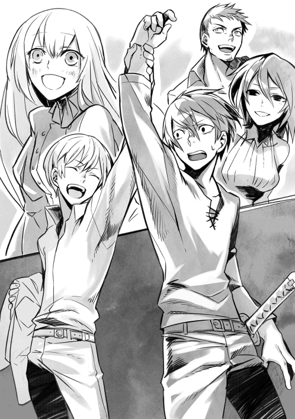
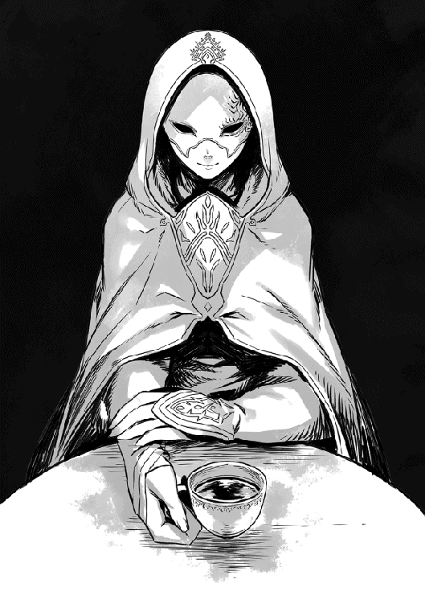

| 【合本版1-6巻】ショウ | |
| 吉野匠 | |
| (2016) | |
※本電子書籍は「ショウ」１〜６巻を１冊にまとめた合本版です。
CONTENTS
このコンテンツは『ショウ』１〜６巻までを収録しています。
イラスト：天野 英 Hana Amano
デザイン：ヴェイア Veia
マップ制作：藤城 陽 Yoh Fujishiro
序章 その日から
遠くで誰かの悲鳴が聞こえた気がして、目が覚めた。
目を開いた途端、神威将は反射的に身構え、闇の中で耳を澄ませてみた。
......特になにも聞こえない。
となると、自分がどうして目覚めたのか、少し不思議だった。
悪夢を見ていた記憶はないが、悲鳴が聞こえた気がするくらいだし、忘れただけでなにか嫌な夢を見たのかもしれない。
しかし、まるで覚えてないのも妙じゃないか？ 将は渋面で首を傾げる。
普段からちょっとやそっとの物音で起きたりしない方だし、眠ったが最後、朝まで熟睡するタチなのである。今のように突発的に目覚めることはまずない。
しかもただ目覚めただけではなく、馬鹿げた話だがひどく胸騒ぎがした。本棚に勉強机、そして壁に貼られたカレンダー......どう見てもいつもの自分の部屋なのに、どこか空気が張り詰めている気がする。
心の奥底で妙に怯えてもいた。
あえて言えば、ホラー映画を見た後で不安になって眠れなくような、あの感覚に近いかもしれない。
「......別になにもないよな？」
わざとらしく囁いた途端、今度こそ本当に物音がした。
階下の部屋で、なにか重い物を投げ出すような音が。明らかに気のせいではない証拠に、密かな足音もしている。
母親がトイレに立った音だろうと思ったものの、いつも聞き慣れた足音ではなかった。どっしりと響く類の足音で、母のせかせかした歩き方には遠い。
喉を鳴らし、将はそっとベッドから出た。
スモールランプが点いているお陰で部屋の中は辛うじて判別がつく。なにか武器になる物がないか、急いで探した。
漫画やアニメでは、こういう時にはバットなどを持って武装するのだろうが、あいにく十一歳という年齢にもかかわらず、同級生達とは違い、将は野球があまり好きではない。
やむを得ず、授業で使うテニスラケットを手にする。
及び腰でそっと襖を開け、階下を覗いてみた。
向かって右手の、リビングの電気が点いている。
母さん、と呼びそうになって、将はとっさに言葉を呑み込んだ。
廊下に誰かの影が見えるのだが、とても母のものには見えない。伸びた影が巨大過ぎるのだ。母にしては、縦にも横にもデカすぎる気がする。
神威家では見慣れない異形の影が、リビングの明かりに照らされ、ゆらゆらと廊下に伸びて揺れている。
情けない話だが、将はこの時点で身体が震えてきた。極度の恐怖と緊張感に追いやられたせいか、まだ五月だというのに、脂汗まで噴き出した。
間違いでもいいから警察に電話したいところだが、将はまだ携帯を持たせてもらってない。通報するにしても、結局、階下に降りるしかなかった。
（だいたい、母さんと雪那は下の部屋なんだっ）
母と、それにまだ八歳になったばかりの義妹のことを思った途端、将の身体の震えは止まった。
しっかりものの母はともかく、義妹は気が弱いし、泣き虫でもある。もしも階下の誰かが本当に侵入者なら、二人がどうにかされる前に、下りていかないと！
覚悟を決め、将は額の汗をパジャマの袖で拭った。
本当に泥棒なら、向こうだって怖いに決まってる！ こちらが騒げば、きっと逃げるはず。そう思い定め、その場で大きく息を吸い込む。
次の瞬間、腹の底から声を出した。
「誰だああああっ。泥棒かぁーーーっ！」
喚きつつ、階段を駆け下りる。絶対に、近所にも聞こえたはずだ。
それに本当に見知らぬ誰かがいたら、全力でラケットの一撃を顔面に見舞ってやるつもりだった──が。リビングに飛び込んだ途端、将の雄叫びはふっつりと途切れた。
......見知らぬ誰かは確かにいた。
革ズボンのみを履いた大男が一人、リビングの中央に立っている。
血のような赤い目をした不気味な男だったが、それだけなら、将はここまで惚けなかったはずだ。
「あ、あ、あ、あ......」
なにか言おうとするが、言葉にならない。
ラケットはまだ手に持っているが、今にも落としそうだった。
将は、なんとしても男の手から目が離せなかった。
そいつは、右手に母の首をぶら下げ、反対側の小脇には義妹の身体を抱えている。
母の顔はびっくりしたように目を見開いていて、その虚ろな視線が息子の将をぼんやりと見つめていた。
男は母の髪を無造作に掴み、まるで西瓜かなにかのようにぶら下げているのだ。
お陰で首から血がゆっくりと滴り、リビングの床に落ちていた。
せっかく止まっていた将の震えが、またぶり返していた。これは単なる悪夢の続きだと思い込みたいところだったが、じわじわと衝撃が広がり始めている。
吐き気もしてきて、その場にしゃがみ込みたかった。
「なんだ、まだいたのか、ガキが」
初めてそいつがしゃべった。
ざらざらした声で、赤い目を細めていた。
「だがよ、人間のガキ、男は大した金にならねーからな。あいにく、連れ帰るわけにはいかねーな」
「い、いも、義妹を」
「はあぁ？」
馬鹿にしたように男が顎を上げる。
不自然に赤い目がぎらぎらと輝き、まるで楽しんでいるように見えた。
「なにが言いたい？ はっきりしゃべれよ、ガキ？」
「い、いい義妹を返せっ」
「ふんっ」
今度はつまらなそうに、男は鼻を鳴らした。
よく見ると、短い頭髪は銀色で針金みたいに逆立っていた。ますます普通の人間には見えない。
「これは俺の小遣い稼ぎのネタでな。返すわけにはいかん......代わりに、こっちなら返すぜっ」
いきなり母の首を投げつけられた。
辛うじて立っていた将の胸に命中し、将のパジャマの胸を血で汚した後、床に落ちて湿った音を立てた。
その刹那、将は自分が狂ったかと思うほどの大声で絶叫していた。それまで堪えていたものが、今ので一気に決壊してしまったのだ。
ほとんどなにを言ってるのかすらわからない悲鳴だったが、顔をしかめた男が近寄り、将の胸ぐらを掴んで放り投げた。
「うるせえよっ」
「あぐっ」
将の身体は、嘘のように軽々と飛んだ。人間では有り得ないほどのパワーだった。
ぶつかった先が壁だったら、その時点で死ぬか重傷を負ったほどの勢いだったが、幸か不幸か、飛んだ先はテレビを見るためのソファーだった。
その大型のソファーが衝撃を受け止めかねて、仰向けに引っ繰り返った。内蔵されたフレームが歪み、中央がべっこりとへこんでしまっている。
将は脳天を貫く痛みに、泣くことも出来ずに身悶えする。
「え、な、なにっ」
最悪なことに、そこで義妹の悲鳴が聞こえた。気絶していたのが、どうも今の騒ぎで目覚めたらしい。
「おにいちゃあああんっ」
「ゆ、雪那！」
痛みを堪えて上半身だけ起こすと、丁度男が、泣き出した雪那の首根っこを掴み、揺すっているところだった。
「うるせえっ。殺せねえからって、痛めつけることはできるんだぞ！」
「やめろおっ」
声を絞り出すと、男はまた将を見た。
いささか意外そうに目を瞬く。
「悪運の強いガキだな。まあ、母親みたいに首を引き千切ればいいか」
泣き喚く雪那を小脇でがっちり抱え、ゆっくりと男が近付く。しかし、まさにその時、激しいサイレンの音が遠くからした。
騒ぎに気がつき、誰かが通報したらしい。
一瞬、男は迷う素振りを見せたが、すぐに肩をすくめた。
「金にもならんのに、死体を増やしてもしょうがねぇ」
そのまま、未練なく将に背を向け、なにやら口の中でぶつぶつと唱え始める。もはや、こちらを見向きもしなかった。
「ゆ、雪那をっ」
「こわい、こわいよう、おにいちゃんっ」
雪那がはっきりと将を見やり、泣きじゃくる。
お陰でなんとか立ち上がることができたようなものだ。
しかし......その時には既に遅かった。リビングの中央に黒い円形の「なにか」が現れ、大きく天井まで広がった。
厚みもなにもない、単なる染みのような黒い円状の「なにか」である。
男はその中に向かってためらいもなく歩を進めていく。
──あの先に行ったら、おそらく義妹はもう戻らないっ。
本能でそれを悟った将は、必死で叫んだ。
「雪那を返せえっ」
男はぴくりとも反応しなかったが、顔をこちらに向けていた義妹は、泣きながら手を伸ばした。
「助けてぇ、おにいちゃんっ」
「待ってろ、雪那！」
ガクガクする足を叱咤し、将は性懲りもなく男の背中に追いすがる。そして、義妹が伸ばした手を掴もうと、自分も手を伸ばす。もう少しで届きそうだったのに。
「おにいちゃ──」
黒々とした円の中に、二人の姿はあっさり消えてしまう。
途端に、黒い円形が小さくなり始めた。
──いけないっ。将は寸毫も迷うことなく、自分も中に飛び込んだ。
「すぐ行くっ、雪那!!」
飛び込んだ瞬間、めまいがするような感覚があり、身体がどこかへ落ちていくような気がした。前にいたはずの二人の姿は、なぜかもう見えない。
振り返ったが、既に入り口は閉じていた。
将は......真っ暗な闇の中をどこまでも落ちていった。
第一章 ソードフェスティバル
ショウ（将）は跳ね起きて周囲を見渡した。
......もう馴染みになりつつある、石造りの部屋の中で、つまりは見慣れたウォーリア（戦士）用の私邸の中である。
私邸と言っても部屋は三つしかないが、それでも身分的に一番下っ端であるレッドクラスの住民としては、破格の待遇と言っていいだろう。
それもこれも、今やショウがこのアンダープリズンにおいて、売れっ子のウォーリアとなっているお陰である。
ぼんやりと考え事をしていると、ベッドの下からユウリがのそのそと出てきて、小さく鳴いた。器用に前足をベッドの上に乗せて立ち、心配そうな目でショウを見つめる。とても狼の目つきには見えないが、もちろんショウは驚かない。
手を伸ばし、ユウリの頭をそっと撫でてやった。
「夏が近いとはいえ、床は冷えるだろ？ 奥のベッドを使ってもいいんだぞ」
優しく諭してやったが、そっと舌で掌を舐められただけだった。
ユウリのもう片方の分身の姿を想像すると、ショウとしては、こういうのも少し危ない気がしたりする。そしてそれこそが、ショウが未だにユウリに「一緒のベッドで寝るか？」と言い出せない理由でもあった。
二十歳にもなる男としては情けない限りだが、相手が息を呑むような美女ともなれば、そう思うのも仕方ない......まあ、今は純白の狼の姿にせよ。
そこまで考え、ショウはふと思い出した。
「そうか、こっちに飛ばされて、もう九年になるか」
しみじみと呟く。
九年前のあの晩の時点では、まさか自分が異世界で剣闘士じみたことをするようになるとは、想像もしていなかった。
とそこで、手荒く入り口のドアを叩く音がして、ショウは我に返った。
起き上がる前に、いち早くユウリがぱっと身を翻し、部屋を出て行く。マメな女性なので、客人を案内するつもりだろう。
ただし、客人の方で心の準備ができているとは限らないが。
「おわあっ」
......案の定、知人の度肝を抜かれた声がして、ショウは人の悪い笑みを広げた。
白いリネンのシャツと黒ズボンという、あまりウォーリアらしからぬ格好のデイルは、
ベッドのショウを見て、盛大に顔をしかめた。
黒い髪と灰色の瞳をした気の良い男なのだが、今朝はあまり機嫌がよくない。
「なんだよ、おい。まだ用意してないのか。もう試合開始の一時間前だぞ？ 興行主のザックが気を揉んでたぞ」
同じ年代の戦士にふさわしく、遠慮なく小言を述べた。
「寝過ごしたらしい。悪夢のせいだな」
「そ、そうか」
途端にデイルの表情にほのかな同情が混じる。
こいつはショウの事情を知る数少ない一人なので、もちろん義妹のことも知っているのだった。......その後、雪那がどうなったかも。
気まずい空気を察し、ショウは自分から切り出した。
「で、おまえはどうした？」
「おいおい、どうしたじゃないだろっ」
デイルの声がたちまち元のむくれた調子に戻った。
「興行主に言われて、迎えに来たんだよっ」
「そりゃまたご苦労なこった。逃げる場所なんかないんだし、どっしり待っててくれりゃいいのに」
ショウはうんざりして返す。
「おまえはメインイベントのウォーリアだろうがっ。お陰で俺まで使い走りに出されたんだからな！」
「そりゃ悪かった......そのうち、なにか奢るさ」
こうなると仕方ない。渋々、ベッドから出た。
寝室の隅に無造作に置かれたチェストを開け、シャツの着替えを出す。気遣いの行き届いた（行き届き過ぎた）ユウリは、すぐにまた部屋を出て行く。
彼女が出ていくのをしっかり見届けた後、デイルは小声で苦情を述べた。
「あのよ。同じ名前でも、どうせならいつもの超美人に会いたいぞ、俺は。最近あの人はどうしたんだ？」
「いや、普通にボチボチ会ってるよ、うん」
ショウは着替えつつも、笑いを堪えるのに苦労した。
「ホントか？ 別れたわけじゃないんだな？ あと、おまえのあの犬だが──」
「狼、狼だ！ 下手に間違えると、ユウリの機嫌を損ねるぞ」
振り返り、ショウはわざわざ訂正を入れる。
「機嫌だぁ？ 自分が犬扱いされてるのがわかるほど、あの狼様は賢いってか？」
文句を言いつつも、デイルは嫌そうに言い直した。
「その通り！ ユウリはおまえの下着の色から、振られた女の数までお見通しだ」
「けっ、嘘くせぇ」
戦士にふさわしく短く刈り込んだ頭を掻きむしり、厳つい顔でぶつぶつ言う。
「とにかく、その狼だ。いつも思うんだが、なんでクールな超美人のユウリさんと同じ名前なんだ」
「さあ？ 運命ってのは皮肉だよな」
ショウは辛うじて笑わずに言えた。
デイルはまだ納得のいかない顔で言う。
「じゃあ、あいつは四つ足でどうやってドアの鍵外してる？ 考えてみたら、不思議だ。実はおまえがダッシュで開けに来て、またベッドに走り戻ってんじゃないのか」
「俺はそこまで暇じゃない。ピンポンダッシュのガキじゃあるまいし」
「は？ ぴんぽん──なんだそれ？」
今度はショウが顔をしかめる番である。
英語と日本語を交えた、やたら優秀な言語変換の魔法がかけられていて、たいがいの単語は「こちらの世界」での適当な単語に変換されて相手に聞こえるはずだ。
しかし、それでもショウは日本人である。
当然、この世界にはない単語を口走ることはある。その場合はそのまま伝わってしまい、まるで理解してもらえない。そういう時は自分がよそ者（それも異世界人！）であることを大きく意識してしまい、あまり良い気持ちがしない。
「故郷の悪ガキがやる遊びなんだ......忘れてくれ」
「ああ、フォリナーの」
言いかけ、デイルは慌てて首を振る。
フォリナーとは、このロンザリア世界にたまに紛れ込んでくる異邦人を指すが、良い意味で使われることは少ない。友人に対して、デイルはとっさに気を遣ったらしかった。
「ま、それはともかく、急ごうぜ！ もう時間がないぞ」
「わかってる。すぐ行くよ」
朝食は諦めることにして、ショウは壁に立てかけた姿見に自分の長身を映す。
うっかりすると、目に被さるやや長めの前髪に、ほとんど逆三角形にも見える、線の細い顔つき。あまり戦士に見えないどころか、まだ少年っぽい雰囲気が抜けていない。目つきだけはいかにも戦士らしいと自負しているが、それはただ目つきが悪いだけの話かもしれない。
ともあれ、上下共に黒いシャツとズボンを着込み、それに剣帯に愛用の刀を着ければ、だいたい準備は終了である。仕上げに同じく黒マントを着けるが、これはどうせアリーナでは脱ぐことの方が多い。
支度が終わると、早速デイルが口を出した。
「いつも思うんだけどよ、防具とか着けろよなぁ。見てるこっちがひやひやする」
「いらない。めんどくさいし、動きが鈍くなる。罰ゲームじゃあるまいし」
「おめーは多少動きが鈍くなっても同じだ、同じ」
デイルは苦笑してそう吐かし、さらに口癖を出しつつ畳みかけた。
「あと、いつも思うんだけどよ」
「言いたいことはわかってる！ いいんだよ、俺はこれでいいんだ」
すかさず返したのに、それでも言われた。
「全身真っ黒って、暗くないかぁ？ どうせ売り出すなら、もう少し明るい感じで行こうぜー、陽気によぅ。せっかく、四年間無敗なんだし」
「明るい色？ 全身真っ黄色な服でも着ろってか？」
「おお！ そりゃ新しくて受けるかもな」
冗談で言ったのに、真面目に賛同され、ショウはげんなりした。
「売り出す気はないね」
この際、きっぱりと言い切る。
「だいたい、ソードフェスティバルなんて名前がついてるけど、やってることは見世物の殺し合いと変わらないだろ。明るくやってどうすんだ？ この賭け試合自体が、魔族が仕組んだ人間共のガス抜きだってのに」
思わず、といった感じで左右を見渡し、デイルは首を振る。
声を低め、ひそひそと囁いた。
「その遠慮のない言い方、外では控えろよ。昔はともかく、もう大戦から八年が過ぎてるんだ。今や魔族様は、俺達人間の支配者なんだからな」
──なにが「魔族様」だか。
そう思ったショウが口を開けた途端、デイルはおっかぶせるように続けた。
「とにかくっ。売り出す気があろうとなかろうと、おまえは今やトップウォーリアなんだっ。少しはソードフェスティバルを盛り上げる方向にだな」
「だから、ただの殺し合いを盛り上げる必要ないって」
「つってもおまえ、いつも相手を殺さねーだろうがよ──」
言いかけ、デイルは慌てて付け足した。
「まあ、そのお陰で俺はこうして生きてるから、そこは文句ないけどな」
ソードフェスティバルのルールでは、試合中に相手を殺してはいけないことになっている──が、それはあくまで建前であり、剣と剣で戦う限り、どうしても人死にはつきまとう。よって、相手が死んだ場合は罰金を払えば済むことになっていて、その額はさほど高くない。
むしろ、血なまぐさい場面が見られて喜ぶ客も多く、後で殺した戦士宛てにたんまり報奨金が届く仕組みになっている。罰金など余裕で払えて、さらに膨大なお釣りがくるほどの金がもらえるのだ。
こうなると、あえて殺しにかかるヤツも出てくるわけだが、そういう戦士が罰金以外の罰則を受けたことはない。唯一の例外は、殺される前に大声で負けを認めることで、この降参の合図を無視して斬りかかった場合に限り、戦士は永久追放とされる。
ウォーリアの身分は最下層のレッドクラスに過ぎないものの、個人の住居を許されるくらいで、なかなか待遇はよいのだ。
人気アップのためなら無茶する輩も多く、従ってこの降参ルールが、人死にを防ぐ唯一の枷となっているわけだ。
ショウは忠告のつもりであえて言ってやった。
「あの時、おまえは降参しなかったな。いい加減、その意地を捨てた方がいい」
「うるせー。年季の入ったウォーリアが降参なんかできるか。こっぱずかしいだろうが」
唸るように答えるデイルを連れ、ショウは部屋を出て石廊下を外に通じるドアへ進む。背後から、ユウリがひたひたと付いてくる音がした。
「まさかアリーナまで付いてこないだろうな、この狼」
デイルが嫌そうに呟く。
「来ないよ。なにかあった時は飛んで来てくれるだろうけど」
ショウはドアの前で振り返り、しゃがみ込んだ。
ユウリの頭に手を伸ばし、また穏やかに撫でてやる。満足そうに目を細める彼女を見て、自分も微笑する。
「じゃあ、悪いけど留守を頼む」
小さく鳴いて応えたユウリに頷き、ショウは立ち上がる。
ずっと見ていたデイルが、いつもの口癖を交えてからかうように言った。
「いつも思うんだが、おまえらって人と獣の枠を越えて仲がいい気がするぜ。あぶねーなぁ──て、いってえっ」
早速、ユウリにかかとの辺りを軽く噛み付かれ、デイルはウォーリアらしくない悲鳴を上げた。
☆
ウォーリアが試合を行うアリーナは、見かけはローマの闘技場とよく似ているが、規模はさすがにあれほどではない。
とはいえ、アンダープリズンに押し込められた人間達には他に大した楽しみはないので、自然と試合の日には大勢が集まることになる。
今日も、ショウが遅れて入ったアリーナには、既に千人を超える客が入っていた。
正直、いつもより遥かに客入りが良いくらいで、これから始まる試合への期待か、場内は興奮気味の悲鳴や怒声があちこちから聞こえる。
ショウが今いる、戦士用の狭い通路にまで聞こえるほどだ。
こういうのを聞くと、人の本性は戦いを好むのかもしれないと思わざるを得ない。
あるいは、魔族との戦に大敗した人間側の、成れの果てがこれなのかもしれないが。
そう、人間は魔族に敗れ、今やヤツらによって地下世界に押し込められ、細々と暮らしている。
仮にこれがゲームだとすれば、明らかにこの世界は、人間が魔族に大敗した「世界が終わった後の世界」なのだ。
「おい、ショウっ。遅いぞ！」
アリーナに至る出口の少し手前で、興行主のザックが仁王立ちしていた。
丸々と太った身体に纏う衣装は、真っ赤な胴衣に金色ボタン、それに赤マントに白い乗馬ズボンという格好で、まさに「目立つのが至上っ」と言わんばかりの姿である。
一応、薄くなった頭にシルクハットをのせているため、辛うじて興行主だとわかるが、さもなくば道化かと思うほどだ。
「時間には間に合ったじゃないか」
我ながら、やる気が感じられない声が出た。
もちろん、ザックは盛大に唾を飛ばした。
「間に合ってないっ。戦士は試合開始の半時間前にはここに立ってるのが規定だろうが！」
「......悪かったよ」
気のない謝罪に、ザックは頬の肉をぷるぷる震わせる。
「おまえはスター戦士だからわしも大目に見てるが、本来なら追放ものだぞっ」
「スターは置いて、悪いとは思ってる......ホントだって。昨晩は嫌な夢を見てな。勘弁してくれ」
さっきより多少気を入れて謝ると、やっと険しい表情を緩めてくれた。
「わかればいいが、本当に頼むぞ。今日はおまえ、魔族様もお越しだからな」
「魔族が来てるって？」
ショウは顔をしかめた。
「なんでまた。ヤツら、よっぽど暇なのか」
ぞんざいなセリフを聞いて、ザックは目を剥いた。
「魔族様のお越しは、もうだいぶ前から決まってただろうがあっ。あと、呼び捨てにしてどうする、馬鹿者っ。魔・族・様だ！」
またしても盛大に唾が飛んだ。
「ここだからいいが、外では絶対に様付けを忘れるなよ、殺されるんだぞっ」
「わかったけど、あんたの声の方が俺よりデカいって」
なにが魔族様だよと思ったが、ショウはあえて言わずにおく。
大戦に惨敗した後の人間は、魔族から四つの身分に強制的に分けられている。ブルー、ホワイト、ブラック、レッドの四つだ。アンダープリズンに住むのは最下層のレッドクラスの住民が大半だが、このクラスは魔族から見れば、隔離された罪人も同然なのだ。
大戦の折に最後まで魔族に敵対した人間達のクラスなので、まあ当然だが。
「で、その魔族様がなんの気まぐれだ。血に飢えてるのか」
「知らん」
落ち着かない態度で、ザックは首を振る。
「知らんが、相手は魔王のご息女なんだ。三人兄妹の末っ子の娘で、超大物だぞ。なにかあった日にゃ、こっちの首が飛ぶ......比喩的な意味じゃなくな。これまでの試合じゃずっと退屈そうにしてらっしゃったし、どうもあまりよい空気じゃない。わかったら、おまえもくれぐれも失礼のないようにしろ、いいな！」
「俺が直接話す機会なんかないだろ？」
呆れて言い返すと、すかさず文句がきた。
「万一のためだ！ いちいち口答えが多いっ。とにかく、彼女のお名前は」
「いいって、名前なんか。話せもしない女の子の名前なんか聞いてもしょうがない。別にお近づきになれるわけじゃなし」
ショウが肩をすくめると、ザックは灰色の目で睨みをくれた。
「ふんっ。相変わらず、生意気なヤツだ。だいたい、さほど女に興味もないくせに」
「んな馬鹿な。好みの子がいたら、今日だってサボってたよ」
「やかましいっ」
ぷりぷりしつつ、ザックは先に通路からアリーナへ出て、その中央まで進んだ。
彼の姿が出た途端、場内のざわめきが最高潮に達する。しばらく彼らが騒ぐに任せた後、ザックはおもむろに片手を上げた。
すかさず、だみ声を張り上げる。
『皆さん！ ソードフェスティバルのメインイベントの時間がやって参りました。光栄なことに、本日は魔族様のご令嬢も観戦なさっております』
そこでシルクハットを取り、一度深々と有らぬ方向へお辞儀をする。
あいにく、通路の奥に立つショウからは、その「魔族様」とやらは見えなかった。すぐにシルクハットを被り直し、ザックが声も枯れよとばかりに絶叫を再開した。
『では早速、メインイベントを担う戦士を紹介しましょう！ まず、東より──ソードフェスティバルが生んだ王者の中の王者でもあり、２５０戦全勝の無冠の帝王でもありますっ。ショウ・カムイの入場です!!』
──ああ、この道化芝居の時間が一番嫌だ。
そう思いつつも、ショウはやむを得ず、ザックの派手な腕の振りに応えて、通路から外に出た。
降り注ぐ鈍い光を仰ぎ見れば、魔族が生み出した人工太陽が、岩盤の天井に輝いている。これがあるお陰で、ここが地下世界でも辛うじて人間が暮らしていけるのだが──所詮は魔力で生み出された人工の産物なので、その輝きは外とは比べものにならない。
この地下の牢獄たるアンダープリズンが、昼夜を問わず、薄暗い理由だ。
「ショウっ」
ザックが小声で咎める声がした、ようやくショウは天井の鑑賞をやめた。
叱責に従い、素っ気なく片手を上げたものの、それ以上の愛想は見せない。それでも、無愛想で強いショウは意外なほど人気があり、場内はどっと沸いた。
「いいぞぉー、ショウ！ 今日もすかっと勝利を頼むぜぇえええ」
「でもあんまりすぐに決着つけないでくれよ。楽しみが減るからなぁああ」
「あたしは今日もあなたに賭けたわよっ。がんばってぇぇええ」
それぞれ実に勝手な声援を送ってる客達に自然と渋面になり、ショウは中央に至る。
そこでやっと、めったに使われないアリーナの貴賓席の方を見た。
......確かに、貴族趣味の極みみたいな豪勢なドレス姿の娘が、中央にいる。
その左右には、燕尾服に近い裾の長いスーツと、クラバット（ネクタイの原型）姿の魔族の護衛達も大勢いた。
全員、白銀の髪に真っ白い肌をしていて、魔族の最上位種は見栄えのする美形が多いという、噂通りの姿だった。
とはいえ、魔族も下位種になると怪異な容貌の方がよほど多く、美形などあくまで上位のほんの一部らしいが。
ショウが眺めているうちに、ザックの大声がまた響いた。
『さて、西のゲートからは、無冠の帝王に挑む新たなチャレンジャーの登場であります！ かつて地上で魔族様のお目こぼしによって栄えていたロンザリア帝国のぉおお、その生き残り戦士の登場です！ 若き傭兵、ガラドに盛大な拍手をっ』
ザックの景気よい口上に比べて、拍手の音は散発的だった。
誰だよ、それわあっ、という馬鹿にした声も多い。馬鹿にする気こそないが、正直、ショウも初めて聞く名前だった。
少し不審だったので、そばにいたザックに小声で訊く。
「おい、ザック！ メインイベントだろ？ 客に馴染みのない戦士で大丈夫なのか」
「しょうがないだろ、おまえへのチャレンジ権を獲得する試合で優勝しちまったんだから。新入りだが、実力は証明したんだ。わしだって正直、不安なんだよっ。おまえが上手く場内を盛り上げろ。なんか芸はないのか？」
「無茶苦茶言うな──」
馬鹿っと言いかけ、ショウはそこで息を呑んだ。
......眼前に来たそいつが、あまりにも奇妙だったからだ。
いや、容貌は短い髪に角張った顎の、いかにも戦士風の男だし、上半身にレザーアーマーを纏っているのも、これも型通りである。
問題は、一杯に見開いた両目だ。......虹彩が鮮やかな黄金色をしているのだ。確かにショウはフォリナーでよそ者かもしれないが、少なくともこんな瞳の色は、人種の坩堝に近い、このアンダープリズンでさえ見たことはない。
ただし、実はショウは、この黄金の瞳を知識としては知っていた。
......こいつはまさか？
「かつてのロンザリアの出身だって？」
昔、魔族に滅ぼされた地上の一大帝国の名前を出し、ショウは相手の反応を伺った。
しかし、男は茫洋とした黄金の瞳で、瞬きもせずにショウを見据え、こう告げただけだった。
「おまえを殺してやるぞ、ショウ。死にたくなければ、せいぜい己の力を振り絞れ」
「ば、馬鹿なことを言うんじゃあ、ないっ」
ショウではなく、興行主のザックが囁き声で注意した。
「建前とはいえ、ソードフェスティバルは人殺しは認めてないぞ！ 他でそんな噂を振りまいたりするなよっ」
すると若者──ガラドは、まるで機械仕掛けのような動きで首をゆっくりとザックに向け、端的に言い捨てた。
「失せるがいい」
「なにい!?」
ザックの顔色が見事に変わった。
「ぺーぺーの新人ウォーリアのくせに、わしを誰だと思ってるっ。この場で追放されたいのか、貴様っ」
無理もないが、真っ赤になって怒っている。
今にも掴みかかりそうだったが......ショウはあえて止めた。若者の肩を持ったのではなく、ヤツの態度になにか危険なものを感じたからだ。
「まあ落ち着けよ。今日は魔族の大物が観戦してるんだろ？ こんなトコで追放騒ぎなんぞやらかしてみろ、あとでケチをつけられるのは興行主だぞ。下手すりゃ、あんたの首は胴体と泣き別れ確定だ」
「笑えない忠告はよせっ」
痰が絡んだような唸り声を上げ、ザックは渋々、新人ウォーリアから目を逸らした。代わりにショウを見て、ごくごく微かに低頭する。
「......まあいい、ここはおまえの顔を立ててやる。その代わり、試合の後であの小僧はどやしつけてやるからなっ」
「それは無論、試合を仕切る興行主の権限さ」
今のセリフが、ザックの斜め方向からの感謝の言葉だと知っているショウは、澄まし顔で頷いてやった。
ザックはようやく機嫌を直したように口元を綻ばせ、ひそひそと囁きかけた。
『今日のわしは中立を捨てた。あの、身の程知らずの生意気なガキを叩きのめしてやってくれ』
「おいおい......」
苦笑するショウを置いて、ザックは離れて行く。
試合開始の直前になって、ショウはもう一度、正面ゲート直上の貴賓席に目をやった。
純白のコルセットドレスを着た魔族の娘が、身を乗り出すようにして挑戦者を眺めていた......不審そうな目つきで。
ただ、ショウの視線に気づくと、素早くこちらを見やり、ばっちり視線が合ってしまった。なぜか向こうは、小首を傾げて花が開くように微笑した。
輝く白銀の髪と薄赤い瞳をしていて、眉の上で綺麗に前髪を切り揃えている。洋風な顔立ちは別として、髪型だけなら日本古来のお姫様風である。
大層な美人だったが、もちろんショウにはまるで縁のない存在だった。
すぐに目を逸らし、当面の（怪しい）敵を眺める。
......黄金の瞳を持つ男が、背中から大仰な武器を外して構えたところだった。
「ツーハンデッド・ソードだと？」
両手持ちの武器で、重さ四〜五キロはある、長大な武器である。
斬るよりも、むしろその重量を活かして敵を叩き殺す方が多い。もちろん、斬る方にも使えるが、その重さ故に剣士の方にも大きな負担を掛ける。
振り回した後に、否応なく隙が多くなるのだ。しかもあまりに重いし、ウォーリアで使う者は少ない。
自分より身長も体格も劣るこのガラドとやらが、本当に使いこなせるのだろうか。
ショウが忠告するかどうか迷っている間に、試合が始まってしまった。
「それでは、始めえーーーーっ」
他人の心配をしてる場合ではなかった。
ザックの掛け声が終わるか終わらないかのうちに、もうガラドが突っ込んで来た。
ご大層な大剣を頭上に掲げ、それこそ間合いに躍り込んでくる勢いだった。意外なことに、こいつはツーハンデッド・ソードを軽々と扱っている。
頭上の人工太陽にぎらりと大剣が輝き、ショウが身を捌いて避けると同時に、ソードが大地を抉る。ドガッと嘘のようにでっかい音がして、足下に巨大なひび割れが生じた。
「面倒なヤツだな、やる気満々かよ！」
声を放った時には、既にショウの反撃がガラドの手元に伸びている。
不思議な輝きを放つ刀身が、光の筋を残してガラドの手を襲う。手を負傷すればもう武器が持てないわけで、つまりは最も速く試合を決められるのだ。
自分のことよりも、むしろ無茶な武器を振り回す相手の無謀を考えてのことだったのだが──どうも余計なお世話だったらしい。
今度はガラドの方が素早く身を捌き、ショウの一撃をかわしてしまう。
しかも、即座に手首を返し、馬鹿みたいに重たい（はずの）大剣を横殴りに叩き付ける。飛び退くようにしてショウが避けると、素早く間合いを詰め、今度はショウを縦に斬り裂くような勢いで、とんでもない剣撃を頭上に降らせてきた。
初めてその一撃を刀で受けたが、正直、予想以上のパワーに驚いた。
ショウ自身も見かけから想像するより遥かに筋力があるのだが、こいつはそもそも、人間より魔族に近いパワーの持ち主かもしれない。
事実、剣撃を受けた瞬間、アリーナ中に響き渡るほどの音がした。
さらに、二合三合と激しく切り結んだが、ガラドの剣撃はただ重いだけではなく、銀色の大剣が霞むほどのスピードがあった。
「黄金の瞳ってのは、あまり見かけないな？ ロンザリア帝国といっても広い......どの辺りの出身なんだ？」
四合目に大剣と刀でギリギリと押し合いつつ、ショウは気軽に訊く。
全身の筋力を振り絞っているが、表情だけは涼しげに装っていた。
「関係ない」
ガラドは感情の抜けた声音で返す。
「我は命令を遂行するのみ」
ある意味、ショウの予想通りである。
「ああ、やっぱりそういうことか。使い走りは大変だよなぁ」
ニヤッと破顔し、ショウは言い返す。
「つまりおまえは、あの呪法の犠牲者──」
「死ねええーーーっ」
途端に、ガラドが馬鹿力でショウを押し返す。
下方からすくい上げるような力の入れ方をしたせいか、呆れたことに、ショウの身体が軽々と浮き上がるほどのパワーがあった。刀で受けていた状態でなければ、包丁で豆腐を切るようにすっぱり身体が割られていただろう。
緩い放物線を描き、ショウの長身が驚くほど遠くまで飛ばされた。
しかも、こちらの身体がまだ空中にあるうちに、ガラドがショウを指差し、一杯に見開いた目で叫んだ。
「潰れろ、ダムド・ハンマーっ」
「──！ ソウルバイブルの禁忌魔法かっ」
叫んだ時には、天より特大の拳が降ってきたようなとんでもない衝撃が来た。ショウは両手を胸の前でクロスに構え、受けの姿勢を取ったが、それでもハエ叩きでぶっ叩かれたような勢いでアリーナの大地に叩き付けられてしまう。
轟音と共に大地にひび割れが生じ、クレーターのごとき派手な陥没ができた。
アリーナの観客も、さすがに静まり返ってしまう。
目の肥えた彼らとはいえ、ここまで派手な魔法を観るのは初めてのことだったのだ。 無論、誰もが「わっ、ショウは死んだぞ！」と思ったはずである。その証拠に、唖然としていた興行主のザックが、一拍置いて猛然と怒り始めたくらいだ。
「おい、新入りっ。なんの真似だ、貴様あああっ。あいつぁ確かに生意気なクソガキだったが、それでもいいトコだってあったんだ。こんな死に方をするヤツじゃないぞっ」
悠々と立つガラドを指差し、喚きに喚く。
ガラドはただ目を細め、今度はザックを指差そうと手を上げかけた。
「お、おい、まさか興行主のわしを」
さすがにザックがぎょっとしたところで──ようやく、ショウは跳ね起きた。
もう少し休んでいたかったが、まあ必要以上にサボっているとロクなことはない。
「倒す相手を間違えるなよ、新入り！」
薄青い光を全身に纏い、ショウは明るく声をかける。
黄金の瞳を持つガラドがさっとこちらを見たので、顔をしかめて首を振ってやった。
「悪いが、呪法によって一度ホーリーナイトになった以上、おまえはもう元の人間には戻れない。その呪法から解放されるには、呪法をかけた相手か、あるいはおまえが死ぬしかない。......と教えてやっても無駄だろうけど」
「お、おいショウっ。大丈夫なのか！」
ショウは珍しく心配そうな（そして驚愕したような）ザックに、手を振ってやった。
「ザック、あんたの愛情表現には、涙が滲んできたよ。今晩から、部屋にあんたの写真でも飾っとく」
平然と声をかけた途端、ザックは元より、アリーナ中がどっと湧いた。
「おぉおおおおっ、すっげぇええええっ。さすがは帝王っ」
「そんな生意気なチビは殺しちまぇーーーっ」
「反撃だ、反撃だ、ショウ！」
それぞれ好き勝手なセリフでもって、熱狂的に喚いた。
冷静だったのは、叫び声に顔をしかめたショウと──そして、疾風の如く躍り込んできたガラドのみだった。
こいつは黄金の目をぎらつかせ、相も変わらず同じセリフを叫んだ。
ショウの眼前で大剣を振り上げ、既に攻撃態勢に入っていた。
「我は命令を遂行するのみ！」
「勤勉なのはウォーリアには向かないぞっ」
言下に、ショウの姿がその場から消えた。
極限状態のルナティックモードに入り、常人が出せる限界を遥かに超えたスピードで動いたせいだが、もちろん観客達もザックも、そこまではわからなかっただろう。
気功を応用したこの能力を使えば、常人の目には追いつかないスピードで動くことが可能となるのだ。
観客達が見たのは、一瞬にしてショウとガラドの体勢が入れ替わり、ガラドの背後に「出現」したショウが、容赦なく剣撃を繰り出すところのみである。振り切った刀を静かに戻し、ショウはぱちんと鞘に収めてしまう。
まだ背中を向けて突っ立ったままのガラドから、さっさと離れる。
とそれが合図だったかのように、ガラドの身体がゆっくりと傾いで倒れた。それこそ、どさっと丸太のように。
その途端、またどっと場内が湧いた。
なにをしたかはわからなかったにせよ、とにかくショウが勝ったことだけは、誰の目のも明らかだったからだ。
実はガラドの延髄の辺りを、刀の棟の部分でどやしつけて気絶させただけなのだが。
そこでふと目を上げ、ショウは眉をひそめた。
例の貴賓席にいた魔王の娘とやらが......未だに身を乗り出したまま、まだショウをじっと見つめていたのだ。しかも、当初の単なる興味のみが窺える目つきではなく、随分と真剣な視線に見える。
とはいえ、どうせこちらから話しかけることはできないし、それに試合はもう終わっている。興行主のザックが満面の笑みでショウの勝利を宣言し、例によって右腕を掴んで上げようとしているところだった。
「待てって、ザック」
「なんだよ。最後くらい、客に愛想を振りまけ！」
「じゃなくて、後で話がある。この気絶した新人だが、このままじゃ」
──元に戻らないぞと言いかけたのだが、まさにその瞬間、アリーナの一画で大声で叫んだヤツがいた。
『ダスク！ 聞け、誇り高き、人間の同胞達よっ』
ショウはさっとそちらを見た。
革ズボンと肌に張り付くようなぴったりした白いシャツを着た男で、長い黒髪と灰色の瞳という、明らかにロンザリアの平民の特徴をしていた。
そいつが朗々たる声を張り上げつつ、両手を天に掲げている。
しかし、ショウが気になったのは、最初の「ダスクっ」という叫び声である。あれは、魔法を発動するコマンドワードだったような気がする。あの瞬間、明らかに男から魔力の流れを感じた。
「今度はなんだよ！」
ザックがたちまち不機嫌な顔で観客席を振り向く。
「......いや、今度はどうも毛色が違うぞ、ザック」
ショウはこっそり囁いた。
「見ろ、アリーナのあちこちで、似たような服装のヤツらが立ち上がった」
実際、それぞれ数十名ずつの集団が、最初に喚いた男に合わせてすっくりと立ち上がっていた。驚くほど数が多く、全部で数十名ほどはいるだろう。
「これはだいぶヤバそうだ」
「どういう意味だ」
「わからないか？」
厳しい声で、ショウはザックに教えてやる。
「あの立ち上がったヤツらの目、このガキと同じ黄金色に変色している。あれは、ある呪法にかかったヤツの特徴なんだ。いまの『ダスク』って単語がコマンドワード──つまり短縮呪文だったのさ。あれで一斉に目覚めたようだ」
「ほ、ホントか!?」
「ホントだとも。今、実例を見たばかりだろ？ あんたは逃げろ、ザック。もう試合どころじゃない」
「しかし、おまえはどうするっ」
「そりゃ逃げるさ。だがせっかくだから、もう少し高見の見物でもしようかと」
あっさり答えたところで、また煽動者の男が喚く......まるで、観客達に語りかけるように。
『三年に及ぶ魔族と人間の雌雄を決する大戦に敗北してから、はや八年。我々人間は、各地でこのアンダープリズンという体のいい地下牢獄に押し込まれ、屈辱的な奴隷生活を送っている。魔族のために奉仕し、あるいは魔族の顔色を窺い、こうしてつまらん賭け試合くらいしか気晴らしがないような、鬱々たる生活だ』
「基本的に賛成なんだが、他人に言われるとむかつくぞ、くそっ」
ショウは顔をしかめて腕を組む。
「これで食ってる俺としては、あんまり頷きたくないな」
「馬鹿、そんな場合じゃない！ あいつら、なんのつもりだっ」
無理もないが、今やザックの顔は恐怖に染まっていた。
「きょ、今日は魔族様のご令嬢も観戦に来てるんだぞっ。こんな扇動の有様を魔王陛下に報告されてみろっ。俺もおまえも死んだも同然だ！ 部下を連れて止めてくるっ」
「よせよせ、馬鹿らしい」
ショウはザックの肩を掴んで首を振った。
「いいからあんたは逃げるんだ。こんな大胆な計画立てるくらいだ。これからもっと大事になると見た」
「計画って、どんな計画だ」
「なんにせよ、あんたのタマが縮み上がるようなことだよ」
......事実、ショウの予感は当たっていた。
煽動者の男が、いきなり貴賓席を指差し、こう怒鳴ったのだ。
『だがみんな、ついに時が来た。恐れずに私と共に戦え！ 私はヒーローとして覚醒し、魔族を倒す先駆となるべく、ここへ来た。手始めは、あそこにいる魔族の第三女だ！ 魔王の娘ロクサーヌを倒し、人間側の反旗の手始めとしようっ』
最初から場内は戸惑った声が満ちていたが、ここでさすがに驚きの声や狼狽の声が入り混じってきた。
ちなみに、ヒーローとは遊技場で子供向けにショーを見せる人ではなく、この世界では本気でそのまま「英雄」の意味を持つ。
要は敵である魔族を倒し、人間達を救う者を指すのだ。
ヒーローの自称が真実かどうかは置いて、これまでの大言壮語もかなり手遅れなほど危険だったが、魔王の娘を殺すとなるともう危険などというレベルではない。
それはもはや、再び人間が魔族に対して挑戦するのと同義である。
大戦に惨敗してから八年、まだまだ当時の苦しい戦いを覚えている者は多い。中には故国で徴兵されて、直接剣を交えた者もいる。
いかに魔族が強大な相手かよく知っているわけで、普通は呆れる。
......そもそもショウに言わせれば、ヒーロー自体が都市伝説も同然の戯言だった。
このどん底の状態にある人間側の状況を、全て引っ繰り返す英雄などが、そう簡単に出てくるはずがない。
しかし、顔をしかめたショウの疑問に応じるがごとく、男はさらに声を張り上げる。
『恐れる必要はないぞ、みんな！ 私には頼もしい仲間が既に大勢いる。無論それは、諸君の味方でもあるのだ。さあ同志諸君、あのロクサーヌを殺せぇえええっ』
最後の絶叫に応じ、こんどは意外な場所から大勢が立ち上がった。
すなわち、貴賓席のほぼ真後ろに当たる数列の客が、一斉に立って雄叫びを上げたのだ。しかも、それぞれが片手を天に掲げた途端、その手に銀色の長剣が生じた。
人間の客はアリーナに武器を持ち込めないのが規則なので、魔法のトラクション（牽引）を使って引き寄せたらしい。
他にも、アリーナのあちこちで席を立って駆けつける者がいた。
「用意周到だな」
ショウは感心したように呟く。
「どうやらあいつらしい、ガラドにホーリーナイトの呪法をかけたのは」
「感心してる場合か」
ザックは青ざめた顔で、どよめく貴賓席を見ていた。
「これからどうなっちまうんだ」
「どうなるにせよ、俺達には嬉しくない結末が待ってそうだ。ヤツらは本気で、魔王の娘を血祭りに上げる気でいるらしい」
「ばっ」
派手に唾を飛ばし、ザックがよろめく。
改めて言われてやっと信じる気になったらしい。自慢のシルクハットが頭から落ちたのも気づかないほど狼狽していた。
「ばばば、馬鹿なっ。なんてことをするんだ！ 魔族様の──それも魔王陛下の娘を手にかけてみろっ。本当にまた戦になるぞ。こ、今度こそ、全ての人間が虐殺されるっ」
「とにかく、この場はどうにもならない」
ショウは早口で言い聞かせた。
「アリーナの中に仲間がうじゃうじゃいるくらいだ、あいつは周到に用意してたらしい。どうせもう、あんた一人がうろたえてもどうにもならん。どさくさにまぎれて、今や無関係な観客の中にも、煽動者の動きに呼応するヤツがいる」
手遅れというか、貴賓席の方では既に派手な戦闘が始まっていた。
煽動者の仲間が大勢、魔族の護衛に襲いかかっていて、戦況は予断を許さない。
数に劣る魔族側の護衛も、もはやそれぞれ剣を抜いて応戦している。魔王の娘を庇い、狭い観客席で大立ち回りを演じ始めていた。
ただ、（そうに決まってるが）貴賓席を襲撃した連中がもし全員ホーリーナイトなら、護衛達はもちろん、魔王の娘も無事に済むかどうか微妙なところだろう。
どのみちここまで事態が進展すると、もはや自分達にできることなどない。
「というわけで、とっとと逃げるぞ、ほらっ」
背中を押してやると、ようやくザックが走り始めた。というよりショックが強すぎて、一時的に虚脱状態に陥っている。
ため息をつき、ショウは後ろからついて走ったが......三歩も行かないうちに呼び止められた。
「待て、ショウ！」
気は進まなかったが、振り向いてみる。
......最初に大声で扇動を始めた男が、まっすぐこちらへ来るところだった。
髪が長めのショウより遥かに長髪で、黒髪を背中に少し伸ばしている。そのせいか、元々は日本人であるショウの目には、剣士というより美貌のロックスターのように見えた。
ショウは、立ち止まっていたザックを手を振って追い払った後、相手に向き直った。
「ショウ・カムイか？」
ヤツはじっと瞳を当て、まっすぐ尋ねてきた。
「人違いだね」
ショウはきっぱりと首を振る。
「俺はジョン・マンジロウって名前で、実はショウの影武者なのさ。本物の彼は、義妹と手に手を取って故郷へ帰った」
願望混じりの大嘘をついたが、相手は馬鹿にしたように笑っただけだった。
「嘘だろ？」
「......知ってるなら訊くなよ。そもそも、俺の故郷じゃ本当はカムイ・ショウってなるんだぞ。名字が先だ」
「どうでもいいさ。おまえが間違いなく無冠の帝王だとわかればいいんだ」
「俺をそう呼ぶヤツは、敵と相場が決まってるんだがな。誰だおまえ？」
「おまえと同じ、普通の人間さ。ギーガン・ロシュフォードという......ショウ、私の仲間になれ。ヒーローであるこの私のなっ」
言った途端、ギーガンは口の中で奇妙な詠唱を始めた。魔法の呪文のように聞こえるが、それにしては意味不明な語句が多い言葉だった。どちらにせよ、コマンドワード（短縮呪文）を使わない、本格的な詠唱に近い。
無形の圧力を身体に感じ、ショウは顔をしかめる。
「あいにくだが、俺には超美人の神様の加護がある。ホーリーナイトの呪文は効かない。ナイト化の呪文なら、時間の無駄だぞ」
「なっ」
冷静そのものだったギーガンが、初めて灰色の目を見開く。
愕然としたようにショウを見た。
「ソウルバイブルの呪文がわかるのか！」
「知ってるさ。言わせてもらえば、おまえはアレの使い方を間違ってるぞ」
ショウは不機嫌に言い返した。
「無知に加えて傲慢な野郎だ。どこで禁忌魔法を知ったのかは興味ないが、どうやら俺が倒したそいつを始め──」
ショウはまだアリーナに転がったままのガラドを指差し、未だ大混乱中の観客席を眺める。今や客達は、逃げようとするグループと、扇動に応じて魔族を倒そうとする連中に分かれていた。もちろん、後者の方が遥かに数が少ないが。
「観客席のホーリーナイト共も、全員が事前に承諾を得たわけじゃないようだな？ だとしたら、貴様のやり方は気に入らないね」
見上げたことに、ギーガンはまるで言い訳しようとしなかった。
ただ、表情を改めて手を差しだした。
「ソウルバイブルを知るのなら、なおさらだ。ショウ、我々の仲間になれ！ 地上でエラそうにふんぞり返っている魔族共を叩き出し、人間の世界を取り戻すんだっ」
「実にご立派なスローガンだが、最初の勧誘方法が悪かったな。訪問販売の宣伝文句の方が、まだ気が利いてるね」
ショウはすっと目を細める。
膝の力を抜き、両手をだらりと構えたまま、いつでも抜刀できる構えをとる。
「問答無用で人を手駒にしようとしたヤツを即座に許すほど、俺は人間ができてない」
はっきりきっぱり言ってやると、ギーガンはさすがに差し出した手を下ろした。
「全ての人間を説得している時間はない。しかし、確かに私のやり方は性急なんだろうな。だとしても、今更引き返せはしない。......おまえが仲間にならないのは残念だが、せめて静観してもらいたいものだ」
「こっちで俺を拾って育ててくれた養父と養母は、五年前に人間の反乱に巻き込まれて死んだんだ」
ショウは静かに返す。
「別に今更恨み言を言う気はないし、おまえには関係ない話かもしれんが、それ以来、俺はこの手の反乱には関わらないことにしている」
ギーガンはなにも答えなかった。ただ、厳しい目つきでショウを値踏みしている。
あるいは、ここで倒しておくべきかを考えているのかもしれない。
ショウは薄い笑みを広げ、ギーガンの背後に顎をしゃくった。
「首謀者のあんたが、いつまでもこんなトコに立ってちゃまずくないか？ 見たところ、貴賓席にいた魔族の連中は、脱出に成功したようだぞ」
「なにっ」
ギーガンは慌てて振り向き、即座に状況を見て取った。
ショウが指摘するまでもなく、貴賓席には人間と魔族の死体が幾つか転がっているが、肝心の魔王の娘は影も形もなくなっている。どうやら生き残りの護衛と共に通路まで血路を開き、逃げたようだ。
ギーガンが歯軋りする音が、ショウまで聞こえた。
「......スタートからして失敗したようで、ご愁傷さまだ。ロクサーヌだったか？ 彼女を押さえておけば、せめて魔族との交渉のしようはあったろうに。もったいなくも、あんな美人を殺そうとするとは」
嫌みを言ったものの、ギーガンはもはやショウなど一顧だにしなかった。
振り向きもせず、「我々を敵に回さないことだ！」と言い捨て、そのまま観客席の方へ走っていった。逃がした部下共を叱咤して、ロクサーヌの追撃に当たらせるのだろう。
まあ、まだ彼女がアンダープリズン内にいるのなら、そう遅くもないかもしれない。
周囲は人間だらけだし、地上へ上がる機械式エレベーターまでは、相当の距離がある。 加えてホーリーナイトの力をもってすれば、残った魔族の護衛もなんとかなるだろう。事実、観客席に死体となって転がっている中には、人間だけではなく、魔族の上位種の姿もちらほら見えた。
「......まあ、いずれにせよ、俺には関係ないな」
ショウは息を吐くと、そのままゲートへ向かって歩いていった。
☆
アンダープリズンは地下の街なのだが、岩盤層の巨大な空洞を広げて作られているだけに、昼夜を問わず、薄暗い。
特に午後になると、魔族が天井に作った人工太陽も少しずつ暗くなり、街の中はなおさら暗くなってしまう。
そんな辛気くさい街に、ホワイトストーンを組んで造られた石造りの家や、同じく煉瓦造りの家などが並ぶ小綺麗な一画と、掘っ立て小屋に等しい木造家屋が寄り添うように並ぶ一画がある。互いの地区は岩盤で仕切られているが、もちろんちゃんと短いトンネル状の通路で結ばれ、行き来はできる。
小綺麗な家が住む場所はブラッククラスが主な住人であり、下層とはいえ、人間の中ではまだマシな方だろう。そして後者はレッドクラスが主な住人となる。
ショウもこのレッドクラスであり、ソードフェスティバルの稼ぎがなければ、本来は布やら板きれで掘っ立て小屋を建てて住まねばならないクチである。身分は最下層でも、金があれば（地上へ出られないことを別にすれば）それなりにマシな暮らしはできるわけだ。
おおざっぱに見ると、アンダープリズンの南端から北へ向かって六割ほどの地区が主に貧困層、その貧困層の地区から北端地区に近付く二割が、比較的マシな家が建つ、懐が温かい者が住む地区。残りの二割......つまり、地上への唯一の出口ともなる機械式エレベーターがある北端地区は、丸々魔族しかいない場所となっている。
各地区に詰める監視員の交代要員や、数は少ないながら、駐留軍が常駐しているのだ。
余談だが、監視員というのは、必ず各地区に多少はいる。
というのも、街のそれぞれの地区の中央部は例外なく小高い丘になっていて、魔族の下位種が住民達を見張るための監視棟があるのだ。監視員とは、そこで見張り役をしている魔族達のことである。
住民は常に彼らに見下ろされ、監視されて過ごしているわけだ。
大陸各地に散らばる人間を押し込めた地下街が、全て「アンダープリズン（地下監獄）」と呼ばれる理由でもある。
それと、魔族によって定められた人間の四つの階級は、それぞれ定めた理由がある。
ブルークラスは大戦当初から魔族に協力し、共に戦ってきた者達で、彼らの子孫もこの階級に含まれる。ホワイトクラスは大戦初期の段階で降伏し、同じく共に戦った者達。
今現在、人間で真っ当な陽光の当たる地上に住めるのは、このホワイトクラスまでである。無論、アンダープリズンではあまり見ない（どうせ数も少ないが）。
三番目のブラッククラスは奴隷ではあるが、魔族の役に立つ産業などに従事し、魔族のために奉仕する者達。地上に出ることは許されないが、無償で地下に個人の住居を持てる。四番目の最下層の身分がレッドクラスで、ショウを始めとして、人間の大半（およそ九割）はこのクラスだった。
従って、当然ながらアンダープリズンでも、小綺麗な家より掘っ立て小屋の方が多い理屈である。......こういう身分制度を採用した魔族共は、なかなか悪知恵が働くとショウは思っている。
レッドクラスでもギリギリ暮らしてはいけるが、やはり誰しも良い暮らしを望む。そして、努力して魔族に認められれば、上の身分に上がるのも決して不可能ではない仕組みになっているのだ。
ただし、誰かの密告によって魔族への反逆行為がバレた場合、レッドクラスにさえいられなくなり、そいつは魔族達の都で重労働に服すことになる......一生。本物の奴隷となるわけだ。もちろん、逆に密告したヤツは晴れて上の階級へ上がれる。
かくして人間は互いに足の引っ張り合いを始め、いつしか魔族の指示通りに生きる暮らしに慣れてしまうわけである。
「大昔の共産圏の国かっつーんだ」
ショウはボヤきつつ、迂回して帰路についている。
なぜ迂回するかというと、いつも通るメインストリートは暴徒の群れが行き来しているらしく、ヤケに騒がしいからだ。
ギーガンとその一党は、今も元気に活動中らしい。
というわけで、不便でもあえて街の西の端（岩盤層に接する地区だ）に沿って歩いていたのだが、南地区のとりわけ貧しい区画にさしかかった辺りで、三名ほどの男が掘っ立て小屋を囲んでいるところに出くわした。
皆それぞれ、手に調理用の刃物などを持っているが、だいぶ腰が引けていて、誰かに襲いかかろうとするような雰囲気でもない。ショウの柄ではないが、つい気になってしまい、尋ねてみた。
「猫でも逃げたのか？」
三人共、びっくりするような勢いで振り返った。
やたらと警戒するような顔つきだったが、ショウを認めた途端、同時に息を吐いた。
「おお、帝王じゃないか！」
「......頼むから、その寒い呼び方は止めてくれ」
「あんたが通りがかって助かったよ」
もう一人の一番の大男が、反論を無視して興奮したように捲し立てた。
「俺の女房が、場違いに綺麗な女が、この空き小屋に入っていくのを見たっていうんだ。ほら、今はヒーローが現れて、魔族の娘を追いかけ回してるそうじゃないか？ どうしたものかと、皆で相談してたのさ」
「もうそこまで話が広まってるのか」
ショウは呟き、顎を撫でて小屋を眺める。
「そこまでどころか、反乱軍は前から準備してたみたいだぜ。大勢が北端の地区に走っていくのを見た」
うんうんと別の男も頷く。
「あの人数じゃ、数が少ない魔族の駐留軍は、保たないだろうな」
「最初は破竹の進撃でも、後が怖いと思うんだがな」
上の空で返し、ショウは問題の小屋を眺める。
おそらく住人が死ぬか移動するかして、そのまま放置されていたのだろう、斜めに傾いだ狭い小屋である。一応、ドアは閉まっているが、蹴飛ばしたらそのまま向こうに倒れそうな薄いドアだった。
──じゃあ、そういうことで！
と軽く片手を上げて去ろうと思ったが......脳裏にこの三名が血塗れで転がる場面が浮かび、ショウは顔をしかめた。三名ではさすがに勝てまい。
そこまで面倒は見切れないのだが、かといって逆にギーガンの一党に通報するのは、余計に性に合わない。
「どうした、帝王？」
考えているうちに、オヤジ風のおっちゃんがいつしかショウの顔を覗き込んでいた。
「いや、なんでもない」
この瞬間、ショウはやむなく決断した。
通りがかったのが運が悪かったとあきらめることにしたのだ。
「それより、とりあえずは俺が様子を見てみる。あんた達は、なにもするな。こんな騒動に巻き込まれて、魔族に殺されるのも困るだろ？」
「そ、そうか！ あんたなら安心して任せられるなっ」
三番目の一番大人しそうな男があからさまにほっとした顔で言う。とはいえ、他の二人も反対はしなかった。
「危険だし、入ってこなくていいからな」
ショウはわざわざ断りを入れ、そっとドアを開け、隙間から滑り込んだ。
入ると同時にドアを閉めたが、幸い、隙間だらけの小屋だけに、光が差してギリギリ中は窺える。
埃まみれの小さいテーブルと、椅子とベッド──の傾いたヤツしか家具のない小屋で、あとは奥に布が吊り下げられた場所がある。あの向こうは別の部屋ではなく、おそらく用を足す場所かあるいは物置代わりだろう。わざわざそこまで踏み込むことはせず、ショウは布の手前から声をかけた。
どうせ、早くから気配には勘付いている......しかもこのプレッシャーからして、かなりの手練れらしい。となると、もう相手が誰かは見えたようなものだ。
「最初に言っておくが、俺はあの自称ヒーローの仲間じゃない」
そっと囁くと、布きれの向こうで息を呑む音がした。
「あんたがそこにいるのはわかってるが、そういうわけで、別にあんたを捕まえてどうこうしようって気もないし、この場で交際申し込む気もない。むしろ、魔王の娘にちょっかいかけるのは、今の人間にとっては有害でしかないと思う。そんなわけで──」
ショウはちらりと背後のドアを確認し、さらに声を低める。
「行きがかりとはいえ、遭ってしまったものはしょうがない。まだ明るいし、今は逃げるのも難しいだろう。ひとまず、俺の家に来るといい。......ただ、この場をどう切り抜けるかだが」
ショウは少し考え、また囁いた。
「俺は透明化の魔法が使える。それで誤魔化してこの場から離れよう。どうだ？」
これで返事がないなら、もはや踏み込むしかなかったが、反応はちゃんとあった。
麻布を手で払い、奥から豪勢な女の子が出てきた。白銀の髪と赤い瞳を持つ、魔族の上位種の特徴そのままの少女である。豪奢な髪と真っ白な肌のお陰で、急に小屋の中が明るくなった気がしたほどだ。
顔つきも、ほんの少し吊り上がった瞳が、本人の性格を示している気がする。確か、魔王の三女は十八だと聞いた気がするが、その落ち着きぶりは既に少女のものではない。
おまけに、間近で見るとこの服装がまた凄い。
この辺りでは不似合いな、レースで飾られた純白のコルセットドレス姿で胸が目立つわ、フリル状のスカートはだいぶ短かめだわ......もちろんショウは文句ないが、この格好で目立たずに逃げるのは絶望的である。
「しかし、交際申し込む件については、誘惑を覚えるなぁ」
「......は？」
女の子が小首を傾げた。
「いや、こっちの話」
ショウがにこやかに片手を振ると、向こうから口火を切った。
「......貴方の申し出が真実なら、ロクサーヌ──いえ、わたくしは自分で姿をくらますことができます」
女性にしては低い声で、しかも落ち着いていた。
「そ、そうか。なら、俺が表の連中の気を引いている間に、この小屋から出て離れてくれ。後で合流して、一緒に行こう。いや、最後の部分については、別に強制はしないが」
後半をわざと強調しておいたが、意外なことに、少女はあっさりと頷いた。
「わかりました......お任せします」
本当に任せるのかよ！
と言い返したいのを堪え、ショウは渋面で頷く。
「よし。なら、まず先に俺が出る」
言葉通り、またそっとドアを開け、外に出た。
ドアを薄く開けたまま、前で待っていた三名と少し話した。
わざとややドアから離れた位置で、結局誰もいなかった──という報告を彼らにしてやる。本人が自称するように姿をくらますことができるのなら、この隙に小屋から脱出できたはずだ。
それと、ソードフェスティバルのウォーリアとして知られるショウは、どうやら思ったより彼らに信用されていたらしい。
特に疑う者もなく、別に「なら自分も確かめる」などと言い出すヤツもいなかった。少しだけ時間を稼ぎ、ショウは円満に彼らと別れ、また帰路に着いた。
ひょっとして、彼女はついてこないのではないかという、疑惑というか淡い期待のようなものがあったのだが、あいにくしばらくすると、背後からしっかりと気配が付いてきた。無事に逃れ、先に進んでショウを待っていたらしい。
振り返っても誰もいないが、気配だけはちゃんとあるので間違いない。
おまけに、えもいわれぬよい香りまで微かにする。
「そんな力があるなら、一人で逃げられたんじゃないか？」
ショウが嫌みのように独白すると、背後から返事がきた。
「わたくしには人の感覚に割り込んで自分の姿を消す能力があります。インターセプションと呼んでいますが──しかし、そのインターセプションも、複数の相手が集中して注目すると効果が薄れるのです」
「......なるほど。ところで、護衛達はどうした？」
「全員、あのヒーローを自称する男の仲間に殺されました」
初めて少女──いや、ロクサーヌの口調に悔しさが滲んだ。まあ無理もないだろう。
「ホーリーナイト共が相手なら、仕方ないだろうな......あんただけでも逃げられてよかったと思う」
ショウは本気でそう答えた。
義理とはいえ、反逆者共には以前、両親を殺されている。好意など欠片もないのだ。
ましてや、相手は人を勝手にホーリーナイト化しようとしたヤツである。
「とにかく、夜まではくっついてるしかないな」
「交際の件はともかく......期待していますわ」
意外にも笑みを含んだような声が返ってくる。
本気でショウの提案に乗るつもりらしかった。それに、思ったより耳もいい。
どうでもいいが、魔族にしては例外的に人を信用するタイプらしく、ショウとしては少し意外でもあった。
第二章 反乱
遠くで騒ぎの声は頻繁に聞こえたし、暴徒に等しいにわか反乱軍の群れが北端地区へと走っていくのも、何度か見かけた。
先程出会った住民が話した通りである。
北端地区にはこのアンダープリズンに詰める魔族の駐留軍がいるわけだが......ヤツらは本気で喧嘩を売るらしい。まあ、ホーリーナイトなどの手駒を持つあのギーガンが黒幕なら、確かに勝算はあるのだろう。
ただし、今のところは──という注釈が付くはずだが。
とりあえず、ショウ達は遠回りをして無事に家に着いた。
頑丈そうな石造りの自宅前に着くと、ショウの背後から囁き声がする。
「よい家に住んでますね」
白壁の家が並ぶ住宅地の奥の端かつ、魔族が駐留する北端地区と仕切る岩盤に沿った位置という、まさに隅っこにある家を眺め、ロクサーヌは呟く。
お世辞に違いないが、ショウはお礼代わりに微笑んだ。
「最下層のレッドクラスにしては、確かに。その代わり、ウォーリアとして命張ってるから、良し悪しかな」
「いえ、別にそのようなつもりでは」
「俺も嫌みのつもりじゃないって」
穏やかに言って、ごつい木製のドアを拳で叩く。連続で二回、一拍置いてさらに四回。本来、ユウリには必要ないかもしれないが、それでも用心は怠っていない。
ドアはすぐに開いたが、ショウの背後に目をやった途端、ユウリはたちまちいつも以上に無表情になった。
......今は狼の姿ではなく、ちゃんと人間の女性の姿である。
すなわち、この世界ではまだ珍しい部類に入る格好で、真っ黒な上下のスーツ姿だった。いや、スーツだけならここでも見かけるが、クラバットではなくきちんとネクタイを締めているのだ。ショウの世界ではもうこちらが普通だといつぞやに教えた途端、なぜかユウリは好んでこの格好をするようになった。
髪と瞳はもちろん、服装も全身漆黒なので、正直、若手の女殺し屋のように見える。
それも、妖艶かつ鋭い目つきをした、超一流の殺し屋に。
「......お客様ですか？」
ロクサーヌよりさらに低い声でユウリが問う。
光沢のある長い髪を手で払い、値踏みするようにショウの背後を見ている。切れ長の瞳は、明らかに相手をきちんと捉えていた。
背後で息を呑む気配がしたが、別に不思議はない。ロクサーヌの、人の感覚に割り込んで自分の姿を消す「インターセプション」という力でさえ、ユウリには効かなかったということだろう。
彼女なら、有り得る話だった。。
「人種間の垣根を越えて妙に気が合ったんで、ナンパしてきた」
「......本当に？」
表情が怖くなったので、ショウは慌てて首を振った。
「冗談だって！ 行きがかり上、夜までかくまうことになっただけ」
「わかってます......私も冗談ですよ」
涼しい顔で頷き、ユウリがそっとドアを開く。
ロクサーヌの気配がショウの後から入ると、また静かにドアを閉めた。
「飲み物を持ってきます」
「うん、頼む」
愛想よくお願いし、ショウは背後を振り向く。
気配のみで相変わらずなにも見えなかったので、言ってやった。
「もうその術を解いていいよ。この家には俺とユウリしかいない」
途端に空間が揺らぎ、豪勢な格好のロクサーヌが姿を現す。なるほど、なかなか便利な能力だった。
ショウは先に立ち、リビングとして使ってる部屋へ案内した。
「椅子かソファーか好きな方へ。あ、ユウリが飲み物を持ってくるだろうから、今はテーブルの方がいいかな」
丸テーブルと椅子、それにソファーくらいしかないリビングだが、それでも一時の避難には十分のはずだ。
ロクサーヌは言われた通りにテーブルに着き、ショウも一応、その正面に座った。少ししてワゴンに乗せた紅茶をユウリが運んでくるまで、二人そろって見事に無言だった。
魔王の娘は内気らしい。
「では、わたしはこれで」
カップを並べ終わったユウリが低頭して部屋を出ようとする。
「ありがとう」
優しく声をかけると、ショウのみに笑みを向け、ひっそりと出て行った。
途端に、ロクサーヌが大きく息を吐く。今の今まで息を詰めたような顔でユウリの一挙一動を窺っていたのだが、やっと肩の力が抜けたようだった。
「今の方──ＤＧ、つまり漂流神ですね」
「うおっ」
カップを音を立ててソーサーに戻し、ショウは愕然とロクサーヌを見る。
「見破られたのは初めてだ。さすがに魔王の直系だな」
「れっきとした神が......よく貴方に従ってますね」
ショウの言葉を無視して、ロクサーヌが怪しむように言う。普通はむっとするところだが、これも不思議はない。
ユウリのような存在は、このロンザリア世界ではＤＧという名称で知られているが、それは単なる隠語で、わかりやすく言えば漂流神である。
元の世界に大勢いた神の一人とはいえ、まぎれもなく本物の神様であり、他の異世界から流れてきた、流浪の生命体なのだ。
そして他の世界ではいざ知らず、彼女のいた多神教の世界では、神は信者の信仰心を自らの生命力として永遠の時を生きている。ところが、世界そのものが滅亡してしまったためにそれが不可能になり、彼女はこのロンザリアへ流れてきたというわけだ。
ロンザリアの歴史を紐解けば、ユウリのような前例も何例かはあったらしく、密かにＤＧと呼ばれているわけだ。
異世界から人が迷い込む、いわゆる「フォリナー」は以前から大勢いたが、他世界の神が迷い込んだごくごく少数の例がＤＧというわけだ。
「めんどくさい説明は省くけど、ユウリは二年前にこの世界へ迷い込み、結局、俺と一緒にいることになったんだ。......お互いにとって都合がいいし、なにより彼女は無口で気が合ったのかもしれない。俺もここじゃフォリナーだし、立場も似てる」
わざと、猫の子を拾ったような感じで明るく説明したが、ロクサーヌはにこりともしなかった。
「ＤＧの噂はわたくしも父から聞いたことがあります。......つまりあの方は、今は元の世界の信者の代わりにプラーナ、つまり貴方の生命力をエネルギーとして生き長らえているというわけですね？」
「まあそうだけど。対等の関係で、俺も恩恵は受けてるよ。お陰で人間にしちゃ老化も緩やかだし、魔力のキャパシティも増えてる。需要と供給の見事な一致だよ、うん」
ショウはやり手のセールスマンみたいに破顔した。
ただし、それでもロクサーヌは不審そうだったが。
「対等というか......最初は戦いになったはずでは？ ＤＧはまず例外なく、依り代に決めた人間を取り込もうとするはずですわ」
「まぁね」
ユウリに甘いショウも、そこは渋々認めざるを得ない。
彼女に挑まれて肝が冷えるような戦いになり、危うく死にかけたのは事実だ。
「でも、俺から見れば、戦った時期がよかった......彼女にとっては一番弱ってた頃合いだからな」
「それにしても、れっきとした神を倒してしまうなんて」
ロクサーヌは珍獣を見るような目つきでショウを眺めている。
よほど、意外だったらしい。
「先程の戦いを見てても思いましたが、どうやら無冠の帝王というあだ名は、伊達ではないようですね」
まさか、魔王の娘から感心されようとは！
いささか驚いたが、ショウは言葉としては「そりゃ興業主の付けた煽りネームだし、やめてくれ」と返したのみである。
それより、ロクサーヌの事情の方がよほど気になる。
「時に、ぶしつけな質問で悪いが、あんたが今日あそこに観戦に来てたのは、なにか意味があったんじゃないのか？」
さっと顔を上げた彼女に、肩をすくめて見せる。
「別に特別な情報があるわけじゃないよ。ただ、これまで魔族の観戦なんてなかったからさ。俺は知らなかったけど、ザックの話じゃ事前予告までしてたらしいし、少し不用心だったんじゃないか」
「一言もありません」
ユウリに勝るとも劣らない美貌が、初めて苦しそうに歪む。
「わたくしは、父の元から辞して人間として生きるつもりだったのですけど」
「待った待った！」
たいがいのことには動じないショウも、これには度肝を抜かれた。
「俺の聞き違いじゃないよな？ 魔王の娘が魔王を見限ったってことか」
なぜかロクサーヌは、上品に口元に手をやって微笑した。
魔族の上位種......しかも魔王の直系ともなると、いちいち動作が美しい。
下品で粗暴なのは魔族の下位種であり、地位が上がるほど礼儀正しくかつ強くなっていく。無論、その最たるものは魔王本人だろう。
「その言い方、気に入りました！ 事実、そうですもの。私は父の施政に反対ですし、人間の皆さんのぞんざいな扱いにも、大いに反対です」
ショウとしては、全然一緒に笑う気になれなかった。
「もちろん魔王ヴォルザードは、笑顔とハグで送り出してくれたんだよな？」
嫌みのつもりで言ったのだが、お上品な魔族のスーパーエリートには通じなかった。
呆れたような目で見られた。
「まさか！ 人間を嫌う父が、そんなことを許すわけがありません。ちゃんと伝わっていなかったようですが、わたくしはこの観戦を利用して、父の居城から脱出したのです」
「いや、伝わってるさ......伝わってるけど、小心な俺はあまりの恐怖にチビりそうになっているところだ」
ショウは憮然として言い返す。
「後学のために訊くが、魔王があんたを取り返しに来たらどうするつもりなんだ？」
「その時は仕方ありません。配下の者を率いて、戦うまでです」
人間平均からみれば十分過ぎるほど豊かな胸を張り、ロクサーヌは断言した。お姫様風の前髪を手で払い、まっすぐにショウを見やる。
誇り高き魔王の血筋の面目躍如といった風情だった......ショウからすれば、頭の痛い話だが。いや、それより──。
「やっぱり配下がいるんだ」
「いますわ......一応、そのうち手元に集めるつもりです。ただし、父が敵に回るとなると、どれほど残るかはわかりません」
なるほど、そういう現実はちゃんと理解しているらしい。
少しだけ安心した。
「人間を巻き込んで戦うつもりじゃないだろうな？」
「人間と共に生きたい気持ちはありますが、嫌がる者を巻き添えにする気は毛頭、ありません。しかし、このアンダープリズンに閉じ込められている人間からすれば、再戦は望むところではないのですか？」
今度は、ショウの方が呆れてロクサーヌを見つめ返す番だった。
「俺は、このロンザリア世界に紛れ込んで九年になるが......時期的には、ちょうど魔族と人間の戦いが終わる一年前に当たる」
ショウはゆっくりと、まるで関係ない話から始めた。
「俺はまだ十一歳だったけど、そりゃひどいもんだった。補給線を絶たれて食べるものはロクにないし、十三歳以上の男女は兵役に取られて、村に残ったのは老人ばっかだし。養父と養母が俺を拾ってくれたのが、奇跡に近いくらいだ」
胸の痛みを堪え、ショウは当時を思い出す。
あの時は、まだ地上に住んでいた。養父達の家は今のショウの家よりよほどボロいが、それでも一応は地上にあったのだ。
ただ、街路は汚物で汚れ、食料はとことん少なく、飢え死にする者が村の中に何名もいた。おまけにロンザリア帝国の国力はどん底まで落ちぶれ、疫病が流行ろうが飢饉になろうが、一切の援助はなかった。
「おまけに、夜になるとしばしば魔族の下位種が襲って来たな。ゴブリンとかオーガとか、人肉を好むヤツらが。戦えるヤツが払底してたんで、襲われる度に誰かが死んだ」
「......貴方の言いたいことはわかります」
ロクサーヌが不機嫌そうに返す。
「しかし、奴隷になってまで生き長らえてどうします？ わたくし達はもちろん、人間も誇り高く生きるべきです」
自分のことかと、ショウはロクサーヌの碧眼を見返した。
人間には悪者のイメージしかない魔族だが、彼女の瞳はやたらと綺麗で、少し戸惑うほどである。おそらく、常にまっすぐに生きているお陰だろう。
そこは見習うべきかもしれない。
......などと勝手に感心していると、ロクサーヌの瞳がふと揺らぎ、俯いてしまった。
「ごめんなさい。助けて頂いた貴方に、言い過ぎました」
「いや......個人的には、あんたの意見には賛成したい」
さらりと返すと、ロクサーヌはまたすぐに顔を上げた。
「賛成してくれますか」
「心情的にはね。ただ、今の俺には指針ってものがないからな」
「生きる目的のことですか」
「まあそうかな......昔はあったけど、今はなくなった」
「では、新たな目的を見つければいいと思います！」
気のないショウのセリフに、ロクサーヌは居住まいを正し、熱く語った。
「わたくしは、どんな種族だろうといかなる外見だろうと、勇者の魂を持つお方が好きですわ。尊敬すべきお方として、他になにを求めましょう！」
それは、俺がぶ男ってことかとショウは疑問に思ったが、口には出さなかった。しかしロクサーヌは別な意味で勘違いをしたらしく、慌てたように口元に手をやった。
「あの、魔族は総じて誇り高い一族ですと、そう言いたかったのです。それに貴方を力づけようと」
「伝わってるよ。妙な勘違いはしないから、安心してくれ。魔王の娘に言い寄るほど、俺は命知らずじゃない」
「あら、父がそんなに怖いのですか」
つんと顎を上げ、挑戦的な瞳でロクサーヌが言う。言い寄らないと明言されると、かえって面白くないらしい。
「うん。俺は平和主義者なんで」
「......ソードフェスティバルの無冠の帝王が、なんの冗談です？」
「普段から血飛沫が飛びまくる殺伐とした世界にいるから、オフでは平和に行きたいんだよっ」
まだなにか言いたそうなロクサーヌから視線を外し、ショウは呟く。
「昔なら別だったろうけどな」
「どういう意味でしょう」
すかさず訊かれ、驚いた。
「今の、聞こえたのか」
「......魔族の上位種は地獄耳ですから」
悪戯っぽく笑い、促す。
「よろしければ、お聞かせ頂けますか？」
「大した話でもないが、暗くなるまでにはまだ時間があるな」
ショウは壁の機械式時計を眺め、口を開いた。
自分の気まぐれに驚いたが、まあ切り出した以上は仕方ない。自分が今ここにいる理由をざっと教えてやった。
「それは──お気の毒です」
本気で絶句し、ロクサーヌが紅茶を一口飲む。
少し時間を置いて尋ねた。
「それで......その義妹さんは？」
「もちろん、こっちの世界に迷い込んで養父達に拾われた後、二人にも手伝ってもらって、探したさ。まだ戦時中だったけど、情報屋にも当たって、徹底的にね。半年以上かけて、ようやく事件の顛末が判明したよ。......あの魔族の下位種──まあ、あんたの仲間というより、魔獣に近いようなごく下位種だが──とにかくあいつは、雪那を売り飛ばすために、魔族の血が混じる奴隷商人の元へ直行した。俺も後から知ったことだが、フォリナーの幼児は人間・魔族の如何を問わず、だいぶ高く売れるらしいな」
ショウは微かに嘆息する。
奴隷制度はこの世界でも廃れかけているものの、まだ完全に無くなってはいない。ましてや身元があやふやなフォリナーともなれば、需要があるのはある意味で当然かもしれない。
フォリナーの幼児を買うというのは、魔族側から見れば物珍しさプラス、ペットを育てるような感覚で......そして人間の富裕層からすれば、魔族に支配されている自分の抑圧を解放するために、大いに意味のあることらしい......全部、情報屋の弁だが。
「しかし、雪那を攫ったそいつの場合は、売り飛ばす段階で失敗した。どうやら、奴隷商人との値段交渉で決裂したらしいんだ。そいつと商人の間で争いになった挙げ句、怒った商人が、手下を使ってそいつを殺してしまったそうだ。雪那は......その時の戦闘の巻き添えになって死んだ。手下の生き残りを見つけて聞き出したから、間違いない」
なんとか表情を変えずに済んだと思う。
「まあ......なんということでしょう。お気の毒です」
今度は両手を口元にやり、ロクサーヌが悲嘆に暮れた表情を見せる。
満更、嘘でもなさそうだった。魔王の直系にしては、実に人間臭い女の子だった。
「この話にはまだ続きがあってね。そいつと雪那が死んだ直後に、今度は魔王の配下が大挙して奴隷商人の屋敷を襲ったらしい。魔族全体の方針からすると、どうやら人間の子供を売り飛ばすのは、厳しく禁止しているらしいな？」
「当然です！」
胸を張り、ロクサーヌは深く頷く。
さすがは魔王の娘で、途端に侵しがたい威厳を感じた。
「人身売買など、誇り高い魔族の上位種が成すべきことではありません。父の命令は魔族の隅々にまで行き渡っているはずですが、しかし下位種の中にはまだ父の目を盗んでそのような振る舞いに及ぶ者がいるようです......わたくしとしては、おわびのしようもありませんわ」
「別にあんたに責任はないと思う」
極力、当時のことを思い出さないようにして、ショウは穏やかに返す。
「どんな社会だって、規則を守らない者はいる。ましてやあいつは、魔獣に近いような人型モドキだったからな。あんたと同列に考えるのは間違いだ。この件で魔族全体を恨むほど、俺も狭量じゃないさ」
なにか言いかけた（多分、慰めの言葉だろう）彼女を目で抑え、話を続けた。
一度語った以上、最後まで語るべきだろう。
「魔王の配下に襲われた奴隷商人は、その場で斬首されたらしい。商人の手下も逃げた一人を除いて、全て殺された。ただ、雪那の死体だけは、その襲撃した魔族戦士達が、土に埋めて墓を作ってくれたらしい。その墓も、屋敷の跡地に見つけたよ。大戦末期の混乱期だったが、運良くなにもかもわかった」
「そう......ですか」
ロクサーヌの沈んだ声をよそに、ショウの脳裏ではかつての元気だった頃の義妹の姿が浮かんでいた。
実際に墓を見ても、まだ心の中では納得できないのかもしれない。
家ではいつもショウの背中をくっついて回り、初めて小学校へ上がる時は、ショウと離されると勘違いして、泣き喚いていた。
風呂に一緒に入った時は、自分の右肩にある痣を気にして、いつもタオルでごしごし擦っていた。やたらと綺麗好きなヤツだった。
もう何年も経つのに、未だに鮮やかに思い出すことができる。
もちろん、思い出す度に身が震えるような怒りと哀しみも蘇るのだ。今も、勝手に身体が震え出しそうになり、ショウは堪えるのに苦労した。
ロクサーヌの視線に気づき、無理に思考を逸らせた。ここで歯を食いしばっていても、得るものはなにもない。
「ところで、魔王の直系のあんたに、一つ質問があるんだ」
「その下位種の誘拐男が、どうやって異世界へ渡ったのか、ですね？」
既に質問を予想していたのか、ロクサーヌはひっそりと返す。
「大当たり......景品は出ないけどな」
微かに頷いてやった。
当時からショウも散々調べたのだが、フォリナーがこっちへ迷い込んでくる例はあっても、このロンザリア世界から「個人の意志で」次元転移したという話はほとんどない。
いや、文献に当たるとそういう魔法があるのも事実だし、世界を渡ったヤツもいるにはいるらしい。
しかしそれは、今や失われた魔法なのだそうだ。
「あんたなら知らないかな？ 世界を渡る次元転移の魔法を」
「存在するのは事実ですし、おそらく父なら知っているはずです。しかし、父は次元転移の魔法を禁忌として厳しく同族に禁じてますし、そのせいかわたくしは教えてもらってません。知っている者も、わたくしの配下にはいないと思います」
気の毒そうに言われてしまった。
「ただ──」
「うん、どうした？」
なにかを思い出すように小首を傾げていたロクサーヌは、しかし途中で首を振った。
「いえ、父の側近に、異世界に詳しい魔将がいると聞きましたが......しかしあの者は見るからに純血の魔族です。なにかを知るとしても、おそらく書物か他の誰かから得た知識でしょうね」
「......そうか。どのみち、今は友好的に連絡を取れる状況でもないしな」
さすがにがっかりしたが、ショウは頑固に表情を変えなかった。
「わたくしに言わせて頂ければ、むしろどうしてそんな下種な男が父が禁じた魔法を知っていたのか、そちらの方が不思議ですわ」
「幾ら魔王が禁じようとも、需要があれば広まるさ。おそらく、人知れず広まっているんだろうな......知る人ぞ知るってヤツだ。俺もそういう胡散臭い魔法についちゃだいぶ詳しくなったと思うから、そのうち出くわす可能性もあるかもしれない。絶望したもんでもないさ」
まあ半分はショウの本音である。そうでも思わないとやってられない。とはいえ、帰還したところで、故郷で待つ者はもういないのだが。
それこそが、この件に関してショウがさほど熱心ではない最大の理由である。
「当初は『いつか雪那を取り戻す』っていう目的があったけど、それもすぐに潰えたし、生きてく張り合いがなくなったのは事実だな。ウォーリアなんかやって生計立ててるけど、安定した仕事とはいえないだろうし」
わざと明るく言ったのはもちろん話を変えるためだが、ロクサーヌもちゃんと察してくれたらしい。
魔族のエリートとしては当然だろうが、それまでどこか悩むような、考え込むような複雑な表情をしていたのだが、ぎこちなく話に乗ってくれた。
「では、剣技などは養父の方に教わったわけですね」
「そう。養父もウォーリアだったんだ。でもって、魔法は養母に教わったな。二人とも、老齢だが強くて優しい人だった。五年前にアンダープリズンの反乱に巻き込まれて死んじまったが、もっと孝行しとくんだったとだいぶ後悔したな」
「五年前......覚えています。いえ、わたくしは配下の者から噂として聞いただけですが。確か、ヒーローの登場を待つ民衆が現れないヒーローに業を煮やし、ついに結束して反乱を起こしたのですね？」
「すぐにぷちっと潰されたけど」
顔をしかめて、ショウは言った。
魔族の下位種を相手にしてる時はまだしも抵抗できたが、すぐに上位種の正規軍が乗り込んできて、本当にあっという間に潰されてしまったのである。
ショウの両親は最初から反乱とは無関係だったのに、運悪く外出していたため、乱戦に巻き込まれ、なんと味方であるはずの人間側の矢を受けて亡くなった。
結局、反乱の首謀者は最後には捕らえられて処刑されたが、およそ数週間もアンダープリズンの中を逃げ隠れし、大勢に迷惑をかけたと聞く。
「そんなわけで、他人を扇動して戦わせるヤツらにはうんざりでね。あの自称ヒーローも、全く信用できない。しかしあいつは、実力だけは前のヤツより上かもしれない。少なくともあの」
──ソウルバイブルの禁忌魔法を使えたんだから、と続けそうになり、ショウは途中でセリフを呑み込む。禁忌魔法に関しては自分も無関係ではないし、会ったばかりのロクサーヌに話すわけにもいかない。
「いや、長話をして悪かった」
素早く話を切り上げ、紅茶の残りを飲み干す。
「夜までは間があるから、あんたはしばらく休むといい。夜になったら、機械式のエレベーターまで送っていくよ」
まだ話し足りないのか、ロクサーヌはやや不満そうだった。
しかし、ショウが思い切りよく立ち上がると、釣られたように席を立った。
「幸い、シーツは洗濯した直後だ。俺のベッドを使うといい」
「しかし、そこまでお世話になるわけには」
「どうせ俺はまだ眠れないし、それに──」
「それに、なんです？ また、言いかけてやめるのですか」
初めて年相応の膨れっ面を見せたロクサーヌに、ショウは思わせぶりな笑みを広げた。
「いや、別に言ってもいいけどな。要するに、美人が使った後のベッドで眠るのも悪くないと、そう言いたかったんだ。あんた、そばによると薔薇の花みたいな香りがするし」
予想以上にこのセリフは効いたらしい。
ロクサーヌは絶句した後、見事なまでに顔を赤くした。本当に......あまり魔族のエリートには見えない。
☆
これで、夜になるまでなに事もなく時間が過ぎれば万々歳だったのだが、あいにくそうは問屋が卸さなかった。
午後も遅い時間になった頃、いきなりドアが乱暴にノックされた。せわしいことに、連続でガンガン叩いている。太鼓でも叩くような勢いだった。
ちょうど、リビングでユウリと話し込んでいたショウは、二人で顔を見合わせてしまう。ショウにも知人はいるが、こういう礼儀知らずのノックをするヤツはいない。
眉をひそめてユウリが立とうとするのを、ショウは腕を取って止めた。
「いや、いいよ。今回は俺が出る」
言うなり、壁に立てかけた刀を取り、部屋を出た。
入り口のドアを開ける前に、まず尋ねてみる。
「昼寝中だったんだが、どこの誰だ？」
「人を探している！」
野太い声がすぐ返ってきた。
「いや、人じゃないな。魔族の女だ」
「ほう？ しかしうちにはそういう物騒なヤツはいないぞ」
「とにかく、開けてくれ」
......そう簡単に諦めないヤツらしい。
振り向くと、ちょうどロクサーヌが乱れた髪で石廊下に出てきたところだった。唇の前に指を立て、ショウは手で追い払う仕草をする。
唇を尖らせたものの、一応言うことは聞いてくれた。
彼女が部屋に戻るのを確認してから、ショウはドアを開く。ただし、自分の身体を盾代わりにして、迂闊に誰も入れないように配慮した。
「開けたぞ？」
都合、五人いる男共を平然と見比べる。
全員が、「なるべく凶悪なご面相かつ、ごつい身体」という基準で選んだような、むくつけき野郎共ばかりだった。体育会系の部室ロッカーを開けたようなむっとする体臭まで漂ってきて、ショウは盛大に顔をしかめた。
幾ら地下牢獄の街でも、たまにはタオルで身体を拭けと言いたい。
おまけに全員が帯剣しているわ、リーダー格のざんばら髪の男は毛織物の上着に血が付いているわで、全くもって穏やかではない。
しかも彼らの頭越しに遥か向こうを見れば、煙の上がっている場所が何カ所かあった。
この住宅地はまだ静かな方だが、地上へ繋がるエレベーターのある北端辺りは、既に暴徒がうようよいるかもしれない。
「なるほど、屋内でもたまに剣撃の音は聞こえたが、もう北端地区の魔族は倒したようだな」
「そうとも。もう反乱は半ば成功してるのさ」
ざんばら髪が、自分の手柄のように厚い胸を張る。
ショウはこういう馬鹿が大嫌いである。
「それで？ 魔族の女を探してるって？」
「魔族を探してるとは言ったが、女なんて誰も言ってねーぞ！」
すかさず、リーダーの後ろの誰かが指摘する。
ショウはため息をついた。わざとならこっちをナメすぎだし、わざとじゃないのなら、記憶力がザル過ぎる。
「......確かに言ったよ、そこのごつい大将が。試してるなら、時間の無駄だ」
「すまんな。ベッツの野郎はただの馬鹿なんで、許してやってくれ」
ざんばら髪が破顔してショウの肩を叩く。
いささか、力が籠もりすぎの気がしたが、ショウはまだ我慢することにした。自分のためではなく、ロクサーヌのために。
ショウが睨むと、大男は苦笑して何歩か間合いを開けた。
「そう怒るな。親愛の情だよ、帝王」
この道化にも自分のことは知られているらしい。
いよいようんざりしてきた。
「平和主義を地でいく俺が、この程度で怒るって？ 別になんとも思っちゃいないとも。じゃあ、もういいな？」
「いや、悪いが中を調べさせてくれ」
「どうして？」
「おまえ、数時間ほど前に、誰かを見つけたそうじゃないか。南の貧民街でそんな噂を聞いたぜ。もしかして、その時に女を見つけたんじゃないか？」
大男の背中で、また別の誰かが言った。
「確かに、『小屋に誰かが逃げた気がする』とかあそこの住人が騒いでたが、誰もいなかったよ。言っとくが、その場にいたのは俺だけじゃないぞ」
「しかし、他の家でも全部、中は検めてるんだ。あんただけ例外ってわけにもいかん。そこら辺を理解してほしいね、帝王」
ざんばら髪が取りなすように言う。
「俺の名前はショウだ。帝王ってのはただのリングネームなんでよせ」
ぶっきらぼうに訂正してから、ショウは首を傾げる。
「全部とか言ったな？ ヒーローを自称するギーガンは、もうそんなに支持を集めてるのか」
「いや、全体から見りゃまだ一部に過ぎないが、でも彼は本物のヒーローだぜ。もうかなりの人数が彼に従いつつある」
ざんばら髪は、いきなり子供のように目を輝かせた。
「強力な味方もたんまり連れてるし、いつぞやの反乱とは訳が違う。今度こそ本物だ。魔族のクソッタレ共を殺っちまって、きっと俺達を地上に戻してくれるさ。そうすりゃ、他のアンダープリズンも呼応してくれる。また人間の世界が戻るぜ」
「そうか、もうそんなに仲間を増やしたか」
ざんばら髪の夢物語はショウの脳内を素通りし、ただひたすら意外だった。
機械式エレベーターがある北端の周辺は、人間を監視する魔族共が固まって住んでいて、そう簡単に制圧できないと思ったが......どうも甘かったらしい。
内心で臍をかんだ。
「というわけで、この機会にあんたも仲間になるといい。なんなら、俺が紹介してやるからよぅ。あ、もちろん先に屋内を検めさせてもらうが」
──ロクサーヌの、人の感覚を逸らすインターセプションとやらも、一度に五人を相手にしては、分が悪いかもしれない。
平和主義のショウといえども、さすがにお愛想と揉み手で通すわけにはいかなかった。
「悪いが、なんと言われようと家の中を見せる気はない。俺は恥ずかしがり屋でな、他人に自分の家を覗かれるのが嫌いなんだ」
この際、きっぱりはっきり言い切った。
「あんただって、部屋に女の子のポスターとか貼ってたら、他人を入れたくないだろ？ それと同じだと思ってくれ」
言い訳にもならない言い草を聞き、五人は互いに顔を見合わせた。
特に、ざんばら髪の大男から笑顔がすっぱり消えたのが印象的である。ちっこい目をさらに細め、こいつはショウとその背後の廊下をじろじろと眺めた。
ショウはわざとらしくドアを閉め、自分がその前に立つ。
ざんばら髪は、不吉な声で最終通告をくれた。
「それは......あんたのためにならねーな、ショウ。イカサマ試合の帝王なんぞ、俺達は怖くてもなんともねーよ。特に今は、もう魔族に味方する畜生共を数名ほど殺ってきたトコだしな」
「そうそう。今更、一人死体が増えても、誰も気にしない」
「わざわざ魔族に味方する理由がわからん」
「しかもこの状況でな」
「ヒーローだって、魔族につくヤツを倒すのは仕方ないって言ってるんだ」
祭りのお囃子のごとく、残りの四人が口々に騒ぎだす。
しかし、ソードフェスティバルをイカサマ試合だと思ってるヤツが、まだいたとは。むしろショウは、そこに感心した。
あれだけ皆が死に物狂いで戦い、大怪我する者が日常茶飯、さらには死体となってアリーナを出て行くウォーリアも珍しくないという過酷な試合なのに、信じるにはまだ足りないらしい。
おまけに、人殺しを自慢するような言い方までしている。
「気に入らないな」
今更、愛想を見せても遅いので、ショウはもはや遠慮なく告げた。
「既に天下を取ったような態度が気に入らないし、登場したばかりのヒーローの威光をかさに着ようってのも気に入らなければ、ソードフェスティバルをイカサマ試合扱いするのも気に入らない。おまけに、弱いくせに吠えるセリフだけは大仰ときた。つまりは、全てが気に入らん」
ショウの言葉に応じるように、背後のドアが勝手に開き、今度は真っ白な狼に変化したユウリが悠然と姿を現す。
器用にも後ろ足でドアを閉めると、ショウの横に並んで低く唸った。
「戦力比が二対五になったな」
ショウは思わず破顔する。
別に一人でも問題ないが、ユウリの気持ちが嬉しかったのだ。
「おい、若造」
ざんばら髪の大男が肩をそびやかす。
「そんな痩せ狼が出てきたからって、俺達が怯えると思うんなら──」
「いや、戦力比は三対五だよ」
さっとショウが左手を見ると、住宅地の間を通る細い歩道に、知人のジェレミーが立っていた。ショウですら気配を察知するのにギリギリだったほどで、男共の方は文字通り飛び上がらんばかりに驚いていた。
「誰でえっ」
ざんばら髪が鼻の穴を盛大に広げる。
ジェレミーは、最年少（といってもショウより二つ下なだけだが）のウォーリアにふさわしく、悪戯が成功した少年のように微笑する。やや癖のある金髪に碧眼という目立つ容姿で、しかもやたらとハンサムなので、この際はひどく挑発的にも見えた。
「ショウの戦友ってトコかな。もっとも、再戦の折にはぜひ叩きのめしたいと願う、宿敵でもあるけど」
純白のシングルスーツに白いズボン姿という、まさにショウとは対照的な男──いや、少年である。ウォーリアの標準から見ても逸脱した格好で、帯剣していなければ単なる美少年にしか見えない。
しかし、彼は紛れもなくソードフェスティバルのウォーリアなのだ。まだ一度しか試合でやり合ったことはないが、正直、ショウですらあまり敵に回したくない戦士でもある。外見からは、絶対にそう見えないが。
ショウが苦笑して口を開いた途端、ジェレミーはひらひらと手を振った。
「ああ、いいよ。別に説明してくれなくても、状況は見える。革命軍を気取る馬鹿共の家捜しを、ショウが断ったんだろ？ 僕もさっき、似たような連中を叩き出したところなんで、教えてもらうまでもない」
「なんだとおっ」
途端に、ざんばら髪が目を剥いた。
シャツから覗く胸の筋肉を誇示するように、ジェレミーの前に仁王立ちになる。
「てめぇもヒーローの敵に回る気か！」
「会ったこともない人の味方になれと言われてもねぇ」
ジェレミーは優雅な微笑と共に言い返した。
「それと君、口が臭いよ。あと、身体も拭いた方がいいな。随分と汗臭い」
「服も着替える時期だろうな。同じ服で過ごすから、もはやぞうきんに等しいぞ」
黙って聞いていたショウは、すかさず口を挟んだ。
なんとなく顔を見合わせ、微笑み合ってしまう。
「てめえらっ」
いきなりざんばら髪が剣を抜こうとしたので、ショウは慌てて介入しようとした。どちらかというとジェレミーのためではなく、こいつのために。
「おいおい、相手は俺のはずだろ」
「うるせえよ、エセ帝王がっ」
最初に睨んだ通り、気が短いヤツで、いきなり抜剣して斬撃を繰り出してきた。もう最初から殺す気満々である。
ショウは無造作に身を捌いてこれを避けると、よい感じに目の前にきたざんばら髪のこめかみを、少し強めにぶん殴ってやった。
「うおっ」
十分に体重ののった一撃を食らい、男が呻く。
まるで神に救いを求めるがごとく、ふらっとよろめいた。
すかさず、今度は身を翻して回し蹴りを放つ。綺麗な弧を描き、蹴り足が男の後頭部に吸い込まれていく。相手が素人だと、大技が決まりやすくて楽である。
まともに蹴りを受け、でっかい頭が振り子のように揺れた。
「......あ」
ため息のような声を洩らし、ざんばら髪がゆっくりと前へ傾いでいく。悲惨なことに顔面から倒れたので、鼻血が顔の下からじわじわと広がっていた。
振り返ると、残りの四人のうち、既に二人はジェレミーとユウリがぶちのめしていた。なにをされたのかは見てなかったが、それぞれ腹と鼻を押さえて苦しんでいる。残りは二人だが、そいつらは呆然と仲間を眺めていて、もはや手を出してくる様子はなかった。
「昼寝の邪魔だ。このでかいのを連れて、とっとと帰れ」
ショウが淡々と申し渡すと、二人は慌てて動き出した。まだ痛みに涙目のままの二人の手も借り、気絶したざんばら髪を引きずるようにして去って行く。後ろも振り返らないほど、急ぎ足だった。
急に素直さに目覚めたらしい。
「めんどくさいことになりそうだな」
ショウは思わずボヤき、ジェレミーに向き直る。
ハンカチで手の甲を拭いている彼（綺麗好きなのだ）に、低頭した。
「いや、助かった。しかし、まさかおまえが助けてくれるとは思わなかったな」
「なに、僕が勝手に介入しただけさ。助けなんか必要とする君じゃないだろ」
ジェレミーは、女の子が見たら頬を赤らめそうな笑顔を見せた。しゃがみ込み、ユウリに「久しぶりだね、ユウリ」と挨拶までしてくれた。
ユウリが唸り声を上げずに無反応ということは、少なくともこいつはショウにとっての敵ではないらしい。無論、試合は別として。
ただ、気のせいか碧眼が好奇心で光っている。
ジェレミーはウォーリアの変わり種で、ショウ同様にきちんとした姓名を持っている。普通、この世界の庶民は名のみしか持たないが、彼は違う。
ショウは初対面の時、ジェレミー・レインバックと名乗られた覚えがある。
もしかして、今ここへ来たのも、なにか彼なりの理由があるのかもしれない。
考え込んでいると、立ち上がったジェレミーがふいに訊いた。
「ところで、家の中に誰かいるのかな」
「何をいうやら。もちろん、俺とユウリだけさ。......てな言い訳が通用する相手じゃないんだよな」
ショウはため息をつきそうになった。彼ほどの戦士ともなれば、とうに屋内の気配に気づいていても不思議ではない。
「尋常な相手じゃなさそうだね」
「いろんな意味でそうだ」
諦めたショウは、あっさり打ち明けた。
「夜まで秘密にしていてほしいが、なんとびっくり、魔族の客人さ」
見かけほど口の軽いヤツじゃないのはよく知っているので、まあ大丈夫──のはずだ。
「なるほど、プリンセスは君のトコに来訪中か」
「プリンセスっておまえ」
「間違ってないだろ？ 魔王のご息女ともなれば、立派なプリンセスさ。しかし、へぇ」
いよいよ愉快そうに、ジェレミーはショウを見やる。
「前から思ってたけど、君には不思議な人望があるよね。無敗のウォーリアで減らず口も多いのに、ウォーリア仲間の評判は悪くないし、僕みたいに生意気なガキとも縁ができてる。おまけに今回は、魔族のプリンセスかい？ 豪勢な私生活で羨ましい」
「減らず口は余計だろう！」
ショウは本気で顔をしかめた。
あと、これでも地味に過ごしてるつもりなのだ。
「夜までだよ。夜になったら、こっそりエレベーターのところまで送り、俺達は赤の他人に戻る。もちろん俺は元の平和主義に復帰して、魔族の噂も聞こえないよう、布団被って寝るつもりだ」
「はははっ！ いやいや、それは難しいと思うなぁ」
腹の立つことに、ジェレミーは声を上げて笑ってくれた。
「僕はつい今し方まで、そのエレベーターの近くにいたんだ。いや、単なる様子見に出たんだけどね。......だから確信を持って言えるけど、あそこはもう、ヒーローとやらの取り巻き戦士がびっちり固めてるよ」
「いや、メインの機械式はそうだろうとは思うが、他にも魔族専用の脱出口くらいはあるだろ」
「あ、狙いはそっちかい......でも、あの様子じゃ、そっちも厳しい気がするけどね」
「明るいニュースはないのか、明るいニュースは！」
ショウは思わず、天を──いや、岩盤の天井を仰いだ。
人工の明かりは既にだいぶ暗くなっている。もはや夕刻ということだろう。
「ガキの頃、なんの気なしに石を投げたら、なんとでっかい蜂の巣に直撃してな。雲に見えるほど蜂がどかっと出てきて、死に物狂いで遁走したっけ......なぜかあの時のことを思い出しちまうなぁ」
ショウが遠い目をして話すと、ジェレミーは嬉しそうに頷いた。
「うん、そりゃ君にぴったりの状況だね。でも今回の相手は蜂の巣どころじゃない。僕としちゃ、この先の展開に期待してるよ」
「真面目な顔で言うな。笑えないんだよ、おい」
☆
アンダープリズンの北端には大型の機械式エレベーターがあり、さらにその付近を囲むように、魔族用の住居、すなわちここに住む下層階級の人間達を監督する魔族達の居住区がある。
人間共を逃がさぬよう、複数あるエレベーター周辺を守る必要があるのと、交代でアンダープリズンの各地区に詰めている魔族戦士達が休むために、専用の住宅地が必要だからだ。下位種はともかく、誇り高い魔族の上位種達の方針としては、人間の街（あるいは牢獄）に共に住むわけにはいかない。
しかし、それも過去のことになった。
堂々と救世のヒーローを自称し、反乱軍の首領に収まったギーガン・ロシュフォードが手始めにこの地区を襲撃し、今はこの一画を本拠としてしまったからだ。
もちろん、そこには当初、数十名を数える魔族達がいた。
それも、人間を鞭打つのが趣味のようなくだらない下位種だけではなく、正規軍の上位種に当たる戦士も少数いたのだが、民衆の多くが味方につき、さらには専用の手駒まで擁する今のギーガンの敵ではない。
壮絶な戦いの末、ことごとくそいつらの首を刎ね、付近を制圧完了した。
実はこの狭い地区には、魔族にすり寄って日頃から彼らの身の回りの世話をしていた人間達も大勢いた。
しかし彼らは、全てギーガンの前に引き出され、以後は素直に彼の味方として忙しく働いている。なぜ急に素直になったかというと、ギーガンのみが知る（はずの）ソウルバイブルの禁忌魔法をかけられ、すっかり彼の奴隷にされてしまったからだ。
「これは、彼らに対する罰だ」
呪法を受けた後、なぜか捕虜全員が黄金色の瞳に変化したのを怪しむ仲間に、ギーガンは説明した。
「魔族に媚びを売り、同胞に辛く当たるような輩共だ。助けたところで、また我々を裏切るだろう。だから、少なくとも当面は俺の魔法で心を縛らせてもらう」
「ま、魔法ってどんな？」
同志の誰かが訊いた質問に、ギーガンは簡潔に答えた。
「次元侵略者達が残した、ソウルバイブルの禁忌魔法だ」
聞いた途端、彼の支持者達は全員がざわめいた。
そもそも次元侵略者というのは、もはや記録もロクに残ってないような遙かな古代に、異世界から渡ってきた侵略者である。
単純に、グールと呼ぶ者もいる。
グール......それは主に、人の肉を食らう化け物を指す。
当時の記録がほとんどないので詳細は不明だが、今現在、人間を支配している魔族達も、元々はこの次元侵略者と人間の間に生まれた子孫が先祖だと、未だに囁かれているほどだ。
古代の侵略者をどうやって当時の人間達が退けたのかは、実はよくわかってないが、そのグール共が当時あちこちに設けていた拠点が、遺跡として大陸全土に残っているのだ。
ソウルバイブルとは、彼らが使っていたとされる禁忌魔法ばかりを書いた書物で、もう数百年も前から噂だけは広まっている。
やれ、どこそこの遺跡で見つかっただの、魔族が見つけて封印しただの。
噂とは大抵はそういうものだが、怪しい話は山ほど出てくるものの、実際にソウルバイブルを見たものは誰もいない──少なくともこれまではそう思われていた。
だが、ギーガンは仲間に断言した。
「ソウルバイブルは存在するし、実際に私はそれを地上の遺跡で見つけた。私は元々、地上で暮らしていたブルークラスだったが、嫌々魔族に従っていたのは、この禁忌魔法を記した書物を見つけるためなんだ」
さりげなく言い訳を付けたし、ギーガンは皆に約束したものである。
「魔族ですら恐れるソウルバイブルを有するこの私に、怖いものはない。みんな、安心してこの聖戦に従ってくれ！」
人間の捕虜への対処も終わり、ギーガンは心地よい疲労に浸っていた──ほんの数分前までは。
接収した家は魔族の上位種専用の屋敷であり、宿舎に使っていたとはいえ、煉瓦造りのお洒落な一軒家だった。しかも、他の地区ではまず見ないような三階建てで、部屋の数も八つもある。その一番広い居間に陣取り、ギーガンは身体が埋まりそうな革張りのソファーに座していた。
眼前には、魔族娘を捜すために出した部下のうち、一番使えなさそうな連中が並んで立っている。
その中の、特に乱れた髪の大男を見やり、ギーガンは確認するように問うた。
「間違いないのだな......そいつが、例のソードフェスティバルのウォーリアだったというのは」
「間違いないって」
鼻の穴を膨らませ、大男は断言する。
なにをされたのか団子鼻が真っ赤になっていて、まだ血の跡が残っていた。
「しかもあいつ、よほどやましいことがあるのか、俺達の家捜しを拒否しやがった。あれは絶対に怪しい」
「ふむ？ まあ、ウォーリア達のほとんどは、家捜しを拒否しているそうだが」
これまできた報告では、自分の家に踏み込まれるのを嫌がるのは、なぜかウォーリアがほとんどだった。他のレッドクラス達は、掘っ立て小屋に等しいようなボロい家に寝泊まりしているので、今更ちょっと中を確かめるくらい、誰もなんとも思わない......まあ、ほとんどは。
しかし日頃から生死をかけて戦っているウォーリア共は、一応懐もそれなりに温かいし、きちんとした一軒家に住む者が多い。もちろん、日頃の強面もあって、家捜しなどすんなり受け入れなくて当然である。
「しかし......確かにあいつは怪しいな」
独白したギーガンは灰色の目を細めた。
そうすると、男にしては秀麗な顔が、ひどく酷薄そうに見える。自分でもその自覚はあり、同志の前ではめったにこういう表情を見せないようにしているが、まあこいつら相手なら、どうでもよい。
──ソウルバイブルのことも知っていたくらいだ。まさかとは思うが、ヤツも写本を手にしているのか。
実はギーガンが所持しているのは地上の遺跡で見つけた写本であり、本物ではない。
写本だけに、他にあっても不思議ではないのだ。
もちろん、仮に写本があっても、才能がなければ単なる古い書物でしかない。あれに載っている魔法は、例外なく膨大な魔力を必要とするからだ。しかし、さすがにショウほどのウォーリアともなれば、写本を有効に使えるかもしれない。
「ふむ......この際、後顧の憂いを絶つか。今のところ、魔族の方は反応が薄い。アンダープリズンの制圧途上とはいえ、まだ余裕はある」
地上を実効支配している魔王とその直属軍には、まだなんの動きもない。さすがにこの騒動には気づいているはずだが、形としてはいかなる反応もなかった。
もしかすると、魔王の娘であるロクサーヌが捕まったと誤解し、こちらを刺激するのを避けているのかもしれない。あるいは、エレベーターを制圧してしまったので、そもそも来る手段がないのかもしれぬ。
いずれにせよ、アンダープリズンを制圧するこの機会に、あの危険な男も倒しておくのがいいだろう。それに、あいつはウォーリアの中では、かなりの人望があると聞く。
だとすれば、なおのこと放置はできない。
「わかった。他の地区に振り向けている戦士のうち、いくらかをウォーリア達の住む場所へ差し向ける。数は少ないとはいえ、非協力的な彼らは潜在的な敵みたいなもんだ」
ギーガンは、居心地のよいソファーから思い切りよく立ち上がった。
「この際、まとめて禍根を絶つ」
断固として宣言した途端、人の真意も知らず、大馬鹿五人組がどっと沸いた。
無能者め......内心で苦々しく思ったギーガンは、さっさと彼らに背を向け、部屋を出た。あいつらも、そのうちなにか理由をつけ、ホーリーナイト化した方がいいかもしれない。
少なくとも、その方が自分の戦力にはなる。
第三章 刺客襲来
行きがかり上、ショウはやむなくジェレミーには真実を話し、加えてなぜギーガンが信用ならないのかも説明した。
すると意外にも、彼は大いに興味を示した。
たまにアリーナの控え室で話くらいはするが、ショウはこの美少年がここまで物見高いヤツだとは思わなかった。
「仲間にも声をかけておくよ」
ジェレミーは鷹揚に微笑み、そんなことを述べた。
やる気満々である。
「きっとみんな、君に力を貸してくれると思う」
「いやいやっ。宣伝してもらっては困る。彼女がいるのが広まるとまずい」
「わかってるさ。しかし、これは必要なことだと思うよ。どのみち、今はすぐにエレベーターのところまでいけないし、ギーガンの方だって君を放っておくはずがない」
ジェレミーは、そんな風に説明した。
しかも、ショウの足下でユウリまで賛同するように小さく鳴いた。
「しかし......ヤツだって、まだアンダープリズン全域を制圧したわけじゃないだろ」
ショウは怪しむように反論する。
「一番やっかいな、魔族が詰めていた北端地区は制圧したとしても、まだまだ散発的な抵抗くらいはあるんじゃないか」
「比較の問題だよ、ショウ」
ジェレミーは特徴ある碧眼でショウを見つめる。
いささか、呆れたような表情なのが気になった。
「そりゃ、各地区に散らばる人間の監視員......つまり、魔族の下位種達の抵抗も封じないといけないだろうさ。しかし、君の脅威に比べたら、全然問題にならないね。僕に言わせりゃ、ギーガンとやらはまだまだ甘いよ。君という男を知らなすぎる。もし僕がこの反乱の首謀者なら、北端地区を攻めるより、君を真っ先に殺そうとしたはずさ」
「なんてこった。俺みたいな平和主義者をか！」
「そう思ってるのは君一人だけどねぇ」
涼しい顔でジェレミーに言われた。ショウとしては、返す言葉もない。
こいつも超一流のウォーリアなのに、そこまで警戒されていたとは。
「勘違いしないでほしい。あくまでも僕がギーガンの立場なら、という前提さ」
伏せていたのに、わざわざ身を起こして唸り始めたユウリと困り顔のショウを見て、ジェレミーは破顔した。
「試合以外の場では、君に敵意を持ったことはない。そんな目で見ないでほしいな」
──だいたい君は、自分を知らなすぎるんだよ、ショウ。
そんな言葉を最後に残し、ジェレミーは足取りも軽く去ってしまった。うっかり、きちんと口止めするのを忘れたが......まさか本当に触れ回ったりはしないだろうな？
ショウは一抹の不安を抱く。
あいつが密告や裏切りを嫌う少年なのはよくわかっているから、本気で心配はしてないが......善意が徒になることもあるのだ。
このロンザリア世界には、ディープブルーという青く輝く鉱石がある。
実に便利な鉱石で、ショウの世界の化石燃料のようにさまざまな燃料源にも使えれば、魔法の補助にも使えるという代物だ。
この世界の文明水準は、（地上世界のレベルで見ても）せいぜいが蒸気機関が発明された辺りで止まっているのだが、しかしこのディープブルーがあるが故に、想像以上に快適に暮らせるし、都市の繁栄を助けてもいた──人間が魔族に大敗するまでは。
敗戦後はディープブルーが高騰し、しかも魔族が供給元を押さえているので、以前ほど人の手に気安く渡らなくなっている。
とはいえ、このアンダープリズンに閉じ込められて以後も、相変わらずディープブルーは人々の生活を支えている。
この石の供給が滞ると、まともな生活が成り立たないほどに。
ショウの家でも、陽が落ちた後はディープブルーを使ったランプで各部屋が照らされるようになる。もちろん、油を使うランタンやカンテラもあれば、魔法の明かりだって出そうと思えば出せる。しかし汎用性の高さでは、ディープブルーにはまるで敵わない。
極端な話、ディープブルーのみでもある程度は光源になるほどで、事実、貧しいアンダープリズンの住人達は、ほとんどの家で石をそのまま明かりに使っている。
このやり方なら、半永久的に光を放ってくれるからだ。
ただし、それだと部屋中が薄青いフィルターをかけたようになってしまう上、満足するほどの光量は得られない。それでも貧しい住民達からすれば、専用の照明器具を使うよりは得なのだ。
幸か不幸か、多少は懐具合に余裕のあるショウは、普通にディープブルーをエネルギー源とした、専用のランプを使っている。
今、そのランプに照らされ、ロクサーヌの見事な白銀の髪が眩しいほど煌めいていた。
リビングに立つ彼女は、まさに魔族の貴族にふさわしい威厳と容貌であり、呼びつけたショウが、しばらく見とれてしまったほどである。
──ショウの思惑としては、ジェレミーがどう動こうと、とにかく先に家を出てしまえば問題ないわけである。
どうせ、このわびしい自宅に（ジェレミーの言うところの）、いつまでも魔族のプリンセスに滞在頂くわけにもいかない。
それもあり、陽が落ちて幾らもしないうちに、ショウは既に起き出していたロクサーヌを呼び、こう告げたのだった。
「様子を見に出よう。アンダープリズンの夜は暗いから、あんたのインターセプションを使えば、闇にまぎれてエレベーターの近くまでは行けるはずだ。ただでさえ、ここはどっちかというと北端に近いしな。どっちにしても、エレベーターが駄目でも場所は移動した方がいい」
そう持ちかけると、少し考えた後、ロクサーヌは尋ねた。
「エレベーターのことはともかく、どこかに隠れ家のアテが？」
「実は自分用にこしらえておいた、セーフハウス的な場所がある」
気は進まなかったが、ショウは白状した。
セーフハウスというか、要するに人知れず亡くなってしまった知人の家をキープし、こっそり魔族に納める上納金を代わりに納めているのだ。つまり、家の持ち主はショウではないので、疑われ出したここにいるよりは安全──かもしれない。
ロクサーヌはセーフハウスという用語こそ理解できなかったようだが（言語変換可能な用語がないのだろう）、もちろんショウの説明はちゃんと理解してくれた。
「わかりました。エレベーターはともかく、隠れ家は必要ですね」
「そうそう、あんたが場所を移るのは意味があるってことだ」
ロクサーヌは頷いたものの、くびれたウエストに片手を当て、なぜか不満そうに唇を尖らせた。魔族の特徴を示す薄赤い瞳が、まっすぐにショウを見つめる。
「......なに？」
ユウリ以外に、こういう桁外れの美人に見つめられた経験がないので、いささかどぎまぎしてしまう。
「今更ですが、その『あんた』という呼び方をやめて頂けませんか。どうせなら、名前で呼んでくださいまし。もちろん呼び捨てで全然構いません」
「そ、そうだな。あんたはないよな、さすがに。気づかずにすまなかった」
「いえ......わかって頂ければそれで」
とはいえ、ロクサーヌと呼び捨てにするのも気安すぎる気がするが、本人がお望みならば問題ないのだろう......多分。
ともあれ、二人揃って廊下に出ると、なぜかユウリが玄関口で立っていた。
いつもの殺し屋風のスーツではなく、ロクサーヌと似たドレス姿だった。レース飾りのついたブラウスと、ひだの多いスカートのせいか、ゴスロリ風の衣装にも見える。
迷った末、ショウはやはり訊いてしまった。
「えー、その格好はなんだ？」
「この方が動きやすいだろうと思いました」
ユウリは上目遣いに答えた。
「決して、彼女に対抗するためではありません」
......別にギャグではなく、本気のセリフらしい。
ちょっと反応に困る返事である。
「まさか、ついてくるとは言わないよな？」
ショウがおそるおそる尋ねると、ユウリは厳しい表情で首を振る。
「それ以前の問題です」
「──それって」
嫌な予感がして、ショウはドアを開けて外に出てみた。
ショウの家は一番奥の端で、しかも北端の魔族がいる地区との境界の岩盤に沿った場所にある。従って、ドアを開けて北側にある岩盤の方へ出れば、そこに沿って通る歩道の先まで見えるのだ。
当然、南側を振り返れば、人間のいる地区がかなり先まで見通せた。
アンダープリズンの夜はことのほか暗いが、一応、岩盤の天井には、魔法の明かりが消えずに残ってはいる。ただし、その光量は昼間の一割以下で、夜は足下を照らすのも危ういほどだった。
街並みに目を移せば、ディープブルーの薄青い明かりが家々の窓から漏れているのが見える。街灯も一応あることはあるのだが、実に数百メートル置きという頼りなさで、とても十分とは言えない。それでも、魔族の目なら十分足りるし、上位種ともなれば真の闇でもそう不自由はないらしい。
そういうわけで、夜のアンダープリズンは想像以上に暗い。
端にあるショウの家は少し低い位置にあるせいか、徐々に高くなる街の明かりがよく見渡せた。広がる闇の中に、各家の微かな明かりが、青いマッチの炎のように点々と散らばっている。よく言えば風流だが、身も蓋もなく言えば、陰気で暗い。
別に暗くても気配が読めるショウはさほど問題ないはずなのだが、そばにきたユウリがそっと囁いた。
「敵が来ます......おそらく北端の地区から来たのでしょうけど、岩盤に沿って人工生命体がやってきます」
「団体さんのお出ましってわけか。もう少し後に来いって言うんだよ、ったく」
ショウは文句を並べつつも、刀の柄に手をかける。
いつの間にか外に出てきたロクサーヌも、どこか遠くを見て眉をひそめていた。
幸い、この家のそばには光量は乏しいものの街灯があり、真っ暗闇には遠い。ショウもそろそろ、謎の相手の輪郭くらいは見えてきた。
「あれは......ブラックナイト！」
ロクサーヌが名前を呼んだので、ようやくわかった。
全身に纏った、闇と同化するような黒い鎧と、黄金色に光る目......ホーリーナイトとは違い、最初から材料を揃え、人工で創造された戦士である。
「またしても、ソウルバイブルの禁忌魔法かっ」
ロクサーヌは厳しい表情で頷く。
「そのようですわ。わたくしも父に聞いたことがあるだけですが、魔族にも似たような魔法はあります。己の手駒となる戦士を創造するのですね」
「──ソウルバイブルでは、クリエーションと呼ばれる呪法だな」
ショウがずばり指摘すると、ロクサーヌはなにかを確信したような目でちらっとこちらを見た。まあ彼女の想像通りだが、特に追及はされなかった。
言葉としては、「正解ですわ。そのヒーローとやらが呪法を行使し、まとめて差し向けたようですわね」と答えたのみである。
「待ってくれ、俺にも見える......ブラックナイトは二十体ほどだが、その後ろには反乱軍共もいる。そっちは五十名くらいか」
「戦う他はありますまい」
誇り高い魔王の娘はきっぱりと言い切り、小さく呪文を唱えた。
呪文を圧縮して、コマンドワード（発動短縮文言）にまで縮める方法を知らぬ彼女でもあるまいとは思うが、あるいは魔法はそう得手ではないのかもしれない。
ともあれ、詠唱から間を置かずに彼女の腕の周囲が淡く輝き、鎧のパーツが覆った。さらに同じように胴と足を、それぞれ順番に鎧が覆っていく。白銀に輝く流線型の立派な鎧で、彼女専用らしい。
おそらく、トラクション（牽引）の魔法で引き寄せたのだろう。
呆れてショウが見守るうちに、ロクサーヌはたちまち、優美な曲線を持つ鎧をフル装備していた。最後にヘルムのフェイスガードを下ろすと、絵に描いたような美人騎士に見えた......とにかく見かけは。
横目で見ていたユウリが、自分も前へ出た。
「倒します！」
簡潔に宣言し、ロクサーヌもまた「好むところではありませんが」などと呟く。
二人はほぼ同時に武器を取り出した。ユウリは自分のもつ未知の能力で、そしてロクサーヌはまたトラクション（牽引）の魔法を使い、それぞれ大剣とレイピアを手中にする。
ロクサーヌはまだしも一般的なレイピアだが、ユウリが手にしているのは、ショウの身体ほどもある、まさに大剣としか呼びようのない武器である。
ロクサーヌですら、驚愕したように横目でユウリを見ていた。
一応は両手持ち、つまりツーハンデッド・ソードの部類に入るのだろうが、剣の幅といい長さといい、尋常ではなかった。大の男が両手を使っても、持ち上げるのは難しいはずだ。ショウですら、見ていると未だに違和感がある。
その大剣をユウリは軽々とひっさげ、前進しようとする。
遅れてはならじと、ロクサーヌもレイピア片手に駆け出そうとしていた。
今更だが、この世界では奥ゆかしい女性などはとうに払底しているらしい。双方、「話し合い」とかぬるい方法は夢にも考えないようだった。
「だから待てって！ あまり広すぎる場所に出ない方がいい。ここなら、西側と北側が岩盤だから、四方を囲まれる心配だけはない」
ちょっとした広場になっている自分達の周囲を見渡し、ショウは主張した。
とはいえ、本来は切り抜けて逃げたいところだが、ブラックナイトはともかく、人間の方は殺さずに倒すのが難しい。
「ユウリ、剣をしまってくれ。おまえの力でなんとか、人間達の戦闘力を奪えないか？」
「殺してはいけないということですね」
要請通り、剣を虚空に返したユウリが確認する。
ショウはそっと息を吐いた。
「可能な限りは。しかし俺の優先順位じゃ、汗臭い革命集団よりユウリ優先でな。負担になりそうなら、無理しないでくれ」
ユウリは滅多に見せない笑顔を広げた......ほんの一瞬だけ。
「わかりました」
言下に、疾走を始める。
ドレス姿の少女にしか見えないのに、黒い閃光のようなとんでもないスピードで駆け、まずはブラックナイトの手前で大きく飛ぶ。
「この辺りで戦えって部分、忘れてるな」
今更なのでもう止めないが、ショウは苦笑してしまった。
いずれにせよ、ユウリはブラックナイト達の頭上を鮮やかに一回転してパスし、その背後の人間の集団のど真ん中に着地した。
たちまち反乱軍共が怒声を挙げたが、構わずに両手をさっと左右に広げる。
その刹那、眩い雷光が左右の手から走り、気の毒な反乱軍共を直撃した。怒声が悲鳴に変わった瞬間である。
わっとばかりに散りそうになった彼らに、ユウリはお構いなしにじゃんじゃん雷光を降らせていく。
お陰であの周辺のみが、雷光とその残光で華々しく照らされていた。しかも、反乱軍の悲鳴の伴奏付きである。
ユウリが本気で攻撃すれば人間など即死確定だが、今は抑えているはずだ......多分。とにかく、人間の方は彼女に任せておいて大丈夫だろう。
「俺はじゃあ、ブラックナイトを倒すか」
「俺はじゃなく、この場合は俺達──」
訂正しかけたロクサーヌが、いきなり叫ぶ。
「ショウ、新手が！」
「なにっ」
さっとそちら──つまり、南地区の方から来る人影を見たが、今度はむしろ脱力した。
南の方から大挙してやってくる新手が確かにいたが、すぐに正体が知れたからだ。全員、見覚えのある知人、すなわちウォーリア仲間である。
しかも、集団の先頭にはちゃっかりジェレミーと、つい今朝方にショウを起こしに来たデイルがいた。他にも、男女合わせてわらわらと来る。
全員、なぜかひどく嬉しそうだった。
「うぉっしゃーーっ。援軍が来たぜぇええええ」
脳天気に叫ぶデイルと笑顔が眩しいジェレミーを含め、おおよそ三十名はいただろう。生存中の常連ウォーリアの、およそ半数近くが来てる計算になる。
「うおっ。なんだこの真っ黒けのヤツら！」
威勢よく一番に駆けつけたデイルが、仰け反るように叫んだ。街灯に照らされたブラックナイトの姿を見て、驚いたらしい。
そして、この土壇場に鎧姿のロクサーヌもめざとく見つけ、途端に目を輝かせる。
「おっとお！ 美人そうな戦士もいるじゃないか。どうせならそっちとお近づきに」
無視してショウは叫んだ。
「お近づきは後にしろ！ その黒いのはソウルバイブルの禁忌魔法で生み出された、人工生命体だ。ちょっとやそっとでは死なないから気をつけてくれ」
「そ、ソウルバイブルって──まさかぁ？ あれはただの噂だろう」
「実在するし、こいつは本当にその呪法で生み出された戦士だ。よく見ろ、顔が全員同じだろう」
目をこらして眺め、デイルは顔をしかめた。
「マジじゃないか！ しかも全員、無表情ときてる。気色わりーな、おい」
「全くだ、なんだありゃ」
「魔族の下位種より不気味だぜー」
「しかも、顔も不細工だわねー」
到着した仲間が口々にボヤく。
とはいえ、誰も怯えた顔は見せないのが、さすがにウォーリアである。
「ヤバいと思ったら逃げてもいいが、戦う場合は遠慮はいらんぞ。どうせ人工戦士だからなっ」
無責任に返し、ショウは間近に迫ったナイトに突っ込む。
敵は百八十センチはあるショウより、さらに頭一つは高かった。しかも、ちゃんとロングソードまで持参していて、こちらの接近と同時に、思わぬ素早さでそれを持ち上げた。ショウの頭めがけ、大振りの一撃を振り下ろす。
ぶぉんっと大気が震える音が、はっきりしたほどだ。
「大外れっ」
叱声と同時にその斬撃をさけ、ショウはそのまま相手の懐に飛び込む。まずは、敵の膝に容赦のない蹴りを放つ。
いかに痛覚がなかろうと、膝が破壊されれば、当然、バランスは崩れる。
剣を引こうとしたところで、ナイトはぐらっと上半身が泳ぎ、後ずさりしそうになった。その、斜めに傾いだ上半身に向かい、ショウは初めて抜刀した。
「悪いな！」
言下に、銀の閃光が闇に鮮やかな軌跡を残す。
首を分断されたナイトは、そのまま重々しい音を立てて仰向けに倒れた......いや、倒れるところだった。
その途中で、黒い霧のような物になってしまい、その場で四散してしまう。
「なんだ、今のっ」
デイルは、灰色の目を飛び出しそうに見開いていた。
「自然のものじゃなくて、魔法で合成された生物だからな。回復不能なダメージを受けると四散しちまうんだ。ていうか、気が進まなきゃ見ててもいいんだぞ」
──俺もそうしたいくらいだ、とショウはしっかり付け加える。
「はっは！ もう遅いでしょう」
残りの敵に駆け寄ろうとしていたジェレミーが、明るく笑う。
純白のシングルスーツの上衣のみを脱ぎ、後は片手に刀という格好で、やはりとても戦士には見えない。おまけに彼に従うように、他のウォーリアも次々とブラックナイトに向かいつつある。
「おまえら、勤勉すぎるぞ！」
ショウは呆れて首を振った。
「なるべく、複数でかかれよ！ 一番の弱点は首だが、一応、関節を先に狙うのも効果的だ」
「了解だ。まあ、よい練習相手になるさっ」
既に衝撃から立ち直ったらしいデイルは、自前のロングソードを振りかざし、雄叫びを上げて突っ込んでいく。
「うぉらああっ」
「だから、複数でかかれと──」
そこで今度は横手にぬぼっと立つ影に気づき、ショウは素早く飛び退こうとする。既に敵はこちらの首に横殴りの斬撃を叩き込む途中だったのだが、そこでほれぼれするような叱声が響いた。
「ブラッディストリームっ」
その刹那、眼前にいた長身のナイトの身体が、いきなり弾けた。
飛び退く途中で空中にあったショウには、不可視の衝撃波が怒濤の勢いで哀れなナイトを捉え、ぐずぐずに砕いてしまうのを、はっきり「見た」。
その無形の力が魔力の奔流だからこそ「見えた」のだが、普通の人間には、そもそもなにが起こったのかさえわからなかっただろう。
ひとたまりもなく虚空に消えた黒い影を尻目に、ショウは斜め前のロクサーヌを見やる。瞳しか見えないが、半ば振り向いていた彼女が、フェイスガードの下で微笑した気がした。
しかも足下には、他の既に倒したブラックナイトが一体、転がっている。
「お仲間の心配は尊いことですが、まずはご自分が生き残って頂かないと」
妖艶な流し目と共に言われた。
どこまで本気かわからないが、挑発しているようにも聞こえる。
「今のは余裕で避けられたさっ」
すかさずそう返したが、そばに並んだ時に、そっと白銀の鎧に触れた。
「でも、ありがとう」
「どういたしまして！」
フェイスガードのせいでわかりにくいが、この魔族のお嬢様は、乱戦となって怯えるどころか、反対に高揚しているに見える。わずかに覗く頬が紅潮しているのがその証拠だ。さすがは、人間を完膚無きまでに降した魔族の直系である。
そして、彼女の言うのも道理だった。
もはや、仲間を止めるような段階ではない。それぞれ、ブラックナイト共に突っ込み、派手に乱闘中なのだ。全員がプロだけに、敵わじと見れば必ずそばにいる他の仲間との連携を図っている。
ショウが心配するようなことは特になさそうである。
「よし。生身の人間の方はユウリが片付けつつあるし、俺も戦いに専念する。──デビジョン！」
手にした刀をコマンドワードの一声で分割し、ショウは二振りとなった刀をそれぞれ構える。
「魔法がかかっているのですか？」
ロクサーヌが意表を突かれたように尋ねた。
「その通り。しかもこいつは、俺の魔力と相性がいい。飛び道具にもなるんだ」
前を見たまま、ショウは頷く。
「これ、元々は流体金属製らしいんだけどね。養父の形見なんで俺もよく知らないけど、使える武器さっ」
さらに迫ってくる二体のブラックナイトに気づき、ショウは話を切り上げて自ら走った。助走を付け、久方振りに全力で跳ぶ。ナイト二体を見下ろすほどの高みにまで跳躍し、固まって立つ二体を睨む。
双方がさっと顔を上げたところで、左右の刀に一瞬で自分の魔力をチャージした。
「クロスブレード！」
発動の合図と共に、二振りの刀を虚空に十字を描くように大きく振り切る。
闇を斬り裂く閃光は二筋の光刃と化し、眼下のナイト共に殺到する。
ちょうど、自分達も飛び上がろうしていた二体に見事に直撃し、なおも大きく大地を抉った。ナイト共が、ぎくんと同時にその場で静止する。
ショウが着地すると同時に、二体の上半身が上下にズレ、その場に転がった。たまらず、その場で黒い霧となって消えてしまう。
「す、すごいっ」
ロクサーヌが驚いたようにフェイスガードの口元に手をやる。
振り向いてそれを見たショウは、次の瞬間、背筋が凍った。
「危ないっ」
「えっ、きゃっ！」
問答無用でロクサーヌに飛びかかり、地面に押し倒す。
彼女の悲鳴と、二人の頭上を刃が通り過ぎるのが、ほぼ同時だった。ショウは素早く脇へ転がり、彼女の不意をついたブラックナイトの足下を払う。
倒れるところまではいかなかったが、よろめいてはくれた。
そこへ──跳ね起きたショウが横殴りの斬撃を叩き込み、巨体を両断する。
悲鳴も残さずにナイトが消滅した後、ようやく息を吐いた。
「......寿命が縮んだぞ」
手を差し出し、倒れたままのロクサーヌを引き起こす。その間も、ショウは柄にもなく胸の鼓動が激しくなっていた。すぐには収まりそうもない。
「大丈夫か？」
「あ、ありがとうございます......貴方に忠告したばかりですのに」
まじまじと眺めていると、彼女はバツが悪そうに首を傾げた。
「からかうおつもりなら、人が悪いですよ」
「──いや」
ゆっくりと首を振ったところで、遠くからデイルが喚く声が聞こえた。
「おい、こらあああっ。一人だけ女の子といちゃいちゃしてんじゃねぇえええ」
ショウとロクサーヌは顔を見合わせ、そっと笑い合った。
「話し込んでいる場合ではないですね」
「確かに！」
二人同時に、またブラックナイト共に駆け寄った。
およそ二十分後、周囲には陸揚げされたマグロのように転がる反乱軍（という名の暴徒）と、肩で息をするウォーリアとショウ達のみが残っていた。
今はユウリが、倒れた人間を律儀に一人ずつ縛り上げている。
怪我人こそいるが皆軽傷だし、ブラックナイトを相手によくやったと言うべきだろう。日頃から命を賭けて戦っているウォーリア達だけのことはある。
他の家にもこの騒ぎは届いているはずだが、後難を恐れてか、様子を見に外へ出てくる者すらいない。まあ、それはそれで有り難いことだが。
「なんとか......なったな」
いつ脱いだのか、半ズボンのみの姿で上半身を剥き出しにしたデイルが、ニヤッと笑った。手にしたロングソードをこれ見よがしに掲げると、それに応じてウォーリア全員が剣を暗い天井に突き上げた。
「おぉおおおっ」
「作り物のデカブツなんざ、敵じゃねええっ」
「おととい来なさいってのよぉおお！」
実は、ほとんどの者がかなり苦戦していたはずだが、誰もそんな弱音は吐かない。
やせ我慢だろうがなんだろうが、ひたすら威勢がよく、汗まみれの顔で胴間声を張り上げている。これも（一般的な）ウォーリアの特性かもしれない。
「まあ、ヒーローなんぞを騙る若造が送り込むのは、せいぜいこんなモンよっ」
「うんうん、あたし達の相手にゃ不足だよね」
仲間の誰かの言い草に、ショウは思わず目を瞬いた。
「なんだ、みんなギーガンは本物のヒーローじゃないと思ってるのか？ まあ、俺も偽物だと思ってるんだけど、みんなも疑ってたとは」
「別に、誰も偽だという証拠は持ってないと思うよ」
戦いが終わるなり、スーツの上衣を着込んだジェレミーが言う。
「ただ、君を殺そうとするくらいなら、おそらく本物のヒーローじゃないと、内心でみんなそう思ってるんじゃないかな」
「んな馬鹿な」
ショウは反射的に苦笑したが、周囲を見て唖然とした。なんと、ほぼ全員が頷いているのである。こいつらは馬鹿かと思った。
おまけに、たまたま目が合った女戦士の一人は、ウインクして投げキッスなどしてくる始末である......いや、それは少し嬉しかったのだが。
呆れて口を半開きにしていると、
「君が殺さずに試合を終えたお陰で、まだ生きてる者も多い。恩義を感じているというのも、理由の一つかもしれないね」
のんびりと他人事のようにジェレミーが補足する。
「いや、それにしたって」
途中で、また複数の足音と声がした。
「おおっ、なんでぇ！ 祭りはもうしめーかよっ」
「かぁーっ、急いできたのになぁ」
「いや、まだこれから一騒動くらいあるだろ!? でなきゃ、走ってきた甲斐がねーや」
「あたいの獲物はとっておいてよねえっ」
勝手なことを言いつつ、バラバラと嬉しそうに駆けてくる。
当然のように全員が武装していた。
今頃になって、さらにウォーリアの新手が来たようだ。新手も、また十名近くいる。どうやらこいつらも、応援に駆けつけたクチらしい。
「ほらね」
ジェレミーが悪戯っぽく笑った。
「伝言ゲームみたいに手っ取り早くショウの事情を伝えたんだけど、僕の予想より応援が多かった。君の人望にはさすがの僕も驚くな」
ショウが渋面で口を開いた途端、「ただし」とジェレミーは笑みを消して言う。
闇に溶け込むように立つロクサーヌをちらっと見てから、付け加えた。
「僕は『ヒーローを敵に回したショウと、一緒に戦う者は？』的な伝言を回しただけで、彼らはまだ、事情がよくわかってないと思う。どうせなら、君の口から全てを説明してくれないか」
「その前に、まずわたくしの口から説明しましょう」
ショウがなにも言わないうちから、鎧姿のロクサーヌが前へ進み出た。
「その方が、わたくしの事情も同時にわかってよいかと」
「待て待て、ロクサーヌ。ここは一つ、俺が穏当な説明をだな──」
止めようとしたが、もう遅かった。
口の中で呟いたコマンドワードに従い、彼女の鎧が出た時とは逆に、今度はそれぞれパーツごとに消えていく。
後に立つのは、白銀の髪と薄赤い瞳を持つ、魔族の上位種そのものの女性だった。
寸毫も気後れした様子なく、豊かな胸を張るロクサーヌを見て、ウォーリア達が一斉にざわめく。
「ほげぇえ」
美人にめっぽう弱いデイルが、涎の垂れそうな顔で呻いた。
「す、すんげぇええ」
視線は既に、ロクサーヌの胸に固定である。魔族がどうのより、まず色気にやられたらしい......こいつなら無理もないが。
「うわぁ、さらに話がややこしくなったじゃないか！」
これでもう、誤魔化しようがない。
人知れず頭を抱えたショウに微笑み、魔王の娘はその場でウォーリア全員を見渡した。
「真っ先に断言しますが、わたくしは貴方達の敵としてここにいるのではありません」
薄桃色をした唇が開き、落ち着いて語り出す。
「むしろ逆で、わたくしは父の元から脱出したのですわ」
そこでぐるりと皆を見渡す。
「──皆さんと共に戦い、人間達を解放するために！」
喝采を待つ感じで一拍置く。
あいにく、熱い反応は皆無だった。まあ当然だろう。
実際、庶民よりはまだだいぶ覇気に富むウォーリア仲間達でさえ、ぽかんとした顔でロクサーヌを見返していた。
なにいってんだ、この嬢ちゃんは......例えて言えば、そういう顔である。
ショウは、見ていて頭が痛くなった。
☆
かつて、ギーガン・ロシュフォードがブルークラス──つまり、支配者となった魔族側から人間としては最高の身分を得ていたのには、もちろん理由がある。
二年前まで、彼は魔族の指導の下、地上でかつての遺跡などを発掘する、いわゆるトレジャーハンターのようなことをしていたのだ。
元々、ギーガンの両親は十一年前に人間と魔族の雌雄を決する大戦が始まった時、早々と魔族の側についた、いわば当時の「裏切り者」だった。
ロンザリア帝国の地方貴族で、多少の私兵を擁していた父は、大戦が始まるや否や、臣下達を説得して、こぞって魔族に味方している。
（開戦当時、さすがに魔族に味方しようなどという者は、ごくごくわずかだった）
お陰で三年間の戦の間、ずっと人間達から白い目で見られてきたが、戦が終わった後は完全に立場は逆転した。
最初から魔族に味方した両親達の慧眼が、証明されたわけだ。
魔王から直々に、人間としては最高の地位であるブルークラスを得て、両親とギーガンが地上で安泰に暮らせたのは、ひとえに両親の、ことに魔族へつく決断をした父のお陰だと言えるだろう。
しかし、ギーガンはコトの最初から、これが不満だった。
大戦当時、まだ少年だったギーガンは発言力もなく、到底、父の決断に反対できる立場ではなかった。
「人間としての誇りを失い、魔族に味方するのですか！」と声を大にして言いたくても、無念なことに、周囲の状況がそれを許さなかった。
しかし、大戦が終わった直後に父が病死し......そして、後を追うように母が亡くなった後は、もはやギーガンの野望を妨げる者は誰もいなくなった。
それでも彼は、性急にことを起こさず、しばらくは魔族の手先に甘んじ、遺跡の発掘調査などの作業に就いていた。
しかし、これとてちゃんと理由のあることである。
もちろん、「間接的に魔族が喜ぶ作業に従事し、さらに相手を油断させる」というのも理由の一つではある。しかし、ギーガンの真意は他にある。
──ソウルバイブルの発見。
全てはこのためだった。
かつての次元侵略者（グール）達がロンザリア世界を襲った時に、強力無比な能力で人間を悩ませたそうだが、ソウルバイブルにはその行使方法が書かれていたという伝承がある。なんの根拠もない噂に近いような話だったが、しかしギーガンは信じた。
なぜなら、実際に太古のグール達が残した遺跡を探ると、驚くような遺物がざくざく出てきたからだ。
大半は、ギーガンが見てもさっぱりわからない代物だったが、しかし彼を監督する（言い換えれば、彼の成果を横取りする）魔族達は、おおよその使用法がわかるらしい。
やはり魔族がグールの血を引くという噂は、事実なのだろう。
例えば以前、武器になるような遺物の威力を気まぐれに眼前で見せられ、ギーガンは口も利けないほど驚いたこともある。
これがあれば、魔族とて敵じゃない！
ギーガンの野望に、具体的な目標ができた瞬間だった。
「驚いたか、人間？」
当時、ギーガンのような発掘調査に当たる人間達を監督していた魔族の上位種は、そう言って唇を歪めた。
「このように、グールの遺物はおまえ達にとっては意味のないゴミでも、実は大きな力を秘めていたのだ。......惜しむらくは、我が君がこのような遺物をひどく嫌い、全て廃棄なさろうとしていることだな」
それを聞いて、ギーガンはさらに驚いた。
廃棄？ そう言えば、確かに人間との戦いでも、魔族達がこんな武器を使ったとは聞かないが、もし使われていたら、三年どころか開戦早々に決着がついたろう。
「捨ててしまうのですか」
理不尽さを感じ、ギーガンは思わず尋ねたほどだ。
「捨てるどころか、全てを破壊する......それが我が君の意思故に」
魔王に忠実な上位種にふさわしく、そいつはそう断言した。
「だからおまえも、遺跡発掘の途中で奇妙な遺物を見つけた時は、すぐに私に報告するのだ」
さりげなく頷いたものの、もちろんこの時のギーガンは、内心でもう決断していた。
エラそうに俺達を監督しているこいつの隙を見て、必ず役に立つ遺物を見つけてやろうじゃないか──と。
監督する魔族の命令通りに作業に従事し、何年も過ぎた。
グール達の遺跡の所在は、魔族達も大まかな位置しか知らずにいたが、それでもなにも情報を持たないギーガンにすれば、これを利用しない手はない。望むものを見つけるまでは、ひたすら魔族に頭を垂れ、徹底的に恭順を装った。
途中、役に立ちそうな遺物を見つけたのも、一度や二度ではない。その度に、隠匿する誘惑にかられた。
しかし、もしもその遺物が半端なものであれば、最悪である。そんなものを隠匿して後でバレたら、二度と発掘作業などさせてもらえない。
それがわかっていたから、ギーガンはひたすら我慢した。
発掘した遺物は、全て魔族に献上し、自分は褒美として与えられる端金を満面の笑みで受け取った。来るべき日まで、彼らの信頼を得るために。
できればソウルバイブル......それが不可能でも、せめて戦の折りには決定的な力となるものを！
その間、ギーガンは密かにアンダープリズンの同志と連絡を取り、魔族打倒の為の私兵を着々と増やしつつあった。
五年前にアンダープリズンで反乱を起こった時、首謀者を含めて全て処刑されたが、実はあの反乱の本当の黒幕はギーガンである。
首謀者達をそそのかしたのが、ギーガンの協力者だったのだ。
あの反乱はあえなく潰されたが、しかし命令されるまま、各地の遺跡を点々とした結果、ギーガンはついに望むものを手に入れた。
ソウルバイブルそのものではないが、その写本をジャングルの奥に埋もれた遺跡で見つけたのだ。二十四歳の誕生日を迎える、数日前のことである。
見つかったのは、当初、グールの遺跡だとは思われてなかった廃墟だった。
崩れかけた神殿の、地下五階にも及ぶであろう最下層のさらに地下に、謎の空洞が見つかり、ボロボロになった写本はそこに設置された石の箱に入っていた。
見つけた表紙の古代文字を解読した時、ギーガンは「これぞ求めるものだっ」と確信した。本当は写本ではなく本物が欲しかったが、もはやそれは歴史の彼方に埋もれてしまったか、そもそもグール共が持ち去ったのだろう。
彼は細心の注意を払ってその写本を持ち出した。数年間の献身で、ギーガンの仕事ぶりを信頼し始めていた魔族の監督官達は、疑いもしなかった。
無事に写本を得た後、ギーガンは支持者と連絡を取り、かねてから用意してあったアンダープリズンの隠れ家へと走った。
もはや、一瞬たりとも迷わなかった。
魔族の間にも顔を知られていたギーガンだけに、地上の街から脱出する時が一番の難関だったが、それも買収した魔族の下位種のお陰でなんとかなった。
かくして二年前、このアンダープリズンに野望の男、ギーガン・ロシュフォードが潜伏したのである。
後戻りできない反乱の準備のために、ギーガンは二年間、慎重に準備した。
着々と発動呪文で手駒に変わる私兵（ホーリーナイトのこと）を増やし、同志を増やし、人工戦士創造の準備もし──もはや五年前のような失敗はあるまいと確信したところで、「魔王の第三女がソードフェスティバルを観戦するらしい」という情報を得たのだった。
──魔王の娘を倒せば、自分の賛同者は爆発的に増えるはずだ。
ギーガンはそう考えた。それに、開戦の手始めとして、これほど絶好のチャンスはあるまい。無論、この機会を逃すギーガンではなかった。
「ギーガン様」
呼び声がして、ギーガンは我に返った。
慌てて周囲を見渡したが、幸い、自分を呼んだ女性以外は誰もいない。
私室のソファーに座したまま、私室の中でまどろんでいたようだが、同志に間の抜けた居眠り姿を見られた気遣いはないようだ。
「失礼しました」
既にホーリーナイト化されている女が、恭しく低頭した。
「ノックしてもお返事がなかったので」
「いや、いい。......なにか用か？」
「地上の魔族共が、使者を寄越しました。人数は一人。今は、客間でギーガン様を待っております」
「ほう？ 意外と遅かったな」
ギーガンはふてぶてしく笑い、休んでいたソファーから立つ。
「いいだろう、会ってやる」
ところが部屋を出た途端、焦った顔の仲間の一人とかち合った。
「よかった、いたか！ ギーガン、実はっ」
「静かに」
ギーガンはさっと人差し指を唇へ持っていく。
「客間に、魔族の使者が来ているらしい。内情がバレると面白くない......小声で」
「あ、すまない」
上半身にレザーアーマーを着込んだ男は、慌てて声を低くする。
「今、逃げてきたヤツから報告があった。ショウの野郎はウォーリア仲間と結託して、最初の軍勢を追い払っちまったらしい。おまけに、仲間も大勢が捕まっちまってよう」
「むっ」
さすがのギーガンも、多少は驚いた。
ブラックナイトも派遣したのに、全員が倒されるとは。
「どういうつもりか知らんが、では、ロクサーヌは間違いなくショウ達の元にいるわけだな？」
「あ、ああ。鎧姿になる前に、すげー美人が連中の中にまじってるのを見たぜ。ありゃ魔族の上位種そのままの姿だった」
「よし、わかった」
ギーガンは内心の驚きをおくびにも出さず、不安顔の仲間に笑顔で告げておく。
「この程度は想定の範囲内だ。どうせもうアンダープリズンは制圧したも同然なんだ。今度は二倍の兵力を送り込んでやればいい」
「そ、そうか......わかった、ならそう伝える」
ギーガンの笑顔を見て安心したのか、男は来た時よりは落ち着いた態度で踵を返した。
まあ、さすがに二倍の兵力が相手ではどうにもならないはずだが、万一の時は、今度こそ自分が直々に行かねばならないだろう。
「......あいつはソウルバイブルのことを知っているくらいだからな、用心はしないといけない」
背後のホーリーナイトにしか聞こえないような声音で、ギーガンは呟く。
しかしそれもこれも、まずはアンダープリズンを完全制圧した後だ。
客間の前で、軽く息を整える。
「使者は一人だったな？ 何名を警護につけた？」
囁き声で尋ねると、忠実なホーリーナイトが答えた。
「以前のご命令通り、私と同じナイトを十名です」
「よし」
微かに頷き、ギーガンは客間のドアをノックした。
返事と同時に部屋へ入った彼は、思わずその場で立ち止まった。
──まさかと思った。
あろうことか、中にいた相手は、魔王の一人息子であるジェイルだったのだ。魔王の実子、ロクサーヌを含めた三兄妹の長兄である。
ギーガンですら、この反乱戦の終盤にならないと出会わないと思っていた相手である。
「そこまで驚くことはないだろう」
魔族の貴族階級であり、白銀の髪を長く背中に伸ばしたジェイルは、まさに賢者の風格で微笑んだ。
漆黒の燕尾服と胸元にクラバットをかざった魔族の上位種──いや、純然たる貴族は、魔族側のナンバーツーとは思えない穏やかな物腰だった。
ほとんど円形のテーブルしかないような客間で、ゆったりと椅子に座しているだけなのに、もはや部屋の中心人物かというほど目立っている。
周囲を固めるホーリーナイトが、木偶人形のように見えるほどだ（実際に彼女達は人形も同然だが）。
「どうでもいい些末な反乱のことはともかく、妹の安否は気になるじゃないか......兄の身としてはね」
片目を隠すような長い前髪を優雅に手で払い、ジェイルはそんな風に述べた。
おまけに、自ら対面の椅子を指し示し、「座ればどうだい？」と勧める始末である。どっちが部屋の主かわかったものではない。
しかし、逆らって立っているのも馬鹿らしいので、ギーガンはやむなく彼の正面に座った。
「僕が自ら来た理由は、たった一つだ」
いきなりジェイルが述べた。
「別にいきなり降伏しろとは言わない。ただ、妹は返してもらいたい」
「......もちろん、そのセリフの前には『生きて』と入るのだろうな」
ギーガンが辛うじて返すと、ジェイルは薄赤い目を細めた。
「そんなことは言うまでもあるまい？ 万一、妹がもう死んでいたら......君には死よりも辛い運命が待っていることだろうさ、ギーガン・ロッシュ」
「私の名前はギーガン・ロシュフォードだ！」
「ああ、失礼。他意はないさ。どうでもいい相手の名前は覚え辛いのでね。以後、気をつけよう」
邪気のなさそうな笑顔で、痛烈な嫌みを言ってくれた。
もちろん、ギーガンは気分を害した。以前はともかく、今の自分は全ての人間の希望たるヒーローである。
どうせ倒されるはずの魔族の長子ごときが、人の本拠でなにを威張りくさっているのか。
「ロクサーヌは今や我々の手中にある」
ギーガンはあえてはったりをかけた。
どうせもうすぐ事実になることだし、ここは自分達が彼女を押さえていることにした方がよい。
「あんたこそ、言葉に気をつけろ。自分が今どこにいるか、忘れないこと──」
言葉の途中で、ギーガンは顔をしかめた。
ジェイルが愉快そうに破顔したからだ。
「......なにがおかしい？」
「いや、君がホーリーナイトの十名程度で悦に入ってるのが、少し微笑ましくてね」
部屋の壁に沿って完全武装で並ぶ女性のホーリーナイト達をざっと眺め、ジェイルはほざいた。
「僕から見れば、板切れ一枚ほどの役にも立たないのに、そうふんぞり返られてもな。我が父に正面切って喧嘩を売った割には、実に微笑ましい限りだ」
言い返そうとしたギーガンは、しかしいきなりジェイルが笑みを消したのを見て、たじたじとなった。
彼ともあろう者が、不可視の力に得体の知れない恐怖を覚えたのだ。
相手を正面から見ようとすると、気力を奮い立たせる必要があった。
「そもそも」
とジェイルは冷え切った眼差しで問うた。
「本当に妹を押さえているのかどうか、怪しいものだな。......少なくとも、この近くに妹の気配はない」
「馬鹿馬鹿しい。そんなすぐにわかる場所へ──」
言いかけたギーガンを、またジェイルが無情に遮る。
「もう少しだけ待つ。それまでに妹を返すんだ、ギーガン・ロシュフォード」
きっぱりと言い切った直後、彼はまた優しい笑みを取り戻した。
「そうすれば、褒美として君は楽に殺してあげよう。......いいね？」
囁くように述べ、すっと右手を挙げた。
ジェイルの人差し指がドアを指しているのに気づき、ギーガンは眉根を寄せて後ろを振り向いた。しかし、特に誰もいない。微風が風を撫でた気がするが、変わったことといえばその程度だった。
しかし......改めて正面を見た途端、ギーガンは本気で椅子から飛び上がった。
もはや、ジェイルの姿はどこにもなかったからだ。
それだけではない。ギーガンを守っていたはずの、十名のホーリーナイトが全て......本当に全て、その場に同時にゆっくりと頽れた。
「なんだ、どうした!?」
一番近くの配下に駆け寄ったギーガンは、彼女の手を取り、絶句してしまう。
彼の自慢のホーリーナイトは......既に死んでいた。どこをどうされたのか、他の九名と同じく、目を見開いたまま。
「......一つだけ、はっきりしたな」
ギーガンは、手の震えを止めようと努力しつつ、呟いた。
あのジェイルへの交渉カードに使うにせよ、戦の人質に使うにせよ、ロクサーヌは今後、絶対に必要となるということだ。
放置することはできない。
──つまり、ショウが彼女を確保しているなら、なにがなんでも取り戻す必要がある。
第四章 魔将の侵攻
ジェレミーやデイルとも相談した結果、ショウは家を出て、自らが住む地区の中央にある、小高い丘を目指した。
街の各地区は、例外なく中央がやや盛り上がる形になっていて、その小さな丘のような場所に、魔族が各地区を見張るための監視棟がある。
アンダープリズンは全部で七カ所に分かれ、きっちり岩盤の仕切りで区切られているが、どの地区も全て施設の位置は同じである。つまり、中央の丘上にある。
さほど広い街でもないのにあえて細かく区画割りをしているのは、いざ反乱が起こった時に、各地区を結ぶ街路を押さえれば、鎮圧しやすいからかもしれない。
ショウの住む家は、たまたま北端のエレベーターがある地区に近く、ギーガンからすれば増援を出しやすい。
そこで、せめて丘の上にある監視施設に移り、敵がいつ攻めて来てもすぐに対応できるようにしよう──というのが、ジェレミーやデイルの意見だった。
ショウ自身は気が進まなかったのだが、「これだけ人数が増えたら用心は必要だよ」とジェレミーに押し切られた。......そもそも人数が増えたのも、こいつが大半の原因の気がするのだが。
ともあれ、不平たらたらでとにかく移動はした。
白亜の三階建てという、実に目立つ監視施設に着いてみれば、既にギーガンの手下が先んじて占領していたらしく、そこにいるはずの魔族達は皆無だった。
やはり反乱開始と同時に、真っ先に占拠したようだ。
まあ、どうせ荒っぽい割にさしたる力も持たないのが監視役の下位種の特徴なので、これは別に不思議でもなんでもない。
自分達の手間が省けたことに感謝して、今度はショウ達が早々にギーガンの手下共を叩き出した。幸い、ホーリーナイトやブラックナイトなどの強敵は皆無で、エラそうにふんぞり返っている馬鹿共ばかりである。
その程度の連中では、ウォーリア達の敵にはならない。
そして、ひとまず建物を占拠した後は、むしろショウよりも周囲の仲間の方が忙しく働いてくれた。まだ連絡がいってないウォーリアに事情を話す使いを出し、ついでにギーガンの（人工的に手駒を増やす）という悪辣なやり口も、人づてに広めるように頼んだりする。
後者は確かにショウが「この件は広めた方がいいな」と雑談にまぎれて呟いた覚えがあるが、しかし他の仲間も呼べと言った覚えは全くない。
ついでに言うと、いつの間にかショウが「インチキヒーローのギーガンに対抗するための頭目」みたいな扱いになっているのも、だいぶ気になった。
元々は、ギーガンの手下が家捜しをするのを拒んだだけなのだが、いつの間にか妙な立場にいるものである。
などと......ショウはまだこの時点でも、割とのんびり構えていた。
ギーガン側では事態が深く静かに進行していたが、ショウは未だにそれを知らない。
建物の三階テラスに出されたテーブルに座り、監視対象（だった）地区を見渡していると、ショウはあたかも自分が魔族の下位種になり、人間を見張る役をしている気分になってしまった。
とうに魔族を示す旗は屋上から降ろされ、それどころか後で揚げられたギーガンのものらしき旗もついでに降ろしてやったが、やはりこの白亜の建物には、まだ魔族の臭いが染みついているようだ。
それも、下位種の乱暴で頭の悪い魔族の臭いが。
「それにしても」
──魔族の動きがないのが不気味だ。
とショウが呟きかけた時、ユウリが廊下からワゴンを押してきた。
「紅茶が入りました」
「ありがとう」
「痛み入ります」
ロクサーヌと声が重なる。
そう、彼女も同じテーブルに着いている。おまけに今度は、自分の分の紅茶を前に置き、ユウリが済まし顔でショウの横に着いた。誰かがショウのそばにいる時は、遠慮するのがいつものユウリなのに、何か心境の変化が生じたらしい。
変化といえば、ユウリはロクサーヌが来てから、ほとんど人間の形態を取りっぱなしである。今も例のゴスロリ風の衣装を着たまま、びしっと背筋を伸ばして座っている。
何か思うところがあるのか、ショウは少し気になった。
「そう言えば──」
ユウリに訊くより先に、ロクサーヌが先んじた。
「いかにＤＧ──いえ、漂流神を倒そうと、その契約には犠牲を伴うと聞いた覚えがありますが......実際にそうなのですか」
興味津々の瞳で、ロクサーヌはショウを見る。
いや、薄赤い瞳の奥には、ショウの身を案じているような気遣いも窺えた。犠牲、いや正確には契約だが、とにかくその件を知るなら無理もない。
「犠牲というか、契約のことだろ？ 力を共有するための契約は、確かにある。生命力を提供するだけじゃ、まだ足りないんだな。これは別にユウリが望むわけじゃなくて、交換原則みたいなものさ。差し出さない限りは、能力は使えない。差し出す金が銅貨一枚なら、相応の商品しか手に入らないってわけ」
わざとおどけて言ってみたが、ロクサーヌの表情は変わらなかった。
「......それで、その犠牲とは？」
緊張した顔つきのまま、カップを置く。
別に隠すことでもないので、ショウはあっさり述べた。
「残り寿命の六割」
「ろ、六割ですか!?」
貴族にあるまじき素っ頓狂な声を上げ、ロクサーヌが目を見開く。
「人間の寿命はごく短いと聞きましたが、それはいささか厳しい契約では？」
「いやいや、こりゃ俺からしたら歳末大売り出しレベルのお得感があるね」
ショウはきっぱりと首を振る。
ユウリが気にしないようにというのもあるが、本当に今のショウはそう簡単に死なないのだ。
「養父から魔法の奥義を、そしてユウリから神力を得た結果、俺の寿命は飛躍的に伸びてると思う。おまけに、老化からも解放されたようだしな。おそらく今の時点でも、まだ人間並の寿命は残ってるはずだ」
「いつか契約が終わる日が来れば、わたしもお供しましょう......死出の旅に」
ユウリはショウに椅子を寄せ、しなやかな身体を預けてきた。狼形態以外の時に、そういうことをされたことがほとんどないので、ショウでさえかなり驚いたほどだ。
当然ながら、甘い香りと柔らかな肢体をモロに感じてしまい、意識するなという方が無理である。
「ユウリ？」
呼びかけたがユウリは答えず、ただ恋人にするようにショウの腰に手を回し、肩に香しい頭をのせている。
そして闇を映したような黒い瞳は、じっとロクサーヌを見つめていた。
「わたしはショウと戦う前に、双方に『敗れた方が従うべし』という制約を課したわ。結果的に見事に敗れ、今はこうしてそばにいる......でも」
とそこで珍しくゆっくりと微笑を広げる。
「あの日以来、それを後悔したことは一度もない」
異世界の神としての過去を持つ女性でありながら、ユウリは思い切ったことを述べてくれた。というかショウ自身、このような大胆なセリフを聞くのは初めてのことであり、ユウリの気が知れなかった。
しかも、ロクサーヌとユウリの間に、なにかこう......見えない火花が散っている気がするのは、気のせいだろうか？ 非常に雰囲気が悪くなったような感じだが。
ショウが勝手に気を揉んでいると、声がした。
「おいおいっ、リーダーだからって両手に花で一人ハーレムかあ？」
驚いて振り向くと、デイルが膨れっ面で廊下側に立っていた。視線はショウよりも、むしろ、しなだれかかっているユウリに向いている。
咳払いなどしてそっとユウリを押しやり、ショウはまず反論した。
「俺はリーダーなんてめんどくさい役割を受けた覚えはないぞ。あと、ハーレムってなんだよ。ロクサーヌやユウリに失礼だろうが」
「わたしは数に入ってて光栄ですが」
「わたくしは自分だけを愛してくださる殿方が好きですわ」
ユウリとロクサーヌは二人同時に声に出し、驚いたように互いに見つめ合っていた。
それより、露骨にがっかりした顔でユウリを眺めるデイルが印象的である。
続いてしおたれた様子で天井の岩盤を仰ぎ、嘆息などした。
「ああ、神様......どうか俺にも、超美人で胸が大きくて、気の強くてちょっと冷たい感じの彼女ができますように」
マニアックな好み全開の祈りに、ユウリが応えた。
「──却下」
「なんでそこで、ユウリさんが却下だよ!?」
思わぬ即答ぶりに、デイルが素っ頓狂な悲鳴を上げた。
ショウは笑いを堪えすぎて腹が痛くなってきたが、今は笑ってる時でもないだろう。
「それより、なにかあったんじゃないか」
「あ、そうだ。くそっ、ショックで一時、忘れちまってた」
忌々しそうに言うと、デイルは首を振って告げた。
「随分と間が空いたが、お待ちかねの敵さんだ」
デイルの言葉を聞いた途端、三人同時に立ち上がった。
ショウは即座に街路を見下ろしたが、まだ接近してくる者はいない。
「誰も来てないようだが」
「仕切り代わりの岩盤のせいで、まだ見えない。しかし、北端地区を見張ってたヤツが、軍勢みたいに統率された集団がこっちへ向かってくるって言ってる。もうじき見えるはずだ」
デイルの言う通りだった。
岩盤に開けられた短いトンネル状の通路を通って、最初の一人が見えた途端、後はもう続々と現れた。そこには街灯があるので、ぼんやりと姿が見えるのだ。
その光の輪に照らされ、おぼろげに見えては消える姿が、かえって不気味だった。
整然と行軍するように、人造戦士の集団が北端地区からこっちの地区に侵攻してくる。ブラックナイトが多く、人間の姿はほとんど見えない。
おまけに明らかに人外の、凶暴な豚鼻の獣集団まで交じっていた。
「......なんだ、ありゃ」
すぐに闇にまぎれてしまったが、やはり他の者にも見えていたようだ。
デイルが飛び出しそうな目で呟く。
「俺の見間違いじゃなきゃ、オークに見えたぜ」
「おそらく、本当にオークなんだろうさ。ソウルバイブルの禁忌魔法の一つに、ビーストコントロールがある......おそらく、それを使ったんだ」
「マジなのか？ 本当にソウルバイブルの禁忌魔法？」
デイルが訊き返したが、ショウはロクに聞いてなかった。
「まずいな。ギーガンが機械式エレベーターを押さえているなら、地上から魔獣を呼び寄せ放題になる。ヤツの魔力キャパシティがどの程度かにもよるが、最大で百匹程度はコントロールできると見た方がいい」
「それに、死を恐れないブラックナイトが、今度は四十ほど......ほとんど総力戦で来てますね。ホーリーナイトが見当たらないことだけが、救いですか」
「そっちは、どっかで大量に消費したのかもな」
ショウはわざと明るく述べた。
「それでも、大戦力ですわ」
悩ましそうにロクサーヌが言う。
責任を感じているらしいので、ショウはのんびりと笑いかけた。
「こうなっちまったのは大いに遺憾だが、ロクサーヌのせいじゃないさ」
慰めも多分にあるが、ほとんどは本音である。
「そうそう！ ロクサーヌさんが気に病むことはないって」
自分より年下の相手に対し、デイルはなぜか「さん付け」だった。魔王の娘というのもあるだろうが、こいつの場合、とことん美人に弱いのだろう。
「で、どうするショウ？ 打って出るか？」
「いや、今回は」
言いかけたところで、ユウリがすたすたとテラスの端まで行き、手すりに手をかけた。下に飛び降りて、あの集団に一人で突っ込もうと考えているのが丸わかりである。
終始渋面のショウと違い、戦闘はどんと来いという感じだった。
「待て待て、ユウリ。避けられない戦いなら、今回は建物に誘い込もう。この監視棟の廊下は広いが、さすがに大勢が展開して戦うのは無理だ。少人数でも防戦できる。おまえはみんなをカバーして」
──戦ってくれ、と言いかけた途端、外から聞き覚えのある声がした。
『ショウ・カムイ！』
「ギーガンっ」
ショウが顔を上げると、デイル達は顔を見合わせた。
「マジか？」
「ああ。この甲高い声はよく覚えている。しかし、どこからしゃべってるんだ」
外の闇を見渡したが、あいにく天井の魔法光だけでは、街路のほとんどが見えない。それに、仮に都合よくヤツが街灯の下にいてくれたとしても、ディープブルーをそのまま光源に使った街灯では、だいぶ心許ない。
探す間にも、ギーガンの声は続いていた。
『ロクサーヌを渡し、我々に降伏しろ、ショウ。そうすれば、これまでのことは忘れてやる。おまえも、あえて人類の敵に回ることはあるまい』
「人を魔法で縛って手駒にし、無理に戦わせようって男が、急に寛大になったな？ 何か下心があると見たぞっ」
声が聞こえた方角に向け、ショウは叫んだ。
「だいたい、俺はおまえがヒーローだとは、とても思えん。おまえはただ、魔族の圧政を利用して自分がちやほやされたいだけだろう」
こっそり思っていた考えを遠慮なく叫んでやった。
と、建物の一階ホール辺りからざわめく声がした。
最初の戦闘で捕虜に取った人間達が、ショウの言葉を聞いて、動揺したらしい。ほとんどの者はギーガンを盲信しているようだが、この分だとそのうち考えが変わるかもしれない。
『貴様の見解など、訊いていないっ。では、どうあってもロクサーヌを渡す気はないってことだな!?』
強張ったロクサーヌの顔を横目に、ショウはまた怒鳴り返す。
「なぜ彼女に執着する？ 最初は殺そうとしたくせに、今になって彼女にこだわるってのは、だいぶ見え透いてるなあ」
微妙に移動した声に、しつこく言ってやった。
「どうせ魔族の使者が来て、こってり脅されたんじゃないのか？ そこで焦ったおまえは、ロクサーヌを盾にして魔族の侵攻を遅らせようとしているわけだ。尻に火が点いたわけで、ご愁傷様だな」
半分くらいはショウの予想だったが、どうも見事にギーガンの図星を衝いたらしい。ぱたりと反論が止んでしまった。
「なるほど、彼は魔族とショウの板挟みになってるわけだね」
新たな声がした。
金髪のジェレミーが、いつの間にかショウの隣に並んだ。
「インチキヒーローも大変だ。そもそも彼は、魔族の力を見誤ってる気がするな」
「俺も同感だ」
上の空でショウは答えた。
というのも、暗い岩盤の天井に沿うようにして、十五体ほどの新手の影がこちらへ飛来してくるのが見えたからだ。
先に見つけていたらしい、ユウリが囁いてきた。彼女の視力は、常人の比ではない。
「大きく広げた黒い翼と、丈の短い白い貫頭衣に帯という姿をした、人型の人工生命体のようです」
ショウは顔をしかめる。
そこまで聞けば、嫌でも正体はわかる。
「それもソウルバイブルの魔法だよ。ダークエンジェルまで創造してやがったらしい」
「魔法も使えて、空も飛べる存在ですね......ブラックナイトよりさらに強敵です」
ロクサーヌも知っていたと見え、憂い顔になった。
そのダークエンジェルは、たちまちこの監視棟に接近し、屋上の方へ消える。直上で羽ばたきの音がしたので、おそらく平らになっている屋上に着地し、上から攻めてくる気だろう。
すぐに身を翻し、ショウはテラスから廊下へ走り出た。
「お、おいっ」
後ろから呼ぶデイルに、振り返って指示だけ出しておく。
「みんなは、一階から攻めてくるヤツを頼む。さっき言った通り、廊下に誘い込んで、各個撃破するんだ。迎え撃つ方は列を作っておいて、疲れた者から交代すれば長期戦もできるはずだ」
「了解した」
デイルではなく、ジェレミーが片手を上げた。
「良い戦術だと思うよ。後は任せてほしい」
「頼むっ」
冷静沈着なジェレミーなら、十分に皆を指揮して戦えるだろう。
既に下では敵の突入が始まったらしく、仲間の喚声がし始めていたが、ショウは安心して屋上への階段を駆け上がった。
落とし戸方式になっている出口代わりの板を手で跳ね上げ、ショウは屋上へ躍り出た。
先んじて舞い降りていたダークエンジェル共が、一斉にこちらを見る。
見た目は女性ながら、やはりどいつもこいつも同じ無表情顔で、しかも翼と髪だけが黒い。一番そばにいた一人が、いきなりショウに向かって手を突き出した。
その掌が白熱して光るのを見た途端、ショウはとっさに横っ飛びに飛び退く。
すかさず、真っ白なビーム状の魔力エネルギーがそいつから発射され、きわどいところで掠めていった。
ジュバッと微かに音まで聞こえ、暗い屋上全体を一瞬だけ照らし出す。
「人造生命体でも、生意気に禁忌魔法を使うか！」
跳ね起きつつ、ショウは自分も魔力を集中する。
「しかし、これは使えまいっ。──バーストレクイエム！」
言下に、拳大の光弾がそのダークエンジェルに向かって飛ぶ。しかし敵は意外に素早い動きで舞い上がり、これを避けた──いや、避けようとした。
ところが、光弾がそいつの真下に差し掛かった辺りで、大気中にギィンっという歪んだ音が一瞬だけ響き渡った。
途端に、眩い閃光を発して光弾が爆発的に広がった。上空のそいつを巻き込み、でっかく球状に閃光が広がっていく。目が眩むような光量だったが、光が消えた後には、既にダークエンジェルは綺麗さっぱり消滅していた。
しかも、影響範囲に三匹ほど同時に巻き込んで、同じく消滅させている。
相手は人造戦士なので別にショウの胸は痛まなかったが、これが人間相手だとさすがに躊躇っただろう。
ただし、先制できたのはそこまでだった。
次の魔法に入る暇もなく、残りの敵がショウの間合いに飛び込んできた。
しかも、自分の両手の肘から先の部分を一瞬で長剣のブレードに変化させている。
「デビジョン」
自分も刀を分割して、元の二振りに戻したが、ギリギリのタイミングだった。
次の瞬間、ショウはダークエンジェルの渾身の一撃を右手の刀で受けていた。膝が笑い出しそうな剛力だったが、ショウは易々とこれを撥ね上げ、左手の刀で敵の胴を薙ぎ払う。
黒い霧となって消滅するのを見もせず、さらに右手から突っ込んで来た二匹めがけて、双刀を十字に構えた。
「クロスブレードっ」
二筋の光刃が殺到し、見事に二匹を斬り裂いてくれた。
しかし、さらにまだ後ろから飛び込んできたヤツがいたらしく、背中に気配を感じた。
「ちっ」
回避は間に合いそうもなく、ショウはやむなくその場で身を投げて避けようとした。
しかし、そこで上空にさらに黒い影が差す。しかし今度ばかりは敵ではなく、味方の中の味方だった。
すなわち、応援に駆けつけたユウリが、天空から長身を回転させつつ舞い降り、屋上に降り立つその瞬間、手にした大剣を豪快に振り切った。
ショウの背後に突っ込んで来たダークナイトは、双剣を交差させてこれを受けようとしたのだが、あいにくユウリの剛力はダークナイトの比ではない。大剣が無情に双剣ごとダークナイトの頭を叩き割ってしまった。
まさに、瞬殺である。
あと、どうでもいいが彼女は未だに短いスカート姿のままだったので、ショウにその気はなくとも、下着が一瞬見えてしまった。
普段のスーツ姿を見慣れていたので、いささか戸惑ってしまう。
「遅くなりました」
背中を合わせるように降り立ち、ユウリはぼそりと声を掛けてきた。
「黒だったなぁ」
「......はい？」
「じゃなくてっ」
慌ててショウは首を振る。下着のせいで、一瞬、呆けていた。
「仲間の応援を頼んでなかったか？」
気を取り直してショウが訊くと、しっとりした声が返ってきた。
「下のウォーリア達はそれなりに優秀なようです。今のところ、応援の必要はないと判断しました。それに」
「それに？」
苦笑気味に返すと、ユウリはさも当然そうに言ってくれた。
「わたしは常にショウが優先ですし」
「あのな──て、彼女も来たのか！」
またしても新手が頭上へ飛来した。もちろん、テラスに残してきたはずのロクサーヌである。彼女は宙を浮遊し、斜め上空からきっとダークエンジェル共を見下ろしていたが、数人ほど迎撃に飛び上がろうとすると、途端に裂帛の気合いで叱声を叩き付けた。
「ブラッディストリームっ」
突き出した両手から、禍々しい真紅の閃光が走った。衝撃波を伴うその光は、進路上のダークエンジェルを巻き込んで、さらに天井の一部をも破壊した。さすがは末娘とはいえ、魔王の娘である。
ソウルバイブルの魔法とまではいかないが、それに近い攻撃魔法の威力だった。
豪勢なドレス姿のままで横に並んだロクサーヌは、ショウがなにか言う前に顎を上げてきっぱりと告げた。
「父の考えには賛同していませんが、魔王の娘たる誇りは失っていません。どこかの部屋で縮こまっているつもりはありませんよ」
「......最近は、奥ゆかしい女性ってとんと見ないよな」
女性陣から文句が来ないうちにショウは言った。
「固まって、あらゆる包囲からの敵に備えてくれ。話は後にして、まずはこのダークエンジェル共を倒そう！」
言ってるそばからまたダークエンジェルが突っ込んで来る。
本当に、無駄話などしている場合ではなかった。
夢中で双刀を振るううちに、いつの間にかショウの視界が開けていた。
十五体ほどいたダークエンジェルの、そのほとんどを倒していたのだ。そう言えば、階下からうるさいほど聞こえていた剣撃の音も、今は散発的になっている。
敵を押し戻して駆逐しつつある証拠だろう。
とそこで、大きく息を吐き、ロクサーヌがレイピアを構え直す。
「あとはお任せを」
まだ隅の方に数体残っているので、自分が何とかしようと思ったらしい。
『よもや、ここまで手強いとは』
いきなり聞こえた声に、ショウ達は改めて武器を構え直す。
驚いたことに、ギーガン・ロシュフォードその人が、新たなダークエンジェルに抱えられるようにして、屋上に降り立ったところだった。
こいつの連れている新手はその一人だけだが、ロックスターのように映える見栄えのする彼は、悠然とショウ達を睥睨していた。
部下を大勢失ったのに、特に慌てている様子はない。
「どうやら、せっせと創造した人造戦士の手持ちも終わりらしいな」
ショウが皮肉を込めて尋ねると、ギーガンは薄笑いを浮かべた。
「おまえ達に相当数が倒されたのは認めるが、二年の間、辛抱に辛抱を重ねて準備したんだ。まだまだ戦力は残ってるさ。それに、ホムンクルスじゃなくて人間の同志も多いからな」
「そうか。なら、とっととそいつらを引き連れて魔族とやり合って来いよ。なんで俺達みたいなしがないウォーリアを狙う？」
「ロクサーヌを引き渡せば退いてやるとも」
「断る！」
本人が何か言う前に、ショウがきっぱりと断言した。
途端に、女性二人がこちらに注目した。ロクサーヌは隠せない喜びの表情で......ユウリはどこか心配そうな顔つきで。
ショウは気付かない振りをして、舌戦を続ける。
「ブラックナイトやダークエンジェルはともかく、ホーリーナイトは、生身の人間がベースだ。ソウルバイブルの禁忌魔法で、無理に手駒にされたヤツのことを考えたことがあるか？ そいつらにだって、家族もいれば友人もいただろうに」
「フォリナーのおまえが気にすることじゃない」
ギーガンの返事は素っ気なかった。
「おまえのことは以前から調べていた、ショウ・カムイ。手駒にできなかったのは残念だし、ここまで邪魔されたのも業腹だが......今からでも俺につく気はないのか？ 今ならまだ、人間の敵として歴史に名を残さなくて済むぞ」
「人間の敵は貴方でしょう」
黙っていたロクサーヌが、いきなり口を挟む。
「ソウルバイブルの魔法などで人を操ろうなどと、誇り高い戦士のすることではありませんね」
「なにが誇りだ。滅びいく定めの貴様には訊いてない、引っ込んでろ」
ギーガンは冷たい声で決めつけ、またショウを見た。
怒りのあまり、ロクサーヌの瞳が薄い赤色から真紅に染まっていたが、こいつはショウだけに注目していた。
「おまえがソウルバイブルの魔法を知るのは意外だったが、しかし俺はあの写本に書かれた魔法は全て熟知しているし、剣技でもおまえに遅れは取らん。あえてここで死を選ぶことはない。その魔族女を渡し、せめて今は中立を保て。それなら、今だけは見逃してやろう」
綺麗だが、とことん低い笑い声がして、ギーガンはやっとショウから視線を外した。
影のごとくショウのそばに立つユウリを、初めて見る。
「なんだおまえは？ なにがおかしい」
「別に」
無礼な相手はいつも無視するユウリが、珍しく答えた。
「ただ、写本をたまたま拾ったおまえが、世界を取ったような顔をしているのが、愉快だっただけ。......本物を見たこともないくせに」
「あれだけ探してなかったんだ、本物はとうに失われているっ」
「ヒーローを僭称するくせに、口数の多いヤツだ。選挙演説かっつーんだ」
ショウは唇の端を吊り上げ、不敵に笑った。
「逃げるか向かってくるか、どっちかにしろ。もちろん、俺としちゃ前者をお勧めするがね」
「俺は僭称だとは思ってない」
ギーガンは冷たい表情で剣を抜いた。
「魔族を倒し、人間を奴隷の立場から解放する！ そのための実力もあるつもりだ」
戦いの始まりを予感し、ショウはロクサーヌとユウリに目配せをした。
俺が戦うという意思表示のつもりだったが、幸い二人共微かに頷いてくれた。
「実力はおいても」
とショウは改めて双刀を構えた。
「おまえのやり方が間違ってるのは確かだな」
「なら、正してみせるがいいっ」
叩き付けるような怒声と共に、ギーガンが疾走してきた。
数体ほど残るダークエンジェルは隅の方で動かないので、一騎打ちのつもりだろう。
数メートルの距離を一瞬で埋めるようなスピードであり、さすがにヒーローを自称するだけのことはあった。
もちろん、ショウ自身も相手に向かって躍り込んでいる。しかし、初手はギーガンが先だった。
閃光に等しいようなロングソードの一撃が、正確にショウの首に殺到する。
ショウは身を沈めてこれをかわし、お返しに下方から斬撃を繰り出す。しかしこれはギーガンの剣が受けとめ、派手な音がした。
互いに素早く間合いを取り直し、改めて相手に突っ込む。
ショウは右手の刀を豪快に振り回してギーガンを飛び退かせた後、前進しつつ同時に身を翻し、今度は左手の刀で胴を薙ごうとする。
ギーガンがこれをまた剣で受けた途端、次に元の右手の刀がほとんど間を置かずにギーガンの頭を割ろうとする。
見ている者には、ショウが舞うがごとく激しく動き、雨あられのように斬撃を降らせているように見えただろう。右から左、そしてまた右へと、手にした双刀が休まずに次々とギーガンを襲う。
「図に乗るなっ」
いつの間にか、屋上の端まで追い詰められたギーガンが怒鳴った。
双刀が連携する一種の隙を衝き、間合いに踏み込んで渾身の斬撃を叩き付けた。ショウは身を捌いて避けたが、薄く切られた胸の辺りから血が飛び散った。
「ショウっ」
「軽傷だ、心配ない！」
ショウがロクサーヌの叫び声に応じた途端、ギーガンはその場から大きく跳んだ。
「むっ」
自分の頭上を越えて跳ぶギーガンを見上げた瞬間、ショウはヤツと目が合った。
「地獄の業火に焼かれるがいい！ ヘルファイヤッ」
バンッと派手な音がして、白熱する炎が直上から降ってきた。紛れもなく魔力が生み出した業火であり、まさに炎の洪水に等しい。
「やったか！」
直撃したように見えたせいか、ギーガンが喜色に溢れる声を出す。
しかし、着地して周囲を見ても、真っ黒に焦げた屋上があるだけである。
「甘いな。俺はここだ、ギーガンっ」
一瞬の差で攻守を入れ替えるように跳んでいたショウは、ギーガンの頭上で叫ぶ。相手がはっとしたように見上げた途端、十字に構えた双刀を振り切った。
「お釣りのつもりで、存分に受けてくれっ」
満を持して、必殺のクロスブレードを放つ。
「おのれっ」
今度はギーガンが血飛沫を上げて飛び退く番だった。
遅れて派手な破壊音が響き、二筋の光刃が屋上の床を十字に斬り裂く。石材のブロックをもあっけなく破壊する威力を見て、ギーガンの表情が歪んだ。
しかも、胸に受けた傷は明らかにショウよりも深い。
「まだだっ」
「そのザマじゃ、次で終わりだね！」
ギーガンとショウの叱声が重なる。
双方がまた疾走しようとしたその時、遠くで轟音が聞こえた。
「なんだ？」
ショウより、むしろギーガンが反応した。
あえて斬り結ぶの避け、屋上の端まで飛び退く。
暗がりなので見えにくいが、どうもこちらへ向かって何名かが走ってくるところらしい。しかもそいつらは、しきりにギーガンの名を呼んでいる。
「なにかあったか？」
釣られて、ショウまでその場で足を止めた。
「ギーガン、いるのかっ」
「戻れ、今すぐ戻ってくれ！」
「ヤツらだ、ヤツらがきたぞーーーっ」
暗がりから聞こえる呼び声は、妙に震えていた。
怯えきってると言ってもいいほどだ。
「まさかっ。予想以上に早いぞ、くそっ」
ギーガンの反応は、いっそ見事という他はない。
いきなり間近にいたダークエンジェルの腕を取り、そのまま跳んだのだ。空中で命令を受けたのか、ダークエンジェルはギーガンを抱え、そのまま屋上から飛び去っていった。
「総員、撤退しろ！」
最後の叱声は、撤退命令だった。
「......本気で尻に火が点いたらしいな」
残りのダークエンジェルも次々とギーガンの後を追ったのを見て、ショウは肩をすくめる。双刀を鞘に戻したところで、近付いたユウリが訊いた。
「わたしが追って、殺してきましょうか」
素直すぎる質問に、ショウは思わず苦笑してしまう。
「いや......あいつはもう死んでるようなもんだと思うね」
「魔族の侵攻が始まったようですわ」
ロクサーヌが横に立ち、ショウが見ている方向を一緒に見る......つまり、北端地区とこちらの地区を結ぶ、トンネル状の通路の方を。
もちろん、仕切り代わりの岩盤のせいで向こうの様子は見えないが、そこから派手に光が明滅するのが漏れている。
「おそらくあれは──」
「魔法を使った戦闘が行われている、だろ？」
「正解だ」
ショウが返事と共に振り向くと、相変わらずシングルスーツで決めたジェレミーが上がってくるところだった。
激戦のせいかだいぶズタボロになっているし、魔獣の返り血を浴びたらしい血の跡も、華々しく散っている。
しかし、本人は元気そのものだった。
「どうせ終わりかけだったけど、階下の方でも敵は続々と逃げてる。ほら」
屋上の隅から下を指差す。
確かに、生き残りのブラックナイトやオークもどきの魔獣が、この監視棟からさっさと撤退していくのが見えた。
特にオークみたいな外観の魔獣は、うるさく泣き叫びながら逃げていた。よほど、ジェレミー達に叩きのめされ、思い知ったのだろう。
「あの男は、侵攻した魔族を迎え撃ちに戻ったのですね」
ユウリのセリフは、疑問ではなく断定だった。
「君から見て、勝てると思うかい？」
「絶対に無理ですわ」
ショウより先に、ロクサーヌが答えた。
「経歴がどうであれ、あの男はまだ魔族を甘く見ています」
正直、ショウも全面的に賛成だった。
「それより、問題は北端地区のエレベーターだな。こうなると、まだまだ向かうわけにもいかないだろう」
「いえ、わたくしは元々、人間達の味方をするべく父の元を脱出したので、別にいいんですが......でも、確かにこのままだとずっと閉じ込められたままですわね」
「そういうことだね。アンダープリズンは相変わらず、地下の牢獄のままだ。むしろ、物資の補給が途絶えて、前よりひどくなるかも」
なんのつもりか、ジェレミーがさらりと言った。
ロクサーヌを見る目からして、どうやらこいつも、ショウと同じ推測をしていたらしい。
気に病む様子のロクサーヌを見て、ショウは自分から切り出してやった。
「他に地上への脱出ルートを知ってたとしても、話したくないなら無理に話さなくていいけど」
ぱっと顔を上げ、ロクサーヌがショウを見る。
薄赤い目を見開いていており、どうやら図星だったらしい。
「ご存じでしたか」
「いや、ただ予想してただけ。北端地区の機械式エレベーターが唯一の出口にしては、ロクサーヌは全然慌ててなかったしね」
「いえ......元よりわたくしは、人間達の味方をするために父の元を脱出したのですから、地上へ早々と逃げ出す気はありませんでした。でも、今の状況を見ると、地上へ戻るのが得策だという気がします。ここでは逃げ道がありませんし」
しばらく考え込んだ後、晴れやかな表情でショウを見た。
「わかりました、後でその脱出ルートをお話ししますわ」
あまりにあっさり言われたので、ショウはちょっと戸惑ったほどだ。
よもや、いきなり地上へ出るアテができるとは。
「うん、ショウについて正解だったな」
ジェレミーが心底楽しそうに破顔した。
「やむを得ないとはいえ、この穴蔵生活にはだいぶうんざりしてたんだ。そろそろ地上へ戻ってもいい頃だよ」
ロクサーヌが嬉しそうに頷く。
ショウも同感ではあるのだが、もちろんそう簡単にはいかない。
地上へ出るということは、このアンダープリズンに人間を追いやった、魔王その人を敵に回すのと同義だからだ。
「......タダじゃ済まないだろうなぁ」
「もちろん、済むはずないね」
人の気も知らず、ジェレミーは愉快そうに答えた。
☆
急いでギーガンが戻った時には、既に戦闘は終わりかけだった。
「助けてくれっ、もうたくさんだ！」
「失敗だった、やはり魔族を相手に勝てるわけがなかったんだ」
「ちくしょうっ。あの化け物をどうにかしてくれっ」
悲鳴どころか、泣き声と怨嗟の声が北端地区全体を覆っていた。反乱軍の群れが洪水のごとく南へ移動していて、明らかに総崩れとなっているのがわかる。
せっかく接収した本拠代わりの宿舎は派手に炎上中であり、黒煙がもうもうと立ち籠めていてロクに視界が効かない。
この狭い地区は街灯も豊富なのだが、それでも今はほとんど役に立たなかった。
「どうなっている？」
ギーガンは上空から呆然と呟いた。
彼がソウルバイブルから苦労して創造したホムンクルスはまるで見当たらず、仲間を改造したホーリーナイトや普通の人間の死体のみが、血塗れで多数転がっていた。
生身の人間の方は、さすがに生き残りもいたが、彼らはギーガンを見ても反応さえせず、這う這うの体で南を目指している。
踏み止まるヤツは皆無だった。
こんな短時間に、どうすればここまでの徹底的な敗北を喫することができるのか？
「嘘だ......有り得ない」
ダークエンジェルに抱えられたギーガンは、ようやく首を振った。
それまではひたすら息を呑んで惨状を見ていたのだ。
「ホーリーナイトの死体はあるが、ブラックナイトやダークエンジェルの残りはどうした？ おい、誰かなんとか言えっ」
眼下の逃げ惑う連中に訊いたが、返事どころか上を見上げる者さえまれだった。
「どうしたんだ、一体。私が出撃してから、まだ半時間も経ってないはずだぞ！ ホムンクルス共はどうした!?」
いきなり誰かの声が答えた。
「あのがらくた共のことなら、私が全滅させた」
抑えようもなくギーガンの肩が震えた。
ヒーローを自称するだけに、ギーガンも極めて優秀な戦士である。その戦士の勘が、今の声にひどいプレッシャーを感じたのだ。
黒煙の影にちらちらと幾つかの人影が見えた気がするが、ここからではよくわからない。いずれにせよ、この短時間で味方を滅したにしては、随分と数が少ない。
「そっと下ろせ」
ギーガンは深呼吸して恐怖を封じ込め、ダークエンジェルに命じた。
既に周囲に同志の姿はなく、派手に燃えさかる宿舎が脇にあるだけだ。
そして、未だに吹き上がる黒煙を通り抜けるようにして、まず最初に少女が現れた。
魔族の上位種の特徴である白銀の髪と薄赤い瞳だが、やけに歳が若く見える。大きな瞳は、屈強な戦士というよりは、可憐な女の子の方が相応しかった。
全身一体型の白いスーツとマントを纏っており、あの格好はギーガンにも見覚えがある。肩から胸にかけて意匠が入った、魔族の正規軍が使う特殊な戦闘服だ。
あのぴっちりした戦闘スーツは、金属製の鎧と比肩する強度があるのだ。
ただ、彼女がそれを纏っていると、むしろ戦闘用というよりなにかのファッションのように見える。
腰に刀を帯びていなければ、とても戦いに来たようには見えなかった。
やや遅れ、彼女の後から続々と新手も登場した。男女半々で、数としてはおそらく数十名程度だろう。
そちらは少女と色違いの黒いスーツ姿で、正規軍の戦士達であることがわかる。
一応、軍勢が来るのはギーガンの計算のうちだが......しかし、彼らの先頭に立つ少女が敵だとは、どうしても思えなかった。
「だ、誰だ、おまえは！」
呼びかけを無視してなおも歩み続けていた少女は、ギーガンから数メートル離れた場所でようやく足を止めた。
従う軍勢もまた、彼女の背後に整然と並んで停止している。
「我が名は、エリーゼ・シュトラウス。魔族正規軍の魔将の一人だ」
「魔将だって」
「ロクサーヌ様はどうした？」
少女はギーガンを無視した。
「待ってくれ......魔将だって？」
ギーガンはあえて訊き返し、顔をしかめた。
魔族の正規軍に十三名の魔将がいることは、（遭遇したことはないが）彼も知識としては知っている。
しかしその「魔将」とは、魔族の中でもまさに際だった強さだと聞く。
精鋭中の精鋭から、さらに選りすぐった戦士のみが、その地位に就けるのだ。かつて、三年間に及ぶ人間との大戦中において、引退した魔将はいても、戦死した魔将はいないと言えば、その実力が推し量れるだろう。
その魔将の一人が、眼前の可憐な少女だと!?
「そんな、馬鹿な」
ギーガンらしくもなく、独白のような声が洩れてしまった。
「疑うのはおまえの勝手だが、反乱の罪は消えない。ロクサーヌさまも、貴様が渡す気がないなら、こちらで勝手に探すのみ」
綺麗なソプラノのくせに、やたらと冷酷な声音が返す。
薄赤色の瞳を真紅に染め、少女──いや、魔将エリーゼの視線は既にギーガンを見据えていた。ホムンクルスでもないくせに、やけに無感動な目つきである。
「死ねっ」
大喝して、少女は走った。
抜刀は速いなどというレベルではなく、まさに一瞬の光芒に等しかった。
「ま、守れっ」
声を振り絞ったギーガンが横っ飛びに逃げた途端、代わりに盾になったダークエンジェルの首をあっさりエリーゼが刎ねる。
しかも、そのままギーガンを追って大きく跳んだ。
「ま、待ってく──」
「もう遅いっ」
懇願と共に持ち上げたギーガンの剣は、エリーゼの刀の一閃が弾き飛ばした。続く第二撃で、ギーガンの首があっさり飛んだ。
まるで、自分が創造したダークエンジェルの二の舞を演じるように。
胴体と首が分かれて落ち、無残に転がる。
ほぼ同時にエリーゼが着地し、周囲をゆっくりと見渡した。もはや、ギーガンの死体など顧みもしない。
周囲には、もはや敵はいなかった。元より、ギーガンの命令で動いていたホムンクルス達は、彼の死と同時にことごとく黒い霧と化して消えている。
「狭い地下のこと、残りの場所を探すのに時間はかかるまい」
独白の後、エリーゼは背後の軍勢を振り向く。
「まずは、この北端地区を徹底的に探しなさい。ロクサーヌさまを見つけるのだ。まだ生き残りがいれば、私が尋問します」
部下達は左胸に片手を当てて低頭する、魔族軍独特の敬礼で応えた。
第五章 魔将エリーゼ登場
怪我人の手当とオークもどきの魔獣の死体を廊下から片付けるのに、また数時間ほどが過ぎた。
全てが終わった時には、既に明け方に近い時間である。
ただ、この管理棟に集合したウォーリア達は誰一人として引き揚げず、相変わらずこの場に留まっている。
日頃から戦いに明け暮れるウォーリアがこれほど団結したのは、今回が初めてかもしれない。
「ショウ、良いニュースと悪いニュースがある。どちらを先に訊きたい？」
廊下からテラスに出てきた途端、いきなりジェレミーが言った。
どこで着替えたのか、もうばっちり下ろし立ての白いスーツ姿に戻っている。
「いきなりだな、おい」
見張り代わりに三階のテラスに戻っていたショウは、いきなりの質問に苦笑した。
まだ一度しか試合で当たったことがないが、この少年がここまで非常時向きのヤツだとは思わなかった。
むしろ、普段より生き生きとしているように見える。
「じゃあ、悪いニュースから頼む」
「そっちは簡単だ......君はもう気づいてるだろうけど、夜が明けない」
ショウとユウリ、それにロクサーヌが座すテーブルの隣に座り、ジェレミーはずばり告げた。ほのかな疑問を先に指摘されたようなもので、ショウにとってはさほどの意外性はなかった。
女性二人もやはり気づいていたのか、特に驚いた顔は見せない。
「ちょうど、時間を訊きに行こうかと思ってたところだ。いつもなら、そろそろ天井の太陽モドキが明け方モードになる頃だよな。今日はまだサボってやがる」
「そう。今日は時間になっても光量が一向に増えない。魔族側の無言の圧力だろうな」
「かくして、アンダープリズンは暗い地下に戻りけり、か。......良い方のニュースは？」
「捕虜に取ったギーガンの元仲間達のうち、相当な数が正気に戻っている」
「もう反乱軍として活動する気はないってことか？」
「ホーリーナイトやブラックナイトだけじゃなく、どうもギーガンの支持者の多くが、彼の魔力によって支配されてたみたいなんだ。その魔力が切れたことで、正気に戻る人間が大勢出てるってことさ。もちろん、全部じゃないけど」
「なるほど」
ショウは顔をしかめて腕を組む。
「となると、結論は簡単だ。ギーガン・ロシュフォードは、もうこの世にいない」
「そう。自称ヒーローは、魔族の追討部隊に倒されたってことさ。いやぁ、早い退場だったね」
ジェレミーは淡々と返したが、これは朗報かどうか微妙なところだろう。
ショウはギーガンと敵対していたが、かといって魔族の味方というわけでもない。ヤツらがロクサーヌを奪還することを目的としているのなら、それを拒むショウ達とは、どうせ先々で戦うことになる。
そしてギーガン率いる反乱軍が壊滅したとなると、もはや魔族を相手にするのは自分達しかいないことになる。
「もう少しがんばるかと思ったんだがなぁ」
ショウは不機嫌な呟きを洩らし、天井の乏しい明かりを眺めた。
このまま明けない夜がずっと続くのかと思うと、さすがにうんざりする。
「ここで、君の決断が試されるわけだ」
考えている途中で、ジェレミーの声がした。
「俺の？」
ショウが驚いて向き直ると、ジェレミーは微笑と共に小首を傾げた。
「なにを今更、驚くのかな。君は現状分析のできない男じゃない。今置かれている立場はよくわかってると思うんだけど」
「わかってるさ。俺達は──特に俺は、いわば殺気立った魔族軍の前で、舌を出して尻を叩いてるようなもんだ。向こうも歓迎の準備で忙しいだろうさ」
ショウは憮然と答える。
「うん。そこで我々にも方針を示して欲しいね」
「つっても、そもそもコトの初めから、俺は自分の好きなように動いてるだけなんだぞ」
ショウはジェレミーのすっとぼけた美少年顔を見やる。
「ギーガンみたいに『いっちょ、魔族を相手に戦争してやるか』なんて、考えてない。武器だってロクに行き渡らないのに」
「君がどう思うかは、この際、問題じゃないよ。君についてくる人間が増えた以上、どうしたって集団の統制は取らないといけない。そのためには、誰かが中心になるしかないのさ」
「その理屈なら、おまえだっていいわけだろ？ クソ度胸もカリスマ性もある。おまけに美形ときた。指導者にむいてそうだ」
この際、本気でけしかけてみたが、これは逆効果だった。
ジェレミーは笑みを消し、諭すように吐かす。
「みんなは、君という人間を信じてついてきてるんであって、僕じゃない。だいたい僕は、そんな責任のある立場はご免だね」
しゃあしゃあというジェレミーを、ショウは唖然として見返した。
「俺だって嫌だ、馬鹿野郎」
「これはそもそも、わたくしの問題です」
俯いていたロクサーヌが、ふと顔を上げた。
今頃気づくのも遅いが、かなり焦燥しているようだった。もちろん、責任を感じているのだろう。
「父のやり方に反対して城を抜け出しましたが、初めてここへ来て、皆さんの窮状を知りました。現状で解放のための戦を起こすなど、到底無理ですわね......」
しばらくみんな黙り込んでいたが、やがてジェレミーが面白そうに尋ねた。
「それはつまり、貴女の見立てじゃ、僕ら程度では到底、魔族軍と敵対するのは無理ってことかな？」
「い、いえっ、そうは言いません」
からかわれていることに気づかず、ロクサーヌは慌てて首を振る。
「しかし、百名そこそこのウォーリアの皆さんでは、あまりに無謀です」
「なに、アンダープリズンと同様の牢獄街は大陸全土にある。ここから戦を始めて、各地に広げていく手もあるよ。手始めの戦力としては、百名はそう悪くもないさ」
「貴方は、父や兄達の力を知らなさすぎます！ それに、十三名いる魔将や、その配下の正規軍の力もっ」
「いや、知らないと決めつけられても困るけどね」
一拍置き、ジェレミーは珍しく真剣な表情でロクサーヌを見つめた。
「......言わせてもらえば、自分で言った通り、この戦いは貴女の意思でもあったはずだよ。今はだいぶ当てが外れたようだけど、現に僕らはもう巻き込まれてるんだ。コトが動き出してから尻込みされても困るな」
「おいっ」
焦ったショウが声をかけた時には、もうロクサーヌは立ち上がっていた。
「わ、わたくしは」
つややかな唇が震え、ジェレミーになにか言い返そうとした。
しかし、結局は言葉にならず、ロクサーヌはその場で身を翻し、テラスから駆け去ってしまった。
一瞬、そっとしておこうとかとも思ったが、無茶をやらかさないとも限らない。
「もう少し気を遣えよ、おい」
「僕は正直に言ったまでさ。追いかける役は君に任せる」
ジェレミーは他人事のように吐かし、ウィンクなどした。
俺が知るか、と言い返したいところだが、そうも言ってられない。ロクサーヌはかなりショックを受けた様子だからだ。
結局、ショウは慌てて後を追った。
そのショウを追いかけようと立ち上がったものの、少し考えてユウリはそのまま腰を下ろした。
切れ長の瞳を細め、残ったジェレミーを見やる......というより、はっきりと睨んでいた。
「今の発言はどういうつもりです」
「......というと？」
明るく答える彼に、ユウリはにこりともせずに続ける。
「貴方は明らかにショウをけしかけようとしている。危険な立場だというのは、わかっているはずです」
「わかっているけど、どのみちこのままだと僕らは魔族に潰される」
ジェレミーは夜が明けない街を見やった。
「戦うにせよロクサーヌ嬢を差し出すにせよ、誰かが事態を収拾しないといけない。どうも気づいてる者が少ないみたいだけど、今僕らは紛れもなく分岐点にいるんだよ。歴史という巨大な道の分岐点に。戦うか否か、それを決めるギリギリのところにいるわけさ」
ジェレミーは、またゆっくりとユウリに視線を戻した。
「その決断を下す役割を、僕はショウに担って欲しい」
「どうして」
ユウリは畳みかけるように問い詰めた。
場合によっては、ショウのために彼を排除する必要があるかもしれないのだ。ここで追及の手を緩めるわけにはいかない。
「君から本物の殺気を感じるよ、ユウリ。......答えるのが怖いところだが、誤魔化すのは性に合わないのでずばり答えよう」
ジェレミーは特徴のある碧眼で、ユウリの目を覗き込んできた。
「僕はショウこそが、魔族を倒す本物のヒーローだと思ってるからさ。だからこそ今回も、ギーガンのような偽物が登場したのが許せず、ショウと共に戦ったんだ。もちろん、今ここに残っている理由も彼がいるからだよ」
──これで答えになるかな？
付け加えるように述べたジェレミーに、ユウリはしばし返事を迷った。
結局、長考した挙げ句、ユウリはそっと息を吐く。少なくとも......今のところ、この男はショウの敵ではないようだ。
「今少し、貴方を観察しましょう」
以前にも気になったことがあるが、その時と同じ結論が出た。
「果たして貴方が、本当にショウにとっての味方かどうかを見極めます、ジェレミー・レインバック」
「僕のフルネームを覚えててくれて光栄だね。ショウと一緒にいる時、一度しか名乗ってないのに」
意外そうな顔でジェレミーは微笑んだ。
「ただ、僕を記憶に留めているのは、理由がありそうだ。もしかして、もしも僕がショウに害を成す存在だと君が思った時には──」
「その時にわたしがどうするか、聡い貴方ならわかっているはず。いつもわたしの目が光っていることを、忘れない方がいいですよ」
ユウリは大真面目に答えた。
実際、その時が来れば、彼を排除する......ショウのために。
遙かな昔と違い、今のユウリの価値観は非常に単純であり、時が来れば迷う気遣いだけはなかった。
☆
追いかける途中、「いようっ、魔族の嬢ちゃんと逢い引きか？」とか「帝王が女の尻を追いかけるとはなあっ」とか「死ね、死んでしまえっ（デイル）」とか、からかわれまくったショウだが、それでもなんとか一階ホールの隅でロクサーヌに追いついた。
足早に外へ出ようとする彼女の腕を取った途端、びくっとロクサーヌが震えた。
「どこへ行く気かな」
「放してくださいっ」
ヤケを起こしたティーンの少女みたいに膨れっ面を見せる。いや、実際にこの子はティーンの少女なのだが。
「まだ手も繋いでないのに、そのまま立ち去ろうとは水くさいじゃないか」
きょろきょろしていると、たまたま入り口で見張り中だった古参のウォーリアが、階段の方を指差した。
「密談か逢い引きか知らんが、お楽しみなら地下の部屋が空いてるぞ」
ひそひそ声に加え、顔が盛大ににやけていた。
「どいつもこいつも、頭の中はそれだけか！」
ショウは思わず顔をしかめた。
「ただ話がしたいだけだって」
そう言いつつ、しかし提案には乗ることにした。まだロクサーヌの腕を離さず、そのまま、地下へ向かう階段を下りていく。
「やっぱりお楽しみじゃねーか」
仲間のからかう声を、わざと無視する。おそらく向こうも、知ってて軽口を叩いているだけだろう......そう信じたい。
痴漢扱いされるかと思ったが、ロクサーヌも意外と素直についてきてくれた。
地下フロアにも廊下が伸びていて、左右に部屋があった。
一応、ここにもディープブルーの明かりはある。
あまり考えずに右手のドアを開けて入ると、そこは物置代わりの空き部屋らしく、机や椅子などの家具や、果ては武器までが乱雑に置かれていた。ショウは隅にあったソファーの埃を払い、ロクサーヌの手を引くようにして一緒に座った。
いつもながら、ドレス姿の彼女が座しただけで、この物置部屋が急に明るくなったように見えるから不思議だった。
「で、どこへ行く気だった」
「ロクサーヌの勝手ですわ」
上位種の、しかも魔王の娘というバリバリの貴族のくせに、ロクサーヌは未だに膨れっ面のまま答える。
しかも、なぜか自分のことを名前で呼んでいた。
もしかして、いつもは普通にそうしているのかもしれない。今までは、わざとよそ行きの話し方をしていたのだろう。
「そりゃ勝手だけど、さすがに説明してくれてもいいだろう。ここまで一緒に戦ってきたんだし」
あえて彼女の良心に訴えかけると、うっという顔で彼女がショウを見た。険のある表情が消えていて、ショウも少しほっとした。
「ごめんなさい......ショウに八つ当たりすることじゃないですね。つまりロクサーヌはその」
「ジェレミーの言いようにぐさっときたので、一人で戦う気になった？」
なぜか不思議そうな目で見られた。
「なぜ、降伏する気はないとわかりました？」
「退くのも逃げるのも嫌いそうに見えるから」
ショウはそっと微笑む。
「それなら、後は戦うしかないだろ？」
「貴方なら退きますか？ 父のやりようは明らかに間違っているのに、奴隷の立場に甘んじて我慢すると？」
身体ごとこっちに向き、やたらと熱心な口調で訊かれた。
「戦う理由によるな。以前は戦う理由があったし、そのためなら誰を相手にしたって退かない覚悟があったんだが」
なんのことか察したのか、ロクサーヌは同情するように目を細めたが、それでも畳みかけてきた。
「だから、もう戦わない？」
「いや、よく聞いてくれ。続きがあるんだよ......ただし、内緒だぞ」
ショウはわざとらしく声を潜める。
案の定、ロクサーヌは身を乗り出した。
「わかりました。秘密は守ります」
「よしよし」
良い子だ、と言いかけ、さすがにショウはそのセリフは呑み込む。
「......最初にブラックナイトと暴徒共が襲って来た時があるだろ？ あの時、ロクサーヌが不意を突かれて危ない場面があったよな」
「あ、ありましたね......お恥ずかしいことですが、油断しました」
ロクサーヌは恥じ入ったように俯く。
別に責める気はないので、独白するように続けた。
「あの時、ロクサーヌが斬り殺されそうになった時、俺は正直、悲鳴を上げかけたよ......本気で冷や汗に塗れた」
ちらっとロクサーヌがこちらを見る。
少し、どぎまぎした表情だったが、ショウは気づかない振りをした。
「間抜けなことに、そこでやっと悟った......幾ら戦いはご免だといっても、君を犠牲にしてまで逃げるのは嫌だなと。こんなこと言うのも今更だが、ロクサーヌには怪我したり死んだりしてほしくない」
「つ、つまり......どういうことでしょう？」
息を詰めたような表情でロクサーヌが訊く。物凄く緊迫していた。
説明しないとわからないのかっとショウは嘆きたくなったが、張り詰めた顔で返事を待っているので、やむなくずばり告げてやる。
「つまり、ロクサーヌのために戦うってのは、俺にとっては意味のあることなんだ」
「え、ええっ!?」
信じ難いことに、ボッと凄まじい勢いでロクサーヌが真っ赤になった。単なる埃まみれの物置部屋を慌てて見渡し、視線を派手に泳がせ、最後にショウの目を見て凄い勢いで目を瞬いた。
あまりといえばあまりなうろたえようである。
「で、でででもっ、貴方にはユウリさんが」
「いや、ユウリは別に関係ないんじゃないか？」
ショウ的には、一度こうして関わった以上、ロクサーヌを守って最後まで戦うのは当然のことだと思ったのだが、どうも彼女は違う意味に捉えている気がした。
そこら辺をよく確認したかったが、ロクサーヌが意味もなく手を動かし、赤い顔のままで指先を見たりしているので、聞きそびれてしまった。
後から考えるとこれが大間違いだったが、もう遅い。
「で、では──」
ロクサーヌは派手に喉を鳴らし、
「ショウはロクサーヌのために戦ってくださるわけですね」
「まあ、うん」
仲間のためでもあるが、この場合、一番の理由は彼女だろう。なにしろ、元々の原因である。
それは間違ってないので、この際は頷いておく。
「そうですか......そ、そうですか......そうなのですか」
わざわざ三度も同じことを述べ、ロクサーヌはふいに背筋をまっすぐに伸ばした。お陰でドレスの胸が目立ち、ショウは今になって慌てた。
もしかして、ここに二人で閉じ籠もったのは、少しまずかったかもしれない。
「魔王の娘とはいえ、ロクサーヌも一人の女です。剣を捧げようとの申し出は、とても嬉しく思います」
甘い吐息を洩らし、頬に手を当てる。
「えー、いつの間にか、一人称がロクサーヌになってるよ」
黙っていようと思ったが気が変わり、やっぱり教えてあげたが、ロクサーヌは全然動じなかった。
「そうですわね、やはり背伸びなどするものではありませんね......ふふ」
恥ずかしそうに微笑みつつ、空いた右手はためらいもなくショウの手を握ってきた。さすがのショウも、話がおかしな方向に向かっているのを自覚してきた。
「いや、ロクサーヌ」
「だからわたくしもまた、ショウにこの身を捧げましょう」
赤く染まった頬でいきなり述べた。
「えっ」
セリフを妙な方向に想像したショウは、反射的に身を引こうとしたが、あいにく手を握られてて動けなかった。
おまけに、蜜のようなセリフがまだまだ続く。
「幸い、ロクサーヌは清い身です。それに、今や父とも決別しています」
どういう意味だろうと思ったが、訊く隙などない。
ぼおっとしているくせに、ロクサーヌは妙に早口で続けた。
「意中の相手に我が身と心を捧げようと、誰に遠慮することもありません」
そこでやっと恥ずかしそうにショウを見た。
上気した頬と潤んだ瞳でショウを見つめるロクサーヌは、いつも以上に綺麗に見えた。今頃気づくのもなんだが、人間離れした美貌である。いや、そもそも彼女は厳密な意味では人間ですらないが。
「ですから」
「あ、ああ」
ショウはいささか気圧され、ガクガクと頷く。
生き死にの戦いを演じるソードフェスティバルでも、ここまで緊張したことはない。
「今この時より、わたくしは貴方の剣であり盾です。......ロクサーヌ・ビューゼルシュタインは今この時をもって、ショウに我が身と魂を捧げました」
ここまで事態が進み、やっとショウは、彼女が大きな勘違いをしていることを悟った。いや、ロクサーヌのために戦うというのは揺るぎない事実ではあるが、彼女の中では、どうもそれは言葉以上の意味を持つらしい。
いきなり脂汗が出てきて、ショウは焦って口を挟もうとした──が。
言うだけ言うと、ロクサーヌはいきなりショウに身を預けてきた。もっと端的に言えば、抱き付いてきたのだ。位置的にずり落ちそうに見えたので、ショウは思わず手を出して彼女の腰を支える。

その態勢が、もはや完全に抱き合っているように見え、いよいよ慌てる始末である。
もっとも、慌てているのはショウだけであって、ロクサーヌはむしろ、落ち着きつつあった。
「うふふ」
とろけそうな微笑と共にショウを見やり、胸に顔を埋める。
「ご安心ください、ショウ。ロクサーヌは生涯、誓いを守りますわ」
自分がのっぴきならない立場に追い込まれたような気がして、ショウは愕然とした。
......とりあえず、お互いに頭を冷やした方がいいような気がした。
☆
ロクサーヌがうきうきとテラスに戻ると、まだジェレミーとユウリがいた。
新たに淹れたらしい紅茶を手に、ジェレミーが片手を振る。
「その調子だと、出て行くのは中止したらしいね」
「......え」
一瞬、なにを言われたのかわからず、ロクサーヌは小首を傾げる。
じんわり考えてみて、そういえば、さっきは居たたまれずにここを飛び出したのだと思い出した。つい先程のことなのに、人生最大の出来事があったために、すっかり忘れていた。
「え、ええ」
興味深そうな目でじっと観察するジェレミーに気づき、ロクサーヌは慌てて頷く。
「まあ、そうですね。ショウに説得されて、軽挙な行動は慎むことにしました」
「ふぅん。よほど心地よい説得だったらしいね」
ジェレミーは特にからかう調子ではなく、にこやかに指摘する。
「わかりますか。......ええ、ええ、ロクサーヌにとってはとても意義のある時間でした。ショウが追いかけてくれてよかった」
彼らの隣のテーブルに着き、素直に答える。
すると、それまで大人しく座っていたユウリが、ふいに立ち上がった。
「それで、ショウはどこへ？」
「例の脱出ルートを教えてくれと請われたので、お教えしました。敵がうろついてないかどうか、様子を見てくるそうです」
「南ですか」
方角のみを訊いてどうするのか謎だったが、ロクサーヌは肯定の印に頷く。
次の瞬間、まだ場所も教えてないのに、ユウリはいきなりテラスから跳んだ。
そう、可憐なドレス姿のままで、手すりに手をついてひらりと跳び越え、そのまま闇に消えたのだ。
「あっ」
慌ててロクサーヌが手すりに駆け寄ると、闇に沈む街路を純白の狼が駆けていくのが見えた。早速、変身したようだ。
その刹那、降って湧いたようにロクサーヌの隣に立ったジェレミーが、目を細めて街路を見やる。わざわざテーブルから駆けつけたらしい。
しばらく去りゆく狼（ユウリ）を眺めていたが、愉快そうに首を振った。
「惜しい、間に合わなかったか。変化の証拠を見損ねた」
「......お気づきでしたか」
「まーね」
ジェレミーはあっさり認めた。
「いつも連れてる狼と、よく一緒にいる女性が同じ名前ってだけで、変だと思ってたよ。おまけに、両者はなぜか目つきが同じだったし」
「でも、まだ方角しかお教えしてませんのに」
「おそらくあの状態なら、嗅覚でわかるんだろうね」
ジェレミーはまた元のテーブルに腰を落ち着けた。
「あの方は、ショウといつも一緒のようですが、どういうご関係なのでしょうか」
そっと手すりにもたれ、ロクサーヌはさりげなく尋ねる。
......あまりさりげなくなかったらしく、ジェレミーは器用に片方の眉を上げた。
「早速、嫉妬かな」
「し、嫉妬だなんて」
頬が熱くなるのを感じ、ロクサーヌは首を振る。
どうせ適当にからかっただけだ。気にすることはない......そう思ったところが、彼はすかさず続けた。
「僕は誰かさんと違って、男女間の機微については決して鈍くない方だと思ってる。ショウはまだ気づいてなかったようだけど、貴女は明らかに彼に惹かれつつあったよね。機嫌が直っているのは、さっきどこかで『彼との心温まるなにか』があったせいだと思うんだけど......まあ、そこは追及しないよ」
意表を突かれて黙り込んでしまったロクサーヌに、ジェレミーは愉快そうな笑みを大盤振る舞いしてくれた。
「で、ユウリのことだったね。もちろん僕は彼女の正体についてはまるで知らないけど、彼女がショウと深い絆で結ばれているのはわかるさ......貴女にとっては強力なライバルになりそうだね」
「ご心配なく」
勝ち気なロクサーヌは、反射的に顎を上げて言い返していた。
黙っているつもりだったのに、我慢できなくなったのだ。
「ロクサーヌ──いえ、わたくしは先程、ショウが剣を捧げてくれたことに応え、剣と盾の誓いをかわしておりますわ」
「ああ、その誓いは聞いたことがあるな」
ジェレミーはくっくっと笑い声を洩らした。
「男性側の剣を捧げるという申し出に対し、女性の側も相手のみを終生愛するという誓いだろ？ 魔族はやっぱり、どこか人間臭いよね。上位種の貴族のみとはいえ、こんな風習が残ってるんだから」
「なにを仰りたいのです」
「いや、からかうつもりはないんだよ。だけど貴女は、ショウがとことん鈍いヤツだというのを知らないらしい。確かに彼は、君のために全力で戦うだろうさ。だけど、まさかそれが魔族の貴族女性に対する『剣を捧げる行為』に当たるとは、よもや思ってないはずだよ」
いきなり饒舌になったジェレミーは、呆然とするロクサーヌに駄目押しをした。
「だいたい、ショウは会ったばかりの女性にいきなり告白するような男じゃない」
「そ、そんな」
本気でめまいがして、ロクサーヌは手すりをしっかり掴む。
「だって、わたくしのために戦うといえば、それは愛を告げたのと同様のことで」
「うん、魔族の間ではそれが常識だね。魔族の間では、ね」
「......う」
ロクサーヌは脱力して、近くの椅子に腰掛けてしまった。
テーブルに突っ伏して、我ながら女々しい愚痴をこぼしてしまう。
「お互いの愛を確かめあったと思いましたのに」
「君の気持ちが変わらないなら、これからなんとかすればいいじゃないか」
「......これから？」
まだ顔は上げず、突っ伏した腕の間から目だけを覗かせ、正面に座すジェレミーを見やる。
「そう、これから。君の心が変わらないなら、いつかはショウに想いも届くんじゃないかな」
言われて、根が真面目なロクサーヌはかなり気分が持ち直した。
確かに、相手の気持ちによってくるくる変わるような気持ちは本物ではないだろう。ショウの方はともかく、自分の誓いは本物なのだから、後はショウに改めて誓いをやり直してもらえばいいだけだ。
やっとそこまで納得して気分が浮上したのに、このジェレミーは余計なセリフを付け加えてくれた。
「ただし......あのユウリはなかなか強敵だけどねぇ。二年も先んじてるわけでもあるし」
「あ、貴方はどっちの味方なのですか！」
「僕はショウの味方さ。とにかく、試合以外の時は」
ジェレミーは悪びれる様子もなかった。
「恋愛沙汰に関しては中立かな」
「だいたい、あのユウリさんは恋人じゃなくて部下も同然の──」
「待って！」
ふいにジェレミーの笑顔が消えた。
もちろん、ロクサーヌも既に下の騒ぎが聞こえていた。ウォーリア達がなにかを見つけたようだ。
二人が一階ホールまで駆け下りると、既にデイルを初めとする主立ったウォーリア達が集まっていた。
全員、武装済みである。
「どうかしたかい？」
ジェレミーの質問に、デイルが即答した。
「魔族様──じゃなくて、魔族の上位種がこっちへ来る。北端地区へ通じるトンネル通路を見張ってた仲間が、知らせてきたんだ」
「何人いる？」
さすがにジェレミーが緊迫した声で尋ねると、デイルは盛大に顔をしかめた。
「それが、なんと若い女の子が一人だとよ!? ナメてやがるよな、魔族軍は」
「女の子が一人っ」
ロクサーヌは大きく息を吸い込む。
意外なほど声が響き、全員がこちらを見た。ただし、もはやそんなのを気にしている余裕は、残ってなかった。
「......心当たりでも？」
ジェレミーに、上の空で何度か頷いた。
「わたくしの勘違いだといいんですが」
「聞いてくれ、みんな！」
ジェレミーが声を張り上げた。
先程までのにこやかな雰囲気など、微塵も残っていない。やはり見かけはどうあろうと、彼も戦士らしい。
「今、ショウは地上へ出る脱出ルートとやらを確認に行ってる。そう長くはかからないと思うが、彼が戻るまでなんとしても持ちこたえるんだ」
「脱出ルートだって？ そんなのがあったのか！」
驚き顔のデイルに、ロクサーヌは早口で説明した。
「はい。ショウやジェレミーさんにはもうお話ししましたが、いざという時に地上へ脱出するための、魔族専用の非常用口のようなものです。そこから、皆さんも地上へ出られますわ」
おおーーっ、というざわめきが周囲に満ちた。
戦いの予感にぎらぎらと目を光らせていたウォーリア達は、途端にプレゼントをもらった子供のように歓声を上げた。
敗戦後に巨大な地下の街に閉じ込められ、はや八年。当然の反応だろう。
「来やがったぞっ」
外から駆け込んできた見張りの叫び声に、ロクサーヌは自ら率先して飛び出した。ジェレミーが止めようと手を伸ばしていたが、結局はあきらめたのか、遅れて出てきた。
「君、逃亡魔族の自覚あるかい？」
「逃亡魔族って......その言い方はないでしょう」
唇を尖らせて反論したが、その声は尻すぼみに消えてしまう。
丘の斜面をゆっくりと登ってくる人影に気づいたからだ。
自分と同じ白銀の髪に、愛らしい大きな瞳......しかし、その表情はあくまでも凛としていて、見かけの印象とは随分違う。
純白の全身一体型スーツは無論、上位種の鎧と同じだ。特に、白は魔将のみが纏うことを許される色だった。
もちろん、ロクサーヌの顔見知りである。
「なんだよ、あのべっぴんの嬢ちゃんは」
まずはデイルが素っ頓狂な声を上げ、他のウォーリアも次々と追従した。
「今度はどんな化け物だと思ったのに、さすがに意表を突かれたよなぁ」
「あら、女の戦士だっているでしょ。あたしみたいにね」
「はっ！ おめーとはご面相が違うわ」
「なんですってえっ」
「差別よ、差別だわ！」
「俺はあの子と戦うより、オトモダチになりてぇ」
「なにが友達だ、この四十男がっ」
もはや緊張感の欠片もないが、背後の喧噪をまるで顧みず、ジェレミーがロクサーヌの顔を覗き込んできた。
「知り合いかい」
彼らしくもなく、表情が緊張している。優秀な戦士でもある彼は、魔将が放つ無形のプレッシャーを感じているのかもしれない。
「ええ」
ロクサーヌは短く返す。
「もちろん、知ってるわ。名前はエリーゼ・シュトラウス......十三名いる魔将の一人で、父の寵愛を最も受けている一人よ」
声が聞こえたとみえ、背後のざわめきがさらに大きくなった。
「えっ」
「そりゃまた......」
「しかしよう、あの子を見ろよ」
ロクサーヌは振り向いて叫んだ。
「皆さん、中へ戻ってください！」
ジェレミーを除いた全員が、ポカンとした顔で彼女を見返した。
じれったくなり、「彼女を甘くみないでっ」と叱声を叩き付けたが、それでも反応は薄かった。
ただ、ジェレミーだけはすっかり笑みの消えた顔で、「まずは僕が当たるよ」と述べたのみである。
「いやいや、ジェレミー。しかしよう、彼女を見ろや」
「いいから、早く中へ──」
「ロクサーヌさま」
冷え切った声に呼ばれ、ロクサーヌの声は薄闇に消える。
振り向くと、既にエリーゼは監視棟のそばまで来ていた。背後に従える者は皆無で、あくまで彼女一人である。
魔将エリーゼはマントも脱がずに恭しく片膝をつき、低頭する。
「大いなる君がご帰還をお待ちです。私は命令を受け、ロクサーヌ様をお迎えするために参りました」
「戻る気はありません」
ロクサーヌはきっぱりと述べた。
既に腰のレイピアに手がかかっているが、正直、彼女を相手にどこまで戦えるか自信はない。
「そのようなわがままを仰らず」
さほど困った様子もなく、エリーゼは囁く。
頭を垂れ、見かけだけはあくまでも恭しかった。
「まあまあ、そうつんけんすることもないだろ、なっ」
にやけ顔のデイルが、ロクサーヌとエリーゼの間に割って入る。いや、彼に続いて三名ほどの男がエリーゼに接近しようとしていた。
「俺達ぁ、ショウの縁でロクサーヌ嬢に肩入れしててな。悪いが、出直すか──あるいはいっそのこと、あんたも俺達の仲間になってくれると嬉しい」
「おお、そりゃ名案だっ」
デイルが愚かしいほど嬉しそうな顔で叫ぶ。
「ぜひお近づきになりたいところだぜ」
見ていられなくなり、ロクサーヌは駆け寄ろうとした。
「駄目です、彼女に近付かないで！ 迂闊に間合いに入ったら──」
あいにく、警告は間に合わなかった。
デイルを入れて四名の男が自分の間合いに入ったその瞬間、いきなり跪いていたエリーゼが跳ね起きた。
しかも、抜刀と踏み込みが同時であり、銀の閃光と化した斬撃が左右へ乱舞した途端、いきなり二人が仰け反って倒れた。
ロクサーヌでさえ、今の太刀筋がまるで見えなかった。
「わっ」
「なんだと！」
血飛沫を上げて倒れた仲間を見て、やっとデイルともう一人のウォーリアが反応する。しかし、まるで遅い。
一人は返す刀で喉を裂かれ、やっと剣を抜いたデイルの頭上には、既にエリーゼの剣撃が襲っていた。
「死ねっ」
「くうっ」
泡を食って横っ飛びに逃げたが、やはり胸を斬られ、デイルもその場に頽れる。致命傷ではないが、もはや戦闘不能だった。
「てめぇ、なにしやがるっ」
「囲め、囲むんだ！」
「退路を塞いで逃がすな」
たちまち殺気だったウォーリア達が臨戦態勢に入った。仲間が殺られたのだから無理もないが、それこそ無謀である。
彼らはまだわかってない......この程度の人数差など、エリーゼ一人で容易く覆せるということを。
実際、エリーゼは美しいが冷徹な表情で、ウォーリア達を眺めていた。
刀を低く構え、うっすらと微笑む。
「ロクサーヌさまに近付く不埒者共。この場で殺してあげるわ」
「なら、次は僕が相手になろう！」
ついにジェレミーまでもが、抜剣してエリーゼに向かっていく。
ロクサーヌは双方を止めようと大声を出していたが、もはやエリーゼどころか味方のウォーリア達すら、見向きもしなかった。
第六章 新たな誓い
「もう襲撃があったのか！」
ユウリと一緒にショウが管理棟に戻った時には、もう全ては終わっていた。
管理棟前の広場には仲間の死体が十近く並んでいて、上に布きれを被せてあった。
呆然としたが、デイルの声がして慌てて振り向く。こいつは上衣の前を開けていたが、腹部に包帯が巻かれていた。
らしくもなく、意気消沈しきっている。
「やられたよ」
開口一番、デイルは述べた。
「相手は一人だったんだが、まさかあそこまでの力量差があるとは思わなかった」
ばらばらと駆け寄ってきた他の仲間も、おおむね暗い顔で頷いている。
「俺としちゃ、彼女にも仲間になってほしかったんだが」
「彼女？ 敵は女だったのか」
「ああ。十三人いる魔将の一人だとよ。エリーゼとかいったな」
なにやら後ろめたそうにデイルは頷く。
ショウがしきりに周囲を確認しているのを見て、なにを訊きたいのか察したのだろう。
「ロクサーヌの嬢ちゃんなら、連れて行かれた」
デイルは悔しそうに言った。
「途中で、自分からあの女に呼びかけたんだ。『大人しくついていくから、もうやめてくださいっ』てな」
「──そうか」
嫌な予感が当たり、ショウはぐっと唇を引き結ぶ。大声で喚きたいところだったが、仲間も大勢死んでいるのに、個人的感情で暴発はできない。
見かけだけでも、冷静を装うしかないのだ。
「少なくとも、殺されはしないのが慰めだな。しかし」
ショウは口籠もり、もう一度周囲を見る。
「......ジェレミーも死んだのか？」
見たくはないが、布きれを被せた死体の方を、もう一度見た。
「いや、ヤツならまだ息がある。しかし、時間の問題みたいだ」
「どこに寝かされてる!?」
「さ、三階の空き部屋だ」
デイルがたじたじとなって答えた途端、ショウは仲間の群れをかき分けて走り出した。
途中で他の仲間にも尋ね、問題の部屋に飛び込んでみれば、真っ先に目に入ったのは、包帯塗れのジェレミーの姿だった。
ぐったりとベッドに横たわっていて、短い間に見る影もない。
ただ、ショウの姿を見ると、弱々しく手を上げた。
「やあ。面目ないところを見られたな」
椅子を引き寄せ、ショウは急いで枕元に座った。
「おまえほどの男でも歯が立たなかったのか」
こう見えて、ジェレミーは魔法も使える。
変幻自在の剣技を持つ戦士で、ショウも一目置いているほどなのだ。
「まあ......言い訳すると......他の仲間を庇ったのが直接の原因だけどね」
ジェレミーは荒い呼吸の下から辛うじて答えた。
額が汗まみれだし、上半身に巻かれた包帯は、あちこちに血が滲んでいる。
「しかしまあ、それがなくても......結局は歯が立たなかっただろうな......彼女は強かった」
「もうしゃべるな。話は後で聞く」
「僕はもう助からないと......思ったんだが」
「いいや」
ショウはきっぱりと首を振り、ニヤッと笑った。
「俺に面倒ごとを押しつけたくせに、このまま先に逝かせてたまるか。地獄へ落ちる前に、引っ張り上げてやる」
そばに立つユウリに声をかけた。
「治癒魔法、手伝ってくれ」
「わかりました」
二人で左右に分かれて座り、ジェレミーの身体の上で手をかざした。念には念を入れてコマンドワード（発動短縮文言）は使わず、正式な詠唱を唱える。
同時に魔力を集中すると、青白い魔法陣がジェレミーの上に生じ、明滅を始めた。
☆
ロクサーヌが魔将のエリーゼに連れて来られたのは、北端地区と住人達が呼ぶ、最北部の地区だった。
ごく少数ながら、魔族の駐留軍が監視役として詰めていた場所だが、ギーガンの一党に攻め込まれ、ここにいた駐留軍はほぼ壊滅している。
ただし、そのすぐ後でこのエリーゼ率いる正規軍があっさりギーガンを倒してしまったらしく、今は再び魔族が支配する場所となっていた。
幾つかあった宿舎のうち、上位種が宿泊する屋敷は燃え尽きてしまっており、今も煙がくすぶっている始末である。
ただし、あとの宿舎はほぼ無傷だったので、ロクサーヌは長屋のような兵舎に連れていかれ、そこの一室に監禁された。元は客間だったらしく、ベッドやテーブル、それにチェストなど、一通りの家具は揃っている。ただし、脱出するのはほぼ不可能だった。
なぜなら、椅子に腰を下ろしたロクサーヌの周囲を、正規軍の兵士達が五名も取り囲んでいたからだ。
......おまけに、今は正面にエリーゼもいた。
「ここで、しばらくご辛抱ください」
言葉だけは丁重に、エリーゼが低頭する。
そのまま出て行こうとするので、ロクサーヌは慌てて呼び止めた。
「待ちなさい！」
「......なにか？」
綺麗に回れ右をして、またエリーゼがこちらを向く。
「なにか、ではありませんよ。このわたくしを、兵士の監視付きで閉じ込めるなど、無礼ではありませんか」
「失礼だとは思いますが、やむを得ません。これも、大いなる君のご命令です」
「そう、父のね。貴女は父の命令が至上らしいわね」
「もちろんです、ロクサーヌさま」
ロクサーヌは生真面目に答えたエリーゼを、まじまじと見つめた。
彼女は魔将としてはまだ新参の部類に入るため、以前からさほどの交流はなかったが、こうして直接話してみると、どうも違和感を拭えない。
最初は自分に対してすら無表情なのと、あまりに慇懃無礼なことに腹を立てていたが、よくよく見ていると、これは彼女の素の態度なのだとわかってしまった。
この少女は別にロクサーヌを嫌っているわけではなく、普段から無表情で淡々としたしゃべり方らしい。話していても機械仕掛けの人形みたいな気がしてならない。
しかし、いかに手応えがなかろうと、最低限の情報だけは得たい。
「貴女が受けた命令は、おそらくわたくしを連れ戻すというものだったはず。なのに、ここで留め置く意味はなんですか」
「それもまた、大いなる君のご命令です、ロクサーヌさま」
エリーゼは気をつけの姿勢のまま、背筋を伸ばして答えた。
一応、薄赤い瞳はちゃんとロクサーヌを見ているが、どこか茫洋とした印象は拭えない。
「あのお方はこの私にこうお命じになりました。『しばらく娘を現地に留め置き、奪還しようとする者がいないか確かめよ』と」
「それは──」
ロクサーヌは露骨に顔をしかめた。
おそらく、父は勘違いしているのだろう。ロクサーヌは自分自身の意思でこのアンダープリズンへ来たのに、人間側に手引きした協力者がいると思っているのだ。魔族側になら協力者もいるし、現にロクサーヌは、いずれ自分の配下達を呼び寄せるつもりでいる。
しかし、人間に接触したのは嘘偽りなく今回が初めてだし、協力者などいるはずがない。
......と、少し前なら断言できただろう。きっぱりと彼女にそう告げ、笑い飛ばすこともできたはずだ。
しかし、そうはいかなくなった。
今のロクサーヌには、本当に協力者がいるからだ。あのウォーリア達についてはまだわからないが、少なくとも確実に行動が予測できる者がいる。
ショウが戻れば、絶対に自分を取り戻しに来るに決まってる。
ロクサーヌが惹かれたあの人は、相手が魔将だからといって、震え上がって退散するような戦士ではないはず。放っておけば、来るに違いないのだ。
それはとても嬉しく、誇らしいことだったが、相手がこのエリーゼとなると──。
「さっさとわたくしを連れ、地上へ戻ればどうです」
ロクサーヌは内心の不安を押し殺し、座したままエリーゼを睨んだ。
「それが貴女の最優先任務でしょうに」
「駄目です。それでは、大いなる君のご命令と違います」
「協力者とやらが来ると思ってるのですか」
「来なければ来ないで構いません。とにかく、丸一日は待ちます。ロクサーヌさまをお送りするのは、その後になりましょう」
「馬鹿馬鹿しい。わたくしは一人で勝手に戻ります。残りたければ、貴女一人でこの狭い宿舎に残ってなさいな」
わざと怒った表情を作り、ロクサーヌは憤然と立ち上がろうとした──が。
今の今まで茫洋とした目つきで突っ立っていたエリーゼが、いきなり抜く手も見せずに刀を鞘走らせ、刀身をロクサーヌの首筋に突きつけた。
「なにをするのです！」
「──お座りください」
冷え切った声に、ロクサーヌはまごう事なき殺気を感じ、渋々また座った。
「おまえ、相手が誰だかわかっているのですか。これは不敬罪ですよ」
「いいえ、そうはなりません」
まだ首筋に刀身を突きつけたまま、エリーゼは首を振った。
「大いなる君は私に仰いました。『ロクサーヌのわがままが過ぎるようなら、殺すのもやむなし』と。それに出奔した以上、もはや貴女は魔族の裏切り者でもあります。罪の大きさはご承知のはず。わかったら、あまり私を煩わせないでください」
「う、嘘ですっ。父がそんなことを命ずるはずがないわっ。兄上だって反対のはず！」
愕然として、ロクサーヌは叫ぶ。
しかし、エリーゼは歯牙にも掛けなかった。
「これは私が直接受けたご命令で、ジェイルさまが同じ命令を受けているかどうかは存じません。いずれにせよ、私にとっては大いなる君のご命令が最優先です」
やっと刀を引き、エリーゼは踵を返す。
周囲を固める兵士に、「決して目を離すな」と命じた後、そのまま客間を出て行ってしまった。
「......そんな」
ショックが大きく、ロクサーヌは彼女を引き留めることすら忘れていた。
大いなる君、つまり魔王ヴォルザードは、ロクサーヌにとっては厳しくも優しい父だったのだ。今回のことも、心のどこかでは「いつか父はわかってくださる」と考えて──いや、期待していたほどである。
しかし......その父が自分を殺していいと明言したなど！
周囲の兵士達がそっと顔を見合わせるのにも気づかず、ロクサーヌは顔も上げずに考えていたのだが──。
そこで突然、周囲で鈍い音が重なった。
思わず顔を上げると、なぜかロクサーヌの護衛に付けられていた戦士達が、その場に頽れている。
誰かが手を出した形跡もないのに、全員、綺麗に戦闘不能になっていた。
「まさか、この力は！」
ある予感を胸に、ロクサーヌが腰を浮かせたところで......軽やかなノックの音がした。
「どなたですか」
「おまえの愛する兄さ、ロクサーヌ」
明るい声がして、ドアが開く。
粋なスーツに身を固めた長兄のジェイルが入ってきた。
「やはり、兄上っ」
「うんうん。無事で良かった、ロクサーヌ」
「......この兵士達は？」
「今回は眠ってもらっただけだ。せっかくの再会を邪魔されたくなかったのでね」
「そう......ですか。まあ、兄上らしいとも言えますが」
「愛する妹よ、さすがにおまえは僕のことをよくわかっている」
立ち上がったロクサーヌの肩に手を触れ、ジェイルが心底、嬉しそうに破顔した。
しかし、兄と仲が良いロクサーヌも、エリーゼの話を聞いた後ではそうそう素直にはなれない。
その固い表情に気づいたのか、ジェイルの笑みが消えた。
「どうかしたのかな。まさか、エリーゼの配下がおまえに不快な思いをさせたとか？」
ジェイルの声にわずかに殺気が混じった。
「......いえ。兄上も、わたくしを殺すおつもりなのかと」
「えっ!? それはどういう意味かな？ この僕が、愛するおまえを殺すなど」
心の底から驚いた顔になり、ジェイルは仰け反った。
昔からリアクションが大げさな人だが、しかしこの場合はどう見ても演技には見えなかった。
「もしかして、兄上は父上の命令をご存じない？ エリーゼとは無関係なのですか」
「全然関係ないね。僕は前からあの新参が気に入らない。関係が良好なら、兵士を眠らせたりするわけないだろ」
ジェイルは即答した。
「僕は、ただおまえが心配でここへ来ただけだ。......父上がどうかしたのかい？」
真剣な口調で述べ、エリーゼの顔を覗き込んだ。
エリーゼが数名ほどの部下を引き連れて宿舎を出たのは、もう一度この北端地区を見回ってみようと思ったからだ。
ヒーローを自称していたギーガンは既に倒したものの、その残党がまだどこかに隠れているかもしれない。
ところが、宿舎を出て幾らも歩かないうちに、その異変は起きた。
いや、異変というよりは、エリーゼ一人がその前兆を察知したといってよい。首筋がぴりぴりするような殺気を感じとった刹那、エリーゼは自分に従う配下達に叫んでいた。
「避けなさいっ」
「食らえっ、キリングフィールド！」
同時に、エリーゼの周囲に巨大な影が差す。
彼女は辛うじて、その影の範囲から跳躍していた。まさにその直後、エリーゼが今まで立っていたところが爆砕した。
文字通り、大地を陥没させるほどの破壊力で。
☆
「食らえっ、キリングフィールド！」
ソウルバイブルより会得した攻撃魔法を容赦なく浴びせると、無形のエネルギーがエリーゼとやらに殺到し、その周囲数メートルの範囲を見事に破壊し尽くした。
肺腑を抉る破壊音に加え、粉塵が盛大に舞い上がったが、あいにくエリーゼ自身は寸前で逃れて無事である。
その代わり彼女の周囲にいた取り巻きが、四名ほど一瞬にして絶命していた。
「おやおや、なかなかいい反応じゃないか」
ショウはからかい気味に言ってやった。
本当は、ジェレミーを始めとして大勢を傷つけたエリーゼに激怒していたのだが、あくまでも表情には出さない。
「何者だっ！」
掠り傷一つ負わなかった魔将エリーゼは、改めて刀を抜いた。
意外なほど落ち着いた目つきでショウを見やり、やがて頷く。
「そうか、おまえがショウ・カムイとやらだな。なるほど、なかなかの魔法だ。しかし、この私はそう簡単にはいかんぞ」
「最初から簡単にいくなんて思ってない。今のはただの挨拶代わりだ」
ショウは肩をすくめる。
「しかし、悪いがどうあってもロクサーヌは返してもらう」
「できるものなら、やってみろ」
平板な声でエリーゼが言い返す間に、宿舎の方から大挙して魔族の兵士が走り出てきた。全員、漆黒の戦闘スーツを着込んでいて、完全武装している。
仮に魔法を使わないにせよ、この正規軍数十名を一度に相手にするのは無理だろう──と普通なら考えるはずだ。
しかし、ショウは振り向いてただ簡潔に頼んだだけである。
「ユウリ、兵士の方を頼めるかな」
「わかりました」
頼もしい返事と共に、ユウリが右手を水平に突き出す。
すぐさま手に光芒が生じ、彼女専用のごつい大剣が現れた。
「ショウも、気をつけて」
「ヤバくなったら、遁走してユウリの胸に飛び込むさ」
ニヤッと笑うと、ユウリは珍しく微笑した。
「お待ちしています」
それどころか（一瞬のことだが）頬に口づけまでした後、離れて行く。目標は、エリーゼの元へわらわらと集まりつつある、正規兵達である。
もちろん、彼女は一人で片付けるつもりなのだ。
余りに堂々と接近するものだから、兵士達の方が戸惑って手を出しかねていた。
「まあ......分担から言えば、この魔将少女の方が危険だよな」
上の空でショウは呟く。
どうも、妙な気分だった。妙というのはユウリのことではなく、眼前の魔将である。白銀の髪に薄赤い瞳という、モロに魔族の上位種の特徴を備えているのに、なぜか見ているとむずむずするのだ。
別に自分の好みでもないだろうに、エリーゼが気になって仕方ない。
ロクサーヌに勝るとも劣らない美人だから、というのが理由でもないはずだが。
「どこかで会ったか？」
ついに我慢できず、尋ねてしまった。
「くだらないことを訊くヤツだ。私は初めてここへ来た。奴隷に等しいおまえと、面識があるわけなかろう」
予想通り、鼻で笑われた。
気になる相手だけに、実に好意的な返事だった。
「いやぁ、もっともなんだけど。しかし君を見ているとどうも気になる」
「無駄話は終わりだ、ショウ！」
言下に、エリーゼが抜刀して躍り込んできた。
袈裟斬りに斬り下げられそうになり、ショウは辛うじて身を捌いてこれをかわす。見た目は少女のくせに、肌に感じるほどの風圧が来た。命中していたら、上半身が斜めに分断されていただろう。
しかも、外したと見るやすかさず返す刀で次の剣撃が襲ってくるのだ。
「なかなか速いなっ」
やむなく、ショウも抜刀してこれを受ける。
見た目からは想像できない剛力で、膝が砕けそうになった。
これには、ユウリの剛力を知るショウですら、驚いた。
「おいおい、その細腕でこんな力が出せるわけがないはずだな？ 一体、どういうからくりだ」
「よくしゃべるヤツだ！」
鍔迫り合いから強引に押し切り、ショウがよろめいたところへ、また疾風の速さで突っ込んでくる。
その瞬間、ショウはルナティックモードに突入し、常人を超えたスピードで動いていた。
薄闇に煌めく銀の閃光が喉元を的確に襲っていたが、ショウは身を低くして易々とこれを避け、相手の懐に飛び込んだ。
避けた瞬間に投げ技に持ち込んで取り押さえようとしたのだが、これは甘かった。
彼女の左腕を掴もうとしたところが逆にこちらの腕を掴まれ、なんと片手で豪快にぶん投げられた。
ルナティックモード中なのに、こちらの動きに追従しやがったのだ、この娘は！
「むっ」
宙に放り投げられたショウに対し、エリーゼはいきなり片手を突き出して叫んだ。
「エクスプロージョン！」
その刹那、無形の衝撃波が空中のショウを襲った。
「っ！ マジックウォールっ」
とっさに魔法防御の盾を全包囲に展開したが、その防御壁ごと吹き飛ばされ、ショウは背後にあった別の宿舎に背中から激突する。轟音と共に石造りの壁を破壊し、その向こうに飛び込んでしまった。
おまけに床に叩き付けられた途端、ついにマジックウォールも破られ、ショウは暗い広間を二転三転して転がってしまう。
「つうっ」
やっと止まった時には、身体中を固い床にぶつけまくっていた。
跳ね起きたいものの、背中を強打したお陰ですぐには身動きもできない。
『ショウ！』
ユウリの悲鳴のような声が、直接心に響いた。
生命力、すなわちプラーナを常にショウから得ているユウリは、いわば一心同体に等しい。いざとなれば、こうして心に呼びかけてくるのも可能である。
普段はショウが嫌がるので控えているが、さすがに今は危機を察知したのだろう。
『大丈夫だ！』
同じく心の中でショウは応える。
『今のは俺の油断だ。ユウリは兵士共の相手だけ頼むっ。あの子はなんとしても俺が相手をしないといけない......そんな気がしてならないんだ』
「ここがおまえの死に場所になりそうね、ショウ・カムイ」
破壊された壁の穴を跨いで、悠然とエリーゼが入ってくる。
やっと起き上がったショウを値踏みするような目で見ていた。
「頑丈なのは認めてやるが、今のを何度も食らって、そうそう平気でいられるかな」
「なぜだ、なぜおまえを攻撃しようとすると、嫌な気分になるんだ。どういうことだ」
「私の知ったことか」
独白だったが、エリーゼにも聞こえたらしく、冷笑された。
どうでもいいが、その笑みまで能面のごとく表情に乏しい。
「戦いたくないなら、それでも結構。しかし私は、どうあってもおまえを殺す」
「なかなか、魔王への忠誠心が高いな。洗脳でもされてるのかと、疑いたくなる」
ショウはわざと挑発してみたが、エリーゼは眉一つ動かさなかった。
ただ、そのセリフが合図だったかのように、とんでもない速さで駆けてきた。
「デビジョンっ」
とっさに刀を分割し、狙い澄ました剣撃を放つ。
「クロスブレード！」
薄暗い広間に二筋の光刃が鮮やかに走り、エリーゼを襲う。
しかし、ショウは見た。時が静止したようなその一瞬、エリーゼも疾走しつつ刀を振り上げたのを。
「甘いぞ！ シューティングスターっ」
叱声と同時に、エリーゼは刀を全力で振り切る。
途端に、二桁に届こうかという光刃が、乱舞するように放たれた。
「嘘だろっ」
ショウは夢中で横っ飛びに跳び、それでも避けられない光刃は手にした刀で防ぐ。
ギィィインっという痺れるような衝撃が来て、またしても壁際まで吹っ飛ばされた。おまけに、ほぼ同時にまた轟音がして、外れた光刃が反対側の壁を斬り裂く。
肺腑を抉るような音と、足下が震えるような振動が来た。また粉塵が舞い上がり、破壊された壁の向こうにこの屋敷の廊下が見えた。
ショウはすぐに跳ね起き、避けた壁から廊下へ飛び出し、そのまま裏のドアへ走った。別に逃げたわけではない。このままあのとんでもない少女と戦い続ければ、うっかりこの屋敷が破壊され、彼女自身も無事では済まない予感がしたからだ。
無論、彼女ではなく、反撃するショウの力によってだ。
下手に威力の大きな魔法を使えば、この程度の屋敷を倒壊させるのはわけない。
「待てっ」
背後にエリーゼが追ってくるのを確かめ、ショウは屋敷から脱出する。
ユウリが戦っているのとは逆方向で、ちょっとした広場のようになっている場所に出た。
「逃げる気か」
振り向くと、早くも真後ろまで来ていたエリーゼが、襲いかかってくるところだった。
ルナティックモード中のショウは、追いすがる彼女と二合、三合と斬り結びつつ走る。超スピードで駆け抜ける両者の間を風が吹き抜け、繰り出す斬撃は閃光となって互いを襲った。
互いに一歩も譲らず、広場を縦横無尽に走る、走る。
「逃げずに戦うがいいっ」
「そりゃ傲慢な考え方──」
軽口を叩きながら何合目かの剣撃を受けたその瞬間、ショウの思考は停止した。
正確には、エリーゼの肩口にできた傷を見て、大きなショックを受けたのだ。
彼女の戦闘スーツが裂けている......肩口で、掌大の大きさに。それはつまり、ショウの放ったクロスブレードも彼女に掠っていたということだが──。
「馬鹿な!?」
エリーゼの素肌に見えた赤い痣に、ショウは見覚えがあった。
あったなどというものではない。それこそ、幼少の頃は毎日のように見ていた。
その痣の色、形、全てを鮮明に覚えている。この目で見てさえ、にわかには信じ難かったが、ショウが見間違えるはずはない。
「もう亡くなったはずだっ」
ショウが叫んだ途端、エリーゼがまた馬鹿力で刀ごと跳ね飛ばした。
路上に叩き付けられる寸前、辛うじて受け身を取ったが、痛みよりもショックの方が大きい。
「わけのわからない戯れ言を！」
「違うっ」
いつも冷静なショウにしては珍しく、力一杯叫んでいた。
「その痣は、俺の義妹にあったものだ。おまえ、雪那なのか！ だとしたら、その姿はどういうことだっ」
「な......に」
今にも疾走しようとしかけていたエリーゼがふと足を止めた。
ショウの呼びかけに、不審そうに小首を傾げている。
「どういう意味だ......ユキナとは私のことか」
「そうだ、おまえのことだ！」
ショウは跳ね起きてユキナに駆け寄り、左手でエリーゼの──いや、雪那の右肩を揺さぶった。
「顔を見た最初から、妙な予感がしてた。しかし、まさかと思ったんだ。散々調べて、目撃者からおまえの墓まで教えてもらったのに、どういうことだ」
「ど、どういうことって......わ、私はエリーゼだ。エリーゼ・シュトラウス......大いなる君より血の儀式を経て......魔族に生まれ変わった戦士だ」
雪那自身も動揺しているのか、これまでの能面のような表情がすっかり消え、額に汗まで浮かべている。
「生まれ変わっただって？」
「そ、そうだ」
語る声は小さくなり、大きな瞳でまじまじとショウを見つめていた。
明らかに心を動かされたようだ。
「それだ！」
ショウはむしろ、ますます確信を得て叫んだ。
「その儀式のお陰で、おまえは変貌したんだ。魔族のことは知らないが、血の儀式ってのが他種族が魔族に生まれ変わる手段だとしたら、元のおまえは人間だったはずだ。どうだ、雪那？ 元の自分の姿を思い出せるか」
「わ、私は......私は......」
呼びかけるうち、雪那は頭を抱え、苦しそうに呻く。
「思い出せない......自分が誰だったのか......覚えているのは、大いなる君が私にかけたお言葉のみだ」
「どんな言葉だ？」
「きょ、今日よりおまえは、魔族として生きよ......と」
呆然と囁く。
「しかしなぜだろう......私はこれまで、それ以前のことを思い出そうともしなかった」
これまでは本当に考えたこともなかったらしく、愕然としていた。
その不自然すらも意識していなかったというのは、明らかに人為的に記憶を奪われている証拠ではないか？
ショウはそう確信した。
「もう間違いないじゃないか。きっと、俺と暮らしてた頃の記憶を奪われたんだよ、雪那。魔王がなぜおまえを選んだのか知らないけど、おまえは無理に魔族に変えられたんだ」
まさに天啓を得たようなものである。
ショウはこれまでのいきさつを次々と思い出していた。
こっちに飛ばされてから、調査を続ければ続けるほど、「雪那は巻き添えを食って死んだ」という事実しか出てこなかった。
しかも、当時のことを覚えているヤツまで後で登場して、情報を与えてくれた。
ご丁寧に、義妹の墓まで判明したのだ......今から考えれば、異国の地で調べたにしては、余りにも都合良く真実にありついたものだ。
もちろん、都合よくわかったのは、それが偽の情報だったからだ！
「それじゃ......私が異世界について詳しいのも、元々私がその世界の出身だから......なのか。そういうことか」
呆然として雪那が呟く。
ショウは大きく頷いた。
「もちろん、その通りさ。全ては魔王の仕業だったんだ」
「大いなる君の仕業......だと!?」
「そうとも。他に考えられないだろ」
人気のない広場で、ショウは懸命に言い募る。
奇蹟的に再会した雪那に、すっかり我を忘れていた。
「おまえは魔王に騙されているっ」
確信を持って告げたが──あいにく、これがまずかった。
今の雪那はほとんど魔将エリーゼとしての記憶しかなく、ショウのセリフは迷いを断ち切るほどの効果があったのだ。
......もちろん、ショウにとって最悪な方に。
「お、大いなる君をそしるのかっ」
雪那がいきなり金切り声を上げ、ショウを突き飛ばした。話すうちに、表情に懐かしい義妹の片鱗を見せかけていたのに、もはや完全に魔将エリーゼに戻っていた。
薄赤い瞳は真紅に染まり、ショウを睨み付けている。
既に戸惑いも迷いも吹き飛んだ表情だった。
「ショウ・カムイっ。貴様は私を惑わす敵だとわかった！」
「やめろ、雪那。おまえを相手に戦えるわけないっ」
「うるさいっ。シューティングスター!!」
説得しようと完全に構えを解いていたところに、至近からのこの攻撃は致命的だった。
雪那の刀の一閃と同時に無数の光刃が放たれ、まっすぐショウを襲う。魔法は間に合わず、とっさに二振りの刀を十字に構えて防御姿勢を取ったが、受けきれない光刃がショウの身体を派手に刻んだ。
今度こそ血飛沫を上げて宙を飛び、ショウは広場に叩き付けられてしまう。
「......く」
それでも必死に顔を上げると、斬撃を放った姿勢のまま、凍り付いたように雪那が固まっている。血塗れのショウを見て、驚いたような顔をしてした。
「な、なんだ......この気持ちは......私はどうしてこんな......こんな......」
ついにぽろぽろと涙を溢れさせ、雪那は後ずさりした。
「どうして......どうして......こんな気分に」
「そりゃ、おまえは俺の義妹だからな」
震えながら立ち上がったショウは無理に笑った。
実は顔も華々しく傷だらけで、笑うのも辛いのだが、なんとか笑顔にはなったはずだ。
「罪悪感があって当然だ、おまえは俺の雪那なんだから」
答えない雪那に向かい、ショウはゆっくりと踏み出す。
「でも気にすることはないさ。こんな怪我、すぐに治る。そしたら、二人で帰ろう......」
「か、帰る......？」
「そうだ......あの懐かしい家に......元の世界にさ。母さんはもういないけど、まだ俺がいる......また元通りに暮らせるよ......二人で」
「ち、違う......私は雪那じゃない、エリーゼだ......おまえを倒す敵だ」
「なら、もう戦いにならないな。どんな理由があろうと、おまえに刀なんか向けられない」
刀を収めて両手を広げ、ショウはあえて無防備な姿勢を見せた。
「どうしても言うなら、殺すがいい。だが、悪いことは言わないから......おまえもそんな刀は戻せ。元々、雪那には似合わないよ」
微笑とともに手を伸ばす。
「......あ」
反応があった。
雪那は明らかに、伸ばされた手を拒もうとしていなかった。それどころか、手からは刀が滑り落ち、代わりに差し出された手を握ろうと反応していた。
本当に、あともう少しだったのだ。
──しかし、もはやショウの方が限界だった。
受けた傷は深く、足下が血の海になるような出血量だったのだ。そもそも、立ち上がっただけでも奇跡のようなものだ。
ぐらりとショウの長身が傾いだ途端、雪那が慌てて受け止めてくれた。
ショウを見下ろす瞳は、虹彩の色こそ違うが、昔の優しい雪那そのままだった。心の底から心配そうに、ショウを見下ろしている。
「ああ、やっぱりおまえだ......雪那」
辛うじてそれだけを囁きかけ、ショウはそのまま意識を失った。
終章 その日まで
目を開けて真っ先に見えたのは、心配そうにショウの顔を眺める、ユウリだった。
「......ユウリ、無事だったか」
「もちろんです。私より、ショウが全然無事じゃありません」
なぜか怒ったような顔で言われた。
彼女の膨れっ面自体がまず滅多に見たことがなく、ショウはちょっと眉をひそめてしまった。
「おほん」
軽い咳払いがして、やっと反対側の気配に気づく。
今度はそちらを向くと、純白から真紅のドレスに着替えたロクサーヌが、こちらもなぜか不満そうにショウを見ていた。
「気配に敏感なショウが、少しもわたくしの気配に気づかないとは、どういうわけですか。ユウリさんがそばにいるだけで、そうなってしまうとか？」
「いや、起き抜けにいきなりそんなことを言われても......だいたいロクサーヌは、ヤツらに連れて行かれたはずじゃなかったか」
いよいよ戸惑い、ショウは首を振る。
まだ頭がぼんやりしていて、うまく思考がまとまらない。
それとやたらと身体に包帯が巻かれているが、不思議と痛みはなかった。おそらく、ユウリが治癒してくれたのだろう。
そこまできてようやくショウは、いつの間にか自分が自宅の自分の部屋に寝ているのを自覚した。
......自覚すると同時に記憶も蘇り、文字通り跳ね起きた。
「──！ 雪那っ」
左右を見渡したが、最初に見た通り、ユウリとロクサーヌしかいない。
「義妹は、あいつはどうした！」
だいぶ鬼気迫る表情で尋ねたのか、気の強いロクサーヌが少し怯えた顔をしたほどだ。
「わ、わたくしは......なにも」
ユウリの方を見ると、彼女も首を振った。
「私が兵士達を片付けて駆けつけた時、広場にはあの魔将のマントを寝具代わりにして、ショウが倒れているだけでした。ただし、こんな置き手紙がポケットに入ってました」
丁寧に畳まれた紙を出し、ショウに渡してくれた。
もどかしい思いで広げると、ごく短い内容でこうあった。
ショウへ
私はまだおまえの言葉を信じたわけではない......最初にそれを断っておく。
しかし、おまえに「雪那」と呼ばれ、心がざわついたのは確かだ。
それに私には確かにある時点より過去の記憶がなく、大いなる君に血の儀式を行って頂いた以前の記憶もない。
......にもかかわらず、なぜかそれを少しも不思議なこととは考えずにいた。
思い出そうとすることさえしなかったのだ。
だから私は、大いなる君に自分の正体を直接、お伺いしようと思う。部下のほとんどを失った今、果たして大いなる君が何と仰るかはわからないが......それでも、この件をこのままにはしておけない。
こんな気持ちのままでは、この先、魔将としての務めなど果たせないだろうから。
......万一おまえが──いや、あなたが本当の兄だとわかった時には、今度は自ら会いに来ようと思う。それまで、済まないが私の好きにさせてほしい。
エリーゼ（ユキナ）
文章はそこで終わっていた。
読み終わった途端、ショウは硬く拳を握りしめる。
「馬鹿、もしも記憶を奪われているのなら、魔王が素直に認めるはずがないだろうにっ」
迂闊な義妹のやりように、呻いてしまう。
なにを考えているのかと思った。
「父が──」
またロクサーヌの声がして、ショウはぼんやりと彼女を見た。
「父が血の儀式を行ったという噂はだいぶ前に聞きましたが、まさかそれがエリーゼ......いえ、ユキナが相手だとは思いもしませんでした。そもそもわたくしは、血の儀式が父の力を分け与えるためのものだとは知っていても、人間を魔族そのものに変えることも含んでいるとは予想すらしなかったのです。......知っていれば、お教えできたのですが」
「いや、別にロクサーヌにはなんの責任もないさ」
ようやく落ち着いてきて、ショウは首を振った。
「それより、ロクサーヌはどうやって脱出した」
「兄が逃がしてくれました」
少し明るい顔になり、ロクサーヌは打ち明けた。
「父は、場合によってはわたくしを殺してもよいと明言したらしいのですが、兄はそのことを知らなかったらしく、教えた途端にすぐに解放してくれましたわ」
「娘なのに殺してもいい？ エリーゼがそう言ったのか」
「はい。手を焼かせるなら、殺してもよいと命じられていると」
傷ついた表情でロクサーヌは呟く。
ショウは、寡黙なユウリとそっと顔を見合わせる。そこまで明言するからには、魔王ヴォルザードの怒りは相当なものだと思っていいだろう。
「しかし」
ショウは肝心な点に気づき、まじまじとロクサーヌを見る。
「その兄とやらは、ロクサーヌを連れて帰ろうとはしなかったのか」
「兄は、わたくしには優しいのです。いつもわがままを聞いてくれます」
ロクサーヌはほのかに笑って片手を頬に当てた。
「今回も、わたくしの信念が固いことを知ると、それ以上は無理強いしようとはしませんでした。おまえがそう望むならと、理解を示してくださったのです」
「そう望むって、なにを望むんだ」
「もちろん、ショウと一緒に人間達を魔族の支配から解き放つことです！」
なにを今更、という顔でロクサーヌは豊かな胸を張る。
「わたくしも共に戦い、理想を実現する所存」
「いや......所存って」
ショウは戸惑い、ユウリとそっと顔を見合わせる。
ただ、ユウリの方は微妙に不機嫌そうだった。
「ショウ！」
いきなりドアが開いて、ジェレミーが顔を覗かせた。
驚き顔のショウ達を見て、人の悪い笑みを浮かべる。
「せっかくの逢瀬中にすまない。いや、そろそろ方針を決めてほしくてね」
「方針、俺が!?」
ショウは自分の胸を指差す。
ジェレミーは、白い洒落たステッキを杖代わりにして、ゆっくりと部屋に入ってきた。こいつもショウやユウリの治癒を受けたとはいえ、まだ完治したわけでもないのに、無茶な男である。
「そう、君がさ。一応、魔族の正規軍は追い返したとはいえ、このままではまずいだろ？ 朗報もあるとはいえ、幸運ばかりに期待するわけにもいかない」
「なにか新情報でもあるのか」
「ある」
力強く頷くと、ジェレミーは壁によりかかってショウを見た。
「ギーガンはどうも、他の地方のアンダープリズンにもこっそり反乱軍の芽を植え付けていたらしくてね。時を同じくして、他でも反乱騒ぎが起きてるらしい。言っとくけど、これは捕まえた正規軍の兵士から聞き出した、確実な情報だよ」
「それはわかるが、なんで平和主義者の俺が方針決めるんだよ。だいたい、さっき目覚めたばかりの怪我人なのに」
「なら、他に誰が決める？」
むしろ愉快そうにジェレミーが訊き返す。
言葉に詰まってショウが左右を見ると、ロクサーヌとユウリも真剣な顔でショウを見つめていた。なぜか、ショウがリーダーとして決断を下すことを、特に不思議だとは思わないらしい。
しかし、俺にはこれから雪那を連れ戻すための戦いが──。
言いかけたものの、ショウは否応なく気づいた、気づいてしまった。
結局、雪那を取り戻すために戦うにせよ、魔王を敵とすることに変わりないことを。魔王は敵に回すけど反乱とは別個、などと言っても通用するわけない。
「......それに成り行きとはいえ、ここまでみんなを率いた責任もあるか」
今の独白だけだと、到底理解できないだろうに、なぜかみんなに頷かれた。
全くもって適当な連中である。
「みんなの方針はともかく、俺の方針はもう決まってる」
ショウはいつになくきっぱりと断言した。
もはや、迷うことすらなかった。
「脱出口はもう見つけたし、まずは地上へ出て雪那を取り戻す」
「あら、わたくしはどうでもよろしいのですか」
いきなりロクサーヌが膨れっ面になり、ショウは少し焦った。
「そうは言わないさ。もちろん、ロクサーヌのためにも戦うって」
「わたくしはついでですかっ!?」
「まあまあ......どうせ同じことだよ」
ジェレミーが噴き出しそうな顔で止めに入った。
「義妹君を取り戻し、そして魔族のプリセンスも守る。......それはどのみち、魔族と戦って人間を解放することにも繋がるさ。なぜなら、向こうが揉み手と笑顔でプリセンスを見逃し、君の義妹さんを返すとは思えないからね。この際、どちらもさくっと救ってやりたまえ」
「そんな簡単にいくわけないだろ、馬鹿」
ショウが渋面で言い返すと、部屋の中にどっと笑いが弾けた。まあいいか、と自分も思わず微笑を浮かべてショウは思った。
いずれにせよ、自分に新たな使命ができたのは事実だ。義妹の雪那を取り戻すという、大きな使命が。もちろん、今後無茶をやらかすであろうロクサーヌのためにも戦う必要はあるだろう。
これまでとは違い、もはや傍観者の立場ではいられなくなってしまったということだ。
しかし......それも悪くないと思う。
──微笑しつつ、ショウは不退転の決意を固めていた。
あとがき
はじめての方は、はじめまして。
そうじゃない方は、どうぞ今回もよろしくお願いします、吉野匠です。
こちらのレーベルでは、はじめてとなります。
オーフェンが刊行されている場所へのこのこ顔を出すのはかなり勇気がいりますが、せっかく頂いたチャンスですし、がんばります！
さて、なぜか私は魔王が出てくる話を書くことが多いですが、今回もちゃんと出てきます。ただし、今度のお話では、魔王は敵方なのですね。
主人公の方が、魔王と敵対する側です。
これだけ聞くと、まさにゲームの設定そのままですが、しかしその手のゲームとは大きな違いもあります。この世界では、既に魔族と人間の戦いには、決着がついてしまっているわけです。強大過ぎる魔族軍を相手に戦い、疲弊した人間側は完敗を喫し、国が滅んで無条件降伏しています。
仮にゲームで言えば、この世界は既にゲームオーバーが確定した後の世界ですね。
その証拠に、降伏した人間はほとんどが奴隷にされて、地下牢獄に押し込められています。おまけに主人公のショウは、別にどこかの勇者だとか王様だとかいう立場ではなく、単に個人的な事情で、このロンザリア世界に迷い込んだ人でしかありません。
しかもウォーリア（剣闘士的な賭け戦士）なんぞやってる割には、戦いが好きというわけではなく、魔族との争いにも消極的です。
だがしかし......そんな風に平穏な暮らしを願っていた割には、きっちり争いに巻き込まれ、別にかかわる気もなかった魔族との縁もできてしまうわけです。
しかも、相手は魔王の娘ときています。
攫われた義妹の行方を追いつつ、魔族との争いに巻き込まれるショウの行く末を、一緒に見守って頂けると嬉しいです。
この本を出すに辺り、ご助力をくださった全ての方達にお礼を申し上げます。
最後はもちろん、この本を手にしてくださったあなたに、精一杯の感謝を。
吉野 匠 拝

序章 魔王との対面
魔王とは、よほどに恐ろしげな顔をしていて、しかも身体も龍のようにごついのだろうと、人間達の多くは思っている。
鱗が皮膚を覆い、頭にはツノがあると本気で信じている者も、皆無ではない。
少なくとも、まだ魔王に会ったことのない人間においては。
しかし、あいにくそれらは明確な誤りである。
魔王ヴォルザードは、一見すると女性のように繊細そうな容貌であり、上がり眉ではあるがその眉も細く、むしろ男装の美女と言われても信じそうである。
長い白銀の髪を額で左右に分けており、これも一見すると女性っぽく見える。
要するに、長男のジェイルとはっきりと血の繋がりを感じる、優男っぽい容貌なのだ。 ただし、その印象は魔王その人と目を合わせるなり、劇的に変化する。
......魔王自身が落ち着いていて、いかなる感情の高ぶりも見せていない時でさえ、その薄赤い瞳と視線を合わせた者の多くは、自然と身体を震わせてしまう。
なぜだかはわからないが、自分の心の奥深く......それこそ幼児が闇を恐れるような根源的な部分で、骨が鳴り出しそうなほどの恐怖を覚えてしまうのだ。
魔将エリーゼ・シュトラウスの主君、今や全世界を統べる覇王でもある魔王ヴォルザードとは、そういう男である。
謁見の間の玉座に座す彼は、前を開けた裾の長い真っ黒な上着とズボンを着用しているが、上着には銀糸の模様があり、その下に着込んだ白いシャツもクラバットも、一分の隙もない。
ただし、裏地が真紅の黒いマントなどを羽織っているところは、見ようによってはヴァンパイアのようにも見えたりする。
ただし、本物のヴァンパイアでさえここでは一介の魔族に過ぎず、魔王ヴォルザードの前では平伏して頭を垂れる存在だった。
「おまえの報告はわかったが......娘とその反乱の首謀者たる人間は、取り逃がしたということで間違いないのだな？」
容貌からは想像もできない低い声でそう問うと、ヴォルザードは肘掛けに肘をつき、掌に顎をのせた。
謁見の間で数段高く置かれた黄金の玉座にあって、まさに見下ろされているわけだが、それだけならいつもと同じなので、エリーゼも気にしない。
気にするのは、ヴォルザードの表情がいつもと違って随分と冷たく見えることだ。
「左様でございます」
エリーゼはやむなく答えた。
見上げるほど高いこの謁見の間にあって、彼女と魔王との距離はせいぜい数メートルに過ぎないが、今この瞬間、エリーゼは以前より彼との距離が遠ざかったような気がしてならない。
「しかしお言葉ながら、あの反乱の真の首謀者はギーガン・ロシュフォードという男ですし、彼は倒しました。陛下の言われる男は、これまでのところ、特に罪を犯したわけではありません。それに彼は──」
言いかけた彼女におっ被せるように、ヴォルザードは冷ややかに述べた。
「おまえの言葉とも思えぬな、エリーゼ。報告はおまえだけではなく、運良く逃げ出した他の兵士からも来ている。それによれば、そのショウと名乗るウォーリアの男は、公然と魔族軍の兵士を殺し、しかも反乱の一翼を担っていた形跡もある。これで罪を犯してないとは、少し苦しいだろう......むしろ重罪ではないか」
「し、しかし大いなる君っ」
エリーゼは、片膝をついた姿勢のまま顔を上げた。
「先程、ご説明申し上げたように、あのショウと申す者は、私の兄かもしれません。本人がそう主張していますし、何よりこの私も彼を見ていると──」
「戯れ言だ、エリーゼ」
頭上から降ってきた厳しい言葉に、エリーゼは思わず絶句する。
「おまえはどうも、大きな勘違いをしているようだ。そもそもそのショウとやらを兄だと主張するが、本当に血の繋がった兄だと思うのか？」
「い、いえ......それは私の見かけが今はこうですし、さほど似てもいません。しかし、いずれにせよ、彼とは義理の兄妹だったように思うのです。血が繋がっていないのなら、特に不思議はないのでは」
「それを、戯れ言だと申している」
またしてもヴォルザードはエリーゼの懇願を遮った。
「おまえはどこから見ても純血の魔族だし、それを否定する者もこれまではいなかった。予が行った儀式によって確かに力は強化されているが、魔族であることは疑うべくもない。そもそもの初めから、その男の話に耳を傾けるべきではなかった──」
「しかしっ。私の心が主張するのです、大いなる君！」
ついにエリーゼは、声を励まして自ら魔王の言葉を遮った。
血の儀式を経てより九年、修練を積んで魔将として戦うようになってからはや五年──その間、一度もなかったことである。
さすがに驚いたように目を見開くヴォルザードに、エリーゼは泣き濡れた瞳を向ける。激情のために、既に真紅に染まっていた。
「私のこの心がっ」
小さな拳で戦闘スーツの胸を叩き、声高に主張する。
「あのショウは他人ではないと囁くのですっ。無理に戦おうとすると、剣を向ける相手ではないと、大声で主張するのです。この思いをどうすることもできませんっ」
彼女らしからぬ声音に、静まり返った謁見の間に低いざわめきが洩れた。
無論、広間を警護する衛兵や、二人から離れて立つ王宮付きの兵士などが洩らした声だろう。それに触発されたわけでもあるまいが、魔王ヴォルザードもついに声を荒げた。
「──もうよいっ」
玉座を立った魔王は、「衛兵っ」と呼ばわった。
「魔将エリーゼが、娘を連れ戻す任務を怠ったのは明らかだ。その罪により、しばらく地下牢にて謹慎を命じる。──この場から連れて行けっ」
「大いなる君っ」
愕然としたエリーゼが叫んだが、もはやヴォルザードはエリーゼを見もしない。すぐに左右から衛兵が近付き、遠慮がちにエリーゼの腕を取ろうとした。
「私に触るな！」
この時ばかりは、普段の冷たい叱声を叩き付け、エリーゼは立ち上がった。
「......引きずってもらわずとも、城の地下までくらい、自分で歩ける」
そう言い捨てると、そのまま踵を返す。
もはや、彼女自身も尊敬する「大いなる君」に対し、以前と同じ思いを抱けなくなっていた。
その証拠に、エリーゼはついに一度も振り返ることなく、衛兵に囲まれるようにして謁見の間を出て行ってしまった。
エリーゼ・シュトラウスが謁見の間を出た瞬間、ヴォルザードは深々と息を吐き、彼らしくもなく疲れたように玉座に座り直した。
その脇に、音もなく近付いた女性がいる。
最初からずっと広間の隅で控えていたのだが、エリーゼが消えた途端、いそいそと寄ってきたのだ。魔族には珍しく、肩より少し長い真紅の髪が目立つ女性で、勝ち気そうな容貌の魔王の第二子、クリスタリカである。
瞳の色こそ魔族の上位種そのままだったが、髪の色が違うだけでも、この謁見の間では特殊な存在だった。
魔王の実子たる三兄妹の中で、彼女のみが母親が違うせいなのだが......迂闊に彼女の前でそのことを指摘して、生き長らえた者はいないと言われている。
「お父様も大変ですこと」
妹のロクサーヌよりさらに吊り上がった瞳をきらきらと輝かせ、クリスタリカは、父に囁く。
「ロクサーヌを連れ戻すおつもりなら、あたしが行ってもいいですわよ」
先進的な魔族内でもあまり見ない、タイトなミニのスカートに、ノースリーブのぴっちりしたビスチェを着たクリスタリカは、いかにも勝ち気そうに見える。妹のロクサーヌにさほど似ておらず、間違ってもおしとやかには見えない。
実際、彼女を怒らせたり不興を買ったりすると、人知れず魔界の帝都ヴァルマグロスから行方不明になると噂されており、かねてから魔王を悩ませる存在だった。
ヴォルザードが渋面で見やると、クリスタリカは慌てて言い募った。
「いえっ。あたしだって暇ではありませんけど、お父様のご負担を少しでも減らそうと」
「おまえに命じると、予はロクサーヌの死体と対面することになりそうだな」
大真面目に言ってやったせいか、クリスタリカは一瞬、絶句した。
すぐに表情を取り繕ったが、もう今更である。
「そうは仰いますが、お父様だって、エリーゼを送り出す前に、『いざとなれば殺すのもやむなし』と命じていたではありませんか」
「確かに申した」
ヴォルザードはあっさり認めた。
「しかしそれは、あのエリーゼなら予の気持ちをおもんぱかり、可能な限り生きたまま連れ帰るだろうとわかっていたからだ。しかし」
とそこで一拍置き、皮肉な目で娘を見やる。
「おまえの場合はこれ幸いと、問答無用で殺す気がするぞ」
「い、嫌ですわぁ、お父様。あたしにとってもロクサーヌは可愛い妹ではありませんか。そりゃ、生きて戻った方が嬉しいですわよ」
熱心に言い募るクリスタリカを、ヴォルザードはじいっと見つめた......それこそ、クリスタリカ自身が戸惑って目を逸らすほどに。
やがて、魔王らしくもない疲れたような声で囁いた。
「......その言葉を素直に信じられたら、予はとうに後継者を決めていたであろうな」
☆
足音も高く謁見の間を出たクリスタリカは、外の石廊下に控えていた配下が慌てて従うのを見向きもせず、そのまま無言で歩き続けた。
かなり離れてからようやく息を吐き、憎々しげに言い捨てた。
「さすがにここからじゃ聞こえないでしょうから、堂々と愚痴るけど」
わざわざ前振りをしてから、斬り裂くように言う。
「ホント、あのクソ親父は頭に来るわっ」
「......と申しますと、陛下のことでございますか」
銀髪を後ろにとかしつけた家令が、控えめな声で訊く。
まだ少年のような若さではあるが、この女主人に仕える難しさは、とうに承知している。
「他に誰がいるっていうのよ」
じろりと薄赤い瞳で睨み、クリスタリカは吐き捨てた。
「とにかくあの様子だと、親父の言質を取って、ロクデナシの妹を公然と片付けるのは無理そうね」
「......では、しばらく静観ということで」
「おまえ、馬鹿なの？ 首の上に乗っかってるのは、頭じゃなくて藁の固まりかしら」
ついに足を止め、クリスタリカは侮蔑の声を浴びせた。
「何もしなきゃ、何も変わる訳がないじゃない。こういう時に自ら動かずして、どうして運命が変わるもんですか」
「それはそうですが、しかし」
「しかしじゃないの！ すぐに手を打ちなさい、ヘンリー」
だんっとわざとらしく足を踏み鳴らす。
「腕利きの間諜を大勢放って、ロクサーヌの居場所を突き止めるのよ。少なくとも、直前にいた場所はアンダープリズンの一つなんだから、難しくないはず」
「ははっ。しかし、本当にすぐに行動に出るのですか。今は陛下の目も」
「ヘンリー」
たちまち濃い真紅に変わった瞳で、クリスタリカが家令に顔を寄せる。
「おまえ、誰の臣下なのよ、えっ」
それこそ、呼気がかかるほどに。
「それとも、もしかしてあたしの命じたことが、聞こえなかったのかしら。なに、ひょっとして耳にゴミでもたまった？ なんならあたし自ら手を突っ込んで、徹底的に掃除してあげましょうか？」
......本当に実行しかねないのが、このクリスタリカだった。
「屋敷に戻り次第、すぐにご命令を実行致します」
ヘンリーはスーツの胸元に片手をやって、深々を身体を折り、狼狽した表情をかろうじて隠した。
第一章 地上へ
意図して、魔族が人間を閉じ込めた地下牢獄──つまりアンダープリズンから脱出するために動く羽目になったショウ・カムイは、しかし今や、自分もきちんとした動機を持って動いている。
──九年前、日本で普通の小学生として暮らしていたショウは、ふいに自宅に押し入った魔族の下位種に母を殺され、妹のユキナを攫われた。
攫った魔族を追って自分もこのロンザリア世界にやってきたショウだが、そこは魔族によって人間が大敗した後の世界であり、彼らのほとんどは奴隷として細々と生きていた。
しかも、やっと見つけた妹は、なぜか魔王によって新たに魔族戦士として変化させられ、人間の敵である「魔将」として、第二の人生を歩んでいたのだった。
ユキナは、兄や家族のことなど完全に忘れてしまっており、束の間の再会の後、すぐに魔王の元へ戻ってしまう。
今やたった一人残った肉親である妹の変貌ぶりにショウは驚き、悲しんだが、もちろんそれで諦める気はさらさらない。
愛する妹と再び家族として暮らす日が戻るよう、ユキナを魔王の手から取り戻す決意をしている。
最悪、一人でも魔王の住む城へ出かけてユキナを取り返すつもりだったが、今や好むと好まざるとに関わらず、ショウにはウォーリア仲間が大勢いる。
皆、元の世界で言う古代の剣闘士のような存在だが、元々の反乱首謀者であるギーガン・ロシュフォードとの対立を経て、ショウを中心にがっちりまとまっていた。
いや、むしろショウから見れば、「みんな、それでいいのか!?」と問いかけたくなるような割り切り方で、魔族との戦いを決意している。
こうなると否応なくリーダーに据えられたショウも、責任を感じずにはいられない。
ともあれ......監視棟から出たショウがまず一番にやったことは、監視棟の前に仲間を全員集め、こう宣言することだった。
「早速、みんなで地上へ出ようと思う」
『うおっしゃーーーーっ』
などと大喜びで歓声を上げたのは、ウォーリア仲間達だけだった。
途中からポツポツとショウの元へ集まったのだが、総勢五十名はいるだろう。生存中のウォーリアで、主だった者のほとんどが参入している計算になる。
ただ、元々ショウではなく、ヒーロー（救世の英雄）を自称していたギーガンの元に結束していた人間達は、戸惑ったように顔を見合わせる者が多かった。
彼らはギーガンの命令でショウ達を襲ったのだが、逆に迎撃に出たウォーリア達やユウリによってあっさりと叩きのめされ、しばらく捕虜として拘束されていたのだ。
ギーガンが魔将であるエリーゼ（ユキナ）に殺された時点でショウの指示で解放されたが、正直、今はどうしたらいいか分からないというのが、本音だろう。
一応、これまでの経緯は説明してやったが、だからといってすぐにショウにつくというのも、厳しいかもしれない。
ショウもそれを察し、後ろの方で固まる彼らに声をかけてやった。
「ギーガンの元仲間の君らは、自分の信じるところに従って行動するといい。俺達は地上へ脱出するつもりだったが、別に他人に強制する気はまったくない。一度解散して、家に戻るのもいいだろう......ただ、その際に一つ頼みたいんだが」
ショウは少し考え、言った。
「さっきも言ったように、俺達は隠し通路から地上に出る。場所は東南の隅っこにあるんだが、俺達がいるからわかるはずだ。そこで一時間だけ待つから、なるべく大勢の住人に共闘を呼びかけてくれないか？ もちろん、気が向かなきゃそれも強制しないが」
元反乱軍の住人は、ざっと見ただけでも百名はいる。
その数の多さを見込んで頼んだわけだが......反応はイマイチ鈍かった。皆でそっと顔を見合わせていたが、やがてそのうちの一人が進み出てこう述べた。
「話はわかった......とにかく、俺達は家に戻ってもいいわけだな？」
「ああ、もちろん」
ショウが頷くと、初めはおずおずと......しかし、時間が経つにつれてショウの気が変わるのを恐れるように、皆そそくさと散って行った。
別に感涙とか歓声とかを期待していたわけではないが、このテンションの低さには、ショウも少しがっかりした。先が思いやられるとは、このことだろう。
「なんだい、あいつら。あんなんで、よく反乱なんか起こそうと思ったよね」
仲間の女戦士の一人が、吐き捨てるように愚痴る。
正直、ショウも賛成したいところだった。
「彼らは、当初から心地よいセリフばかりを並べるギーガン・ロシュフォードに釣られただけで、本当の意味で覚悟があったわけじゃないんだろうね」
仲間内では珍しい、金髪の見目麗しい戦士であるジェレミーが、肩をすくめて言った。
「ヒーローを自称したギーガンが先頭に戦うのなら、まあ後からついていってもいいかなという......そんな程度の思いだったんだろう」
「ところが、その偽ヒーローのギーガンがあっさり亡くなったため、今やハシゴを外された気分になっちまったと」
浅黒い肌をしたデイルが、呆れたように後を引き取った。
女好きの陽気な男だが、さすがに今は大怪我をした後だけに、仲間の女戦士にちょっかいを出すほどの元気もないようだ。
「別に、彼らの助力は期待してないんだが」
ショウはうんざりして独白した。
「しかし、かと言って自分達だけで最後までやれるとも思わない。どちらにしても、戦力はいるよな」
「あの、ショウ」
寡黙なユウリが、遠慮がちに声をかけた。
「どうした？」
「さっきの彼らに期待せず、街中に呼びかけてみてはどうですか」
「......ユウリが増幅してくれるってことか？」
念のためにショウが尋ねると、ユウリは小さく頷く。
「増幅とは？」
早速、ジェレミーが訊いた。
「つまりだな......ユウリの魔力で、俺がここで話したことを、そのまま街中に響かせるってことだよ。声を増幅するってこと」
黙ってやりとりを聞いていたロクサーヌは、ちょっと唇を尖らせてユウリとショウを交互に見やる。
特に反対などはしなかったが、その代わり、「なんでしたら、ロクサーヌも戸別に訪問してショウへ従うようにお勧めしますわ」などとショウに主張した。
ちなみに、このメンバーの中では彼女のみが魔族であり、しかも魔族のエリートたる魔王の娘である。
数奇な運命でショウと行動を共にすることになったが、本来ならここにいるはずもない女性だった。
「後でロクサーヌにも頼むかもしれないさ」
ショウは微笑して答え、しばらく考えてから決断した。
「とりあえず、今は俺の声を届ける方法でやるか。照れくさいとかなんで俺がとか、言ってる場合じゃないよな。やっぱり、呼びかけは必要だろう」
「そりゃ必要さ！」
嫌過ぎることに、ジェレミーが即答してくれた。
「ここは一つ、魂が震えるような熱い演説を頼むよ。アンダープリズンの住人が、一瞬で覚醒して歓喜の涙を流しつつ、『身命を賭してショウ様についていきます！』とか叫んで、着の身着のままで家を走り出るような感じのを」
満面の笑みで阿呆なセリフを垂れ流すジェレミーを、ショウは信じ難い生き物を見るような目で見やる。一人だけ純白のスーツなど着込んでいるが、こいつは最初からいる場所を間違えているのではないか。
「親衛隊を引き連れたアイドルじゃあるまいし、一介の剣士に無茶言うな、馬鹿」
用語的に言語変換の魔法で通じるかどうかはわからないが、思わず言い返してしまう。
理解されたのかは不明だが、ジェレミーは顔色も変えずに言った。
「だって君は、新たなヒーローじゃないか。アイドルと変わらないさ」
「俺はなあ、そんなイカサマ英雄になった覚えはないんだよおっ」
自重するつもりだったのに、気付けばショウは大声で怒鳴っていた。
一度だけ練習をした後、本番の演説のために、ユウリに頼んだ。
彼女の「増幅」の能力は魔法とは全く別物なので、ロクサーヌも興味津々の目つきで眺めていたのだが──やり方としては、ユウリがショウの肩にそっと手を置いただけである。
「いいですよ」
と静かに言われた途端、ショウは嫌々、演説を始めた。
「アンダープリズンの同胞達よ、聞いてくれ！」
声を放った途端、木霊するようにショウの声が大きく反響して聞こえた。
無論、この調子でアンダープリズンの全域に響いているのだ。仲間が驚いて騒ぐのを無視し、ショウは一気に続けた。
「もう知っているかもしれないが、自らの野望を隠し、魔族達への反逆を焚きつけたギーガン・ロシュフォードは、魔族の正規軍によって潰された。この俺......つまり、ウォーリアのショウは、当初はこの反逆事件に巻き込まれる形で戦いに加わったが、ギーガンの仲間じゃない。むしろ、ヤツのやり方には強固に反対していたクチだ。それでも、俺は当面の敵を追い払った今、みんなに『できることなら立ち上がれ！』と声を大にして言う」
一区切りしてそっと周囲を見たが、仲間達はみんな、熱心に聞いてくれているようだった。ここから見えるアンダープリズンの家々の窓やドアは閉まったままだったが、願わくば少しでも彼らの心に届いてくれと、ショウはまた声を張り上げる。
「今になって俺がそんなことを言うのには、もちろん理由がある。俺自身が何年もこの牢獄で暮らしてきて、つくづく思ったことがあるからだ。それは、『人間は誰かに飼われる存在であってはならない』という、当たり前の事実だ。餌だけをもらって満足するペットとして生きちゃ駄目なんだよ、俺達は。もしそう強制する者がいたら、剣を取って戦うべきなんだ！」
やや熱くなりかけ、ショウはそこで息を吸い込む。
ロクサーヌをちらっと見て、落ち着いた声音でさらに述べた。
「そういう当たり前のことを気付かせてくれたのは、なんと人間でもない魔族のロクサーヌだった。彼女は、俺達を解放するために、このアンダープリズンへ来てくれたんだ。これが一つの転機となり、俺は彼女や仲間と共に、今新たな戦いを始める決意をした。少しでも共感してくれる者、あるいは自由のために戦いたいという者は、誰でも大歓迎する。一時間だけ待つから、アンダープリズンの南東隅まで来てくれ。......以上だ！」
ユウリに頷いて終了を告げた途端、ロクサーヌが拍手してくれた。
それに釣られたように、仲間も散発的に手を叩き、それがそのうち大きな拍手となった。
「おぉー、戦い振りはいつも見てたけど、帝王の演説は初めて聞くなぁ」
「というより、いつもそそくさとアリーナから出て行くから、あんな長い話をしてるの、初めて聞いたねぇ」
「ほらほら、やればできるじゃない、ねぇ？」
それぞれ、勝手なことを言うウォーリア連中である。
無論、ショウは演説のことには一ミリも触れず、渋面で仲間を見渡し、宣言した。
「いいから、早く移動すっぞ！」
率先して、さっさと秘密の脱出口まで移動した。
秘密の脱出口というと実に大仰だが、問題の場所は東南の角にある、普通の岩盤層である。そこの一角に手を当てて秘密の短縮呪文を唱えると、戸板ほどの幅の岩を身体ごと透過して、奥に続く狭い通路に出ることができる。
ロクサーヌ曰く、「いつかは魔力が切れて短縮呪文に反応しなくなるでしょうけれど、それはまだ百年は先だと思います」とのこと。
「出口までは急な坂になってるが、二人ずつ並んで上っていけば、半時間ほどで地上まで着くと思う。少なくとも、俺とユウリが試した時は、そんなもんだった」
説明を終えたショウは、そのまま岩盤層に持たれ、腕を組んだ。
「約束通り、一時間だけ待ってから出発しよう」
「んでもって、誰も来なかったりしてなー」
デイルが無精髭を撫でながら笑う。
何がおかしいのか、釣られたようにウォーリア達が全員笑った。
「あっはっは！ その時はみんなで無冠の帝王改め、『ボッチのショウ』って呼ぶことにしようぜぇええ」
「あははっ。よしなよ......誰も来なかったら、あたいが慰めてあげるし」
「おまえのご面相じゃ、あいつの上玉ハーレムには入れてもらえんわー」
「うっさいねぇ。モテないブサ男は黙ってな。そっちこそ、裏も表も同じような顔してるくせにさ！」
「んだとごらぁああ」
「喧嘩かっ。おうおう、やったらんかーい！」
たちまち周囲が騒がしくなった。
無駄に陽気なウォーリア連中である。
「やかましいぞ、おまえらあっ」
いい加減頭に来て、ショウは怒鳴った。
もちろん本気ではないが、「ボッチのショウ」にぐさっと来たのである。
「静かに待て、静かにっ」
実際は、「ボッチのショウ」と呼ばれるのは、回避できたらしい。
期待したよりは遥かに人数が少ないが、ポツポツと人が集まり出したからだ。多くは、アンダープリズンの中でも特に貧しい、貧民達だが......あるだけの食料を背中に担ぎ、よろよろと歩いてくる様子は、まさに難民そのものである。
一応、ファイトマネーが入るだけに、ウォーリア達は多少は懐が温かいのだが、アンダープリズンの住人のほとんどは、そもそも魔族の配給食糧に頼っている者が多い。
そのせいもあって、粗末な貫頭衣を着込んだやせ細った男女ばかりだった。
「あの......ショウ」
しまいには、憂い顔のロクサーヌがショウの右隣に身を寄せ、囁きかけた。
「確かに戦力は必要でしょうけど、あの人達は」
「うん、わかってる」
ショウは安心させるように言った。
「俺だって、彼らに無理に戦わせる気はないよ。ただ、さっきのギーガンの太鼓持ち連中じゃなくて、自分の意志で『自由になりたい』って思う人なら、現状がどうあれ、何とかしてやりたいじゃないか。俺は妹やロクサーヌの助力になりたいってのが戦う動機だが、本来革命軍ってのは、自由のために戦うのが筋だろ」
「そ、そうですわね......ええ、そうですわね......もちろんそうですわね」
都合、三回も同じことを言い、ロクサーヌはとろんとした瞳を向けた。
なぜか頬を染めている彼女は、両手を自分の頬に当て、嫌々をするように首を振った。
「ロクサーヌのために戦う、ですか？ うふふ......すっごく嬉しいセリフです。あの、できればもう一度言ってくれませんか。いえ、一度と言わず、十度くらい」
......微妙に自分の言ったセリフを改変されている気がしたが、もちろんショウもそこまで突っ込む気はない。
ただ、いつの間にかぴったり隣にくっつかれたのには参った。
この子は、最初の印象より積極的な子だったらしい。
いや、嬉しいことは嬉しいが、デイルのじっとりとした目付きやジェレミーの意味ありげな笑み、それに左横のユウリが、さりげなく横目で観察しているのが気になる......特に一番最後が一番堪えたりする。
「いや、あの」
などと言い訳を垂れ流そうとしたところで、ウォーリア仲間の一人が、呼んだ。
「うぉーい、帝王！ キスする十秒前みたいな時にすまんが、お客さんだぜぇ？」
「だ、誰がキスする十秒前だよ。だいたい、俺は別に」
慌てて岩盤層から離れ、ショウは言い返す。
しかし、あいにく後のセリフは喉の奥に引っ込んだ。
「うわぁ──そういうお客さんか」
戦闘スーツを纏った集団が固まってこちらへ来るのを見つけ、ショウは呻く。
ユキナと戦った時にも見かけたが......あの全身一体化した黒いスーツは、魔族正規軍の印なのだ。
「ここで待機してたのは、まずかったようだね」
他人事のような口調でジェレミーが言ってくれた。
「元々僕ら、追われる身なんだし」
「今頃言っても遅いだろ。それに、住人に呼びかけもしないで、コソコソ出ていけるもんんか。それじゃ、ホントに負け犬みたいじゃないか」
ショウが言い返すと、ジェレミーは碧眼を瞬いて笑った。
「そうか、まあそれもそうだね......でも、この場はどうする？」
「そりゃおまえ、まず彼女を隠してだな」
「えっ」
「いいからいいから」
驚き顔のロクサーヌを、ショウは慌てて仲間達の後ろに押しやった。
そうしておいて、何気なく兵士達を待つ。
今更遅いかもしれないが、ものは試しだと思ったのだ。
都合、四十名ほどの魔族戦士達は、ひたひたとこちらに近付き、ショウ達を見つけて立ち止まった。
一際体格のよい戦士が前に進み出て、先頭に立つショウを見やる。
口元以外はほぼ隠れてしまうフェイスガードと一体化したヘルムを被っているせいか、ひどく不気味に見えた。
「反乱軍リーダーの一人、ショウ・カムイか？」
「いいや、人違いだね！」
ショウは泰然として述べた。
お陰で仲間が一斉に自分を見てしまい、内心で呻く。
こういう時は腹芸だと察してくれと言いたい。
とにかく、気の利かない連中の方は見もせず、大嘘を並べてやった。
「俺はキンジロウ・ニノミヤという名前のフォリナーで、このアンダープリズンでもまれに見る態度のよい囚人だぜ？ 今だって、ウォーリア仲間と一緒に集まり、道端のゴミを拾い集めてたところだ。つまり、普段からボランティアで街の掃除してんのさ。銅像立ててもらってもいいくらいだ」
うんうん、と一人で頷く。
相手が無言のままなので、やむなく少し間を置いて続けた。
「──で、今はちょうど掃除も終わって、みんなで帰るところかな。というわけで......善良な俺達を通してくれるかい？」
目だけが覗くフェイスガード越しに、相手はじいっとショウを見つめた。
上位魔族特有の薄赤い瞳が、戸惑ったようにこちらを見据えていた──が。そのうち背後を振り返り、部下達に合図した。
「間違いない、こいつがショウ・カムイだ」
「わかってるなら、最初から訊くなよ」
ショウは定番の文句をつけたが、相手はさらに命令を下しただけである。
「仲間のウォーリア共々、斬れっ」
「気が早いな、おい！」
途端に、ウォーリア仲間と魔族兵士達の双方が緊張し、どちらもざざっと前へ出ようとする。ところが一番先に動いたのは、ショウが押し込んだ仲間達の背後から走り出てきた、ロクサーヌだった。
「静まりなさいっ」
「──っ！」
魔王の直系である末娘の姿を見て、抜剣して斬りかかろうとしていた魔族達は、慌てて立ち止まった。
「ろ、ロクサーヌ様、ご無事でしたか」
ショウに話しかけた男が、声を張り上げた。
「今すぐお救いしますっ。今少し、ご辛抱ください」
「ご辛抱って、ロクサーヌは別に囚われているわけでは──」
言いかけた彼女は、なぜかはっとしたような顔でショウを見た。
途端にショウにぶつかるようにして身をすり寄せ、しかも既に抜刀したショウの右腕ごと、自分の前へ持ってくる。いつの間にか、ショウが彼女を抱え込んだ形になっていた。
恐ろしいほどの早業であり、ショウほどの戦士があっけにとられて為すがままになってしまった。
「早まってはなりませんっ」
呆然とするショウの腕を自分の喉元辺りまで持ち上げ、ロクサーヌは決然と告げる。
というか、彼女がいきなり勝手に腕を動かすものだから、意図せずして本当に喉元を斬りそうになり、ショウは慌てて怒鳴ったほどだ。
「おい、危ないから動かすな！」
親切に警告してやったのに、肘鉄を食らってしまった。
「見ての通りです。おまえ達が軽挙妄動で動くと、ロクサーヌの身も危ないのです。慎みなさいっ」
「はっ──いや、しかし」
愛想の欠片もなかった隊長格の男が、さすがに異論を唱えた。
「今、ロクサーヌ様自らが動いて」
「お黙りっ」
身も蓋もなくロクサーヌが遮る。
「どう見えようと、事実、ロクサーヌとショウは一蓮托生なのですよ。いいから黙ってこの場は去りなさい」
「あっはっは！」
「い、いやぁ、その作戦はさ」
──俺の得意な「人違い作戦」より無理があるんじゃないか？ とショウは思ったし、実際にそう言いかけた。
周囲の仲間の顔色を見れば、多くは同じ感想なのがわかる。
......ただ一人、他人事みたいに爆笑しやがったジェレミーを除いて。
もちろん、必死なロクサーヌの芝居にもかかわらず、魔族戦士達は動かない。まあ、これで本当に退くようでは子供の使いも同然なので、当然だろう。
しかし、ロクサーヌの必死な様子を見ていると、今にも彼女自身がショウの腕を動かして自殺しそうに見えるのも事実であり、双方、何となく動けなくなってしまった。
「......我が妹ながら、涙を誘うような健気さだ」
ショウは慌てて声がした方を見た。
今の今まで、全く気配がしなかったからだ。
それは魔族達も同じと見え、奇しくもこの場の全員が、新たに登場した男に注目した。 ショウの世界で言う、燕尾服に似た漆黒のスーツを着こなし、長い白銀の髪がやや片目にかかっている。
その青年を見た途端、ロクサーヌが嬉しそうに叫んだ。
「兄上、来てくださいましたか！」
「えっ」
驚いたショウが訊こうとするより早く、ロクサーヌはもう青年の方へ走っていく。そのまま軽く抱き合い、双方から笑い声が洩れ聞こえた。
随分と気安い仲らしい。
すぐさま、二人でなにやら嬉しそうに話し込んでいた。
「なんだなんだ」
「それより、ショウ」
ユウリが、そっとショウのシャツを引っ張った。
「あれを」
「......うわ」
ユウリが指差すまでもなかった。
一触即発だったはずなのに、なぜか魔族戦士の全員がその場に倒れている。もちろん、まだショウ達が何もしていないからには......あの男がやったと見るのが正解だろう。
「彼女が彼を兄と呼んだということは──魔王の長兄、ジェイル・ビューゼルシュタインだろうね」
博識のジェレミーがこっそり教えてくれた。
ただし、さすがに世情に疎いショウも、魔王の長兄の名前くらいは知っている。ロクサーヌと関わった以上、いつかは会うかもしれないと思っていたが......まさかこんなに早く巡り会うとは。
「兄はともかく、この兵士共は殺したんじゃないだろうな」
こっちのせいになったらたまらんよな、という思いでショウが呟くと、ユウリが首を振ってくれた。
「生きてますわ。おそらく、気絶しただけです......まあ、どのみちそれもわたし達のせいになるんでしょうけど」
「うぇぇえ」
思わず渋面になったショウに、話題の長兄が声をかけた。
「ショウ・カムイ......だったかな」
いや、「俺はキンジロウ・ニノミヤだ」と反射的に言いそうになり、ショウは自重した。
「はあ、まあ」
「......ちょっといいかな？」
意味ありげな視線で見られ、ショウはやむなくジェイルの元へ歩み寄った。
仲間が心配そうに見ていたが、戦うつもりなら、そもそも自軍の兵士を眠らせたりはすまい。
ショウが来ると、ジェレミーは妹のロクサーヌさえ優しく手で押しやり、ひそひそと話しかけてきた。
「妹の話では、君はロクサーヌを助けてくれたとか」
......内容の割に、なぜか不満そうな声音だった。
「確かにちょっと逃亡の手助けはしたけど、向こうも俺を助けてくれてるし、別に貸し借りはありませんよ」
息を飲むほど秀麗な顔に、ショウは礼儀正しく、しかしぶっきらぼうに答える。
一応、向こうの方が年上だろうから敬語で話しているが、あまり仲良くしたい相手ではない......と思う。
「ふむ」
少し意外そうな顔でショウを見やり、ジェイルは頷いた。
「素直な物言いは好感が持てる。実のところ、僕は人間とはあまり付き合いもないが......しかし、君には個人的に僅かばかりの共感があってね」
「と言いますと？」
「君は元々、自分の妹のために戦いを決意したと聞いた。その一点において、僕は君に同情している。なにしろ、僕もロクサーヌのためなら命をかけて戦うだろうからね」
「は、はあ」
まさか、ユキナにおかしな洗脳をした魔王の息子にそんなことを言われるとは思わず、ショウは戸惑ってしまった。
しかし彼はショウの態度など意に介さず、ため息をついて続けた。
「とはいえ、僕はロクサーヌが自分の立場を捨てて破壊的な行動に出るのは反対だ......しかし、妹はこうなると絶対に気を変えないからね。意外と芯の強い子なんだ」
「それはわかりますが」
「......本当にわかってくれているなら、ありがたいが」
ジェイルは一瞬だけ鋭い目つきでショウを見やり、すぐに離れた場所にいるロクサーヌの方を見て、表情を和らげた。
察しの悪いショウにすらもう明らかだったが、この人は妹にとことん弱いらしい。
「そういうわけで、僕もなるべくは君達に協力しようじゃないか。これからヴィルヘルム城へ戻り、可能な限り追撃の手が君達に及ばないように尽力しよう」
ヴィルヘルム城とは、魔族達の帝都ヴァルマグロスにそびえる、魔王の居城である。
「それはまた......望外のことですが」
驚いたショウは、かろうじてそれだけを口にした。正直、魔王の長子がいきなり自分達に味方するというだけでも、有り得ないような流れだと思う。
「なに、元々あの大戦が起こる前は、人間と魔族は別にいがみ合っていたわけではない。協力するのにやぶさかではないさ」
などと、さらに意外なことを言ってくれた。
大戦前のことなどほとんど知らぬショウにとっては、ほぼ初耳の話である。
「その代わりに、だ」
やけにゆっくりとジェイルが口火を切った。
ロクサーヌに背を向け、ショウの至近で目を細める。いつの間にか、その瞳が真紅に染まっていた。
「......ロクサーヌの身の安全については、君が責任をもってもらいたい。いいかな？」
やたらとドスの利いた声に、ショウは慌てて頷く。
脅されるいわれはないが、自分も妹のためにはそのくらいは言うかもしれず、頭に来ることはなかった。
「わかりました。元々、俺もそのつもりでしたし」
「そうか！ なら、我々の間で諍いが起きることはないさ」
嬉しそうに白い歯を見せたものの、なぜかその笑みもすぐに消えた。
ジェイルはさらに顔を近づけ、小声で尋ねてきた。
「時に、もう一つ訊きたいんだが」
「な、なんですか」
──じゃなくて、耳に息をふきかけないで下さいよ、と言いたくなるのを辛抱して、ショウは応じる。
ジェイルは一層声を低くくして言った。
なぜか殺気が籠もっていた。
「よもやとは思うが、もうロクサーヌに手を出したのではないだろうね？」
☆
たっぷりと肝を冷やした後、後をまたロクサーヌに任せ、ショウは皆の元へ戻った。
まあ、彼のお陰で自分もユキナへの伝言を頼めたし、全体的に見れば有意義な会合だった......と思いたい。
よほど奇妙な表情をしていたらしく、早速、デイルが尋ねてきた。
「おいおい、ショウ。なんだよ、その冷や汗かいたような顔は？ 帝王の異名が泣くぞ。一体、なにを脅されたんだ？」
「馬鹿、そういう意味の脅しは一切ない。むしろ、俺達のために時間稼ぎの工作してくれるって言ってたほどだ」
「へぇえええ」
感心したようにデイルが唸る。
「魔王の長子がねぇ......よほどシスコンなのか」
「まさか」
否定はしたが、実はショウも多少は感じていたことである。
「しかしよ、それじゃなにを焦った顔してんだ」
しつこいデイルがまたぞろ蒸し返した。
「別に。ロクサーヌに手を出してないかって訊かれたんだよ」
「......で、あいにく、とうに花を散らした後だったと」
などと絶妙のタイミングでジェレミーが口を挟んでくれた。
『きゃあーーっ』
お陰で、周囲で聞き耳を立てていたウォーリア仲間の女性達が、真っ黄色な声を上げたほどだ。
「馬鹿吐かせっ」
憤然としてショウは叫ぶ。
「俺は手も握って──いや、手くらいは繋いだが、とにかくそれだけだっ」
「冗談だよ」
ショウというよりは、そばで聞いていたユウリの表情を見て、ジェレミーは両手を上げた。
「それじゃ真っ当な質問をするけど、その手に持ってるのは何かな」
「あの人が、何かの参考になるかもと、ロンザリア大陸の古い地図をくれた」
羊皮紙に描かれたそれを、ショウは小さく畳んでポケットに突っ込んでおく。
「地上に出たら、見てみよう。とにかく、まずは地上に出るのが先決だ」
「お待たせした」
話は済んだらしく、ジェイルとロクサーヌが戻って来た。
途端に仲間の全員が押し黙るのが印象的である。さすがにまだ、魔王の長子に親しげに話しかけるのはためらいがあるのだろう。
「先程も言ったように、僕はヴィルヘルム城へ戻って、君達に追撃の手が及ばないよう、尽力しよう。とりあえずここは引き受けるから、そろそろ出発してはどうかな」
「お言葉に甘えましょう、ショウ」
ロクサーヌがにこにこと言う。
兄のジェイルとは気が合うらしく、何の危惧も抱いてなさそうだった。
「まあ......そうするつもりだけど」
ショウは眉根を寄せ、一応はジェイルに確認しておいた。
「倒れているこの兵士達、どうするつもりです？」
「別に殺す気はないよ......どうも君は、そう心配しているようだが」
朗らかな声で言われた。
「ただ、ちょっと君達のことは忘れてもらうだけだ。君達も、その方が都合いいだろう？」
そう言われると確かに。
ショウは肩をすくめ、頷いた。
「そういうことでしたら、申し訳ありませんがお願いします。──じゃあ、そろそろ出発するか」
皆をぐるりと見渡し、合図をした。
「ショウ君！」
歩き出そうとした途端、ショウはジェイルに呼び止められてしまう。
「......なにか？」
「くれぐれも、節度を持って頼むよ」
魔族の貴族階級たる長子に、この上なく真剣な顔で言われた。
先頭をデイルとジェレミーに任せ、ショウ達は最後尾を歩いた。
新たに集まったアンダープリズンの住人は、列の真ん中である。もちろん、さすがにここでは何もないだろうが、万一の時の警護のつもりで。
結果的に、なんとなくショウとロクサーヌが二人並び、ユウリはその後ろにつく、という配置だ。普通なら真っ暗なはずだが、入り口だけではなく、魔族の残留魔法はこの通路にも及んでいるらしい。
全員が歩き出した途端、頭上に等間隔で魔法の明かりが点った。
ショウが歩きながら、また地図を引っ張り出して眺め始めると、ロクサーヌがさりげなく話しかけてくる。
「ところで、兄とはなんの話だったのです？」
「ロクサーヌには手を出すなと、なるべく節度を持って行動するようにと......そりゃもう、学校の先生が休み前に出すような注意事項を、たっぷりされたよ」
ショウは渋面で教えてやった。
「話の大部分はそれだったし」
「まあっ」
「よい兄上ではありませんか」
憤慨したロクサーヌと、後ろを歩くユウリの声が重なった。
「どうしてですかっ」
むっとしたロクサーヌが、わざわざ振り向いて言い返す。
「ロクサーヌはもう十八歳ですわ！ もう大人ですし、いくら優しい兄上でも、そこまで心配される覚えはありませんっ」
ぷりぷりして主張しているが、大人の女はあんまり自分のことを名前で呼ばないとショウは思う。
どうでもいいことだし、元々の癖みたいなので、わざわざ注意はしないが。
「まあまあ。喧嘩するほどのことでもないよ」
穏やかに仲裁したが......これはかえってまずかったらしい。ロクサーヌにはしんねりと横目で見られるわ、振り向けばユウリの醒めた視線と目が合うわで、何となく居心地が悪かった。
お陰で、以後の道程はずっと黙り込んだまま歩く羽目になった。
通夜へ向かうような足取りで歩くこと、半時間......前の方から叫び声がして、ショウは一瞬、緊張した。
しかしすぐに、狭い通路内に新鮮な空気が流れ込み、先頭のデイル達が外に出られたのだとわかった。
もちろん、よどんだ空気が払拭されたのは、既に全員が知るところとなり、さっきまで疲れ切った顔で歩いていた元住人達まで、歓声を上げながら走り出していた。
「おいおい、足下に注意しろよっ。それと、外をちゃんと警戒してからだな」
言いかけたが、既に前を歩いていた男女のほとんどは、走り去った後である。
ショウ達は顔を見合わせ、苦笑した。
「まあ......無理もないか。一番長いヤツで、八年は閉じ込められてるからなぁ」
「そうですね」
思わず、ユウリと頷き合う。
ロクサーヌのみは、張り詰めた顔で囁いた。
「これからが本番ですね」
実際、そうなのかもしれない、とショウは思う。
なにしろショウ達が地上に出るのは、魔族から見れば脱獄と同義だからだ。
ショウ達が出た場所は、山裾の一角で、岩肌が露出した部分だった。
列の最後にいたユウリが出てしばらくすると、小さく開いていた出口はたちまち元の岩肌に戻り、周囲と見分けがつかなくなってしまった。
背後は山だし、前方は味気ない老木がぽつぽつと生える荒野のような場所で、本当に見るべきものは何もない。
時刻は日が沈んだ直後らしく、見上げれば満天の星空が広がっていた。
先に外へ走り出た者のほとんどが、頭上を見上げて感嘆の声を洩らしている。仲間になったばかりの住人の中には、感涙で嗚咽している者すらいたが、まあ、無理もないと思う。
リーダー役を押しつけられていなければ、ショウだって星空をいつまでも見上げていたいところだ。
事実、アンダープリズンで見上げる圧迫感のある岩盤層の天井と違い、今見ている星空は言葉にできないほど美しく、まるで無限に連なる世界の狭間を見ているようだった。
眺めているうちに、あの輝きのどれかが、自分のいた世界のように思えてしまう錯覚がある。
ひょっとして目を瞑ってもう一度開けば、何事もなかったように元の自分の部屋で目覚め、ランドセルを担いで小学校に行くことになるかもしれない。
もちろん、泣き虫で早起きの妹がドタドタと走ってショウを起こしに来るのも、笑顔で朝食の支度をする母親も、なにもかも元通りになっている。
そしてショウは幾ばくかの感傷の後、ようやく自覚するのだ......この世界で暮らした九年は、全て長い長い夢だったと。
そう考えた途端、胸が締め付けられるような望郷の思いに、ショウは目を瞬いた。
これ以上夢想するのは辛いだけなので、わざと何でもないように独白する。
「まあ......今の俺だって立派な現実さ」
小さく首を振り、ショウは望郷の想いを苦労して追い払った。少なくとも、以前よりは前進しているのだ。今はそれで満足し、さらに先へ進むべきだろう。
そもそもここで知り合ったユウリやロクサーヌ、それに他のウォーリア仲間も、今のショウにとっては大事な存在だし、守るべき現実のはずだ。
自分にそう言い聞かせ、ショウは地図に目を戻した。
古いとはいえ、どうせ街の場所はそう変わっていないはずだ。
アンダープリズンへ通じる機械式エレベーターがある場所は、もっと西にある小さな街だったと思うが、そこも昔は人間が住んでいた場所である。
ここからでも、辛うじて黒い影のように街の跡が見え、僅かな明かりが瞬いていた。おそらく、魔族の見張りがいる印だろう。
「まさか、アンダープリズンへの入り口がある、あの街へ行く気じゃないよね」
しばらく星空を眺めて満足したのか、ジェレミーがショウの持つ地図を覗き込んだ。
「いや、ちょっと歩くことになるが、まずは山を越えよう。一応俺達、脱獄者兼逃亡者だしな」
ショウは真っ黒な影を見せてそびえ立つ、背後の山を振り返る。
「ほら、ここに街道がある。さすがに、朝になるまでには越えられるだろ？ メーヴィング山脈だっけか？ 幸いにして街道の通るここは、数百メートルクラスだし」
「......わかった。みんなに伝えて出発しよう」
ジェレミーはすぐに賛成し、早速仲間達に呼びかけた。
「ちょっとこっちに注目してくれ！」
第二章 人間は味方か？
メーヴィング山脈は、ロンザリア大陸の北部を東西に横切る山脈であり、かつてはこの山を境に北側が文化の中心たる中原......南側は魔獣などが跳梁跋扈する、未開発の地とされていた。
もちろん、ここ数十年の間に南方も開発が進み、一昔前ほど未開の地ではない。
噂では、魔族が全大陸を支配してからは、蒸気機関車も開通していると聞く。
無論、それなりの規模の街もたくさんあるし、なにより、アンダープリズンの多くは、北方より南方にあった。
ちなみに魔族が定めた人間の階級は四つあり、それぞれ上から、ブルー、ホワイト、ブラック、レッドとなっている。
ブルークラスとホワイトクラスは、魔族と人間の大戦が起こった時、最初から──あるいは極めて初期の段階で魔族側についた人間達で、彼らのみは地上に住める。
ブラッククラスとレッドクラスは奴隷階級で、それぞれアンダープリズンに放り込まれていた階級だ。両者の違いは、おおざっぱに言えば魔族に役立つ仕事に従事しているかどうかの違いであり、人間の大半は単なる奴隷であるレッドクラスに位置する。
このクラスだけで、全体の九割に当たるほどだ。
当然ながらショウ達ウォーリアもレッドクラスだが、地上に出た以上は、ここで出会う人間はブルークラスかホワイトクラスになるわけだ。
万事に用心深いショウは、まず仲間内から人数を割き、「先行して各アンダープリズンと連絡を取ってくれ」と頼んだ。
脱出する前にジェレミーから、「ギーガンが植え付けた革命の芽のお陰で、他のアンダープリズンでも暴動騒ぎが起こっているようだ」とは聞いていたが、その情報は元々、魔族軍の兵士から流れてきた情報であり、信憑性は心許ない。
そこで、まずは自分達の使いを出し、真偽を確かめようというわけだ。
情報通り、各アンダープリズンで騒ぎが起きているようなら、戦っている連中に対し、既に脱出に成功したショウ達と合流するように伝えられる。
さらに、自分達も他のアンダープリズンへ使いを出してくれるだろう。
普通なら、脱出はおろか侵入するのも難しいアンダープリズンだが、ジェイルが譲ってくれた地図には、各アンダープリズンの正確な位置と、その秘密の脱出口が全て記載されていたのだ。後で詳細に地図を調べたショウが、「こりゃ、なかなかのネタじゃないか」と唸ったほどである。
もちろん、使いに出す仲間にもこの地図を見せ、まだ見ぬ同志に教える予定の「秘密の脱出口」の場所を、各自頭に叩き込んでもらった。
そうして一部を先発隊として出した後、いよいよショウ達もメーヴィング山脈を越えることにした。
当然ながら、夜の山道は街道と言えども真っ暗闇であり、本来ならウォーリア達と言えども歩くのに苦労しただろう。
しかし、各自が自分の財産や食料などの荷物を持ち歩いていたし、その中にはちゃんとカンテラなどの装備もあったので、そうそう困ることはなかった。
ショウも、ディープブルーの鉱石を使ったカンテラを手に持ち、背中には細々した荷物と私財を入れた革袋を背負う......という装備で歩いている。
仮にカンテラが無かったとしても、いざとなれば魔法の明かりも出せるわけで、夜道にさほどの不自由はない。
おおむね、他の仲間達もそうだったが、参ったのは新たに仲間になった、アンダープリズンの元住人達だった。
ウォーリアほど体力もなく、日頃からロクに食事も摂ってない彼らは、正直、消耗が激しかった。数百メートルクラスの山と言えども──しかも登りで体力を使い切ったのか、下り道では一時間も歩くと酔っ払いのように蛇行を始め、休憩を申し出る始末である。
デイルなどは早速、「軟弱過ぎるよなぁ」と文句を付けたが、ショウ自身は彼らから頼まれれば、その都度休憩を入れた。
「あそこじゃ、俺達は食うものにも家にも不自由しなかったからな」
軟弱な元住人に呆れる仲間達に、ショウはそう諭した。
「その代わり、ソードフェスティバル（賭け試合）のせいでいつ死んでもおかしくなかったが、運良くこうして生き延びたんだ。少しくらいは大目に見てやらないと。......かつてのお客さんでもあることだし」
無論、後半は冗談だったが、それに反論した者がいる。
「待て、ショウ。わしは客じゃないぞ！ 元雇用主だっ」
「おおっ」
驚いて振り向くと、すぐ後ろに不平たらたらの顔で歩く、ザックがいた。
本人の申告通り、ショウ達が参加していたソードフェスティバルの、元雇用主であり、興行主でもある。いつもの赤い上着と乗馬ズボンではなく、今は目立たないような麻の貫頭衣を着込んでいた。
「あんたも来たのか！ 全然目立たないんで、気付かなかった」
「おまえが忙しそうにしてるから、声をかけるのを遠慮してただけだ」
むちゃくちゃ不機嫌そうに、この中年親父は言ってくれた。
樽のような体格のせいで、山道を歩くのがキツいらしい。
「言っとくがなぁ、この年になって生き方を変えるのは大変なんだぞ」
「なら、アンダープリズンに残ってればいいのにさ」
そばで聞き耳を立てていた女戦士の一人が、からかうように口を挟んだ。
「そうしたくても、ほとんどのウォーリアが出て行く今となっちゃ、もう仕事がないだろうがあっ」
ザックは真っ赤な顔で怒鳴る。
「わざと言ってるだろ、アンナ！」
「あっはっは、まぁねぇ」
アンナと呼ばれた女性戦士は、朗らかに笑った。
「あの日なのに、戦わせた恨みを晴らしてるつもり」
「言えば休ませてやったぞっ。今になって逆恨みか！」
「はいはい、揉めるなって」
ショウは慌てて助け船を出す。
「ザックも、いちいち腹を立てるなよ。体力勝負じゃ、ウォーリアに勝てっこないんだから、疲れるだけ損だぞ」
「わかっとるわい」
むっつりとザックが言い返す。
ショウが思うに、実際はアンナもからかっただけであり、本当に恨みに思っていたわけではないのだろう。
ザックは興行主としてはそうあくどい男ではなく、仲間の評判も悪くなかったからだ。他のアンダープリズンでは、それこそウォーリアを金の成る木くらいにしか思わず、少しでも不調を訴えると、鞭で拷問にかけるヤツもいると聞く。
「ショウ！」
考え込んでいると、一足先に麓の街へ走っていたデイルが戻って来るのが見えた。
彼もショウが頼んだ使いで、とりあえず当面の宿を確保すべく、麓の街へ先行してもらったのである。
駆け足で山道を往復したせいか、さすがのデイルもしばらく呼吸を整えていたが、ようやく息を整え、言った。
「一応......寝床は確保できそうだ......泊めてくれるとよ」
「だがしかし、と続きそうだな？」
ショウが促すと、デイルは渋面で頷いた。
「まぁな。......宿は用意するけど、できれば早急に出て行ってくれとさ」
「そんなっ」
黙って聞いていたロクサーヌが、憤慨したように言った。
「レッドクラスと言えども元は同じ人間なのに、こんな時に助け合いの精神がないんですかっ」
「......とりあえず、皆無ってわけでもないですけどねぇ。実際は、俺が思いっきり迫るから、渋々って感じですか」
なぜか彼女には敬語を使うデイルは、自分が申し訳なさそうに返す。
「ま、いいさ。泊めてくれるだけでもありがたいと思うことにしよう」
ショウはそう言ってデイルとロクサーヌを慰めた。
実は送り出した当初から、そう期待はしてなかったのである。
アンダープリズンに奴隷階級とされた人間が押し込められて、もう八年にもなる。その間、ブルークラスやホワイトクラスの魔族寄りの人間達は、地上でぬくぬくと暮らしていたわけだ。
今更、小汚いレッドクラスが地上へ這い出してきたと聞いても、当惑するのがオチだろう......少なくとも当面は。
彼らに植え付けられた間違った選民意識をどう変えていくかも、ショウ達の今後の働き次第なのかもしれない。
メーヴィング山脈の麓にある、リンデルという街に着いた時、おそらく零時はとうにすぎていたはずだ。
ショウ達ウォーリアはまだまだ元気が余っていたが、おおよそ五十名ほどいる新たな仲間が、もうへろへろに弱っていた。
正味、山道を数時間歩いただけなのだが、それだけでもキツかったらしい。
おまけに、街の入り口に着いたら着いたで、難しい顔の男共が複数集まって腕を組んでいるという......。
別にショウも、花火とくす玉で大歓迎というのを想像していたわけではないが、到着早々に強面の野郎が集まっているのを見ると、うんざりする。
ただし、連中の中心にいた茶色い上着とチョッキの男は、ショウが眼前に立つと、いきなり深々と一礼した。
「遠路はるばるお越し頂いたのに、お泊めするくらいしか協力できず、申し訳ない」
綺麗に整えた口髭に、押し出しのよい恰幅のよさを持つ中年だった。
訊けば、彼が町長だという。
「リッグスと申します。今、有志に温かいシチューを作らせているので、後でお泊めする庁舎まで送り届けます」
「いやいや、こちらこそ、いきなり押しかけて申し訳ない」
どちらかというと、無言のままで町長の背後に並ぶ男共の方を気にしつつ、ショウは手を振る。
「勝手に押しかけて来たのはこちらなのですから、泊めて頂けるだけでもありがたい。実は最初から追い出されることも覚悟していましたから」
「いえっ。まさか、そういうわけにはいきません」
探りを入れたショウに対し、リッグスは明確に首を振った。
「この街の住人はほぼブルークラスばかりで、確かに魔族様への敵愾心は薄いですが......だからといって同胞たる人間を素通りさせるわけにはいきませんよ。ただ、本来は街で唯一のホテルに泊まって頂きたいのですが、そこは今宵は宿泊客も多く、魔族様へ告げ口する輩がいないとも限りません」
申し訳なさそうに目を伏せ、続けた。
「やむなく、庁舎の方に皆さんが泊まって頂くお部屋を用意しました。そこでもよろしければ」
「いざとなれば野宿のつもりでしたから、屋根があるだけ嬉しいですよ」
「そう言って頂けると助かります。──では、ご案内しましょう」
また慇懃に一礼して、自ら先頭に立って案内してくれた。
ちなみに、護衛だか野次馬の住人だかはわからないが、彼についた男共は、結局最後まで何もしゃべらず、町長と一緒に歩くのみだった。
案内された庁舎とは、リンデルの街の南隅に建つ、煉瓦造りの立派な建物だった。
五階建てであり、普段は行政の中心を担う場所として、当然のごとく住民の出入りが絶えない場所らしい。
しかし、たまたま明日は街の休日に辺り、誰にも邪魔される気遣いはないという。
板張りの廊下も白い漆喰の内壁も、年代物ながら清掃が行き届いていて、落書き一つなかった。
ここの町長のリッグスは、かなり清潔を好むらしい。
しかも、今宵は町長室を含むほぼ全ての部屋が開放されていて、既に寝具まで運ばれていた。戦いに加わる気はないようだが、少なくとも非協力的とは言えないだろう。
ショウはなんとなく、「俺は一番最後に余った部屋でいい」と言って、仲間に先に部屋を選ばせたのだが......そうするとなぜか最後になって、「帝王とハーレム要員はあの部屋な」と古参のウォーリアにニカッと言われ、問題の町長部屋に押し込まれた。
さすがにショウも、「いやおまえ、俺と女性二人はまずいだろうっ」と今更のように騒いだのだが、誰も相手にしてくれなかった。
唯一、デイルが「なんなら、女性陣は俺と一緒でもいいぜぇ」と鼻息荒く申し出たものの、これは当の二人から完全に無視された。
「しかし......なんだかなぁ」
チーク製の、木目が目立つ執務デスクがどっしりと正面に置かれた部屋に入り、ショウは頭をかく。
寝具は確かにもう運び込まれていて、ちょうど三人分が来客用のソファーの上に置かれていた。この執務室には家具と言えばこの向かい合ったソファーが二つと、そして正面の執務デスクと、あとは書類を入れる木造のキャビネットくらいしかない。
なので、広さ的には十分なのだが、違和感はさすがに大きい。
特に、壁際に白黒写真らしき額縁が並び、歴代町長らしいおっさんがこちらを見下ろしているのが、非常に気になる。実に落ち着かない部屋だった。
「リッグス町長曰く、『ベッドの数が足りずに申し訳ない』だってさ」
なぜかショウ達についてきたジェレミーが、にこやかに言う。
「おまえもここで雑魚寝か？」
ショウが期待を持って尋ねると、「僕はそれほど空気の読めない男じゃないさ」と言われてしまった。
「じゃあ、なにしについてきたんだよ」
「......いや、休む前に君に尋ねておこうと思ってね」
ジェレミーは窺うようにショウを見やり、ずばり言う。
「町長をはじめ、ここの連中は信用できると思うかい？」
「信用したいとは思うさ。しかし......俺もそこまで素直じゃないな。そもそも、町長の取り巻き連中の一人は、上着の懐がヤケに膨らんでいた。あれは多分、短銃を隠してるな」
「ええっ」
ジェレミーではなく、ロクサーヌが目を見開く。
「あの髭の方は、礼儀正しくて良い人のように思いましたが......もし銃を持っていたとすれば、その取り巻きの人が護衛だからでは？」
育ちのよい魔族のエリートだけに、ロクサーヌは裏切り行為など微塵も疑っていないらしい......その代わり、町長の名前などは覚えてないようだが。
いや、ショウとて別に疑いたくはない。
「だといいと思ってるよ、俺も。しかしだ、銃もそうだけど、百名あまりいる俺達の全員をこの庁舎に案内したのも、妙だと思えば妙だ」
「それは......ここしか空いてる建物がないからでは？」
ロクサーヌが懸命に言い募る。
よほど、疑いたくないらしい。ショウも、その気持ちはわからないでもない。
「うん。だから、そうだといいなと思ってるって。何事もなく、昼前くらいまで休ませてもらえりゃ、そのまま出ていけるし」
そう言って肩をすくめると、ジェレミーも頷いた。
「それが一番だね。しかし、君がちゃんと護衛の銃に気付いてて安心した。アンダープリズンと違い、地上のブルークラスは裕福だ。銃を持つ者もその彼だけではないかもしれない。僕も注意するけど、くれぐれも油断しないようにしよう。......とりあえず僕は探りを入れてみるよ」
「悪いな。俺も今夜は、周囲を警戒しておく」
「──いえ、ショウはお休みください」
寡黙なユウリが断固とした口調で言った。
「わたしなら、一晩眠らない程度は何ほどのこともありません。幸い、これまで寝溜めしていますし」
「ね、寝溜めって」
驚いたようにロクサーヌが呟いたが、これは真実、ユウリの言う通りだった。
元々、ユウリは異世界で神扱いされていた女性であり、「眠る」という習慣がそもそもなかったのだ。ただ、ここ数年はショウのプラーナ（生命力）を共有するようになり、何となく彼に合わせて自分も夜は休んでいただけだ。その分、ずっと力を蓄えていたことになる。
いざとなれば十日や二十日は眠らずとも、全然問題にならない。
普段は断固として断るところだが、今回に限ってはショウもユウリに甘えることにした。万一の時に、疲れて動きが鈍るようでは困るからだ。
「......悪いけど、じゃあ今夜はそうしてもらえるかな」
「はい」
力強く頷いたユウリは、なぜか直後に身を寄せてきて、ショウの耳元に囁いた。
「ただし......わたしがいなくても、自制心を保ってくださいね。欲望に身を任せるつもりなら、わたしが戻ってからいつでも」
「待て待てっ」
慌ててショウは遮った。
「俺は悶々と夜を過ごす、エロガキか!?」
えっ、そんな目で俺を見てたのおまえっ、とショウは思ったのだが。
途端にロクサーヌが声を上げ、ジェレミーが声を上げて笑った。
「え、えろがきとはなんでしょう？」
「はっは！ 何を言われたか、察しがつくね」
「......と言うと、何を囁かれたんです？」
「いや、わざわざジェレミーに訊かなくていいんだよ、ロクサーヌ」
ショウは慌てて止めた。
しんねりとユウリを見やり、畳みかける。
「見ろ、話がややこしくなったじゃないか。ジェイルみたいなこと言うなよ」
「兄上がどうしましたか？ あと、悶々としたえろがきの件は──」
「その話はもういいんだ！」
ショウはきっぱりと首を振った。
このような雑魚寝の場合、お互いに意識しないのが一番......だと思う。
「でも......やはり心配ですから」
最後にぽつんとユウリが言ったのが、印象的だった。
☆
ブルークラスと言えども高価なはずの牛肉入りのシチューとワインが各部屋に配られ、ショウとロクサーヌもありがたく食べた。
ショウはワインの方は断って水差しの水で済ませたが、ロクサーヌはワインも美味しそうに飲んでいた。
しかもその飲酒量たるや、一瓶あったのに、瓶ごと空にする勢いである。
「城では、なぜか止められていたので......久しぶりだと美味しくて」
などと照れたように言い訳していたが、ショウとしては「なぜか止められていた」という部分が多少、気になったりする。
止められるからには、相応の理由があるはずだろうから。
とはいえ、ショウ自身も最初に一口だけ味見したが、特になにか薬を盛られている様子もなかったし、久しぶりならまあいいかと思っておく。
途中、食事を持ってきたおばさんに頼まれたのを思い出し、ショウは食器などを持って、一階の庁舎入り口まで下りた。そこに置かれた木箱に持ってきた食器を返し、また五階の部屋まで戻る。
言うまでもなく、五階には町長室以外にも部屋があり、そこでは割り当てられた仲間がそれぞれ入っているはずだが、もはや全員疲れて眠ってしまったのか、廊下は静まり返っている。
「ユウリの忠告通り、俺も休んでおくか」
なんとなく呟き、ショウは元の町長部屋を軽くノックしてから入った。
入った瞬間、「なにかまずいっ」と思った。
頭が素早く回らなかったせいだが、最初の衝撃が去ると、ようやくコトの重要性がわかった。
......最初、ロクサーヌがいつの間にか純白のシュミーズドレスに着替えたのかと思った。しかし、幾らなんでも半袖の薄絹製ワンピース風で、しかも下着が透けて見えるというのはどうだろう？
こっちのシュミーズドレスは、下着が透けて見えても平気なのか？
痺れた頭でちょっと考え、ようやく回答に辿り着いた。
「......もしかしなくても、それは下着姿？」
そういえば、ソファーの片方に例の赤いドレスが投げ出してある。
すると、窓の方を向いていたロクサーヌがようやく振り向き、片手にワインの瓶を持ったまま、ショウを哀しそうに見つめた。
「ドレス......着替えたいですわ......同じ服は辛いですもの」
独り言のように呟き、残っていたワインを豪快に呷る。ついに本当に瓶ごと飲み干してしまった。
「ええと、下着姿だってのはわかってるか？」
慎重に尋ねると、ロクサーヌは即答した。
「ロクサーヌは......酔ってませんよ」
嘘つけというか、そもそも誰もそんなことは訊いていない。
「いや、下着姿が」
「お馬鹿さんですわね、ショウは」
唇を尖らせて言うと、ロクサーヌは空になった瓶を放り投げた。
奇跡的に、床に落ちても割れずに済んだが、言語道断な音がして転がった。
「夜着もないのだから、下着で眠るしかないではありませんか。それとも、ショウが抱いて温めてくださるの？」
「待て。い、今のセリフ、前後の文脈が微妙に繋がってないぞ！」
そこで廊下の方で足音がして、ショウは慌ててそちらを見る。
近付いてきた人物──つまりデイルは、目を擦りながら不平を鳴らした。
「うるせーぞ、ショウ。こんな時くらいなぁ、とっとと寝ろよ」
どうも、隣りの助役の部屋には、こいつが寝ていたらしい。
「いや、今からそうするところだっ。何も気にするな！」
ドアを半ば開けたままだったショウは焦りまくり、部屋の中を背中で隠そうとしたが、これがかえってまずかったらしい。
「なんだよ、慌てふためきやがって──ちょっと待ていっ」
すかさず部屋へ入り、ささっとドアを閉めようとしたが、デイルがさっと靴を挟んで止める方が速かった。一応、ショウもデイルの視線を遮ろうとしたが、一瞬とはいえ、下着姿のロクサーヌを見られてしまったのは間違いない。
「うわっ」
ウォーリアにあるまじき、酔っ払いのごとき足運びで、デイルはよろよろと下がり、廊下の壁に背中をぶつけてしまう。
その間、なぜか人差し指で糾弾するようにショウを指差していた。
「こ、このエロガキ......まさか、本気でエロガキだったとは。虫も殺さないような顔して、もうロクサーヌちゃんに手を出しやがって」
「違うわっ。彼女は酔ってるだけだ！ 今から寝かしつけるんだよっ」
ショウは急いで説明し、ついでに我慢できなくなって指摘した。
「それから、おまえも後半の文脈が繋がってないぞ」
「うるせえっ！ もう事後だってか!?」
大の男が、実に悔しそうな声で喚いた。
本当に泣き出しそうに見えた。
「女日照りの俺をあざ笑うように、一人だけいい思いしやがって！ それでも友達かっつーんだっ」
「いや、それも壮大な勘違いでだな」
言い返しかけたが、もうデイルは廊下を走って階段の方へ消えた後だった。
この夜更けにどこへ行くつもりなのか知らないが。
「うふふ......どうかなさいましてぇ？」
いきなり柔らかい膨らみが背中に押しつけられ、ショウは柄にもなくぞくっと震えた。
語尾がむちゃくちゃ酔っていたと思う、今の声。
「い、いや。デイルとちょっと。それよりもう休む時間だ」
とろんとした目つきのロクサーヌに向き直り、その背中を押してやろうとする。もちろん、ソファーの方へ移動するためだが──。
ロクサーヌはがんとして動かず、なぜか上目遣いにショウを見つめた......相変わらず酔っぱらった目つきで。
「ショウはずるいです。なんだかユウリさんと比べて、他人行儀ですわ。魔族の、それも魔王の娘だからと言って、ロクサーヌを特殊な生き物だと思ってませんかぁ」
畳みかけるように言ってくれたが、語尾が伸びているし、上体がふらふら揺れていた。なんだか、酔っぱらった挙げ句、本音をぶちまけているようにも見えた。
「い、いやっ、別に特殊な人種だと思ったことは......ないと思うんだが」
「自信なさそうじゃないですかっ」
赤い顔のまま、膨れっ面でロクサーヌが睨む。
「ロクサーヌはぁ、別に体の構造が人間と違うとかぁ、そんな秘密はないんですよ......ただの女の子ですモン」
「し、知ってるけど」
語尾が酔ってるよ？ と指摘する代わりに、ショウは慌てて頷く。
「それならっ」
びしっと指差された。
「それならっ、普段からふつぅううの人間の女の子として扱うべきです......ロクサーヌは強くそう主張します！ いつまでもニブチンなのは駄目ですよっ」
色鮮やかな唇を尖らせ、小首を傾げた。
「わかりましたかぁ？」
ニブチンはともかく、何となく普段は言えないことをばしっと言われた気がして、この時ばかりはショウも素直に頷いた。
「そうだな......わかったよ、うん」
「よろしい」
ロクサーヌは一転して上機嫌で述べ、なぜか両手を差し伸べてきた。
「んっ！」
「......なんですか」
思わず敬語が出てしまった。
一つには、白銀の髪を全身に纏わりつかせた半裸の麗人が、五歳の幼女のように無防備な姿を晒しているので、動揺していたのである。これなら、魔族戦士の十名くらいを相手にした方が、まだ落ち着ける。
しかしショウの動揺などお構いなしに、ロクサーヌは上機嫌な表情で言った。
「わかったなら、抱っこして運んでください」
「えっ」
「いずれ、毎晩そうするんですから......今から抱っこして運ぶの」
ぼおっとした顔で何を言ってるのか。
「い、今一つ意味がわからんけど、眠ってくれるなら」
深呼吸などしてから、ショウは今度こそちゃんとドアを閉め、鍵もかけておいた。今更、手遅れかもしれないが、やらないよりマシだ。
そして、本人のご要望通り、壊れ物を扱うようにロクサーヌを抱き上げる。
生まれて初めての経験のせいか、豪勢な持ち重りがした。おまけに、眼下に形よく盛り上がった胸が微妙に透けて見えていたりして、無闇に体温が上がっていく気がする。
陶然とするようなロクサーヌの香りに包まれ、ショウはなんとかよろめきもせず、ソファーに寝かせることに成功した。
当然、向き合った二組のソファーのうち、ドアに遠い方へ寝かせてやる。
まだ夜は冷えるし、自分の分のブランケットも合わせて下着の上にかけてあげた。
「おやすみ」
そっと呟いて身を引こうとすると、ロクサーヌがいきなり両手を伸ばし、強引にショウの首を自分の方へ引き寄せた。
「お休みなさいまし」
軽く口づけされてから、やっと手を放した。
今度はショウが呆然と立ち尽くす番だったが......ロクサーヌの方は幸せそうな顔ですぐに寝息を立て始めた。
（し、心臓に悪いな......しかし......色んな意味で）
こんな動悸の激しい状態で、眠れるわけないだろうと思ったのだが、ショウ自身もやはり疲れが溜まっていたらしい。
いつの間にか泥の中に沈むように眠りに引き込まれていった。
それでも結局、ぐっすり眠れたのは三時間かそこらだったはずだ。
カチリと音がしたのに反応し、ショウは闇の中で目を見開いた。元は異世界人とはいえ、ショウもこの世界でそれなりに修羅場をくぐっている。物音はおろか、人の気配には敏感な方なのだ。いざとなれば目が覚める自信があるからこそ、こうして眠っていられたとも言える。
（それに......これだけ殺気を感じりゃ、ウォーリアなら誰でも起きるわな）
うんざりしたが、それでもショウはわざと寝たふりをしたまま、時を待つ。幸い、愛刀は最初から抱え込んでいるので、いざという時にはすぐさま反撃に出られる。
やがてドアを開け、複数の足音がそっと部屋に侵入してきた。
足音を数えたところ、三人だろう。
まずいのは、どうやら一人が銃を持っているらしいことだ。微かに火薬の臭いがするのが、その証拠である。
「おい、間違ってもカンテラを点けるなよ。ベン達にも言ってあるんだろうな？」
ひそひそ声が聞こえ、ショウは考えるのをやめた。
ただ、気配と物音に反応することに、全力を注ぐことにする。
すぐに他の男の声が答えた。
「遅れてるヤツのことは知らないが、俺はそんなヘマはせんさ。ところで男は殺すとして、女の方はどうする？ 俺達の好きにしちゃ駄目なのか？」
「女は間違っても傷つけるなと言われてる」
最後の三人目、一番落ち着いた声の男が囁いた。
「気持ちはわかるが、手を出しちゃならねぇ。雇われてる限り、仁義は守らんとな」
「しかし......かなりの上玉だって話だぜ？ この深夜にわざわざ呼びつけられたんだ。少しくらい役得があってもいいだろ。どうせ相手はレッドクラスだ」
「そうじゃない」
三人目がまた身も蓋もなく断言した。
「そもそも女は、魔王の末娘らしい。......おまえ、魔王の手にかかって死にたいのか」
そのセリフを聞き、後の二人が息を呑む音がした。
「そんなヤバい仕事だったとは！」
「最初に言えよ、グレッグ。危うく、素っ裸に剥いてやっちまうトコだ」
「いいから黙れ。二人が起きたらどうする？ おまえ達は男をやれ。俺は女を押さえる」
三人目の指示に対し、「美味しいトコ取りかよ」とか「それより、ベンとリオのヤツはどうしたんだ？ まだ着かないのか」等の不平が聞こえたが、それでも二人分の足音がソファーの向こう側からこちらへ回ってくるのがわかった。
ショウは闇の中で薄目を開けてタイミングを計り、二人のお笑いコンビが自分の真上でダガーを振り上げたところで、いきなり抜刀して跳ね起きた。
「なっ」
一人が声を上げようとした時点で、刀の棟の方を向けた状態で、相手の首筋に剣撃を叩き込む。そいつが頽れるのを無視し、続いて声を上げようとしたもう一人の胴を、返す刀で薙ぐ。もちろん、同じく刃とは逆の棟の方で。
こちらは肋の数本は折れたに違いないが、とにかくそいつも悶絶して倒れた。
「止まれっ」
最後にロクサーヌの方へ屈もうとした相手が、振り向き様にフリントロック式の短銃をこちらへ向けようとした。
「そんなんじゃ、猫も殺せないぞ！」
ショウは明るく言ってやった。
「先に撃鉄起こしとかないとなっ」
最後の「なっ」のタイミングで、既に振り向きざまにコマのごとく身体を半回転させ、横殴りの剣撃を首筋に叩き込んでいる。
こいつも声も洩らさずに倒れてしまった。
手から滑り落ちた短銃は、ショウが回収して自分のジーンズのベルトにねじ込んでおいた。最初から服も脱いでないので、いざとなれば楽である。
「ロクサーヌ、ロクサーヌっ」
何度か肩を揺さぶるとやっと目が開き、薄赤い瞳がショウを見やる。
「......どうかしましたか？」
既に声音から酔いが消えていて、ショウは心底、ほっとした。
「襲撃があった」
「えっ」
驚いたように半身を起こしたロクサーヌは、自分が半裸状態なのを見て、慌てて二枚の毛布をずり上げた。
「な、なぜ、どうしてロクサーヌは下着なんですか」
声が震えていたりする。
ただ、再びショウを見た時は、なぜか窺うような表情だった。
「あの......もしや、熱い意思表示を」
「いやいやっ、ちょっと待ってくれ。俺じゃないから！」
ショウは慌てて無闇に両手を振った。
「夜着がないからって、自分で脱いだんだよっ」
早口で説明したところへ、いきなりドアが開き、ショウは危うく入ってきたヤツに斬りかかりそうになった。
「待って、僕だ！」
「あ、危ないなっ」
冷や汗とともに、ショウは刀を引く。
「もう少しで首を刎ねるトコだ」
「警告に来たんだから、早急な動きだったのは許してほしい。しかし......もう遅かったようだね？」
眠る前に見た時のスーツ姿のまま、ジェレミーが早口で言う。
「ああ、襲撃なら今あった。......どういうことだ？」
あまり説明してもらう必要もない気がしたが、ショウは一応、訊いておいた。
もちろん、ジェレミーの返事は予想通りだった。
「町長の屋敷を見張っていたら、強面の男共が何名も入って行ったんで、窓の外から立ち聞きしてたのさ。......親愛なるリッグス町長は、僕ら全員を捕縛する気らしい。話の途中で、君達を先に捕まえるために五名ほど屋敷を出たから、僕も後を追ったわけさ。でも、当然ながらそれで終わりじゃない」
ジェレミーはそこを強調した。
「おそらく数分後には、街中の男が大挙して押し寄せて来るよ......僕らを捕縛するか殺すために」
「素晴らしい！ 思った以上に、友愛に溢れる街だったな。胸が熱くなるっ」
ショウは皮肉たっぷりに両手を広げた。
「だがここだけの話、俺は内気なんだ。歓迎パーティーはぜひとも辞退したい」
笑いもせず、ジェレミーも大真面目な顔で頷く。
「奇遇だね。実は僕も人見知りするタイプなんだよ」
意見が一致したところで、まだ毛布で身体を隠していたロクサーヌが、強い口調で割り込んだ。
「緊急事態はわかりますが、とにかく服を着させてくださいっ」
おそらく「早く出ていって！」の遠回しな言い方に肩をすくめ、ショウとジェレミーは即座に廊下に出た。
丁度、男二人を両肩に担いだユウリが階段を駆け上って来たところで、廊下に出た途端に叫んだ。
「ご無事でしたか、ショウ！」
「もちろん。で、そいつらは？」
「わかりませんが、裏口から侵入しようしていたので、問答無用で気絶させました」
「そうか......五名出たって言うなら、それが残りのベンとリオとやらだろう。あ、ご苦労様、ユウリ。もう情報は仕入れたし、そいつらは用ナシだ。床に放り出していいよ」
「よかったです。体臭がキツいし、大層不潔なのです、この二人」
優雅に顔をしかめ、ユウリがピクリとも動かない二人を乱暴に放り出す。ダメージがデカいのか、両者共に、床にバウンドしても気絶から覚めなかった。
「さて、後はとっとと逃げる手だな」
ショウはいきなり口元を両手で囲い、絶叫した。
「野郎共、試合の時間だぞーーーーっ」
この合図は、劇的な効果があった。
今の今まで、これだけ大騒ぎしてても静まり返っていた各階が、いきなりウォーリア達の素っ頓狂な声で騒がしくなっていく。
『おおうっ。もうそんな時間かあっ』
『今日こそは負け星を減らすぜ！』
『お、俺の剣はどこだ!?』
『この夜更けに試合かよっ』
『きゃっ。あたしの上で寝てるボケナスは誰っ。玉を潰すよ！』
仲間の狼狽の声に、ショウはやっと部屋から出たロクサーヌも含め、四人で階段を駆け下りながら大声で呼ばわる。
「試合は嘘だっ。だけど、とっとと起きて剣を持て！ 町長が仲間を武装した連中を引き連れて襲撃に来るぞおっ」
襲撃だ襲撃だと、祭りのお囃子のように連呼しつつ各階を回り、「まだ起きてないヤツがいたら、起こしてやってくれ！ それから一階ホールに集合だっ」といちいち怒鳴っておいた。
一階ホールに着くと、ジェレミーが真っ先に訊いた。
「脱出後の目的地は、やはり予定通りに？」
「うん。まずは、旧ロンザリア帝国の戦神エクスの神殿跡に向かおうと思う。つまり、南西の旧都、ソムニウムだな」
ショウは即答した。
「先行して各アンダープリズンに派遣した仲間達にも、首尾よく囚人達を開放したら、そこへ集まるように言い含めておいた。参加するヤツがいるなら、来てくれるだろう」
「なるほど」
少し意外そうな顔で、ジェレミーは碧眼を瞬いた。
「ショウも、そろそろリーダーの自覚がついてきたようだね......ただ」
そこで、わざとらしく声を低めた。
「この分だと、僕らの敵は魔族だけじゃなくて、同胞たる人間をも相手にする必要が出てくるかもしれないな。君に、その覚悟はできてるかい？」
半日前のショウなら、「それはなかろうよ」と言い返せたはずだが、今はとても否定する気になれなかった。
なにしろ、実際にこうして同胞に襲われかけているのだ。
無言のまま考え込むうちに、ホールには次々と叩き起こされたウォーリア仲間と元アンダープリズンの住人達が集まり、不安そうな目で主にショウを見つめている。
いつの間にかリーダー扱いされているのが困りものだが、ショウはなるべく頼もしそうな表情を作って言った。
「この街の連中は、俺達を罠にかけて捕縛しようとした。......元々魔族に友好的なブルークラスだから、それも仕方ないのかもしれないが、かといって大人しく捕まってやる義理はない。こうなったからには、とっとと退去するのが賢い選択だろう」
不平不満がさぞかし出るだろうと思ったものの、少なくとも正面きって文句を言うヤツは誰もいなかった。まだ完全に目覚めてないお陰かもしれないが、大いにほっとしてショウは言いかけた。
「よし、ではすぐに街を──」
「ショウっ」
いつの間にか外に出ていたユウリが、扉を開けて大股で入ってきた。
「すぐそこまで敵が来ています」
「わかった！」
ショウは頷き、扉に向けて皆に手を振った。
「先に、元アンダープリズンの住人を逃がそう。この街のすぐ南の街道沿いに森がある。先にそこへ向かっててくれ。ウォーリア仲間は、彼らが無事に逃げるまで応戦だ！」
「おおっ」
「任せとけって！」
「ナメた罠かけた町長は、ぶっ殺したいよねっ」
おおむね士気は高かったが、当然ながらみんな憤怒の表情である。
「一応、穏便に頼むぞ」
ショウは先に警告しておいた。
「まだ何か実害があったわけじゃないしな」
☆
ひとまず、ショウ達ウォーリアが庁舎の外に出て、友愛に満ちた街の住人達を待ち構えた。既に時刻は明け方に近く、時間が経てば空も白み始めるだろうが、今のところはまだ静けさと闇が街を覆っている。
ショウの背中で、元アンダープリズンの住人が足早に街の外に出て行く。
この庁舎が街の南境に近かったことだけは、ショウ達にとっての幸いだった。
「......でもって不幸は、あの人のよさそうな町長に騙されたことか」
メインストリートの向こうから、わらわらと男共がやってくるのを見つけ、ショウは忌々しい気持ちで呟く。
意外に人数が多く、総勢で四十名程度はいるだろう。しかも、まだまだ後から駆けつけそうである。
全員、武装しているのはもちろん、その多くはレザーアーマーやブレストアーマーなどを装備している。ヤケにものものしい。
「しまった」
なぜかデイルが渋面で唸った。
小綺麗なリネンのシャツとズボンに着替えていたが、早くも剣を抜いている。
「この街って、傭兵ギルドの支部に近いんだよな......多分、あいつらの一部はプロだ」
物々しい武装集団を指差し、吐き捨てる。
「中原へ向かう途中の傭兵共が、ここのホテルにでも泊まってたんだろ。おそらく、そいつらを呼び集めやがったな」
「プロと言えば、あたしらだってプロさ。しかも毎日、元気に殺し合いしてたし」
燃えるような赤毛の、女アマゾネスみたいな戦士が、陽気に返す。
「こっちには帝王もいるしねぇ」
「いや、元々の俺は平和主義者でなぁ」
「ショウっ」
言い返しかけたショウの袖を、ジェレミーが引いた。
彼の視線を追うと、町長のリッグスが武装集団の後ろでコソコソと話し込んでいるのが見えた。
「あの野郎......いい度胸してるな。掌返したくせに、よく顔出せたものだ」
これだから社会的地位のある人間は信用ならん、とショウは日頃の持論を再確認した思いである。
とそこで、ロクサーヌが前へ出て叫んだ。
「皆さんっ、どうしてですかっ」
わざわざ引っ込んだままの町長に向け、強い口調で呼びかけた。
「同じ人間同士で、どうして醜い争いをしようとなさるのです？ それぞれの階級が違うからですかっ。それこそ、愚かさの極みですわ。その階級自体、元々は父をはじめとする魔族に押しつけられたものではありませんか。今の貴方達も、帝都にいる魔族から見れば奴隷となんら変わらないと、どうして気付かないのですっ」
懸命な説得に対し、町長は抗弁しなかった。
ただ、渋面で目を逸らしたのみである。
正論だけにさぞかし耳に痛いのだろうと、ショウは皮肉な笑みを洩らす。
「ショウ達が立ち上がった今こそ、全ての人間が真実に目覚め、戦うべきです。ロクサーヌは魔族ではありますが、これは間違いだと何度も父に申し上げました！ 見習ってくださいとは言いませんが、せめて今は、愚かな戦いをやめるべきですっ」
街の人間達は、顔を見合わせて静まり返っていた。
ただ、剣を収めずに例外なく忌々しい顔をしているところを見ると、まだまだ目覚めるところまではいかないのかもしれない。
ふて腐れた彼らの顔が小面憎くなり、ショウも便乗して怒鳴ってやった。
「そうだそうだ、恥を知れ！ ついでに口元の髭も剃れよ、うっとうしい」
怒鳴るだけではなく、ロクサーヌの前に立ち、抜刀する。青白い光が刀身を覆っていくのを見て、敵の集団から微かな動揺の声がした。
ただしざわめいたのは、傭兵以外の街の住人たる男共だけだった。
一番やっかいそうな傭兵共は、むしろ目の色を変えた者が多い。
「高く売れそうな得物を持ってるヤツがいるぞ」
「......仕事ついでに頂くか」
「なあ、全員殺していいんだろ、町長さん」
最後に、リーダー格の傭兵が町長を振り向く。
「先頭の女だけは駄目だぞ」
町長のリッグスが、別人のように陰険な表情で指示する声がした。
「彼女だけは、魔族様の使者が来たら引き渡す。もう、こっちから出した使いにそう約束したのだ」
「あ、貴方はそんな方だったんですかっ」
愕然としたロクサーヌが口元に手をやり、ユウリのため息を誘う。魔族の貴族階級が意外と純朴なことに、呆れたのかもしれない。
町長は特に堪えた様子もなく、わざわざ怒鳴って寄越した。
「貴女こそ、大人しく我々の元へ来てくださるなら、仲間の命くらいは助けますよ」
「おい、リッグスとやら！ そりゃ全然笑えないギャグだな」
自分よりよほど服装の整った町長を、ショウは侮蔑を込めて呼び捨てる。
「殊勝な顔で人を騙しておいて、今更、信用されると思うな」
ここぞとばかりにデイルまで叫ぶ。
「そもそも最初から思ってたけどよぅ、塩漬け肉を詰めた樽みたいな体格しやがって、スーツもちっとも似合わねーや！ 羨ましくなんかないっつーの」
どうも、町長の上等なスーツに憧れていたらしく、負け惜しみのようなセリフだった。
「な、なんの関係があるんだ、レッドクラスの奴隷ごときがっ」
デイルの挑発に完全に切れた町長は、いきなり命令した。
「女だけ残して、ヤツらを殺せっ」
「なるべく気絶くらいで済ませとけよっ」
「駄目です！ 人間同士で争いなどっ」
ショウとロクサーヌの声が見事に重なる。
ロクサーヌの気持ちもわかるが、あいにくもう激突は不可避だった。敵側からは傭兵らしき男共の罵声が響き、そしてウォーリア達からは雄叫びのごとき喚き声が重奏で響き渡る。
「ユウリ、ロクサーヌを頼む」
一声かけ、ショウは自分に向かってきた二人ほどの傭兵と対峙する。
「死ねぇええっ」
怒声と共に殺気が迸り、巨漢の傭兵がショウの頭上に長剣を振り下ろした。勢いとスピードから見て、もうはっきりと殺す気満々なのがわかる。
「プロのくせに、遅いっ」
叱声と同時に身を捌き、ショウはその斬撃を避け、同時に死角から敵の間合いに飛び込んだ。
「くおっ」
妙な声を上げて仰け反りかけた巨漢の腹に、膝蹴りを存分に叩き込んでやる。息が洩れるような声がして、相手が重々しく倒れてしまう。
しかし、また新手が二人、同時に斬りかかってきた。
「生意気なヤツめ！」
「その調子で、何処まで凌げるよ!?」
傭兵二人の声が叩き付けられたが、ショウは無視して叫んだ。
「デビジョンっ」
魔力付与のショウの刀が、短縮呪文に応じて一瞬で分割される。
双刀と化した二振りの刀を構え、ショウはいきなり斬撃を繰り出す。
「クロスブレード！」
眼前で腕をクロスするように構えた両手から、ほぼ同時に二振りの刀を振り切る。文字通りの二重の斬撃であり、しかも敵の剣撃が及ばない間合いの外からだった。
狙い通り、斜めに傾いだ十字形を描くように衝撃波が走り、傭兵共はそれぞれモロに遠隔攻撃を浴びてしまう。
次の瞬間、二人同時に宙を舞い、派手に吹っ飛んで地べたに叩き付けられた。
「おおっ、帝王が本気を出したぞっ」
「今度、デートしたげる！」
「俺も食らったんだよ、あの痛いヤツ」
「エロガキのくせに目立ちやがってっ（デイル）」
一部、どさくさ紛れの野次もあったが、おおむねウォーリア側は大歓声が湧き起こり、ますます士気高く刺客集団に立ち向かう。
逆に、めっきり血の気が引いた敵側は、徐々に逃げ腰になっていった。
しかし──仲間に応える暇もなく、夢中で眼前の敵を相手にしていたショウは、ふと視界の隅で町長のリッグスが自分の死角へ回ろうとするのを見た。
しかも、手には銃を持っている！
（見え見えだぞ、クソ親父。さてはこいつも銃で狙う気だなっ）
いち早く察したショウは、相手にしていた傭兵を「邪魔だっ」と蹴り飛ばして気絶させ、そちらへ向き直ろうとした。
ところが、町長の動きだけ見て早合点したらしく、ロクサーヌがショウの前に走り込んで来た。
「危ない！」
「駄目ですっ」
ロクサーヌと......そして、ユウリの叫び声が重なった。
ロクサーヌはショウの盾になるつもりで、そしてユウリはそんなロクサーヌを守ろうして、それぞれほぼ同時に動いていたのだ。
結果──町長が撃った弾は、ロクサーヌを庇ったユウリの肩に当たった。
マジックウォールを展開しようにも、とっさのことで間に合わなかったらしい。
「つっ」
鮮血が噴き出し、ユウリの顔が苦痛に歪む。
まず滅多に見ない光景であり、この瞬間、ショウは自分の周囲で時間が止まった気がしたほどだ。
「だ、大丈夫です。この程度はなんでも」
無理して微笑むユウリを目にした瞬間、ショウの胸のうちで、押し殺していたものが弾けた気がした。
こちらの世界で長く連れ添ったユウリが傷ついたことで、自分があえて目を向けずにいた感情が、雪崩のごとく心中を覆い尽くす。
それは怒りはもちろんのこと、近しい者を失う恐怖にも通じる感情だったろう。
戦いを続ければ、いつかは傷つき、倒れる者が出始める......この当たり前の事実に、ショウが本当の意味で気付いた瞬間だったとも言える。
「貴様ぁああっ」
憎悪に塗れた怒声を上げ、ショウは一陣の風のごとく、リッグスの眼前に躍り込む。役立たずの銃をしまい、腰の剣を抜こうとしていたリッグスは、そのあまりのスピードに目を丸くしていた。
「ま、待て！」
「やかましいっ。貴様はここで」
殺すっと、そう絶叫しかけていた。
実際、ショウが大上段に振りかぶった二刀は、リッグスの太った身体を存分に斬り裂こうとしていた。
しかしそこで、ユウリの悲痛な叫び声が響く。
「いけない、ショウっ」
「──！ くっ」
ギリギリで間に合った。
かろうじて抑制したお陰で、複数に分断されて転がるはずだったリッグスは、右手の刀で峰打ちを食らい、昏倒するだけで済んだ。
「ショウ」
肩で息をして立つショウの腕に、ジェレミーがそっと触れる。
「......ほら、もう終わったよ。襲撃してきた連中はみんな気絶したし、僕らの仲間はちゃんと逃げた」
のろのろと友人を見やり、ショウは小さく頷く。
言われてみれば、いつのまにか戦闘が止んでいる。みんな、そっとショウを見つめていた......心配そうに。
「あぶなかった、な」
無論、自分のことを言ったつもりだったが、ちゃんとジェレミーには伝わっていたらしい。からかいもせず、穏やかに囁きかけた。
「君は戦士だからね。場合によっては、そういう時だってあるさ」
「ゆ、ユウリさんっ」
ロクサーヌがやっと我に返り、青い顔でユウリに駆け寄る。
もちろん、ショウもユウリの元へ歩み寄った。
ただし、その際にジェレミーに囁くのは忘れなかった。
「人間を敵に回せるかって、おまえのさっきの質問だが」
「うん？」
促すジェレミーに、断固として言ってのけた。
「さっきは答えられなかったが、今なら即答できる。......仲間を死なせるくらいなら、同胞相手だって戦う」
「......そうか」
ありがたいことに、ジェレミーは端的に答えただけだった。
あるいは、ショウが今どんな気持ちでいるか、言わずとも察してくれたのかもしれなかった。
☆
どうしてこんなに大事なことを、これまで忘れていたのだろう？
そう思うことが、日を追うごとに多くなっていく。それが、今のエリーゼ──いや、ユキナの日常である。
尊敬していたはずの魔王によって、戦闘スーツのまま冷たい地下牢に放り込まれて以来、まだ数日しか経っていないが、あのショウと出会って以来、ユキナの記憶は堤防が決壊するかのように急激に戻りつつある。
まあ、普通の鍵だけではなく、魔力を無効にする呪縛魔法がかけられた、この特別製の地下牢である。じっと考え込む以外に、ユキナにできることなどない。
自分の殻に閉じこもっていたお陰で、もはやショウが自分の兄だという事実は、ユキナの中では決定的な事実として認識されていた。
そしていざ思い出してみれば、自分の真の記憶のほとんどが兄で占められていることに気付き、苦笑するほどである。
神威家に養女に出される以前、ユキナには亡父と亡母がいたはずなのだが、そっちの思い出はなに一つ残っていない。
まだあまりにも小さかったというのもあるが、神威家にもらわれて以来、ずっと兄の後ばかりついて歩いていたせいもあるだろう。
養い親である二番目の母親は、よくあきれて言ったものである。「ユキナを見ていると、懐くというよりは愛情たっぷりにいちゃいちゃしてるように見えるわ」と。
そう言われたのは小学校に上がって間もない頃だったが、自分でもひどく納得できてしまったのも思い出した。
そう、昔からユキナは兄にべったりだったのだ。
仕事で忙しい養父母に代わり、ショウがユキナの面倒をよく見てくれたためかもしれない。あるいは、木訥で控えめな優しさを持って自分に接する兄に、最初から好ましいものを感じていたためかもしれない。
とにかく、よちよち歩きの頃から兄に対して不満を持った記憶がほとんどないので、よほど兄が好きだったのは間違いない。
途中で離婚した養父のことはほぼ何も覚えてないが、養母についてはただ好きなだけではなくて、密かに不満に思うことも皆無ではなかったように思う。
責任感が強くて優しい人だとは思うけれど、やはりユキナに対する態度には、微かにぎこちないものを感じていた。子供心に、「やっぱりユキナはママの本当の子だとは思われてないわ」と悟っていたのだ。
しかし、これが兄のショウとなると、思い出すのは懐かしくて優しい記憶ばかりで、腹を立てたことなど、とんとなかったように思う。
例えば、神社の祭りに行った帰り、兄に背負ってもらって夕日に染まる道を帰宅したこと。あるいは、小学校に入った途端に虐められた自分を、血相を変えた兄が庇ってくれたことなど......兄にまつわるどの記憶も、思い出せば優しく温かい気持ちに浸れるものばかりだった。
そんなユキナだから、もちろん当時からどこへ行くにも兄と一緒だった。
遊ぶ時も兄と一緒だし、お風呂に入る時も兄と一緒、夜中、ふいに目が覚め、トイレに行く時に一緒についてきてもらうのも、養母ではなく兄のショウだった。
ショウ自身、起こされる度に嫌な顔一つせずについてきてくれたものである。
あまりに心配した養母が、しまいには無理に別々の部屋で寝かせようとしたほどだ。小学校に上がってから随分時が経っても、一向にユキナの態度が変わらないので、「このままでは自立できないのでは？」と、養母なりに気を揉んだせいである。
その、初めて部屋を別にした数日後に化け物に襲われ、こんな世界に連れてこられたのだから、人生とは皮肉なものだった。
「......なのに、大いなる君はどう？」
地下牢に備え付けのベンチで、石壁にもたれて両膝を抱え込んだまま、ユキナは呟く。
確かにユキナに戦う術を教え、果ては魔将として目をかけてはくれた。しかし、兄のことを思い出した今だから気付いたことだが、そういえばあの方は、兄のように優しく抱いてくれたこともなければ、「ユキナがお食べ」と自分の好物を分けてくれるといったこともなかった。
はっきり違いを述べるなら、兄のショウはあくまでも家族としてユキナを大切にしてくれたが、魔王はそうではないということだ。
距離を置いたその付き合い方は、あくまでも有能な部下に対するもののように思える。
魔王その人は自分の実子とさえあまり交渉を持たず、完全な放任主義に近いので、家族ですらないユキナとスキンシップが皆無なのは、むしろ当然なのかもしれないが。
しかし、向こうの世界から攫われてから、実に九年が経つ。
この間、ずっとユキナを謀っていた事実は、言い訳できるものではない。
この「大いなる君が私の記憶を消したんだわ」という事実を、既にユキナは疑わなくなっている。
実際、ユキナの記憶は九年前に行われた儀式以降のものしかなかった──ショウと出会う前までは。
それでもおかしいと思わなかったのは、魔王自身の鮮血を使った魔法儀式を終えた後、魔王ヴォルザードがユキナの肩に手を置き、こう述べたからだ。
『エリーゼ......おまえは今日より、本当の意味で生まれ変わった。この儀式のせいで失うものもあったが、それはより強い魔族戦士として再生した反動だ。......得るものの方が遥かに重要だし、今後のためになる』
彼のセリフを、ユキナは「おそらく私は、この魔法儀式で魔族に変貌したということだろう」と解釈した。その反動で、記憶が消えてしまったのだと。
幸い、儀式の後もなぜかなんの不安もショックもなく、エリーゼは魔王に持ち上げられるまま、自分の新たな再生を喜んでいたのだ。
全てが偽りであり、魔王がユキナの感情ごと記憶を操作した証拠である。
......考え抜いた末、ユキナはそう判断した。
さもなければ、まだ八歳やそこらの女の子が、これまでの記憶が消えているのに、全く不安に思うことも怖がることもなく、「今日から一人前の魔族戦士になった！」などとありがたがるわけがない。
「この私を......ユキナを騙し、大事な人の記憶をもぎ取ったのですか、大いなる君......いや、魔王ヴォルザード！」
ユキナは自然と歯を食い縛り、奥歯が鳴った。
忠誠を誓った九年の年月と、これまでは曲がりなりにも尊敬し崇拝していた相手だけに、まだ憎むところまではいかないが、これでは時間の問題かもしれない。
少なくとも、ユキナが魔王に対して抱いていた忠誠心は、ほぼ消え去ってしまっていた。
「エリーゼ、聞こえるか？ エリーゼ・シュトラウス！」
自分を呼ぶ声がして、エリーゼは目を見開いた。
相変わらず、染みだらけの地下牢の天井が見える。ただ、ベンチから身を起こすと、いつの間にか地下牢の外に見知った男が立っていて、少し驚いた。
「ジェイル......様？」
お世辞にも自分と仲がよいとは言えなかった、魔王の長子の名を呼ぶ。
「そう。君にショウからの言伝てを頼まれた」
「......あの人の!?」
たちまち鉄格子まですっ飛んできたユキナを見て、ジェイルはちょっと目を見開く。
「おや、記憶が戻ったのかな？ なぜか、いつもの険がないようだが」
「戻りつつ......あります」
ユキナは囁くように答えた。
「お陰様で、これまでの失礼に冷や汗をかいているところです。ご不快に思うことも多かったことでしょう......生意気な態度を取ったことを、どうかお許しください」
魔王とジェイルの仲がそう良好ではないことを知るユキナだけに、魔王に対するのと同じ目で彼を見る気はない。
むしろ、これまでの価値観が逆転していて、今の彼女から見れば「この人は妹思いの憎めない人」だと思っている。
ジェイルにもその辺の感情の機微は伝わったのか、いささか意外そうな顔で顎を撫でていた。
「いや......君の立場にも同情する。むしろ、記憶を取り戻しつつある今、もはや君を目の敵にする意味もないようだ。こちらこそ、これまでの態度は忘れてくれたまえ。この瞬間、君への遺恨は完全に消えたよ」
貴公子に相応しい外見のジェイルは、まさに紳士のごとく一礼などして見せた。
地下水が壁に垂れ、青カビが所々を覆う地下牢の通路にいるせいか、まるで場違いに見えてしまう。
「それで、あの人の──兄の伝言とは？ そもそも、ジェイル様は兄とは敵対する関係だったはずでは」
「敵対しているのは父上であって、別に僕じゃないさ」
ジェイルはあっさり言い切った。
「とはいえ、友好的とも言えなかったけどね......しかし、妹思いの彼の態度を見て、今は少し彼寄りかな」
説明した後、エリーゼの表情を見て苦笑する。
「ああ、悪かった。驚きのあまり、肝心の言伝を忘れるところだったよ」
ジェイルは表情を改め、ずばり告げた。
「必ず助けに行く、それまで辛抱してくれ......とのことだ」
そこで、うんうんと感心したように頷く。
「妹を大事にする僕から見ても、なかなか模範的な言伝だね。ほんの少々、彼を見直したほどさ」
ユキナは返事をしなかった。
それどころかジェイルの方も見てなかった。
両手を胸にあて、ぼおっと兄のことを考えている最中だった。もはや特に意外なことでもないかもしれないが、今の伝言を聞いて、ユキナは大感激していたのである。
「ふむ」
ジェイルの声に慌てて我に返ると、彼は羽ペンで何やら紙に書きつけているところだった。
書き終わると、そのまま紙切れを鉄格子の隙間から差し入れ、ユキナに渡した。
「あの......？」
ユキナが尋ねようとすると、ジェイルは人差し指を口元に持って行く。
「後で見るといい......さっきも言ったが、僕も君の立場には同情しててね。それに対するお節介だと思ってほしい。こう見えて僕は、麗しい兄妹愛には甘い方なんだ」
戸惑ったユキナが瞬きをすると、ふいに女性の声がした。
「あらあら......これはこれは兄上、このような場所で、奇遇ですわね」
「むっ」
ジェイルの表情がめまぐるしく変わった。
まずぎょっとしたような驚きの顔になり、すぐに顔を歪めた嫌悪の表情になり、最後に熱の入らない薄笑いに落ち着いた。
その間、二秒もかかってなかったはずだ。
「クリスタリカ、おまえかい」
出口の階段の方を見て肩をすくめる。
「おまえこそ、地下牢などになんの用かな」
その名前を聞き、ユキナはたちどころに納得した。
同じ妹でも、ジェイルの寵愛は次女のクリスタリカには及ばない......どころか、むしろ互いに背中を狙うような仲だと聞く。
全ては、後継者争いのせいだが、この二人は最初から馬が合わなかったらしい。
「あたしはほら......新参の魔将が地下牢にぶち込まれたわけだし、この機会に嘲笑いに」
エナメルのように光沢のある真紅のビスチェを着たクリスタリカが、ジェイルの横に立つ。
事前に素早く紙切れを隠したユキナは、無言のまま、顔をしかめてクリスタリカを睨む。
彼女に限っては、記憶が戻る以前と今とで、全く印象は変わらない。ユキナにとっては、相変わらずの「嫌な女」でしかなかった。
「ふふん......なによ、記憶がどうのとか喚いてたから、少しは変わったかと思ったら、前のまんまね、おまえ。相変わらず、小憎らしいガキのようだわ」
「クリスタリカ様も、相変わらず嫌みなお方ですね」
我ながら冷え切った声が出てしまう。
なぜかジェイルは目を輝かせて笑ったが、もちろんクリスタリカは大いに気を悪くした。
わざわざ鉄格子に顔を寄せ、真紅に染まった瞳で睨む。
「元はよそ者のくせに、生意気言うんじゃないわ、青臭いガキ。どうせおまえは、もうすぐクソ親父の手でまた記憶を封じられるんだからね。今のうちに、ぴーぴー泣いておくといいわ」
「──なっ。それは真ですか、ジェイル様」
衝撃を受け、ユキナは焦ってジェイルに問う。
彼はため息をつき、微かに頷いた。
「君の様子を見てのことになるが──近日中に、また儀式を行うそうだ。父にも困ったものだよ。あくまで君を魔将としてこき使うつもりらしい」
「おまえがこだわる兄とやらの記憶が消えた後、またあたしが存分にからかってあげるわ、エリーゼ。その時、おまえがどんな顔するか、楽しみだわねぇ」
「おいおい、クリスタリカ。それは父上にバレたら、ただじゃすまない気がするな」
「兄上さえ黙っていれば、バレないわよ。......では、時間も遅いし、あたしはこれで」
言うだけ言って気が済んだのか、クリスタリカはそのまま踵を返して遠ざかっていった。
その後を追うように、ジェイルもまた牢の前から去る。
ただ、彼は去る前に、ユキナの方を見もせずに独白した。
「君の兄は南部のソムニウムへ向かうと言ってた。後は......君次第ということだ」
二人の足音が完全に消えるまで待ち、ユキナは急いでもらった紙切れをベッドから回収した。広げて、早速読む。
とはいえ、内容はごくごく短かった。アウダーグス......そう書いてあるだけである。
「これって」
少し考え、ユキナはその言葉が示す意味に気付いた。
おそらく、いやほぼ間違いなく、これは短縮呪文に違いない。
用途は、この地下牢にかかっている、呪縛魔法の解除だ。つまり、ジェイルは脱獄のための鍵を残してくれたことになる。
じっと文字を見つめるうち、ユキナの口元が少しずつ綻び、やがて輝くような微笑が顔中に広がっていった。
「戻ったのは過ちだった......ここは私の居場所ではない」
──あとは、脱出のタイミングだけだ。
第三章 ユキナの脱出
ショウが異状に気付いたのは、リンデルの街を脱出して、その南に広がる針葉樹の森へ入り込んだ数日後のことだった。
先に逃がしておいた、アンダープリズンの元住人達と無事に合流を果たした後も、ショウはあえて街道に戻らず、森を突っ切っていくことに決めている。
「時間はかかるが、地図で見る限りでは、この森を突っ切ればどうせまた街道に出る。追っ手がかかったとしても、自分達の生活を犠牲にしてまで、いつまでも追っては来ないはずだ」
「......魔族の正規軍が追って来た場合は？」
ジェレミーが疑問を提示したが、ショウはこれに対してこう答えた。
「その場合は、どこをどう逃げたって、いずれはかち合う。......なら、やっぱり今は森へ入って少しでもヤツらの目を眩ます方がいいだろ？ どうせ俺達が何処へ行くかまではわからないんだから」
これでジェレミーも肩をすくめて納得し、他に異議申し立てもなかったので、後は森の中を行軍となったわけだ。
幸い、ここの針葉樹はほとんど背の高い松で、しかも密集しているわけでもないので、歩くのにさほど不自由はない。
持参していた食料の残りは乏しいが、それでもまだしばらくは保つ。
季節は夏に近く、夜の野営もそう苦にはならなかった。さらにあと数日もすれば、森を出て街道へ戻り、次の街へ出ることもできるだろう。
ショウとしてはそう思っていた。
しかし、そうそう上手くは行かなかった。
ショウ達がそろそろ平穏に慣れて来た頃、先頭を歩くショウにユウリが追いついてきた。
彼女には最後尾を頼んでおいたのだが、何かを見つけたらしい。
「尾行かな？」
ショウがいきなり機先を制すると、ユウリは厳しい顔で頷いた。
「お気付きでしたか。複数の気配がついてきます......しかも、気配からして人間ではありません」
「ま、まさか魔族っ」
ロクサーヌが緊張した声で問う。
「......かもしれないわ」
ユウリは否定しなかった。
「しかも、そこそこ強力な相手のように思えるから、下位種じゃなくて上位種でしょうね。数は五名まで確認しました」
「どうせ狙いは俺達だろうな。ずっとついて来られるのも鬱陶しいよな」
未だ足を止めず、ショウは他人事のように囁く。
少し考え、即断した。
「ジェレミー、デイルっ」
列の中程にいた友人二人を呼び、早速、事情を説明する。
「俺とユウリで追っ手を片付ける。悪いがおまえ達はみんなと一緒に先に行ってくれ。この際、元住人を気にせず、思いっきり戦う方がやりやすい」
「なんなら僕も残ろうか？」
「俺でもいいぞ」
二人共、共闘を申し出たが、ショウは首を振った。
万一、ショウ達になにかあった場合、この二人まで一緒にやられては困る。
「敵は五名だそうだし、今回は俺達だけでいいよ」
「わかった。では、少し離れてから待つ」
デイルはまだ何か言いたそうだったが、ジェレミーはそう言ってくれた。
ショウと交代で彼らが先導し、仲間達はゆっくり離れて行く。見送っていると、みんな何かしら声をかけてきたが、ショウはその度に「すぐ追いつく、すぐ！」と笑顔で保証してやった。本当はそうそう自信たっぷりでもないのだが。
やがて、列の最後の一人が行き過ぎてから、ショウはわざと顔をしかめて横を見た。
そこには、口をへの字に結んだまま、「てこでも動きませんわっ」と言わんばかりの女性──つまりロクサーヌが立っている。
「ロクサーヌも一緒に行ってほしかったんだがなぁ」
「言うまでもなく、駄目です。わたくしたちはどこまでも一緒のはずです」
なんでそんな話になってるのか謎だが......別段、ショウは抗弁しなかった。
彼女の腕も悪くないし、そもそも狙いはどうせ自分達だろうから。無理強いしてまで追い出そうとは思わない。
ユウリはいたく不機嫌そうだったが、幸い、口に出しては何も言わなかった。どうでもいいが、このユウリも平常の殺し屋的服装ではなく、ロクサーヌが現れて以来、ずっとゴスロリっぽい可愛いドレスのままである。
「......いつもの服装に戻らないのかな？」
つい気になって尋ねると、明確に首を振られた。
「むしろ、もう少しスカートの短いドレスに着替えようかと思ってます」
なんで、と思ったが......これまた、ショウは口にはしなかった。
なぜかロクサーヌの視線が痛かったので。
「二人共、準備してくれ。......もうすぐ現れるようだ」
気配を読んだショウがそう告げると、まずはロクサーヌが呪文の詠唱を始めた。トラクションの魔法であり、たちまち以前にも見た流線型の鎧が、彼女の全身を覆っていく。
なかなか防御力も高そうで、見た目にも華美である。
ユウリはユウリで片手にごつい漆黒の大剣を生じさせ、無造作に前へ出る。こちらは鎧など最初から纏う気もない。
ただ、すぐにショウの前へ出て庇おうとするのが、彼女の悪い癖だった。
「おいおいユウリ、そう前へ──」
出るなと言いかけたその時、問題の追っ手が現れた。
落ち葉を踏みしめ、さほど急ぐでもなく、ゆっくりと松の間を縫うようにやってくる。
「......おろ？ 想像したのと毛色が違うな」
なぜかそれなりに整ったスーツ姿の一団を連中を見て、ショウは眉根を寄せた。
一応、腰に剣は吊っているが、あまり戦士が本業という風には見えない。
「ああっ」
「わっ」
「なんですか？」
いきなりロクサーヌがフェイスガードの口元に手をやったので、ショウとユウリは二人して注目した。
「か、彼らには見覚えがあります......多分、姉の家に仕えるかれいや使用人達ですわ」
「かれー？」
言語変換にとまどい、「それってなんだ、食えるのか？」とショウはとっさに思ったが、多分、これは「家令」のことだろうと自分で見当を付けた。
「ああ、使用人をまとめる立場のヤツな」
「そういうことです......あのヘンリーがそうです」
銀髪をかっちりと後ろにとかしつけた、隙のない黒スーツの少年を指差す。まあ、少年とはいえ、魔族の上位種だけに年齢はわからないが。
他の四人は屈強そうな男なのに、彼だけは美少年風で、粋な純白のクラバットまで着けている。
「君達、取引をしませんか？」
いきなり、そのカレーヘンリー（勝手に命名）がショウに話しかけてきた。
まだ剣を抜かず、にこやかに言う。
「お嬢様を置いて消えてくれるなら、攻撃しません。君の仲間にも手を出しません。僕の主人は、その方にしか興味がないので」
「......魔族なのに？」
「魔族だって、別に一枚岩じゃないということですね」
そこでなぜか、ヘンリーはため息などつく。
「まあ、仕えにくい主人に仕えてしまった僕の不幸ですが、せめてコトを運ぶに当たっては楽に行きたいものです」
「仮にロクサーヌを置いていくと、どうなる？」
「憚りながら死んで頂き、首だけ持ち帰ります。主人に見せねばならないので」
即答されて、逆にショウは驚いた。
そこまで正直に言われると、いっそ清々しい。
むしろ、衝撃を受けたようによろめくロクサーヌに気の毒になったほどだ。
「あ、姉上はそこまでロクサーヌを嫌っていたなんて」
「......気を落とすことはありませんよ、ロクサーヌ様」
ヘンリー小僧が大真面目な顔で言う。
「あのお方は、ご自分以外の誰も愛しておられない。貴女に限ったことではありません」
「つまり何か、ロクサーヌの姉ちゃんは、別に魔王の都合で動いてるわけじゃないんだな。魔王の命令なら、最初から殺せとは言わないはずだ」
「それは、ご想像にお任せします」
慇懃この上ない態度で、ヘンリーとやらは一礼した。
若いのに、トボけた男である。
「お友達になりたくない、ナンバーワン女って感じだな」
ショウは刀を抜き、だらりと下段に構える。
こっそりと魔法発動の準備をしながら、体内の魔力を高めていく。
「おおむね正直に答えてくれたことには礼を言うが......答えはノーだ。彼女は渡さない。諦めて立ち去るか、俺の手にかかって死ぬか、どちらがいい？」
「さようですか」
困ったなぁと言いたそうな顔で、ヘンリーは秀麗な顔を曇らせる。
そのくせ、行動としては他の四人にこう命じただけだった。
「全員、殺れ」
「受けてみろ、キリングフィールド！」
ヘンリーの声と同時に、ショウは大喝する。
体内で魔力が合成され、瞬時に巨大な禁忌魔法となって解放された。
ヘンリー達の頭上に黒い影が差し、次の瞬間、爆音と共に大地を大きく陥没させた。
ショウが舌打ちしたのは、五人のうち一人しかその犠牲にならなかったことだ。
四肢がでたらめに折れ曲がり、体中の骨が砕かれたその不幸な一人を除き、後は全員、その場から跳躍して逃れた。
「──なんてことだ、僕は聞いてませんよっ」
この期に及んで、嘆くようにヘンリーが喚く。
「貴方も、誰かの中古本をガメたクチですか!?」
意味不明なことも述べた。
中古本をガメたというのは、ソウルバイブルの本物ではなく、何者かが記した写本を掠め取ったという意味だろうか。
「俺とは関係ないが、写本のことなら幾らかは出回ってるだろうよ。俺が会った革命男も、なぜか禁忌魔法の上辺だけ真似してたからなっ」
「ええ、ええっ。革命男のことは知ってますとも。写本を秘匿してたのもね」
嫌そうな顔でヘンリーが言ったが、ショウはもう気にしなかった。
どうせ写本を入手しようと、使える力には限界がある。それよりとっとと倒すべく、ショウはヘンリーに向かって走る。
もちろん、ユウリに「ロクサーヌを頼むっ」と指示を出すのも忘れない。
「しかし、よく一瞬で禁忌魔法だと判別できたものだ！」
「本気で訊いてます？ 我々が知らない魔法となれば、それくらいしかないですよ」
ショウの斬撃を軽々と受けつつ、ヘンリーはぶっきらぼうに応じる。
「しかし......参りましたね。貴方、本当に退く気はありません？」
「くどいっ」
右から左、そして下方からの逆袈裟斬りと、ショウは息をもつかせぬ連続技で剣撃を繋ぐ。しかしこいつは、涼しい顔で全部受けてのけた。
なかなかの腕前であり、さすがに魔族の上位種である。
「なら、これでどうだ。これも元々はソウルバイブルで得た極意だがなっ」
言下に、ショウはルナティックモードに入り、身体機能を極限まで高める。
途端に、これまでの動きとは比較にならないスピードでヘンリーの間合いに飛び込み、愕然とした表情の彼の頭に、存分に刀を振り下ろした。
「くっ」
血が飛び散り、ヘンリーの顔が苦痛に歪む。
それでも彼は額を怪我しただけで、かろうじて飛び退いた。そして、ショウがそのまま追撃をかけようとした途端、背を向けて脱兎のごとく逃げてしまう。
たちまちスーツの背中が遠ざかっていった。
「むっ!? 思い切りいいな」
まさか逃げるとは思わなかったショウは、たたらを踏んで止まった。
追うべきなのかもしれないが、さすがにユウリ達が気になったのだ。
「そっちは!?」
振り向くと、丁度ユウリが、最後の一人を倒したところだった。
身も蓋もなく大剣で両断された死体が、力なく大地に頽れてしまう。
「今、終わりました」
「ご苦労様」
ユウリの活躍はいつものごとくで問題なかったが、ショウとしては鎧姿のまま突っ立ったロクサーヌに心を痛めた。
一応、ショウの視線に気付いて再び短縮呪文を唱え、元のドレス姿に戻ったものの、心ここにあらず、といった感じである。
自分の姉が本気で命を狙ってきたことに、大いにショックを受けているらしい。
「......訊くまいと思ったけど、やっぱり訊いておくよ」
ショウはあえて尋ねた。
「次女は確か、クリスタリカとかいったよな？ 彼女がそこまでして命を狙うってことは、やはり後継者争いか」
長くその座に君臨する魔王ヴォルザードが、退位のタイミングを計っているという噂は、ショウもアンダープリズンにいた頃から聞いている。
「その通りですわ」
沈んだ声でロクサーヌは頷く。
「姉上は兄妹の中で、唯一、母親が違うのです。側室の女性が母親ですが......そのため、魔界の後継者としては序列三番目ということになっています」
「一番は長子のジェイル？」
「そうです。ロクサーヌが暫定二番ですわ」
「暫定!?」
「ええ。どうも父は、ロクサーヌと兄上のどちらを後継者にするか、迷っているようですね。ジェイル兄さんと私は、別にどちらがなってもいいのですけど」
どこか言いにくそうに続けた。
「なるほど」
唸るように返し、ショウは枝振りのよい松を見上げる。
下手するとこのお嬢さんが将来の魔王になるかもしれない、というのも驚くが、実はショウが一番驚いていたのは、「魔王ともなると、側室までいるのか」という点である。
とはいえ、ショウがいた元の世界でも武将が側室を持つような時代があったわけだから、特に不思議はないのかもしれない。
「こうしたらどうだ？」
しばらく考え、ショウは提案した。
「どうせ姉ちゃんは親父さんに黙って暗殺活動してるに決まってる。だから適当な使者を魔王ヴォルザードに送り込み、命を狙われたことをこっそり教えてやるんだ。これで、今後は悩む心配ないのでは？」
「駄目です」
一秒も悩まず、ロクサーヌは即答する。
「父上は優しい方ではありますが、怒らせると誰も手がつけられません。もしこのことを知れば、おそらく姉上は殺されます」
「......そうか」
ショウはユウリとそっと顔を見合わせた。
なんというややこしい関係だろうか。ジェイルとロクサーヌは、それぞれ黙っていても魔王の椅子に手が届いてしまうかもしれない。
しかし次女のクリスタリカは、この二人がいるうちは、魔王の座など望むべくもないようなのだ。皮肉なのは、ロクサーヌもジェイルも、どうもさほど後継者の座に興味などないように見える、ということか。
おまけにロクサーヌは、むしろ自分の命を狙う姉の心配までしている。
一番魔王の座を欲するクリスタリカが、兄妹の中で最も魔王に遠いポジションにいるのだ。皮肉としか言いようがない。
「俺としては、ロクサーヌのためにも野望の姉ちゃんをなんとかしたいんだが......なかなか簡単にはいかないようだな」
「......ありがとうございます。そのお気持ちだけでロクサーヌは嬉しいですわ」
感激したロクサーヌが抱き付こうとしたが、あいにくユウリがそっと寄り添う方が早かった。
「な、なんですか!?」
むっとしたロクサーヌが腰に手を当てる。
「別に......たまたまこうしたくなっただけ」
わざとらしくショウの腕にすがったユウリが、しれっとそんなことを言う。
というか、ショウの記憶にある限り、以前の彼女はこんな風に腕を絡ませることなど、とんとなかったように思うのだが。
「うーーっ」
「ふん」
互いに睨み合う女性二人を見て、ショウは途方に暮れた。
嬉しいというより、足下に薪を積まれ、発火剤付きで点火されたような気分だった。
☆
森を出たショウ達が、ロンザリア大陸南西の旧都ソムニウムへ到着したのは、襲撃の日から十日ほど後のことだった。
その間、ショウはなるべく小さな街を選んで通過するようにして、細々とした日用品や食料、それに衣類などを購入した。
さっと到着してさっと離れる......これが基本であり、眠るのも野宿である。
途中、雨に降られることはなく、むしろ汗ばむ日も多い時期なので、さほど文句もでなかった。ヘンリーの襲撃以降は特に何事もなかったので、いつの間にか全員が遠足気分になっていたのかもしれない。
幸い、命を張ったウォーリア家業を長年続けたお陰で、皆、それなりに懐は温かい。しかもアンダープリズンでは金があっても物流自体が滞っているので、仲間も買い物できる機会は逃さなかった。
もちろん、ウォーリアではない元住人達は素寒貧だが、無駄に気前がいいウォーリア達は、喜んで奢ってやったりした。
この散財ぶりを見て、元興行主のザックだけは「最後は金だけが頼りなんだぞっ。こんなトコでジャンジャン使ってどうする!?」と苦言を呈したが、あいにく耳を貸す者は少なかった。
ショウ自身も「俺の故国には『金は天下の回り物』って格言があってな」とさらりと言ったほどだ。
......これに対してはザックが「そんなことを言ってるから、おまえはいつまでも貧乏臭さが抜けないんだ！」と速攻で言い返してくれたが。
ショウがむっとしたのは言うまでもない。
とはいえ、馬を含む荷馬車や当面の食料など、どうしても必要な買い物があったのも事実だ。特に二台ほど買った荷馬車は、足腰の弱い元住人達に大層喜ばれた。
交代で馬車や馬に乗ることにより、旅の行程が随分と捗ったのである。
この南部は魔界の支配よりブルークラスの自主管理がメインであり、お陰でまだ深刻な事態には及んでいない。
いずれは、大挙して魔王の軍勢が討伐にくるのだろうが、今の時点では強面のウォーリア達を妨害する命知らずのブルークラスなどいないようで、思ったよりも早く目的地へ着いた。
──海辺の街ソムニウムは、戦神エクスを祭る神殿があった場所だが......どうやら魔族の世になってから、街ごと遺棄されてしまったらしい。
半壊した状態で、かつての白亜の神殿だけは残っていたが、神官や信徒などが住んでいたはずの街は住人が軒並み立ち退いたか、アンダープリズンへ押し込まれたようだ。
かつての聖なる街は、今やゴーストタウンのように静まり返っている。
もっとも、最初からそう聞いていたので、ショウもここを会合場所に指定したのだが。
「まだ俺達が一番乗りか」
ショウは廃屋が並ぶ街の入り口で、呟く。
ソムニウムは街道から少し外れた荒野にある街だが、すぐ北側には昼間でもほとんど日が差さないようなクロマツの森が広がっていて、ひどく不気味な印象を受ける。
そばにある森のお陰で、がらんとした街までが、妙に雰囲気満点に見えるのである。早い話、ゴーストタウンそのものだった。
丁度、入り口から街の外れまでを一直線に突っ切るメインストリートがあり、砂塵に塗れたような廃屋は、その道を挟んで両側に建っている。
平屋と二階建てや三階建てが混在しており、ほぼ全てが木造家屋だが、まだ遺棄されて間もないお陰か、見た感じはさほど廃屋っぽくない。
ただ人がいないだけである。
「しばらくここで待機して、使いが戻るのを待つ手だな」
「いえ、ショウ」
ユウリがふいに言った。
「わたしにはわかります。気配を殺した戦士が大勢潜んでますよ」
「なにっ」
慌てて元メインストリートへ目を戻すと、まさにユウリの言った通りだった。
まさか彼女の声が聞こえたわけでもあるまいが、一人また一人と、たくましい体格をした男女が空き家から姿を見せ、こちらへやってくる。
スーツを着ている者はごく少なく、だいたいがシャツとズボンだけの簡素な姿だった。ただし、その全員が武装し、目つきはあくまでも鋭い──というか悪い。
そんな集団に、ショウは一つだけ心当たりがあった。
「ご同業か」
「だな」
デイルが嬉しそうに破顔する。
「ウォーリアの空気は独特だ。あいつら、他のアンダープリズンのウォーリアだぜ。賭けてもいい」
「......一応、多少は普通の住人もいるみたいだよ」
とこれは、後方から先頭に出てきたジェレミーの言葉である。
「おっかなびっくりでウォーリアの後ろからついてくる一団、彼らがそうじゃないかな」
「当たりだろう」
目を細めてそちらを見たショウは、頷いた。
しかし、今はウォーリア達である。ショウ達と同じく男もいれば女もいるが、もう見るからにふてぶてしい雰囲気を漂わせているところまで似ている。
言わば、「俺だけは何があっても死なねぇ」という、無駄な自信が溢れているのだ。
日頃から殺し合いをしているだけに、そうでも思わないとやってられない。
そのうちの一人、角張った顎を持つ巨体の男が、ショウ達の少し前で立ち止まった。髭も髪も濃く、胸の筋肉がたくましい。
「ショウ・カムイってヤツから使いをもらって、アンダープリズンを脱出してきた一人だ。ウォーリアのダルトンな。......あんたらの中にショウはいるかい？」
例によって偽名を名乗りたい誘惑に駆られたが、かろうじて我慢してショウは前に出た。というか、その前にジェレミーに背中を押された。
「彼がそうですよ、ダルトン」
「こいつが!?」
ショウが何も言わないうちから、ダルトンは素っ頓狂な声を上げてショウをじろじろ見た。のしのし近付くと、頭のてっぺんから足の爪先まで、それこそ呼気がかかるほどの距離で見てくれた。
これでショウの身体が緑色だったら、西瓜みたいに指で弾いてみたに違いない。
「おいおい、無冠の帝王って呼ばれるほどのウォーリアだって聞いたぜぇ？」
やっと点検が終わったかと思うと、頭一つ高い位置から、ダルトンが鼻を鳴らした。
「ウォーリアっつーより、そこらの苦学生にしか見えん。これのどこが、無冠の帝王だよ、あっ？ 中原じゃこの程度でウォーリアのトップに立てるのか？」
「やー、苦学生はなかなか当たってるかもな。将来はそうなってたかもだ」
ショウは思わず苦笑したが、仲間のウォーリア達はむしろ、全員が笑みを消して殺気を迸らせた。
「なんだとおおっ」
気の短いデイルが、早速一歩前へ出る。
「貴様こそ、図体がデカいだけのクソ袋だろうがっ」
「ああんっ？ てめえ、喧嘩売る気らしいなあっ」
ダルトンがまた、簡単に暴発した。
むしろ嬉しそうに喚いたので、元から喧嘩するつもりだったのかもしれないが。
「聞き捨てならねぇぞ、おい。ここできっちり、誰が強いか決めようじゃねーか。魔族野郎と戦うにしても、そこら辺をはっきりさせんとなぁああ」
そこでニヤッと笑う。
「どうだ、武器はナシで、拳で決めようぜ、拳でよぅ」
「おいおい、予想通りの展開かよ」
双方の陣営が睨み合う中、ショウだけは苦笑して両者を眺めている。
「こうなるとは思ってたけど、まさか着いて一分でこの有様とは思わなかった。これもウォーリアの宿命かね」
しかし、時には力を見せることも必要なのかもしれない。
ショウが乱闘騒ぎを覚悟したその時、ユウリが背後からそっと肩に手を置いた。
「ショウ、ここはわたしに任せてください」
「私達、の間違いでしょう」
怒りのあまりか、既に虹彩を真紅に染めたロクサーヌが言う。
ショウが着替えとして買ってあげた新しいコルセットドレスを着ていたが、胸元も露わなそのドレスのまま、ウォーリアと一戦交える気らしい。
止めようとしたショウが口を開けた時には、既にユウリが巨漢のダルトンの前に躍り込んでいる。これまた、ショウが買ってあげた薄絹のドレスのまま。
「な、なんだてめぇ──ごふっ」
セリフ半ばにして、ダルトンは軽々と宙を舞った。
ちなみに後半の「ごふっ」は、一種の悲鳴である。
ユウリが本来の筋力を解放して、容赦なく彼のどてっ腹に鉄拳を叩き込んだせいだ。
身体をくの字に折り、実にダルトンは数メートルほど吹っ飛び、遥か後方でどしゃっと地面に落ちた。
......大の字に倒れたまま、不気味に痙攣していたりする。
「すっげぇええ」
デイルがぽかんとユウリを見るのが印象的だった。
「ただ、喧嘩を買っただけです、ダルトン。貴方のルール通り、拳のみで」
小さな拳を掲げ、ユウリが今頃しれっと述べた。汗一つかいてないのが、さすがである。ただし、相手のダルトンにはもう、ユウリの声など届いていなかったが。
「あいつ......俺が止める前に動きやがった」
ショウは呆然と独白した。
「ぬ、抜け駆けですかっ」
「いぃいいいやっほぉおおおお！」
慌ててロクサーヌも走り出し、嬉しそうに喚くデイルが続いた......もちろん、その後から次々と仲間が参戦する。
こうなると、誰にも止められそうになかった。
☆
魔王ヴォルザードによって、ヴィルヘルム城の地下牢に監禁されたままのユキナは、その夜、ついに脱獄を決意した。
ここにぶち込まれてから十日ほど経過しているが、ユキナを警戒してか、それとも日頃からこうなのか、あの日以来、地下牢を巡回する警備兵の数もやたら多く、とてもではないが脱獄する隙を見いだせなかったのだ。
警備兵ごときはユキナの実力を持ってすればどうとでもなるが、その後がまずい。
ヴィルヘルム城内には魔王その人も居るわけで、何か騒ぎがあれば、すぐにユキナの仕業だと看破するに決まっている。
いかに魔将の一人であろうと、魔王その人を相手に勝てるとは、さすがのユキナも思っていない。
やむなく、焦燥感に駆られながらもじっと時を待つしかなかった。
ようやく今日になって脱獄実行を決意したのは、魔王その人が昨日から城を留守にしているらしい──との情報を、牢番から入手したからである。
とはいえ、その牢番とユキナの仲がよいという意味ではないし、雑談で得た情報というわけでもない。
いつもの通り、件の牢番が夕食のスープとパンを持ってきた時、スープ皿の下にあったメモ書きに、そう書いてあったのだ。
もちろん、こんなお節介を焼いてくれるのは、ジェイルの他にいまい。
書かれた字は前よりかなり乱れていたが、おそらく彼の立場を持ってしても、このメモ書きを届けるのに苦労したということだろう。例の呪縛魔法を解除する短縮呪文も、念を入れるつもりか、もう一度書いてくれてあった。
深夜の最後の巡回が終わり、警備兵が階上に去る足音が聞こえなくなった瞬間、汚れたシーツが敷かれたベッドから起き上がり、石床に立つ。
まずは、自分を鼓舞するように呟いてみた。
「では......行きましょう」
同時に、何となく狭いベッドと鉄製ベンチしかない牢屋内を見渡したが、もちろん寂寥感など、これっぽっちも感じなかった。むしろ、もうあの硬いベンチに長時間座り、お尻を痛めることもなくなるわけで、万々歳である。
後は、大陸南部へ向かったという兄を追って、この忌々しい城を抜け出すだけだ。
ユキナは鉄格子の鍵部分に手を当て、呪縛魔法の解除コマンドを囁いた。
「アウダーグス！」
途端に、重々しい音がしてごついかんぬきが外れ、鉄製の錠前が下に落ちた。時を同じくして、牢屋内が一度だけ明滅し、元に戻る。
早速、集中してみると、以前と同じように体内に魔力が満ちてくる気配があり、ユキナは歓喜した。魔法さえ使えるなら武器もトラクションで入手できるし、以後の道程も何かと便利だろう。
「いい感じだわ」
ユキナはうきうきした気分で鉄格子を開け、外の通路に一歩を踏み出した。
あの人に再び会えるのだと思うと、どういうわけか心が弾んだ。
ところがである......地下牢を出てから階上へ上がり、また鍵を壊して城内の一階に出たまではよかったのだが。
いや、ギリギリ譲歩して、深夜の城内を忍び足で進んでいる時もまだ明るい気分でいられた。警備兵の多い正面ホールは避けて人気のない歩廊を通り、王宮奥の裏口に至るまでも、まだまだ幸せな気分でいられたのだ。
途中、不思議なことに一人の警備兵も見かけなかったが、これはよい兆候だと、自分に思い込ませることもできた──まだその時点では。
しかし、裏口を警備するはずの兵士二人が、石床で倒れて死んでいたとなると、これはもう「幸運が続いている！」と喜んでいる場合ではなくなる。
どうして亡くなったのか知らないが、二人の魔族兵士の顔は恐怖で歪み、死神にでも出会ったかのように、叫び声を上げる形に口が開いたままだった。
不審を覚えたユキナが両開きの木製ドアをそっと開き、外を見たが......益々不可解なことに、外を警備するはずの兵士も、同じく亡くなっていた。
中の同僚と同じく、恐怖に歪んだ顔付きで。
「これは......どういうこと？」
どうしてまた、そして何故に、王宮の裏口を固める警備兵が全員、死んでいるのか。まさか......この調子でヴィルヘルム城内の全員が死に絶えているのでは？
恐ろしい考えに身を震わせた時、背後で声がした。
「お父様の温情措置を踏みにじって脱獄しちゃうなんて、とんでもないことをしでかしたわねぇ、エリーゼ」
ユキナがぞっとして振り向くと、いつものビスチェとタイトスカート姿のクリスタリカが、にんまりとほくそ笑んでいた。
「警備兵まで殺しちゃって、あらあら」
うそぶきつつも、用意周到なことに、手には剣まで下げている。
「いけないわねぇ、そんなことをしでかしては。......あたしは魔族の王族に名を連ねる者として、罰してあげないといけないわね」
「貴女は......そうか、謀ったのか！」
ユキナはたちどころに看破した。今更遅いが、からくりが読めてしまったのだ。
考えてみれば、一度伝えた呪縛魔法の短縮呪文を、二度も伝えてくるのはおかしい。手書きの文字だって、少しジェイルの筆跡とは違った。
自分でも少々妙なところを感じていたのに......脱獄したいという気持ちが先にあって、疑うことを忘れていた！
誰かがユキナをわざと脱獄させようとでもしない限り、これほど易々と脱獄できたはずがない。
「今宵、わざと私が脱獄するようにっ」
「そう。クソ親父が今晩留守なことだけは本当だしね。それに、前におまえと兄が仲良く話してるのも見たし、適当なメモでも届ければ、勝手に勘違いして動いてくれるだろうって思ったわけ。実際、見事にハマってくれたわねぇ」
「しかし、なぜですっ」
ユキナは叫ぶ。
「どうして私を、このような罠に嵌めてまで、始末しようとなさるのですっ。私には、魔王陛下の後を継ぐ継承権もないのに」
「さあ、それはどうかしら？」
笑みを消さないまま、クリスタリカは不可解なセリフを吐く。
「まあでも、実に上手くコトが運んだわ。お陰で、あたしも堂々とおまえを片付けることができる。これだけ状況証拠が揃えば、お父様も文句を言わないでしょう......もちろん、念には念を入れ、おまえを殺したのは家中の他の者の仕業ってことにするけれど」
そこでやっと笑みを消し、ユキナを見つめる......恐ろしく冷え切った瞳で。
「それとも、無駄な抵抗をしてみるかしら？」
「罠にかかるのも、貴女の相手をするのも嫌ですっ」
ユキナは嫌悪感と共に吐き捨てると、半ば開いたままだったドアに体当たりし、転がるように外に飛び出した。
このまま王宮の裏庭を駆け抜け、せめて城壁まで辿り着けば、まだ逃げられる可能性があるはず！
しかし、次の瞬間にユキナは思い知る。
......この唯一の脱出口も、クリスタリカの罠だったことに。
「かかったわね！」
彼女の毒に満ちた声が、闇の中で響いた。
裏庭に一歩立った途端、ユキナの足下で不気味な赤い魔法陣が生じ、大きく光ったのだ。
「うっ」
その刹那、背後の王宮も眼前の花が咲き乱れる裏庭も、何もかもがユキナの視界の中でぐんにゃりと形を変える。
確かな存在感のがあった足下の大地も、まるでドロドロのスープに変わったかのように、灼熱の「なにか」に変化してしまう。
というか、これは溶岩にしか見えない。気付けば、一面が溶岩の海だった。
さすがに戦闘スーツでもカバーしきれないほどの温度で、ユキナは立てなくなって膝をついてしまう。
お陰で、さらに火傷の範囲が広がり、自分の肉が焦げる臭いと煙を感じた。
絶叫したくなるような火傷の熱さと、肉体を炙られる感覚が脳を灼く。
「げ、幻覚よ、幻覚に決まってる──つうっ」
わかっていても骨までとろける熱には耐えきれず、また悲鳴が迸る。
焦ったユキナは、トラクションで愛用の刀を呼び出し、抜こうとしたが──その使い慣れた刀までもが手の中でぐにゃりと変形し、白い蛇となってユキナの腕に纏わり付いた。すかさずギリギリと細腕を締め付けられ、乾いた枝を折るような音がして、容易く右腕が骨折した。
それでも容赦なくまだ腕を締め上げ、白蛇は腕の骨をバキバキと砕いていく。
「ああああっ」
腕を押さえて呻くユキナの前に、クリスタリカが悠然と歩み寄る。
溶岩の中でも平気で歩けるところを見ると、やはりこれは幻覚なのだ。わかってはいても、どうしてもその幻術を破ることができない。
「うふふふ......泣いてるのね、エリーゼ。それは悔し涙かしら、それとも苦痛？ あるいは恐怖の涙？」
燃えたぎるような赤毛と真紅に染まった瞳を、ユキナはこれほど恐ろしいと思ったことはない。
それに肉体が少しずつとろける苦痛も既に限界に来ていて、今にも気が狂いそうだった。
「あと一押しって感じね。禁忌魔法たるこの『ナイトメア』の威力がわかったかしら、お馬鹿さん。戦馬鹿を倒すのに、なにも同じように汗かいて戦う必要なんかないのよ......世の中には、こういう戦い方もあるわけ」
自慢するように豊かな胸を張る。
しかし、もはやユキナは後ろに倒れないようにしているだけで、精一杯だった。最後の矜持で泣いて許しを請うことだけは免れているが、この地獄のような苦痛がまだ続くなら、それもいつまで保つかわからない。
「それにしても、ソウルバイブルの禁忌魔法は役に立つわぁ。カスに等しい偽ヒーローが持ってた中古の写本なのに、思った以上に使えること。ヘンリーに命じて、親父が廃棄する前に横取りできてラッキーだったわね」
クリスタリカがだらだらと話していたが、ユキナの耳にはもうほとんど聞こえていなかった。肉体がとろけていく苦痛も継続中だし、腕に巻き付いていた蛇が今度は胴に移動してギリギリと締め上げ始めたので、苦痛のあまり狂いかけていたのだ。
簡単に肋が折れてしまい、胃の中のものを全て吐いてしまう。
「げほっ」
「きったないわね、この小便女は。まあいいでしょう......このくらいで終わりにしてあげる。ほら、あたしをご覧、小娘」
髪を摑まれて無理に顔を上向かせられ、ユキナは否応なく見た。
クリスタリカの笑み崩れた顔がいきなりぐんと巨大化し、しかも顎が上下に裂けて大きく口が開くのを。
──わ、わたしの頭を......丸ごと噛み砕こうとしているんだわ。
そう思った途端、びっしりと牙が並んだ彼女の口が近付き、ユキナの口から絶叫が迸った。
遠くで懐かしい声が聞こえた気がしたが、もはやユキナの耳には届いてない。
心が恐怖に押し包まれ、彼女の意識は闇の中を落ちていった。
「これで一つ、障害が減ってくれたかしらね」
倒れたエリーゼに、クリスタリカが近付いていく。
この殺戮のために、わざわざ当番兵を魔法で眠らせたり......あるいはエリーゼに罪を着せるために忠実な衛兵を殺したりしたが、リスクを犯した値打ちはあった。
「じゃあね、お馬鹿さん」
倒れたエリーゼから自分が書いたメモ書きを回収した後、クリスタリカは剣を抜いて無造作にエリーゼの首を刎ねようとした。
しかし──次の瞬間、予期せぬ衝撃波に襲われ、その場から跳ね飛ばされた。
「──！ つっ」
コロコロと何度か転がった挙げ句、瞬時に魔法の防壁を張って半身を起こす。
視線の先に、燕尾服にも似たスーツ姿のジェイルがいるのを見て、唇を歪めた。
「あらあら、兄上じゃありませんか。こんな夜更けにお散歩とは珍しいわね」
「我が妹とはいえ、ロクサーヌとは随分な違いだな、クリスタリカ。いつもながら、末恐ろしい娘だ」
顔をしかめて首を振ってくれた。
「聞き捨てなりませんわね、兄上。あたしはただ、脱獄した裏切り者を片付けようとしていただけですわよ。やましい点なんかこれっぽちもないですわ」
目をぎらぎらと輝かせ、クリスタリカは傲然と顎を上げる。
「兄上こそ、ご自分が何をしたかわかってるのかしら？ お父様の裁定を守らずに脱獄したその子を、かばい立てする気ですか」
「......くっ」
ジェイルは眉根を寄せ、唇を引き結ぶ。
おそらく兄は、今宵の筋書きを仕組んだのがクリスタリカだと看破しているだろう。しかし、あいにくだが確たる証拠はない。
エリーゼに渡したメモ書きが唯一の証拠になるかもしれないが、それはもう回収済みである。エリーゼが脱獄した証拠はあっても、クリスタリカが裏で手を回した証拠はないのだ。
「......父上とて、そう簡単におまえの虚言を真に受けはするまい」
案の定、ジェイルは苦し紛れのセリフを吐き出した。
「ふん。いかに父でも、裏切りの証拠しか残ってないんじゃ、信じるしかないでしょうよ。もうその子は心が壊れてるでしょうから、自己弁護もできないですしね」
「な、なにっ」
ジェイルが目を剥くのを無視して、クリスタリカは続ける。
「忘れてるようですけど、魔王たる大いなる君の命令に背くことは、それだけで死に値する罪となるわ。わかったら、そこをどいてくださいませんか、兄上」
わざと慇懃この上ない態度でお伺いを立てる。
無論、ある期待を持ってのことだが......ジェイルは簡単にこの挑発に乗ってくれた。
「ふん、これだから小賢しい女は嫌いだ」
盛大に顔をしかめると、ジェイルはその場でエリーゼを抱き上げた。
そのまま、ゆっくりと後退しようとする。それを見て、クリスタリカは歓喜に震えた。この長兄は、期待した以上に甘ちゃんだったようだ。
こんなヤツが後継者候補とは、片腹痛いっ。
「おまえも裏切るわけね、ジェイル・ビューゼルシュタイン！」
喜色満面で叫ぶ。
「なんとでも好きに言うがいいさ。おまえの茶番に付き合う気はない」
ジェイルは冷え切った声で言い返す。
「父上への言い訳は後のこととして、今は彼女を安全な場所に移させてもらう。この城にいるのは、餓狼に餌を与えるようなものだ」
「誰が逃がすものですか！」
その瞬間、クリスタリカはかつての兄へ向かって走った。
上手くすれば、これで邪魔者が二人も消えるのだ。
第四章 集結
魔王ヴォルザードが軍の視察を終え、帝都ヴァルマグロスへ戻ったのは、実にエリーゼが地下牢を脱出した、その翌日のことである。
既に全ては終わった後であり、おまけに自分の息子たるジェイルが脱獄の手助けをしたと聞き、魔王の機嫌はすこぶる悪くなった。
「それは真か、クリスタリカ？」
謁見の間ではなく、わざわざ自分の私室に娘を呼び、ヴォルザードは直々に詰問した。
それこそ、執務机の向こうから睨み付けるようにして尋ねたのだが......視線の先で立つクリスタリカは平然としたものだった。
「真でございます、お父様。脱獄途中のエリーゼ・シュトラウスを見つけ、あたしが阻止しようとしましたが......あいにく、兄上に阻まれました。兄上はエリーゼを伴って、ヴァルマグロスから逃げ去ってしまいましたわ」
「その怪我は、その時のモノだと申すか？ つまり、おまえはジェイルと戦ったのだな」
余裕に満ちたクリスタリカの表情がさすがにすっぱいものに変わった。
額にまだ微かに残る切り傷に一瞬だけ右手を当てた後、クリスタリカは何食わぬ表情に戻って肩をすくめた。
「兄妹と言えども、さすがに見過ごせませんでしたから。結局は兄上に逃げられてしまい、無念でしたけど」
「ジェイルが本気ではなかったことを、むしろおまえは喜ぶべきかもしれんぞ......ああ見えても、予の長男であることに変わりはない」
魔王としては、さりげなく警告と忠告を同時にしたつもりである。
ただクリスタリカは全く堪えた様子もなく、すぐに何か言い募ろうとした。それを無視して、魔王はわざとらしく独白する。
「それにしても、地下牢から抜け出すには、牢にかけられた魔力封じの呪縛魔法を解除する必要がある。それを教えた者は誰か？」
この質問に、クリスタリカはほんのわずかに表情を動かしたように見えた。
もちろん、あくまで魔王の主観に過ぎないが、微かな動揺を見たような気がしたのである。もっとも、彼女はすぐに韜晦するように微笑み、落ち着いて答えた。
「それは、もちろん兄上が教えたのではないでしょうか。他に教える者がいるとも思えませんし」
「どうかな......いずれにせよ、真実は予の手で明らかにすることになろう。ただ、今やらねばならぬことははっきりしている。まずは予の不肖の息子とエリーゼの行方を突き止めることだ」
魔王が目を細めて言い切ると、クリスタリカは執務机に両手を置き、ぐっと身を乗り出してきた。それこそ、父である魔王にくっつくほどに。
「お父様、それならあたしに任せてくださいませんか」
そこでなぜか不快なことを思い出したように刹那だけ表情を歪めた後、クリスタリカは明るくねだった。
「配下を使って、必ずや居所を突き止めてご覧に入れます」
ビスチェで強調された胸がすぐ眼前にあり、彼女が魔王以外の男に対してねだったのなら、大いに効果があったかもしれない。
しかし無論、娘の思惑をかなり正確に把握している魔王としては、頷くつもりは毛頭なかった。
「前にも言ったはずだ、クリスタリカ。おまえには頼まない」
この上なくはっきりと魔王は言い渡した。
「もしおまえに命じれば、万一上手くコトが運んでも、予は息子達の死体を見ることになるだろうからな」
「息子達って......エリーゼは配下に過ぎないのでは？」
さりげないクリスタリカの問いかけを、魔王は露骨に無視した。
未だに執務机から動かず、じろりと手の掛かる娘を睨めつける。
「重ねて申しおく。おまえは何もするな、娘よ。これは魔王としての命令だ。彼らの行き先なら、予にも見当くらいはつく。......おまえの力を借りずとも、連れ戻すことになるであろう」
話が終わった印に、魔王は微かに右手を振る。
最後まで不満そうな表情を崩さなかったが、それでもクリスタリカは魔王の意思表示に従い、私室から出て行った。......後は大人しくしてくれればと思うが、なかなかそうはいかないかもしれない。
「どこまで手を焼かせるのだ......あの息子や娘達は」
ため息をつき、魔王は立ち上がる。
頭が痛いことだが、これでロクサーヌに加えてジェイルやエリーゼまでもがヴァルマグロスを飛び出してしまったことになる。
しかも、行き先はおそらく、人間のところだろう。
不愉快極まりないが、とにかく今は確実に連れ帰りそうな者を派遣するしかあるまい。もちろん、この際は魔王がマークしていた、「あの男」の対処も考えざるを得ない。
「誰かおらぬか！」
魔王ヴォルザードは早速、外に控える衛兵を呼ぶため、声を張り上げた。
☆
神殿跡があるゴーストタウン、ソムニウムでの初日は、ショウの意図しない乱闘で幕を開けたが──結局、あの乱戦はそれなりに意味があったのかもしれない。
元々、からりとした性格の者が多いウォーリア達だけに、散々殴り合いをした後は互いに酒など酌み交わす仲となり、ショウの予想以上に和気藹々としたムードになったからだ。
特に、ユウリにのされた巨漢のダルトンが、目が覚めるなりショウに好意的になったのは驚いた。
......彼曰く、「あんなすげー女を連れている男が、ショボい野郎のはずはねぇ」とのことだが、今一つ首を傾げる意見である。
ただ、翌日にもまた別の地方にあったアンダープリズンから脱出組がやってきて、前日と同じような展開になったのは、ショウとしても参った。
どうもウォーリアという人種は、「俺より弱いヤツに率いられるのはご免被る」という意見の持ち主が多いらしい。
まあ、その気持ちもわからなくはないが。
とりあえず、この遺棄された街には、かつての住居跡が打ち捨てられたままになっていて、寝泊まりする場所には困らない。
驚いたことに、ちらほら集まる者の中には、元々周辺のブルークラスの街に住んでいた者も少なからずいた。
彼らに言わせれば、「それなりに快適な生活だけど、飼い犬みたいな人生はご免だ」ということらしく、その気持ちもショウはよくわかる。
これを皮切りにして、大陸全土から仲間が集まるようになれば、かなり先の戦いが楽になるはずだった。
あいにくディープブルーの供給がないので、明かりなどは皆無だが、自分達で食料を持ち込み、しばらくアンダープリズンからの脱出組や、一念発起したブルークラスの元市民を待つのが得策だろう。
ショウは、そう決断した。
「だからって、毎日毎日乱闘騒ぎってのは、いい加減うんざりだよな」
半ば崩れた神殿跡に足を踏み入れつつ、ショウは愚痴る。
元は、白亜の神殿だったはずだが、徹底的に破壊された今は、半ば野ざらしの廃墟に過ぎない。
屋根を支えていた巨大な円柱も何本も倒れているし、石床にもひどい亀裂が幾筋も走っている。明らかに、誰かが破壊したような跡だった。
その、瓦礫交じりの広大な敷地を、ショウは何かを探すように床を見つめて歩いて行く。お供は、いつものようにユウリと......めざとくショウが神殿に向かう途中を見つけた、ロクサーヌである。
夜も更けたこの時間に、まだ起きていたらしい。
「ユウリさんがショウと同じ家屋で寝泊まりするなら、ロクサーヌも当然、ここに住む権利があります！」
......などという、彼女の有無を言わせぬ主張の結果、今や三人が同じ屋根の下に住んでいる。
ショウ自身、内心で怯むものがあるが......しかし三人で同居している方が、かえって間違いが起きないかもしれない。
「それにしても......これだけ派手に人を集めていると、そのうち魔族が攻めて来るかもしれませんね」
ユウリがポツンと述べた。
半分ほど屋根が崩落して、夜空がそのまま見える神殿内を見渡していたショウは、ため息をついてその危惧を認めた。
「確かに。しかし、かつてのギーガンの暗躍のお陰で、今や大陸中のアンダープリズンで、似たような暴動騒ぎが起こってるはずだ。ヤツら、それをいちいち鎮圧に動いてるらしいからな。さすがにすぐには来ない......と信じたいが」
そこで嫌なことを思い出し、ショウは顔をしかめた。
そう言えば、リンデルの街であのクソッタレの町長は、『彼女（ロクサーヌ）だけは、魔族様の使者が来たら引き渡す。もう、こっちから出した使いにそう約束したのだ』とか吐かしていた。となると、あの時点で既に町長が、魔族達にショウ達のことをバラす使いを出したというわけだ。
そうでなくても、どうせショウがロクサーヌと一緒にいることは、とうに魔王の耳に入ってると見た方がよい。ジェイルが工作すると約束してくれたものの、それを全面的にアテにするのもまずいだろう。
「まあ、交代で見張りも立ててるし、用心はしてるつもりだが」
ショウがぶっきらぼうに言うと、興味深そうに周囲を観察していたロクサーヌが、ふいに尋ねた。
「ところで、この神殿跡になんのご用です？」
しばし迷った末、ショウはあえて迂遠な言い方をした。
「俺は元々、ソウルバイブルを養父から譲り受けたんだが......この話はしたかな？」
「いえ、初めて聞きます」
神殿内が相変わらず空っぽなことを確かめた上で、ショウは小声で教えてやった。
「ここだけの話、俺の養父が最初にソウルバイブルを手に入れたのは、ここなんだ」
「え、えっ!?」
予想以上にロクサーヌは驚いたらしい。
口元に手をやっていた。
「正確には、この神殿の中じゃないけどな。しかし、戦神エクスを祭る神殿がこの場所に建てられたのも、本来の理由はソウルバイブルを隠すためだったと聞く」
ショウは、注意深く神殿の床を観察して歩きながら、世間話のように言う。
「ええと、最初から順を追って教えてくださいませんか？」
ロクサーヌに促され、やむなく続けた。
「ソウルバイブルに記されている魔法は、なぜか禁忌魔法と呼ばれることが多い。こう呼ばれる本当の理由を知っているかな？」
ユウリには話したことがあるので、ロクサーヌのみに問う。
驚いたことに、ロクサーヌは首を振った。
「へぇ。ロクサーヌでも知らないとなると、禁忌が徹底してるのは事実みたいだな」
「どういうことでしょう？」
「実は、最初にソウルバイブルの魔法に関わることを禁じたのは、魔王ヴォルザードその人なのさ」
「ち、父上が!?」
「その通り。ソウルバイブルの噂自体は数百年前からあったけど、それを実際に『禁忌魔法』としたのは、魔王その人が最初で、またそんな昔のことじゃない」
「本当ですか？」
本気で初耳だったらしく、ロクサーヌはまた足を止めた。
「知りませんでした、そんなこと！ だって、ソウルバイブルの話自体、魔族の中では禁忌になっていて──あっ」
途中で気付いたのか、小さく声を上げる。
「今、ロクサーヌが思った通りだ。そう、魔王はソウルバイブルの件を話題に触れることすら禁じている。痕跡ごと消したいらしい。だから、年若い君が知らなくても、ある意味では当たり前かもな。魔族にとって、この魔法は本当に触れちゃいけないものなんだ」
「でも、どうして？」
この当然の質問に、ショウは真顔で答えた。
「養父が当時聞いた根強い噂だと、魔王曰く『あまりにも危険だから』だそうだ」
目を見開くロクサーヌを見て、ショウは床に倒れた白い円柱を指差す。
「探しものは後にして、少し休もう」
ショウを真ん中に三人が座ってから、やっと口火を切った。
「俺が知ってる話は、所詮は養父からの又聞きだから、年代などはかなりいい加減だと思ってくれ。養父自身が忘れようとしてた話だし」
まず最初に断りを入れ、ショウはなるべく簡潔に説明した。
「巷に伝わる噂の一部だと、コトの発端はおよそ三十年前になる。当時、魔王ヴォルザードは、遥か昔から放置されたままのグールの遺跡に関心を持ち、自分の領内の遺跡を調べて回っていた。いや、領内ばかりじゃなく、当時は街も存在してなかった辺境のここソムニウムにも、魔王は調査の手を伸ばしていたんだ。──ところで、遺跡調査についちゃ、配下達が今もやっているそうだが？」
ロクサーヌは異論なく頷いた。
「今や、全大陸を対象に、各地の遺跡を調べさせています」
「......らしいね。ただ、三十年前には辺境とはいえ、まだここはロンザリア領内だったし、
魔王がどうして無茶な潜入と調査をやろうとしたのかは、わからない。その当時、魔族と人間は大陸上に境界線を引き、割と上手くやっていたそうだが、それにしても他国への侵入と調査となると、かなり思い切った決断だったはずなんだがな」
ショウはまた窺うようにロクサーヌを見たが、今度ばかりは彼女にも理由の見当がつかないのか、黙って首を振った。
「やっぱり、理由は謎か。まあいいけど、今も昔も魔王がグールの遺跡に多大な関心を持っているのは事実だろうな。......で、三十年前の調査時、魔王はこの地にあったグール遺跡で、ソウルバイブルを見つけたってわけ」
「父が最初の発見者だったなんて、全然知りませんでした」
本気で意外そうにロクサーヌは眉をひそめる。
「今じゃ、そうと知る者も少ないらしいけどね」
ショウはさらりと返す。
「ところで、本当に妙なのはここからなのさ。魔王はこの地でソウルバイブルを発見するなり調査を中止して、以後は配下達にも遺跡への出入り自体を禁じた。その理由が、さっき言った通り『あまりにも危険すぎるから』さ。多分、ジェイルなら知ってるだろうから、聞いてみるといい」
「......怖い物知らずの覇者である父上が、そんな布告を出すなんて」
ロクサーヌが掠れた声で呟く。
「わたしは以前、ショウからその話を伺ってますが、当時も今も疑問に思ってることがあります」
ユウリが遠慮がちに口を挟む。
「ソウルバイブルが危険だというのなら──いえ、実際に危険ですけど──とにかく、もしそうなら、どうして魔王はそれを発見した時、破棄するなり持ち出すなりしなかったのでしょうか」
「さぁな。その辺の理由は俺にもわからない。ただ個人的に俺は、ひょっとして当時の魔王は、本当の意味でソウルバイブルを我がモノにすることができてなかったんじゃないか？ と疑っている。あれは写本はもちろん、仮に本物を眼前にしたとしても、それだけじゃ本当の意味で手に入れたことにならないんだ。第一、巷間に伝わる伝承とは違い、ソウルバイブルの本物は、本の形をしていない。たまに見つかる写本は、全て本物の上辺だけをなぞった代物に過ぎないのさ」
いかにも質問したそうな女性陣の機先を制し、ショウは話を再開した。
「どちらにしても、当時から世界最強を謳われていた魔王がそんなセリフを吐くのは、よほどのことだ。しかし、運命ってのは皮肉なもんだ。このソウルバイブル発見の事実、魔族側は巧妙に隠したはずなのに、なぜか人間側に洩れちまった。噂はたちまち広まり、聞いた人間は例外なく『魔王が震え上がるほど強力な魔法なら、ぜひ手に入れたい』と思ったわけさ。そして、これは王と言えども例外ではなかった。さっきも話した通り、当時まだここは旧ロンザリア帝国領だったし、その時に在位していたクラウス王は、すぐに遺跡探索を決め、騎士と専門の遺跡調査員を派遣した。これが、およそ二十年前。最初に魔王が発見してから、十年後のことだ」
「それで、どうなりました」
ロクサーヌがぐっと身を乗り出す。
ショウは......別に意図したわけではないが、益々声を低めた。
「その時に送り込んだ総勢二十人からの連絡が途絶え、不審に思ったクラウス王が新たに人を派遣すると......なんと、先に送った連中は、全員が遺跡の地下で死んでいた。それも、恐怖に顔を歪めて、一人残らず失禁した無様な有様で」
「ひっ」
ロクサーヌがびくっと震え、ショウに身を寄せた。
意外と、こういう話は苦手らしい。ユウリが眉をひそめたが、さすがに咎めはしなかった。
「か、仮にも騎士なのに、抵抗もせずに？」
「抵抗したかどうかまではわからないな。そこまで話が伝わってないから。とにかく、全滅してたのは確からしい。......以後、諦めきれないクラウス王は何度か調査の手を伸ばしたが、毎回、似たような凄惨な結果に終わったらしい」
ショウは肩をすくめて両手を広げる。
「結局、騎士を送り込んだ同じ年の年末、王様も魔王と同じ決断をした。グールの遺跡にはもはや触れないことにして、遺跡ごと封印してしまう。しかも、処置はそれだけじゃない。間違っても誰か他の人間が足を踏み入れないように、かつてのグール遺跡の真上に戦神の神殿をぶっ建てたってわけさ。それが、今俺達がいるこの戦神エクスの神殿であり、信徒の街ソムニウムの始まりだ。知る者こそ少ないが、この街は元々、ソウルバイブルを封印するためにできた街なんだ」
「......ソウルバイブルの禁忌魔法が、再び闇に葬られた瞬間ですね」
ユウリが感慨深そうに後を引き取る。
「そ、そそっ」
震え声で言いかけ、ロクサーヌは生唾を呑み込む。
「そんな凄い書物が、どうしてショウの養父様の手に渡ったのですか？」
「だから書物じゃないって、あれは。まあそれは置いて......これは俺の養父自身、最後まで首を傾げていた出来事なんだけど」
気が進まないまま、ショウは囁く。
ここまで話したのだし、今更「それは秘密だ」とも言えない。いかに不可解だろうと、教えてやらねばロクサーヌも納得しないだろう。
「養父がここを訪れたのは、このエクス神殿が建ったばかりの頃で、およそ十五年前だと聞く。当時はまだ魔族との大戦に突入する前で、養父もウォーリアなんて仕事には就いてなかった。その頃は主に隊商の雇われ護衛で食っていて、この街には仕事の都合で立ち寄ったのさ。そこでどういう経緯があったのか知らんが、街の古老からソウルバイブルの禁忌魔法について小耳に挟んでしまったんだな。好奇心が強かった養父は、夜中に宿を抜け出してこの神殿に来てみた。もちろん、ソウルバイブルを見つけてどうこうしようなんて野望はさらさらなく、単純に観光気分だったみたいだ。話のタネに、魔王が訪れた遺跡を見てみようと。あいにく時間も時間だし、仮に昼間に来たところで、信者でもない養父が神殿に入れるわけがない。おまけにグールの遺跡は神殿の地下にあるわけで、神殿内に入ったところで、見ることすら叶わないからな......それでもまあ、いい気分で酔っぱらってた養父は、とにかく来てみた」
そこまで話した時、ショウはまだ生存中だった養父のことを思い出した。
脳裏に、在りし日の彼の姿がありありと浮かぶ。
地上で初めて養父母に会った時からそうだったが、養父は最初から最後まで、ショウとの距離感を計りかねている様子だった。
ひどくぶっきらぼうな話し方だったし、遊んでくれていた時ですら、どこかショウに気を遣っていたように思える。
ただし、冷酷だとか無関心だとかいうのとは、少し違う。
そもそも、ショウを「うちで引き取ろう」と強く主張したのは養父が先だったし、「ここで生きていくなら、剣技を覚えた方がいいぞ」と提案してくれたのも、養父だった。
あの人は常に、ショウの将来を心配してくれていたような気がするのだ。
思い出は数多くあるが、ショウの記憶に強く残っているのは、まだ家族が地上の村で暮らしていた頃の話である。
引き取られたばかりのショウが、よそ者ということでいわれなき迫害を受け、危うく近所の男に袋叩きにされそうになったことがある。
「謝れっ」と言われた時に、素直に頭を下げなかったのが、直接の原因だろう。
謝罪を要求された理由は、もはや覚えていない。きっかけすら忘れるほどのどうでもいいことだったのは確かだ。
とにかく、その時のショウは自分が悪いと思わなかったので、もちろん謝らずに睨み返した。拳を固め、ぐっと唇を引き結んで。
当時はまだ妹の運命も知らず、毎日を焦燥感と共に過ごしていたので、気分がささくれだっていたのかもしれない。面倒を避けるのなら頭を下げた方がよかったはずだが、そんなことは夢にも思わなかった。
「なんだその目はっ。フォリナー野郎が！」
激怒して喚いた相手がでっかい拳を振り上げた時、異変は起こった。
いつの間にか男のそばに駆け寄ってきていた養父が、容赦なく相手を突き飛ばし、盛大に転ばせたのだ。
怒りに震えるそいつを無視して、養父はショウにただ一言だけ訊いた。「原因はなんだ？」と。ショウがどもりながら答えると、養父はまだ座り込んだままの男を見やり、はっきりと申し渡した。
「殴られるような理由じゃないな。......わしの言い分が不満で、どうしても殴りたいっていうなら、まずわしが相手になろうじゃないか」
やっと跳ね起きた男は──この時のセリフは本当にはっきり覚えているが──今度は養父を睨み、「フォリナーのガキを庇うのかよっ」と喚き散らした。
「フォリナーのガキじゃない。二度とそう呼ぶな」
養父は真っ直ぐに相手を睨み返し、そう返した。
「こいつはな、わしの息子だ」
......今でも、こう宣言した時の養父の顔を、ショウは鮮明に覚えている。
頭に置かれた掌の温かさに、震えるような安心感を覚えた。
ああ、この人は信じられる人だと......そう確信した瞬間だった。
ショウがふいに黙り込んだせいか、左右からロクサーヌ達が心配そうに見つめていた。ショウは「ちょっと養父のことを思い出しただけさ」と笑って首を振る。
「ええと、エクス神殿についての養父の思い出話だったな？」
改めて、ショウは記憶を辿った。
......それほど頼もしい養父だが、その彼にとってさえ、ソウルバイブルはかなり不気味な存在だったらしい。
この不気味な思い出話を聞いた時は、もうショウも養父に引き取られていて、しかも養母も含めた家族全員がアンダープリズンに放り込まれた後だった。
つまり、ショウがこの話を聞いたのは、敗戦直後くらいである。
──大戦が終わり、家族全員がアンダープリズンに放り込まれた後、窓辺に座って陶器のグラスで酒を呷っていた養父を、ショウは昨日のことのように思い出す。
壮健で生涯を腕っ節だけで渡ってきた養父のはずなのに、その夜の彼は明らかに何かに怯えていた。
「──案の定、わしはエクス神殿の前で衛兵に追い払われたさ。まあ、それはいい。どうせ最初から入れるとは思ってなかったから。ただな、問題はその後なんだ」
語っていた時の養父は、明らかにこの辺りで視線が落ち着かなくなっていた。
あたかも、彼が出会った男が、まだその辺にいるかのように。
「門前払い食らって、夜の街路を歩いてたらな......わしの前に、いきなり黒いローブを纏った男が立ち塞がったのよ。あの唐突さと言ったらなかった。まるで建物の影から湧き出したような気さえしたもんだ。無論、だからってそれだけならなんてことないんだが......そいつは、なぜか銀色の仮面なんぞしてた。お陰で全然、顔が拝めなかったな」
しかもその仮面男は、不可解なことに養父を知っているように見えたらしい。
名乗った覚えもないのに、いきなり養父の名前を口にし、「おまえにこれを授けよう」と言って、奇妙な黒い物体を渡した。
大きさは本と大差ないが、しかしモノは本ではない。漆黒の石板というのが一番近いだろう。つまり、どう見てもそれは本などではなかった。表面にも、一文字も書いてなかったし、真っ黒なだけでいかなる特徴もなかったのだ。
好奇心の強い養父と言えども、さすがにこれは突っ返そうとした。男の魂胆が知れなかったし、嫌な予感がしたからだ。
しかし、断固として男に背を向けた養父に、仮面の男はぼそりと告げた。
「いいのか？ ここで受け取らないと、六年後におまえが授かることになる息子は、遠い未来で死ぬことになるぞ」
このセリフを、養父は「あいつ（養母））が将来産む子供のことか？」と、とっさに思った。しかし、当時の彼は既に養母と一緒になってはいたが、まだ子供が生まれる気配など微塵もなかった。
......それでも、あまりにも男の口調が真剣なので、その勢いに押されるようにして、その石板を受け取ったのだという。
「どういう代物なんだ、これは？」
と尋ねた養父に、仮面の男はこともなげに言ってのけた。
「ソウルバイブルだ」
「なにっ。禁忌魔法が記されたという、あれか!?」
「そうだ。ただし、くれぐれも言っておくが、息子のために残すだけにして、おまえはそれを我がモノにしようとするな。おまえの器量では、おそらく使いこなせずに死ぬだけに終わるだろう」
こってり脅された養父は、慌てて石板を見直したが、やはり表面はつるつるした謎の石、あるいは金属であり、字などどこにもない。これを本と呼ぶのは無理がある。
どれほどじっくり調べても、傷一つない石板にしか見えなかった。
おかしな点と言えば、見かけの割に全く重量を感じないところくらいか。
「これがどういう──」
改めて問おうとした養父は、顔を上げた瞬間、声を上げそうになった。
......ついさっきまで前に立っていた仮面の男は、既に跡形もなく消えていたからだ。ここの街路は一本道で、次の曲がり角までは数百メートルはあったというのに。
「や、やめてくださいな」
自分の身体に両腕を回し、ロクサーヌが青白い顔でこぼす。
「なんだか、凄く怖くなってきました！」
魔王の娘という身分の割に、こういう話がとことん苦手らしい。
いや、別にショウも得意というわけではないが。
「安心してくれ。どうせ話はもう終わる」
ショウは苦笑し、さっさと思い出話を切り上げた。
「仮面男と遭遇してから、正確に六年後──まさに予言された時だ。ロンザリア世界に跳ばされてきた俺が養父と巡り会い、彼の家に引き取られることになった。......かくして養父はかつての仮面男の話を思い出し、俺を家に迎え入れた翌年になって、隠匿してたソウルバイブルを託したわけだ。『わしには無用の長物だったが、あの男の話を信じるなら、将来おまえには必要となるかもしれない』と言って」
「そこまでは、わたしも以前お聞きしましたが」
ユウリがためらいがちに言った。
「結局、ショウはその黒い石板にしか見えないソウルバイブルから、どのようにして禁忌魔法を得たのです？」
「石板なのか金属板なのかは、謎だけどな」
弁当箱ほどの大きさをしたツヤのある黒い板を思い出し、ショウ自身も首を傾げる。
「とりあえず言えるのは、あの石板はどうやら情報の固まりだったらしい。しかも、情報を入手しようとするには、資格がいるらしいんだな。養父が何年も所持していたのにまるっきり無害だったのは、仮面男の忠告を聞いて、最初からソウルバイブルに興味を持たなかったからなんだ。もしも養父が『俺のものにしたい！』と思っていたら、その時点で死んでいたかもしれない」
「資格とは、どのような？」
ロクサーヌがすかさず尋ねたが、ショウはゆっくりと首を振った。
「それが、どうもその辺りの記憶が曖昧なのさ。ただそんな気がするだけで」
ソウルバイブルを得る時、確かに誰かに何かを訊かれた気がする。
謎の誰かと問答したような記憶が微かに残っているのだ。......ショウとしては、なんとなくその相手はソウルバイブルの本体だった気がするのだが、あまりに馬鹿らしくてそこまでは告白しなかった。
普通、「モノリスっぽい石板が自分に語りかけてきた」なんて話は、なかなか信じられるものではない。
「気まぐれで神殿跡に来てみたけど、やっぱりそうそう上手い具合に地下への入り口なんて見つからないよな」
わざとらしく話を変え、ショウは座り込んでいた円柱から立ち上がる。
とその時、神殿の片隅で何かが崩落する音がした。
「......なんだ？」
ショウ達は顔を見合わせ、なんとなく音がした方向まで歩いて行った。倒れて真っ二つに折れた戦神エクス像などを大きく迂回して、音の出所まで歩く。
そこは、まだ神殿の屋根が残る南西の一角で......不思議なことに床の一部にぽっかりと穴が開いていた。気を利かせたユウリが自分の能力を使って明るい光球を出し、下を照らす。すると、すぐ下は猫の額ほどの狭い別の石床（あるいは踊り場？）があり、そこから先は、石段が延々と地下に続いているのが見えた。
「これって......まさか」
顔をしかめたショウの後を、ロクサーヌが引き取った。
「グールの地下遺跡に続く階段......とか？」
またしても、三人で顔を見合わせてしまう。
「俺達がここへ来た時には、こんな穴はなかったよな？」
「絶対にありませんでした」
ショウの問いに、ユウリが即答した。
「下に、崩れた床の瓦礫がちらばってます。さっきの音は、この床が崩れて落ちた音だったのでしょう」
ショウは渋面でしばらく考え、嫌々口にした。
「するとなにか......俺がソウルバイブルの話をした途端、『偶然にも』グール遺跡への地下階段が露出したってか？ 待ってましたとばかりに？」
「や、やめてください」
ロクサーヌがショウの腕にすがりつく。
「そんな偶然、有り得るんですか？」
「もちろん、偶然じゃないはず」
きっぱりとユウリが言い切る。
「そんな都合のよい偶然があるはずないです......明らかにショウのセリフに反応したか、あるいはショウ自身を観察していて、誘導すべく破壊したのだと思いますが」
警戒心旺盛な声音で述べ、ユウリは周囲をじっくりと眺める。
しかし、彼女の力を持ってしても、不審者は見つけられないようだった。
「周囲には、街の入り口で見張り中のウォーリアの気配しかありません。不審者の気配は皆無です......妙ですね」
無言のまましばらくすると、ユウリとロクサーヌはショウをそっと窺った。
結果的に、ショウが決めるしかないようだった。
「いいよ、入ってみようじゃないか」
「ほ、本気ですか!?」
「......不安なら、ロクサーヌだけでも戻った方がいいのでは？」
すかさず提案したユウリを、彼女は膨れっ面で睨む。
「どうしてですかっ。仮にも魔王の娘ですよ、ロクサーヌは。過去の遺跡がどうしたというのです」
「まあまあ」
ショウは慌てて二人を宥める。
「仲間割れはよそう。仮に敵がいたとして、その敵の思うツボじゃないか」
窘めた後、ショウは大きく息を吸い込んだ。
「さて、鬼が出るか蛇が出るか」
意味がわからず、きょとんと首を傾げる二人に笑いかけ、ショウは率先して下へ飛び降り、狭い踊り場から階段を下りて行った。
☆
神殿の床下すぐに階段が露出したということは、エクス神殿をぶっ建てた旧ロンザリア帝国のクラウス王は、驚くほど性急に、地下遺跡を隠す必要に迫られたとしか思えない。
普通は、神殿の基礎工事の段階で、入り口など跡形もなくなっているはずだからだ。
「それとも、きっちり封じておいたのに、また誰かがこっそり掘り返したとか？」
ショウが階段を下りながら独白すると、すぐ後ろにいるロクサーヌが言った。
「あっ。今、壁の色が変わりました。多分、ここから上は、人間が後から作った通路じゃないでしょうか？」
「ああ、なるほど」
ショウはやっと得心した。
「一応、いざという時は下へ行けるように、完全に埋めないで入り口をつけたわけな」
「でも......その割に、神殿の石床は完全に塞がれてましたね。それとも、ロクサーヌ達が知らない開け方でもあったのでしょうか」
「その辺は謎だよな」
相槌を打ち、ショウは首を振る。
「しかしいずれにせよ、その入り口ごと崩れてしまったら、もうわからん」
「それは......そうですよね」
またロクサーヌが呟く。不安なのか、ショウのすぐ後ろにぴったりくっつくようにして下りていた。
首筋に呼気がかかるので、わかるのだ。
それでもショウは黙り込んだまま、そのまましばらく辛気くさい階段を下りて行く。最後尾を守るユウリが頭上に出してている光球のお陰で、足下はちゃんと見えるが、その代わりどこまで続いているのかは全くわからない。
不親切なことに、この遺跡は魔法の如何を問わず、明かりの類は全く装備されてないらしい。しかも、階段は決して真っ直ぐ下りているわけではなく、どうも大きく螺旋状に下へ下へと続いてるらしい。
それはいいが、黙り込んだ三人がおよそ十分は下りたのに、それでも前方には深淵が広がっているだけである。
このロンザリア世界に生きる魔族と人間の双方の常識からして、信じ難いほど深い地下へと伸びているようだ。
「つーか、俺のいた世界にだって、ここまで深い地下はあんまりない気がするな」
ショウは早足で階段を下りながら、不信感を募らせた。
微かな風が後方から吹き付けるが、前方にはよどんだ空気しか感じない。下が閉鎖された地下空間だとすると、空気の循環をどうしていたのか気になるところだ。
考え込んでいるうちに、体感時間でさらに十分ほど過ぎた──と思う。
時計がないからわからないが、長時間に及んでいるのは間違いない。その証拠に、またロクサーヌが言った。
「幾らなんでも、おかしくないですか？ これだけ掘るような技術は今の世界には存在しないはずです。第一、どういう理由でこんな地下に？」
「わからないけど、噂が本当なら、グールはこの世界の種族じゃない。ロクサーヌはそれを忘れてるよ」
うっという呻き声がして、ロクサーヌが黙り込む。
改めて、自分達がとんでもない場所に来ている事実に気付いたらしい。
「しかし、この調子で下っていくと、帰りが大変だよな。もう少し下りて、まだ素っ気ない階段のままだったら──むっ」
「ど、どうしました!?」
「何か見えますか？」
女性二人が次々に問いかける。
ショウは、我ながら自信なさそうな声音で呟いた。
「いや......終点に着いたらしいんだが」
さらに二分ほど下りて、待望の終着点に辿り着いた。
......それはいいが、そこは広々とした地下空間になってはいたが、まったく何の変哲もない空っぽの空間で、天井はそれなりに高いものの、まるで愛想というものがなかった。
「ちょっと広い踊り場って感じで、特に──」
「ショウっ」
ショウの肩に手を触れ、ユウリが前方を指差す。
最初に目を向けた時、周囲と同じ壁に見えたが......そこだけが他と違う色だった。あきらかに煉瓦を積んで塞いであるらしい。
「この奥が本命か？」
「おそらく」
ユウリが頷く。
「伝承は真実だったということでしょう。ソウルバイブルの探索に犠牲を出しすぎたクラウス王の命令で、最後は塞がれてしまったのでしょうね」
「でも......ソウルバイブルは結局はショウの手に渡ってるわけで、無意味でしたね」
ショウを横目で見つつ、ロクサーヌが言う。
「銀仮面の男が鍵なんだろうけど、養父も顔を見てない......これまた謎のままか」
ショウは首を振って、目の前の塞がれた壁を見た。
どうも気に入らない。このまま手ぶらで帰るわけにはいかない気がした。
「この壁をぶっ壊したら、上にまで音が響くかな？」
「ええっ」
驚き顔のロクサーヌに代わり、ユウリが答えた。
「これだけ深い地下なら、大丈夫でしょう。それに、向こう側にはなんの気配も感じませんし。──壊しますか？」
最後は質問だった。
「悪いけど、頼むよ」
ショウがおどけて手を合わせると、ユウリはいつものように微笑して頷いてくれた。
「お任せください」
「でも、どうやって壁を──きゃっ」
疑問を口にしかけたロクサーヌが、口元に手をやる。
それはまあ......つかつかと壁に歩み寄ったユウリが、いきなり拳で問題の壁をぶち壊し始めたら、驚くだろう。
普通は指の骨が全部砕けた挙げ句、手が血塗れになって終わりだが、あいにくユウリは人間ではない。元々は異世界で神扱いされていた高次元の生命体である。
肉体もある意味で単なる化身に過ぎず、自ら強度を上げるのも簡単である。
「では......せ〜の」
などと気合いの入らない掛け声で始めたユウリの破壊行動は、初めて見るロクサーヌには瞠目ものだったろう。
小さな拳による連打のラッシュなのに、あまりの速さに、正直ショウでも目で追うのが辛いほどだった。しかも、壁をぶん殴る度に、嘘くさいような気安さでボコボコ穴が開いていく。いちいち耳を覆いたくなるような壮絶な破壊音がするので、もちろんやらせでもなんでもない。
一撃ごとに、人外のパワーで壊しているのだ。
ショウ達が幾らも待たないうちに、人が通れるほどの穴が開いてしまった。
その向こうは数メートルほどの通路になっていて、さらにその奥には何かの空間がある。
歩み寄ろうとするショウを制し、安全確認のためかユウリが素早く中に入ってしまう。無造作に通路を通ると、ずかずかと奥の空間へ入り込んだ。
「おいおい」
「大丈夫です、ご心配なく」
そこで立ち止まり、ユウリは念入りに左右を見渡す。
最後は、なぜか小首を傾げていた。
「どうかしたか？」
堪えきれず、ショウはさっさと自分も中へ入った。
どうも微かに異臭がするが、それも気になったのだ。
「ま、待ってくださいな」
慌てた様子でロクサーヌも続いた。
二人で寄り添うようにして、ユウリがいる空間まで来てみる。
「──うっ」
入った途端、鼻を摘んだ。
「こりゃまた......ひでーな」
「いやっ」
ショウと、顔を覆ってしまったロクサーヌの声が重なる。
最深部は、光沢のある黒い金属で覆われた空間だった。およそ二十畳ほどはあろうかという、長方形の部屋......に見えるが。
問題は、床に無数の死体が散らばっていることだ。
鏡のようにつるつるした漆黒の部屋に、服や鎧を着込んだままの死体が折り重なるようにして散らばっている。
どの死体もほぼミイラ化しているが、閉鎖された空間だけにまだ死臭の残滓が残っているらしい。
「おそらく、クラウス王の命令を受けた配下達の死体でしょうね」
「だろうな」
冷静なユウリの指摘に、ショウは顔をしかめて頷く。
どういう事情があったのかは知らないが、遺体の回収すらされず、そのままらしい。
「ショウ」
ロクサーヌが口元を手で覆ったまま、言った。
「もう引き返しませんか。この部屋は空っぽに見えます」
「そう......だな」
ショウも今一度、奇妙な部屋を見渡し、頷いた。
明らかにこの世界では見られない金属で造られた部屋だし、全く継ぎ目のない加工の仕方などは、いかにも文明度の進んだ種族を思わせる。
なんとなくこの部屋が遺跡の本体ではなく、まだ先へ行く方法があるような気がするのだが......あいにく、ショウの知識ではどうにもなりそうもない。
「わかった、引き返そう」
そう決断し、ロクサーヌがほっとした顔をみせたその時──変化は起こった。
「うおっ」
いきなり胸の奥が苦しくなり、ショウはその場に片膝をついてしまう。
「ショウっ」
「どうしました！」
ユウリとロクサーヌが駆けつけて背中をさすってくれたが、苦しさのあまり、答えることもできないほどだった。
「わ......からな......くっ」
言いかけ、今度は刺すような痛みが全身に走り、ショウは尻餅をつく。
途端に、自分の胸から黒い物体が飛び出し、部屋の中央に飛んだ。
「ソウルバイブルがっ」
「え、あれがそうなんですか!?」
ロクサーヌが素っ頓狂な声を上げたが、ショウはそれどころではない。痛みと苦しみは綺麗に消え去ったが、代わりにかつて自分と融合したはずのソウルバイブルが外に飛び出してしまった。
八年ぶりに目の当たりにする黒い板状の物体を見て、ショウは飛び起きてそちらへ走ろうとしたが──あいにく取り返す前に、ソウルバイブルは閃光を発して飛び散った。
「きゃっ」
「くそ！」
「ショウっ」
三人の声が部屋の中に響く。
おそらくショウも含めて全員、ソウルバイブルが爆発でもしたのかと思ったはずだ。しかしそうではなく、今や部屋中に青白く輝く謎の文字が浮かんでいた。どれも、ショウの知るいかなる言語とも異なる文字だったが、なぜかショウには読めずとも理解できた。
「これ......ソウルバイブルの短縮呪文だ」
「これが？」
「全然、読めませんが」
ショウの言葉に、ロクサーヌとユウリが戸惑った声を上げる。
「読めないのは俺も同じだけど、なぜかわかるんだよ」
ショウは言い訳するように呟く。
謎の文字は部屋を覆い尽くすほどの分量があり、だれかが悪戯に部屋中にばらまいたように、まるで無作為に宙を漂っている。
『──汝は戦士か』
「わっ」
いきなり聞こえた声に、ショウ達は顔を見合わせる。
「声がっ」
「敵はどこ！」
ロクサーヌが叫び、ユウリは慌てて周囲を見る。
「俺が訊かれてるんだよな？ しかし、この声には覚えがあるぞ」
「......撤退しなくて大丈夫ですか？」
ロクサーヌが床のミイラ死体に目をやり、心配そうに言う。
自分の身の安全ではなく、ショウの心配をしてくれているらしい。
ショウは大きく息を吸い込み、重々しく答えた。
「悲鳴を上げながらダッシュで逃げるか、雄々しく踏みとどまるか──今まさに、プライドと相談して天秤にかけてるトコだ」
「この遺跡にセットされた、自動音声かもしれませんね」
ユウリが用心深くショウの背後に回り、呟く。
彼女もまた、心配しているようだった。
「わからんが、俺はかつてこの声を聞いたことがある......確か、養父からソウルバイブルを受け取った時だったような」
言いかけた途端、また同じ声がした。
『汝は戦士か』
「一応、そのつもりだっ。特に免許はないけどな！」
ヤケクソでショウが怒鳴ると、すぐに返事があった。
『では、心して答えよ。汝は何故に過剰な力を求める？』
ああ、確かにこの声だ──ショウはやっと思い出した。
なぜ今の今まで忘れていたのかわからないが、八年前に養父からソウルバイブルを受け取った時も、確かに胸の内でこの声が聞こえたのだ。
しかも、同じ質問をされた気がする。
......当時は悩む必要もなく、「今の自分に唯一残された、養父母達を守りたい。そして、元の世界へ戻る手段があるなら、それも知りたいんだ」と即答できた。
しかし今や養父母は亡くし、生存していたユキナは手の届かない場所にいる。
ならば、どうすればいいかはわかっているはずだ。
そこまで考え、ショウはきっぱりと答えた。
「妹のユキナを助けるため、そして大事な仲間を守るために、俺には戦う力が必要なんだ」
途端に、今度は周囲の壁が一瞬、強く輝き、ショウに光を集めた。
ユウリとロクサーヌが慌てて駆け寄ったが、なぜか彼女達には光が当たらず、ショウの身体のみが壁と呼応して光っている。
この謎の光で走査され、調べられている気もしたが、ショウ自身にもさっぱりだった。とりあえず、先程のように痛みなどはないのが救いではある。
その異様な光のシャワーはすぐに消え、今度は部屋中に漂っていた謎の文字が一斉に輝く光球に変化し、光の筋を引いてショウの身体に吸い込まれていった。
「だ、大丈夫なんですかっ」
「ショウっ」
女性二人に身体を揺すられ、ショウはガクガクと頷く。
「なんともないさ......わけがわからんけど、これも前に経験してるな、俺」
呆然とするショウに、荘厳な声が続けた。
『汝の才能値は規定数値を超え、ソウルバイブルを得る資格があると判断された。封印のさらなる解除を承認しよう』
「待て待て！ てことはなにかっ」
ショウは慌てて怒鳴った。
「今までは、制限付きの初心者マークだったのか、俺？」
......あいにく答えはどこからもなく、これまでの騒ぎと光の乱舞が嘘のように、部屋の中は元の素っ気ない黒い金属の塊に戻った。
当然、真っ暗に戻ったので、ユウリが急いでまた光を生み出してくれたほどだ。
「今のがなんであれ、もう終わったようですね」
もう一度周囲を見渡し、彼女は言った。
「らしいな」
ショウは上の空で答える。
「しかし、どうして俺はさっきの声を忘れていたんだろう。養父からソウルバイブルを受け取った時にも、ほぼ同じ問答があったのに......全然覚えてなかった」
「今度は忘れないと思いますわ」
ショウの腕にそっと触れ、ロクサーヌが言った。
「ショウが忘れても、ロクサーヌが思い出させて差し上げます。こんなインパクトのある出来事、絶対に忘れませんもの」
「そうですね......ショウの記憶を消した存在が誰であれ、今度はさすがに消せないでしょう。わたし達も目撃したことですし。──それで」
と最後にユウリは意味ありげにショウを窺う。
「なにか新しい魔法を得ましたか？」
「......うん」
もはや未練なく黒い空間を後にしながら、ショウは頷く。
「確かに新たな魔法の知識がある。......しかし、できればあんまり使いたくないよな、こんなの」
ソウルバイブルの異様なところは、写本を読むのとは違い、一瞬にしてその魔法の知識が己のモノになっているところだ。
グールと呼ばれる連中がどうしてこれを残したのかは知らないが、確かに封印しておいた方がいいような力なのは間違いない。
「そういうショウだからこそ、力を得ることができたのでしょう」
相変わらず最後尾を守るユウリが、確信を得たように言った。
「あ、それわかる気がします」
背後のロクサーヌまで、賛同の声を上げた。
「どういうことだ？」
一人だけ訳がわからないショウは、元の石段を上がる前に、振り返ってしまった。
「多分、ソウルバイブルを得るには、二つの資格が必要なんですよ」
なぜか得意そうにロクサーヌが教えてくれた。
豊かな胸の下で腕を組み、熱心に語る。
「一つは、あの声が『才能値』といった数字......おそらく、個人の持つ才能を数値化したものでしょうけど、それが資格の一つ」
「あとの一つも、簡単に推測できますね」
今度はユウリが後を引き取る。
「何故に過剰な力を求める？ この質問がキーなんでしょう。......おそらく、恣意的な使い方をする者はその場で見抜かれ、無理に力を得ようとしても叶わない」
「......あの死体は、全て失格した人達の慣れの果てということになりますね」
最後は、ロクサーヌが独白した。
「それだけ聞くと、いかにも正義の力のように思えるけど、二人共、一つ肝心なことを忘れてるぞ」
場所が場所だけに、ショウは意図せずして声を低めた。
「さっきのあれはグールの遺跡だし、ソウルバイブルもまた、元々はグールが持つと言われた魔法だ。伝承を信じる限り、人を食うと言われた彼らは、太古の昔にこの世界を侵略しようとした連中だぜ？」
ショウのこの疑問に対しては、さすがに二人の返事はなかった。
答えようがないと言った方がいいだろう。
後は誰も口を利かず、ショウ達は黙々と石段を上がっていった。
☆
ショウは戦神エクスの神殿地下で見たことを、他の誰にも話そうとはしなかった。
別に深い理由があったわけではなく、「話したところで気味悪がられるだけだ」と思っていたからだ。
仲間をはじめ、ほとんどの者にとってソウルバイブルの禁忌魔法は、つい最近まで存在すら不確かな噂に過ぎなかったはずだ。地下での経験を考えればそれで正解だし、やたらと興味を持つようなものでもあるまい。
......一つ不気味だったのは、実はあの夜、ショウ達はかなり疲労していたため、エクス神殿の床に開いた穴はそのままにして、一旦街へ戻り、そのまま休んだ。
翌朝、できれば穴を塞ぐつもりで、三人でまた元の場所に戻ってみたのだが──。
不思議なことに、崩落したはずの床はそっくり元通りになっていた。
それを見た時、ショウ達は思わず顔を見合わせ、しばらく黙り込んでしまったほどだ。
ユウリ曰く、「でも、床下の石段はそのままです」とのことなので、さすがに全員で幻を見たわけではないらしかったが......しかし、となるとショウ達の預かり知らぬ「何者か」が床を塞いで痕跡を消したことになり、それはそれで大層、不気味である。
しかし、もはやショウ達も地下遺跡のことなど気にしていられなくなった。
というのも、翌日以降も次々に各地のアンダープリズンから脱獄した者達がこのソムニウムに集い、その数はたちまち千を超えてしまったからだ。
幸い、遺棄された廃屋が多いので、寝る場所には困らないし、これはショウ達にとっても嬉しい驚きだった。
ただ興味深いことに、アンダープリズンから率先して脱獄するのは、まず例外なくウォーリア達が中核となっていた。
ショウが各地に送った使者が、まず最初に自分と同じウォーリアと接触したというのもあるが、人数比から見る限り、それだけが理由でもない気がする。
ソムニウムに集合した多くの男女のうち、どういうわけか戦う気満々──あるいは「一戦するもやむなし」と主張しているのは、必ず賭け試合を生業にしていたウォーリア達だった。
レッドクラスの奴隷として、魔族の顔色を窺うように暮らしていた一般人は、その多くが「戦って勝てるのだろうか」と最初に不安を表明する者がほとんどだったのである。
一応、アンダープリズンから脱獄する程度に覇気がある者でさえそうなら、「俺は逃げるのも革命騒ぎもご免だ」とアンダープリズン残留を望んだ者は、戦意の欠片もなかったに違いない。
その意味では、ショウ達が望む展開と言えるのかもしれない......今までのところは。
ちなみに、血気盛んなウォーリア達だけに、初日と同じく「ショウとかいう代表のヤツと勝負させろっ」と唾を飛ばして挑戦してくるヤツも多く、最初の頃ショウは、うんざりして逃げ回っていた。しかし、後でジェレミーの忠告を聞いて、以後はなるべく挑戦を受けるようにしている。
この金髪の貴公子みたいな変わり種のウォーリアは、「ぜひそれぞれ会って、戦うといい」と積極的に勧めたのである。
彼曰く、「ウォーリアの価値観は単純だよ。トップに立つ男が力不足なら、『俺が代わりにやってやらー』と思ってるわけさ。なにせ、人の後ろにつくのを良しとしない連中だからね」
「そんなに代わりたいなら、俺はいつでもウェルカムだ。申し出てくれれば即、揉み手と笑顔で代わってやるけどな」
とショウは最初にそう即答したのだが──。
これに対してジェレミーは、笑顔を消し、凄みのある声でこう答えたものである。
「ほう？ ということは、僕ら仲間の命運も、ロクサーヌやユウリや君の妹君の運命も、全部まとめて、どこの誰とも知れない戦士に託すわけかい、ショウ？ 君はそういうヤツだったのか」
......ぐうの音も出ないとはこのことで、この美少年はなかなかショウの弱味をついてくれたと言えるだろう。
以後、ショウは（決して納得はしてないが）、その手の挑戦はなるべく受けるよう、方針転換している。
とはいえ、ショウにはショウの言い分があり、本音を言えば「他のヤツにリーダーをやらせて、自分は妹の奪還に専念したい」という気持ちもある。ただし本当にそうすると、ロクサーヌや他の仲間の身の安全を他人任せにすることになってしまい、確かにそれも気が進まないのだった。
ショウは、妹が戻れば他の何を犠牲にしても構わない、などとは夢にも思ったことがない。そこまで割り切れるくらいなら、最初からこの反逆にも加わりはしなかっただろう。
そうではないからこそ、悩むのだ。
まあ、どうせ自分とユウリだけでは魔王の城に忍び込むのは難しい。
危険を犯すのは厭わないが、妹を助ける前に自分達が死んでは意味がないのだ。その意味では、今は力を蓄える必要があるのも確かだった。
ともあれ、遺棄されていた神殿の街ソムニウムは、今や脱獄ウォーリア達の一大拠点となっている。
中には商魂たくましいヤツがいて、廃棄されたままの廃屋を商店に改造して、付近の街から仕入れた食料品や衣類、それに日用雑貨を売るような商売を始めたヤツまでいた。
まず最初にそれを始めたのは、ショウ達の知人でもあり、元興行主のザックだったりするが。
このオヤジはなかなか商才があり、どんな場所に飛ばされても、それなりに生きて行ける才能の持ち主だったらしい。めんどくさがり屋が多いウォーリアは、いちいちソムニウムから離れて買い出しに行くのを嫌がり、たちまち「ザックの雑貨店」は大繁盛の兆しを見せている。
「儲かったら、革命資金として徴収な！」
などと、ショウは冗談に紛らわせて言ってるが、冗談抜きで徴収したいような売れ行きらしい......本人はひた隠しにしているが。
このように、仲間と充実した日を送ってはいたが、ショウは決して元々の目的を忘れてはいない。そもそも、場所的に魔族の目が届かない廃棄された街に居座っているからまだ攻められないだけで、この調子では遅かれ早かれ、魔族に目を付けられ、戦う羽目になるはずである。
むしろ、脱獄したウォーリア達が集まっているにしては、魔族の対応は遅いと言わざるを得ない。本来、とうに攻めてきても不思議はないのだ。ジェイルが申し出てくれた「可能な限り追撃の手が君達に及ばないように尽力しよう」という約束が功を奏しているのかもしれないが、ショウは決して油断していない。
彼に頼り切ることはせず、今も少しずつ戦の準備を始めていた。
そして......ショウの予想よりは遅かったが、敵対するはずの魔族の反応はちゃんとあった。ただし真っ先にやってきたのは、そもそも魔族の貴族階級であり、エリートのトップに位置するはずのジェイルである。
魔王の長子たる彼は、なんと数百名の配下を引き連れてソムニウムに訪れ、ショウの肝を潰してくれた。
深夜、見張りに立っていた仲間にしてからが勘違いをし、「ついに魔族が来やがったぞぉーー！」とソムニウム中を叩き起こしたほどである。
すぐに帯刀してショウが駆けつけてみれば、確かにこの街を目指して長蛇の列が旧街道をやってくる。
街の入り口には、ショウの提案で即席の木造見張り櫓が組まれていて、そこから北東の方角を見れば、すぐに敵が見えた。
蟻の列のごとく、戦闘スーツを着た正規軍がやってくる。
とうとう来たか！ とショウもとっさに思ったが──よくよく観察して首を傾げた。
まず第一に、夜中に行軍してくるというのがおかしい。
第二に、討伐部隊にしては、数が少ない。
「なんか......妙に兵力が少ないな？ 三百ほどしかいないぞ」
「なら、好機じゃん？ この際、先手を打ってじゃんじゃん矢を射かけてやろうぜ!!」
狭い見張り櫓に一緒に上ったデイルが、鼻息も荒く提案する。
一瞬、ショウもそうしようかと迷ったものの、戦列を抜け出して一騎駆けしてくる青年を見て、慌てて首を振った。
「待て待てっ。あれはジェイルだっ。一応、味方のはずだ」
ショウは即座に櫓を下り、街の入り口まで走った。
既に櫓まで来ていたロクサーヌとユウリも、当然のようについてきた。
「まさか、気が変わって攻めて来たとかじゃないよな」
走りながらショウがボヤくと、ロクサーヌが即座に否定した。
「それこそ、まさかですわ。だって、ここにはロクサーヌがいますもの」
「まあ、俺もにーちゃんの溺愛ぶりに期待してるんだけど」
ショウは心からそう述べた。
ショウが心底ほっとしたことに、魔王の長子たるジェイルは、別に心変わりしていなかったらしかった。
入り口まで出迎えたショウ達を見つけるや否や馬を降り、ショウはまるで無視してロクサーヌの元へ駆け寄ってきた。
「愛する妹よ！ 元気そうで嬉しい」
「兄上もご無事でっ」
外国映画みたいに二人して抱き合っている。
キスまでされたら、ショウとしても目のやり場に困るところだったが、さすがにひしと抱き合った後は、お互いに離れた。ジェイルは少し名残惜しそうだったが。
「......なにかありましたか？」
頃合いを見て、ショウが真っ先に訊くと、ジェイルはやっとショウを見て、頷いた。
「まぁね。君達には悪いが、事態はかなり深刻になった」
いきなり心臓に悪い言い方をすると、ジェイルはいきなり切り出した。
「間もなく、魔族の正規軍が攻めてくると思うぞ」
「えっ」
十分に予想していたことではあるが、改めて他人から、しかも魔王の長子から言われ、さすがのショウも驚いた。
「それは一体......というか、後から来るあの軍勢はどういう」
尋ねかけた途端、ロクサーヌが大声を上げた。
「まあ！」
ショウはおろか、そろそろ周囲に集まり始めていた仲間達が、ぎょっとしたようにロクサーヌを見た。彼女はそれも気付かないようで、なぜかジェイルの後から来る部隊の方へ手をぶんぶん振っている。
それだけならまだしも、当の部隊側の方からも「ロクサーヌ様っ」などと声がかかっていた。ロクサーヌに応えて、手を振り返すヤツまでいる。あれほど感情表現を露わにする魔族の正規軍を見たのは初めてかもしれない。
「読めたぞ、ロクサーヌの親衛隊みたいなものか？」
「親衛隊というか、妹の直属部隊だね」
ジェイルが苦笑して正解を教えてくれた。
「ああ......そう言えば、自分の部隊があると前に聞いたかもしれません」
嬉しそうなロクサーヌを見て、ショウはほっと息を吐く。
「それなら、悪い話ばかりでもないですね。少なくとも、あの人達は味方ってことだ」
あえて明るく言ったのだが、逆にジェイルの顔からは笑みが消えていた。
なぜか嫌な予感がして、ショウは恐る恐る尋ねる。
「他に何か悪いニュースでも？」
「悪いかどうかは、君がどう受け止めるかによるな」
ひどく迂遠な物言いをした後、ジェイルはいきなり爆弾を落とした。
「君の妹を......ユキナ君を連れてきたよ」
自分の顔が見る見る強張るのをショウは感じた。
この言葉だけならよいニュースのはずだが、しかしそれならジェイルが回りくどい言い方をする意味はない。
妹の身に何かあったのだと、ショウは直感で悟ったのだ。
「どこです、あいつはっ」
打って変わった険しい声で詰め寄ってしまったが、ジェイルは腹を立てる様子もなく、間近に迫った軍勢の方を指差した。
「黒い馬車が見えるかい？ あそこに──おい、待ちたまえっ」
背後からジェイルが慌てて呼ぶ声がしたし、ロクサーヌやユウリの心配そうな声もしていたが、もちろんショウは振り返りもしなかった。
日頃は用心深いショウが、脇目もふらずに魔族の軍勢の中に分け入り、問題の馬車めがけて突っ走る。
当初、魔族側は剣に手を掛けようとまでしたが、ジェイルの声が「いいんだ！ 彼はユキナの兄だから」と叫ぶと、納得したように身を引き、むしろ率先してショウを通してくれた。
そのフェイスガードの隙間から見る薄赤い瞳が、ひどく同情的な光を湛えているのを見て、ショウは我知らず叫び出しそうになった。
（やめてくれ！ おまえ達がそんな目で見るってことは、ユキナによほどのことがあったってことじゃないかっ）
不安に後押しされるように、ショウは軍勢の中で警護されていた馬車まで辿り着き、ステップに飛びついた。
御者役の兵士は既に誰かから事情を聞いたのか、気を利かせて馬を止めてくれた。
顔が映り込むほど綺麗な黒いドアを、ショウはもぎ取るような勢いで開ける。
中にいた女の子は反対側の窓から外を眺めていたが、びくっとしてこちらを向いた。
「──！ ユキナっ」
前に見た戦闘スーツのままのユキナを見て、これほどほっとしたことはない。
おまけに、恐れていたような怪我も見当たらず、一見すると全然元気そうである。ショウは安堵感のあまり、荒い息を吐いた。
「お、脅かしてくれる。おまえに何かあったのかとびびったじゃないか」
おどけて言うと、ユキナの顔にもすぐに笑顔が広がった。
「おにいちゃんっ」
「お、おお......俺だぞ」
半ば、馬車の中に半身を突っ込んだ姿勢で、ショウはぎこちなく頷く。
それはいいのだが......何かちくりと胸に違和感が生じた。最後に会った時の彼女と、あまりに違い過ぎる。笑顔が素直すぎるというか。
「うわぁ、おにいちゃんだぁ！」
弾けるような喜びの声と共に、ユキナが抱き付いてきた。
遥か昔のほんの幼い頃のように。
「よかったぁ。あのおじさんの言ってたこと、本当だったんだねぇ。おにいちゃんのトコにつれて行ってくれるって行ってたけど、周りは怖い人ばかりだし、ユキナ、少し不安だったんだぁ」
「ユ、ユキナ......？」
違和感は今や胸を押し潰すほどになっていて、ショウは柄にもなくどもっていた。
とりあえず、無理な姿勢のままなので自分も馬車に入り、すとんとユキナの隣に座ったが、その間も不安は増大し続けている。
「おまえ......何かあったのか？」
「えっ、どうして？」
キョトンとした実に無邪気な顔で、ユキナが小首を傾げる。
ニコニコと輝くばかりの笑顔を浮かべており、最後に見た時の悲壮な表情など欠片も残っていなかった。
「ユキナ、別にどこもおかしくないよ。おにいちゃんこそ、どうしてそんな変な格好してるの？ ママはどこ？」
抱き付いたまま、あどけない顔で問うユキナに、ショウは絶句する。
まさか......これはまさか──。
「意識と記憶が、幼い頃に戻っているようだね」
追いついてきたらしいジェイルの声が、背後からした。
ショウが激しい勢いで振り向くと、ジェイルは目を瞬いてショウを見上げたが、特に目を逸らすことなく、低頭した。
「僕の力不足を、率直に謝罪しよう。後で詳しく説明するが、彼女は地下牢を脱出する時、妹のクリスタリカと戦ったみたいでね。よほど恐ろしい精神攻撃を受けたらしい。そのショックだろうと思うんだが」
無言のまま唇を震わせるショウに、穏やかに言う。
「この状態はそのうち戻るとは思う。ただ、妹はどうやらソウルバイブルの禁忌魔法を使ったらしく、その後遺症だとすれば、全ての記憶を取り戻すには時間がかかる──」
「それでわかった、ナイトメアか！」
皆まで聞かず、ショウは自分の知る禁忌魔法を思い浮かべた。
「くそっ」
呻き声を洩らすと、腕の中でユキナが囁いた。
「どうしたの、おにいちゃん？ 何か哀しいことがあったの？」
幼女の頃のように、ためらいもなくショウの膝の上に乗ってくると、ユキナが頭を撫でてくれた。
ショウは、いつの間にか自分が震えていることに気付いて大きく深呼吸した。
叫び出したくなるような焦燥感に身を焼かれていたが、本当に喚くことはしなかった。そんな真似をすれば、ユキナが怯えてしまう。
ただ、一つだけはっきりしていることがある。
「これは......俺のせいだ」
自分もユキナの身体に手を回し、ぽつんと呟いた。
第五章 反乱軍の初戦
ユキナはどうやら、元の世界から拉致された当時の年齢より、さらに幼い頃に戻っているらしい。
......再会してすぐ、ショウはそのことに気付いた。
気が気ではなかったが、しかし軍勢を引き連れて合流してきた、ジェイル達を放置しておくことはできない。
そこで、まずはウォーリア仲間に頼んで街の中に彼らの宿舎を用意してもらい、ショウ自身はジェイルの話を聞くことにした。
幸い、ユキナはショウに出会えて安心したようで、幾らもしないうちに眠ってしまった。そこで、今は寝室で休ませている。
安らかな寝顔を見る限り、少なくともしばらくは大丈夫だろう。
会見は、ショウの仮住まいとなっている廃屋の、リビングとして使っている大部屋の中で行われたが、席に着くなり、ショウはジェイルに深々と頭を下げた。
「真っ先にお礼を言うべきだったのに、そのままで失礼しました。貴方のお陰で妹がこうして戻りました。ありがとうございます」
「──いや、それは過分な言葉だ。そう言われると僕も困る」
ジェイルはショウの態度がよほど意外だったのか、ロクサーヌと同じ薄赤い瞳を瞬いた。
「本来、僕がもっと早くに手を打つべきだった。対処が遅れて、こちらこそ申し訳ないことだ」
ユキナの記憶が消えたことについては、ショウと同様、ジェイルも思うところがあるのか、ため息などついていた。
しばらく、互いに黙り込んでしまう。
「それで、あの軍勢がロクサーヌ嬢の援軍だというのはわかりましたが、魔族が攻めてくるというのはいつのことですか？」
遠慮がちに口を挟んだのは、ショウではなく同席していたジェレミーである。
このリビングには、元から放置されていたそこそこ大きな丸テーブルがあったのだが、今はそこにショウとジェイルとジェレミー、それにロクサーヌとユウリの五名が席に着いている。ほぼ満席の有様であり、人間代表と魔族代表の会見のようでもあった。
「実は、僕にも確かなことはわからない」
ジェイルはいかにも面目なさそうに顔をしかめた。
「先程話したように、僕はクリスタリカとユキナの戦いに介入した結果、すぐに城を脱出したからね。幸い、以前からロクサーヌの配下と頻繁に会ってはいたし、あの夜は父が留守だったから上手く逃げられたが......その代わり、帰還した父は相当に腹を立てていたとか。これはまあ、城内の僕の配下から聞いた話で、後からもたらされた情報だが」
「......つまり、城を出てから聞いた話なのですね？」
ロクサーヌが確認すると、ジェイルは妹に対しては笑顔で答えた。
「その通り。ただ、帰還するなりすぐに討伐のための軍の編成と、指揮官の選抜に入ったらしいから、そうそう時間はないはずだ。もうとっくに城を出ていると仮定すると、今から十日以内というところかな」
「十日以内──か」
ともすればユキナのことを考えそうになるのを堪え、ショウは当面の問題に集中しようとした。
「今は、大陸中のアンダープリズンから脱獄した人間が集結しつつあるが、まだその数は二千に届かない。中核を成すのは元ウォーリアだから、弱兵じゃないと思いたいが、魔族正規軍が相手となると、厳しいな」
「送り込んでくる人数にもよりますが、楽な戦いにはなりますまい」
ショウの右隣に座すユウリが、憂い顔で呟く。
無論、彼女が心配しているのは、指揮官役を担うショウの安全だろう。
「ところで、皆さんはお尋ねしにくいでしょうから、ロクサーヌが尋ねますけど」
左隣のロクサーヌが、表情を改めて兄を見つめた。
「兄上はどうして、ロクサーヌ達に味方してくださるのですか？ 父上と良好な関係とは言えなかったのはわかりますが、それでも、ロクサーヌほど父と言い争っていた様子もなかったと思います」
彼女の言葉に、ショウとジェレミーが同時にジェイルを見た。
確かにそれは、ずっとショウ達も訊きたかったことなのだ。
「愛する妹よ、僕の立場は最初からずっとはっきりしている。おまえ自身からそう言われるのは、実に心外だな」
実際、ひどく心外そうに、ジェイルは妹を見た。
ユウリが用意した紅茶をぐびりと一口飲み、一同を見渡す。
「僕の立場は常に愛する妹の味方であり、ロクサーヌを害する何者に対しても、遠慮などせぬ」
また妹を溺愛する兄らしいセリフを、堂々と述べてくれた。
「ただ、きっぱりと城を飛び出したのは、ロクサーヌが人間側につくから、というだけでもない。実は僕は、今の父上は何者かの入れ知恵を受けていると疑っていてね。もっとあからさまに言えば、陰で父上を操っている者がいる気がする」
『あの魔王を!?』
奇しくもジェイル以外の全員の声が重なった。
それほど意外な言葉であり、もっと言えば寝耳に水の話だった。
「そうとも」
すこぶる真面目な顔でジェイルは頷く。
「そもそも、我が父は、人間に対してひどく甘い方だったはずだ。十一年前にあの大戦が起こる以前は、魔族の所領を大陸北部の一部と定め、人間のテリトリーである南部地方に手を出すこともなかった。外交が確立されていたとは言わないが、それでも世評ほど人間達と対立していたわけじゃない。いきなり人間を目の敵にし出したのは、大戦直前の話だよ」
「し、知りませんでした。昔から父上は人間を嫌っているとばかり」
ロクサーヌが意外そうに言う。
「十一年前と言えば、ロクサーヌはまだ七歳だ。人間と上手くいってた頃のことを知らないのは無理もない。しかし、不思議に思ってるのは僕だけじゃないさ。その証拠に、こうしてロクサーヌや僕に同調して、大勢の兵士が人間の側についたじゃないか。心ある者は、当時からみんな疑問に思っている」
ショウはジェレミーを見やり、尋ねてみた。
「俺はフォリナーだし、こっちに来たのはまだ九年前だ。おまえから見て、大戦前はどうだった？」
「......確かに、いきなり戦端が開かれた感じはしたね。具体的な戦の端緒となったのは、魔族の人間界への侵攻だけど」
ちらっとジェイルを見たが、ジェレミーは特に遠慮することもなく答えた。
意外なことに、ジェイルも腹を立てた様子もなく、肩をすくめた。
「あれは、僕から見ても奇妙だった。なんの前兆もなく、ある日突然諸将を集め、『人間共の奢りを正す！』などと宣告したからね。当時その場にいた僕は、正直、耳を疑ったよ。魔界は魔王の独裁国家に近いが、それにしても当時は疑問を述べる者も大勢いた」
「それで、疑問を呈した者に対して、魔王は理由を説明しましたか？」
「真っ先に疑問を述べたのは、不肖この僕だ」
ジェイルは強調するように胸を張った。
「今でも覚えているが、『これまでそれなりに上手くやってたのに、どうしてまた今になって侵攻など？』と尋ねたのを覚えている。......しかし、父はまともな返事をくれなかったな。その場では答えもしなかったが、後で僕を部屋へ呼んで、意味ありげな顔でこう言ったよ」
当時を思い出すように、ジェイルが目を細める。
「──もし予の跡を継ぐ日が来れば、おまえにも理由を教えてやろう......今は言えぬがな、とね。当然、そんな世迷い言を聞いたのは僕だけで、外の者にはただ単に『人間の所業が目に余るからだ』なんて言ってたけどね。しかし、僕にさりげなく洩らしたように、本音は全然別のところにあるらしい」
「本当に......それは妙だ」
ショウは思わず考え込む。
そう言えば、魔族と人間の争い、例の十一年前に起こった大戦については、誰からも納得いく理由を聞かされた覚えがない。
ショウ自身、養父から「ヤツら、いきなり攻めて来やがって」と、型通りの憤りを聞いたのみである。この「魔族から攻めてきた」という事実によって、人間達──少なくとも、地下牢獄へ押し込められた人間達の多くは魔族を憎んでいるが、考えてみれば、普通は敵が他国を侵略する際には、それなりに理由があるはずなのだ。
理由が単純に「征服欲」とか「領土拡張欲」であっても、である。
その場合はいかにももっともらしい、大義名分を掲げるだろう。なんの予告も前触れもなしに、いきなり侵略というのは、巷間の噂と違って理知的とされる魔王にしては、少し意外かもしれない。
「そんなことがあったからこそ、僕は何者かが父によからぬ考えを吹き込んだと思っているわけだ。そして事実を明らかにするには、まず現状に一石を投じる必要があると思っているのさ」
静まり返ったところで、ジェイルがそれとなく話を戻す。
「それが、引いては魔族全体のためにもなる。若い連中の中には軽挙にも『俺達が征服したんだから、人間は奴隷でいいだろう』などと考える輩もいるからね。そんなのと同列に見られるのもご免だ。これで理由になるかな？」
ロクサーヌへの愛だけが理由ではないのだと言いたいのか、ジェイルはショウをじっと見つめた。
「いや、よくわかりました。貴方の助力は我々にとっても嬉しいことです」
ショウは苦笑を堪えて低頭する。
「まだ納得しない仲間もいましょうが、それは互いに協力しあう内に、解消されていくはずです」
そう簡単にいくとは思ってないものの、そのくらいはジェイルもわかっているだろう。
「それなら、後は戦術ですね！」
すっかり疑問が氷解したのか、ロクサーヌはにこにことショウを見やる。
まるで、ショウが既に秘策を持っているのを信じているような表情だった。
──などと考えていたら、本当にずばり訊かれ、ショウは焦った。
「どうですか、ショウ？」
「ま、まあ......以前から少し考えていたことはあるけど」
我ながら自信なさそうな声音で、ジェイルに尋ねた。
「魔族は一度は人間に完勝したわけですし、これから来る討伐部隊も、おそらくこっちを甘く見てますよね？ というか、見てくれた方がいいんですけど」
「それはまあ」
ざっとショウやジェレミー、それにユウリを順番に見やり、ジェイルは優雅な仕草で肩をすくめた。
「まず自分達が負けるはずがない......そう思っているのは確かだろうな」
「そりゃ嬉しい。そうでなきゃな」
ショウは少しほっとして頷く。
お陰でジェイルに妙な顔で見られたが、ショウとしてはこっちをナメてくれた方がありがたいのだ。
「どうせなら、貴方が俺達についたことも秘密にしておくのがいいかもしれませんね。そこで尋ねますが、一緒にきた魔族の皆さんは、人間と同じ格好をするのに抵抗はありますか？ 軍装の話ですけど」
「ああ、戦闘スーツをよせと言いたいわけだね？」
ジェイルは察しのよいところを見せた。
「彼らはプロの兵士だ。誇りは外見ではなく、胸の内にある。必要とあらば、変装するのに否やはないだろうさ。もちろん、僕もね」
「有り難いです！」
この部屋に入って初めて本物の笑みを浮かべ、ショウは何度も頷いた。
「敵には、これからもどんどんこっちをナメてもらいましょう。その上で......こんな作戦はどうですか？」
ショウは、温めていた策をその場で皆に話した。
策の提案事態は、思ったよりもすんなりと了承された。
これには、むしろショウの方が驚いてしまった。
仲間のジェレミーやロクサーヌなどはともかく、誇り高い貴族階級であり魔王の長子もあるジェイルは、反対しないまでも、何かしら意見を言うだろうと思っていたのだ。
しかし実際には、黙って聞いた後、ジェイルはつくづくとショウを見て、こう言ってくれた。
「なかなかいいじゃないか！ 正面からしか戦ったことのない僕としては、少しためらいもあるが。だが戦力差は最初から考えるまでもないのだし、多少の策はやむを得まいよ」
......どうも、今一つ褒められている気がしないショウである。
遠回しに「弱っちい人間なのだし、仕方ないな」と言いたそうにも思える。
ただ、彼は「魔将として派遣されたらしいリランデルとベルザーグは、いわば犬猿の仲だ。それを思えば、上策かもしれないよ」とも言ってはくれたが、それでも。
ショウが仮の宿泊所にしている廃屋に戻る際、つらつらとジェイルの態度に疑問を述べると、ロクサーヌは笑って保証してくれた。
「考えすぎですよ！ むしろ、兄上は相当以上にショウが気に入ってると思いますわ。だって、ロクサーヌは別として、兄上が他の誰かを褒めてるところって、ほとんど見たことがありません」
「そ、それはそれでどうなんだって気もするが──あっ」
重厚ではあるが、古びたドアを開けようとして、ショウはぎょっとした。
屋内から、ユキナの泣き声が聞こえたのだ。
ショウはドアを開けるなり、ユキナを寝かせた二階へ走り出した。
後ろでユウリが「注意してくださいっ」と叫んでいたが、それもほとんど耳に入らなかったほどである。
狭いホールを抜け、廊下の突き当たりの階段を駆け上がる。
上がりきった場所がすぐ屋根裏部屋で、傾斜のきつい木造屋根と太い梁を下から見上げるような、広い空間になっている。
妹は、そこの窓際に置かれたベッドで眠っていたはずだが──。
今は、両足を崩してぺたんと座り込み、さめざめと泣いているところだった。
「どうした、ユキナ！」
ショウが息せき切って駆けつけると、怨ずるようにこちらを見上げた。
泣き濡れた薄赤い瞳に、妙にどきりとした。
「どこいってたの？ ユキナをおいていっちゃ、やだよ」
「あ、ああ......いや、悪かった」
特に怪我などはなさそうなので、ショウはほっと息を吐く。
「ユキナを連れてきたジェイルと話があってさ」
ショウがベッドに横座りすると、ユキナはいそいそとその横に座ってきた。ちなみに、もう泣き顔は消え、笑顔になっている。
「ショウ？」
「大丈夫ですかっ」
ちょうど、ユウリ達も駆け上がってきたところだったが、ユキナが彼女達の剣幕に怯えたようにびくっと震えたので、ショウは慌てて手を振ってやる。
「大丈夫、大丈夫。......どうも、途中で目覚めたらしい。俺が寝かしつけるから」
暗に、「ここは任せてくれ」と言ったつもりだったが、一応ちゃんと通じたらしい。二人は顔を見合わせていたが、そろそろと階段を下りて行った。
二人の姿が見えなくなると、ユキナはすぐに笑顔を取り戻し、ショウの腰に腕を回してきた。そんな真似はずっと幼い頃にしかしたことがなかったと思うのだが、ここでそれを指摘して腕を振り解くほど、ショウも気が利かない男ではない。
自分も黙ってユキナの腰に手を回し、揺すってやった。
「どうかしたのか？ 怖い夢でも？」
「ううん......目が覚めておにいちゃんを起こそうと思ったら、いなかったから、こわくなっただけ」
上機嫌で目を閉じ、うっとりと身を任せていたユキナが、呟くように言う。
なんだか子供の頃にも似たような表情を見た気がして、ショウは微かに首を傾げる。記憶を探ると、すぐに思い出した。
......まだ日本に居た頃、夏の暑い日に、家族三人で休日に山にハイキングへ行ったことがある。それは離婚して以来、残業でほとんど家に居着かなかった母親の、精一杯のお詫びだったかもしれない。
前半は結構、楽しかった気がする。
事件は、和気藹々と山の展望台で昼食を摂り、食後の休憩をしていた時に起こった。
ショウが母親と話している最中に、いつの間にかユキナが消えていたのだ。
誘拐事件も多かった当時、さすがに血の気が引いたショウは、「もう少し待ってみたら？」と呑気に構える母には答えず、そこら中を走り回って探した。
展望台に隣接した売店が並ぶ一角はもちろん、まだ戻らないのを確かめた後、正式な登山道から外れた森の中まで分け入って捜した。
半時間ほど姿が見えないだけで、どうしてここまで焦るのか自分でも説明し難かったが、あの時はなぜか嫌な予感に襲われ、動かずには居られなかったのだ。
......結局、ショウはズック靴を泥だらけにした挙げ句、Ｔシャツにまでひっかき傷を作ったが──ついにユキナを見つけた。
ユキナは、展望台から少し離れた場所......森の中にある、本当の意味での頂上にいた。
魔法の絨毯を敷いたようにも見える綺麗な草原じみた場所で、ユキナはただ空を見上げて突っ立っていた。
「ユキナっ」とショウが叫んで、安堵のあまりその場にへたり込むと、ユキナは驚いたようにとたとた走り、ショウの胸に飛び込んで来た。
「こんな場所で、何してるんだよっ」
思わず叱りつけたショウに、ユキナは困ったように答えたものである。
「あのね、今のおうちは、ユキナがいるところじゃない気がしたのよ」
「──えっ」
まじまじと見返すショウには気付かず、ユキナは遠くを見るような目で、再び空を見上げた。
「ふとそう思った時に、だれかに呼ばれた気がしたから、ユキナはそっちの方へ歩いたんだぁ......そしたら、いつの間にかここへ来てたの」
そこで眉根を寄せて、嫌々をするように首を振る。
「でもね、とちゅうでやっぱり思ったの。......おにいちゃんからはなれるのは、絶対にいやだなって。なにがあってもいやだなって」
そこでユキナはにっこり笑い、人の気も知らず心地よさそうにショウに身を任せ、目を閉じた。
「だからね、ユキナは呼びかけは聞こえないふりして、とまったの。だって、やっぱりここがいいもん......おにいちゃんのおそばがいい」
その時のユキナの夢みるような表情と、今のユキナの顔がショウの中で鮮やかに重なった。もしかしたらあの時も、危なかったのかもしれない──ショウには何が危険だったのかさえ、わからなかったけれど。
「......どこにも行かないよ」
ショウはまたぱっちりと目を見開いて、自分を見つめるユキナに、苦労して笑顔を見せた。どこにも行かないと言うか、本音を言えばユキナにこそ、「どっかへ消えるな」と言いたいところである。
もちろん、妹を安心させる意味でも、ショウはそういう余計なセリフは控えた。
どうでもいいが、未だにこの子は戦闘スーツのままなのである。明日はザックにでも頼んで服を用意してもらう必要があるだろう。
「ところで、どうして俺を起こそうと思ったんだ？」
ふと気になって尋ねると、ユキナはなぜか恥ずかしそうに目を瞬いた。
「なんだよ、遠慮せずに言っていいんだぞ」
我ながら優しい声で促すと、ユキナはあどけない子供のように破顔する。
「うん！」
きらきら光る瞳でショウを見た。
「あのね、おしっこ」
「......は？」
意表を突かれ、ショウは素っ頓狂な声を上げた。
「だから、おしっこ！ 一人で行くの、こわいもの」
「お、俺が一緒に行く......のか？」
「いつも頼んでるよ、ユキナ。忘れたの？」
むしろ不思議そうな顔で小首を傾げ、ユキナは答えた。
言われてみれば、神威家に来た当初は一緒について行ってた気がするが。しかし......今のユキナとまた一緒に行くのか。
ショウは、人知れず戦慄した。
なにかこう......色んな意味でヤバい気がする。
階段を半ば下りた小さい踊り場で、息を潜めるようにしてユウリとロクサーヌが聞き耳を立てていた。
どちらが先に足を止めたのかは定かではないが、今となっては二人ともそんなことはどうでもよかった。
「これは......ちょっとまずいわ」
ロクサーヌが深刻そうな顔で囁く。
「血縁で結ばれた本当の妹ならともかく、そうじゃないんだし」
「素直で邪気がないだけに、かえって危ないです」
ユウリもまた、眉根を寄せて頷く。
「貴女より、よほど手強い相手ですね」
「どういう意味ですか、それはっ」
「静かに！」
声を荒げたロクサーヌの口を押さえ、ユウリは彼女を引きずるようにして階段を下りていく。屋根裏部屋で、ショウの足音がしたからだ。
「今宵はやむを得ないとして、今後は何とか考えないといけませんね」
もがくロクサーヌを楽々とあしらいつつ、ユウリは深刻そうな声音で呟いた。
☆
翌日以降もユキナは相変わらずで、ほぼショウにべったりついて離れないことが多かった。
どうもユキナの中ではジェイルをはじめ、外の仲間は全て「知らないおじさんとかおばさん達」という認識になっていて、おばさん扱いされたロクサーヌがむっとしたほどだ。
「ユキナだって、ロクサーヌと一つしか違わないはずではないですか！」と言いたいわけである。
しかしユキナの意識は遥か昔の幼女に戻ってしまっているので、「だって、大人の人はみんなそう見えるもの」と無邪気に述べている。
ショウとしては頭の痛い話である。
......トイレの件も、ユウリなどが「わたしがついていきますよ」と申し出てくれたのに、
ユキナ本人ががんとして首を縦に振らなかった。
「おにいちゃんがついて来てくれるからいらない」と、これまたすげない返事であり、この辺りの素っ気なさは、以前の妹と相通じるものがあるかもしれない。
いずれにせよ、ユキナにとっては夜に、ショウにおぶわれてトイレに連れて行ってもらうのが一種の楽しみになっているらしく、記憶が戻るまではいかんともし難いようである。
「君に甘えすぎな気もするけどね」
などと、打ち合わせで家を訪れたジェレミーは言ったものである。
ついでに、余計なセリフも言い添えてくれた。
「記憶さえ戻れば、彼女も戦力として期待できるんだけどねぇ」
「ユキナがこうなってるのは、何もユキナ自身のせいじゃない。あと、妹を戦わせるつもりは、金輪際ないぞ！」
とショウは他人に対してはあくまでもユキナを庇っている。
ただ......もちろんそんな風に偽りの日常が続いたのも、魔族の正規軍が魔界の帝都ヴァルマグロスを出た、という一報が入るまでだった。
万事に用意のいいショウは、またしても仲間内──特に、戦う術を持たない一般人の中から斥候を選んで放ち、ヴァルマグロスからこのソムニウムに至るまでの街道沿いを見張らせている。
その方がかえって目立たないと思ったからだ。その彼らからの報告で、日に日に正規軍の接近が判明し、すぐに想定される到着予想日が来てしまった。
ソムニウムに着いた初日以来、ショウ達の元には次々と人間の世界を取り戻そうとする同志が集まってはいたが、その数はウォーリア以外の一般市民を入れても、三千に届かない。
だが、敵の数は三千をやや超えているという。
しかも、魔将が二人も派遣されてきているという、おまけ付きだった。
......かつて一人で襲撃に来たエリーゼ（ユキナ）にさえ、ウォーリア達は敵わなかったのである。それが二人となると、もはや絶望的ではないか？ などと思うのが普通だろうし、実際にウォーリア以外の一般市民はそう言って肩を落とした。
しかし、あいにくウォーリア達に限っては、底抜けに明るかった。
毎日のように賭け試合で死線をくぐり抜けてきたせいか、この期に及んでも弱音を吐く者は一人もいなかったのである。
「なんとかなる！」
楽天家のデイルが拳を固めて吠えたし、貴公子然としたジェレミーも、「今回はショウも留守ってわけじゃないし、僕もそうそう油断はしないさ」とあえて強気の発言をした。
ショウにとって一番頼もしかったのは、しかしジェイルの一言だろう。
この魔王の長子は、大真面目な顔でショウを見やり、こう保証したのだ。
「君にはいろいろと借りがある。魔将のうち一人は、この僕が引き受けようじゃないか」
「俺は責任上、自分一人で魔将二人を分担する気でしたが」
ショウがためらいがちにそう言うと、珍しくジェイルが破顔して肩を叩いた。
「待ちたまえ。仮にも魔王の長子たる僕が参加する戦で、他人に全部手柄は譲れないさ。それじゃ、僕の立場がなくなるだろう？」
あるいはショウ達に対する気遣いかもしれないが、ジェイルはそう言ってくれた。
「わかりました。では、お互いに健闘を祈りますか」
「ふ......君の健闘なら祈っておこう」
ジェイルは余裕の表情でそんなことを言った。
以上の話を踏まえ、仲間を集めた最後の軍議で、ショウは皆に告げた。
「魔将のうち一人はジェイルが面倒見てくれるそうだ。ならば、後の一人は俺が引き受ける。みんなは残りを分担だな」
主だった数十人のウォーリアを集めた軍議であり、テーブルの席に座れない者は、壁際にずらりと並んでいる。
そんな熱気溢れる室内が、一斉にどよめいた。
「剛気だね。これで一気に戦況が楽になった」
ジェレミーが嬉しそうに言うと、たちまち大部屋の中が騒がしくなった。
「あたしも腕はちょっとしたモンなんだけどねぇ」
「待てや、おい。俺だって、元いたアンダープリズンじゃ、『秒殺のソニック』って異名があってだな──」
「無論、俺も手柄は狙ってるぜぇ。魔将は先に当たったヤツがもらうってことでいいんじゃないのかー」
いつぞやのダルトンが最後にニヤッと破顔したが、ショウはあくまで首を振った。
「元のアンダープリズンで一緒だったジェレミーは賛成してくれると思うが、あいつらの強さは半端じゃないんだ。ここは俺の顔を立てると思って、頼むよ」
さすがに平和主義のショウも、先の見えた勝負を誰かに譲る気は毛頭なかった。
ジェレミーやダルトンはもちろん、ゲームキャラみたいな異名の新参戦士にも死んで欲しくはないわけである。
「それともう一つ。今更言うまでもないが、俺の目的は魔族を滅ぼすことじゃない」
部屋の隅に集まる数名の魔族戦士をちらりと見やり、ショウは断言する。
「目的は、昔のように魔族と人間が共に暮らせる世界を取り戻すことだ。このことは、最初にはっきり言っておく」
ぐるりと室内を見渡したが、幸いにして、表立って異見を唱える者はいなかった。
ジェイルをはじめ、新たに仲間に加わった魔族の存在が大きいのかもしれない。
ウォーリアはからりとした性格の者が多く、自分達の懐に飛び込んで来た者は、たとえ元が敵であろうと、単純にそれだけの理由で憎むことはない。
ロクサーヌがたちまち馴染んでいるのも、ウォーリア達の豪放磊落な性格のお陰だろう。
毎日のように敵を変えて戦ってきた彼らだけに、「前に戦った以上、もう死ぬまで敵」などという狭量な考え方をする者は、そうそういないわけだ。
第一、それでは仲間内で上手くやっていくことすらできない。
......無論、これが一般市民となるとまた話は全然別であり、そちらのグループにどう納得してもらうか、それはこれからの課題だろう。
もっとも、今この場にいるウォーリア達とて、完全に納得したわけでもあるまい。
それはショウにもよくわかっている。
「俺が敵を攻め滅ぼすのではなく、共に暮らせる世界を目指すとぶち上げたのは、なにも味方に魔族がいるからだけが理由じゃない。以前の大戦は、どうも魔王の判断が最大の理由だったってことが、わかったからだ」
ショウはジェイルが推測した「陰で魔王を操る存在」のことは伏せ、ただ彼が聞いた魔王の開戦理由のみを一同に告げた。
「──そんな無茶な理由だからこそ、この戦いは魔族を滅ぼすのではなく、むしろ魔王ヴォルザードの過ちを正すためのものとすべきなんだ。とはいえ、残念ながらもはや大陸中を捜しても、まともな人間の軍隊は残っていない。しかし、剣を取って敵に立ち向かえる者なら、まだまだ残っている......それも、いかにも血の気が余ってそうなヤツらがな」
笑い声が弾けた室内をもう一度見渡し、ショウは力強く宣言した。
「言うまでもなく、それはここにいる俺達のことだ。アンダープリズンを脱出したことで、既に俺達は魔王の横暴に反抗してみせた。道は遠いかもしれないが、いつの日か魔王その人の胸ぐらを摑み、俺達の言い分を叩き付けるんだっ。人間は貴様に飼われるペットではないと、いつまでも地の底で震えはしないぞとっ、そう悟らせてやるんだ！ そのための最初の一歩が、この戦いになる」
そこで魔法力与の刀を抜き、頭上へ掲げる。
「敵に不足はないっ。俺達の手で歴史の流れを変えるぞ！」
『おぉーーーーーーーーっ！』
たちまち、安普請の壁が震えるような歓声が室内に広がる。
ウォーリア達は全員が武器を掲げ、一斉に歓声を上げていた。
翌日、最も近い街に放っていた斥候から、「正規軍接近！」の一報を受けたショウは、早くも街を出て、街の隣──つまり北側に位置するクロマツの森を背にするように布陣した。
城や砦などがあれば、そこに籠もって戦う手もあるのだが、あいにくソムニウムはあくまで廃棄された元信徒の街に過ぎず、戦うのに適していない。
囲まれて火でも放たれたら、それで終わりである。
ショウは既に、怪我や身体の不調のために今回は泣く泣く参戦を見合わせた女性のウォーリア仲間数名に頼み、ユキナと共に街の片隅に潜んでもらっている。
気は進まないが、妹は魔法で眠らせた上で。
そうでもしないと、ユキナはショウについてこようとするに決まっているからだ。さすがにそれはできないので、今回は留守番ということになる。
そして今、ショウは元ウォーリアや元市民を含めた仲間と共に、布陣している。
一応、その後も人数はポツポツと増え、今は戦える者全てをかき集めれば、どうにか魔族正規軍と同数に近いだろう。
ただ、その内の千数百名ほどは、アンダープリズンで戦いとは無縁の日々を送っていた一般人なので、本気でアテにするのは危険かもしれない。
ちなみに急遽招集されたこの反乱軍たるや、プロの兵士は一人もいない上に、いわゆる騎馬兵も皆無である。
全員歩兵であり、いみじくもショウが呟いた「百姓一揆みたいだな」と評するのがもっとも近いかもしれない。
その急造の反逆者達の先頭で、ショウは仲間達と静かに時を待っていた。
「必殺・流言飛語の作戦、上手くいってるかな？」
ふと呟くと、そばにいたジェレミーが答えた。
「心配しなくていい。必殺かどうかは知らないけど、斥候からの報告じゃ、予想以上に上手くいってるそうだ」
「そうか！」
ちょっと明るい気分になり、ショウは破顔した。
流言飛語の作戦と言うのは、ショウが考案した作戦を差す。
やり方としては、魔族軍が侵攻してくるルート沿いの街に大勢の味方を潜入させ、以下の話を噂として広めてもらったのだ。
すなわち、「反乱のために集まったウォーリア共は、魔王が本気で討伐部隊を出したと聞き、震え上がっている」と。
この、いわば諜報活動に当たる作戦は、物好きにもショウ達の反乱軍に身を投じた、元ブルークラスの市民達に特に頼んだ。
彼らはアンダープリズンで生活していたわけじゃなく、魔族達の保護を受けて近隣の街や村で暮らしていた比較的裕福な人間達であり、そこを見込んでショウが依頼した。
元囚人よりも、流す噂に説得力が生じるからだ。
そんな彼らを集め、ショウは大真面目な顔でこう言ったものである。
「この噂は、半ばはホントだ。実際、他のイケイケの仲間はともかく、平和主義の俺は大いに不安なんでね」
......ショウの本音は置いて、他にも「ジェイルとロクサーヌの軍勢が彼らに合流しようと一度は街を訪れたが、あまりにも人間達が腰砕けのため、呆れて街を離れてしまった」などの流言も、くどいほど広めてくれるように頼んでいる。
事実、この作戦の後、ジェイル達には間違っても街中をうろつかないように頼んでいる。敵が本気にしてくれないと困るのだ。
「無冠の帝王なんて呼ばれるくらいだから、さぞかしショウは戦いが好きなんだろうと当初は思いましたのに、実際は逆の印象ばかりですねぇ」
早くも鎧姿にチェンジしたロクサーヌが、楽しそうに目を細めて言う。
どうでもいいが、この女性は戦う気満々らしい。今更止めても無駄なので、ショウも諦めている。
「何度も何度も言うけど、俺は平和主義なんだって！ 今回だって、戦意はちゃんとあるけど、ホントはダッシュでどっか逃げたいとまだ考えてるほどだ」
堂々と胸を張って言うと、同じく隣にいたユウリが顔中に笑みを広げた。もちろん彼女は、完全に本気のセリフだとわかっているのだ。
「......それでもついててくれるんだから、有り難い話だ」
ショウがしみじみと言うと、ロクサーヌに頬の肉を摘まれて引っ張られた。
「いたたっ」
「ロクサーヌと話してる時に、妙な以心伝心でユウリさんと話さないでくださいな！」
「い、今のがそうだってよくわかったな！」
いささかぎょっとしてショウが返すと、「そりゃわかりますよっ」とまた怒られてしまう。どうでもいいが、このやりとりを見ていた周囲の仲間がどっと沸き、ショウはもう色んな意味で参った。
「はっはっは！」
「いやぁ、帝王も形無しだなっ」
「きゃははっ。あたしが思うに、将来は尻に敷かれると見たね!?」
「戦の前だとは思えん、ほのぼのした空気じゃ」
「くそっ、むかつく！（デイル）」
余りにもみんながゲラゲラ笑いやがるので、「おまえら少しは緊張しろっ」と怒鳴りかけたが......結局、ショウは釣られたように自分も笑った。一つには、ロクサーヌとユウリが一緒に笑っていたためだが──しかし、その笑みは次の瞬間に破られた。
「見えたぞ！」
前方から見えた、黒い点のような敵の騎兵を指差す。
二騎いたが、おそらくあれが魔将の二人だろう。そしてその後ろからは、続々と正規兵達が続いていた。
もちろんこの時、正規軍の側からもショウ達を観察している。
魔将のみが纏うことを許された白い戦闘スーツに、同じく白いマントを着けたベルザーグは、馬上からショウ達を遠望して首を傾げた。
「途中の街で聞いた噂は本当ですかね？ ジェイル様や他の魔族兵士がいる気配がない。あそこに見えるのは人間と......あとは、ロクサーヌ様のみです」
「驚くには当たらんな」
同行したもう一人の魔将であるリランデルが、不満そうに鼻を鳴らす。
魔将たる彼らのみはヘルムを着けず、素顔をそのまま晒している。
マントが黒いという以外はベルザーグと同じく魔将としての戦闘スーツを纏っていたが、いかにも気乗り薄な様子が見られた。
久しぶりの戦なので、情報収集がてら行く先々の街で反乱軍の噂を仕入れたのに、何一つとして強敵であることを示す証拠は見つからず、むしろゴミに等しい痩せ犬のような軍勢である、という話ばかり聞かされたからだ。
「大いなる君のご命令だから同行したが、本来、このような戦いに魔将が二人は過分すぎるだろう。ジェイル様が部隊を引き連れて合流したというのが唯一の懸念だったが、どうやらあのお方もヤツらを見捨てたようだ」
残念なのか、忌々しそうに唇を歪める。
「雑兵に等しい、あの統一感のない部隊を見れば、無理もなかろうが」
「私もそう思いますが──」
ベルザーグは一応、賛同だけはしたが、それでも後に続けた。
「むしろ、行軍途中で聞き込んだ話があまりにもヤツらの悪口ばかりなんで、少々、疑っています。......もしや、ある種の策ではありませんか？」
「考えすぎだ、ベルザーグ」
リランデルはあっさりと一蹴してくれた。
「その種の策は、実際の部隊が強敵であって初めて成り立つ。しかし見よ、あのボロを纏ったごった煮のような集団を。どこをどう見ても強敵には見えんわ」
魔族には珍しい口髭をしごき、つまらなそうに吐き捨てた。
ベルザーグと違い、戦場でつけた傷だらけの顔をしたリランデルは、いかにも歴戦の風格漂う魔将であり、まだ魔将としての経験が浅いベルザーグを、ともすれば軽んじる傾向がある。
ベルザーグ本人は「実力にはさほど差はないどころか、むしろ自分の方が上だ」と密かに思っているが、年齢が倍以上違うリランデルは、行軍の間中、傲慢な態度を崩そうとしなかった。ベルザーグが女性のように優しい容貌をしていることも、あざけりの一つの原因かもしれない。
今もリランデルは、ひとしきり前方を睨み、既定の事実を申し渡すように述べた。
「先陣は俺の部隊が引き受ける。......異論はあるまいな？」
押しつけるような声であり、手柄を独り占めしようとする意図が、あからさまだった。
しかし、ベルザーグはこの時、己の嫌な予感を信じた。
先輩格の彼があえて危険を犯したいというのなら、むしろ喜んで譲ってやればよい。
素早くそう思い、笑顔で低頭しておく。
「どうぞ、リランデル。ただし、ロクサーヌ様を傷つけないように願いたい」
「そのくらい、お主に言われなくともわかっておる！」
気の短いリランデルは、たちまち不機嫌な物言いをした。
「ならば、どうぞ。私は貴方の後ろから、ゆるゆると攻めさせて頂こう」
「ふん。俺の後から来ても、獲物などは残ってないぞ」
リランデルはそううそぶき、背後の部下達に剣を掲げて合図した。
「全軍突撃だっ。俺に続けえっ」
喊声がどよめきとなって広がり、一騎駆けするリランデルの後ろを、漆黒の歩兵が従って駆けて行く。数は、およそ半数に及ぶ千五百であり、大抵の敵はこれで踏みつぶせるはずだった。
士気も高いし、前方の敵は早速にして及び腰になったようにざわめいているし、さすがのベルザーグも「これは、全てが私の思い過ごしかもしれぬな」と思ったほどだった。
敵の半数ほどがいきなり突撃を始めた時、ショウは自分の策が上手くいったことを確信した。
この際はさらに相手にナメてもらうため、皆に向かって嬉しそうに叫んでおく。
「よし、今のところは順調だっ。駄目押しに、みんなもっと慌てふためき、恐れてる様を見せつけろっ」
「どうやって？」
などと、怜悧な巨乳美人以外の何者をも恐れぬデイルが堂々と吐かしたので、ショウは渋面で教えてやる。
「悲鳴を上げて、怖そうなふりをするんだよっ。チビりそうな顔で後退して遁走する素振りを見せるともっといい！ それも無理なら、ユウリにどやされたと思えっ」
「な、なんだよ、それっ」
デイルは真っ赤になって喚き、周囲がどっと沸きそうになった。
それでもショウが睨み渡すと、やっと女性のウォーリアを皮切りに、嬉しそうな悲鳴の渦が沸き起こる。
「きゃぁあああああああ、殺されるぅううううっ」
「だからあたいは、嫌だって言ったんだよぉお」
「戦の前に、男になっておけばよかった！」
「怖いよぉーーーーっ」
「まだ彼女もいないのに、死ねるかクソがああっ（デイル）」
元気に喚きながら、みんな足を踏み鳴らしてわざとらしくずざざっと後退していく。
......それはいいのだが、大根役者ですら青ざめる拙い素人演技に、ショウは血の気が引く思いがした。
「お、おまえら......真剣にやらんかーーっ」
小声で怒鳴り散らしたが、追いつかなかった。
頭が痛くなったが、意外にも接近中の敵にはそれなりの効果があったらしい。
魔将らしき蛮声が、「敵は既に怯んでおるぞーっ」と叫んでいたからだ。実に驕り高ぶった声音で、士気を鼓舞するためとはとても思えなかった。
あれは、心底そう思い込んでる口調だ。
「よしっ。後はわかるな？」
機嫌を直したショウが皆に申し渡すと、皆こっそり頷いた。
それぞれ半ば逃げる様子を見せつつも、武器だけは構えておく。さすがに最初から逃げるのはまずい。
怯えつつも一当たりはしてみた、というところは見せねばならないだろう。
「ロクサーヌも死ぬなよっ」
最後にショウは、美しい白銀の鎧姿に変化した彼女に声をかけたが......かえって怒られてしまった。
「どうしてユウリさんには言わなくて、ロクサーヌには言うのですっ」
「そこ、怒るところかぁ？」
理不尽な言い分にショウは眉をひそめたが、「ショウっ」とユウリに言われ、慌てて前を向き直った。
魔将の一人は、もうすぐそこまで来ていた。
「我が名はリランデルだ！ 小僧っ、せめて俺の剣にかかって死ぬがよいっ」
「いや、名誉の戦死とか趣味じゃないんでっ」
速攻で言い返すと、豪快に振られた剣を慌てて避ける。
ショウが最初の一撃を避けた途端、仲間達もわっとばかりに周囲に散り、それぞれ敵を迎え撃つべく武器を構えた。
「きゃあああ、敵が来ちゃったよぉおお」
「おんぎゃああーーーっ」
「かーちゃん！」
......あくまでも、逃げ腰の姿勢を強調しつつ。
その直後、リランデル配下の兵士達もこちらの先陣と激突し、周囲にはたちまち剣撃の音が満ちた。
リランデルは指揮官のショウを己の敵と定めたのか、未練なく乗ってきた馬を降り、本格的に襲いかかってきた。
「生意気に魔剣などを使うようだが、逃げるだけでは俺は倒せんぞっ」
叱声と共にリランデルの剣が豪快に振り下ろされる。
この混戦の中、風を切る音が本当に耳元で聞こえたほどの、力任せの一撃だった。
「うおっ」
わざとらしく声を上げつつ、ショウは横っ飛びにコレを避ける。
それでも内心で、「そっちこそ、力任せに来るだけじゃ、斬り合いに慣れた俺は倒せんですぜ？」と皮肉を呟く余裕があったのだが──。
あにはからんや、豪快に空振りした直後、相手の剣がいきなり斜め下方から逆袈裟斬りにショウの胴体を狙い、さすがのショウもこれは後ろに大きく跳んで避けた。
しかも体勢が崩れていたので無理に着地せず、そのまま背中から後転してさっと起き上がろうとしたのだが、相手は再度、間合いに躍り込んで来ており、攻撃態勢に入っている。
危うく頭を割られそうになったショウは慌てて刀で受けた。
歪んだ嫌な音がして、凄まじいパワーに膝が折れそうになった。これもユキナの時と同じで、さすがは魔将と言うべきだろう。
「ば、馬鹿力は、さすがに人間とはレベルが違うなぁ」
「ふん？ 貴様、どうやらお飾りだけの指揮官というわけでもなさそうだな」
「いやいや、そりゃ買いかぶりってもんだよっ」
わざと力を抜き、相手がよろめいた隙に斬撃を浴びせようとしたが、これもあっさり避けられてしまう。
ショウはわざと背を向けて逃げ出した。
「気をつけろっ。やはり手強いぞ！」
打ち合わせ通りのセリフを述べた瞬間、仲間達も一斉にさらなる怯懦を示し、どっと崩れる兆候を見せ始めた。
「待てっ。指揮官のくせに逃げるつもりか！」
疾風のごとく追い縋るリランデルの殺気を首筋に感じ、ショウはやむなく素早く振り返ってまた剣撃を受けた。
そのまま足を止め、二合三合と斬り合う。
......しばらく斬り合ってわかった。こいつは確かに強いが、少なくともユキナほどのセンスはない──と思う。
そう思い定めたショウは、いかにも斬撃を受ける度にわざとらしくよろめき、僅かでも隙を見つければすぐさま後退していく。もちろん、完全に頭に血が上ったリランデルは、面白いように引っかかって追いかけてきた。
「待てっ。誰も手を出すなよ！ ヤツは俺の獲物だっ」
配下達にわざわざ大声で怒鳴り、リランデルはひたすらショウを追う。
リランデルに同調して突撃する愚を犯さず、ベルザーグは配下共々、リランデルの敵陣突入とそれに伴う戦闘を見ている。
......観察していて少々、妙なところに気付いた。
人間共は確かにやかましく騒ぎ立て、怯えを露わにしているが......どうしてどうして、魔族の正規軍を相手に善戦している。
いや、むしろそれぞれ敵を迎え撃った途端、実によい戦いを演じている気がしてならない。実際、少し見ていただけでも、味方が倒され、大地に転がるのを、何度も見た。
そのくせ、部隊そのものは徐々に崩れ始め、背後の森の方へ退いていくのだ。
普通は、夢中で森に逃げ込み、敵を振り切るつもりだろうと見るのが当然だが......部隊全体が一つの意思を持つように同じ方向へ後退していくのが解せない。
「妙だな」
とベルザーグはついに声に出してしまった。
反乱軍はしばらく戦った後に総崩れの有様になり、今やはっきりと北方に広がる森の方へ敗走し始めている。
「我々も突撃しないのですか？」
じれた隊長格の兵士が、ベルザーグの横まで来て彼を見上げた。
フェイスガードから覗く目に、微かな非難が窺える。どうやら疑いの目であの戦闘を見ているのは、自分だけらしい。
確かに、まだ罠の兆候も見えないし、疑いだけで終始戦わないのはまずいかもしれない。
ベルザーグは密かに息を吐き、命じた。
「よかろう、我々も突撃だ。──ただし、深追いはするなよ？ 特に、森の奥深くまで追う必要はないぞっ」
最後のそう警告はしたものの、これは我ながら無理な注文かもしれない。
敗走する敵を見れば、追いたくなるのが当然だからだ。
なぜか動かなかったベルザーグの部隊も突撃を開始した時、ショウは丁度、仲間と共に森の中へ逃げ込む寸前だった。
ようやく残りの敵部隊も動いてくれて、正直、ほっとした。
せめて、敵の全軍を森の中に誘い込まねば、策の意味がない。
はしっこく、森の奥へ奥へと逃れつつ、ショウは人知れずニヤッとした。
「ええい、戦いの最中に何をきょろきょろしているかあっ」
クロマツの間を縫うように走るショウに、またしてもリランデルが襲いかかってきた。自分の斬撃が一向にショウを捉えられないので、そろそろ苛々しているらしい。
ショウがいつの間にか、仲間達から遠ざかるように森の中を逃げているのも、特に気付いてないようだった。
ショウは敵の非難など無視して、俊足にものを言わせて、しばらく逃げることに専念した。それも、なるべくこのおっさんを味方から引き離すように、一人だけどんどん戦列を離れていく。
「おのれっ、どこまで命惜しむ気か！」
また背後で殺気が迸り、ショウは横っ飛びに避ける。
いつのまにか、だいぶ奥まで来たようだ。
「当たらないのは、未熟な証拠なんだがなっ」
「なに!?」
「──デビジョン！」
相手の罵声は無視し、ショウは振り向きざまにいきなり短縮呪文を叫び、愛刀を本来の二刀に戻す。
「なにっ!?」
敵がやや警戒したように間合いの外で足を止めたが、ショウはお構いなしに十字の形に刀を振り上げ、渾身の力で振り下ろしつつ、衝撃波を放った。
「妹より全然ちょろいよ、あんたっ──クロスブレード!!」
「ちっ」
さすがに魔将だけあって、寸前で気付いて飛び退こうとしたが、あいにく遠隔攻撃であるこの必殺剣を避けるのには無理がある。シューティングスターなどというとんでもない術で対抗したユキナでさえ、完全に避けることはできなかったのだ。
ユキナより遥かに動きが遅い彼は、当然、避けきれなかった。飛び退く最中、空中で二筋の光刃をモロに受け、戦闘スーツが引き裂かれて鮮血が迸った。
「ぐっ」
重々しい音を立て、木の根が浮いた大地に転がる。
さすがにタフな魔将だけあって即死はしなかったが、ショウは既に怪鳥のように宙を舞い、彼に向かってまた二刀を振り上げていた。
「もう一度、どうだっ」
再度、空中でクロスブレードを放つ。
弱々しく起き上がろうとしていたリランデルは、その瞬間、驚愕したように目を見開いていた。
「馬鹿なっ」
結局、それが最後の言葉になり、次の瞬間に光刃に首筋を断ち割られ、即死した。
痙攣するように巨体が動いたが、それもすぐに収まってしまう。
「ふうっ」
周囲を確かめ、計算通りにちょうど木々に阻まれ、魔族の兵士達からは死角の位置でリランデルが倒れているのを確認し、ショウは再び走り始めた。
今度はわざと追撃してきた魔族兵士の目に入るように、仲間達の後を追う。
「指揮官の男がいたぞっ」
「追え、逃がすな！」
たちまち、新たな魔族の兵士達が追い縋ってきた。
（その調子だ、その調子......どんどん来てくれ）
ショウはわざとらしく「うわあっ、退却だぁ！」と叫びつつ、風のように駆けて行く。
しかし、すぐ先の木陰でユウリと完全武装のロクサーヌが二人揃って立っていて、危うくぶつかりそうになった。
『ショウ！』
二人して嬉しそうに叫ぶ。
「こんなトコでなにしてるんだ？」
急停止して問うと、膨れっ面のロクサーヌにオウム返しに言われた。
「こんなトコでなにしてるんだ？ もちろん、ショウを待っていたに決まってます。一番危ない最後尾にいたんですもの。心配じゃありませんか」
珍しく、うんうんとユウリも賛同して頷いていた。
「そ、そうか。でも、早く撤退してくれ。すぐに敵が追いつくぞっ」
言ってるそばから、「あそこだっ」と追撃中の魔族兵士達が叫び、三人は顔を見合わせて慌てて走り出した。
「逃げずに、そろそろ逆襲しては？」
軽々と走りながらユウリが提案したが、ショウは昼なお暗いクロマツの森を見渡し、首を振った。
「そりゃ、そうするつもりだが、せめて打ち合わせ通りに次の段階に入らないとっ。そろそろだと思うんだが、まさかジェイルは気が変わったわけじゃないだろうな」
ショウが危惧を表明すると、ロクサーヌがきっぱりと言った。
「兄上はそんな人じゃありません。必ず、予定通りに行動に出ます」
あたかも、（彼が言うところの）愛する妹に応えるかのように、そこでいきなり新たな喊声が響いた。
「今だ、全軍かかれえっ」
紛うことなくジェイルの声であり、彼の合図が森の中に響き渡った途端、時を待っていたロクサーヌの私兵達が一斉に鬨の声を上げた。
『ロクサーヌ様のためにっ』
途端に、猟犬のごとく追い縋っていた魔族達が、狼狽の声を上げた。
「ふ、伏兵だっ」
「しかし、あの髪の色を見ろ。目も赤いぞっ。同族じゃないのか！」
「どうなってる!?」
戦闘スーツこそ纏ってないが、どう見ても同族の連中にいきなり襲われたせいか、敵はショウの予想以上に狼狽しきった声だった。
人間が使うレザーアーマーを装着した魔族兵士達であり、軍装以外は完全に魔族の特徴を備えている。うろたえるなという方が難しいだろう。
現に、もはや誰が敵かわからないまま、追撃してきた兵士は次々に討ち取られている。
まずショウ達がわざと敗走して敵軍を森の中へ誘い込み、伏兵となって森に潜んでいた味方のジェイル達が、頃合いを見て敵兵に襲いかかる──ショウの策は見事に功を奏していた。
「よしっ」
敵魔族軍の狼狽ぶりを肌で感じたショウは、その場で偽りの敗走を止め、声も枯れよとばかりに叫んだ。
「全軍、反転だ。逃げるのはもういいっ。総反撃だぞーーっ」
その刹那、待ちに待っていた合図を聞いた仲間達が、天を震わせるような雄叫びを上げた。
『うぉおおおおおしゃあああっ』
勝ち気なウォーリアにあるまじく、徹底して逃げに徹していてストレスが溜まりまくっていたのだろう。
どこにこんなにいたんだ!? とショウですら思うような人数が奥の森から次々と駆けて来て、右往左往している魔族兵士に襲いかかる。
もちろん、あらかじめ打ち合わせた通り、戦闘スーツ姿の敵のみを狙っている。
「調子に乗りくさりやがってぇええ、死ねえっ」
「一人も生かして返すなっ」
「ウォーリアを怒らせるとどうなるか思い知らせてやれえ！」
潜んでいた伏兵に左右から襲われ、さらに追撃していたはずの敵のウォーリアが反転して攻勢に出る──このタイミングを合わせた動きに、敵兵は面白いように浮き足立ち、次々と刃に倒れていく。
ショウも二刀を振りかざし、敵のまっただ中で暴れまくっていた。
「戦いは俺達の勝ちだぞっ。みんな、一歩も退くな！」
味方を鼓舞するために叫ぶと、この勢いを決定的なものにすべく、あえて似合わない攻勢に出た。
すなわち、後ろに固まっていた敵兵めがけて、いきなり禁忌魔法を放ったのだ。
「エクスティンクション！」
言下に、ショウから放射線状に広がった衝撃波が十名ほどを襲い、彼らは剣を構えた姿勢のまま、その場にがくんと止まってしまう。
何が起こったのか、見ていた者には想像すらできなかったはずだ。
効果範囲にいた敵兵達は全員、一瞬で体内組織を破壊し尽くされ、その場で息絶えてしまっている。驚いた敵味方が見守る中、彼らの全員が驚愕の表情を張り付かせ、ゆっくりとその場に頽れた。
確かめるまでもなく、全員が即死しているのがわかった。
例外なく僅かに鼻血を洩らしているが、見た目の変化と言えばそれくらいである。
「おぉーーっ、すっげえ！」
「ショウがやったぞ、まとめて叩きのめしたっ」
一拍置いて仲間が大歓声を上げ、益々勢いづいて敵兵へ向かっていく。
対して、眼前でとんでもない魔法を見せられた敵兵達は、これがトドメとなって完全に崩れた。
誇り高い魔族兵士が次々に背を向け、敗走して行く。
ただし......ショウ自身は、皆から見えないようにクロマツの幹にもたれ、口元を手で覆っていた。その隙間から、鮮血が滴っている。
ちなみに、放たれた衝撃波の効果範囲にあったそのクロマツの幹も......もはやドス黒く変色し、壊死しているのがわかった。
「ショウっ」
「どうしたんです!?」
自分達も追撃に移ろうとしていたユウリとロクサーヌが、慌てて駆け寄ってきた。
「だ、大丈夫だ」
急いでショウは手を上げる。
「魔法の反動が出ただけだ......慣れてないからさ、まだ」
しかし、その手は細かく震えていた。
（くそっ。俺はなんて力を手に入れちまったんだ。新しく覚えた禁忌魔法は、どう考えても諸刃の剣だぞっ）
先走る部下達の突撃に任せ、自らは最後に森に入ってきたベルザーグは、ショウ達とジェイル率いる魔族の私兵が反転攻勢に出た時、誰よりも早く事態を見極めていた。
というより、ジェイルの声がした時点で、もはやこれが罠だと悟っていた。
「だから、あれほど言ったのだ！」
思わず愚痴が洩れたが、今更である。
「無理な急追はやめて、全軍、一旦森から出ろ！」
大声で指示を飛ばし、前へ駆ける。さすがに自分が率先して逃げる気はない。撤退するにしても、自軍をまとめてからである。
どうでもいいが、真っ先に飛び込んだ粗忽者のリランデルは、どうなったのだろうか。途中から声もしなくなったが。
ベルザーグは嫌な予感に苛まれ、また叫んだ。
「一時、撤退だ！ 聞こえるかっ。全軍、森から──むっ」
微かな気配を感じた途端、いきなりその場から跳んだ。
直感に従った故だが、お陰で助かったようなものだ。
眉をひそめて見れば、自分が今まで立っていた場所のクロマツに、何かがきらりと光るのが見えた......ほんの一瞬だけ。
もうそれだけでベルザーグは、今の気配が紛れもなく自分を殺しに来た相手だとわかった。もしもよくよくクロマツを観察する機会があれば、光ったそれは目に見えないほどの細い細い針であるとわかっただろう。
あいにく、もう証拠も残ってないが。
頭上を折り重なるように茂る枝から、たまたま隙間を通るように日光が差していなければ、用心深い自分ですら「あの針」を見つけられなかったはずだ。
当然、もしあれが自分に刺さっていたら、もはや息の根を止められていたはず。
そして、こんな恐ろしい術を使う相手は、ベルザーグの知る限り一人しかいない。
「ファントム・ニードル......ジェイル様か!?」
あたかも彼に応えるように、文字通りジェイルが近くのクロマツの陰からゆらりと姿を現した。
戦闘スーツなどという野暮なものは身に纏わず、銀糸の刺繍で飾られた上品な黒いスーツ姿だった。帝都で見るのと、なんら変わらない姿である。
「さすがに魔将と言うべきかな？」
ジェイルは感じよく微笑む。
「まぐれとは言え、僕の初手を避けたのは立派なものだ。ここ数百年で数えるほどもいないからね」
「あ、貴方は......大いなる君の後継者でありながら、魔族を裏切るおつもりか」
意図せずしてじりじりと下がりつつ、ベルザーグは詰問する。
いかに彼といえど、魔王の長子を相手にして勝てるとは自惚れていない。
「なかなか耳に痛い言葉だが、まああえて返事をするなら......そう、イエスさ」
ジェイルは優雅に肩をすくめ、一歩を踏み出す。
右手を、やや持ち上げつつあり、ベルザーグはその動きを注視した。
「父君たる大いなる君も、ですか？ 魔王を敵に回しては、とても勝てませんぞっ」
「かもしれないね」
ジェイルは怒る気配も見せず、代わりにまた一歩を踏み出す。
汗まみれのベルザーグを見て、あたかも楽しんでいるように見えた。
「だが、勝機が乏しくとも、戦うしかない場合もある。僕の場合、それは妹のロクサーヌのためということになるかな」
囁くような声で述べた瞬間、ジェイルの笑みは跡形もなく消えた。
憎悪に染まった真紅の瞳が、呆然としたベルザーグを睨め付ける。途端に、彼の右手が持ち上がり、ベルザーグを指差した。
「貴様達は、妹を獲物のように追い立てようとしたっ。これが許せると思うか！」
「お待ちをっ！」
叫びはしたものの、ベルザーグは既に絶望的に出遅れているのを悟っていた。腕の動きは単なる発動の仕草であり、やっかいなことにファントム・ニードルのコントロール自体は、ジェイルの思念で行われている。
（しかし、せめてさっきのように避けられたらっ）
背後へ跳んだベルザーグはとっさに日差しの方を見た。
そこに、殺到してくる無数の輝きを見た途端、絶望的な気分になった。とても、避けきれる数ではない！
「ならば、マジックウォールだ！」
声を放つと同時に魔力を高め、魔法防壁の盾を全包囲に展開する。
だがしかし──まるで薄紙を貫くように、見えない針が全ての盾を突破してきた。
「魔法の盾では、絶望的な力量の差はどうにもならないさ」
静かにジェイルが首を振ったが、もはや倒れ伏したベルザーグには聞こえていなかった。
全身にハリネズミのごとく針が刺さっていたが、それもすぐに幻のごとく消えてしまう。
針そのものもジェイルの魔力が生み出した半透明の武器に過ぎず、役目を果たせば消失し、なんの証拠も残らないのだ。
「さて、これで我が父を本格的に敵に回したな」
ジェイルはぽつんと独白する。
「父の背後に何者かがいる、という僕の勘が間違っていれば、取り返しがつかない事態だが──真実はどうかね？」
妹の元へ戻るべく、ゆっくりと歩き出す。
ウォーリア達が完全に魔族兵士を叩きのめしたらしく、森の奥から大歓声が聞こえてきた。
終章 魔王の怒り
開戦前は不安も多かったが、結果的には、常勝軍に等しかった魔族軍の完敗という形で戦は終わった。
しかも、大戦中は一度も倒すことができなかった魔将を二人も倒したという、予想以上の大勝利だったのだ。
森から出てきた全員が、吠えるような声で歓声を上げたのも当然だと言えよう。
しかも、誰からともなくショウの名を呼び始め、周囲を埋め尽くすような仲間達が全員、ショウの名を絶叫調で叫び始めたりした。
気まずい思いは拭えなかったが、ショウも手を挙げて応じ、皆の歓声に応えている。
ただ......他の仲間達のように大声で喜びを露わにしなかったのは、ショウ自身、本番はこれからだと悟っていたからだ。
今までの魔族は明らかにこちらをナメていた......それは間違いない。
しかし、ここまで鮮やかな勝利を飾ってしまうと、次はそうは行くまい。
「魔王の胸ぐらを摑むための、まずは第一歩かな？」
まるでショウの考えを読んだかのように、上着のみを脱いだジェレミーが寄ってきて、囁いた。
防具すら着けないのはショウと同じだが、こちらは相変わらず、これから舞踏会に出てもおかしくないような上品さが漂っている。
「まぁな」
ショウは肩をすくめてやる。
「しかし、こりゃ後が怖くなるぞ......俺達の親愛なる魔王も、さぞかし怒るだろうな」
「かもしれない。でも、今は素直に喜ぼうじゃないか、ショウ」
ジェレミーは悪戯っぽく笑い、なぜかショウの腕を摑んだ。
「新たなるヒーローの初陣は、見事に快勝だったんだ。心配したり策を練ったりするのは、この後でいいさ」
「いや、俺は──おいっ」
ジェレミーの馬鹿が、興行主がアリーナの試合でやるように、ショウの腕を持ち上げやがったのだ。

さすがにショウも咎め立てしそうになったのだが......ロクサーヌやユウリ、それに他の仲間の全員が笑顔で駆け寄ってくるのを見て、結局はジェレミーの好きなようにやらせた。
こいつの言うことにも、一理はあるかもしれないと思ったからだ。
確かに......今ぐらいは皆で喜びを分かち合ってもよかろう。
ユウリを押しのけるようにして胸に飛び込んできたロクサーヌを思わず抱きとめ、ショウはそんなことを考えていた。
☆
ショウの危惧は、予想以上のスピードで現実のものとなっていた。
魔族軍敗戦の報は、生き残りの魔族兵士によって、翌日には早くも魔王本人の耳に届いていたからだ。
魔族のみに伝わる、連絡用の魔法陣によって戦の詳細を知らされた魔王ヴォルザードは、謁見の間に直ちに諸将を集め、こう宣言した。
「人間達の愚かな反乱を叩き潰す！」
集まった十名の魔将以下、大勢の指揮官達がこの場に片膝をついていたが、魔王の真紅の瞳を見て、例外なく目を伏せた。
剛胆な魔将やその他の戦士と言えども、恐れることはある。今のヴォルザードの瞳を覗き込んで平然と構えていられる者は、あいにくこの城にはいない。
「ヤツらが増長したお陰で、今や大陸中のアンダープリズンに反乱騒動が起きている。まずはこれを鎮圧せねばならぬが、ショウと予の息子については、余人には任せない」
宣言した途端、そばに控えていた赤毛のクリスタリカが、わざとらしく目を見開いた。
「......と仰いますと、まさかお父様が自ら？」
「そうだ。予が直々に、ショウと不肖の息子を叩く」
謁見の間に静かなどよめきが広がった。
自らが動くと聞いて、全員が驚いたのだ。大戦中でさえ、魔王自らが戦場に立つことなど、滅多になかったのである。
「そこまでする必要がありましょうか？ 娘のあたしに任せてくだされば──」
「ならばおまえも同行すればよかろう」
魔王は素っ気なくクリスタリカのセリフを遮った。
「予と共に戦うがよいぞ」
話はこれまでとばかりに、魔王ヴォルザードは玉座から立ってマントを捌き、諸将に告げた。
「他の者は、それぞれのアンダープリズンを鎮圧せよっ。よいな！」
肺腑を抉るような鋭い声に、片膝をついた諸将はさらに低頭した。
『ご命令通りに！』
声を合わせて応じる彼らを見て、クリスタリカのみがこっそり唇を歪めている。
その彼女もまた、自分の父たる魔王から皮肉な横目で見られていることに、気付いてはいなかった。
あとがき
無事にショウの二巻を出すことができました。
ありがとうございます。
剣と魔法のファンタジーを書いていていつも思うんですが、魔法の発動って、結局はオーソドックスな、あるいは昔から考えられていた「呪文→魔法発動」というパターンが、一番わかりやすくていいですね。
一応、魔法発動のパターンだけなら、色んな新しい方法があると思うし、別に呪文じゃなくて何かしらの器具とか道具を使ってもいいと思うんですよ。例えば、専用のガンを発動の媒体にして、弾丸に当たるエレメントを魔法のネタにする、みたいな。今、三秒で考えたので、どうせどこかで使われているでしょうけど、そんなやり方もアリだろうなと。
ただ、その時に「で、それは呪文を使うパターンと比べて、果たしてどうか!?」と心の中でとくと考えた時──やっぱり、「あ、呪文唱える方が、明らかにわかりやすくていいな。却下」となってしまうわけです（あくまで私の場合です）。
昔ながらの方法がいつまでも廃れないのは、案外、私と同じように思う書き手さんが多数を占めるためかもしれません。
そして主人公......今回のショウは、どう考えても凄まじい力を持っているくせに、常に戦いを嫌って避けようとする人です。
故あってロンザリア世界に来てから、ずっと戦士として生計を立てていたくせに、誰よりも戦士らしくない人なのですね。
にも関わらず、結局彼は仲間や妹のために戦う道を歩みことになるわけです。
しかも、今や避けられない大きな戦いの渦に巻き込まれつつあり、ショウもかつてのように争いを避けてばかりもいられなくなっています。
戦う道を選んだショウが、これからどのような結末を迎えるのか、最後までお付き合いくださると嬉しいです。
この本を出すに辺り、ご助力をくださった全ての方達にお礼を申し上げます。
最後はもちろん、この本を手にしてくださったあなたに、精一杯の感謝を。
吉野 匠 拝
序章 反乱軍の躍進
──リランデルとベルザーグという、二人の魔将が率いる魔族軍と、元ウォーリアのショウが率いる反乱軍が激突したのは、既に三十五日前のことである。
死闘の結果、囚人に過ぎなかったレッドクラスが中心の寄せ集め軍勢が、魔将二人の率いる魔族正規軍を倒してしまった。
魔族から見れば木っ端に等しい人間側が、初めといっていい鮮やかな勝利をもぎ取ったのである。
どうやらこの事実は、ショウ達が思う以上に重大な事件だったらしい。
驚くべきことに、戦勝の翌日から早くもポツポツと参入を志願する一般人が集まり、その数は日を追うごとに増えていった。
しかも、志願する者は、なにも最下層のレッドクラスだけではない。
魔族達から「協力的である」と太鼓判を押されたブルークラスやホワイトクラスの人間達まで、ソムニウムにやってきて「俺も（あたしも）魔族と戦う！」などと興奮した面持ちで言い切る始末である。
この流れに、誰よりもショウ自身が驚いていた。
とりあえず、志願兵達の受付を行ってはいるが、それでも反乱軍の主立ったメンバーがすぐに面談できないほど、大勢が続々と詰めかけてくる。
人の気配が消えて久しいゴーストタウンのようなソムニウムが、今や活気溢れる街と化している。
このまま推移すれば、近隣で最も人口の多い街に育つのも、そう遠いことではないかもしれない。
もちろん、ショウ達も座して待つばかりではなく、このソムニウムを拠点とし、大陸内にまだ残る各アンダープリズンを、次々と解放して回っている。
不思議なのは、魔族の反撃もさぞかし激しくなるだろうと覚悟していたのに、なぜかあの戦の日以来、彼らが不気味な沈黙を保っていることだ。
魔王の長子たるジェイルから、「魔族軍内から洩れた情報では、父は即座にここに攻め入るつもりらしい」と直後に聞いていただけに、これはショウ達にとっても意外だった。
ただ、もちろん敵の反応が鈍いのは、ショウ達にとっては幸いだった。
お陰であの戦以後、「反乱軍が魔族を破った！」という情報が、予想外に素早く大陸中を駆け巡ったのだから。
味方が続々と増えているのも、このことが大いに影響しているだろう。
「しかし、どこまでアテにできるのかね」
仮住まいにしている屋敷内の大部屋で、ショウはテーブルに着くなり首を傾げた。
ユキナが休むのを待ってから集まったのだが、メンバーはジェレミーやデイル、それにロクサーヌやユウリといういつもの顔ぶれ以外に、魔族代表としてジェイルが加わっている。
超エリート階級に当たるこの魔族の貴公子は、父親たる魔王に不審を抱いた上、殺されかけたユキナを助けるために第三子のクリスタリカと激突した揚げ句、とうとう反乱軍に加わってしまった。
しかも、彼とロクサーヌを支持する、数少ない魔族兵士達を伴ってだ。
もちろんショウとしては大歓迎だが、あいにく人間が主体の反乱軍にあっては、まだまだ浮いた存在なのは否めない。
そのジェイルが薄い笑みを浮かべて言った。
「まあ、数が増えるのは悪いことじゃあるまい。ただし、敵が送り込んでくる間諜には気を付けないといけないが。この僕がそうしているように、魔族軍側だってそれくらいはするだろうからね」
「......そうですね、笑顔で来るヤツが全員味方のわけはないだろうし」
ショウは懸念を込めて頷く。
「問題は、誰が敵なんて、そうそうわからないってことだよね」
相変わらず、どこぞの貴族みたいな純白のスーツ姿で決めたジェレミーが、期待するようにショウとユウリを見た。
「魔法で真偽を見分けるとかできないかな？ 僕が知る魔法じゃ無理だけど、君達なら」
「不可能とは言わないけど、時間がかかりますね」
ユウリが眉をひそめ、ショウも同意する。
「大事なことかもしれんが、そのために日がな一日拘束されるのも困るよな」
「そこまでしなくても、平気だろ」
軽い口調でデイルが口を挟む。
「そりゃ間諜も混じってるかもしれんが、そんなのは百人のうちに一人もいないって。重要な決めごとは、余人を交えずに行えばいいだけじゃないか？」
「......デイルさんが言うと、深刻な問題でも物凄く単純化されちゃいますね」
なぜかロクサーヌが感心したようにデイルを見た。ひょっとすると、ある意味では本気で感心しているのかもしれない。
「そうあっさりと片付けられても困るんだがな」
「しかし、完全に防ぐ手立てはあるまいよ」
用意された紅茶のカップを優雅な手つきで口元に運び、ジェイルは微妙な笑みで丸テーブルに着く面々を見やる。
「事実、魔族の帝都であるヴァルマグロスにだって、僕の腹心が紛れ込んで情報をくれているくらいだ。肝心な部分は少ないメンバーのみで決めるのが、一番有効な方法かもしれない」
「なっ。俺の言う通りだろうが？」
自慢そうに胸を張り、デイルが破顔する。
ショウが、紅茶入りのカップをぶつけたくなったほどだ。
しかし、二人の言い分も間違ってはいないだろう。間諜を完全にシャットアウトするのは、無理があるかもしれない。
☆
話し合いを終え、ショウはロクサーヌを伴い、ソムニウムの街の巡回に出た。
いや、本当に今宵が巡回の当番なのはショウなのだが、後からこっそりロクサーヌが追って来たのだ。
ソムニウムは、元は長らく遺棄された街である。
大勢の戦士が住み着くようになった今も、少し歩けばたちまち夜の闇と街路が同化し、カンテラ持参でも、足下すら危うくなる。
そのせいか、ロクサーヌは自然とショウに寄り添うように歩いていた。
「く、暗いですわね。今宵は雲も多いので、明かりナシでは歩けませんねぇ」
隠そうとしているらしいが、時折震えているロクサーヌを見て、ショウは首を傾げる。この魔族の姫君が意外と恐がりだというのは、戦神エクスの神殿に同行してきた時にわかっていたことだが、どうも暗がりも苦手らしい。
「暗いところが苦手なら、家に残ってた方がいいんじゃないかな」
控えめに意見したら、なぜか横目で睨まれた。
「べ、別に苦手じゃありませんっ」
そのくせ、腕にすがりついたまま離そうとせず、足早に歩く。
しばらくすると、まるで補足するかのように言った。
「だいたい、最近はユウリさんかユキナちゃんがいつもそばにいるじゃないですか。こんな時でもないと──」
最後の方が聞こえなかったので、ショウは訊き返そうとしたが、ロクサーヌの膨れっ面を見てやめておいた。なぜか怒られそうな気がしたので。
それに、元々仲良く夜の街を散歩するのが目的ではなく、街の警備のための巡回である。余計なことを考えない方がいいだろう。
というわけで、あえて路地の暗がりなどへ目を向けていたのだが、いきなり脇腹に肘鉄を食らった。
「おおっ」
「聞いてますか!?」
「き、効いてる......じゃなくて、聞いてる。いやだけど、今はほら」
──雑談する時でもないしと言いかけ、ショウはいきなりロクサーヌを庇って廃屋の軒下へ下がった。その際、カンテラは足元に置く。
「な、なんですか。よもや、熱い意思表示を」
何か妙なセリフを口走ったロクサーヌに、「しっ」と唇に指を当てて注意する。
「気配が接近してくる。二人......いや、三人か」
最後に素早く上を見つつ、ショウは呟く。
「えっ」
さすがにロクサーヌも押し黙り、自分もきょろきょろと街路を見渡す。
しかし、向こうはある程度気配を消せるらしく、彼女は特に何も感じないようだった。
「特に何も──」
ロクサーヌの言葉と同時に、ショウはいきなり刀を抜き放ち、そのまま逆袈裟斬りに振り切った。
闇の中に輝く軌跡が残り、そして屋根の上から飛び降りてきた男を襲う。
「ぐっ」
一閃した剣撃は見事に相手の右腕を剣ごと斬り飛ばし、男はバランスを崩して大地に倒れる。それでもすぐに跳ね起きようとしたが、ショウが間合いに踏み込んでトドメを刺す方が早い。
真一文字に喉を斬り裂かれ、相手はゆっくりと後ろへ倒れた。
たちまちどす黒く見える鮮血が大地に吸い込まれていくのを見て、ロクサーヌはようやく息を呑む。
「て、敵ですかっ」
「知らんが、いきなり斬りかかってくるくらいだから、敵だと決めつけることにする」
他人事のように言いつつ、ショウは内心ではそれなりに警戒していた。
結果的に一瞬で倒したとはいえ、今の男の腕は悪くなかった。少なくとも、屋根を飛び降りる寸前まで、ショウに気配を悟らせなかったのだから。
ロクサーヌを後ろに庇ったまま、ショウは空き家の軒下から出る。
「なあおい、もしも俺が気付いてないと思ってんなら──」
言いかけた途端、街路を挟んだ反対側の路地から、今度は二人の男が飛び出してきた。一人は両手にダガーを持ち、もう一人は長剣を振りかざしている。
「ロクサーヌも戦いますっ」
宣言と同時に、ロクサーヌが呪文の詠唱を始める。前にも見た記憶があるが、たちまち白銀の鎧が彼女の全身を覆っていった。
ショウは、多少ほっとした。
いや、援護を期待したのではなく、鎧を装着すれば、それだけ怪我する可能性が減るからだ。無論、自分はいつもの服のまま、敵を待たずに自ら突っ込んで行く。
「問答無用というなら、俺も相手になろうっ」
まずは先頭の長剣男の方へ猛然と突っ込む。まさか逃げずに逆に襲ってくるとは思わなかったのか、相手はやや驚いたように足を止めた。
全身真っ黒な服装をした陰気な男であり、髪も短く刈り込んでいる。
目には暗い殺気が漂っていて、あまり普通の剣士には見えなかった。
間合いに入ると同時に、そいつの長剣が唸りを上げてショウを襲った。ショウは躍り込む勢いをいささかも失わないまま、またしても逆袈裟斬りに魔力付与の刀を振り上げる。
敵の剣撃を見事に逸らした瞬間、よろめいた相手の胴を存分に薙いで脇を駆け抜けていた。
「あと一人っ」
一喝してすぐにダガー男の方へ向き直ろうとしたが、あいにく、もはや無用だった。
なぜなら、見覚えのある狼が、白い閃光のようにダガー男を襲い、喉元に食らいついただからだ。
息が洩れるような呻き声を残し、最後のそいつも頽れた。派手な痙攣が全身に及んでいたが、それもすぐに収まり、動かなくなってしまう。
ただ、手にした左手のダガーが最後に苦し紛れに狼の胴を傷つけ、ショウは焦って駆け寄った。
「大丈夫か、ユウリ！」
変身能力を持つ希有な女性である、相棒の脇に屈み込む。
ユウリは目を細めて低く唸り、自分が無事なことを知らせる。即座に変化を解き、元の大人びた女性の姿に戻ってくれた。
「......しかしこのダガー、毒が塗ってありました。多分、本来は掠り傷でも危ないのでしょうね」
路上に転がった、濡れたように光る刃のダガーを見て、呟く。
人外の存在であるユウリにはまるで通用しないはずだが、確かに普通なら無事では済むまい。
「毒が塗ってあったのに、平気なんですか？」
やっと追いついたロクサーヌが一応は心配そうに尋ね......しかし平然と立つユウリを見て、すぐに文句に切り替えた。
「それはそれとして、なんでロクサーヌの敵まで片付けちゃうんですかっ」
「わたしはショウに刃を向けた相手を片付けただけ」
いきなり揉め始めた二人を置いて、ショウは急いで倒した三人を調べて行く。
しかし......三人共、不自然なほど何の所持品も持ってなかった。
銅貨一枚もポケットに入ってなかったほどで、あらかじめ何の証拠も残さないでおこうとする意図が感じられた。
顔立ちも全員、上位魔族の特徴ではないが......しかし、だからといってショウは、これが魔族と無関係だとは思わない。
正直、相手も予想できた。ヤツらは、終始ロクサーヌを恨み、殺気を迸らせていたからだ。
（魔王の第二子、おそらくクリスタリカって娘の差し金だろうな）
以前にもロクサーヌを狙っていたし、まだ暗殺を諦めてはいないのだろう。
「こちらも早めに決着を着けないとな」
ショウは密かに覚悟を決めた。
魔王はもちろんのこと、クリスタリカとも近々決着をつける必要があるだろう。
さもないと、ユキナとロクサーヌの身が危うくなる。
第一章 魔族を覆う闇
暗殺者の出現の後、しばらくは平和な日々が続いた。
警戒をさらに厳重にし、夜の巡回を増やしたお陰かもしれない。
ショウは妹のユキナのためにコルセットドレスを入手して、やっと戦闘スーツから着替えさせてやった。
ウエストを締め付けるこの手のドレスだと、記憶が小学生当時のものに戻ってしまったユキナは嫌がるかなと思ったのだが、元々がほっそりした体型のお陰か、特に苦情は出なかった。
むしろユキナは、レース飾りのついた純白のひらひらドレスを着て、「王女様みたい！」とにこにこしている。兄が新しい服を買ってくれたのが、嬉しいらしい。
「気に入ってくれたならいいけど......ちょいスカート短かったか？ もう少し長いのにしときゃよかったかな」
ザックの店で買ったのだが、あのオヤジの趣味をもう少し考えるべきだったかもしれない。
とはいえ、妹の服装にまで気を回せる余裕ができたのは、喜ぶべきことなのだろう。
これでユキナが本調子なら言うことはないのだが、あいにく彼女は、魔王の第二子、野望の女性クリスタリカによって罠に嵌められ、記憶が八歳当時に戻ってしまっている。
つまり、ショウと元の世界で暮らしていた当時の、ユキナに戻ってしまっているのだ。
心と記憶以外は正常だとはいえ、ショウにとっては頭の痛いことだった。
「おにいちゃん、似合う？」
窓が一つしかない屋根裏部屋の中にあって、ユキナは両手を広げてその場でバレリーナみたいに回転してみせた。
お陰で白銀の髪が舞い上がり、差し込む陽光にきらきら光る。
幸せそうに微笑むユキナは、無邪気な笑顔のお陰か、本当に降臨した天使のように見えた。
おまけに、回転した勢いでスカートがめくれ上がって太股のかなり上の方まで見えてしまい、ベッドに座って見ていたショウはだいぶ焦った。
「に、似合うけどだな......その、俺の時はいいけど、他の男の前ではそんな風に動くなよ。おまえ、見かけはもう立派な女の子なんだから」
実際、ユキナは年齢の割には妖精じみたほっそりした容姿だが、それでも戦闘スーツを着ている時は、ショウが目のやり場に困るほどには胸も豊かだった。離れている間に、しっかり成長していたらしい。
まだ幼い頃の妹しか知らないショウとしては複雑な気分だが、これも慣れる他はないのだろう。
「え〜？ ユキナは一人でお外に出ないから、へいきだもの」
笑顔のままで言い切ると、ユキナはそのまま軽快に駆けて来て、当たり前のようにショウの膝の上に座ってきた。飛び込んできたと言ってもいい。
慌てて腰に手を回して支えたが、これも毎回、「年齢も年齢なのに、このままでいいのかねぇ」とショウが悩むところである。
元々は魔王によって洗脳され、魔族軍の魔将として長らくこの世界で暮らしていたユキナである。
あの時の冷徹なユキナにもたいがい驚いたものだが、心と記憶が小学生当時に戻ってしまった今のユキナにも、ショウはかなり戸惑っている。
いつかは元に戻ると信じて面倒をみているが、よくよく考えてみれば、ショウの知るユキナは、あくまで「八歳当時のユキナ」なのである。それ以後、今の「十七歳に成長したユキナ」については、全く何も知らないと言っていい。
ある意味では以前のユキナと同様のはずだが......外見とのギャップが大きいので、やはり違和感は拭えない。
「ねえ、おにいちゃん！ ユキナ、あやとりやりたいな」
兄の困惑になどお構いなしに、ユキナが言った。
きらきら光る瞳をぱっちり開けて、至近からショウを見ている。無造作に膝の上に乗るものだから、またしてもスカートがめくれてエラいことになっているのだが、本人は何も気にならないらしい。
ショウは咳払いしてささっとスカートの乱れを直してやった。
「あやとりか......そうか、おまえ好きだったもんなぁ。俺より全然上手かったし」
髪を撫でながら、笑顔で頷く。
「よし、またザックの店で適当な紐でも入手しておいてやるよ」
そこで思い出し、教えてやった。
「そういや、もうバケツシャワーで我慢することないぞ。風呂が使えるようになったから、今夜あたり、入るといい」
......そもそも、この世界では入浴の習慣を持つ者はごくごく少数であり、生涯にわたって風呂とは無縁で過ごす庶民が大半である。
大抵の者はタオルで全身を拭うのがせいぜいなのだ。それで我慢ならない場合は大きめの木桶に自分で沸かした湯を溜め、貴重品の石鹸で身体を洗う──それが普通だった。
風呂もあるにはあるが、多くは金を払って入る公衆浴場であり、料金も安くはなく、しかもせいぜい街全体に一軒か二軒しかない。小さい街だとそれもなく、どうしても入りたいなら遠出するしかないわけだ。
当然、シャワーなどの設備もなかったが、ショウはそこは自分で工夫して、木桶の底に錐で細かい穴を開け、湯を溜めて頭上に吊るという、簡易的なシャワーをこの仮家内に作ってある。正確にはバケツシャワーとは言えないわけだが、アンダープリズンでも同じ工夫で毎日身体を洗っていたので、ここでもというわけだ。
この工夫は清潔好きのユウリはもちろん、なぜか今も同居中のロクサーヌに大層喜ばれた。今やユウリと交代で、朝と夜には必ず使うほどである。
彼女達やユキナのためにも、ショウはソムニウムに唯一あった元公衆浴場を見つけ、ようやくまた使えるようにしたわけだ。
風呂好きのユキナも当然喜ぶだろうなと思ったが、そこは全くショウの予想通りである。
ただ、少し予想と違ったのは、ユキナはショウの首っ玉に齧り付き、嬉しそうにこう囁いてくれた。
「お風呂大好き！ おにいちゃん、いっしょに入ろうね」
「えっ」
ベッドに横座りしたまま、ショウはぎくりと固まる。
「俺、男だぞ」
「見たことあるし（何をだっ）、そんなの知ってるよ。変なおにいちゃん」
クリスタリカが仕掛けた禁忌魔法のせいで、ユキナの記憶と精神は小学生当時のままなのだが──そのせいか、見る限りでは全く幼女そのものの無邪気な笑顔で、くすくす笑ってくれた。
「いつもいっしょに入ってるもん。忘れたの？」
ユキナがたちまち眉根を寄せる。
子供だけに、気分が変わりやすい。
「い、いや......そりゃ忘れてない、うん。家ではそうだったな」
屋根裏部屋から一階に下りる階段の方で、複数の気配がしていた。
もちろん、ユウリとロクサーヌがまたしても息を殺して盗み聞きしているのだろう。こっちにはその気配はおろか、今のユキナの言葉に動揺して何やら口走っているのまで丸わかりなのだが、二人共、あれで隠れているつもりらしい。
内心でため息をつきつつ、ショウはあくまでさらりと述べた。ユキナには特に何の意図もないのだから、自分が慌てても始まらない......はず。
「まあ......そうだな、うん。兄妹だしな。入ってもいいかもしれないな」
「うふふふ」
たちまち機嫌が直り、ユキナはまた天使の微笑を広げた。
きらきら輝く薄赤い瞳にまるで邪気がないので、今や外見も実際より遥かに下に見える。
「おにいちゃんとお風呂、嬉しいな。結婚しても、ずっといっしょに入ろうね」
「......は？」
今、何やら妙なことを聞かされたような。
いや、言われてみれば、ショウは小学生当時のユキナから、似たようなことをたまに言われていた気がするが。
ガタガタッとまた階段の方で、今度はあからさまにでっかい音がした。
まるで誰かがずっこけるような音だったが、ひょっとして本当にそんな光景が展開されているのかもしれなかった。
ちなみに、声までちゃんと聞こえた。
『今のはどういうことですかぁああ──もがもがっ』
絶叫しかけたロクサーヌの口を、ユウリが手で塞いで止めたな、というところまで、実によくわかる声音である。
いちいち、子供の言うことに反応してほしくないのだが。
しかし、ユキナがいきなり腕の中で顔をしかめ、ショウは別の意味で驚いた。
「どうした？」
「......あのおばさん達、いつもユキナとおにいちゃんがお話してるの、こっそり聞いてるのよ」
「えっ」
正直、これはショウにとっても意外だった。
洩れ聞こえた今の声は論外としても、別にロクサーヌ達はいつもあんな見え見えの盗み聞きをしているわけではない。
普段からそれなりに気配を殺し、バレないように気遣っているのだ。
なのに、それを見破っていた？
「ユキナ......おまえ、気配が読めるのか？」
「けはい？ 人が隠れてるのがわかるかってこと？ もちろんわかるわ。ユキナ、とってもびんかんだもの」
悪びれずにユキナは答えた。
むしろ、少し得意そうでもあった。
「それだけじゃなくて、多分、ユキナはとってもつよいのよ。すっごく力持ちだし、いざとなれば、びっくりするほどすばやいの！ いつのまにかそうなってて、驚いちゃった」
自慢そうに、コルセットが強調する胸を張る。
おまけにショウを見上げて、嬉しそうに言ってくれた。
「もしもおにいちゃんをいじめる人がいたら、いつでも教えてね。ユキナがこらしめてあげるから」
「いや......それは話が逆だろう」
眼下の白銀の髪を手でかき混ぜつつ、ショウの笑顔は引きつっていた。
よくよく考えてみれば、記憶が昔の頃に戻ったとはいえ、肉体的にはそのままなのだ。ということは、今のユキナは相変わらず、魔将としての力を保持していることになる。ずっと日常生活を送っていれば、自分の筋力や素早さに気付いて当たり前だろう。
これはまずいな......とショウは頭を抱えたい気分である。
現状では、幼女がスーパーマン並のパワーを持ったようなもので、先が思いやられる。
今宵の風呂の件も十分まずいし、ショウとしてまた悩みの種が増えた気分だった。
☆
あいにく、安らかな時間はあっさりと終わってしまった。
それというのも、午後になってからデイルが息せき切って、ショウの仮住まいへ押しかけたのだ。
「おい、ショウ！ いるかーっ」
ウォーリアらしくズボンのベルトに剣を吊ったデイルは、アンダープリズンの時と同じく、気安く屋敷のドアを叩いたのだが。
ユウリに案内され、ショウがいる屋根裏部屋を訪れた途端、灰色の目を一杯に見開いた。
「うわっ。こいつはまたかっ」
「なにがまただよ！」
ショウは慌てて膝から妹を下ろし、ベッドから下りた。本当はやることも多いのだが、ショウが長時間留守にすると、ユキナが心細がって泣き出すので、やむを得ないのだ。
無論、そんな事情はショウの都合であり、デイルの目には単に年頃の少女といちゃいちゃする軟弱者にしか見えないのかもしれない。
それは薄々承知しているが、それでもショウはしっかり釘を刺しておいた。
「忘れないように何度も言うけど、ユキナは妹だからな！ 妙な想像するんじゃないぞ」
「いや、それにしたってだな、あまりにも仲良すぎで──」
とか言いかけたデイルを無視して、ユキナが口を挟む。
「妹だけど、しょうらいは結婚するもん」
天使のような笑顔で、さりげなく爆弾を落としてくれた。
立ち上がったショウの腕にしがみついて言うので、この上ない説得力があり、全く冗談には見えなかった。
「こ、この野郎......」
デイルがまた、弾劾するようにショウに人差し指を突きつけ、よろよろと後ろへ下がった。
ユウリも傍らで息を呑んでいるのだが、初めて聞くデイルの方がダメージは大きい。
いや、どうして元々他人だったはずの妹の件でこいつがダメージを受けるのか、それはショウにも謎だったが。
「いたいけな女の子をだまくらかして、夜な夜な押し倒しくさりやがって。おまえはなんてふてぇ野郎だっ」
なぜか半泣きの顔で責められた。
「せっかく味方になったんだから、そろそろ俺が口説こうと思ってたのに、どういうつもりだ、ごらあっ」
「お、おまえこそ、誤解を招くようなことほざくな！ じゃなくて、ユキナとの交際なんか俺が認めんっ」
売り言葉に買い言葉でショウもつい言い返してしまい、余計にデイルが目を吊り上げる始末である。
どうしてだかユウリの顔もずっと強張ったままだし、不思議そうに成り行きを見守っているのは、「口説く」とか「交際」とかの言葉の意味がわからないらしい、ユキナだけだった。
「なんだとおっ。俺のどこに不満があるってんだ、あっ？ 知っての通り、顔も腕も並以上だろうがっ。もちろん夜だって、体力の続く限りがんばるぞ！」
十日は洗ってないように見える、しわくちゃのシャツのまま胸を張り、デイルはふんぞり返る。
兄の立場から見れば、なにげに超不適切なセリフも交じっていた気がして、ショウはいよいよ眉間にしわを寄せる。
「お、おまえな......しまいには平和主義の俺も」
「ユキナちゃんを守っていくのに、俺で何の不足が」
二人同時に一歩前へ出た途端、ユウリが介入した。
「......デイル君」
いきなり呼ばれ、デイルの威勢はぴたっと止まった。
口を半開きにした間抜け顔のまま、ぎぎぎっとユウリの方へ首を巡らせる。
「お、俺のこと......ですか？」
なぜかデイルを君付けしたユウリは、醒めた顔で頷いた。
まったく関係ないが、今宵のユウリは胸の谷間がかなりはっきり窺えるドレス姿で、早くもデイルの目が釘付けである。
「そう。あなたとユキナちゃんがくっつくのは反対しないけど」
「え、それじゃ──」
「反対しないけど！」
喜び勇んだデイルに、重ねて畳みかける。
「今は、何か用事があって来たのでは？」
女性にしては低い声で問われ、デイルはたちまち表情を改めた。
「あ、そうだった！ いかん、エロガキのせいですっかり用件を忘れてた」
「誰がエロガキだよっ」
「なあおい！」
デイルが簡単にショウを無視して、告げた。
「魔族戦士と、仲間のウォーリアが喧嘩しかけてるぞ。ありゃ、殺し合いにならないうちに、止めた方がいいんじゃないか？」
今頃息せき切って教えてくれたデイルに、ショウは頭が痛くなった。
「おまえなあっ」
未だに自分にしがみついたままのユキナを優しく押しやり、控えめな声で怒鳴った。
「──それを先に言えよなあっ」
慌てて仮住まいの屋敷を飛び出し、ショウがソムニウムの街路を走っていくと、それこそ十メートルも行かないうちに怒声やら喚き声やらが聞こえてきた。
後ろから走るデイルの報告が遅れたせいで、事態はだいぶ深刻化しているらしい。
デイルと違って軽々とショウと併走するユウリは、綺麗な眉根を寄せて呟いた。
「一番大きな声で怒鳴ってるのは、ダルトンですね」
「あいつか！ 気のいいヤツなんだけどな」
ショウは唸るように応じる。
ダルトンはショウの呼びかけに応じて参入した一人で、別のアンダープリズンに囚われていた元ウォーリアである。
最も初期の段階で仲間になってくれた男であり、角張った顎に濃い顎髭を持つ、筋骨たくましい戦士だった。普通の人間がウォーリアを思い浮かべる時、だいたい脳裏に描くような人物だと思えば、まず間違いない。
出会った時もいきなりショウに喧嘩を売ってきたほどで、血気盛んな男なのだが、それでも悪戯に騒動を引き起こすようなヤツではないはずだ。
「おぉーい、ちょっと待てよ！ 足が速すぎるぞ、二人共っ。つか、仲間を置いて行くとか、薄情すぎんだろっ」
後ろの方でデイルが叫んでいたが、ショウは振り向きもせずに叫び返した。
「おまえは、ユキナの護衛に残っててくれ！ 後は俺とユウリでなんとかするっ」
「あ、有り難い話だけど、今のユキナちゃんは俺にすげー冷たいんだよっ。以前よりさらに冷ややか〜な目で見るんだぜ。いや、美人はだいたいみんな、俺に冷たいんだけど！」
ユウリに聞かせるためか恨みがましくデイルが怒鳴り返してきたが、ショウはもう相手にせず、駆け足で路地から出た。もちろんユウリも振り返ることなく、ショウに続く。
ああ見えて責任感はそれなりにあるヤツなので、諦めて戻ってくれるだろう。
一番大きな通りに出ると、後は街の出口で向かうか、それとも中央の広場に至るかである。......そして複数の怒鳴り声は、どうやら広場の方からするらしい。
「急いだ方がいいです、ショウ。ダルトンどころか、ロクサーヌの声もしますわ」
「うおっ。マジか！」
ショウは焦ってさらにスピードアップした。
珍しく姿が見えないと思ったら、これである。ちょっと散歩に出ていったと思ったら、もう騒動を引き起こしたらしい。
実際、見る見る近づく街の広場に、きっちり二つの集団に分かれた群衆がいた。
一方はダルトンをはじめとする、他の地方のウォーリア達で......そしてもう一方は、最悪なことにロクサーヌを先頭に魔族戦士達だった。
双方合わせて、五十名はいるだろう。
これはもう、喧嘩の規模ではない。
「最悪だな、くそっ」
ショウは渋面で口走る。
まだここに落ち着いて一ヶ月ほどにしかならないのに、もう仲間割れとは!?
ぼやきたくなる気分だったが、それどころではなかった。
「てめえっ、やる気ならいつでも相手になるぜっ」
などと喚いたダルトンが、なんと腰の剣を抜いたのだ。
これは喧嘩っ早い彼にしても、初めてのことである。
「待て待て、待てーーーっ!!」
ショウは速度を落とさずに広場に走り込み、今にも激突しそうな両者の中間に割って入った。
「ショウ、来てくれたのですかっ」
誰かを背後に庇うようにして立つロクサーヌが、あからさまにほっとしたような顔でショウを見た。
もっとも、ユウリも一緒だと気付いて、たちまち唇を尖らせてしまったが。
「どうしてまた、ユウリさんも一緒に」
「それより、これはどういうことだ......ロクサーヌ？」
ショウは油断なく双方の集団に目を配り、とりあえず一番落ち着いてそうな彼女に問うた。
「寡兵な俺達が仲間割れするなんて、自殺行為だぞ」
「もちろん、よくわかってますわ！」
豊かな胸を張り、ロクサーヌは膨れっ面で答える。
「でも、その方がロクサーヌの仲間を殴ろうとするのです。誇り高い魔族戦士が我慢できることではありません」
ロクサーヌの言う仲間とは、彼女が背後にかばっている、魔族戦士らしかった。
今は平時なので戦闘スーツではなく、普通にシャツとズボン姿だったが、端整な顔には激しい怒りの表情を浮かべている。
主君に等しいロクサーヌの手前、何とか抑えているが、彼もダルトンより冷静には見えなかった。
彼を守るように立つ魔族達も、その点では同様である。
「あのなぁ......せっかく、この狭い街の中とはいえ、魔族と俺達で団結しかけたのに」
「僕は、ただ街中を普通に歩いていただけだ！」
いきなり若々しい声がショウを遮る。
誰かと思えば、当事者の若者だった......魔族側の。
見た目以上に若いらしく、一人称が「僕」である。
「そこへ、彼が大股で歩いてきて、よそ見をして僕にぶつかった。事実はただそれだけのこと。謝る必要があるのは自分の方なのに、彼は逆に僕を不当に貶めようとした」
一語一語はっきりとしゃべり、いささかも悪びれなかった。
さすがに魔王を裏切ってロクサーヌとジェイル側についただけのことはある。もっとも、魔族の上位種はみんな総じて誇り高いのだが。
「ロクサーヌは直接には見ていませんが、通りかかった時、確かに彼は困惑した顔をしていました。少なくとも、あのダルトンという人に喧嘩を売っているような雰囲気じゃなかったです。あの方が一方的に怒鳴っていたのですわ」
いつも喧嘩を止める側のロクサーヌが、珍しく露骨に若者の肩を持つ。
まあ......頭から湯気を立てて肩を怒らせるダルトンと、彼とを見比べれば、無理のない判断かもしれない。
もっとも、一方のダルトンは全然納得してないようだったが。
「んだと、小僧！ 俺一人が悪者かよっ」
早くも抜き身の剣を引っさげたダルトンが、据わった目つきでまた一歩、前へ出る。
ショウの世界で言えばタンクトップに類似した、腕が剥き出しのシャツを着ており、胸筋が目立つ。
ダルトンの背後で同じく魔族達を睨む彼の仲間も、どうも似たような連中が多かった。おそらく、ウォーリアの中でも手強い部類だろう。
騒ぎを聞きつけたのか、ショウの元からの仲間も大勢駆けつけ、両者を見比べた後、なんとなくショウの近くに集まってきた。
その中にはジェレミーもいたのだが、こいつはわざわざショウの耳元に囁いてくれた。
「予想以上にまずい事態だね。ここで仲裁をミスったら、この諍いが我々の分裂に繋がるかもしれない」
しれっと他人事のように言う。
「ガラスのように繊細な俺を脅すな、馬鹿」
ショウは反射的に言い返す。
「震え上がって、チビったらどうする？」
弱った言葉とは裏腹に、ショウは厳しい表情でまずはダルトン側に向き直った。
ここで対応を誤れば、本当にジェレミーの言う通りになりかねない。なにしろ、以前ショウと争った時と違い、ダルトンはもう剣を抜いているのだ。
こうなると、魔族側も収まりがつかないだろう。
「落ち着け、ダルトン。ここは俺の顔を立てて、剣を収めてくれないか」
「......おまえは魔族側に味方するのか、ショウ？」
不吉な声音で、にこりともせずにダルトンが返す。
悪い兆候だった。
「何も訊かずに、いきなり魔族野郎共に味方かよ。あの若造を逃がす気か？」
ダルトンの仲間も、鼻息も荒く追従する。
「そんな気はない。しかし、いま熱くなって相手をとっちめようとしているのは、明らかにダルトンの方だろ？ なら、駆けつけた俺が止めようとするのは当然じゃないか」
「僕は若輩者だが、これでも誇り高き魔族の戦士だ！」
魔族の若者がまた、ダルトン達の言葉を聞いて、自分も前へ出た。
「誰が逃げるものかっ。必要とあらば、名誉にかけて受けて立とう！」
ショウの方を見て、申し訳なそうに低頭した。
「ショウ・カムイ。貴方は尊敬する戦士だし、この仲裁にも大変感謝しますが、僕は逃げる気などありません」
「おうっ、上等だぜ、魔族のチビ。俺とおまえで決着をつけようじゃないか！ それで全てが丸く」
「双方、黙れえぇーーーっ」
街中に響くような叱声を叩き付けると、当事者どころか、全員が驚いたようにショウに注目した。
「いいかっ」
と叫んでから、ショウはやっと我に返り、自分を注視する仲間達を見回した。
この騒ぎがそこら中に聞こえたせいか、いつの間にかソムニウム中の住人が集まったのではないかと思うほど、人垣が厚くなっていた。
一応、リーダー格とされているショウがガミガミ喚く様子を見せると、仲間や住人達の不安を招くかもしれない。
......などと、気配りを忘れないショウは妙なところで躊躇った......ほんの一瞬だけ。
しかし、あまりに腹が立っていたせいか、結局は抑制が弾け飛んで喚いていた。
「おまえらの喧嘩ってのはなぁ、所詮はガキの喧嘩だっつーんだ！ ゴタゴタ理屈つけて、綺麗事を吐かすんじゃねぇええっ」
久しぶりに言いたいことを吐き出し、二人を交互に睨む。
「要はなに一つ辛抱することをせず、自分の意地を押し通そうとしてるだけだろうが！ ケツの青いガキと一緒で、全然かっこよくないぞ。ふざけんなあっ」
「ぼ、僕はっ」
「いや、俺は！」
当事者二人が同時に不服そうに言いかけたが、ショウはにべもなく遮った。
「うるさい、黙れっ。おい、あんたっ」
黙れと言ったくせに、いきなり魔族側の青年をびしっと指差す。
「あんたがここにいるのは、突き詰めて言えば、ロクサーヌと仲間を守るためだろう？ 違うかよっ」
勢い込んで尋ねたせいか、青年は目を丸くしてコクコク頷いた。
「そ、その通りです──が」
「その通りですがじゃないわっ。なら、ここで大乱闘とかやらかして、魔族と人間を決別させるきっかけ作ってどうすんだ！ それともなにか、それは最終的にはロクサーヌや仲間のためになるわけかっ、え、どうなんだよ!?」
畳みかけると、まだ少年っぽさが残る相手は、まじまじと薄赤い目を見開く。と胸を衝かれたような表情でショウを見返したが、ショウはいきなり話を打ち切り、今度はダルトンの巨体へと向き直る。
同じく指を突きつけ、尋ねた。
「おまえにも訊くが、ここへ参入した目的はなんだ？ 仲間を連れてここまで来た目的は？ もちろん、物見遊山のためじゃないだろうがよっ。人間達を解放し、九割が奴隷状態ってみじめな現状を正すためのはずだ。違うかっ」
「い、いや......違わん」
たじたじとなったダルトンが、魔族青年と同じく、何度も頷く。
「馬鹿野郎があっ。なら、ただでさえ少ない味方を、わざわざ分裂させるような真似してんじゃねえっ、ぶっ飛ばすぞ！ 俺は魔族であれば誰であろうと敵という考え方には反対だと前に言ったし、おまえも納得したはずだ。今になって『魔族は許せんっ』なんてダダこねるのは、クソガキの論理だろうがあっ」
腹の底から声を出して怒鳴ると、ダルトンは驚いたようにまた頷いた。
ちなみに、今回は自分が言われたわけではないのに、なぜか魔族青年の方も一緒になって頷いていた。ショウの剣幕に度肝を抜かれたらしい。
「普段、あまり怒鳴らない人が怒鳴ると、効果あるねぇ」
ジェレミーが、隣でこっそり呟く。
お陰でショウはやっと冷静さを取り戻した。だいぶストレスが溜まっていたのか、それまでは日頃の抑制を吹っ飛ばして、ガンガン怒鳴りまくっていたのだ。
「わー、帝王が切れたのって、あんまり見ないよねぇ」
「まあ、たまにはいいんじゃない？ あたいは支持するよ」
「あたしも応援しちゃうっ」
「では、僕も一緒に」
......ついでに、外野で野次馬として集まっていた女性ウォーリア達が、嬉しそうに声援を送ってくる始末である。
どうでもいいが、いつの間にかジェレミーも彼女達に交じっていて、ショウは余計に醒めた。
「えー、こほん」
すっかり素に戻ったショウは、わざとらしく咳払いなどし、「俺の意見は以上だ」などとあっさり説教を終えてしまう。
えー、なにそれえっ？ とか件の女性ウォーリア達が騒いだが、きっぱりと無視した。
「ダルトン、ちょっといいか？ 場所を変えて話したい」
今度は穏やかに言うと、ダルトンは殊勝な顔でまた頷いた。
「お、おう......もちろんいいぜ」
「よし、じゃあそういうことで──」
ショウはなぜかわくわく顔で見守る、喧嘩好きのウォーリア達と、不安そうな普通の住人達に向かい、厳かに告げた。
「騒ぎは終わりだよ！ 以上、解散っ」
当然のような顔で、ユウリやロクサーヌがついて来ようとしたが、ショウは今回は彼女達にも遠慮してもらった。
ただ、ロクサーヌには「例の彼に、言い聞かせておいてくれな」とは頼んでおいた。
「まだ言いたいことがあれば、俺が後で聞くからってさ」
最後に見たあの魔族青年の顔付きだと、もはや騒ぎを起こすような心配はあるまいが、念のためである。
後はダルトンを促し、ショウは彼が仮の住居としている、路地裏の家まで同行した。
ダルトンの家は、屋敷どころか小屋に近いような木造で、寝室すらなく、入ったすぐが居住のための空間で、そこに全てがあった。
全てというのは、廃棄されていたらしいガタつくベッドと、小さなテーブルに椅子である。その椅子すら一つしかなく、ショウはやむを得ずベッドに腰掛けたほどだ。
「この街は空っぽだったし、まだ家はたくさん余ってたと思うんだが？」
「いやぁ、俺はここへは寝に帰って来てるだけだしな。別に狭くても構やしねぇさ」
ダルトンはからりと言う。
確かに、ショウが街中に出ると、かなりの確率でダルトンと会う。大抵は仲間と一緒に訓練中か、あるいは廃墟と化した家を修繕する手伝いをしているか......それとも、仲間同士で馬鹿騒ぎしているかだ。
一見、いつも誰かと一緒にいて陽気な過ごし方に見えるが、ショウは何か事情があるのではと睨んでいた。
なぜなら、ダルトンの笑顔を見ると、いつも本気で笑っていないように見えるので。
一時期の自分と同じであり、ショウはそこも気になっている。
ショウが考え込む間に、ダルトンは無造作に唯一の椅子に座した。
巨体の彼が腰掛けると、とうに寿命を過ぎた椅子がギギイッと嫌な音を立てた。特に気にする様子もなく、ダルトンは深々と頭を下げる。
「それより、さっきはすまなかった」
「えっ......あ、いや」
まさかそう素直に出られるとは思わず、ショウは思わず目を瞬く。
「わかってくれればそれで。俺も、いきなりガミガミ怒鳴りつけて、悪かったよ」
少しためらった後、ずばり訊いた。
「しかし、どうもあんたは魔族をだいぶ敵視してるみたいだが......事情があるのか？」
どうやらショウは、正鵠を射たらしかった。
というのも、尋ねた途端にダルトンがぱっと顔を上げ、迷う素振りを見せたからだ。
「大丈夫だ、誰にも言わない」
わざと先んじて、ショウは頷いてやる。
それで決心がついたのか、ダルトンはやっと語り始めた。
「......実は、俺には娘がいたんだがな、あの戦で、死んだんだ」
ショウは絶句し、ようやく声を絞り出した。
「それは......気の毒だった」
陳腐なことしか言えない自分に嫌気がさしたが、他に言うべき言葉が見つからない。
それと、それなりの年だろうとは思ったが、もはや子供もいたとは思ってもみなかったのだ。
「ああ、気にしないでくれ」
ダルトンは逆に、慌てて手を振った。
「冷静に考えりゃ、魔族そのものに責任はないかもしれん。というのも、俺はアンダープリズンに押し込まれる前は、地上で大工やっててな。当時、もう終戦間近だったんだが、村の住人に頼まれて、よその家に修繕仕事に行ってたんだ。留守の間、まだ八つになる娘をそのまま置いてな......妻は逃げたし、男やもめでなぁ......他に仕方なかった」
ダルトンはため息をつき、遠い目をした。
当時の娘の顔を思い出していたのかもしれない。
「まずいことに、当時、俺の住んでた村には、もう避難命令が出てたのさ。魔族の部隊がそこまで迫っているってんでな。......しかし、村の住人は俺を含めてどこにもいくアテがなかったし、聞いた話じゃ、あの頃はもうそこら中の村に王都から避難命令が来てたそうだ。となりゃ、息せき切って村を逃げても、行くアテもあるまい？ だからほとんどのヤツは村に残ってたわけさ」
静かに首を振り、ダルトンは痛恨の表情を見せた。
「それが間違いだった......本当に、とんでもない間違いだったぜ。王都からの警告は冗談でもなんでもなんでもなく、その日、魔族の精鋭が本当に村を襲ったんだ。原因は、敗走して村に逃げ込んだロンザリア側の兵士達だったけどな。......ヤツら、その敗残兵を燻り出そうと、まずは火矢を放った」
そこから先はショウにも嫌でも想像できた。
あまりに凄惨なので聞きたくなかったが、それでもショウは我慢してダルトンの話に耳を傾けていた。
とはいえ、彼は彼なりに遠慮したらしい。大仰なことは何も言わなかった。
「......後はまあ、想像通りさ」
ダルトンは痛々しい笑みを浮かべ、両手を広げる。
しかし、その手が微かに震えているのを、もちろんショウは見逃していない。
「後から聞いた話じゃ、火矢を放った魔族の連中にとっても、あの火の回りの速さは計算外だったらしい。気付くのが遅れた俺は、仕事なんざ放り出して急いで家へ走ったが、もう遅かった。なにしろ、木造のボロ屋ばかりが立ち並ぶ村だ。火の回りが早くてなぁ。......結局、俺は間に合わなかったよ。凄まじい勢いで村中に火が回っていて、家に近付くこともできなかった」
......結果的にダルトンは、自分の住む村が全焼するのを、ただ眺めるしかなかったらしい。本当は、喚きながら火の中に飛び込もうとしたのだが、村の連中が数名も寄ってたかって止めたらしい。
ちなみに、娘の遺体は最後まで見つからなかったそうな。
あまりに焼死者が多すぎて、区別がつかなかったのだ。
「あの後、いろんなことを考えたよ......実際、いろんなことをな」
ダルトンは小さな椅子に座ったまま、だらりと両手を下げ、中空を眺めていた。
「なんで俺は、あんなヤバい時に仕事なんざ引き受けたのかとか、せめて娘を同行させればよかったんじゃないかとか、ロンザリアの敗残兵はどうしてさっさと降伏して、出て来なかったのか、とかな」
そこでまた、重い息を吐く。
「そして、最後はやっぱりこう思うのさ。......あいつらだ、あいつらが火矢なんか使わなきゃ、少なくとも俺の娘は死ななかったんだ、とな」
「......そうか」
ショウは腕組みして首を振る。
事情を聞かされた後では、簡単にダルトンを責められなくなっていた。大義がどうのと言うが、自分とて例えばユキナなどが同じ目に遭ったら、果たして魔族を公平な目で見られるだろうかと思ったのだ。
無論、全く自信はない。
「なあおい、おまえが落ち込むなよ、ショウ」
ダルトンは居心地悪そうに座り直し、とってつけたように明るい声で言った。
「悩む必要なんざねぇよ。おまえは正しいのさ、ショウ。全員をまとめるヤツが、一方に肩入れなんぞしてたら、集団としての統制なんか取れるわけがない。それがわかっているのに、手を煩わせた俺が間違ってたんだ」
ガラガラ声でこの上なくきっぱりと言い切り、ダルトンはこれまたどこか無理したような笑みを広げる。
「あ、あとなっ。俺が今ここにいるのは、なんたって『いい加減に、今の世の中を変えようぜ！』って思いからなのも、間違いないんだ。だからな、そのためならなんだってやるぜぇ？ 無論、さっきのことだって、後でこっちから謝りに行く。おまえと話してて思ったが、あの若造が魔族じゃなきゃ、俺は多分、あんなに腹を立てなかったはずだ。つまり、結局、俺の器の小ささが、あの騒ぎを招いたってことだ。な、おまえは正しいんだって」
妙に慌てたように捲し立てるダルトンに、渋面のショウもさすがに口元を綻ばせた。
この髭の大男は粗暴なところもあるが、実は人に気を遣い過ぎる面もあるかもしれない。
「......あんたに頼むことにするかな」
ふと呟いた途端、ダルトンはそれこそ飛びついた。
「お、おお!? なんだよ、なんか大事なヤマ──つまり、任務でもあるのか？ おお、そりゃぜひ俺にやらせてくれ。こう見えて、腕っぷしには自信あるぜぇ。いや、おまえの女にはあっさりノサれたけどな。ぐははっ」
やっと本物の笑い声を響かせ、子供のように目を輝かせる。
くるくると表情が変わるところは、本当に子供っぽかった。
「引き受けてくれればありがたいが、ただな、こりゃ結構、キツい任務になりそうなんだ。ほら、俺達は今、各地のアンダープリズンを解放して回ってるだろ？ 当初の予定よりは順調に進んでるんだが、未だに計画通りに行かない場所もあってな」
「それでわかった。ヴァルマグロスの目が届きやすい、北部のアンダープリズンの解放だな？」
「......図星だ」
ショウは思わず肩をすくめる。
ヴァルマグロスとは魔族の帝都であり、大陸北部の魔族の領域に存在する都市だ。
ショウ達がいたアンダープリズンも北部にあったが、それでも帝都からは多少の距離があり、しかもメーヴィング山脈のそばで、南部へ逃げるのも容易だった。
しかし......数は少ないながら、ヴァルマグロスの至近にも人間が閉じ込められた地下の街、つまりアンダープリズンが存在するのである。
人間達の解放が一つの目的であるショウとしては、危険だからといって、諦めるわけにも後回しにするわけにもいかないのである。
その辺りをダルトンに説明し、気が進まないながらも、ショウは続けた。
「それにな......どうも妙な噂を聞くのさ、ヴァルマグロスについてはな」
顔をしかめてショウが述べると、既に行く気満々に見えるダルトンがぐっと身を乗り出す。
「そこまで言ったら、もう話してくれよ、おい。どうせ俺が行くのは決まってんだから」
「いや、俺としちゃ判断の材料にしてほしくて話すんだけど？」
笑ってしまったが、要請に応じて教えてやった。
「最初に言っておくけど、こりゃあくまでもジェイルの間諜が持ち帰った、一種の噂だぞ？ この噂を他言しちゃ困るし、あんたの判断を鈍らせても困る。参考程度に聞いてくれ」
回りくどい説明の後、ショウはずばり告げた。
「ヴァルマグロスの周辺にあるアンダープリズンで、少しずつ人が減ってるらしい」
「人が減る？ そりゃつまり、囚人が街からいなくなるってことか」
ショウの浮かぬ顔を見たせいか、ダルトンはわざとらしく声を潜めた。
「らしいな。ヴィルヘルム城内の、ジェイル一派の一人がもたらした話だが、魔王の命令で、誰かが定期的にアンダープリズンを訪れ、囚人を外へ連れ出すらしい。それはいいんだが、戻って来たヤツがいないそうだ」
「態度のいい囚人を、ブルークラスにするとか、あるいは解放してるとか？」
自分でも信じてない口調でダルトンが指摘する。
敗戦後の人間は、上はブルーから下はレッド（ショウ達のことだ）クラスまで、屈辱的な分類をされ、一種の身分制度となっているが、ダルトンはつまり「アンダープリズンから地上へ出すなら、身分を上げたんじゃないのか？」と言いたいわけだ。
「俺も一瞬、そう思ったが、どうもそんな単純な話じゃないらしい」
ショウは首を振った。
「その情報提供者によると、近隣の村や街に、連れ出されたその囚人達が来た形跡がないんだとさ。つまり、アンダープリズンから出て行ったヤツらは、基本的に行方不明になっちまう。完全に消えてしまったわけだ」
ダルトンが難しい顔で顎髭を撫でるのを見て、ショウは頷く。
「気持ちはわかる......どうも気になる話だよな。仮にこの話が本当だとしても、今のところこの妙な事態は、ヴァルマグロス周辺のアンダープリズンに限られている。まあ、だからこそ、これまでは聞かなかった噂かもしれないんだが」
「わかった。その調査も任務のうちってこったな!?」
ダルトンが察しの良いところを見せた。
「ああ。本当は俺が直接行こうかと思ってたんだが、どうもジェレミーなんかに止められてなぁ」
「そりゃそうだ！ おまえは駄目だろっ」
ダルトンが呆れたように大声を出した。
「今は時期も時期だぜぇ？ いつ魔王がヴァルマグロスを出て、こっちに南下してくるかもしれないんだろうが。前にそのジェイルとやらが、そう洩らしてたそうじゃないか」
「いや、あの戦いの直後に、そういう情報も届いてたけど、どうも今は向こうでもゴタゴタが起きたらしくてな」
ショウは眉根を寄せる。
魔族側については情報が錯綜していて真実を見極めるのが難しいのだが、どうやらあちらでは、魔王がすぐに出陣できなくなるほどの、なんらかの齟齬が生じた可能性が高いようなのだ。
なぜなら、魔将二人との激突から、もう三十五日が過ぎている。
魔族側にはある種の魔法陣を使った素早い情報の伝達方法があり、あの戦直後はジェイルの息が掛かったヴィルヘルム城（帝都の城だ）内の間諜が、「魔王は敗戦に激怒し、今にも出陣する可能性あり！」と伝えてきた。
ところがその後の情報によると、魔王ヴォルザードは自軍にも何の説明もなく、出陣を延期したそうだ。
何かのっぴきならない事情が生じたのでは？ とショウが疑うのも、そこである。
「さすがに魔王の様子が妙なのは、囚人が消える話とはまるっきり無関係だと思うが、とにかくヴァルマグロス周辺についちゃ、どうしても詳しく調べてみたい。ジェイルの間諜は、別にアンダープリズンに潜り込んで調べてくれるわけじゃないしなぁ」
「よしよし、なら俺が行こうじゃないか、俺が！」
先程の悲痛な表情が消し飛び、ダルトンの顔はやる気に充ち満ちていた。
「アンダープリズンを解放するついでに、そっちの謎も探れたら探ってくる」
ショウは「鬱々とここで時を待つより、働いてもらった方がいいのではないか」と考えたのだが、それは正解だったらしい。
「そうか、じゃあ悪いが行ってくれるか？」
ショウはほっとして笑みを広げた。
危険ではあるが、そこは彼につけるメンバーを熟考することで、何とかなるだろうと思った。どのみち、誰かが行かなければならないことでもある。
「まあ、俺は俺で気掛かりなことがこっちにあるんで、じゃあ頼めるかな」
「おおよ！ つーか、こっちで気掛かりなことってなんだ？ なんだったら、それも俺が片付けるぜぇ？」
ダルトンがなぜかわくわく顔で訊いたが、ショウはこれについては曖昧な笑みを浮かべてはぐらかせた。
さすがにこの件は人に任せられないし、打ち明けられる類のものでもない。
......どうも最近、俺は誰かに見張られている気がする、などとは。
第二章 消えた囚人達
魔王ヴォルザードはまさに出陣寸前だった──はずだ。
今やヴィルヘルム城（帝都の城）内で健在な唯一の血筋である、第二子のクリスタリカも、それは間違いなく確認している。
なにしろ、日頃は理知的な魔王が、わざわざ謁見の間に諸将を集め、「人間達の愚かな反乱を叩き潰す！」などと檄を飛ばしたほどだ。
しかも今回は余人に任せず、自らが出陣する──とまで公言していた。
にもかかわらず、なぜか彼は数日後には「一時、出陣を見合わせる」などと、簡単に言を翻した。
実はこれは、希有な出来事だと言っていい。
魔王......つまりクリスタリカの父は、一度宣言したことを簡単に取り消すような男ではないからだ。
魔王という立場上の問題もあるが、これまでは頑固なまでに己の方針を貫いてきた。
「それが、『やっぱりやめた』なんて日和るのは、よほどのことがあったと見るべきよ」
なまめかしいビスチェとタイトなミニという相変わらずの格好で、クリスタリカは呟くように述べた。
ここは、ヴィルヘルム城内に与えられたクリスタリカの私室である。
父の開戦宣言後の彼女は、「おまえも戦に同行せよ」と父に言われたお陰で、帝都内の屋敷には戻らず、ずっと城内に留まっていたのだ。
いや、もはや戦が延期になったのだから、屋敷に帰ろうと誰も文句を言わないはずだが、今やクリスタリカは自分の意思で城内に留まっていた。
無論、父たる魔王の態度に、不審を抱いたからだ。
「ヘンリー、わかってるわね？」
クリスタリカは、血のように赤いビロード地のソファーにしなだれかかるように座り、家令のヘンリーを見た。
ただし、その瞳はいつも以上に冷ややかで、笑みの欠片もない。
理由は明らかで、「ロクサーヌの首を持って来なさい」という彼女の命令を、ヘンリーが実行できなかったからだ。
まあ、ヘンリー自身に言わせれば、ロクサーヌが反乱軍の中枢にいることから考えても、かなり無理のある命令だと思うのだが、この女主人にそう抗議したところで、もちろん無駄である。せいぜい、殴られるのがオチだ。
一応、それ以後も金を払って暗殺のプロに依頼し、そちらの任務も遂げようとしているところだが......未だ吉報はない。
「ちょっと聞いてるのかしら、ヘンリー！」
クリスタリカが苛立って重ねて述べ、ヘンリーは慌てて低頭した。
「ええと、つまり陛下の動向を探れ──ということでしょうか？」
「そう、そういうことよ！」
ようやく機嫌を直したクリスタリカが、破顔して足を組んだ。
眼前に立つヘンリーを試すようなタイミングであり、角度だった。
その妖艶な魅力に心を奪われかけてしまう。だが、主人の意図を正確に読んでいるヘンリーは、後ろ手に腕を組んだまま、意識して微動だにしなかった。
興味などない......ないったらない。
髪を含めて服装までが真紅のクリスタリカから目を逸らし、無理にもそう思い込んでおく。彼女はやたらと赤い色を好む傾向にあり、この広大な私室にある家具も、全部同じ色で揃えている。まさに部屋中が血の色だった。
「日頃から無駄に余裕ぶっこいたあのクソ親父が、一度宣言したことを簡単に引っ込めるはずがないわ。絶対、なにか後ろめたい事情があるに決まってるのよ」
......クリスタリカの疑いも、反乱軍を率いるショウへの疑念も、ある意味では共通しているのだが、もちろんここにいる二人はそんなことは知らない。
家令であるヘンリーは単純に、「また難題を押しつけるつもりだな、この人」と内心で閉口していた。
ただし、自分も小耳に挟んだことがあるので、ふとその件が口をついて出た。
「そう言えば、僕も陛下に関しては妙な噂を聞きました。なんでも特定の魔将にのみ、いつも妙な命令を下すとか」
言った瞬間にしまったとヘンリーは思った。
というのも、クリスタリカはたちまち興味を示し、薄赤い瞳を爛々と輝かせたからだ。
「なにそれっ。モロに怪しいじゃない！ どうして今まで黙ってたの！」
「いえ......あくまで噂で、別に僕自身が確かめたわけではないのでその──」
「それなら、今から調べなさい、その噂とやらを重点的に!!」
クリスタリカは言い訳を遮り、きっぱりと命じた。
しかも、身軽にソファーから立ち上がるとつかつかとヘンリーに歩み寄り、わざとらしくスーツの腰に手を回して掻き抱いてきた。
胸の鼓動が高鳴りはするが、この主人に仕えて長いヘンリーは、嫌な予感がした。
「ねぇ、ヘンリー。あたしはね、おまえが妹の首を持ち帰らなかったことを、いつまでも怒ってるわけじゃないのよ」
耳元に温かい息がかかり、クリスタリカが囁く......猫撫で声で。
「魔族の上位種とはいえ、そりゃ失敗もあるわよね、ええ......あたしは理解しているつもりよ。でも、前回の汚名を挽回する意味でも、今度こそがんばってくれるわよね？ 首尾良く親父の秘密を探り出せば、可愛がってあげてもいいのよ」
抱き締められて背中の辺りをさすられ、ヘンリーはぼおっとなった。
おまけに、背丈の差がありすぎて、顔は主人の胸に埋まっているようなものである。
「は......はい......僕、がんばります」
掠れた声でそう返すのがやっとだった。
「期待してるわ、ヘンリー」
クリスタリカは甘い声で囁いた後、いきなり態度を豹変させた。
「少なくとも、次は朗報を持ち帰ることね、この役立たずっ」
言下に、抱き締めた両腕に恐ろしい力を込める。
それこそ、城内の石柱ですら砕くようなパワーだった。たちまち背骨が悲鳴を上げ、ヘンリーはクリスタリカの胸に顔を埋めたまま、悶絶しかけた。
その少し後、魔王ヴォルザードは自らの執務室で、魔将からの報告を受けていた。
魔将フェルタクス......かつては十三名いた魔将のうち、ある意味では最も腹心と言えるかもしれない男である。なぜなら彼は、魔族の中でも知る者が極少ない、魔王がひた隠しにする秘密を知らされていたからだ。
もちろん、ヴォルザードが個人的に家族の話などをするのも、このフェルタクスを相手にする時が多かった。
「......どうも、クリスタリカは予の行動を怪しんでいるようだな」
「驚くには当たらないかと」
席に着いたままのヴォルザードがため息をつくと、フェルタクスは気の毒そうに目を瞬いた。
長い髪を後ろで無造作に束ねており、見た目は（人間の）壮年くらいに見える。しかし、実際はもはや魔族としても老齢であり、長年の経験が顔にそのまま現れたような、実に深沈とした男だった。
ヴォルザードと気心が知れた彼も、しかし今回ばかりは実に遠慮がちに尋ねてきた。
「あのお方はおそらく、陛下の周辺を調べようとなさるでしょう......なにか手を打ちますか？」
「そうするつもりだ」
ヴォルザードは、レース飾りのあるシャツにクラバットという姿の臣下を見やり、きっぱりと述べた。
「ただし、そちらは予がなんとかする。おまえは帝都付近のアンダープリズンを回り、必要な人数を集めてくれ......もちろん、予の言わんとするところはわかるな？」
ヴォルザードは、忠実な臣下を見上げる。
もちろん、フェルタクスは「ははっ」と敬礼でもって応じてくれた。ただし......彼ほど自制の利く男でも、内心の嫌悪感を完全に隠せてはいない。
それを責めようとは思わないが、ヴォルザードはつい付け加えてしまった。
「フェルタクス、おまえの気持ちはわかるし、予も同じ思いだ。しかし、これは必要なことなのだ......今更だが、わかってくれると嬉しい」
「もちろんでございます、陛下。このフェルタクス、人間達との大戦以来、陛下がどれほど苦しんでこられたか、誰よりも存じているつもりです」
「うむ。事情を知ってなお、理解を示してくれるおまえには、予も感謝している。嫌な役目を押しつけることになったが、いつも黙々と応えてくれて、嬉しく思うぞ。予定された人数が集まれば、その後はおまえも、南部のアンダープリズンで鎮圧任務に当たってくれて構わぬ」
ヴォルザードは心からの感謝と共に述べた。
「予も、いつまでもこのままにはしておかぬ。必ず他の道があると思う故な」
「わかります......そのためにも、調査も並行して行わねばなりますまい」
「もちろんだ」
ヴォルザードは大きく頷く。
未来のための手は打っておかねばならない......絶対に。
やがて、フェルタクスは任務のために執務室を辞し、ヴォルザードがほっと息を吐いた途端──また警備兵が顔を出し、新たな訪問者の来訪を告げた。
入れ替わるように姿を見せたスーツ姿の男......いや、少年を見て、ヴォルザードは端整な顔に皮肉な笑みを浮かべる。
「出頭、ご苦労。いきなりで驚いたか？」
「は......それはもう」
クリスタリカの屋敷で家令を務めるヘンリーは、もう最初から警戒心が窺える表情で低頭した。
まあ、主人の部屋から出た直後にいきなり警備兵達に囲まれ、有無を言わさずここまで連れて来られたとあれば、内心で怯えて当然だろう。
とはいえ、ヴォルザードにとっては計算通りだった。
このヘンリーが娘のクリスタリカの命令の下、どんなことをやってきたか......全部とは言わないまでも、そのほとんどを把握しているのだ。
クリスタリカの方はまさかと思っているだろうが、こう見えてヴォルザードは、娘に対してでさえ厳格に対処する父親なのだ。
飾り彫りが施された年代物の椅子に深くもたれ、ヴォルザードは額に汗したヘンリーをじっと見つめる。しばらく間を開けた後、いきなり先制した。
「我が娘、ロクサーヌを暗殺しようとするとは、貴様はよい度胸をしている」
ヘンリーの顔が強張るのが、はっきりわかった。
一瞬、身を翻して逃げ出す素振りを見せたが、無論この城内では無駄である。それを重々知るだけに、彼はすぐに逃走を諦め、代わりに顔中に脂汗をかいた。
「予に知れないとでも思ったか？ 手間のかかる娘であるクリスタリカに、監視の目をつけてないとでも!? だとすれば、貴様達は、予を相当に甘く見ているようだ。自分の血筋を殺そうとした者に対し、予は笑って済ませるつもりはない......断じてな」
ゆっくりと自分の瞳が真紅に染まっていくのを、ヴォルザードは他人事のように意識する。
「あ、あああれはっ、あれはクリスタリカ様の──」
「娘の命令であろうと、おまえの命を救う足しにはならぬ」
ヴォルザードはにべもなく言い捨てた。
「かつて、おまえと同じようにロクサーヌを暗殺しようとする者も皆無ではなかった。ロクサーヌ自身も覚えていないほど、昔の話だがな。その時、予が犯人をどう遇したか、知りたくはないか？」
汗まみれのヘンリーの返事を待たず、ヴォルザードは素っ気なく言い捨てた。
「衝動に任せ、その者の首をもぎ取ってやった」
事実、魔王の怒りに触れた裏切り者は......悲鳴を上げる暇もなく、世を去っている。
ヘンリーは落ち着かない目できょときょと執務室の中を見回し、最後に恐る恐るヴォルザードに目を戻した。
派手に喉を鳴らした後、ようよう尋ねる。
「ど、どうすれば罪を濯ぐことができましょうや？」
「......話が早いのだけは、褒めてつかわす」
ゆっくりと執務机の上に両肘を立てて手を組むと、ヴォルザードはそこに顎を乗せてヘンリーを睨め付ける。
「予の犬になるか、さもなくばここで首を差し出すか......好きな方を選ぶがよい」
一拍置き、さらりと付け足した。
「強制はせぬぞ。後者を望むなら、予が直々に冥界へ送ってやろう」
──さあ、どちらにする？
ヴォルザードはこの上なく静かな口調で尋ねた。
すっかり血の気が引いたヘンリーを下がらせると、ようやくヴォルザードは深々と息を吐いた。
途端に、嫌な記憶が蘇り、自然と顔をしかめてしまう。
そう......十一年前、夏を迎える直前の今頃、ヴォルザードはそれまで上手く付き合っていた人間達と戦う決心をしたのだ。
きっかけとなった場所も、同じこの執務室だった。
魔将のフェルタクスがふいにこの執務室を訪れ、ヴォルザードにこう述べたのだ。
「奇妙な訪問者が、陛下に謁見を求めております」
......今でもはっきり覚えているが、確かそういう言葉だった。
全てのきっかけは、彼のこの一言だと言ってもよい。
言われた時、ヴォルザードは我ながら不審感を覚えて忠実な臣下を見上げた。
「フェルタクスよ、聡明なおまえにしては、不明瞭な言い方をするではないか。奇妙とはいかなる意味だ？」
「も、申し訳ありませぬ」
今と変わらず忠実な彼は、いかにも恐縮そうに身を縮め、低頭した。
「実のところ、かの者は正式な手続きを経て、このヴィルヘルム城を訪れたのではありません。私が私室へ戻ると、いつのまにか部屋にいて──」
「──待て！」
ヴォルザードは顔をしかめ、厳しい目つきで彼を見た。
「それでは、れっきとした侵入者ではないか！ そもそも、警備厳重なこの城に、どのようにして入れたと申すか？」
「それがわからないのです、陛下」
フェルタクスは、自分も困惑したように両手を広げた。
「その経緯も奇妙ですが、彼自身が非常に怪しい風体で......あ、いえっ」
ヴォルザードの目つきを見て、フェルタクスは慌てて付け加えた。
「もちろん、その訪問者に関しては今は我が私室に閉じ込め、外の廊下は部下に見張らせています」
「......ふむ？」
いよいよ疑惑が増して、ヴォルザードは眉根を寄せた。
フェルタクスにしては、処置が甘すぎる──そう思ったからだ。
そもそも経緯を聞けば、その者はれっきとした不審者であり、城内への侵入者である。であるからには、すぐに捕縛して地下牢に叩き込むのが当然だろう。
訪問の意図など、その後で審問して訊けばよい。
なのに、そいつをただ自分の部屋に閉じ込めただけで満足した？ この、万事に慎重なフェルタクスが？
ヴォルザードは腹を立てるより、むしろ忠実な臣下の身を案じた。どう聞いてもまともな話ではないのに、彼自身はそのことに気付いてないようなのが、いかにも妙だ。
「それで、おまえがその者を予に会わせたいと思った理由はなにか？」
「......は？」
「は、ではないぞ？ 会わせる必要があると思ったからこそ、予に告げに来たのであろう。まさかおまえが、その者の都合を重視したわけではあるまい？」
「あ、いえ......そうではなく......いかにも怪しいのでその」
フェルタクスは渋面で考え込み、しきりに首を振った。
揚げ句の果てには、「とにかく、一度お会いすればわかります。陛下は会う必要がありますから」などと、世迷い言に等しい説明を吐き出す始末である。
こうなると、ヴォルザードとしても動かないわけにはいかない。
このフェルタクスをどのようにして、おそらく本人にも気付かせずに惑わせたのか、自分自身で確かめる必要がある。
「おまえは確か、彼と言ったな？ よかろう、会おうではないか、その奇妙な男に」
ついに立ち上がり、ヴォルザードは自ら率先して執務室を出た。
その際、誰か応援を呼ぼうなどとは、考えもしない。
対処するのは、ヴォルザード自身の方が間違いがないだろう。
......それはいいが、廊下に出た途端、べそをかきながらこちらへ走ってくるロクサーヌとかち合った。
娘の後ろを困り顔の警備兵がついて来ていたが、ヴォルザードは苦笑して手を振った。
「よい、予に任せよ」
「はっ」
兵士を下がらせ、ヴォルザードは腰を屈めて飛び込んで来た娘を抱き留めた。
「お父さまぁ〜！」
「うむ、どうかしたかな？」
つややかな銀髪を撫でて尋ねてやると、白いチュニック姿のロクサーヌは、可愛らしく頬を膨らませて訴えてきた。
「ジェイル兄さまが城をお留守にしたとたん、姉さまがロクサーヌをいじめるのっ」
ぷりぷりして言う。
「遊んでくれないだけじゃなくて、姉さまはロクサーヌに『邪魔だから消えなっ』なんて言うのよ！ 姉さまきらいっ」
「......そうか」
微かに息を吐き、ヴォルザードは返す。
クリスタリカがロクサーヌの存在を疎ましく思っているのは知っているが、どうもこのところ、その態度が目に余るようになってきた。
元より、外見は年若いとはいえ、クリスタリカとロクサーヌでは数十年の年齢差があるし、あれの性格からして、幼女の相手が性に合わないのは無理もないかもしれない。
ただし、クリスタリカがロクサーヌに冷たいのは、他にも理由があるだろう。
たとえば、「消えなっ」というのは、あれの文字通りの本音ではないのか？
そう思い至り、ヴォルザードは人知れず不安を覚えた。
覇気のありすぎる第二子のクリスタリカについては、既に危険な兆候が窺える。
あれとて、魔族の基準では大した年齢でもあるまいに、早くも後継者の座を狙っているようなのだ。ロクサーヌと違って全くヴォルザードに懐かないし、将来が思いやられた。
やはり、保険をかけたのは別の意味でも正解だったかもしれない。
「野望を持つのが悪いとは言わぬが」
「え、なぁに、お父様？」
甘えるように尋ねるロクサーヌは、しきりにヴォルザードにまとわりつき、遊んでほしそうな表情を見せた。
微笑して彼女を抱き上げてやり、ヴォルザードは言い聞かせた。
「クリスタリカが相手にしてくれないなら、ジェイルが戻るまで、メイドにでも遊んでもらいなさい」
「......いいけど」
とロクサーヌは上目遣いの目でヴォルザードを見やる。
「ジョアンヌたちと遊ぶと、なにをやってもわざとロクサーヌに負けるんだもの。つまんないわ」
ちなみに、ジョアンヌとは、ロクサーヌ付きのメイド頭である。
「ははは......そうか、それはいけないな。よかろう、後で予からも言っておこう」
「あ、おこらないであげてね、お父さま。ジョアンナたちはロクサーヌのことを思ってやってることだから」
「うん、わかっている、わかっているとも、ロクサーヌ」
娘の優しさに、ヴォルザードは胸が温かくなる思いだった。
お陰で、つい洩らしてしまった。
「いずれ、おまえにも新しい妹ができるはずだ。その時は、クリスタリカを見習わずに、ちゃんと優しくしてあげなさい」
「え、ほんとう!?」
たちまちロクサーヌは大きな瞳を輝かせた。
気が昂ぶったためか、ゆっくりと瞳が真紅に染まっていく。
「妹ができるの？ ロクサーヌに？ いつ、ねえいつ、お父さま!? ロクサーヌ、その子といっぱいいっぱい遊んであげる！ ずっと女の子のお友だちもほしかったの！」
熱心にヴォルザードの服を摑み、揺さぶる。
「ねぇ、お父さまってば！」
「ははは......これは困ったな」
事実、余計な失言を洩らしたため、ヴォルザードはその後もなかなか娘に解放してもらえなかった。
「......非常の手段については、まだロクサーヌ様にはお知らせしないのですか？」
ようやくロクサーヌを自分の部屋に帰した後、先を行くフェルタクスがぽつりと尋ねた。
彼らしく、もって回った言い回しである。
「いつかは知らせねばと思っている」
ヴォルザードは静かに答えた。
失言故に、先程の件はロクサーヌの記憶から消しておかねばなるまいが──そう、いつかは真実を告げねばならないだろう。
いつまでも身内の存在を隠すのは、得策ではないかもしれない。
「だが、今は伏せておいた方がよい。世界はもう忘れかけているようだが、我々は決して安全ではないのだ......万一の時には、魔族を滅びから救う者が必要だ。おまえも、事情はわかっているはずだぞ」
ぼそりと告げると、フェルタクスの逞しい肩が一瞬だけ震えるのがわかった。
もはや魔族内でも普通の庶民はおろか、魔将といえども遥かな過去を知らぬ者は大勢いるが、フェルタクスは魔王と並び、魔族内でも数少ない「当時を知る者」の一人である。
当然、魔族の危うい立場はわかっているだけに、無言を貫いた。
彼とて、いわば「保険をかける」ことの重要性は、重々承知しているのだ。
以後、二人共無言で歩き、やがてフェルタクスが城内に持つ部屋の前まで来た。
彼の部屋はヴィルヘルム城の三階にあったが、不思議なことに石廊下に人の気配はなかった。この階には魔族の要人達の部屋が多く、普段なら少なくとも使用人などが忙しく行き来しているはずである。
「......そう言えば、おまえはその者を見張らせていると言わなかったか？」
ヴォルザードはふと思い出して顔をしかめた。
「警備の者など、特にいないように見えるが？」
愚かしいことに、フェルタクス自身も呆然としていた。
「確かに、都合三名も見張りにつけたはずなのですが」
「しかし、現実にいない。......おまえがまやかしにかかっているのか、それとも何らかの事情があるのか。いずれにせよ、あまりよい事態ではないな」
ヴォルザードはかえって冷静になり、自らドアの前に立った。
「フェルタクス、おまえはここで待機せよ。予が自ら調べてみる」
「し、しかしっ。危険があるなら私が」
「よい！」
前へ出ようとする忠実な臣下を、ヴォルザードは目で抑える。
「いいから予に任せて、ここで待て。これは命令だ！」
強く命じ、ヴォルザードはドアを開ける。なぜか、鍵すらかかってなかった。
用心深くドアを開けると、ヴォルザードは素早く中へ入り、後ろ手にドアを閉めた。
誰が待ち構えていようと、どうせ自分の敵ではないだろうが、それでも慎重にざっと部屋の中を見渡す。
そいつは──まさにカーテンの影から染み出すような唐突さで、ふらりとヴォルザードの前に立った。
最初からそこにいたのかどうか、後から考えてもどうしても思い出せなかった。
陰気な黒いローブを羽織っており、頭までフードで隠している。
何よりも不気味なのは、目の周囲を金属製の部分マスクで広範囲に覆っていた。あと少し大きければ、実際に仮面を被っているように見えただろう。
目元を隠しているせいで、高い鼻梁と口元しか見えないのだ。
そこだけを見るなら、線の細い麗人にも見える──のだが。
あえて顔を隠すところに不審を抱き、ヴォルザードは今回、初めて腰の魔剣に手をやった。
なぜなら、古い記憶を刺激されたからだ。
「予に謁見を求めたそうだが？」
ヴォルザードは厳しい声で問うた。
「どうも、予の臣下を惑わせた形跡もあるようだが、素直に話してもらおうか！」
「他人を惑わせる術は、おまえも持っているはずだ、魔王ヴォルザード。古より受け継いだ力の一つだったはずだが、ざっと見たところ、この力は魔族の中でも失われつつあるようだな......当時を知るはずのあの魔将にしてからが、我が力に容易く落とされたしな」
しゃがれた声を聞き、ヴォルザードの表情はさらに厳しく引き締まる。
話し方も傲慢だが、それより「古より......」などと古い話を持ち出したのが気に入らない。
「予を愚弄する気か、貴様」
ヴォルザードは不吉な声音で返す。
「誰を前にしているのか、よく考えた方がよいぞ」
「同じ言葉をそっくりそのまま返そう、代理者よ」
言われた途端、ヴォルザードは初めて息を呑んだ。脳裏に、今ではほとんど知る者もいない、嫌な記憶が弾け、視線が揺らいだ。
......そ、そんなはずはない！ まさかそんなはずはっ!?
夢であれかしと思ったものの、男は距離を置いたままにいっと不気味な笑みを洩らし、ゆっくりと目を隠したマスクに手をかけた。
「疑っているようだな？ ならば、我が正体を明らかにしよう......満更、知らぬ仲でもないはず故」
そして、男は完全にマスクを取り去り、顔を露わにした。
──あの日から、悪夢が始まったのだ。
夢想から醒めたヴォルザードは、執務室の中をうそ寒い目つきで見渡す。
今にもあの男が現れそうな、嫌な気分になったからだ。
おそらく誰も信じないだろう......魔族を率いる最強の魔王その人が、こともあろうに誰かの影に怯えるなどと。
「これで正しかったのか」
ヴォルザードの口から、思わず独白が洩れた。
彼らしくもない愚痴に等しい言葉だったが、それに気付いた後も、ヴォルザードは訂正しなかった。
事実、あの日を境にヴォルザードは人間を敵に回して戦うことを決意し、結果、王族内部までもが分裂し、ロクサーヌやジェイルが城を出て行くことになった。
今残っている彼の親族は、野望の娘、クリスタリカただ一人である。
「まさに、血塗られた道になりそうよな」
ヴォルザードは疲れたように呟き、天井を仰ぐ。
いつかは、子供達に全てを話さねばならないだろう。
しかし説明したところで、どうせジェイル達は納得するはずもない。なぜなら三人の兄妹はもちろん、革命気取りの人間達も全員、世界に潜む真の闇を知らないからだ。
彼らに見えているのは、眼前の些事にしか過ぎない。
「やはり、予が汚名を被るしかあるまい」
ヴォルザードは首を振り、また息を吐いた。
フェルタクスのように秘密を共有する者はいても、今の彼の代わりは誰もいない......本当に誰も。
☆
魔族達の領域へ侵入するのは、案外簡単だった。
ショウに繰り返し繰り返し、「十分、気を付けるんだぞ」と注意されたが、ダルトンをリーダーとする十数名が再びシェラザード山脈を越えるまで、障害らしい障害はなに一つなかったと言ってよい。
反乱軍が先日の戦いで鮮やかな勝利を収めたためか、地上の人間達も反乱軍に協力的になり、もはや人数だけなら逆転している可能性もある。
ただ、北部に入ってからは、さすがに人間の姿は見かけなくなった。
しかも、北部侵入に先立って複数放っていた斥候の一人が、「奇妙な一団を見つけた！」と夜中に報告してきたのだ。
北部に入ったばかりのダルトン達だが、当初の目的であるアンダープリズンの解放を一時棚上げにし、まずはその連中を尾行することにした。
というのも......魔将らしき男が率いるその集団は、明らかに人間の囚人をぞろぞろ引き連れていたと聞いたからだ。
「囚人だぁ？ こんな時間に、アンダープリズンの囚人をどこへ連れて行く？」
ダルトンは首を傾げたが、戻って来た斥候も、これについては答えられなかった。
ただ彼は、自らも不審そうな表情でこう述べた。
「わからんが、あれはひどく妙な集団だな。魔将一人と魔族の兵士が十数名ほどなんだが、その代わり、囚人は百名も連れている。やけに人目を忍ぶ様子だしよ」
「囚人......人目を忍ぶ......」
呟いたダルトンは、ショウに教えられた噂をすぐに思い出した。
『ヴァルマグロスの周辺にあるアンダープリズンで、少しずつ人が減ってるらしい』
確か、ショウはそう教えてくれた。
仲間の斥候が見つけた集団は、もしやその噂に関係あるのではないか？
即座にそう思ったダルトンは、すぐに決断し、仲間と共に急いで魔将と囚人達を追ったのである。
幸い、闇にまぎれて行軍する集団にすぐに追いつき、ダルトン達は距離を置いて追跡に移った。旗印も掲げない陰気な兵士達だったが、確かに後ろ手に縛った人間の囚人を連れている。
しかも、しばらく尾行するうちに、その集団はヴァルマグロスへの道を外れ、名も知れぬ廃村の中へ入ってしまった。
ダルトン達はいよいよ怪しみ、自分達も気付かれないようにその村へ侵入した。明かりはおろか人気も全くなく、遠くから見た印象通り、とうの昔に廃棄された村らしい。
ソムニウムほどの規模はないが、それでも昔はそれなりに賑わっていたようで、メインストリートの左右に、木造家屋が密集している。
猫の子一匹見かけない真っ暗な村の中を、ダルトン達は乗ってきた馬を隠し、月明かりのみを頼りに徒歩で裏道を進んで行った。
しばらくして、ようやく大勢が話す声が聞こえてきた。
明らかに不安そうな声音であり、これが人間の囚人達で間違いあるまい。
ダルトン達は頷き合い、路地の角からそっと通りの方を覗いてみる。
おそらく、この村が活気に溢れていた当時、そこにはこの村の共同井戸があったのだろう。開けた場所にポツンと井戸の跡があり、後ろ手に縛られた囚人達が、その周囲に座らされていた。
そのさらに外側に、魔将の印である白いバトルスーツ姿の男が立っている。
「むう......あいつの顔は見覚えがあるぞ」
ダルトンは暗がりに身を潜めたまま、囁いた。
「魔将のフェルタクスだ。魔将の中でもかなりの古株だぜぇ」
そのフェルタクスは、ダルトン達が見張るうちに、なぜか自分の配下達に命令を下し、その場で解散させてしまった。
どうやら兵士達も何も聞かされていないらしく、それぞれ顔を見合わせている。
しかし、フェルタクスに再度促されると、それぞれ馬にまたがってメインストリートを駆けていった。
後には、フェルタクスと囚人が残るのみである。
いかに魔将とはいえ、たった一人で百名もいる囚人の管理はできないはずなのだが。
「一体ありゃ、なにをする気だ？ どうも処刑って雰囲気でもないが」
ダルトンの呟きに、後ろから仲間の声が答えた。
「いや、まだわからんぞ。あそこで殺して、廃井戸に投げ込むつもりかもしれねぇ」
「なるほど、深い井戸なら百名くらい投げ込めるか」
賛同する誰かの声には、早くも殺意が滲んでいた。
「この辺でいいだろ、ダルトン。都合よく敵は一人になってくれた。とっとと襲って、みんな逃がしてやろうぜ？」
「まあ、待てって。今のところは、こっちの馬も見つかってないようだし、慌てるこたぁない」
ダルトンも同じ気持ちだが、ショウのために任務を果たすという義務感が辛うじて蘇り、慌てて制した。
「何をするつもりなのかわからんのが、どうも気に食わねぇのよ。だいたいあの魔将野郎は、誰かを待ってるみたいだろーが？ ぶっ飛ばすのは賛成だが、せめてそいつが来てからにするのはどうだ？」
「おぉ......なるほど。どうせ殺るなら、それがいいか」
「片付けるなら、まとめてってことだわな」
「そりゃ後腐れなくて賛成だ」
ダルトンの意見に異論なく仲間が賛成し、そのまましばし待機することになった。
そしてその決断こそが......ダルトン達の運命を決めることになった。
息を潜めたダルトン達が待つうちに、やがて街の入り口の方から、密かな影が近付いてきた。
そう、それはまさしく「影」と称したいような集団であり、都合五名ほどもいただろうか？ 全員が黒いローブを羽織り、奇妙なもので顔を隠している。
銀色をした金属製のマスクで、両目と鼻の大部分が隠れているのだ。
「なんだ......ありゃ？」
ダルトンが思わず呟いたが、仲間内で答える者はいなかった。
ただ、一人だけ囚人と共に残ったフェルタクスは、そいつらを見た途端、大きく息を吸い込んだようである。
ずっと待っていたくせに、いかにも気乗り薄な様子で彼らと向き合う。
途端に、黒ずくめ集団の先頭にいた一人が述べた。
「約束の人数かな？」
「あ、ああ......」
いきなりな質問に、フェルタクスは頷く。
「今回も、予定通り百名だ」
「随分と、くたびれた年寄りばかりを集めたものだな」
冷たい声で黒ずくめが返し、道端の石ころを見るような目つきで、不安そうな囚人をざっと眺めた。
「年齢制限など、聞いてないぞ！」
厳しい表情で言いかけたフェルタクスだが、無表情な銀色の仮面に見据えられ、たちまち押し黙ってしまった。
信じ難いことに、あの黒ずくめ仮面野郎は、魔将よりも立場が上らしい。
「まあ、今回は大目に見よう」
ひとしきりフェルタクスを見つめた後、黒ずくめの男は気怠そうに言う。
「次からは、もう少し若者も引き渡してもらう。人数も、以後は倍に増やすことだ」
「なっ」
明らかにたじろいだように、フェルタクスは声を上げる。
「それはどういう意味だ！ 人数については、お互いの協定が──」
「おまえ達はミスを犯した。その償いだ」
ばっさりとフェルタクスのセリフを断ち切り、そいつは感情の窺えない声を出す。
「敵に尾行されるなど......どこまで間抜けなのだ？ それとも、アレはおまえの伏兵のつもりかな？」
「なにっ。なんの話だ!?」
「おまえ達、そろそろ出て来るがいい」
フェルタクスなどいないかのように、黒ずくめがダルトン達が隠れる角を振り返る。間違いであってほしかったが、ダルトン自身、気味の悪い銀色の仮面が真っ直ぐに自分を見たのがわかった。
「くそっ。バレてたのかよ！」
開き直ったダルトンは、やむなく角から飛び出す。
無論、仲間達も全員、ダルトンの後についてきた。
「貴様っ、いつの間にっ」
などとフェルタクスが口走ったが、知ったことではなかった。
代わりに、縛られた囚人達がこちらを見て、一斉にざわめいた。
「み、味方か!?」
「俺達に味方なんかいるのかよ？」
「いや、反乱軍ってのが最近、あちこちで囚人を解放して回ってるって」
「おうよ、俺達がそうだぜぇ！」
途中でダルトンは怒鳴ってやった。
見せつけるように抜剣し、長大な剣を掲げる。従う仲間達も次々に抜剣すると、皆に声をかけ、安心させようとしていた。
「俺達が来たからには、もう安心だっ」
「しばらく辛抱してくれ！ すぐ助けるからな」
「なんてったって、こちとら元ウォーリアだからよっ」
「ば、馬鹿な!?」
ますます焦った様子のフェルタクスが、ダルトン達と囚人を見比べる。
「余計な真似をしてくれるっ」
忌々しそうに吐き捨てると、黒ずくめに向かって妙な言い訳までした。
「この件は、私とは何の関係もないぞっ。誤解してもらっては困る」
「けっ、なにをトボけたこと吐かしてんだ、てめぇは」
ダルトンは目を細めて、一人で慌てふためくフェルタクスを眺める。
「その慌てよう......囚人を、奴隷商人にでも横流ししてんじゃねーのか？」
ありそうなことだと思って述べたものの、フェルタクスは絶望的な表情でダルトンを見返した。
「黙れ、人間。おまえは何もわかってないのだ。自分が......いかにまずい事態を招いているのかも」
「なにがまずいんでぇ？ 言っとくが、こりゃ戦いだぜぇ！ いつどこで襲撃されても不思議はないっつーんだ」
「ふ......その通りだな......くくく」
なぜか黒ずくめが賛成し、馬鹿にしたように笑った。
「何がおかしいんでぇ、てめぇ！」
ダルトンは剣を向け、ぎろりと男を睨んだ。
「おめーには、洗いざらい吐いてもらうからな、おい。俺の仲間が、どうしておまえらがコソコソ動き回ってんのか、気にしてんだよ」
「ほう？ 反乱軍とやらにも目が見える者がいたか。多少は気になるが......まあ、おまえ達の始末が先か」
あくまでも無感動に述べると、そいつはつかつかとダルトンの方へ歩いてきた。
呆れたことに堂々と、素手のまま。
一応、腰には長剣らしきものを吊っているのに、抜く気もないらしい。
「おい、死にたいのか、てめぇ！ そこで止まれっ」
相手は答えなかった。
不気味な仮面をダルトンへ向けたまま、一切の躊躇を見せずに歩を進める。
苛立ったダルトンは、素早く決断した。
いいだろう......一人くらい減ったところで、事情を聞けそうなヤツは他にもいる。
「そうか、死にたいってのなら、止めるほど俺もお人好しじゃねぇ！」
叱声と同時に自ら駆け出し、未だ無防備に歩く男の眼前に躍り込む。
さすがに抜剣するかと思ったが、黒ずくめは反応すらしなかった。
「ナメやがってぇええっ」
怒りにまかせ、ダルトンは長剣で袈裟斬りに斬りつけた。
それこそ、肩口から身体を斜めに両断するような勢いがあったはずだ。
だがしかし......長剣は鈍い音を立てて肩で跳ね返され、アテが外れたダルトンは、その場でよろめいた。
危うく尻餅をつきそうになり、ようやく堪える。
待て待てっ、鎧に当たった感触はなかったぞ！
「てめぇ、一体──ぐっ」
ダルトンの声が途中で途切れる。
突然......まさに突然としか言いようがなかった。
唖然として目線を下げれば、自分の胸の辺りを、男の手が深々と貫いている。今頃になって、激しい痛みを感じた。
信じ難いことに、眼前の男が冗談のような気安さで手を持ち上げ、ダルトンの逞しい肉体を貫いたらしい。
「ぐ......ぐぐ」
何か声を上げようとしたが、まともなセリフが出て来なかった。
背後で仲間が騒ぐ声がして、こちらへ駆けつけようとしているのがわかったが、複数の黒い影がダルトンの脇を駆け抜けた途端、なぜかふっつりと仲間の気配が絶たれた。
今や騒いでいるのは井戸の周囲に集められた囚人達だけであり、その声もダルトンの耳には届かなくなりつつある。
手から長剣が滑り落ち、大地に転がった。
「死ぬ......俺は死ぬのか......こんな......ところで」
「そう、おまえはすぐに死ぬ」
囁くように黒ずくめが述べる。
鈍い光を放つ銀色の仮面が、冷徹にダルトンを観察していた。
ダルトンは震える手を伸ばし、そいつの仮面に手を掛けた。理由は判然としないが、おそらくショウに頼まれたことがまだ頭に残っていて、正体だけでも見届けようと思ったのかもしれない。
相手が避けなかったので、何とか仮面に手を掛け、剥ぎ取ることが出来た。
しかし......仮面の下の顔を見た途端、ダルトンは深甚な恐怖に見舞われた。
「知ってる......おめー達のことは......聞いたことがある......ぞ。まさかこんな」
声を絞り出したが、そこまでだった。
もはや痛みすら感じず、ダルトンは男にしがみつくようにしてずるずると腰を落とし、その場に座り込む。
自然と肉体を貫いていた男の手が抜け、ダルトンは今になって唇から鮮血を垂らした。
俺達は勘違いをしていたらしい......ダルトンは霞む視界の中で男を見上げ、それだけを思う。
ダルトンは男の顔を見た途端、こいつらが囚人を欲した理由を正確に理解した。
ただ、無念なことに、この件をショウに教える術がない。
自分の命は、もう尽きようとしているからだ。
あいつに、このことを告げないと......さもないと、大変なことに──
第三章 幻影の森にて
解放予定にあった北方のアンダープリズンがいつまでも解放されず、しかもダルトンからの連絡も途絶えたとき......もちろん、ショウは最悪の事態を予想した。
無事ならば計画が失敗しても必ず連絡してくるだろうから、音信不通というのは、それだけで彼らを何らかの不幸が襲ったことを物語っているわけだ。
この時点で、ショウはある決心をした。
魔王の長子、ジェイルを含めた仲間を可能な限り屋敷の大部屋に集め、ショウは手短に宣言した。
「今度は俺が行く！」
席に座りきれない仲間が壁際に大勢いたが、彼らが一斉にざわついた。
当然、テーブルについていた仲間の中でも、特にジェレミーが顔を上げて何か言おうとした。無論、止めようというのだろう。
それがわかっていたショウは、いち早く手を挙げて遮った。
「実は今朝、北方の別のアンダープリズンから連絡が来た。こちらは、俺達がこっそり知らせた脱出口を利用し、自分達で脱出したそうだが......ちりぢりに逃げる途中で、仲間の一人がダルトン達を見たって言うんだ」
たちまち注目した皆をぐるりと見渡してから、ショウは淡々と続けた。
「証言は一人からしか取れてないが、そいつによれば、ダルトン達（とおぼしき連中）はコソコソ移動していた十数名の魔族を尾行していたように見えた──てことらしい」
「......コソコソ移動していた？」
そこで急にジェイルが腕を組んだので、ショウは内心でいささか慌てた。
なにしろジェイルは、元々が誇り高い魔族の──しかも魔王の長子である。今の言い方に反感を覚えたのかと思ったのだ。
しかし実際はまるで違い、ジェイルはゆっくりと説明した。
「先日から、僕がしばしば調査のために街を留守にしてたのは知っていると思うが、探りを入れたところではちょうどその頃、魔将の一人であるフェルタクスが、何らかの任務を帯びてヴァルマグロスを出ているらしい」
「......すると、移動していたその連中は、フェルタクスとその配下だと言われる？」
「人数からしても、可能性は高いな」
「となると、ダルトンの野郎は魔族に殺されたのか」
空気を読まないことでは定評のあるデイルが、ごく普通の表情で口を挟んだ。
もちろん、ジェイルは顔をしかめた。
他の（人間の）仲間もおおむねデイルと同じ意見なのか、そっとジェイルを見ていたが、彼は傲然と胸を反らして反論した。
「そうと決まったわけでもあるまいよ。僕らの敵は魔族ばかりでもない」
「そうですそうです、人間だって味方とは言えないのですから！」
当然のような顔で出席していたロクサーヌも、素早く兄の肩を持つ。
彼女の場合、あまり仲間がそんなことをしたとは、信じたくないのだろう。
「でも、可能性としては一番高いですね」
......せっかくのロクサーヌの意見を、今度はユウリが台無しにした。
「とにかくっ」
二人の美女が睨み合いを始めたのを見て、彼女達に挟まれて座るショウは、慌てて介入した。
「ダルトンほどの腕を持つヤツが、仲間共々あっさり倒されたとなると、相手が強敵なのは間違いないし、どうも俺は今回の件には裏があると思う。何かこう......犯人は魔族なんて簡単な筋書きじゃないような気がするんだ」
ショウがゆっくりとジェイルの方を見ると、察した彼は小さく頷いた。彼も、もはや隠している場合でもないと思ったのだろう。
「実は、ダルトンの任務は、アンダープリズンの解放だけじゃなくてな」
ヴァルマグロスの近くにあるアンダープリズンから、徐々に囚人達が消えている......という例の話を、ショウは改めて繰り返した。
ざわついた皆を無視し、きっぱりと告げる。
「つまり、ダルトンはそっちを調査中に何らかの事件に巻き込まれた可能性がある。となると、これは送り出した俺の責任だ」
渋面で述べ、ショウは今一度、皆を見た。
だから俺が行くべきなのだ、と諭したつもりである。
「そういう事情なんで、悪いが今回は何としても俺が動く。ダルトンを送り出しのは、元はと言えば俺だからな」
隠してもわかることなので、正直に述べた。
すると律儀に手を挙げた上で、スーツ姿のジェレミーが痛いところを突いた。
「君の気持ちはわかるが、しかしこの拠点──ソムニウムはどうする？ 不慮の事態が起こった時、リーダー不在ではどうしょうもないだろう？」
まさに彼らしい厳しい突っ込みだが、今回はショウもちゃんと代案を用意している。
「留守の間は、ジェイルに後を頼むよ」
「えぇええええっ」
と大声を出したのは、無論、空気を読まないデイルだったが、他の仲間も一斉にざわついた。特に、壁際に並んだ大勢の仲間、つまりジェイルをよく知らないウォーリア達が、さっと彼を見た。
それどころか、ジェイル自身がこう述べたくらいだ。
「君は......変わった男だな」
何か、珍獣を眺めるような表情だった。
本人にこんな顔をされては、ショウの立つ瀬がない。
「いや、俺はこれでも、貴方を信頼しているつもりなんですがね」
眉をひそめて言うと、ジェイルはやっとびっくり顔を引っ込め、薄く笑った。いつもの何やら含むところがある笑顔ではなく、やや本物の笑みに近かったかもしれない。
「ふ......確かに、な。いや、個人的には君という男をいささか見直したよ、ショウ君」
ジェイルはさりげなく長い銀髪をかきあげ、そんなことを言った。
「わかった。これでも僕は、敵には厳しいが、仲間にはそれなりに気を遣う方だ。君の信頼にきちんと応えようじゃないか。安心して行ってくるといい。後は、ロクサーヌと僕で留守を守ろう」
「え、ロクサーヌもショウに同行しますよ、兄上？」
当たり前のような顔できょとんと言った彼女に、ジェイルの余裕の笑顔が凍り付く。
何とも頭の痛い光景だったが......ショウの思いは既に消えたダルトン達に飛んでいた。
☆
「......で、なんでこんな大所帯になるかねぇ」
馬上で揺られつつ、ショウは思いっきり愚痴る。
それも当然で、当初の「一人で行く」という予定が崩れ、馬車一台に馬三頭という一行になってしまったのだ。
人数的にもショウを始め、ジェレミーにデイル、それにユウリとロクサーヌ......それとあと、今ショウの前に座ってニコニコ微笑んでいるユキナがいた。
もはやスーツは脱いで、他の女性達と同じく、ドレス姿である。
「おにいちゃんとお出かけ、うれしいなっ」
同じ馬に、ぴったりショウにくっついて前に座り、ご機嫌である。あまり、重要任務に出かけるという意識はないようだった。
そもそもショウは、妹を同行させることにはためらいがあったのだが、説得して素直に残るユキナではなく、当然のようにくっついてきたのである。
無理に置いて行こうとすると全力でわんわん泣き出すので、さすがのショウも他に方法を思いつかなかった。
それに、以前に倒した暗殺者達のこともある。
彼らの狙いはあくまでロクサーヌらしかったが、かといってユキナが全く安全とも言えない。妹もまた、クリスタリカに殺されそうになった一人なのだから。
それを思えば、同行する方が安全かもしれないのだ。
幸い、先日の魔将二人との戦に見事勝利して以来、ショウ達の元には戦士や一般市民を問わず、以前の比ではない人間達が集まり始めている。
当初から、アンダープリズンより脱出したウォーリアの参入は多かったのだが、今や終戦以来ずっと魔族に保護されてきた、ブルークラスやホワイトクラスまでが続々とショウ達に合流し始め、周辺の街は雪崩を打って「彼らと共に戦う！」というムードになりかけている。
掌返しにも程があるが......いかに優遇されていたとはいえ、所詮は魔族達に監視されて生きる身の上である。
『本当に勝てるなら俺達も戦う！』と思う者が増えたのも、当然かもしれない。
そのようなわけで、周辺に駐留していた魔族軍も、兵力差が逆転したことに気付き、一時、この地方から撤退している。
無論、そのうち友軍と合流して大人数でまた押し寄せてくるのだろうが、とりあえず以前より安全なのは間違いない。
多少の人数で街道を北上しても、すぐに何らかの危険があるわけではないはずだ。
ただし、ショウに同行する女性陣達は、不平たらたらのようだった。
「なんだか納得がいきませんわ！」
「......珍しく、同じ意見です」
兄妹で馬に同乗するのを見て、左右を固めるロクサーヌとユウリが愚痴る。二人共、自分専用の馬で移動しているわけだが、『なぜ自分が同乗する側ではないのか？』と言いたいらしい。
しかしそもそも最初から、一頭の馬に同乗する必要はないはずである。ショウが相乗りを選んだのは、個人的な危惧からだ。
というのも、ユキナは馬に乗っていた頃の記憶がすっかり抜けていて、落馬の危険があるからだ。
試しに乗馬をやらせると、身体の方は覚えているらしくそれなりに乗りこなすのだが、それでもショウは心配だった。
ユキナはもちろん、ショウの心配に対して文句など言わなかった。
兄と相乗りできるのが嬉しいらしい。
「この際、ついでに言えばなぁ、俺も不服だぞおっ」
道が広いので、今は馬車で併走中のデイルがわざわざ怒鳴る。
今の彼は馬車の御者台に座り、なぜかジェレミーを客人のように運んでいる最中なのである。
「なんで俺が御者の役で、こいつが──」
と後ろを振り向き、涼しげな顔で馬車の中で足を組むジェレミーを睨む。
「こいつが客の役だよ、あっ？」
ショウはむしろ、顔をしかめて言い返した。
「おまえ、今更そういうこと言うか？『駅馬車に偽装して馬車も持って行けば、街から離れた場所でも、ユキナちゃんが野宿せずに済むぜ！』って言ったのはおまえだろう？」
噛んで含めるように説明すると、すかさず言い返された。
「そうじゃなくてっ。別に、俺が御者の役じゃなくてもいいだろうがあっ」
唾を飛ばして喚くデイルに、ユウリがしれっと答えた。
「......デイル君と後ろの彼を比べると、どちらが御者役に相応しいかは、言うまでもないでしょう？」
「うおっ」
ショックを受けた顔で、デイルがユウリを見やる。
ただ、ユウリ本人は済まし顔で前を見たままだったが、ちらりと横目でデイルを見やり、トドメを差した。
「男が細かいことを言うものじゃないわ、デイル君」
つい今し方、自分も似たような愚痴を並べたのに、忘れたような表情だった。
「だから、揉めるなって！」
またてんでばらばらに何か文句を言いそうになったので、ショウはうんざりして止めた。
「俺達は重要な任務で向かうところなんだぞっ。ちったぁ、自覚しろ！」
なあ、おまえもそう思うよな！
ショウは馬車の中を覗き込み、ジェレミーの賛同を得ようとしたが──。
......本人はドアにもたれかかり、気持ち良さそうに爆睡中だった。
大陸北方を目指す道程は、初日から波乱含みではあったが、そんな表面上のことより、ショウとしては密かに気に掛かることがあった。
少し前から自分をどこかから見つめる視線に気付いたのだが......その視線たるや、どうもソムニウムを出てからもついてきているようなのだ。
しかし、見通しのよい街道でショウがいつ振り向こうが周囲を見渡そうが、あいにく怪しい人影を見たことはない。
それとなくユウリに尋ねても、首を振るばかりである。
元いた世界で神扱いされていた彼女ですら気配を感じられないとなると、相手は想像以上の手練れか......あるいは、元々そんな監視者など存在しないかだろう。
「俺の勘違いってのが、一番可能性が高いんだよなぁ」
思わずショウが呟くと、ニコニコと辺りを見回していたユキナが、ふいにショウを見上げた。
「......だれか、ついてきてるよね？」
「えっ」
いきなり冷水を浴びたような気分で、ショウはユキナの無邪気な顔を見やる。
ユキナの方は、むしろ不思議そうな顔で小首を傾げた。
「今の、そのことじゃないの？」
「い、いやっ。実際、俺は見られてる気がするんだが......おまえにもわかるのか」
ロクサーヌやユウリの視線を痛いほど感じつつ、ショウは狼狽して尋ねる。
ユキナは真剣な顔でコクコク頷き、「うん。おにいちゃんだってそうでしょ？」とあっさり返した。
ユキナの才能や腕前は、以前、まだ魔将だった頃の彼女とやりあった時に、身に染みている。故に、ショウは今の言葉がタダの世迷い言だとは夢にも思わなかった。
現実に、自分達を尾行しているヤツがいる！
その危惧が裏付けされた気分である。
「なんてこった......俺の気のせいじゃなかったのか」
喉の奥で唸りつつ、ショウの頭はめまぐるしく回転していた。
かなり早い段階で監視していたようだが、このまま放置しておくわけにもいかない。
「おまえはいつから気付いた、ユキナ？」
「う〜ん」
可愛らしく眉をひそめ、しばらく考えたが......結局、ユキナは首を振った。
「わかんない。気がついたら『あ、いるな』って思ったの」
「結局、謎か」
「わたしには、今も何も感じられません」
ロクサーヌとユウリが、同時に声を上げる。
それを全く無視して、ユキナはまたあどけない顔で述べた。
「でも、おにいちゃんを傷つけようとしてるわけじゃないと思う......だって、そんな嫌な感じがしないもの」
「そんなもんかねぇ？ 俺はまた、どんなとんでもないヤツが尾行してるかと、かなり身構えてるんだが」
なにしろユウリにすら気配を悟らせないヤツなのだ。
いかなる化け物だろうと、不思議はなかった。
「だいじょうぶだよ。いざとなったら、ユキナがおにいちゃんを守るもの」
無理な姿勢で振り向き、ユキナがショウの頬を撫でた。
最近のユキナは幼女らしさが板についてしまい、以前の触れれば切れるような気配はなりを潜めている。ショウとしては、苦笑せざるを得ない。
いや、ロクサーヌ達が膨れっ面で見ているのは置いて。
「......有り難いけど、そりゃ話が反対だろ」
一応、そう言ってやると、ユキナはくすぐったそうに笑った。
その夜、ショウ達は野宿することになったが、実はこれは予定外のことだった。
ソムニウムからメーヴィング山脈に至るまでに、街道沿いの街は幾つかある。
比較的、小康状態が保たれている今の状況ならば、その街のどれかに泊まることが出来たはずなのだ。
なのに、誰一人として、夜になる前に宿泊の件を持ち出さなかった。
それを思えば誰かに誘導されたような気さえするが、ショウは気持ちを切り替え、まずは食事を済ませることにした。仲間も、大なり小なり違和感を感じていたようだが、少なくとも異議を申し立てる者は皆無である。
どうせ時刻は既に深夜であり、馬車に積んでおいた食料をモソモソと食べた後は、全員が休むしかない。
見張りだけは立てることにしたが、その一番手にはジェレミーが名乗りを上げた。
「最初の見張りには僕が立とう」
彼はにこやかに言ってくれた。
「なにしろ、昼間の間にぐっすり寝てるからね。気遣いはいらないよ」
「誰が気遣うかって！」
デイルが憎まれ口を叩いた程度で、反論は皆無であり、皆それぞれ眠る準備に入った。馬車は街道から森へ入る小道付近に駐め、その周辺に思い思いに毛布を持って固まるという、野宿そのままのやり方である。
昔はともかく、魔族の支配が及んでいた最近はもはや野盗もほとんど出ないそうだし、仮に出てもこのメンバーなら楽勝ではないか？ とはデイルの弁だった。
積極的に賛成はしなかったものの、ショウもほぼ同意見ではある。
魔族の支配を覆そうとしている身ではあるが、治安の面だけで見れば、以前より遥かに向上しているのは疑い得ない。
実に皮肉な話だった。
「夏が近いとはいえ、寒いだろ？ ユキナは馬車の中で寝てもいいんだぞ」
デイルが独り占めした馬車を横目に、ショウはそっと申し出てやる。
誰も使わないなら今度こそ俺が使う！ などと宣言し、デイルが自分の今夜の寝床に定めたのだ。
お陰でショウ達は森の片隅に毛布を敷き、寝そべる羽目になった。
予定ではホテルのベッドで眠るはずが、アテが外れた形だ。
「ううん。ユキナはおにいちゃんのおそばがいい」
抱き枕みたいに気安くショウに纏わり付き、ユキナが囁く。
セリフはともかく、抱き付いてくる肢体はしっかり成長しているので、いちいち気になってたまらない。
ついでに言えば、ロクサーヌとユウリの機嫌が、たった一日でどんどん悪化しているようなのも問題だった。
常にユキナがショウのそばにいるため、二人としては面白くないらしい。
妹なので遠慮しているらしいが、今も近くからじっとり見られている気がしてならない。
ユキナが少しは気を遣えばいいのだろうが、あいにくそういうところは幼女そのままに無頓着であり、妹が二人を気にする様子は全くなかった。
ショウは「せめて、ユキナが眠ってから二人と久しぶりに話すか？」などと決心したものの......疲れが溜まっていたのか、いつしか深い眠りに引きずり込まれていった。
ジェレミーの見張りに安心していたとはいえ、後から思えばこれも怪しい話ではあったのだ。
もちろん、全ては翌日にわかったことだが。
朧気な記憶というか、夢に相違ないと思うが......眠っている間に、ショウは誰かの声を聞いた気がする。
それは、どうしても顔を確認できない、奇妙な仮面を被った男で、黒いローブを羽織っていた「誰か」だった。
その外見にはなぜか記憶を刺激されたのだが、ショウがその記憶を探り当てる前に、彼はこう告げた。
『幻影の森へ立ち寄る気はないか？』と。
無論、ショウは夢現の中で首を振った。
「いや、そんな暇はない。......そもそも、そんな森は聞いたこともないぞ」と。
『そうか......無理か』
納得したように微かに頷いたくせに、仮面男は夢の中で断定口調で言ってくれた。
『しかし、無理にでも立ち寄って貰うしかないな』と。
ナメたことに、どこかからかうような口調だったのを覚えている。
☆
「ふざけんなっ」
むかっ腹が立って言い返した途端、ショウは今度こそ本当に誰かに呼ばれた。
「ふざけてないよ。ショウ、起きてくれ！」
「──えっ」
うっすらと目を開けると、しゃがみ込んで顔を覗き込む、ジェレミーの姿があった。
その瞬間にショウの眠気が吹っ飛んだのは、いつも余裕ぶっこいたこいつに相応しくなく、何やら緊迫した顔だったからだ。
たちまち目が覚め、ショウは跳ね起きる。
お陰で、抱き枕みたいに抱き付いていたユキナの手が滑り落ち、ショウは慌ててそっと元へ戻してやった。妹は、まだ熟睡中らしいので。
「......どうしたんだ？」
そっと立ち上がり、ジェレミーと向き合う。
こいつはいきなり頭を下げ、謝った。
「すまない、僕の不手際だ。......しっかり見張っていたはずなのに、途中で眠り込んでいた」
「ええっ!?」
焦ったショウは、ささっと周りを見渡した。
しかし......ロクサーヌは未だに夢の中だし、妹もしかりである。ユウリはようやく騒ぎに気付いて起き上がったところであり、そばに駐めた馬車の中には、ちゃんと妙な姿勢で眠るデイルの姿もある。
つまり全員無事だし、相変わらず森の中は静謐であり、特に異常はない。
「......何が妙なんだ？」
「まだ目覚めてないようだね、ショウ」
ジェレミーはわざとらしくため息をつき、両手を広げた。
「よく周囲を見てくれ。何かおかしくないかい？」
「いやぁ、別に何も──」
言いかけ、ショウは振り向いた姿勢のまま、その場で固まった。
思いっきり顔をしかめ、前方の光景を信じ難い思いで見やる。
「......なんだ、これ」
辛うじてそう口にした。
そのくらい、有り得ない光景が広がっていたからだ。何しろ、振り向いたその先には、広大な湖がある。
......眠る前にはなかったはずの、満々と水を湛えた湖が。
「なんだじゃなくて、『どこだ？』と問うべきじゃないかな」
投げやりな言い方でジェレミーが呟く。
おまえは場所がわかるのか？ と質問しかけ、ショウはそこでやっと閃いた。
というのも、この広大な湖の面積と周囲全てが森という地形......そのことから、答えは一つしかないことに気付いたのだ。
ショウの知る限り、そういう条件を満たす場所が、大陸に一つだけある。すなわち、大陸南西の外れにある、ノックスの森だった。
「......いつの間にか、幻影の森に来ているとはね」
ジェレミーの呟きに、ショウは自分も思い出すように述べた。
「ああ......そういやノックスの森には、そんな通称があったな」
「そう」
あっさり頷き、ジェレミーは意味ありげにショウを見た。
「昔から、よく人が行方不明になるらしいね」
「まさにそこに来てるのに、いきなり不吉なこと言うな馬鹿」
周囲を警戒しつつ、ショウはすかさず言い返す。
「しかし、なんてこった。つまり、夢で誘われた場所か」
「ちょっと待ってくれ」
目が覚めたような顔でジェレミーが割り込む。
「ということは、君は夢の中で既にこの森のことを聞いていたのかい？」
「いや、あくまでもただの夢だと思うんだが──」
我ながら弱々しい声でショウが説明しかけたその時、馬車のドアがどばんっと威勢よく開く後がして、デイルのがらがら声が響いた。
「おわあっ。なんだよ、これはあっ」
振り向けば、湖の方を見開いた目で見やりつつ、固まっている。
まあ、乗り物も含めて全員が、いきなり見知らぬ湖畔に移動していたとあれば、驚いて当然だろう。
周辺には、ショウ達が乗ってきた三頭の馬も、所在なげにこちらを眺めていた。
「いやぁ、デイルが慌てふためくと、代わりにこっちは冷静になるなぁ」
不敵に笑うショウの周囲に、同じく目が覚めて駆けつけてきたユウリとロクサーヌが寄ってきた。ロクサーヌはともかく、ユウリ自身も驚愕を露わにしており、これがいかに異常な事態がわかる。
彼女の超感覚を持ってすれば、移動の最中に絶対に目覚めるはずなのだ。
いや、そもそも時間的に一晩で移動できる距離ではないから、瞬間移動の類かもしれないが......そんな魔法が存在するなどとは、ショウですら寡聞にして知らない。
「第一、おまえだって見張ってたはずなのにな」
ショウがぼそりと言ってジェレミーを見やると、彼はいつになくバツが悪い表情を見せた。
「言い訳はしないよ。確かに僕はしっかり見張ってたつもりだった......いつ眠り込んだのか、まるで覚えてない」
「いいさ。俺達だって誰も目覚めなかったんだ。おまえの責任じゃない。それより、今はまず、ユウリに頼んで上空からここを──」
言いかけたショウは、ふと口を噤んでしまう。
「どうかしたかい？」
ジェレミーが首を傾げるのを無視して、ショウは今度こそ焦って振り向いた。
「まだ、ユキナが目覚めないっ」
胎児のように身を丸め、すやすやと眠るユキナは、実に平和そうに見えた。
ショウもさすがに、「心配しすぎたか？」と思ったほどだ。しかし、これだけ周囲で騒いでいて、しかも兄のショウの声もしばしばするとなれば、ユキナが目覚めないのはおかしい。
元々、寝起きはよい方なのだから。
事実、いくら揺すってもユキナは目覚めず、ショウの危惧が的外れではないことを示していた。
「ユキナ、ユキナっ」
少しずつ動悸が高まってきたショウの肩に、ロクサーヌが手を置く。
「ショウっ、何かがっ！」
「むっ」
ユキナのそばに置かれた紙切れを見て、ショウは急いでそれを手にした。どうやら四つに折り畳んだ手紙らしく、中を開けるとやたらと拙い字でこう書いてあった。
『君の妹の治療を試みたが、治るまでにはしばらく掛かりそうだ。昏睡は治癒の副作用だから、心配せずともよい。幾日かすれば目覚めるはずだ』
「どこのどいつだ、こんなの置いたのは」
ショウは顔をしかめて皆を見渡す。
無論、見たところで心当たりのある者など皆無であり、みんな途方に暮れたように顔を見合わせるばかりだった。
「顔も見せずに、治癒を信じろって？」
「......疑問も多いけど、そもそも誰が書いたのかな？」
ジェレミーが鋭い質問をしてくれた。
誰であるにせよ、いきなりショウ達をここへ送り届けたヤツと同一人物なのだろうが......しかしあいつは。
ショウは、夢の中で会った仮面の男を思い出した。
「そう言えば、君は確か夢で何か見たようなことを言ったね」
ジェレミーが興味津々の顔で問う。
「さっきも言いかけたことだし、吐き出してしまいなよ」
「......そうだな、どのみち話そうと思ってた」
ショウは気持ちよさそうな顔で眠ったままのユキナを見やり、首を振った。
少なくとも、調子が悪そうには見えないのが、救いだった。後はこの下手クソな字で書かれた書き置きを信じるかだが。
それを突き止めるためにも、なるべく夢で見たそのままを、みんなに話してやった。
聞き終わったジェレミー達は、薄気味悪そうに周囲を見渡す。
まあ、無理もないだろう。
そんな中、ユウリがあらぬ方向を眺め、いきなり声を上げた。
「ショウ!!」
ショウはおろか、残りの三名もぎょっとしたようにユウリに顔を向けた。
彼女は鋭い視線で湖の畔を眺めていて、釣られたようにショウ達もそちらを見やる。途端に、これまた揃ってユウリ以外の全員が声を上げた。
「冗談だろっ」
一番最初に口走ったショウの声が、一番大きかった。というのも......数百メートル離れた畔に立っていたそいつこそ、夢の中で会った仮面の男だったからだ。
「デイル、ジェレミー！ 悪いが、ユキナを見ててくれっ」
早口で頼むや否や、ショウは走り出した。
「ショウっ」
「一人では危険です！」
ユウリとロクサーヌが後からついてくる気配がし、ジェレミー達も叫ぶ声がしたが、ショウは振り返りもしなかった。というのも、「夢で見た」という以外に、ショウにとってはぜひともヤツの正体を確かめたい理由があったからだ。
顔につけた仮面と、あのローブ姿......それは亡き養父が語った、ソウルバイブルの禁忌魔法を授けた相手と、あまりにも酷似している。とても偶然とは思えないほどに。
湖畔を走りつつ、ショウはひっそりと立つあの不気味な仮面男が、親父が会った当事者の気がしてならなかった。
「待て、待ってくれ！」
あと少しで追いつくというところで、仮面男は慌てるでもなく身を翻し、背後のヒノキが林立する森へと入ってしまった。
ショウの声など無視しているように見えるが、無論、わざとだろう。
ユウリが見つけたのも、今登場したのも、まさか偶然のはずがないのだ。
おそらく、仮面男が森へ入ってから十数秒ほどしか経ってなかったはずだ。ショウも速度を落とさずにヒノキの森へ走り込んだが......あいにく、もはや男の姿は影も形もなかった。
「くそっ。素早いヤツだな！」
「そもそも、本当に消えたように見えます」
息も切らさずについてきていたユウリが、ぼそりと言う。確かに......経緯から考えて、あの男が忽然と消えたとしても、全く意外ではなかった。
「二人共、速すぎですよっ。少しは待って──あっ」
遅れて追いついたロクサーヌが、ふいに言葉を切る。
「どうかした？」
ショウの疑問に、森の奥を指差して答えた。
「あそこをっ。なにか見えませんか？」
「むっ」
微かに見える......かなり先だが、森が途切れて開けた場所があるようだ。
誘導されている気がすると思ったのは否定できないが、それでも確かめずにはいられなかった。
ショウは一旦、馬車のところまで戻り、ジェレミー達に事情を話した後、ユキナをおぶってまた森の中へ戻った。今度は全員を引き連れて。
道なき道を歩き、その奧に微かに見える、小さな岩山に向かう。
馬車を置いてきたのが気になるが、どのみちこの森にはまともな街道など通ってなくて、仮に盗人が出たとしても、馬車を動かして森を抜けて逃げるなど不可能である。
......つまりそれは、ショウ達も以後は馬車を使えないということと同義だが。
「ま、なら気にすることもないか」
独白すると、ユウリが「馬車のことですか？」と即座に訊いてきた。
「うおっ。今の独り言だけで、よくわかったな！」
「ショウが気にしそうなことですから」
くすっとユウリが笑う。
笑ってる場合ではないかもしれないが、ショウも釣られて笑ってしまった。妙に細かいコトを気にする性格を、見抜かれているようだ。
「ははは......ユウリには何も隠せないな」
「そんなことよりっ」
なぜかぷりぷりと怒ったロクサーヌが、ショウ達の間に割って入った。
「もう少し緊張感を持ちましょう！ ほら、そろそろまた森が途切れます」
「そ、それはわかってるって」
思わず足早になったショウを見て、デイルがふいに嘆いた。
「ああっ。このエロガキより俺の方が遥かに二枚目なのに、なんでこいつはモテてて、俺は一人なんだよっ」
八つ当たりのような物言いであり、ショウは渋面になった。
鏡を見てから言えっと反論したかったが、そこでいきなり森が途切れて奇妙な場所に出てしまい、言葉を呑み込む。
学校の敷地くらいに開けた場所の真ん中に、高さ十メートル程度の岩山がある。周囲数十メートル程度の規模に過ぎず、こんな場所にあるのが不思議だった。
「なんで森の真ん中に岩山がある？」
背負ったユキナを揺すり上げてショウが呟くと、ジェレミーが眉根を寄せた。
「目印......ということかもしれないね」
「なんの!?」
不機嫌そうなデイルが重ねて問う。
「それをこれから調べるんだろ？」
......無論、みんな手分けして調べた。
どうせ、周囲はそう広いわけでもなく、その気になればぐるりと一周して点検するくらい、わけない。
ショウとユウリとロクサーヌが右側から回り、デイルとジェレミーは左側から回った。しかし、いくばくもしないうちに岩山の反対側で双方がかち合い、顔を見合わせる羽目になった。
「ただの岩山か」
「おかしいな。絶対に何かあるはず、と思ったんだけどね」
ショウが唸り、ジェレミーは不審そうに顔をしかめた。
「念のため、元の位置に戻るまで、もう半周しよう」
ショウの意見に異議を述べる者はなく、そのまま双方が行き過ぎ、しばらくして元の位置に戻った。
「うおっ」
「僕ら、遊ばれてるのかな？」
今度はデイルが仰け反り、ジェレミーは表情を険しくした。
ショウ達に至っては、まだまじまじと岩肌を眺めている最中である。
いつの間にか──最初に全員で立った場所に、ぽっかりと洞窟を思わせる穴があった。しかし、こんなものはついさっきは、なかったはずだ。
あくまでも素っ気ない岩肌のみで、特に見るべきものはなかった。
つまりこの穴は、ショウ達がそれぞれ岩山の周囲を回っている間に、勝手に開いたことになる。
中を覗くと、どうも少し入ったところで行き止まりになっているようだが......その代わり、今度は地下へ下りる穴が開いていた。
あそこが本当の入り口らしい。
なぜか皆が無言でこちらを見たので、ショウは考えた末に言った。
「誰かの意思を感じてしゃらくさいが、確かめないわけにもいかない。ただ、全員で下りて頭から罠にハマるのはご免だ。ここで残って見張る組と入る組の二手に分かれよう。俺とユウリで見てくるから、他の者は見張っててくれ。何か異変でも起こったら──」
「ちょっと待ってください！」
いきなりロクサーヌがショウを睨んだ。
「どうして、入るのがショウとユウリさんで確定なんですか！ 納得のいく説明がほしいですわっ」
「うふふ......それはもちろん、信頼度の差では？」
なぜかほのかに勝利感の漂う微笑を広げ、ユウリが顎を上げる。細腰に片手を当てていたりもしていて、ポーズからして勝者の風格だった。
そんな態度は滅多に見せないヤツなので、ショウとしても意外だった。
あと、ユウリに言われた途端、ロクサーヌがものの見事に膨れっ面になり、かつ真っ赤な顔で何か言いかけた。
怒鳴り合いになる前に、慌ててショウが介入した。
「こんな状況で喧嘩はよせって！ なら、ロクサーヌも来ればいいさ。ほら、ジェレミー達はユキナを見ててくれな？」
言うだけ言うと素早くユキナを下ろし、ショウはジェレミー達に見張りを頼んだ。
もちろん、岩山の内部へ入る前に、注意だけはしておいたが。
「おい......眠ってるからって、下手にユキナに触るなよ？ 特にデイル」
「お、俺をなんだと思ってやがる!?」
妙に狼狽した顔で言い返すデイルを無視して、ショウはニヤニヤ笑うジェレミーに目配せしておく。まあ、二人居れば大丈夫だろう......多分。
「ったく、この緊急事態になにを揉めるかねぇ」
早速中へ入り、先頭を歩き出したショウが嫌みのように呟くと、後ろから揃って声がした。
「ショウが悪いんですわ！」
「ショウがいけないんです」
こんな時だけ気が合う二人だった。
なんでだよっ──と振り向いて言い返しかけたが、すぐに地面に開いた穴の部分まで来たので、ショウはあえて押し黙った。
見たところ、正面はもはや洞窟の壁で行き止まりであり、進むなら下へ下りるしかない。岩肌を削って作ったような石段がちゃんとあり、下りるのに不便はなさそうだった。
......罠の心配を別とすれば。
「二人共、油断するなよ」
ユウリ達に言い置き、ショウは慎重に暗い階段を下りて行く。
この「謎の階段を下りる」ということ自体、エクス神殿での出来事が思い出される。あの時も、誰かの意思なのか神殿の床に道が開け、地下遺跡に導かれることになったのだ。
ユウリが魔法の明かりを灯してくれて、足下がようやく明るくなった。
「エクス神殿の時も今回も、同じ誰かの誘導かもしれないな」
「有り得ますね」
「ロクサーヌも、誘導されてる気がしますわ」
二人共、周囲を警戒しつつ述べた。
ただ、あの時とは違う面もあった。つまり、あれほど地下深くまで下りることもなく、今回は僅か数分ほど下った途端に、いきなり床が見えた。
どう見ても、天然のものには遠い立派な石床であり、今更だが人の（あるいは何者かの）手が加わっているのは一目瞭然である。
「よし、俺が先に下りるから、二人共合図するまで待てよ！」
ショウは喉を鳴らし、そっと地下のフロアに下りて行く。
下りきったところで、自ら魔法の明かりを灯そうしたが──その前にフロア中に光が差した。
「うわっ」
「ショウっ」
「大丈夫ですか!?」
来るなというのに、ショウが声を上げた途端、女性二人が同じく駆け下りて来た。
まるでショウを庇うようにその前へ出ようとしたが......地下フロアが見渡せた時点で、声を失い、自然と足が止まった。
この光景を見れば、無理もないだろうとショウは思う。
光沢のある背の高い金属壁が、何列も何列も続いている。
それぞれの壁には、魔族が使うのに似た防御スーツと長剣などの武器があり、それが各列ごとに分けて展示されている。
しかも、武器も防具も、全部新品に見えた。
それが、なんと見渡す限り、どこまでも並んでいるのだ。
このとんでもない有様を目にすれば、それは声も出なくなるというものだ。
「これは......魔族達の武器庫か何かか？」
ショウがようやく声を絞り出すと、ロクサーヌが激しく首を振った。
「まさか！ こんな大規模な、しかも地下に延々と掘られた空洞の中にある武器庫なんか、聞いたこともありませんわ。もし存在するなら、ロクサーヌだって耳にしたことがあるはずです」
彼女の言う通り、確かに秘密にするにしては、ここは規模が大きすぎた。
所々に岩の柱があるし、天井は岩盤層のようだが、驚くほどの広さがある。反乱軍の拠点であるソムニウムと比べても、そうひけは取らない気がする。
中には見たこともないような武器すら並んでいて、かなり不気味だった。
不気味と言えば、天井が淡く光っていて、その原理も今一つ不明である。
「魔族内では知る人ぞ知るけど、みんながあえて貴女に伏せていたということはないの？」
ユウリが疑わしそうに突っ込んだが、ロクサーヌはそれでもきっぱりと否定した。
「有り得ません。本当に魔族関係のものなら、兄上が必ず教えてくれたはずです」
「それは......そうかもな」
ジェイルを思い出し、ショウは肩をすくめる。
確かに、妹に甘いジェイルなら、訊けばなんでも教えそうだ。
「仮に、魔族が知らないとしよう。もちろん、敗戦続きだった人間達だって、こんな場所に心当たりはないだろうさ。となると、あと思いつくのは一つの種族しかないな。目に特徴があると伝承される、太古の侵略者だ」
太古の侵略者だけで通じるかもしれないが、ショウはあえて巷間で噂される彼らの特徴を述べた。
途端に、はっとしたようにロクサーヌとユウリが顔を見合わせる。
『──！ グールっ』
二人の声が綺麗に重なる。
グールとは、遥か太古の昔にこの世界を滅ぼしたとされる種族で、断片的な伝承やかつての遺跡などから、その実在のみは確実視されている。
世界各地にごくごくわずかに残る記録によれば、太古の昔にこのロンザリア世界を侵略したグール達は、瞳が不自然なほどに赤かったという。
つまり、魔族はグールの混血だと噂される、最大の理由がこれなのだ。
ぶるっとロクサーヌの肩が震えたが、ショウも同じ気持ちである。
「無論、予想に過ぎないけど......俺がわからないのは、どこのどいつが、俺達にグールの武器庫を見せようとしているか、だ」
そこまで言って、ショウは派手に喉を鳴らす。
「それと......この大量の武器や防具は、誰に対して使うためのものなんだよ」
「それはわかりませんが、少なくとも見せたかったのは私達全員にではなく、ショウ個人に対してでは？」
なぜかユウリがそう断定した。
おまけに、隣のロクサーヌも頷いている。
「ロクサーヌも賛成です。もしもこれを見せたい人がいたとして、おそらくその方はショウにこそ、見てほしかったのでしょう」
「そりゃまた、どういう理由で？」
我ながら疑い深そうな声音になった。
グールは太古の昔にこの世界を去った種族なのだ。ショウが実際に知るわけがない。
「確信はありませんが、そんな気がするのです」
「ロクサーヌも、これはショウに見せるためだと思います！」
......特に確たる理由もなく、女性二人の意見は同じらしい。
心配したのか、上から呼び声がしたので、ショウ達は一時、地上へ戻ることにした。ショウの内心の不安をよそに、特に何かの妨害が入ることもなく、三人は再び元の岩山の外へ出た。
「遅いぞっ。心配するだろうが！」
出るなり、デイルが不満を表明する。
「本当に。危うく、君の妹をおぶって、僕も中に入ろうとかと思ったよ」
「悪い悪い......しかし、どうにも説明のつかないものが下にあってな。実は──」
言いかけた途端、ショウは顔をしかめて空を見た。
急に頭上が暗くなったからだが......どうも原因は、急速に広がった霧らしかった。さっきまではそんな兆候すらなかったのに、今は胡散臭いほど濃い霧が発生している。
「いきなり霧だって？」
ジェレミーが訝しむように周囲を見渡したが、あいにく人影などは皆無である。しかし、その間もどんどん霧の密度が濃くなり、仲間の顔すら見分けにくい有様になっていた。
「どうなってんだ、これ。さすがに怪しすぎるだろっ」
デイルが喚き、ショウは急いで妹を背負い直した。
「とりあえず、元の湖まで戻ろう。あの馬車があるところまで！ ここにはあまり長居をしない方がいい。ひどくヤバい場所なんだ」
「どうして？」
ジェレミーの質問には直接答えず、ショウは短く号令を発した。
「いいから、とにかく急ごう！ 後でちゃんと話すから。ユウリ、背後の警戒を頼むっ。ロクサーヌは俺の前にっ」
「はいっ」
「わ、わかりました」
頼もしい相棒のユウリはもちろん、頑固なロクサーヌも、今回ばかりは異議を唱えなかった。さすがに、地下で見た光景に不安を覚えたらしい。
「はぐれないよう、それぞれ目の前の相手の身体に触れておこう」
言うなり、ショウは前を歩くジェレミーの肩に片手を置く。全員、言われた通りに前に立つ相手に触れた。
「みんな、はぐれそうになったら声を出せよ！ 間違っても一人で何かしようなんて思うな、わかったかっ」
くどいほど告げたが、緊張したような返事が人数分返って来た。少なくとも、まだはぐれたヤツはいないようだ。
やがて、森が途切れ、無事に元の湖に戻ったのがわかった。
デイルはショウの要請通り、そのまま水辺を回って、馬車が駐められた位置まで戻ってくれた。
有り難いことに馬車はもちろん、ショウ達が乗ってきた馬もみんな無事に残っている。
「俺が一番だ！」
悪のりして馬車にタッチすると、デイルは緊張感のない掛け声を上げた。
「おまえな、俺達が地下で何を見たか知ったら、さすがにそんな減らず口は叩けないぞ」
どっぷりと周囲を白い霧に覆われたまま、ショウは唸るように返す。
どうせこの状態ではどこにも移動できないので、後回しにしたさっきの光景の説明を、デイル達にしてやった。
当然、二人共態度を改めると思ったのだが、あいにくジェレミーの反応は、ショウの予想の斜め上を言った。
訝しそうにはしたものの、特に不気味そうな表情ではない。実際にあの光景を見ていないせいかもしれないが、むしろ彼は咎めるような口調だった。
「そういうことなら、元通りに洞窟を塞ぐべきだったんじゃないかい？」
忠告され、ショウは顔をしかめる。
「どんな原理で閉じたり開いたりしているのかわからんのに、そんなこと出来るわけないだろ。仮に出来たとしても、そもそも誰のための武器庫かもわからないんだぞ」
「でもよう、せっかく見つけたのなら、もらっておけばいいだろ。むしろ、向こうもそのつもりで見せたんじゃねーの？」
なんとデイルまで、能天気な意見を出してくれた。
顔は見えないが、そちらの方向を睨みつけ、ショウはガミガミと言い返す。
「一方的な取り引きなんて、簡単に信じられるもんか」
「なんで？ くれるならもらっておけばいいじゃん」
デイルの馬鹿が即答した。
「そんなわけにいくかっ」
みっともなく揉めかけたが、ジェレミーが振り向いて諫めた。
「喧嘩はよそう。とにかく、早くも霧が晴れてきたようだし、僕とデイルもその中を見てみたいよ」
......言われてみれば、発生した時と同様、相当な早さで、立ち込めていた霧が薄くなっていく。今や、仲間の顔もはっきり見えた。
「これって、まるでロクサーヌ達が馬車のところに戻るのを、誰かが待っていたようですわ」
ひどく警戒するような表情で、彼女は左右を見渡した。
あまり賛成したくない意見だが、言われてみれば、幾らなんでも妙なタイミングで霧が出て、そしてあっさり引くものだ。
「ホント、誰かの悪意を感じるな」
低い声で呟くと、ショウは油断なく刀の柄に手を掛ける。
戦うためには妹を下ろす必要があるが、いざとなればすぐに動ける準備だけはしておきたい。
とそこで、まるでショウの疑惑を補足するようにユウリが声を上げた。
「──おかしいです！」
「なにがだ？」
声に含まれる緊迫感を警戒し、ショウは低く囁く。
少し遅れ、ロクサーヌが小さく悲鳴を上げた。
「そんなはずはっ」
「だから、なにが──」
ショウはセリフを呑み込み、目を細めた。
なるほど、これは奇妙だ。周囲にあった森や湖が......今は全然見えない。
こうしている間にも霧がどんどん晴れて、元の快晴に戻っているのだが......ショウ達が立っているここは、どう見てもただの荒野だった。
森の中でもなければ、湖のそばでもない。
「ノックスの森を──いや、幻影の森を抜けたのか？ いつの間に？」
ぼそりと呟き、刀の柄に手を置く。
しかし、敵らしき者はどこにも見えなかった。
「転移した？ またかよっ」
「......僕はまだ見てないのに」
デイルとジェレミーが、同時に独白する。
ショウと女性二人は残念がるどころではなく、互いにうそ寒い顔で見つめ合っていた。
「相手の意図がわからないのは、嫌ですね」
「全くだ」
ユウリの呟きに、ショウは心から頷いた。
誰の仕業か知らんが、そいつは一体、俺達に何をやらせたいのか？
そして......そもそも何が目的なのだろうか。
第四章 消された痕跡
混乱する出来事ばかりが続いたが、それでもショウは、自分達が現在どこにいるか、見極めようとしていた。
そこで荒野と言えどもなにか目印がないかと、周囲を確かめてみる。
ところが、振り向いた途端に驚くべきものが見えた。
さっきまではまだやや霧が残っていて、はっきり見えなかったのだが、今や嫌でもよく見える。
つまり、見覚えのある山々の連なりが。
あれはどう見てもメーヴィング山脈だろう。
「冗談じゃないな、くそっ。おい、みんな──」
「ショウ、敵だっ」
ジェレミーが急に鋭く叫んだ。
ショウが向き直ると、遠くに砂塵と逃げ惑う複数の人間が見えた。どうも、誰かが追われてるようだ。
「ショウ、襲っているのは魔族の下位種ですわ！」
人間より遥かに視力に優れるユウリが、鋭く指摘した。
「それも五匹はいますっ」
「わざわざ『魔族の』って付けるの、やめてくださいな！」
ショウではなく、ロクサーヌが嫌悪の声を上げる。
上位魔族は格下の下位種とひとくくりに見られるのを嫌がるというが、彼女も例外ではないらしい。
「下位種にもいろいろあるが？」
ショウは目を細めてそちらを見る。
有名なゴブリンやオークはもちろんのこと、鬼や獣のような外見をした者など、魔族の下位種には様々なタイプがいる。
今のセリフはそれを踏まえての独白だったが──逆立った短い銀髪と筋骨隆々とした逞しい身体、それに最初から不気味に赤く光る巨大な目などを見分けられるようになると、ショウは大きく息を吸い込んだ。
次の瞬間、ユキナを背中から下ろし、いきなり駆け出した。
「妹を見ててくれっ」
「て、おいっ」
「どうしたんだ！」
デイルとジェレミーが叫んだが、無視した。
「ショウっ、どうするのです!?」
ただし、慌てて追って来たユウリには、即答した。
「あいつら、ユキナを最初に攫った連中と同じ外見だっ」
息を呑むユウリを横目で見やり、急いで告げる。
「とにかく、追われてる連中を助けるっ」
「......わかりました！」
ユウリは言葉少なく、賛同してくれた。
どころか、背後から他に追ってくる足音までした。
「待って待って！ 置いていかないでくださいっ」
ショウが振り返ると、気が早いことに愛用の武器をトラクションの魔法で出したらしく、ロクサーヌが雄々しくレイピアを片手に走っている。
「鎧姿にならなくて大丈夫か？」
「平気ですわ！」
「よし、上等っ」
威勢よく答えたところで、必死で逃げる人間達に追いついた。
「後ろに、まだ俺達の仲間がいるっ。彼らと合流してくれ！」
言葉少なに告げると、三名いた彼らは、顔をくしゃくしゃにして叫んだ。
「あ、有り難いっ。あんた達も気を付けろ！」
「俺は平気さっ」
立ち止まって刀を抜くと、丁度、ショートパンツや革ズボンなど、だらしない格好の大男共が、巨眼でショウ達を睨んだ。
というより、ユウリと後から来るロクサーヌを見たというのが正しいだろう。
足を止めずに大股で駆けつつも、一斉にだらだらと涎を垂らし始めたからだ。
「どこを見てんだよっ」
大喝し、ショウは相手の間合いに飛び込んだ。
「──っ！」
まさに一瞬だった。
いつになく醒めた目で駆け出したショウは、いきなり先頭のそいつの前に飛び出すと、青白い刀身を逆袈裟斬りに振り切り、ぶっつりと相手の声を断ち切った。
どすどすどすっと地響きを立ててなおもそいつは数歩ほど駆けたが、唐突に上半身がバラけ、重々しく倒れてしまう。
その間、二秒もかかってなかっただろう。
これから襲うつもりだった後ろの連中は、この有様を見て明らかにたじろいだ。一瞬、身を翻して逃げそうな素振りを見せたが、ショウはそれを許さない。
「待て！」
一陣の風のごとく後方の二匹に迫り、鮮やかな剣撃で一匹目の首を刎ね、身体を半回転させて返す刀で二匹目の胴を豪快に薙ぐ。
今回、最初から殺すことしか考えてなかったので、二匹共に悲鳴をあげる間もなく、その場で血飛沫を上げて転がった。
大地に転がった敵の顔には驚きの表情が張り付いていたが、ショウは見もしない。
「残りはっ」
素早く次の敵を追い求めようとしたが......あいにく、もはや必要なかった。
なぜなら、最後の二匹は、神速でショウの脇を駆け抜けたユウリが、問答無用で襲いかかっていたからだ。
「はああっ」
裂帛の気合いと共に漆黒の大剣を二匹の胴に横殴りに叩き付け、無造作に揃って両断してしまう。細腕のくせに、凄まじいパワーであり、最後まで剣撃の速度が全く落ちていなかった。しかも、剣を振っていたのは片手である。
ユウリは死体となった下位種にはまるで注意を払わず、大剣を消した途端、ショウの元へ駆け寄ってきた。
「......ショウ？」
頬に手を当て、心配そうに首を傾げる。
何を心配されているのか一瞬、わからなかったが......ようやく気付き、ショウは強張った顔に無理して笑みを浮かべた。
彼女が怒りで我を忘れそうになった自分を案じてくれたとわかったからだ。
「大丈夫だよ、心配するなって」
「......はい」
二人でそっと微笑み合ったところで、ショウはロクサーヌの不機嫌そうな表情に気付き、わざとらしく咳払いした。
「とにかく、みんな無事でよかった」
「いきなり走り出すから、驚いたよ」
ユキナを背負ったジェレミーが追いついてきて、苦笑気味に言う。後からついてきたデイルも何か声をかけようとしたが、その前に下位魔族から逃げていた三名が感激したように戻って来た。
「いやあ、驚いた！」
「あんた達、とんでもなく強いなっ」
「正直、魔族より上じゃないのか？」
命からがら逃げたせいか、三名共貫頭衣がボロボロで、顔中が汗まみれである。ただ、追っ手がひとまず片付いたお陰か、満面の笑みを浮かべていた。
「ちょっと......事情を聞かせてもらえるかい？」
ショウは早速、彼らに頼み込んだ。
荒野といえども、小規模な森は点在していた。
あたかも、砂漠のオアシスのようにあちこちに固まるそんな森のうち、ショウは木立がみっしりと密集した近場の森に彼らを誘った。
もちろん、その頃には自分達の今いる場所が大陸北部の魔族の領域に当たると知って、少なくとも仲間は例外なく驚いていた。
......ショウが最初に気付いたように、メーヴィング山脈が南に、しかも比較的間近に見えるということは、ここが大陸北部の魔族達のお膝元である証拠なのだ。
否定したくとも、その事実は変わらない。
ショウ達は、馬車や馬も含め、全員揃って強制転移させられたらしい。
ただ、それ以前に既に街道から幻影の森──ではなく、ノックスの森へと移動していたわけで、最初に比べれば驚きは少ない。
......結果的に旅程が短縮されたことになるが、もちろんショウは素直に喜ぶ気にはなれない。どういう意図があって自分達にあんな武器庫のような場所を見せたのか不明だし、その謎の誰かが味方とは限らないのだ。
ただし、こちらの事情を新たに遭遇した三名に話してもしょうがないので、ショウは彼らには「魔界にあるアンダープリズンを解放に行った仲間が戻らないので、調査に来た」とのみ説明しておいた。
驚いたのは、彼ら三名は、元々がダルトンが救出に向かうはずだったアンダープリズンの元囚人だったことだ。
聞くところによれば、「嫌な事件があって、計画を早めて逃げて来た」という。
人の気配もないのでその場で車座になって座り、互いに情報交換すると、助けた三名は無念そうに顔を見合わせた。
いかにも悔しそうに、一人が首を振る。
ノルティという名前で、ウォーリアでもない一般人だった。
アンダープリズンの脱出劇ではだいたいウォーリアが中心になることが多いのだが、あいにくノルティ達のアンダープリズンでは、そのウォーリアの数が払底していたらしい。
興行主が無能で、人死にが限度を超えたせいだそうな。
「なんてこった......せめて、もう少し早ければなぁ」
「それは、もしかしてさっき言った『嫌な事件』とやらと、関係あるのかな？」
ショウが慎重に尋ねると、三名揃って何度も頷いてくれた。
「ある日、魔族の魔将がわざわざうちのアンダープリズンに来てな。俺達に一言の説明もなく、嫌がる囚人を百名ほど連れ出したんだ。以後、誰も戻ってきやしなかった。そういうことがあったんで、俺達もさすがに脱出決行の日を早めることにしたのさ」
三人で頷き合った後、一転してノルティは厳しい表情を見せた。
だいぶ苦労したのか、痩けた頬に派手な傷跡まである。
「でも、運悪く脱出した途端に魔族の警備兵に見つかってなぁ。皆、その場でバラバラに逃げたのさ。他の連中はどうなったやら」
......つまり、こういうことらしい。
脱出を志したのは、ショウが前に送り込んだ使者が発端なのだ。
使者を介し、大陸の主立ったアンダープリズンに「秘密の脱出口」を記した地図を提供し、決起を促した──そのことが、ノルティ達をも動かしていたのだ。
全員ではないが、ノルティ達のようなやる気のある者が、その地図を見てアンダープリズン脱出を決意した。
そこまではよかったが、お定まりのどっちつかずの意見しか持たない者も多く、なかなかプリズン内の意見がまとまらず、決行の日が延び延びになっていたらしい。
そうこうするうちに、突然、魔将がやって来たのだと。
「魔将というと、誰です？」
ロクサーヌが身を乗り出すと、少し腰が引けたようにノルティは言った。
「確か、フェルタクスといったかな？ 長い銀髪を後ろで束ねた、随分風格のある戦士だつた。上位魔族には珍しく、壮年に見えたけど」
「......ショウが前に言った通りですわ。それと、兄上も！」
ロクサーヌは何事か考えながら呟く。以前、ジェイルがもたらした情報を思い出したらしい。
「でもっ。彼が動くくらいなら、魔界内でも噂になるはずですが」
「いや、そんな雰囲気じゃなかったな」
ノルティはきっぱりと言い切った。
「連れてた手勢も少なかったし、アンダープリズン内に駐留してた部隊の隊長にも詳しい説明をしなかったし、どうもお忍びで来ていたという気がする」
「忍んで来てたのに、百名も連れて行ったのかい？ どういう事情だろう？」
ジェレミーが鋭い目付きで訊いたが、ノルティは悲壮な顔で首を振った。
「悪いが、それはこっちが知りたい。じーさんばーさんが多かったし、あれじゃ労働力にもならんだろ？ 一体、どこに連れて行ったのやら」
「で、そのばーさん達は帰ってこなかったわけだ？」
デイルが念を押すと、三名全員がしっかり頷いた。
ノルティがまた代表で言う。
「......うちに救出に来るはずだったあんた達の仲間についちゃ、俺達は何も知らないが、もしかしたら、こっちへ来る前に、そのフェルタクスに見つかったんじゃないかい？」
確かに、それは有り得る。
なにせショウ自身、ソムニウムを出る前に、他のアンダープリズンを脱出した元囚人から、『ダルトン達（とおぼしき連中）はコソコソ移動していた十数名の魔族を尾行していたように見えた』と聞かされていたからだ。
ノルティ達の証言は、その話を裏付けている。
「じゃあ、消えた百人とダルトン達の行方を突き止めるのが、最優先になるか......あんた達、心当たりないか？ いやっ、わからないのは知ってるが、そんな大人数が移動する以上、絶対にどっかの村とか街に寄るはずだと思うんだよ」
ショウは懸命に説明した。
ここで何として手がかりを得ないと、調査の糸が切れる。
「表向きの話じゃ、魔将フェルタクスはどこかに寄って囚人達を引き渡した後、南部のアンダープリズン鎮圧の任務に当たるって話だが......あんた達が知りたいのは、彼が寄った場所の方なんだよな？」
ショウが勢いよく頷くと、ノルティは困ったように首を傾げた。
そこまでは彼も知らないらしい。ただし、彼の仲間の一人が声を上げた。
「あっ」
「お、なんか思いついた？」
ノルティの横で顔を上げた若者に、ショウは勇んで尋ねた。
「え、ええ......思いついたというか、そういえばこの近所に、廃村があったなぁって」
「廃村!?」
ノルティが意外そうに若者を見た。
「おまえ、魔族の領地に詳しいのか？」
「いや、まさか！」
と彼は苦笑して手を振る。
「そうじゃなく、子供の時にアンダープリズンへ連行される時、荷馬車の窓から見えたんだよ、その廃村みたいなのが。魔族って言えばみんな金持ちかと思ってたから、意外だったんだ。それで覚えてただけ」
「廃村......か」
ショウが考え込むと、デイルが珍しく鋭い指摘をした。
「そりゃ、調べてみた方がいいぜ。だってよ、おまえが言った通り、そんな大人数が煙のように消えるわきゃないんだ。付近の街や村に痕跡が残ってないなら、まずは怪しそうな村から調べた方がいい」
「いや、まあその辺りの情報はジェイルから得たものだから、本当のところはわからないけどな」
でも──とショウは大きく頷いた。
「おまえの言うのも、もっともだ。何より、ダルトン達が行くはずのアンダープリズンからも、ここは近い。調べてみる値打ちはあるな」
そこでショウは、ユウリがじっとこちらを見ているのに気付き、促してやった。
「どうかしたか？ 何か考えがあるなら、言ってくれ」
「いえ......考えというか、こうしてノルティ達と遭遇してヒントを得たのはいいですが、どうも見えない誰かに踊らされているようだなと思ったんです」
ユウリは憂い顔で仲間の顔を見渡し、ポツンと述べた。
ショウは微かに頷くに留めた。
そのことは自分でも気付いていたことだが、口に出してしまうと見えない誰かの存在をいよいよ身辺に感じそうなので。
ふいに黙り込んでしまったショウ達を見て、ノルティ達が困ったように顔を見合わせて居たが、ショウはそれにも気付かずじっと考え込んでいた。
☆
なんなら俺達も手伝うと申し出たノルティ達には丁重に断り、ショウは逆に、ノルティ達三名に、ソムニウムまでの使いを頼んだ。
そこに反乱軍の拠点があることを教え、留守を守るジェイルに伝言を頼んでおく。
内容はもちろん、今までの驚天動地の経緯と、それから今後の行動についてである。仮にショウ達に何かあった場合、今度はジェイルが残った軍勢を率いる必要があるのだ。
そのためにも、情報を知らせるのは必要不可欠だろう。
ノルティ達はうるさく質問することなく伝言を受け取り、そのまま南を目指して去って行った。
彼らが無事にソムニウムに到着し、ジェイルがショウの言伝を読んでくれると助かる。
「つっても、これだけイベント満載だと、妹を心配したジェイルにーちゃんが、すぐにもすっ飛んで来そうだけどな」
提供した馬車で去るノルティ達を見送りながら、デイルが笑えない意見を言う。
冗談ではなく、ありそうなのが恐ろしい。
おまけにロクサーヌも得意そうに胸を張って述べた。
「兄上は、ロクサーヌに優しいのです！」
「......なら、今からでも兄の元へ戻ってあげては」
「嫌ですよっ」
ユウリが真剣に提案し、ロクサーヌはたちまち膨れた。
「それより、ついに馬車もなくなったわけで、いよいよ警戒しないとな」
ショウは苦労して昏睡状態の妹を先に馬に乗せ、自分と相乗りにした。後の二頭にはそれぞれデイルとジェレミー、ユウリとロクサーヌという風に分かれた。
せめて、日が暮れる前にはその廃村に着きたいものである。
過疎地域に当たる荒野とはいえ、ここは魔族の領域なのだ。いつ何時、彼らと戦う羽目になってもおかしくはない。
そんな兆候があれば、幻覚の魔法で誤魔化すつもりだが、遭遇しないに越したことはないだろう。
......陽が傾き始めた頃、幸いにしてショウ達は問題の廃村を見つけた。
特に迷うこともなかったのだが、意外だったのは、手綱を握っていたユウリがいきなり馬を止め、ショウにこう言ったことだ。
「ショウ！ 血の臭いがしますっ」
ショウは無言で人気のない廃村を見やる。
ユウリの感覚がどれだけ優れているか、よく知っているだけに、問い返すことはしない。彼女が言うなら、間違いないのだ。
そこで、最低限のことだけ尋ねた。
「臭いは最近のもの？」
「いいえ。多分......かなり日が経っているかと」
「そうか」
さすがに緊張したように自分を見る仲間達に、ショウはわざと何でもないように肩をすくめて見せた。
「とにかく、確かめようじゃないか。嫌な仕事だが、やらないわけにゃいかない」
探索自体は、想像するより楽だった。
なぜなら、ショウはユウリに「最も血の臭いが濃い場所を教えてくれ」と頼んだからだ。
ユウリは迷わず、廃村の東側にある、少し開けた場所に案内してくれた。
廃屋に囲まれ、井戸がある場所だが......おそらくまだ村が健在な時は、この不気味な場所も住人の社交場になっていたのだろう。
あいにく今は、今にも化け物が這い出て来そうな、実に不気味な井戸にしか見えない。
そっと毛布にくるんで地面に下ろされたユキナ以外、全員が手分けして痕跡を探した。
幸い、ユウリが頭上に魔法の明かりを灯してくれたので、最低限の照明はある。
全員、熱心に井戸を覗き込んだり、周囲の大地を調べたりしていたが......うんざりするほど地面を見つめて歩いた揚げ句、ショウとユウリが同時に証拠を見つけた。
「文字があるっ」
「──こっちに、血が」
同時に声を上げたが、ユウリを含めてみんなショウの方に駆け寄ってきた。
ただ、ショウが見つけた文字も、あまり意味が取れるようなものではない。
井戸から少し離れた何の変哲もない地面に書かれ、しかも震えるような拙い文字だった。書いた者が誰であれ、よほど切羽詰まっていたと見える。
内容は実に一言だけ『魔族達は──』と書かれているのみである。
しかも、最後の線が不自然に伸び、大きく乱れている。
「......多分、この最後の線を書いてる時、力尽きたんだ」
しゃがみ込んで散々観察した後、ショウは唸るように呟いた。
そこまでは言わなかったが、ダルトンの筆跡に似てるような気もする。
「どういう意味でしょう」
ユウリの声も独白のようだった。誰であれ、今は想像する他ないのを、よくわかっているからだろう。
「そりゃ決まってるだろ、ユウリさん」
デイルが立ち上がり、怒った顔でばしっと拳を反対側の掌に叩き付ける。
「犯人は魔族の連中だ......ヤツらが仲間を殺しやがった」
そばにロクサーヌがいるのを忘れたような、激しい口調だった。ただ、そのロクサーヌもはっとした顔でデイルを見上げたのみであり、今は何も言わずにしゃがみ込んだままだ。否定する術がないせいかもしれない。
「そうだろうか」
ショウはあえて疑問を呈した。
「それならなぜ、『魔族達が──』にならない？ 細かいようだが、『は』と『が』じゃ大違いだと思わないか？」
救われたような顔でロクサーヌがショウを見たが、ショウとしては本心からの疑問である。犯人が魔族であり、それを指摘するつもりなら、「魔族達は」ではなく「魔族達が」の方がしっくりくる......その後に何を書こうとしたにせよ。
「そりゃおまえ、ダイイングメッセージだし、そこまでの余裕がなかっただけだろ」
デイルが決めつけたが、ショウはあえて黙したままのジェレミーを見た。
「おまえはどう思う？」
「わからない......けど」
ジェレミーはのろのろと顔を上げ、皆を見渡した。
「ダルトンも囚人も、仮にここで本当に、魔族達に殺されたとしよう。魔将フェルタクスとその配下に殺されたとね。しかし、それならなぜ、魔族達はこうも完全に痕跡を消したんだろう？ ユウリさんが血の痕を見つけたみたいだけど、その痕も微かなものじゃないかな？」
ユウリの方を見て尋ね、彼女は頷いた。
「ええ。臭いがなければ、わからないような染みですね」
「ほらね？」
ジェレミーはまたショウを始め、皆を順番に眺めた。
「百名超の人間を片付けたにしては、痕跡があまりにも少なすぎる。方法も謎だけど、それは置いて、犯人達は明らかにここであったことを隠す意図があったんだ。だとすれば、どうして隠す必要がある？」
「どうしてって、そりゃおまえ、仮にも大量虐殺なんだし」
デイルが言いかけた途端、ジェレミーはすぐに反論した。
「そうだとしても、魔族がどうして僕らに言い訳する必要があるんだ？」
「いやそれは」
「魔族は戦勝者だし、人間に遠慮する必要なんかないはずだろ？ それなら、囚人を処罰した痕跡に気を遣う必要もないよ。理由なんか何とでも付けられるから。ましてや、ここは元々魔族達の領域なんだ。僕らが調査に来ることなんて、彼らが知るはずない」
『──あっ』
ショウと......おそらくデイルの声が同時だった。
元より、ショウは最初から魔族の犯行だというのを疑っていたが、言われてみれば、魔族側にこの惨劇を隠す理由が見当たらない。
いや、本当は今この瞬間、ショウは恐ろしい仮説を思いついたのだが......あまりにも馬鹿らしいので、言えなかった。
ただ、ショウの勘が当たっていれば、そうまでして彼らが隠したい理由も、鮮やかに説明できてしまう。
しかし、今はさすがのショウも、迂闊に自分の予想を話したくはなかった。万一にも当たっていてほしくないからだ。
代わりにデイルが途方に暮れたように言う。
「じゃあ......誰がやったんだよ？」
「わからないが、事実関係は突き止めないとな」
ショウはきっぱりと言った。
「俺達の直接の仲間も、ダルトンをはじめとして、何人も消えてるんだ。うやむやにはできない」
「でも、どうやって突き止めます？」
ユウリが心配そうに訊いた。
もちろん聡い彼女は、ショウが考えていることなど手に取るようにわかるのだろう。心配してくれる彼女には悪いが、ショウはあっさり答えた。
「もちろん、事情を知ってそうなヤツ──この場合は、フェルタクスに直接訊くのさ！」
喝采の代わりに、全員、無言でショウを見つめた。
半開きに口を開いて見つめるデイルを見れば、だいたい皆がどう思ってるか、わかるというものだ。
それでも、ショウの決意は変わらなかった。
フェルタクスの正確な居所はさすがにわからないが、ヒントはある。
というのも、先程会ったノルティは、「フェルタクスは囚人達を（何者かに）引き渡した後、南部のアンダープリズン鎮圧の任務に当たる」と述べていた。
本来、ショウ達の予定では、この後で北部のアンダープリズンを解放するつもりだった。しかし、当初目星を付けていた場所は、既に囚人達が勝手に脱出したらしい、ノルティ達がいたアンダープリズンなのだ。
他にも北部のアンダープリズンはあるにはあるが、ショウはフェルタクスを捕らえる方を優先することにした。こちらの方がより重要だと判断としたからだが、仲間の誰も反対はしなかった。
むしろ、聞いた時は驚いていたデイルが、「魔将を捕らえて審問するなんて、気宇壮大な話だよなぁ」と嬉しそうに言ったくらいだ。
逆に言えば、人間側から見れば、それだけ魔将が手に負えない存在だったということだ。少なくとも、これまでは。
ともあれ、すぐに南部に舞い戻ったショウ達は、まずは前にジェイルにもらった地図を参考にして、まだ未解放のアンダープリズンを片端から回ることにした。
とはいえ、直接アンダープリズンへ乗り込むわけではなく、まずはその周辺の街で聞き込みをし、フェルタクスの足取りを探ろうとしたのだ。
この試みはショウが思った以上に上手く運び、訪れた二つ目の街で、早速ショウはフェルタクスの足取りを摑んだ。
反乱軍に協力的な、傭兵ギルドの支部となっている酒場であり、酒と吐瀉物の臭いが立ち込めるような、昼間でも薄暗い店である。
そういう怪しすぎる店内で、ショウは遠回しにフェルタクスの動静を尋ねてみたのだが、責任者のギルドマスターが意外にもすぐに教えてくれたのだ。
「フェルタクスなら、近くのアンダープリズン鎮圧に向かうとかで、隣町に向かったところだぜ。今なら余裕で追いつくな」
酒場兼宿を経営するマスターでもある彼は、老い錆びた声で実にあっさり教えてくれた。
愛想代わりに酒を頼む手間もいらなかったほどで、カウンターに座ったショウはいささか驚いてマスターを見返したほどだ。
「随分、気前よく教えてくれるじゃないか？」
「そりゃそうさ！」
マスターはニヤッと笑う。
「俺達ぁ、あんたらの復権を願ってるんでね」
傷だらけの顔で、ウインクまでしてくれた。
今は昼間で客も全然いないせいか、声を潜めることすらしなかったほどだ。
「ショウっ」
素早く隣に座ったロクサーヌが、急にショウの袖を引いた。
ひそひそと耳元に囁く。
「どういう理由で、傭兵ギルドが反乱軍に協力的なんですか？ むしろ、以前は街で傭兵が襲ってきたこともあったはずです」
「いや、それはフリーの雇われ傭兵で、ギルドの意思じゃないさ。聞くところによれば、傭兵ギルドは魔族の戦勝以後、商売上がったりらしい。実際、以前から協力的なんだ」
「その嬢ちゃんが何を訊いてるのか、わかる気がするな」
汚いエプロンをしたオヤジは、にんまりと笑い、ショウ達の顔を順番に見た。
「だが、安心してくれ。俺達ゃ本気であんたらの勝利を願ってる。他のブルークラスは知らんが、これは傭兵ギルドの総意だと思ってくれていい。せめて人間様の世界に戻ってくれんと、とても食っていけねーのさ」
わざとらしくロクサーヌに向かってまたウインクし、彼は両手を広げた。
「気を悪くせんでくれよ？ 魔族の姫君のあんたにゃわからないかもしれないが、魔族が人間を保護する......という建前の世の中だと、こちとら仕事がなくてなあ。傘下の傭兵も激減したし、このままじゃおまんまの食い上げよ」
しみじみとした声で言うが、ロクサーヌの正体までバレているようで、ショウからすれば全く笑えない。
渋面になってしまったが......逆にそのオヤジから忠告されてしまった。
「時に、ショウ。あんたら、すこし大胆過ぎるな。事情に詳しいヤツが見れば、その嬢ちゃんの正体はすぐにわかる。なにしろ、人間と行動を共にする魔族女性なんて、そうそうゴロゴロいねーしな。となれば、あんたの正体だってあっさりわかろうってもんさ」
顔をしかめたショウに、オヤジは諭すように言う。
「最近の流れは反乱軍にあるとはいえ、さすがにもう少し警戒した方がいいぞ」
「かもな......いや、当初は馬車があって、彼女は主にそこに乗って貰うつもりだったけど、事情があって手放したんだよ」
「ほほう？ なら、カムフラージュ用の馬車は、俺が用意しようか」
オヤジはカウンターの向こうで身を乗り出した。
ショウがぱっと顔を上げると、ニヤッとヤニ塗れの歯を剥き出す。
「もちろん、値段はサービスしとくぜぇ？」
調子よすぎるオヤジに、ショウは引きつった笑みを浮かべた。
本当に信用して大丈夫なのか、このオヤジは。
結局、オヤジの口車に乗り、馬車は手持ちの資金で購入したが、何と本物の駅馬車に使っていた古ぼけたヤツで、あまり嬉しい買い物ではなかった。
偽装という意味ではこの上ないが、中に乗ると埃まみれな上、長年の間に運んだ客と郵便物などの臭いが染みついている。
よくこんな骨董品同然の駅馬車が残っていたものだと、全員が妙な感心をした。
デイルなどは早速、「あのオヤジ、十五万ゴールドもふんだくりやがってぇ」と吐き捨てたほどだ。
ちなみに、ゴールドとは地上に住む人間達専用に、戦後になって魔族が定めた通貨単位だが......ややこしいので、結局今は、魔族側も同じ通貨が流通しているらしい。基本的に金貨と銀貨と銅貨からなり、紙幣などはない。
「まあいいじゃないか、お陰でロクサーヌも馬車に乗せられたし、ソムニウムに戻ってから、元興行主のザックに売り飛ばせばいいさ」
ショウは慰めにもならないことを述べた。
「けっ。あのがめついオヤジが、こんなの高値で買うもんかー」
馬上、デイルがすかさず言い返す。
それどころか、馬車の窓が乱暴に開いて、ロクサーヌまで文句をつけた。
「この馬車、物凄く臭いですわっ。だいたい、どうしてロクサーヌ一人だけ、のけ者みたいに馬車に乗ってるんですかっ」
「御者台にジェレミーもいるじゃないか。じゃなくてだなあ！」
さすがにむかっ腹が立ち、ショウは大声で（全員に）喚いた。
「俺に文句言っても知るかあっ」
第五章 銀仮面の介入
ユキナは未だに目覚めず、さすがのショウも本気で心配になってきた。
謎の相手が書き残した「君の妹の治療を試みた」という置手紙など、ただの大嘘であって、妹はもう永遠に目覚めないのではないか......ともすれば、そう考えてしまうのだ。
幸い栄養補給については、まだ何とかなった。
ソウルバイブルの禁忌魔法には「リカバリー」という、精神力や体力を回復させる魔法があるし、ユウリにも同様の能力が備わっているからだ。
だから当面は安心のはずだが、それでもショウの不安は完全に拭い切れていない。
問題の、フェルタクスが駐留中だという隣町に移動した頃には、既に夜も更けていたが、幸いにして、例のオヤジが紹介してくれた宿に腰を落ち着けることができた。
町外れであり、人目を忍ぶように滞在するには、絶好の場所である。
傭兵ギルドはそれこそ全国に支部があり、しかも表面上は宿や酒場など、思わぬ商売を隠れ蓑にすることが多い。今回は、それが救いとなった形だ。
さもないと、さすがに魔族が大勢居座るこの街で、ショウ達は目立ちすぎるだろう。
反乱軍の勢力圏など南部のごく一部に過ぎず、この地方はまだまだ魔族の実効支配下にあるからだ。
当然ながら、世話になった宿もギルドの息のかかった場所で、そこの主人は先のオヤジと雰囲気が酷似しており、傷だらけの顔で「おうっ。この宿は安全だぜ。今晩に限っちゃ、怪しいヤツは金輪際、二階へは入れねぇからな。安心して休んでくれ！」などと、豪語してくれた。
ショウは愛想笑いしつつ、話半分くらいに聞いておいたが......正直、その気持ちだけでも嬉しかった。
「とはいえ、偵察の意味でも街の中を見て回っておいた方がいいな」
宿の二階奧にあった大部屋に入り、背負っていたユキナをベッドに寝かせるや否や、ショウはすぐにそう言った。
もちろん、自分が行く気満々だったのだが、ジェレミーとデイルが顔を見合わせ、申し合わせたように止めた。
「いやいや、君は少し休んだ方がいい」
「お、おうっ。俺達に任せておけって」
ジェレミーはともかく、普段は愛想のないデイルまでがそんなことを言う。
言うだけではなく、実際に二人して出ていってしまった。
「君は、部屋でフェルタクスを捕らえる方策でも練ってくれたまえ。僕達は彼の居場所でも探ってくるよ」
......などと、ジェレミーが出ていく前に釘を刺した。
しばらく閉まったドアを見やり、ショウはロクサーヌ達を振り向く。
「もしかして俺、気を遣われてる？」
「疲れてるように見えるんですわ」
「ユキナちゃんのことで悩んでいるようですし」
二人揃って即答だった。
「......昼間は、怒鳴って悪かったよ」
誰にともなく謝り、ショウはベッドの一つに腰を下ろす。
この部屋は二段ベッドが三つも並んだ、大勢泊まれる以外になんの利点もないようなボロ部屋だが、休む場所があるだけでも有り難いと思うべきだろう。
「肉体的には疲れてないんだけど、やっぱりユキナのことがなぁ」
ちらっと隣のベッドに寝かせた妹を見やる。
ロクサーヌもユウリは二人してショウの左右に座り、笑顔を向けてきた。
本当に気を遣わせているようで、ユウリなどはしんみりした声で慰めてくれた。
「大丈夫ですよ、ショウ。きっとそのうち、何事もなかったように目覚めます」
「そうですとも！」
日頃はユウリと仲の悪いロクサーヌも、すかさず賛成した。
「顔色だって悪くないし、ロクサーヌの勘ではもうすぐだと思います」
「そうだといいな、うん」
無理に笑みを広げたところで──だしぬけにノックの音がした。
たちまちショウは表情を引き締め、腰の刀に手をやる。
互いに顔を見合わせたが、あいにく事前に気配を察知したような者はいないらしい。ロクサーヌはともかく、ショウやユウリまでが気配に気付かないというのは、ちょっと考えられないのだが。
立ち尽くしていると、またもやノックの音がした。
あくまでも控えめなノックであり、少なくとも敵のような気はしない。むしろ、敵なら黙って押し込んで来るだろう。
ショウはベッドが並んだ一画から、ドアの前に移動する。
そのドアを睨み付けるようにして、そっと問うた。
「......誰だ？」
「君の養父の知人さ」
朗らか──とまではいかないが、妙に愉快そうな声が答える。
「養父の知人だって？ そりゃまた随分と怪しい客だ」
それと、宿の主人の保証が、わずか数分でアテにならぬことが判明してしまった。
思い切り怪しいヤツが、あっさり二階へ上がってきているではないか。
「入っていいかな？」
外の「誰か」に督促され、ショウはやむを得ず、返す。
「いいよ......ただし、そっとな」
言下に、刀の柄に手をかけ、ドアの前から離れた。相手が拳銃でも持っていて、いきなりぶっ放す可能性も皆無ではない。
ユウリもロクサーヌも、それぞれ脇に避け、いつでも来訪者に襲いかかれるよう、手ぐすね引いていた。
......三名が注目する中、ゆっくりとドアが開き、黒いローブを羽織った「何者か」が入ってきた。
男だとは思うが、性別は正確にはわからない。
なぜなら......こいつは不気味に輝く、銀色の仮面で顔を隠していたからだ。
「......おい、まさか」
思わず口走ったショウの声に、そいつはあっさり頷いた。
あたかも、それだけで質問を察したように。
「君の予想は当たっている。私こそが、君の父上にソウルバイブルを託した者だ」
「そりゃまた、意外な客人だ」
ショウは相手を睨み付けたまま、低く答えた。
この大部屋には酒を飲むための小さなテーブルが一つしかないので、彼は勧められるまま、自らそこに座った。
見れば見るほど怪しい男で、銀仮面以外に特筆すべきは、かなりの長身だということだろう。それに、手がやけに白い......女性が羨むような白い肌で、とても男には見えない。声を聞いていなければ女だと思ったはずだ。
とまあ、このようにショウ達は金属製らしき銀仮面を、子細に眺めていたが......一番の特徴たるこの仮面たるや、表情が不気味なのは置いても、目の部分に黒い膜のようなものが覆っていて、本人の瞳が見えない造りになっている。
おまけに着込んでいるローブも、頭に被るフードまで備えた本格的なもので、彼の全身をくまなく隠していた。
そこまで徹底して変装したいのかと呆れるが、本人はいたって平然と紅茶のカップを持ち上げ、啜っていた。
......そこでショウは、やっと気付いた。
いつの間にか、テーブルの上に四人分のお茶の準備ができていて、カップから湯気を立てていた。
「おいおいっ」

驚きを顔に出さないようにしてショウは呟いたが、ユウリやロクサーヌなどは、小さく声を上げていた。
銀仮面はわざとらしく、自ら勧めてくれた。
「君達の分もある。どうぞどうぞ......別に毒は入ってないよ」
これまた、ショウの危惧を先回りしたような言い方だった。
「なら、もらおうかな」
開き直ったショウは、顎を上げてどさっと手近な椅子に座った。その左右に、ユウリとロクサーヌが座す。全員、油断なく銀仮面を観察しているのは、むしろ当然だろう。
「オヤジの知り合いだってことだが、それがどういう意味を持つのか、あんた本当にわかってるのか？」
ショウはあえて問いただす。
「もちろん」
小さく頷く男を見て、ユウリ達が息を呑むのがわかった。
それを横目で見やり、ショウは慎重に尋ねる。
「もしそれが本当なら、あんたには訊きたいことが山ほどある」
「そうかもしれないが、私が今日来たのは、別のことを語るためだ」
一考することもなく、銀仮面は答えた。
とことん勝手な男である。
「俺にとっちゃ、ソウルバイブル関係の方が重要──」
「いや、そうでもないはずだ。君は今、魔将を捕らえて審問しようとしているだろ？」
小さく声を上げる三人を無視して、銀仮面は微かに頷く。
「私がその力になれると思う。本当はまた夢の中ででも告げようかと思ったんだが......君は疑い深い男だからね。夢だと本気にしないかもしれない」
ショウを真っ直ぐ見やり、銀仮面はきっぱりと言う。
図星だが、やたらとこちらのことに詳しいようで、いい気持ちはしない。
「今回、私は二つのことを知らせにきた。一つ、フェルタクスを誘き出すには、彼にこんな手紙を届けるのがいいだろう」
一拍置き、彼は淡々と言う。
「某所へ来なければ、おまえと魔王が知る秘密を全世界にバラす──日時と場所は好きなように指定して手紙を届ければ、彼は要請に応じるよ」
一斉に口を開いたショウ達を宥めるように手を上げ、彼はわざとらしく続けた。
「もう一つは、妹君のことだ。あれは本当に治療なのだ。少なくとも二度と目覚めないなんてことはないから、安心していい」
反射的に、ショウは立ち上がっていた。
「当然、あそこで俺達に妙な武器庫を見せたのも、おまえの仕業だと思っていいわけだ」
「......正確には、私と仲間の仕業だ」
仮面の下の顔はわからないが、特に動揺する様子もなく、男は冷静に答えた。
「それに、武器庫とは言い得て妙だが、あれが君達の迷惑になるとは思えないな。今後、君達に必要ではないか？」
立ったままのショウは、ユウリ達とそっと視線を交わした。
眼前のこいつが、裏から妙な誘導をしていたヤツなのは間違いなさそうだ。少なくとも、その一人だろう。
「俺の故郷で見るような、人相の悪い般若面みたいなのを被りやがって......そんなヤツのことを、右から左へ信用できると思うか？」
「......信じてもらえないか？ それは困ったな」
他人事のような調子で、彼は首を傾げた。
紅茶をぐっと飲み干してカップを置くと、そっと囁く。
「ならばショウ。君にだけは、仮面の下の素顔を見せてあげてもいい。ただ、後悔しないでほしい。見たとして、それはあくまで君の選択だ」
言われて、ショウは顔をしかめた。
「俺にだけってか？ まあ......それでもいい。じゃあ、顔を見せてくれ。判断するのは、その後にする」
「よかろう......信頼関係は必要だろうから」
身軽に立ち上がると、銀仮面は既に立っているショウの脇を通り過ぎ、二段ベッドが並んだ一画に歩いていった。
ショウは腰を浮かせたロクサーヌ達に安心させるように微笑みかけてやり、肩をそびやかせて後に続く。ベッドとベッドの合間の狭い通路を突き当たり、もはや女性達には角度的に見えない場所まで移動すると、男はようやく立ち止まった。
悠然と振り向く。
「さあ、そばへ」
「......いきなりキスはナシだぞ？」
ほのかな不安を払拭するため、わざと寒いジョークなど飛ばし、ショウは言われるままに彼に近寄る。
至近まで近付いた途端、男は意外なことに思い切りよく銀仮面を外し──ショウはそいつの素顔をまともに見た、見てしまった。
最初は、自分が何を見ているのか、今一つ理解できなかった。
だが、すぐに理解した......自分が今、有り得ないものを見ていることに。息を呑んだショウに、真面目腐った顔でそいつが述べた。
「敵と味方を見誤らないように望む」
ベッドとベッドの隙間から、ふらふらとショウが出てきた時、もちろんロクサーヌとユウリが心配そうに歩み寄ってきた。
「ショウ、どうでした!?」
ロクサーヌがそっと腕に触れたが、ユウリはまず、ショウが出てきた狭い通路を足早に覗きに行き、そこで足を止めた。
しばらくまじまじと奧を見つめた後、振り返ってショウに尋ねる。
「彼はどこです？」
「えっ。そこに──」
いるだろ？ と言いかけ、同じく自分も覗いたショウは、さっきまで彼が立っていた場所に誰もいないのを確かめ、眉をひそめた。
だいぶ経ってから、ようやく息を吐く。
「くそっ。ヤツが人や物だけじゃなく、自分も転移できるらしいのは、どうやら間違いないようだ」
「あるいは、完全に姿を消してしまい、ドアを透過して出ていった......とか？」
口元に手をやったロクサーヌが、おずおずと意見を述べる。
「それなら、わたしが気付いたはず」
ユウリが厳しい表情でさっきまで彼が立っていた場所を睨み、呟く。
ロクサーヌが前に使った「人の感覚に割り込んで自らの姿を消す」という、インターセプションでさえ、彼女は見破っている。
その自負心は当然だと言える......が。
ショウとしては、諸手を挙げて賛成とはいかなかった。ヤツの正体が自分の思ったとおりなら、ユウリをも上回る力を持っているかもしれないのだ。
「それで......どうします？」
ロクサーヌが、ショウにいきなり尋ねた。
「あの方を信じて、手紙を届けてみますか？ フェルタクスは思慮深い人ですし、アプローチの仕方によっては、話し合いができるかもしれませんが」
「......やってみる値打ちはあるだろう」
ショウは上の空で頷いた。
まずはフェルタクスを確保するのが目的なのだし、それに銀仮面の提案は、仮に失敗したところでショウ達の腹は痛まない。
もちろん、手紙を届けるに当たっては、慎重に事を運ぶ必要があるだろうが。
「幸い、俺は透明化の魔法が使える。駅馬車に近付きさえすれば、ヤツらが泊まってる場所に手紙を届けるくらいは簡単だ」
二人に説明しながらも、ショウは既にその先のことを考えていた。
銀仮面の正体が明らかになった今......魔王を陰で操る者がいるというジェイルの予想は、おそらく正しいだろう。
しかし、これはジェイルが予想していた以上にとんでもない事態なのだ。
魔王ヴォルザードがどれほど危うい橋を渡っているのか、ショウは今こそはっきりと気付いてしまった。
そして、その魔王をもし打倒することになれば、その後でどうなるかも。
「......とうに覚悟は決めてたけど、こりゃいよいよ正念場かもな」
ショウは深呼吸した後、静かにそう述べた。
本当にフェルタクスがこの街にいるのなら、どうせ居場所はすぐにわかるだろう。
ならば、後は実行するまでだ。
☆
配下から「フェルタクス様宛の手紙が届いてます」と言われた魔将フェルタクスは、一読するなりショックを受けた。
もちろん、書面に「日時までに来なければ、おまえと魔王が知る秘密を全世界にバラす──」と書かれていたからだ。
心当たりがないならともかく、現実に後ろ暗い秘密を抱え込んでいる彼としては、「くだらぬな！」とは笑い飛ばせない事情があった。
どうせ証拠などあるまいとは思うが、名指しで彼を指名する以上、手紙を出した何者かは、ある程度の見当を付けていると見てよい。
となれば、放置しておくわけにもいかない。
今の時点では、誰が手紙を届けたかについては、まだ謎のままだった。
というのも、「フェルタクス殿へ」とのみ封書に書かれ、封蝋までされたその手紙は、
駅馬車が運んできた荷の中にいつの間にか紛れ込んでいたからだ。
もはや老年に差し掛かった駅馬車の御者は、「はて？ こんな手紙を前の街で袋に入れた覚えはありませんがのう」と自ら首を傾げていた。
いかに不思議がろうと、実際に手紙は郵便物の中に混じっていたし、フェルタクスが滞在中のホテルにピンポイントで届けられている。
ただ、これは魔法で姿を隠せば不可能なことではなく、むしろ方法よりも犯人が誰かが問題だった。
フェルタクスとしては、どうあっても事の次第を確かめるつもりである。
「やれやれ......この手紙が魔族の時代を塗り替えるものにならぬといいが」
魔将の中で最も古株かつ、魔王の覚えもめでたい彼は、書面を睨み付けながら、重いため息をついた。
いざとなれば、自分の責任において、この手紙を出した者......あるいは者達を片付ける必要があるだろう。
気が重いことだが、やらぬわけにはいかない。
☆
ショウもフェルタクスも預かり知らぬことだが、フェルタクスが受け取った手紙については、他にも察知した者がいる。
このアダンの街に到着したばかりの、クリスタリカである。
というのも、フェルタクスの配下には彼女の息が掛かった者がいて、ショウが手紙を送り届けたことは、時を置かずに彼女にも伝わっていたからだ。
元々クリスタリカは、ヘンリーより「特定の魔将にのみ、魔王が何かをやらせているようです」と話だけは聞いていたわけで、以前からフェルタクスに注目していた。
この街まで来たのも、当然ながら彼の行動を見張るためである。
もちろん、帝都ヴァルマグロスを留守にしていることは、父たる魔王には秘密にしてるわけで、彼女としても危険を冒している。
しかしさすがのクリスタリカも、まさか到着するなり、ヘンリーから報告を受けるとは思ってもみなかった。
「フェルタクス様に、何者かが手紙を届けたようです」
恭しく告げ、ヘンリーは低頭した。
「何者かがって、誰よ？」
いつもの色っぽいビスチェ姿のまま、クリスタリカは首を傾げた。
彼女が腰を落ち着けた部屋は、ヘンリーが用意した一時の隠れ家だが、当然ながら、ショウ達が泊まっている部屋より遥かにマシだった。
床は絨毯敷きだし、キャビネットには酒好きの彼女のために、あらゆる銘酒が揃っている。おまけに彼女が座るソファーも、赤いビロード地の上等なものだった。
全てはヘンリーの気遣いだが、あいにくこの程度ではクリスタリカは満足しない。これくらいは当然だと思っているからだ。
「それはつまり......誰かわからないから、『何者かが』と申したわけでして」
などとヘンリーが言い訳した途端、クリスタリカの瞳が真紅に染まった。
「痛めつけられたいの、ヘンリー？」
「し、失礼しましたっ。ただ、決して言い逃れではなく、本当に誰かはわからないのです、クリスタリカ様。手紙は匿名だったようですし、内容についてはフェルタクス様は配下に語らなかったそうなので。ただ、一読してかなり動揺していたらしいです」
「動揺？ あのいつもむっつり顔のフェルタクスが!? 内容が気になるじゃない。ホントにわからないのっ」
「申し訳ありません」
ヘンリーは立ったまま、両手を広げた。
主人の怒りを逸らすためにも、とっておきの情報を告げた。
「ただし、手紙を出した者の推測ならできます。これは、まだフェルタクス様も知らないことですが」
「前置きが長いわよ、ヘンリー」
「し、失礼しました！」
慌てて低頭し、ヘンリーは一気に述べた。
「その手紙とやらの内容はわかりませんが、僕の配下がこのアダンの街で、反乱軍の男を見たと申しております」
「反乱軍!?」
クリスタリカはぐっと身を乗り出した。
お陰で胸の深い谷間がやたらと目についたが、ヘンリーはなるべく見ないようにした。
陰でいつも文句を言いつつ、これまでこの人の元を出奔できずにきたのも、自分が密かに思いを寄せているせいなのだが......そんなこと、どうせこの方はとうに気付いているのだろう。
ヘンリーの胸中に、諦めにも似た感情が去来した。
「それって、ショウの一味ってこと？」
人の気も知らず、クリスタリカはさらに尋ねる。
「その可能性が高いです。どうやら目撃されたその男は、人相風体からデイルと呼ばれるウォーリアだそうで、ショウの近しい仲間の一人ですから。どうやら、コソコソとこの街を偵察して回っていたようで」
「なるほど......送り出した仲間が大勢消えたから、その調査に来てるってわけかしら。十分、有り得ることだわ」
そのまま黙り込んで何やら考えるクリスタリカを、ヘンリーは息を詰めたように見守る。
彼女は豊かな胸の下で腕組みしたまましばらく考えていたが、やがて決断した。
「ヘンリー、フェルタクスを重点的に見張り、あいつに何らかの動きがあったら、どんな小さいことでも、すぐに報告しなさい。それと、街中を洗いざらい調べて、よそ者が泊まっていたら、その全員をチェックするの！ まさかとは思うけど反乱軍の大物、例えばショウ・カムイとかいう人間が、自らこの街に来ている可能性もあるかも。仮にショウがいなくても、おまえの言う通り、手紙の送り主は反乱軍の誰かと考えるのが自然でしょう」
「承知致しました。では、フェルタクス様を引き続き見張り、さらに街も調べてみます」
恭しく頭を下げた後、ヘンリーはふと思いついて尋ねた。
純粋に興味が湧いたので。
「......して、手紙が反乱軍の送ったものだとして、クリスタリカ様はどうなさるおつもりで？」
「それについちゃ、とおってもよい考えがあるんだけど、知りたい？」
クリスタリカは真っ赤な唇を吊り上げ、にんまりとほくそ笑んだ。
ヘンリーは、密かに戦慄した。
この女主人がこういう笑みを見せた後は、大抵は誰かが──あるいは一人ではなく、大勢が死ぬことになると、知っているからだ。
なので思わず、「いえっ、あんまり知りたくはございません」と答えてしまった。
お陰で手加減ナシに殴られ、頬を腫らす羽目になってしまう。
（やれやれ......僕はどうして、この方について行ってるんだろう）
頬を撫でながら、ヘンリーは内心でため息を持つ。
もっとも、彼女がいかに横暴だろうとすぐに手を上げようと、ヘンリーはもう十年近くも仕え、本気で逃げようとしたことなど全くない。
魔王にいかに脅されようと、完全に彼女を見放すことができないのも、おそらく同じ理由からだろう。
「つまり、愛憎入り交じるっていうのは、こういうことかもしれないな」
思わず口に出すと、ソファーに戻ったクリスタリカにまた睨まれた。
「何か言ったかしら？」
「い、いえっ。なんでもありません！」
ヘンリーは逃げ出すように部屋を後にした。
☆
指定された日時は二日後の深夜であり、場所はアダンの街にほど近い丘の上にある、見捨てられた風車小屋だった。
かつては代々風車守が常駐し、小麦を挽く作業に従事していたらしいが、魔族との大戦が起こる遥か以前に見捨てられ、もはや廃墟と化しているらしい。
当然、深夜にそんな所でうろうろする者などいるはずもなく、手紙の主がフェルタクスを害するつもりなら、これほど都合のよい場所もなかった。
しかし、フェルタクスは配下の誰にも同行を命じることなく、一切を伏せて一人で赴いた。秘密を守るという使命がある以上、やむを得ないことだし......それにいざとなれば、自分で敵を倒せる自負心もあった。
驕るわけではないが、彼とて魔将の一人である。
ディープブルーのカンテラ一つを携えて馬で街を出ると、指定された風車小屋がある、小高い丘に向かった。
問題の風車小屋は、既に巨大な羽の部分が全て撤去されていて、白い円筒形の外壁のみが残った、寂しい小屋だった。丘の上にあるので、やや景色がよいことだけが利点だが、それも夜の今はさほど意味を成さない。
一時間も早めに来たせいか、まだ風車小屋の中にも外にも誰もいなかった。
しかしそれでも、フェルタクスはまずは念入りに小屋の中と外周を調べておいた。
いざという時、後ろから刺されてはたまらないからだ。
......一応の点検が終わり、さて気長に相手を待つかという時、呆れたことに見覚えのある女性が現れた。
最初、フェルタクスは馬に乗ってやってくる「誰か」が、手紙の主だと疑わなかった。街が近いとはいえ、こんな辺鄙な場所に、他の用事で来るヤツがいるはずないからだ。
しかし、わざとらしく黒いフードなどを被ったそいつが、間近まで来て「あっ」と声を上げた時、フェルタクスはぎょっとした。
勘違いであれかしと祈ったが、あいにく馬を降りて勢いよくフードを取った「彼女」は、もう間違いなく彼の知る女性だった。
......魔王の第二子であり、常にあのお方を悩ませる娘、クリスタリカである。
「フェルタクスっ。おまえも呼ばれたの!?」
身構えかけていたフェルタクスは、まずこの一言で、いきなり出鼻を挫かれた。
「呼ばれた!? では、クリスタリカ様が手紙の主ではないのですか？」
戸惑って尋ねると、クリスタリカは激しく首を振って近寄ってきた。
「なんの話よっ。あたしは父上の使いでソムニウムに赴く途中、アダンの街に寄っただけよ。そしたら、わけのわからない手紙を持って来たヤツがいて、ここへ来いってあったのっ。おまえもそうなの？」
随分と不安そうな顔で捲し立てた。
「内容が意味不明なんだけど、おまえは心当たりあるかしら!?」
スカートのポケットから折った紙を取り出した彼女は、見せるつもりなのか、フェルタクスに向かってその紙束を差し出す。
「拝見します！」
当然、フェルタクスは手紙を受け取ろうと手を伸ばした。
内容が自分と同じか気になるし、筆跡も確かめたかったからだ。
忠臣である彼は、主君の娘を疑うより、手紙の真偽を確かめる方を優先してしまった。
......故に自分の注意が手紙に向けられたその一瞬、クリスタリカの唇が吊り上がり、邪悪な笑みを浮かべたことに気付かなかった。
☆
指定した時間より早めに宿を出たのはいいが、ショウ達の幸先は悪かった。
なぜか、今宵に限って余計な邪魔が次々に入ったのだ。
いきなり裏道で、ショウが乗る馬の目に砂をぶち当てて逃げる悪戯小僧がいたのは、まだ序の口である。
ようやく暴れる馬を宥め、気を取り直して先を急ごうとすると、今度は妙な物売りが大挙してショウ達を囲んだ。満面の笑みを浮かべ、どうでもいい特産物の菓子や、服などを売りつけようとする。
確かにやたらと物売りが多い街はあるが、このアダンでは今まで一度も見かけていないし、それに今は深夜に近い。
奇妙を通り越して、胡散臭さを感じる。
しかもすげなく断ると、こいつらは大声で苦情を申し立て、周囲の注意を引こうとする。始末に負えないとは、このことだろう。
首を傾げながらも彼らを何とか振り切ると、今度は新たな災厄が襲った。
人が馬に乗ってるのにわざとらしくよろけてショウの足にぶつかり、金切り声で人を痴漢呼ばわりする女がいるわ、街には魔族の兵士がうろうろしているわ──。
最初の悪戯小僧に遭遇した時こそ、「嗚呼っ、大事な時にはいつもこうだからなー」などと呑気に嘆いていたショウだが、さすがに全然見たこともない女に痴漢呼ばわりされた時点で、むらむらと嫌な予感がした。
「何かおかしいっ。さっさと約束の場所へ行こう！」
後に続くユウリ達に呼びかけ、馬を急かせた。
後ろから、また新たな物売りが何か喚いて馬を止めようとしたが、身も蓋もなく無視して振り切った。
クリスタリカの暗躍どころか、彼女がアダンの街に来ていることも知らないショウだったが、これが異常事態であることはわかる。
胸騒ぎは他の仲間も同じなのか、ユウリとロクサーヌ、それにデイルも異議を唱えずついてきてくれた。
ちなみに、ユキナが未だに目覚めないので、ジェレミーは今回、宿に留守番である。
平身低頭してショウが頼み込み、やっと残留を承諾してもらったのだ。こうなると、そうしておいて正解だったかもしれない。
「ショウ、十分に気を付けてくださいっ」
街を出た時点で、併走するユウリがそう警告した。
「それはもちろん！」
ショウは馬上、髪をなびかせつつ答えた。
「でも、場所は開けた丘の上だ。風車小屋しかないし、早々、間抜けな罠には嵌まらない──つもりだっ」
しかし、約束の場所に着いたショウは、あらゆる意味で意表を衝かれた。
男が一人、俯せに倒れている。そばには、彼が乗ってきたらしい馬が、哀しそうに嘶いていた。
ショウは慌てて自分の馬を降り、助け起こそうとしたが......目を見開いたまま動かないのを見れば、おそらく死んでいるのは間違いない。
どう見ても、もはや手遅れだった。
それでも仰向けの姿勢に戻してやると、魔族には珍しく、若者には見えなかった。
しかも、逞しい肉体ながら思慮深そうな顔立ちであり、外見は壮年以上に見える。
もっとも、魔族の寿命からすると、本当は遥かに年上だろうが。シャツの上にレザーアーマーのみを装着していて、目立たない軍装だった。
無論、腰に長剣も吊っているが、抜く前に誰かに心臓を突かれたらしい。
右手は剣の柄にかかっているのだが、既に手遅れだったようだ。
ショウは嫌な予感に襲われつつも、ロクサーヌの方を見る。口元に両手を当てた彼女は、目を潤ませて頷いた。
やはり、ここで待ち合わせていた張本人らしい。
「フェルタクス......ですわ。変わり果てた姿になってしまって」
知人の死体を見たせいか、ロクサーヌはショックを受けているようだった。
ショウの視線を受けたユウリが、ロクサーヌの肩を抱いてそっとその場から遠ざけた。後でショウも慰めるつもりだが......今はより大きな問題がある。
いみじくも、呆然と眺めていたデイルが呟いた。
「俺、ヤバい時には事前に胸騒ぎがするんだけどよ」
ギギィと音が鳴りそうなほどぎこちなく首を巡らせ、ショウを見る。
「まさに今、胸騒ぎがするぞっ」
......いや、そんなあやふやなことを、自信たっぷりに言われても困る。
「そりゃおまえ、今までの経緯を踏まえてこの現場を見りゃ、そこら辺を歩いてる犬猫だって『こりゃヤバい！』と思うんじゃないか？」
フェルタクスの目を閉じさせてやってから立ち上がり、ショウは息を吐いた。
一つだけわかっているのは、あまりこの現場に長居しない方がいいということだ。偶然、彼がここで殺されたわけはない。
「とっとと逃げた方がいいんだが、さすがに風車小屋の中くらいは調べておくかな」
油断なく周囲を確認しつつそう述べたところで──いきなりユウリの叱声が響いた。
「──何者っ」
裂帛の気合いと共に、ギィィィンンと剣と剣が激突する音がした。
「どうした!?」
「ほらみろっ」
ショウとデイルが同時にユウリの方を見ると、彼女はいつもの漆黒の大剣を手に、何者かの剣撃を弾いたところだった。
「あらあら......なかなかやるじゃない！」
一瞬で嘘みたいな距離を飛び退き、その女は言った。
真っ赤な上唇を舌がなぞり、ぎらぎらする真紅の瞳でショウ達を......いや、ロクサーヌを見据えている。
真紅のビスチェとやたら短いスカート、それに赤毛という、この辺の街では見かけないような派手な女である。
「透明化の魔法で近付いて、ついでにロクサーヌも片付けようと思ったけど、なかなか上手く行かないものね」
「あ......姉上」
ロクサーヌが蒼白な顔で返したので、ショウ達にも彼女の正体が知れた。
「魔王の第二子......だったか？ 確か、クリスタリカ？」
瞬時に抜刀し、ショウはユウリと並んでロクサーヌを背後へ庇う。
「ご名答。君、なかなか腕の立つ女を連れてるわね。まさか、気配も姿も消してるのに、剣撃を弾かれるとは思わなかったわ」
「......フェルタクスを殺したのは、あんただな？ どういうつもりだ？」
「そうです、どういうおつもりですっ」
ロクサーヌが悲鳴のような声を上げて前へ出ようとしたので、ショウは強引に左腕で戻した。
クリスタリカは以前にもロクサーヌを狙ってたはずだ。
「前も暗殺されそうになったんだし、迂闊に近付いちゃ駄目だ」
「永遠に城へ戻らない保証があれば、別に殺さなくてもいいんだけど？ でも、そんなの無理よねぇ」
開き直ったらしく、やたらと嬉しそうにクリスタリカが述べた。
「だから、やっぱりいつかは殺しちゃわないと」
「......フェルタクスを始末したのはなぜだ？ ていうか、どうして俺達が会うのがわかった？」
「いいえ、呼び出した理由と手紙の内容までは知らないわよ」
クリスタリカはあっさり答えた。
「でも、あなた達が街に来ていることは後であたしの耳に入ったし、フェルタクスをずっと見張ってれば、手紙が届いたのもわかるわ。もちろん、彼が夜中にこっそり宿を出るのもね。だから、『ああ、密かに待ち合わせする気だな』って気付いたわけ。それがわかれば、あたしがフェルタクスの後を尾行して、同時に手下にあなた達が早めに到着するのを邪魔するよう、命じればいいだけ。だから、こうして先手が取れたの」
なぜか自慢そうに彼女は胸を張った。
しかもショウを見やり、逆に尋ねてきた。
「もう一つの質問に答える前にあたしこそ訊きたいけど、フェルタクスに何の用事があったわけ？」
「魔族がどうして大量の人間を始末してるか、その謎を訊こうと思ってね。......あんたは知ってるのか」
「ああ、なるほど」
涙目で見つめる妹も、殺気だったユウリとデイルもいないような顔で、クリスタリカは頷いた。一応、右手に白金に輝く長剣を下げてはいるが、今はショウの言葉に夢中になっているようだ。
「あなた達も、気付いたわけね......クソ親父の妙な行動に......ふぅーん」
「そんなっ。じゃあ、父上は本当に何かみんなに隠し事があるんですかっ」
どうも今の今まで何かの間違いだと思っていたらしく、またロクサーヌが驚いた声を上げる。クリスタリカは、妹を見据えて嘲笑した。
「だからおまえは、ねんねなのよ。クソ親父が全面的に正しいことをやっているとでも思ってたわけ？ もちろん、人間との戦の経緯からして、後ろめたいことがあるに決まってるじゃないさ！」
斬り裂くように言うと、クリスタリカは気を取り直したように微笑んだ。
無論、優しい笑みには遠く、腹黒さが染み出るような笑みである。
「あたしもそれは知りたいところだけど、まあその件は今後のお楽しみにしましょう。それよりショウ・カムイ、あなたの先の質問に答えてあげる。フェルタクスを、なぜあたしが始末したか」
満面の笑みでショウを見やる。
「むしろ、あたしよりあなたのためなのねー。実際、あなたはこんなトコで遊んでる場合じゃないわよ。今頃、『魔将フェルタクスをショウの一味が闇討ちにしたっ』なーんて話が、アダンの街にいる魔族達に広まっているはずだしね」
「じょ、冗談!?」
ショウより先に、デイルが素っ頓狂な声を上げた。
「くそっ。やっぱり俺の予感は当たってた！」
「どういうつもりだ？」
ショウはデイルに構わずに身を低くし、じりじりと彼女に近付く。
「あんたが俺達に敵対するのはわかるが、どうしてこんな罠に嵌める必要がある？」
「勘違いしてるわね？ あなた達は、別にあたしの敵じゃないわよ」
また実にあっさりとクリスタリカが言い返した。
まだ剣を構えもせず、不思議そうに小首を傾げる。仕草だけを見れば、可愛く見えるが、もちろん見かけだけのことだろう。
「あたしが殺したいのは、そこにいる妹だけ。当面、あたしが魔王になるまでは、別にあなた達は邪魔じゃないわね。むしろ、クソ親父の目を外に逸らしてくれるから、大歓迎だわ」
うふふ......と声に出して笑う。
「だからこそ、今後もがんばって魔族相手に戦争してくれないとねぇ」
「そういう企みかよ」
うんざりしてショウは呟く。
「いちいちむかつくが、あんたには実は個人的に恨みもあってな。確かあんた、妹のユキナにちょっかい出してくれたそうだが、それは確かか？」
はっとしたようにユウリがショウを見た。
もちろん、ショウの怒りの大きさに気付いたからだろう。しかし、今回に限っては、さすがのショウも抑制する気はない。
そもそも、こいつを生かしておいても、何一ついいことはない気がする。
「そうか、あなたは兄妹のつもりだったわね。でも、あいにくあの女は──」
「もうそこまででいい、クリスタリカ！」
いきなり新たな声がして、ショウ達はおろか、クリスタリカまでが息を呑んだ。
第六章 魔王ヴォルザード
その場にいた全員が声の出所を探して周囲を見回したが、最初に発見したのはユウリだった。
彼女がぱっと空の一画を見たことで、ショウも釣られてそちらに目をやり、そして気付いた──まさに今、姿を現そうとする男を。
そいつは宙に浮いていて、上等な仕立てのスーツにクラバット、それにきざなマントまでしていた。
顔が見えた時は一瞬、「ジェイルか？」と勘違いしかけたが、そうではない。似たような格好で似たような顔立ちではあるが、彼よりはやや年配に見えるし、それに薄赤い瞳が発する威圧感は、そばにいるだけで身が震えそうな気さえする。
細い上がり眉と切れ長の瞳を見るに、ハンサムというよりは美しいと形容したくなる顔立ちだった。それでいて、浮ついたところは全く見られない。
要するに彼は、見る者が息を呑むような美貌と、向き合えば自然と居住まいを正さずにはいられない威厳の両方を、ごく自然に兼ね備えていた。
ショウ自身、ただ見つめているだけで肌が粟立つほどに緊張し、冷気が忍び寄るような気がしたほどだ。
ゆっくりと地上に降りたそいつは粋な仕草でマントを捌くと、棒のように立ち尽くすクリスタリカを見やり、素っ気なく告げた。
「おまえの本音はよくわかった、我が娘よ......嘆かわしいことに、予想していたものと、さほど変わらなかったがな」
「──ちょっ」
デイルが素っ頓狂な声を上げたが、ショウとて気持ちは変わらない。
今の発言で、彼の正体がわかってしまったからだ。
「まさか......魔王ヴォルザード」
囁くように独白すると、デイルが頬に汗までかいて目を瞬いた。
「さ、さすがの俺も、ほんの少し手に余るかな......はは......ははは」
棒読み口調で言ってくれたが、別にこいつに限らず、この世界のほとんどの者の手に余るだろう。
しかし、ヴォルザード本人はショウやデイルを見ることもなく、フェルタクスの亡骸のそばに屈み込み、しばらく彼の死に顔に注目した。
やがて深々とため息をつくと、一瞬だけ死者の頬に片手で触れた。
「許せ、フェルタクス。情報を携えた者の手際が悪く、今回の件を予が知るのが遅くなった。おまえの亡骸と対面しようとは、悔やんでも悔やみ切れぬ」
「──お、お父様っ」
今の今まで、言葉もなくヴォルザードを見つめていたロクサーヌが、ようやく声を絞り出す。当然ながら、彼女にとっても意外だったのか、声が掠れていた。
「久方ぶりの再会だな、ロクサーヌ」
疲れたような声で返すと、ヴォルザードはゆっくりと立ち上がった。
今更のようにショウを見て、平板な口調で訊く。
「ショウ・カムイとは、おまえか？」
さすがに、ここでいつもの韜晦をする意味もないので、ショウは黙って頷いた。
そのまま話し合いになるかと思いきや、魔王はいきなり右腕を振り上げ、あらぬ方向へ向かって一喝する。
「無駄だっ、クリスタリカ！」
「きゃっ」
クリスタリカの悲鳴がして、ほんの少し前まで余裕綽々だった彼女が、もんどり打って転がった。途中、半透明状態からまた輪郭がはっきりしたところを見ると、どうやら透明化の魔法で隠れて、この場から逃げようとしていたらしい。
あいにく、魔王の目は誤魔化せなかったようだ。
「お、お父様っ」
ロクサーヌが慌てて、俯せに倒れた姉の上に屈み込む。
「どうか姉上をお許しくださいっ。きっと、話せば姉上も」
「話は後で聞こう、ロクサーヌ！」
厳しい口調で遮ると、ヴォルザードはまたいきなり右腕を一閃させた。
「......あっ」
途端に、ロクサーヌがふらっとよろけ、その場に倒れそうになる。
「お、おいっ」
ショウは慌てて彼女を支え、地面に寝かせてやったが──。
今の不可視の攻撃は、そばにいた他の仲間にも影響を及ぼしたらしく、すぐ近くで鈍い音がして、デイルが棒のように倒れた。
こいつも、今の力で眠らされたクチらしい。
しかも彼は、さらにユウリに向かって同じく手を振り上げた。
「悪いが、おまえにも眠ってもらおう」
「そうはいかないわ！」
「待て、ユウリっ」
ショウが叫んだが、間に合わなかった。
ユウリは自らの力で一瞬にして例の大剣を引き寄せ、猛然とヴォルザードに向かってダッシュしていた。
遅れて、ロクサーヌやデイルを眠らせた不可視の攻撃が彼女を襲ったが、さすがにユウリには効かなかった。
「こんなものっ」
片手で振り払うようにしてヴォルザードの魔力攻撃を散らしてしまい、そのままの勢いで彼の間合いに飛び込んだ。
「マジックアトロフィーが効かぬとはな！ 人間ではないな、女っ」
「問答無用っ。全力でおまえを殺す!!」
ユウリは途方もない剛力で、巨大な大剣を横殴りにヴォルザードに叩き付ける。大気を裂く音が、走り出したショウの耳にまで届いた。
久しぶりに見るユウリの本気である。
「大人しくできぬとあれば、倒すまで！ 我がクリムゾンディスペアーの餌食にしてくれようっ」
飛び退いて見事にこれをかわしたヴォルザードが、自らも真紅の剣を抜く。
「片腹痛いわねっ」
ユウリが負けじと叫び、そのまま飛びかかろうとする。
二人がまた激突する前に、ショウはかろうじて間に飛び込んだ。
「二人共、よせっ」
「──！ ショウっ」
既に矢の如く相手に駆け寄ろうとしていたユウリは、勢い余ってそのままショウの胸に飛び込んでしまった。
寸前で慌てて大剣を消さなかったら、とばっちりでショウまで怪我をしていたかもしれない。それほどの勢いとパワーだった。
ユウリは戦うと決めたら容赦ない女性なので、ショウの敵だと思い定めた魔王に対し、遠慮など全くする気はないのだろう。
「あ、危ないじゃありませんかっ」
「そりゃおまえだろ」
焦り顔のユウリに、ショウはコツンと額と額をぶつける。
「まだ戦いになるかどうかわからない。それに......戦うとしても、これは俺の戦いだ」
「ショウがもし倒れるようなことがあれば、どうせわたしの戦いになります。そうでなくても、あらゆるショウの敵は元々わたしの敵でも──あっ」
早口で抗議するユウリに、ショウはそっと口づけをする。
途端に、ユウリの怒濤のセリフがぶっつりと途切れた。
「わかってる、ちゃんとわかってる」
至近から黒い瞳を見据え、ショウは囁いた。
「でも、仮に戦いになっても負けないさ。俺には奥の手があるからな......ここは俺に任せてくれ」
「わかり......ました」
うっすらと赤くなった顔で、ユウリが小さく頷く。
嘘のように素直になっていて、ショウにしても意外だった。
「というわけだ」
ショウはユウリから身を離し、ようやくヴォルザードに向き直った。
彼はまだ真紅の長剣を引っさげたままだったが、様子を窺った後、ゆっくりと剣を収めた。どうやら、話し合う気はあるらしい。
念のため、ショウはまず釘を刺した。
「最初に言っておくが、俺は平和主義者なんだ。そこのところ、間違えないように頼む」
「奇遇だな、予も同じだ」
ヴォルザードはぬけぬけと言ってくれた。
「ただし、戦う他ない時は容赦せぬ」
......おまけに表情はあくまで渋面で、愛想の欠片もなく、先が思いやられた。
☆
ショウがまず話し合いを──と考えたのは、なんと言っても魔王......このヴォルザードには、謎が多いからだ。
長子のジェイルがほのめかすように、どうも先の大戦を始めたのも、彼独自の理由があったように思える。そして、最近になってよく噂で聞く、人間側の囚人が消える事件である。今となっては、詳しい事情に通じているのは、ヴォルザードだけかもしれないのだ。
だからこそ、戦うにしても事情を聞いてからでなければならない。
ロクサーヌやデイル、それにクリスタリカまでもが失神したまま動かない異常な状態だったが、この絶好の機会を逃がすわけにもいかない。
......そう思ったショウだが、相手の言い分は素っ気なかった。
「おまえには二つの道がある、ショウ・カムイとやら」
寄り添うユウリにはほとんど目をくれず、自分の言い分を垂れ流した。
「一つは、即座に反乱軍を解散し、元のアンダープリズンに戻ることだ。この道を選択するなら、我が娘を守ってくれた功績に配慮し、これまでのことは忘れてやろう。もちろん、ロクサーヌは予自ら、我が城へ連れ戻すが」
「全部、きっぱりと断る！」
一考することもなく、ショウは言い放った。
仏頂面になっているであろう横顔を、なぜかユウリがひたむきな表情で眺めていたが、なるべくそちらを見ないようにして告げた。
「もう俺一人のことじゃないんだぜ。もはや反乱軍には大勢の市井の民や、魔族の圧政を良しとしない戦士が集まっている。彼らの自由を得るために陣頭に立つ身の俺が、『魔王に脅されたんで、反乱やめます』なんて寝言が言えるもんか」
「......結果的に、その決断で大勢が死ぬことになってもか」
「そうだ！」
ショウは歯を食い縛って、重ねて頷いた。
「どうあっても降伏はしない。なぜか理由を言おうか、魔王ヴォルザード。俺が今まで観て来た限りじゃ、あんたのやり方は、到底正しいとは思えないからだっ。事実、後ろめたいことも山ほどやってるはずだぞ？ 違うとは言わさない！」
「......否定はせぬ」
驚いたことに、ヴォルザードは素直に認めた。
「では、おまえは二つ目の道──つまり、予と戦う他はない。予はおまえとその仲間を力尽くで鎮圧し、泣き叫ぶ娘を連れ帰ることになるだろう......気は進まなくともな」
「戦うしか道はないって、本当にそうなのか？ 出来れば、事情くらいはちゃんと知りたいもんだ。もちろん、妹のユキナのことについても」
「聞くところによれば、エリーゼはおまえの元に逃げ込んだらしいが、もちろん無事であろうな？」
囁くようにヴォルザードは尋ねた。
処罰しようとしてたくせに、やはり気になるらしい。
「無事だよ......でも、エリーゼじゃなくて、ユキナだ。あいつについても言いたいことがいろいろあるんだが、それも含めて知りたいことは多い」
ショウは満天の星空を見上げ、息を吐く。
「ただし、今の俺にはある程度の推測がついてるんだ、ヴォルザード」
初めて本人の名前で魔王を呼び、ショウはまだ若者にしか見えない戦士を、真っ直ぐに見た。
「......なに？」
ロクサーヌと同じ薄赤い目を見開くヴォルザードに、ショウは遠慮なく告げた。
「八年前に魔族との大戦に敗れ、ロンザリア帝国が跡形もなく滅んだ時、この世界における支配者はあんただってことになっていた。......しかし、本当は違うんだろ？ 大戦前も後も、世界の真の支配者は別にいる。あんたはいわば、世界を治めるための代理人にすぎない」
ヴォルザードは否定も肯定もしなかったが、少なくとも目付きは恐ろしいほど真剣だった。構わず、ショウは自分の考えをぶちまける。
「俺がなぜそう思ったか？ 無論、囚人にされた人間達が、定期的に魔将の指示で連れ出されて消える事件やら、ジェイルが俺に告げた『陰で父上を操っている者がいる気がする』という話など、疑う下地は幾らでもあった。もちろん、あんたがソウルバイブルを禁忌魔法とした件も重要だ」
ソウルバイブルの名前が出た途端、ヴォルザードの肩が僅かに動いたのが印象的だった。ショウは自分の推測に益々確信を持った。
「しかし......恐ろしい考えが兆し、それが俺の中でほのかな推測に育っても、俺自身はあくまで認めたくなかった。もし俺の疑いが真実を衝いてるとすれば、あまりにも救いがないからな。何か別に、全てをスカッと説明する事情があってほしいと、心底願っていたほどだ。......しかし、つい三日前、俺は決定的な証拠を目にした。多分、あんたもピンと来るはずだが......銀仮面の男が、俺の前に姿を見せたのさ」
その瞬間のヴォルザードの表情を何と言おう。
ショウが銀仮面の名前を出した刹那、絶望的な感情が端整な顔を覆い、それが怒りに取って代わった。
やがて大きく息を吐き、ヴォルザードは吐き捨てるように述べる。
「まさか、ヤツらがおまえ達のところにまで現れるとは」
「そう、それこそ俺が唯一、理解できないところなのさ」
肩をすくめ、ショウは賛同する。
「実際、あの銀仮面の正体は明らかだと思うし、おそらくは似たようなヤツの訪問をあんたも受けているはずだ。俺が銀仮面と言った途端、あんたは即座に反応したからな！ となると、なぜ俺の方に来てるヤツが、俺達に協力的なのか説明がつかないが......多分、向こうも一枚岩じゃないってことだろう。他に説明できない」
「ショウ、どういうことなのです？」
慎ましく沈黙を保っていたユウリが、たまりかねたようにショウを見た。
「そう言えば、あの銀仮面が仮面を取った時、ショウは多くを語りませんでした。それと関係がありますか？」
当然の疑問に、ショウは大きく頷く。
「黙ってて悪かったけど、あの時は俺もショックを受けてたのさ。最後まで信じたくなかった。しかし、仮面を取ったあいつの素顔を見た時、もはや俺は自分の推測が当たっていたことを認める他はなくなった。......ヤツの両眼は、真紅の色をしてたんだ」
無理もないが、ユウリがまじまじと目を見開く。
「そう、ユウリが思い浮かべた通りさ。あの濃い瞳は、魔族どころではなかったし、見間違いじゃないよ」
ショウは補足で説明してやった。
一応、魔族の瞳は平時には薄赤い色をしていて、ギリギリ「こんな人間もいるかもしれないな」と思える程度に過ぎない......無論、気が昂ぶった時に色が濃くなることを除けば。
しかし、ショウ達の部屋を訪れた銀仮面の男は、あきらかに不自然なまでに赤い瞳をしていた。最初から白目の部分までがうっすらと赤くなっていて、眼球自体が赤い色で覆われているのだ。
「あんな目をしたヤツが、この世界に他にいるとは思えない。もちろん、あれほど巷間に伝わるグールの特徴と一致するヤツも。銀仮面で顔を隠している理由は、あの瞳を隠すためだと俺は思う」
黙り込んだままだが、ヴォルザードはむしろ最初のショックからは立ち直り、どこか諦めにも似た表情を見せていた。
「そして、ここからは少々頼りない推測だが──あの銀仮面の別口があんたのところにも行ってるとすれば、さっき言ったように、そいつの意図はうちに来てるヤツとは全然違うはずだ。そういや、うちに来た方は『敵と味方を見誤らないように望む』なんてほざいていた。そのセリフを信じるなら、あんたにアプローチした方はむしろ、皆が想像するグールに近いかもしれないな......瞬間移動なんかができるヤツもいるみたいだし、それなら死体の処理も簡単かもしれない」
「そこまで聞けば、わたしにもわかりますね」
気が重そうなショウを見かねたのか、ユウリは後を引き取って続けた。
「おそらくは大戦以前に、当時の魔王の元にグールが現れ、人間の生け贄を要求した。つまり、元々太古の昔に侵攻してきた彼らは、人間を恐れて撤退したわけじゃなく、占領地に自分達の代理を置いただけなのよ」
「遥かな昔には、確かにグールとの協定があったようだ」
意外にも、魔王ヴォルザードが口を挟んだ。
苦しそうな口調ながら、ユウリの説明を補強してくれた。
「当時は予ではなく、父の代だったが......グールと人間の混血である我ら魔族を、彼らは絶好の代理人と見たのだ」
「つまり、グールから見れば、魔族という代理をこの地に置いたことで、占領は半ば完遂されているようなもの」
実に皮肉な言い方で、ユウリは呟く。
「彼らの侵攻は、立派に成功していたということでしょう。このロンザリア世界の人間達は、グールに屈してしまい、占領地の代理を定めたグール達は、なんらかの事情でそのまま引き上げた。そして今も、魔王が彼らのために人間の生け贄を用意している」
ショウは密かに頷いた。
今となれば、ダルトンが残したダイイングメッセージの意味もわかる気がした。おそらく彼は魔将フェルタクスを尾行して、ヤツがグールに囚人を与えるところを見てしまったのだ。メッセージについては推測するしかないが、多分本来は「魔族達は、人間の真の敵ではない」とでも書こうとしたのだろう。
ダルトンはおそらく、この世界に来ていたグールに殺されたのだろう。
「世界がこの真実を知れば、さぞかしおまえに失望するでしょうね、ヴォルザード」
誇り高いユウリは、顎を上げてヴォルザードに言葉の槍を突き立てた。
「──もうよい！」
斬り裂くようなヴォルザードの一言に、ユウリは一応、口を噤んだ。ただし、彼を見る目付きは決して恐れ入った者のそれではなく、むしろ軽蔑するがごとくである。
他世界で女神扱いされていた誇り高い彼女からすれば、当然の話かもしれないが。
「声高に怒りを見せたところで、事実は変わらないぞ」
ショウはヴォルザードから目を逸らさずに、きっぱりと告げる。
「あんたにはあんたの正義があるのかもしれない。しかし、事実を示されて動揺するようじゃ、あんたの抱える正義とやらは、大したことないな」
言い放った瞬間、ヴォルザードは顔色を変え、手が腰に伸びかけた。途端にユウリがショウの前に立とうとし、ショウ自身は己も抜刀しようとする。
しかし──先に冷静さを取り戻したのは、ヴォルザードの方だった。
「......手痛い指摘だが、おまえの言う通りかもしれぬ」
彼は重いため息をつき、そろそろと剣の柄から手を放す。
「認める他はあるまい。確かに我ら魔族──と言うより、当時の侵攻時にはまだほとんど子供に過ぎなかった予と一部の者は、グールが撤退した真実を知っている。彼らは人間世界に自分達の血筋をばらまき、予期せずして魔族という混血を生み出してしまった。聞くところによれば、普通はグールと他世界の種族の間には、子供など生まれぬのが常識だったらしい。このロンザリア世界で人間と交わり、初めてその常識が覆されたことで、グール達はいつになく妥協をしたのだ」
真実を吐き出すヴォルザードは、遠い昔を思い出すような目付きをした。
「それが、魔族をこの世界における自分達の代理人とし、自分達の代理とすることだ。予の幼少の頃には、その事実も多くの魔族が知っていたが、それも千数百年という気が遠くなるような歳月の間に、少しずつ知る者が減った。魔族は長寿とはいえ、そこまで長生きする者はあくまでも例外だからな。当然、十一年前の大戦直前には、知る者は極端に少なかった。突如、予の前に姿を現した銀仮面の男は、当時の盟約を持ち出し、『古き約束を果たしてもらおう』などと申し渡してきた。しかし、当時の状況では、予が勝手に人間達を狩り、引き渡すことなど出来ぬ」
「だから、あの大戦で人間を屈服させ、自由にグール様に差し出せるようにしようってか？ めでたい話だな、おいっ。人間の未来より、自分の血筋の方が大事かよ！」
我慢できずに、ショウは口を挟んだ。
「正直、あんたはもう少しマシなヤツだと思ってたよ、魔王ヴォルザード。他種族である人間の運命を、勝手に決めちまうとは!?」
「非難は甘んじて受けるが、おまえはグールがいかに恐るべき敵かわかってない。予が、最初から二つ返事で古い約束を履行したと思っているのか？ だとすれば、おまえこそめでたい男だと言わざるを得ぬ」
ヴォルザードの瞳は、彼らしくもなく暗く沈んでいた。
罪の意識と、それに深い絶望が感じられた。
「もちろん、最初は断固として断ったとも。幾星霜もの間、グールは姿を消したまま、戻ってこなかったのだ。それでも予は彼らのことを片時も忘れはしなかったが、予以外で古き盟約を知る者など、ごくごく少ない。今更、誰もが忘れた盟約を持ち出されても困るし、誰が不名誉な盟約など履行するものかと思った。予は父や祖父とは違う......そういう自負もあった」
魔王の独白を聞き、ショウは胸中に暗雲が立ち込めた。
「つまり......あんたは敗れたのか、グールに？」
「敗れたなどという生やさしいものではない。手もなくひねられたというのが、正解であろうな」
自嘲気味に呟く彼を、ショウは愕然として見返した。
魔王ヴォルザードが......ロンザリア世界で比類なき強者として、子供でも知るような魔王が......手もなくひねられた？
「おまえが今見せているような顔を、おそらく敗れた予もしていたであろう」
ヴォルザードは軋むような声を出した。
「しかし、言い訳はせぬ。予は、グールの使い走りにすら、全く敵わなかった。赤子に等しいような扱いを受けたのだ。......そこで初めて、予は苦渋の決断をした。幸い、グールが要求する人数は予想よりもかなり少ない。それなら、予が全ての罪を被って世界を治め、彼らがこのロンザリアを狩り場とするような事態だけは避けようとな。同じく当時の盟約を知り、予の敗北を目の当たりにしたフェルタクスのみに事情を教え、全てを秘密にしてだ。何も知らぬ者が事情を知れば、愚かにも当初の予と同じことを考えるであろうから。すなわち、『グールを打倒する！』などと」
ショウを真剣な表情で見つめ、言い聞かせるように述べる。
明らかに、今のセリフはある種の警告なのだろう。
それはわかるが、ショウとしても大人しく引き下がるわけにはいかない。元々、平和主義と言いつつ、反骨的な性格を自負する自分である。真の支配者に「大人しく餌を供給せよ」と言われ、気安く首を縦に振るわけにはいかない。
「おまえの黒い瞳に、グールと戦う意思が見える。残念だが、話し合いの道は閉ざされたようだな」
ショウをじっと見ていたヴォルザードは、そう断じた。
「ならば、予はやはりおまえ達を倒す他ないだろう。......昔話は終わりだ、ショウ・カムイ。ここで、予の手にかかって死ぬがいい」
まだ話は済んでないのに、せっかちにもヴォルザードが腰の剣に手をかける。
ショウとユウリも反射的に臨戦態勢に入ろうとした、その時──。
「駄目です、お父様っ」
いきなりロクサーヌの悲鳴が響き、さすがのヴォルザードも動きを止めた。
「ロクサーヌっ。まだ目覚めぬはずなのに！」
驚いたようにふらふらと立ち上がった自分の娘を見やる。
「......誰かの声が聞こえました、心の中で」
ユウリに支えられたロクサーヌは、凛とした表情で父親を見た。
「おまえも聞いておくべき話だ、という声が。誰の声かは知りませんが、確かにロクサーヌも知っておくべきことでした......とても哀しくて残念ですけど」
「必要なことなのだ、これは」
ヴォルザードの顔には、ショウと対峙した時には見られなかった動揺が窺えた。
「今はわからずとも、必ずいつかおまえにもわかる日が来る。だから──」
「ロクサーヌは魔族としての誇りと矜持を捨ててまで、生きようとは思いませんっ」
泣きそうな顔ではあるが、ロクサーヌはきっぱりとヴォルザードに告げた。
「間違っているのは、お父様の方ですわ！ お願いですから、この上さらに過ちを重ねないでくださいましっ」
魔王ヴォルザードが......世界に比類なき強者と言われた男の肩が、この時ばかりは微かに震えた。拳に固めた指が白くなっているのが、何よりも彼の心情を物語っていたかもしれない。
しかし......彼は最後まで、自分の考えを捨てることはなかったらしく、幾ばくかの沈黙の後、あっさりこう述べた。
「理解してもらえぬのなら、それもやむを得まい。しかし、予は自分が誤っているとは思わぬっ」
次の瞬間、ショウは叫んだ。
「ユウリ、気をつけろっ」
叫ぶと同時に、自らは抜刀してヴォルザードに突っ込んで行く。
まさにそれを待っていたように、彼は叫んだ。
「これは彼と予の戦いだ!!」
右腕を一振りすると、まさにショウを追って駆け出そうとしていたユウリやロクサーヌの眼前に輝く魔法の障壁が現れ、二人を阻んだ。
おそらくマジックウォールの類だろうと思われるが、これは規模が桁違いだった。輝く魔法の障壁が半球状にショウとヴォルザードを覆い尽くし、ユウリ達と完全に遮断している。
しかも、見る見る輝く障壁が白く濁り、外の光景も音も遮断してしまった。こんな魔法、いや結界など、聞いたこともない。
「おまえも、邪魔が入ることは好むまい。違うか？」
悠然と中央へ進みつつ、ヴォルザードが振り向かずに問う。
無論、ショウとしても全面的に賛成だった。もはや仲間の声すら聞こえなくなった中、安堵して微笑む。
「ああ、いいな。余計な犠牲が出ないのは実にいい。なあ、一つ頼みがあるんだが、俺が死んでも、ユウリ達は見逃してやってくれないか」
「......この場では言う通りにしてもいいが、他の者はともかく、あの女と我が娘は必ず予に刃向かうぞ」
ヴォルザードは憑き物が落ちたような顔で苦笑した。
「いつまで約束が履行できるかわからぬが、この場では引き受けよう」
「それでいい、文句はない。こういう戦いの場を提供してくれたあんたに、礼を言う」
素直に礼を述べ、ショウは魔力付与の刀を構えた。
「......最後に訊いておくが、あんたは本当にユキナの父親なのか？ そして、自分の都合で、うちにあいつを預けた？」
自然と、柄を握る手に力が籠もる。
ショウが元いた世界では、ユキナはごく幼少の頃にショウの家に貰われてきた。
当時は健在だったショウの実の父親が、亡き親友から託されたという話だったが......考えてみれば、不思議なことにその辺りの詳しい経緯を、ショウも含めて誰も追及したことがない。
最初から、ショウを含めた家族全員が、何らかのまやかしにかかっていたとしか思えないのだ。
だからこその質問だったが──。
ヴォルザードは無情にも頷いた。
「そうだ。おまえがいた世界へ送り込んだのは、予がグールのことを忘れていなかったからだと言えば、わかるであろう。もう大丈夫だとは思っていても、やはり用心はしなければならぬし、クリスタリカの野望を警戒したのも一因だ。グールと似た力がまだ辛うじて残る予には、姿を変えた我が子を紛れ込ませるくらいなら十分に可能だった故にな」
「なぜ、ユキナだけを？」
「生まれた当初から、エリーゼはひっそりと育てられたのだよ、ショウ。身内であるジェイルやロクサーヌにすら明かさずにな。これは今に始まったことではなく、我が血筋に定められた掟だ。グールに代理人の地位を奪われ、人間同様に滅ぼされぬよう、用心せねばならない故に」
ヴォルザードは苦しそうに述べた。
「しかし、それでもエリーゼは狙われた。ちょうど当時、ロクサーヌが予に敵対する同族から狙われ、実際に殺されかけたが、時を同じくしてエリーゼにも刺客の手が伸びた......全てを秘密にしていたはずなのにだ。あの時はどちらも防ぎはしたが、いつも防げるとは限らない。敵はグールだけではないということも、あの事件ではっきりした。そこで予は決意した。万一を考え、容易く暗殺の手が伸びない場所にエリーゼを隠そうとな......せめて、あの子が力を付けるまでは」
ヴォルザードは大きく息を吐く。
「しかし、予とまるで関係ないおまえの家に預けたのに、なぜかその情報は洩れ、何者かがエリーゼの元へくだらぬ下位種を送り込んだのだ。最終的には未然に防ぎはしたものの、おまえ達の家族にはとんでもない迷惑もかけた。この点、予は言い訳のしようがない」
「やれやれ」
ショウはため息をついて首を振る。
「あんたのような男は決して嫌いじゃないが、しかし俺にとっちゃあんたは、母親が殺された間接的な原因でもある。さすがにロクサーヌのことを考えて遠慮するってのは、難しいな......今の今まで、ずっと彼女のことを考えて、ためらいがあったんだが」
目が眩むほどの怒りをあえて押し殺し、ショウはヴォルザードを睨む。
「もしかして、俺の仲間のウォーリアが北部の廃村で殺されたのも、あんたの差し金か？」
「それは違う」
ヴォルザードは首を振った。
「その直後でフェルタクスの報告を受けたが、おまえの仲間を殺したのは、あそこに来ていたグールだ」
「そうか......じゃあ、そっちの償いはグール共にさせよう」
ショウは唸るように返すと、ヴォルザードを睨む。
「そういや、さっきは剣を抜きかけたな、あんた。武器を使う戦いでいいのか？ 俺は何も遠慮する気はないんで、魔法もバンバン使うといいぞ」
「それでは、あまりにおまえに不利だと思うがな」
低い声でそう答えた魔王ヴォルザードを、ショウは初めて......本当に初めて、心底から憎いと思った。
そういう同情をこいつから受けるいわれはない。断じてないっ。
「高みから見下ろしてんなよ、魔王っ。俺は一切、遠慮しないからな！」
言下に、ショウはヴォルザード目がけて駆け出した。
☆
おそらく、自らの間合いに飛び込まれるまで、ヴォルザードは微動だにせずショウを眺めていたはずだ。
さすがにそれ以前に動きがあれば、察知していたはずである。
だが、ヴォルザードが大人しく棒立ちだったのは、実にショウが刀を彼の頭上に振り下ろそうとするまでだった。
最後までロクサーヌのことが頭にあったショウも、さすがに魔王ヴォルザードを相手には、全力で戦うしかない。
しかし、次の瞬間、ヴォルザードの真紅の瞳がはっきりとショウを捉え、右手が霞むのが見えた。
（や、ヤバいっ）
ぞくりと背筋に冷気が走った瞬間、眼前に真っ赤な閃光が走り、とんでもない剣撃が襲って来た。
おそらく寸前で、ショウは己の刀でヴォルザードの剣撃を受け止めていた。
あいまいなのは、自分の行動を理解する前に、衝撃波のごとき閃光にふき飛ばされ、遥か後方へ吹っ飛ばされていたからだ。
まさに風に吹かれた木の葉のような容易さであり、明らかに人間に為しえるようなことではない。
気付いた時には、頭を下にして地面に叩き付けられる寸前だった。
反射的に身を捻って受け身だけは取ったものの、したたかに大地に叩き付けられ、ショウは痛みに呻いた。
完全には敵の剣撃を受けきれず、押し込まれたのか、微かに肩口を斬られていた。
「いってぇ......優男風の外見のくせに、なんてパワーとスピードだ、くそっ」
思わず口にした瞬間、殺気が吹き付けた。
傷を確かめるのを後にして、ショウは慌てて上を見上げる。ちょうど、舞い降りてきたヴォルザードが血のように赤い長剣を振り切るところで、ショウはぞっとしてその場を転がった。
「ええい、せわしいっ」
痛みを無視して、文字通り跳ね起きる。
ほぼ同時に、ドガッと耳を覆わんばかりの音がして、ショウの身体の代わりに、大地が広範囲に抉られていた。
外したと見るや、ヴォルザードは魔剣を引っさげて無造作に前進する。冷え切った赤い瞳がショウを見据えていた......あたかも、グールそのもののように。
「どうした？ その程度の力で世界を変えることができるとでも思ったか、ショウ・カムイ。自慢のソウルバイブルの魔法はどうしたのだ？ 今使わずして、いつ使う？」
淡々とした口調でヴォルザードがほざく。
「急がねば、早くも勝負が見えてしまうぞ。世を変えようとするおまえの理想は立派かもしれぬが、力を伴わぬ正義など、ゴミ屑同然だと知るがよい！」
「グールにはヘコヘコ頭を下げるエセ魔王が、えっらそうに」
血の混じった唾を吐き、ショウは闘志をたぎらせてヴォルザードを睨む。
痛みなど、もはやどこかへ消えていた。
「勝負半ばのうちに吹きまくるようなボンクラは、最後に血塗れで倒れるって相場が決まってんだよっ」
叱声を叩き付けると同時に、いきなりコマンドワード（短縮呪文）を叫ぶ。
「デビジョン!!」
一瞬で二振りに分離した刀を構えると、ショウは自らヴォルザードに突っ込む。右手の刀で斬撃を放ち、相手が避けた瞬間、今度は左手の刀を横殴りに叩き付ける。
それもあっさりと避けられ、敵は後方へ飛び退いたが、ショウの身体は外したと同時に半回転し、元の構えに戻って両手を持ち上げた。
変形した十字形のような形に双刀を構え、一瞬で二刀に己の魔力を注ぎ込む。
「失せろ、旧時代の魔王っ」
大喝すると、豪快に着地したばかりのヴォルザード目がけて振り切った。
「クロスブレードっ」
「予の力を見誤ったな、ショウ！」
ショウとヴォルザードが同時に叫ぶ。
なんとヴォルザードは、避けるどころか、自らの真っ赤な魔剣を身体の前に立て、逆にショウに向かって猛然と走り出していた。
その魔剣に閃光のごとき光刃が激突し、歪んだ音と共に蛍火のように四散する。
「くっ」
それでも一部は避けきれず、ヴォルザードの痩身から鮮血が舞い、マントが飛んだ。
しかし彼の勢いは止まらず、そのままショウの間合いに飛び込み、魔剣を叩き付けてきた。
再び、死の剣撃が襲って来た時、ショウはまだクロスブレードを発動した直後で、体勢を立て直す暇もなかった。
その瞬間、確かにショウは死神の息吹を間近に感じた。
「誰が死んでやるもんかっ」
怒鳴った瞬間、ショウは即座にルナティックモードに入り、常人を超えた加速状態で死の剣撃を回避していた。
背後の大地が抉れるのも構わず、残像を残しつつ、鮮やかにヴォルザードの死角に回り、同時に双刀を振り上げていた。
声にならない気合いの声が迸り、二刀同時の剣撃が、二筋の青い光の尾を引いてヴォルザードのがら空きの胴体に吸い込まれる。
今度こそ、もらったと思った──が。
二刀同時の剣撃は、あっさりと敵のマジックウォールに阻まれ、ショウは思わずよろめいた。自分は使わないようなことを言ったくせに、これである。
その刹那、魔王はまたもやふわりと背後に跳んで間合いを開けると、いきなりショウに向かって腕を振り上げた。
「予に魔法を使わせるとはなっ──エクスプロージョン！」
「ユキナが使った、魔法の衝撃波かっ」
しかも、妹が発動したそれよりも、遥かに威力が上らしかった。なにしろ、不可視の衝撃波のはずなのに、ヴォルザードと自分の間で大気が派手に歪むのがわかったからだ。
おそらく、元々ユキナにアレを教えたのも、ヴォルザードなのだろう。
空間すら曲げてしまうほどのエネルギー量となると、とてもではないが魔法の障壁で防げるとは思えない。ユキナが使った時ですら、あっさり破られたのだから。
とっさにそこまで考え、ショウは捨て鉢な賭けに出た。
つまり、自らもソウルバイブルの禁忌魔法を放ったのだ。全魔力を集中し、同じくヴォルザードに向かって左手を突き出した。
「永遠（とわ）なる闇よ、我が元へ来たれ！ ブラックウィンドっ」
言下に、漆黒の渦がショウの眼前に生じ、濁流のごとく荒れ狂ってヴォルザードへと向かう。不可視の衝撃波と闇の力は両者の間で真っ向から激突して閃光を発し、巨大なエネルギーを解放した。
「ば、馬鹿なっ」
「や、やりすぎたか！」
激突の余波が襲ってくる瞬間、ショウはギリギリでマジックウォールを展開することには成功した。......しかし、それも簡単に突破され、ショウは容易く意識を飛ばされた。
それでも、気絶していた時間は短かったはずだ。
次にショウが目が開けた時も、まだ周囲に砂塵が立ち込め、きな臭い匂いが満ちていたからだ。おまけに大気には不気味な青白いパルスが時折走り、魔力と魔力の激突の凄まじさを物語っていた。
「いってぇえ......厄日だな、今日は」
魔法発動の瞬間、わざと片方の刀を放棄していたが、今は左腕が明らかに折れていて、どのみちもう握れなかった。
やむなく、右手の刀のみを手に、ショウはふらふらと立ち上がる。全身が痛みを主張し、正直、立っているのもやっとだった。
生温かい風が頬をすり抜けたので、もはやヴォルザードの閉鎖結界は効力を発揮していないらしい。実際、霞んではいるが、今や周囲の景色もちゃんと見える。
まだ、ユウリ達の無事は確認できないが、砂塵が舞う近くに、誰かが倒れているのが見えた。どうも、思った以上に自分はふっ飛ばされ、結界の外にいた誰かのそばに倒れていたようだ。
倒れているあれは、よもやユウリやロクサーヌではないだろうが、急いで確認した方が──とショウが思った時、声がした。
「悪運強く、生き延びたようだな」
ぎくりとする一声に、慌ててそちらを見た。
魔王ヴォルザードは未だに健在であり、足を引きずりながらも、ゆっくりとショウに向かって歩いてくるところだった。
「だが、それもこれで終わりだ。さすがに片腕では予は倒せまい」
「さっき忠告しただろ、相棒」
ショウはわざとふてぶてしく笑い、そのセリフを一蹴した。
「勝負半ばでフカすようなヤツは、最後は必ず負けるのさ」
完璧なヤケクソで言い切り、ショウは右手のみで刀を構える。
「だいたいなぁ、あんたの目は節穴か？ これで長剣と刀が一振りずつだ。ちょうど互角になったところじゃないか、えっ」
「減らず口だけは達者なヤツだ！」
まだまだ元気が余ってそうなヴォルザードが、思わぬ勢いでダッシュした。ショウが歯を食い縛って迎え撃とうとしたその瞬間、聞き覚えのある声がした。
「エクスプロージョン！」
「くっ」
先程自分が放った魔法に襲われ、ヴォルザードはその場を飛び退く。
代わりに、彼が元いた場所が大きく抉れ、ショウが立つ場所まで揺れた。
「おにいちゃーーーんっ」
「ゆ、ユキナっ」
「エリーゼ！」
ショウは息を呑み、さすがのヴォルザードも目を見張る。
見れば、未だに砂塵が向かう彼方から、乗馬した誰かが髪を靡かせてこちらへ来る。全力で馬を走らせているが、シルエットからして、どうもあれがユキナらしかった。
ショウが最初に危惧したような危うさは全くなく、エリーゼ・シュトラウスとして会った時のように、表情が厳しく引き締まっていた。
どうやら、目覚めると同時に記憶が戻ったらしい。
しきりにショウに呼びかけつつ、全力で馬を駆ってくる。
「じぇ、ジェレミーはどうしたんだよっ」
ショウが呻いた途端、ヴォルザードがこちらを見た。
「エリーゼを巻き込む気はない。来た理由はともかく、今は予が魔法で眠らせる。異議はあるまいな？」
「エリーゼじゃなくてユキナだ、馬鹿っ」
すかさず言い返したが、もちろんショウは同意した。
「構わないが、眠らせるのは俺がやる。勝負がつく間くらいなら──」
言いかけ、ショウはヴォルザードの背後を見て、思わず叫んだ。
「危ない！ 避けろ、ヴォルザードっ」
......多分、ユキナの出現で心を乱されていなければ、彼ほどの男なら避けられたはずだ。たとえ、あれほどのダメージを受けていようとも。
しかし、ショウの警告に対して、ヴォルザードがはっとこちらを見た瞬間、もはや彼の運命は決していた。
細身の剣が背後からヴォルザードの胸を貫き、ぎくんと身体が強張った。
「お別れの時ですわね、お父様」
父親の背後で舌なめずりするような声がした。
「く、クリスタリカ......そなたはそこまで」
「名残惜しいですが、そろそろ退場の時ですわよ、お父様！」
父親の言葉を最後まで聞かず、クリスタリカは無情にも刺さった剣を力任せに横へ引く。さしものヴォルザードも血反吐を吐き、その場に崩れ落ちた。
後に残ったのは、全身に血縁者の血を浴びた、クリスタリカのみである。
「貴様っ」
遅れてショウが襲いかかったが、既にクリスタリカは飛び退いた後である。
「あっはっは！」
早くも身を翻し、クリスタリカは砂塵の彼方へ走り去るところだった。
「そんなへろへろの状態で、あたしを殺せるもんですかっ。むしろ、あたしがおまえを見逃してあげるんだと知りなさいなっ」
「待ちやがれっ」
馬を降りたユキナが小さく悲鳴を上げたのを聞いて、足を止めた。
振り向けば、口元に両手をやったユキナが、信じ難いものを見るような目で、ヴォルザードを見ている。
「お、大いなる......君」
「ユキナ、記憶が戻ったのか!? くっ」
目も眩む痛みを堪え、ショウは唇を噛む。
妹に気を取られている間に、敵の姿は見えなくなっていた。
☆
ショウが目眩を堪えきれず、その場に座り込むと、まるでそれを待っていたかのように、ロクサーヌとデイルを従えたユウリがやってきた。
「......無事でよかった」
ショウはほっとして手を振ってやる。
「寸前で魔法防壁を展開したので、なんとか──ショウっ」
説明の途中でショウの怪我のひどさに驚き、ユウリは飛んで来た。
同じくロクサーヌも駆け出しそうになり......そして、彼女はショウの近くに倒れている父親に気付いたらしい。
「そんなっ」
一声上げると、それこそあっという間にヴォルザードの元へ駆け寄っていった。
「俺じゃない。トドメを刺しやがったのは、息を吹き返したクリスタリカだ」
ユウリの問うような瞳に、ショウは憮然として答える。
情けないが彼女の肩を借り、頼んだ。
「ヴォルザードの様子を見よう」
あの女に抜かりはないと思うが──というセリフは飲み込み、ショウはユウリと共にかつての魔王のそばへ行こうとする。
彼の元にはもうユキナが駆けつけ、強張った表情で治癒魔法に入ろうとしているところだった。
しかし、ヴォルザードの方は何かしきりにユキナに囁きかけているように見えた。
気が焦るショウの腰を、ユウリが支えてくれた。左腕に触れないように気を付けつつ、ショウに肩を貸してくれている。
小さく礼を述べ、ショウは倒れたヴォルザードの元へ急いだ。
無論、ショウとヴォルザードをぽかんと見比べていたデイルも、慌ててついてきた。
魔王ヴォルザードは、もはや死に瀕していた。
薄赤い瞳に既に力はなく、呼吸も浅い。
娘のロクサーヌの膝に抱かれていたし、そばには唇を噛むユキナもいて治癒魔法を行使していたが、最後にクリスタリカから受けた傷が致命傷となっているらしい。むしろ、即死しなかったのが不思議なほどである。
ソウルバイブルの禁忌魔法で桁外れの治癒魔法を使えるショウにしてからが、これはもう手遅れだと思ったほどだ。
それでも、ショウは可能な限り急いで彼の前に跪いた。
「待っててくれ。俺がなんとか」
「手遅れだ......ショウ」
ヴォルザード本人が微かな声を出した。
「お父様、でもっ」
泣き濡れた顔のロクサーヌが何か言おうとしたが、彼は微かに首を振った。
「いいんだ......これも報いだろう。我が娘クリスタリカの手にかかる方が......グールやショウに倒されるよりは......まだマシだったかもしれぬ」
切れ切れの声に、ロクサーヌが顔を強張らせる。
「あ、姉上がっ。では、さっき逃げたのはそのため！」
ヴォルザードはまた微かに頷いたが、もはやそのことに関心はないらしかった。
代わりに苦労してユキナとロクサーヌに微笑みかけ、囁いた。
「二人共......くれぐれも助け合うのだぞ......ショウと同じ道を行く気なら......なおさら」
次にショウの方に目を向け、呼びかけた。
「ショウ......こちらへ」
「なんだ、なんでも言ってくれっ」
自分も重傷だったが、ショウは可能な限り、彼の上に身を屈めた。
「こ、心......せよ」
それでもよく聞こえず、やむなくほとんど彼の口元まで耳を寄せてしまう。
「どうした、何が言いたい!?」
それでようやく、聞こえた。
ヴォルザードの遺言に等しい、血を吐くような戒めの言葉が。
呆然として身を離すと、今度は代わりにロクサーヌが父の上に屈み込む。
見るともなしにそれを眺めつつ、ショウはぐるぐると考えていた。
──これまで、この魔王ヴォルザードが、良くも悪くも世界に対して責任を負っていた。
そのやり方に賛同はしないが、ショウに言わせれば、その重責を思うだけでため息が出る。おそらく、心休まる日はなかったはずだ。
そして今、希代の魔王は重責から解放され、死を迎えようとしている。
......今後、世界に対して責任を負うのは、ショウ自身になるかもしれないのだ。
終章 ヤツらが帰ってくる
このショウとヴォルザードの戦いと、そしてクリスタリカによる介入は、結果的にショウが悪者になることになった。
なぜなら、クリスタリカは逃げた直後に自分の情報網をフルに使い、魔族達に大嘘を広めたようなのだ。
すなわち──反乱軍のリーダーショウが、魔王ヴォルザードを殺した、と。
事実はそうではないが、あの時点でクリスタリカが父を暗殺する瞬間を見た者は、ショウ自身を除けば、途中で現れたユキナ一人である。
いや、本当は遠くからユウリも見ていたのだが、魔法同士が激突した直後のことであり、砂塵の舞う中で陽炎のようなシルエットを見たに過ぎない。
唯一の証人であるユキナのみは、喜んでショウの無罪を主張してくれるだろうが......実は、彼女自身にも頭の痛い問題がある。
出自の件を、魔王ヴォルザードが教えずに逝ってしまったからだ。
ユキナは最後にヴォルザードから声をかけられていたが、あれは出自の話などではなく、単なる謝罪の言葉だったらしい。
教えないのが彼の遺志となると、真実を話すか否かの決断は、ショウに委ねられたということになる。
ちなみに今現在、ユキナならぬ「魔将エリーゼ・シュトラウス」は、同じくクリスタリカから裏切り者呼ばわりされている身である。
当然、ショウの弁護をするどころではないし、魔族達が彼女の証言を信じるとは思えなかった。
「いや、本当にすまなかった」
街へ戻る前に、遅れてユキナを追って来たジェレミーが追いつき、ショウに低頭した。
「大人しく眠っているだけだったので油断したようだ。ちょっと目を離した隙に、消えていたんだ」
「気にするな」
とショウは笑って首を振った。
そもそも、ジェレミーとて一人で四六時中、ユキナを見ているわけにはいかない。
ユキナがたまたま一人で目覚め、しかも元の記憶を完全に取り戻したとなれば、ジェレミーを出し抜いて宿を抜け出すなど、造作もなかったはずである。
......このように、ショウにとってヴォルザードとの戦いは、真に苦い結果に終わったが、それでも唯一の慰めは、クリスタリカがいかに嘘を広めようと、娘のロクサーヌがヴォルザードから真実を聞いていたという点だ。
息を引き取る前に、ヴォルザードはロクサーヌとユキナに、自分を刺したのはクリスタリカだとはっきり明言した。
これは、ショウ達にとっても幸いだったかもしれない。
なぜなら、ロクサーヌの怒りは、今度こそはっきり姉に向いたからだ。
「わたくしは、姉上を甘く見ていました......いいえ、もっとはっきり言えば、自分自身に人を見る目がなかったのです」
目を真っ赤にしたロクサーヌは、なぜか以前の一人称で語る癖が消えていた。
心境の変化があったらしい......無理もないことだが。
その証拠に、彼女はショウにはっきりと告げた。
「わたくしは必ず、クリスタリカをこの手で倒します！ お父様を殺された無念、晴らさずにはいられませんっ」
そう宣言された時、ショウは迷いはしたものの、反対はしなかった。
自分とて、たとえば妹のユキナが同じ目に遭えば、復讐を考えるだろう。いや、むしろ命の問題だけではなく、クリスタリカのせいでユキナがこんな状態になったと聞いただけで、もう殺意を覚えているのだから。
だから、ロクサーヌに対しても「そうか」と短く答えるに留めた。
内心では、「彼女にやらせず、俺が倒そう」と考えてはいたが。
身内同士の殺し合いなど、クリスタリカだけでたくさんである。
☆
真っ直ぐソムニウムに戻ったショウは、もちろんジェイルや他の主立った仲間を集め、今回の件を全部説明した......魔王の最後の言葉を除いて。
ショウが仮住まいしている屋敷の大部屋は、熱気が充満し、自然と汗が噴き出すほどだった。
まだ体力が戻りきっていないユキナを除き、テーブルについたショウ達五名の他に、四方の壁にびっしりと人間と魔族が集まっているからだ。
ショウが説明を終えると、魔王ヴォルザードを最後に看取ったロクサーヌが、ショウの証言の正しさを補強した。
娘の彼女が言うのだから、「クリスタリカがお父様を殺したのですわっ」という怨嗟の言葉には、千金の重みがあった。
その場にいた誰も、「本当はショウが殺したのでは？」などと疑う者はいなかったのである。
「......なるほど」
重苦しい沈黙を振り払うように、魔王の長子ジェイルが頷いた。
さすがの彼も今は表情が暗く、語る口調もとことん沈んでいた。
「無論、僕は妹の言葉を信じる。だから、ショウの証言も当然、信じるとも。今後、魔族側にもできる限り真実を広めようと思う。クリスタリカが新たな魔王となることは、なんとしても避けねばならない。それにしても......まさかあいつが継承儀式抜きで、魔王の座をもぎ取ろうとするとは思わなかった」
最後は独白だったが、ジェイルはすぐに表情を改め、ショウを真っ直ぐに見た。
「しかし、一番重要なのは、我が父が実は仮初めの支配者だったことだろうな。我々の真の敵は他にいるわけだ」
「その通りです」
ショウは大きく頷く。
「クリスタリカは、ヴォルザードの告白を聞いてなかったから、真実はまだ知らないはず。重要なことは他にあるのに、あの女は自分の権力を固めることにまず集中するでしょう。これは、魔族全体にとっても危ういことだと思いますね」
「同感だが......時にショウ、君は父上から直々に何か言われたのだったな？ さっきの話の中ではそこを飛ばしていたように思うが、息子として僕は聞いておきたい。父は最期に、君に何を告げたんだ？ 銀仮面などの謎も多いが、僕が今どうしても知りたいのは、その言葉なのだ」
ジェイルがずばり尋ねると、みんな知りたかったらしく、人間魔族を問わず、部屋中の視線がショウに集中した。
正直、この時のショウは、魔王が彼に告げた最期の言葉を教えるかどうか、ひどく悩んだ。最初に説明する時に彼の遺言を省いたのは、教えていいものかどうか迷ったからである。
しかし、ジェイルはそんな迷いを見透かしたように重ねて言った。
「僕は、父の最期の瞬間に立ち会えなかった。上手くいってなかったのは確かだし、そのやり方にも全然賛同はしていないとはいえ、それでもこの上ない無念だ。実の息子としては、やはり父の最期の様子は、余さず知りたいよ」
「わかりました」
ショウは吐息をつき、決断した。
ジェイルの言うのも道理だし、それに黙っていても早晩、皆が知ることになるかもしれないのだ。
......ヴォルザードの予言した通りになるなら。
「魔王は亡くなる直前、俺にこう告げたんです」
食い入るように見るロクサーヌやユウリ、それにジェイルなどをぐるりと見渡し、ショウは一気に告げた。
「心せよ、ヤツらが帰って来る」
──それが、魔王ヴォルザードが俺に告げた最期の言葉でした。
ショウは一気に語り、そのまま目を伏せる。
この言葉について、多くを語る必要はないし、説明もいらないはずだ。先程のショウの話を聞いた者なら、誰であろうとわかるはずなのだ。
ヤツらとは誰を差すのか、などということは。
しかし、ショウは自分自身に向けてあえて呟いた。今後、いつ何処にいようと、片時も忘れないために。
「ヤツらが帰って来る！」
あとがき
物語的には、一区切りまで来た感じでしょうか。
......以前、どこかで書いた覚えがありますが、ファンタジー世界で敵を想定する時、だいたいどんな凝った敵を作り出しても、なぜか「魔王」という言葉の持つインパクトには敵わないわけです。
ダークフィア---とかザ・ワンとかブラックマンとか暗黒大魔神とか、自分なりに巨大な敵を考えたつもりでも、「魔王」より強い気がしないわけです。
（前半はどこかにホントにいる敵かもしれませんが、念のために書いておくと、私が今、三秒で考えた敵ですよ）
元々は大作ゲームから始まったボスキャラ風の設定だと思いますが、とにかくいつしか「ファンタジーといえば、敵は魔王」という認識が定着してますね。
事実、あらゆる年齢層に「なるほど、敵は魔王か！」と納得してもらえる、最もわかりやすい設定でもあると思います。
多元宇宙に１００のファンタジー世界があるとしたら、９９の世界では魔王がボスキャラ、みたいな。
つまりは、これくらいのネームバリューがあると思って間違いないです。
当然、その９９の世界では、勇者がヒーロー役を担っていることでしょう。魔王と勇者、シンプルかつ、最強のキャラ設定ですね。
勇者はともかく、魔王は本作にもがっつり登場していました。
その魔王がついにショウと激突するわけですが、なんと彼は──いえ、あとがきから読む方のために、多くは書きません。
ぜひ、魔王とショウとの戦いを見届けてほしいと思います。
この本を出すに辺り、ご助力をくださった全ての方達にお礼を申し上げます。
最後はもちろん、この本を手にしてくださったあなたに、精一杯の感謝を。
吉野 匠 拝
序章 新魔王誕生
魔界の帝都ヴァルマグロスでは、この夜、歴史的な事件があった。
すなわち、千数百年ぶりに先代の魔王が崩御し、新たな魔王が誕生したのだ。
ヴィルヘルム城の謁見の間にて即位宣言を行ったのは、つい先日に父を殺された（と主張する）魔王の第二女、クリスタリカである。
彼女は二女とはいえ、先代魔王の側室の娘であり、継承順位から言えば三番目に過ぎない。
本来、正当な血筋である長子のジェイルと三女のロクサーヌが健在な限り、どう転んでも魔王の座など望むべくもなかったはずだった。
しかし──皮肉にも彼らは兄妹揃って魔界を出奔し、魔族の敵である人間達に味方すべく、その陣営に身を投じている。
一度は完全に人間世界を制覇した魔族達から観れば、許されない裏切り行為であり、未だ健在な九名の魔将達からも、異議は全く出なかった。
......あくまでも表面上は、だが。
先代の魔王であるヴォルザードの死が確定的である以上、後継者を決めねばならないのは道理であるし、血筋から言えば、正当な後継者はクリスタリカしか残っていないのも事実だった。
その陰険さと粗暴な振る舞いから同族の中ですら恐れられるクリスタリカではあるが、他に玉座に相応しい者がいない以上、魔将達も納得する他はなかったのだ。
「あたしが駆け付けた時には、既にショウとその一味はよってたかって魔将の長老格だったフェルタクスを殺し、さらには我が父まで亡き者にしてしまった。あまつさえ、あのジェイルとロクサーヌも人間共と共闘しているのよ。あたしは新たな玉座に就く者として、ヤツらのこの残忍な行いを断じて許すことはできないわ！」
玉座を立ち、集まった魔将や諸将達を前に、クリスタリカは強い調子で述べる。
いつもの皮肉な物言いは鳴りを潜めていて、今や堂々たる魔王の風格があった。
衣装のみは、いつもの露出の多いビスチェとタイトなスカートだったが、亡父の形見であるマントだけは着けている。
彼女の家で家令を務めるヘンリーも、今日はこの謁見の間の隅に控えていたが、先程から開いた口が塞がらなかった。
そういう人だとは常日頃知っていたが、こうして頬を染めて力強い演説を行う主人を見ると、「この方もたいがい役者だな」と感心せざるを得ない。
さすがに先代魔王崩御の現場にはいなかったが、腹心のヘンリーは、その後で撤退してきたクリスタリカから、おおよその事実は聞いている。
その話によれば、魔王ヴォルザードや魔将フェルタクスを殺したのはショウでもロクサーヌでもなく、クリスタリカ本人なのだ。
フェルタクスとショウ達の密会を知った彼女が動き、その機に乗じてフェルタクスを先んじて殺し、さらに後から現れた魔王まで殺してしまった──簡単に言うと、これが事実である。
つまり、今回の元凶は実にクリスタリカ一人が引き起こしたと言ってもいいくらいなのだ。しかし......今、拳を振り上げて熱く語る彼女を見ると、事情を知るヘンリーでさえ、ともすれば「あれ、僕が間違ってたっけ？」などと悩んでしまう。
この演説一つをもってしても、クリスタリカがただの野望の女性ではないことがわかる。平然と忠臣と肉親を殺し、なおかつ全ての罪を他の兄妹と人間にひっかぶせてまるで動じない──皮肉ではなく、なかなかできることではないと思うのだ。
（まあ、だからこそ、僕みたいにその悪の魅力に引き込まれちゃったヤツも出てくるわけだけど）
今のところ、彼女の唯一無二の腹心であるヘンリーは、密かに満足感を持ってそう思った。
ただし、演説が終わって諸将が敬礼し、全てが万事丸く収まった──というわけにはいかなかった。
話を終えたクリスタリカが玉座に座るや否や、いち早く前へ進み出た者がいたのだ。
「クリスタリカ様」
クリスタリカに睨まれ、彼──魔将の一人であるノイマンがわざとらしく言い直した。
「いえ、もはや陛下ですな。失礼しました。陛下、よろしければ一つお尋ねしたき儀がございますが」
魔将の座に就いて三百年......フェルタクスには遠く及ばないとはいえ、彼もまた古株の一人である。
とはいえ、まだまだ白銀の髪も豊かであり、外見は人間の基準で言えば中年未満の年齢にしか見えない。常に笑みを絶やさぬ表情と、それと相反する硬骨の性格のお陰か、魔将達の中でもかなりの人望があった。
「いいわよ、言ってみなさい」
「ありがとうございます。では、お言葉に甘えまして」
クリスタリカが大仰に頷くと、シングルスーツを着た彼は、白い歯を見せて一礼した。
「......結局、フェルタクス殿は、何の用事でそのショウとやらに呼び出されたのでしょうか？ ご説明はわかったつもりですが、どうもそこのところがあやふやで、私には理解できておりません」
クリスタリカが口を開く前に、さらに彼は続けた。
「それに、風聞によれば、人間共──つまり反乱軍は、魔王陛下を殺したのは自分達ではないと強く主張している模様。これはどういうことでしょう？」
「そんなの、あたしだって知らないわよ」
クリスタリカはあっさりと言い切った。
ヘンリーに言わせれば、これも半ば嘘である。少なくとも彼女は、フェルタクスが陰でこそこそと活動していて、そのことをネタにショウに呼び出されたのだと知っている。彼女がショウ達の前に現れた時、他ならぬショウ本人からそう教えられたからだ。
ただし、その「陰でこそこそ活動」がどんなものだったのかは、クリスタリカは最後までわからず仕舞いだった。
なぜなら、途中で父たるヴォルザードの奇襲を受け、肝心な時に昏倒していたからだ。だから、ヴォルザードがショウに説明したであろう内容を、聞く機会を逸しているのだ。
......無論、ノイマンがそこまで知るはずもないが、しかし内心で何らかの疑いを抱いているのは確実らしい。
というのも、ノイマンはクリスタリカの愛想のない返事に目を細め、こう言ったからだ。
「失礼ながら、それは残念ですなぁ。ヴォルザード陛下の以前のご説明では、確か反乱軍の動きに不可解なものを感じ、陛下自らアダンの街に調査に赴いたとか。抜け目ない陛下のこと、ある程度は調べもついているかと愚考しましたが......」
黙って成り行きを見ていたヘンリーは、ここで「ヤバいっ」と思った。
というのも、気が短いクリスタリカは、ネチネチしたノイマンの言いように機嫌を悪くし、たちまち瞳を真紅に染め上げたからだ。
無論、怒鳴り散らすところまではいかないものの、ここで癇癪を起こせば、諸将にいらぬ疑いを抱かせる恐れがある。
ただ幸い、クリスタリカより先に、今回は他の魔将が前へ進み出てノイマンをたしなめた。冷酷さと粗暴なことでは魔将随一と言われる、ブラブレスである。
ノイマンより一回り大きい巨体を軍装に包んだこの巨漢は、吠えるような声で述べた。
「ノイマン、いい加減にせんか！ 我々の敵は薄汚い人間共であり、魔将でありながら敵へ寝返ったエリーゼや、ジェイル様やロクサーヌ様などの、忘恩の徒だ。それがわからんか？」
無精髭だらけのブラブレスの顔を見て、ノイマンは苦笑を浮かべた。
誰が見ても本気でそう信じ込んでいるのがわかるので、反論しにくいのだろう。どちらかといえばノイマンの敵側であるヘンリーでさえ、同情してしまったほどだ。
「お主の忠誠心は尊いものだが──」
「ならば、我らのやることは決まっているだろう！」
宥めかけたノイマンを、ブラブレスはまた大声で遮る。
見かけは上位魔族より下位魔族そのものと言われる彼だが、まさにその面目躍如といった風情だった。
「新たに玉座に就いたクリスタリカ陛下の下、挙国一致で人間共を叩き潰し、一刻も早く大陸の平和を回復することこそ、早急に成すべきことだろう。──そうですな、陛下っ」
最後はクリスタリカに向け、力一杯叫んでいた。
──この方も、単純な人だなぁ。
ヘンリーは呆れ果てて唇を歪めた。クリスタリカからすれば操縦しやすい男ではあるが、しかしあの主人の今の思惑からすれば、多少困る意見ではある。
なにしろクリスタリカは、現時点で本気で反乱軍を殲滅しようとしていないので。
というのも、まだ魔界がクリスタリカの下で完全に一致団結したとは言えず、ノイマンのようにヴォルザードの死にほのかな疑問を持つ者もいる。
そのため、ショウ達のような反乱軍の存在は、味方をまとめるネタにちょうどいいのだ。「内輪揉めしてどうするのよ！ あたし達の敵は人間なのよっ」と言えば、今の時点で大声で異論を唱える者は少ないし、それなりに大義名分も立つ。
クリスタリカとしては、その間に足場を固める時間ができるわけだ。
そういう思惑のためか、もちろんクリスタリカは表立ってはブラブレスに賛成した。
「よくぞ言ったわ、ブラブレス。さすが、武勇の誉れ高い魔将ね」
「ははあっ。有り難きお言葉！」
ブラブレスは感激した顔で深々と一礼した。
「このブラブレス、ご命令くださればすぐに軍勢をまとめ上げ、人間共の拠点に攻め込んで踏みつぶして参りましょうぞ」
「そ、そうね......あたしもそう命じたいところだけど、今はまず敵の陣容を正確に知りたいのよ」
誰に対しても厳しく容赦ないクリスタリカが、珍しくたじたじとなって言い訳などした。自分の味方であることは間違いないが、ブラブレスは別にヘンリーのような彼女の信奉者ではない。
本人は本当に忠義のつもりなのだから、これほど始末の悪い男もおるまい。
結局、クリスタリカはブラブレスに笑顔でこう命じるに留めた。
「まあ、待ちなさい。今、多くの斥候を放って反乱軍の内情を探っているところなのよ。確かなところがわかれば、その時こそ、おまえに活躍の場を与えましょう。そう遠い先の話じゃないから」
「左様ですか......では、時が来ましたらぜひっ」
ブラブレスは至極残念そうではあったが、ひとまず低頭してクリスタリカに応じた。
（こうなると近々、本当に反乱軍に軍を出すことになるだろうね。ただ、陛下暗殺の件は、今後も尾を引きそうだね）
最後まで沈黙して諸将を観察していたヘンリーは、クリスタリカの立場を思い、そう考えていた。
特に、あのノイマンは何か含むものがありそうだ。
それに......まだ問題はある。
結局、亡き陛下とショウ達とは、一体どんな会話を交わしたのだろうか、ということだ。
クリスタリカの話では、ヴォルザードが密かにやっていた後ろめたい「何か」についてらしいが、未だにその内容をクリスタリカは把握できずにいる。
ヘンリーも調査を継続してはいるが、どうも謎のほとんどの部分は、亡きヴォルザードとフェルタクスの二人で独占していたも同然だったらしい。
そんなことが有り得るのかと思うが、事実、彼らの元部下達は何も知らずにいる。
ここまで秘密にするとなると、コトは重大だと思うのだが......これも、早急に調べ出さないといけないだろう。
ヘンリーはこっそりそう決心していたが──。
しかしこの時はその彼でさえ、事態がもう絶望的なスピードで動き出していることを、知らずにいた。
☆
魔将ノイマンは、ヴィルヘルム城内に与えられた自室に戻り、そこで待っていた部下達に軽く頷いた。
談笑していた彼らはすぐにノイマンのそばへ集まってきたが、部屋にいた者だけでも、ざっと十名以上はいただろう。
全員がノイマン個人の配下だが、それと同時に長き時を共に戦ってきた仲間であり、腹心達である。
だからもちろん、そのうちの一人が「どうでした!?」と声を潜めて尋ねた時も、ノイマンにはその言わんとするところが正確にわかった。
「クリスタリカ様は、全てを人間がやったことにするつもりらしいな」
さらりと述べると、ほぼ全員が同時に唸った。
それも不思議ではなく、ここに集う者はある意味、全員が同志でもあるのだ......つまり、反クリスタリカ派という名の。
上着を脱いでソファーに投げ出したノイマンは、まだ立ったままで全員を見渡す。
「つまり、あの方の方針としては、人間に全ての罪を被せ、陛下殺害の秘密ごと叩き潰すようだ。早くもブラブレスがやる気を見せていたしな」
「ノイマン様も同じお気持ちでしょうが、私は到底信じられません」
「私もですっ。あの陛下が、簡単に人間に倒されるはずがない！」
「必ず何か裏があるはず」
「その通り！ クリスタリカ様の証言は信用ならないっ」
興奮した一同を目で抑え、ノイマンはそっと忠告する。
「気持ちはわかるが、仲間内以外で、疑問を口にしてはいけないよ。今はまだ、誰が敵で誰が味方かわからないのだ。当面は、陛下が死んだ状況を探り出すのが最重要だろう。ジェイル様から情報は来ているが、私はその情報も盲信せず、自分で確かめようと思う」
一拍置き、ノイマンは決然と述べた。
「......というと、どうなさるおつもりですか？」
心配そうに訊いた部下の一人に、ノイマンは笑って答えた。
「簡単なことさ。まず、反乱軍と接触してみる。ジェイル様はともかく、できればロクサーヌ様やショウと名乗る反乱軍の重鎮と、会って話してみたい」
「それは──危険過ぎますっ」
「先程、ご自分で仰ったではありませんか？ 誰が敵かわからないと」
「城内でも、そろそろノイマン様に目を付ける者はいましょう！」
一斉に湧き起こった声に、しかしノイマンはきっぱりと首を振った。
「危険は承知だ。少なくとも、このままクリスタリカ様の治世を認めるわけにはいかないからね。私にも魔将の意地はあるし、それに私の力なら、帝都を抜け出すのも容易いはずだよ」
暗に自分の特殊な能力を皆に思い出させ、安心させてやった。
「それはわかりますが......でも本当に実行してしまうと、ノイマン様は二度と帝都に戻れなくなりますよ」
ノイマンが目を掛けている戦士の一人、ハルトが心配そうに言ってくれた。
「心配は嬉しいが、だがここにいても私ができることは少ない。むしろ、このままでは、人間との無益な戦いに駆り出されることもありそうだ」
「......なるほど、それは確かに」
ハルトも渋々頷いた。
彼とて、日に日にクリスタリカの権力が増しているのは、わかっているのだ。
「それに、帝都を脱出するのは、なにも魔族の未来を憂うからばかりではない。私は許せないのだよ......陛下を殺した者が誰であれ」
日頃穏やかなノイマンが、この時ばかりは笑顔を消して決然と言い切った。
幼少の頃から目をかけてもらっていただけに、その死を知ったときには彼ともあろう者が、愕然としたほどだ。
遥かな昔、魔族軍において最高の地位である魔将に取り立てられた時、ノイマンはヴォルザードに呼ばれ、こう告げられた。
『おまえの誠実な性格を、予は誰よりも高く買っている』
まさか、魔王その人に目をかけてもらっていたなどとは想像もしていなかっただけに、ノイマンは言葉もなかった。
そんなノイマンを笑顔で見やり、ヴォルザードは言い聞かせるように語った。
『覚えておくがいい──遠い将来、おまえの信じる正義とは相反することが起きるかもしれぬ。おまえの心が揺らぐような大きな事件が起こり、さすがのおまえも戸惑い、迷う時がくるであろう。その時は、今日の予の言葉を思い出すがよいぞ』
言葉を切り、ヴォルザードはノイマンの目をまっすぐに見た。
『余人の言葉に惑わされず、己の心に静かに問いかけるのだ。何が正しく、何が誤っているかを、自分自身の心で見極めよ。おまえほどの男なら、過ちを犯すことはあるまい』
たったこれだけの言葉だが、今もノイマンの脳裏に鮮烈に刻まれている。
三百年以上も前のことなのに、度々思い出すほどだ。
当時のノイマンは、主君が何を言いたいのかよく理解できなかったが......クリスタリカが玉座に就いた今こそ、ヴォルザードの言葉を噛み締める時だと思っている。
皆が息を詰めたように見つめていたが、ノイマンはあえて激しい口調で言い切った。
「誰が犯人であろうと、陛下を亡き者にした者には報いを受けてもらう！」
第一章 リシャール登場
魔王ヴォルザードが亡くなってからは、人間達の反乱軍側も魔族軍側も、しばらく弛緩したような状態になっていた。
特に休戦協定も結んでいないのに、両陣営共に戦闘行動は控え、ひっそりと現状を維持したまま時が過ぎている。ヴォルザードの死は夏を迎える直前だったが、それから季節も過ぎ、今は既に初秋である。
この空白期間については、新たに魔王の座に就いたクリスタリカにとっては「自分の足下を固める」という大きな理由があったが、同時にショウ達反乱軍側にとっても幸いだったかもしれない。
とにかく、乏しかった戦力を強化する時間ができたからだ。
もちろんその他にも、魔王の死に直面したロクサーヌやユキナ（元エリーゼ）が立ち直る時間が必要だったこともある。
意見の相違から魔界を飛び出したものの、ロクサーヌは決して父親を憎んではいなかったし、クリスタリカの手によってその父が殺されたことで、ひどいショックを受けていたからだ。
これは、ユキナも同様である。
つい先日までの彼女は、ショウの妹として暮らした九年前以前の記憶が、すっぽりと抜け落ちている。
いや正確には、父である魔王ヴォルザードによって、記憶が改竄されていたのだ。
ヴォルザードはグールの再侵攻を恐れたが故に、いざという時に一族全員が殺される事態を避けようとした。そのため、末っ子のユキナが生まれてすぐ、異世界である日本へ避難させていたのだ。
ショウの家に来た時のユキナは、まだ赤ん坊に等しい年齢であり、ショウの亡父は「友人から託された」と語っていたそうだが──無論、これはヴォルザードによって捏造された記憶だろう。
ただ、ヴォルザードはここまで用心深くユキナを隠したのに、彼女は結局、九年前に日本から誘拐され、再びこのロンザリア世界に戻っている。
何者かが、ショウの家に魔族の下位種を送り込んだためだが......幸いこれは、ヴォルザードが未然にユキナを取り戻し、彼女に危害は及ばなかった。
ただし、とばっちりを受けたショウの母親は、誘拐の際に下位種によって殺されている。
この辺りの事情や記憶をヴォルザードに消され、ユキナは密かに魔族の戦士として魔将にまで取り立てられたが──。
銀仮面男の治癒術により、日本でショウと暮らした記憶が蘇っている。欠けた記憶が戻っただけでも、ユキナにとっては大きなショックだったはずだが、ショウはさらに、思い切って真実を告げた。
つまり、ヴォルザードがユキナの本当の父親であることを教え、かつユキナを日本へ隠した事情も教えてやったのだ。
死に瀕してさえ、ヴォルザードはあえて語らなかったようだが、ユキナには事実を知る権利がある......ショウとしては、そう思ったからだ。
全てを知ったユキナが大きなショックを受けたのも、当然だろう。
この打ち明け話を聞かされてからは、ユキナはなおのことひっそりと自分の部屋に閉じ籠もることが多くなってしまった。
お陰でショウは、随分と自分の決断に悩むこととなったのだが......しかし、久方ぶりに休養をとったのが良かったのか、ロクサーヌもユキナも少しずつ元気を取り戻し、夏の終わりには、ほとんど以前の変わらぬ笑顔を見せてくれるようになった。
いや、妹のユキナに関しては、以前以上かもしれない。
なぜならユキナは、ある日ふいにショウの部屋を訪れ、こんなことを言ったからだ。
「ユキナ、またこの部屋に戻ろうかな？」
前にショウが買ってやったコルセットドレスを着たユキナは、以前自分も住んでいた屋根裏部屋をぐるりと見渡し、もじもじと言った。
ベッドに横座りしたショウは、思わず目を瞬き、首を傾げる。
いや、以前この部屋で一緒に暮らしていたのは緊急措置だったはずだし、そもそもユキナは日本にいた幼女の頃だって、ちゃんと自分の部屋を与えられていたはずだ。
ショウが微妙な顔つきをしたためか、ユキナはふいに話を変えた。
「そ、そう言えばね、呼び方もきちんとしないとね......どうしようかな」
「呼び方？」
オウム返しに問うと、ユキナは両腕を後ろで組んでショウの前に立ち、俯いて頷く。
「うん、呼び方。だって、今のユキナは十七歳だけど、兄妹として一緒に住んでいた頃から、九年も時間が飛んでるもの。改めて呼び方を考えないとね......お兄様とか？」
「ああ、その呼び方な！ しかし......お、お兄様はちょっと」
「兄上はユキナが嫌だし、じゃあ、おにいちゃん？ それとも、ショウさん？ あるいは、ショウさま？」
「待て待て待てっ」
慌ててショウは片手を上げた。
「ショウさまってなんだよ。じゃなくて、名前で呼ぶことないだろ。あの打ち明け話は打ち明け話として、俺達は家族も同然じゃないか。今更、水臭いこと言うなよ」
少し寂しくなってショウが咎めると、ユキナはなぜかショウの隣に座った......それもぴったりと身体をくっつけて。
「な、なんだ」
「......水臭いとかじゃないの」
わからないかなぁ？ とユキナはじれったそうな表情で小首を傾げる。
「将来のこと考えたら、今からきちんとした方がいいかなって。だってほら」
しばらく黙り込み、思い切ったように告げる。
「ふ、二人一緒になってからも、おにいちゃんって呼ぶのはおかしくない？」
一緒になるってなんだ？ と鈍いショウは考えていたが、ユキナはショウが口を開ける前に急いで言った。
「じゃあ、おにいちゃんって呼ぶね......ここしばらくは」
「あ、ああ......うん、それでいいよ」
しかしおまえ、自分のことをユキナって呼ぶの、小学生の時のままだぞ──と思ったものの、ショウはあえて指摘せずにおいた。
妹にとっては、そちらの方が自然なのかもしれないと思ったので。
こほんと小さく咳払いして、ユキナがいきなり話を戻した。
「それで、ユキナはこの部屋に戻っていい？」
「えっ」
どうやら最初の質問は本気だったらしいとわかり、ショウは多少慌てた。
ユキナはもちろんだが、いつも一緒にいるユウリも、さすがにショウと部屋は別である。これまで、女性と同じ部屋に（長期間）住んだことなどない。
「い、いやぁ......でもほら、おまえももう十七歳だし、家族といえども節度が──」
「おにいちゃん、さっきと言ってること違う！」
いきなり膨れっ面になったユキナに、ショウは戸惑う。
弱ってしまったが、タイミングよくそこで階段を上がる足音がした。
二人してぱっと階段口を見ると、「お邪魔するよ」という声がして、いつもの純白シングルスーツ姿のジェレミーが上がってきた。
金髪碧眼の美少年風ウォーリアだが、実力の方は仲間内でもトップクラスだろう。今や、反乱軍の堂々たる重鎮でもあった。
「興味深い話の最中に邪魔して、すまないね」
いつものとろけるような笑顔で、ジェレミーは言ってくれた。
「いやおまえ、こっそり聞いてんなよ」
「ははは......いや、立ち聞きするつもりはなかったけど、だいぶ階下にまで届いてたよ、二人のやりとり。ロクサーヌとユウリさんも、下で銅像みたいに固まってたな」
「うぁあああ」
思わず呻いてしまうと、なぜかユキナが横目で見た。ひどく微妙な目つきだった。
「......気になるの、おにいちゃん？」
「気になるというか......」
言い訳しかけ、ショウは途中でジェレミーを見た。
「そういや、おまえはなんの用事だよ」
「うん。実はジェイルが僕達を呼んでてね......もちろん、ユキナさんも一緒にさ」
「おいおい、ならそっちの方が重要じゃないか」
ショウは慌てて立ち上がった。
☆
一階でロクサーヌとユウリを見つけ、ジェレミーと共に引き連れ、ショウ達はジェイルの仮住まいを訪れた。
元々は木造の家が多いこのソムニウムにあって、ひと際目立つ煉瓦造りの三階建てである。
今や、ロクサーヌも兄のジェイルと一緒に住んでいるのだが......しかし彼女の場合、今日のようにショウの屋敷に遊びに来ることが多かった。
ともあれ、居間に当たる一階の大部屋に入ると、既にテーブルにジェイルを始めとする魔族戦士が数名ほど座していた。
人間側としては、デイル一人が気まずそうにテーブルに着いていて、こいつはショウを見るなりあからさまにほっとした顔を見せた。
「遅いんだよ、おまえはっ。リーダーのくせに、チャッチャッと来いよ」
「......僕としては、なぜまたロクサーヌと君が連れ立ってくるのか、そこを問題にしたいところだが」
亡きヴォルザードの遺児、白銀の髪を長く伸ばしたジェイル・ビューゼルシュタインは、妙にすっぱい顔つきでロクサーヌとショウを見比べた。
いつものように、クラバットまで着けた隙のないダークスーツ姿である。
「まあ、よき友人関係でいてくれるのなら、小言は控えるべきかな」
友人、の部分に妙に力を入れて言われた。
ショウは特に言い訳せずに肩をすくめ、急いで仲間と共に長方形のテーブルに着く。
どうでもいいが、これだと上座に一人で座るジェイルが、まるでショウ達の主君のように見える。まあ彼の場合は前魔王の遺児でもあり、人間側を抜きにすれば、あまり違和感はない。
ジェイルの他に四人の魔族が彼の近くに座していたが、その中には、生前のダルトンと言い争っていた若者の姿もあった。ただし、彼はショウを見ると笑顔で低頭してくれたので、もはや遺恨は残っていないらしい。
「さて、だいたいのメンバーが揃ったことだし、早速情報を伝えよう。実は、ヴィルヘルム城内の同志から、定期連絡があった。クリスタリカがいよいよ仲間の要請に抗しきれず、反乱軍討伐の軍を編成するらしい」
さすがに部屋の中がざわついた。
ただし、驚き慌てる声は少ない。むしろ、これまでよくぞ時間が稼げたと、感謝してもいいくらいだろう。
皆の反応を見てから、ジェイルが誰にともなく頷く。
「今回、情報を得るのが少し遅れてね。もはや軍勢はヴァルマグロスを出たらしいんだ。今頃はメーヴィング山脈を越えている途中かもしれない。指揮官は魔将が二人らしいが、軍勢の規模はわからないな」
皆の顔がぐっと厳しくなった。
今の段階でもうあの山脈にもう達しているとなると......そうそう時間の余裕はないわけだ。
「クリスタリカにしては遅いほどですが──元々彼女は、俺達を自分の地位を固めるために利用しようって腹ですからね。動きが鈍いのも当然ですか」
「その通り」
ショウの言葉に、ジェイルは大きく頷く。
「あの女の心づもりとしては、もう少し足場を固めるまでは、我々など放置しておきたいところだろうな......おそらく、味方の突き上げを食らったのだろう。未だに魔界では、父を殺したのが反乱軍ということになっているだろうしね」
「ひどい話ですわ！」
ロクサーヌが憤慨したようにテーブルを叩いた。
「兄上、クリスタリカの所業を魔界中に広めることはできなのですかっ」
「今もやっているとも、愛する妹よ」
ジェイルは自らも残念そうに唸った。
「しかし、あの女は容赦ないヤツだからね。下手にそういう噂が流れた途端、その噂の元を辿り、こちらの貴重な同志を虫でも潰すように殺してしまう恐れがある。そう易々と流言も使えないのさ」
「まあっ」
さらに憤ったのか、ロクサーヌは唇を引き結んでいた。
父を殺されたせいか、彼女も以前とは違い、クリスタリカに姉妹の情は持っていないように見える。
「とにかく、敵の戦力や陣容を知らないことには、策も立てられない。ここは一つ、情報収集に赴きますか」
「まさか、君自身が行く気かな？」
上座に座るジェイルが、目を細めてショウを見た。
「そうだ、またしても無茶を考えてるのかな？」
離れた場所に座るジェレミーも、心配そうに言う。
「別に悪くないだろ？」
ショウは皆を見渡し、あっさり言った。
「ここにはジェイルさんもいることだし、留守にしても安心だ」
「その信頼は嬉しいが、たまにはこの僕も──」
ジェイルが言いかけ、なぜか途中ではっとしたようにドアの方を見た。
ほぼ同時に、ショウもふいに生じた気配を感じ、席を立つ。
「誰だっ」
激しく誰何すると、なぜかトボけたようなノックの音が二度して、聞き覚えのある声が言った。
「急な訪問ですまない......何か力になれないかと思ってね」
「この声はっ」
「あの銀仮面男！」
ロクサーヌとユウリが同時に声を張り上げる。
それに応えるようにドアが開き、見覚えのあるローブの男が入ってきた。
いつもながら、見れば見るほど怪しい姿だった。
丈の長いローブを羽織った上に、鼻から上を完全に隠す銀色の金属マスクまで装着している。おまけにこの銀仮面たるや、目の部分は黒い皮膜で覆われていて、その向こうにあるはずの瞳がほとんど見えないという、とりわけ怪しい代物だった。
ただ、ショウはこの男の素顔を前に見ているし、訪問を受けたお陰で、フェルタクスに密書を送ることもできた。
だから、その点では感謝もしているのだが......逆に言うと、そのために魔王はクリスタリカに殺されることになったわけだ。
それを思うと、相変わらず警戒心が湧き起こるのはやむを得ない。
現にロクサーヌなどは、見るからに渋面で男を睨んでいた。
「やあ、皆さん」
男は朗らかな声で挨拶すると、きちんと一礼した。
それからわざわざショウを見て、「座ってもいいかな」などと尋ねてきた。
「まあ、そりゃ構わないが......今後は、来る前に連絡くらいは入れてほしいもんだ」
憮然としてショウが述べると、彼は唇を微かに吊り上げ、小首を傾げた。恐縮しているらしい。
「いや、言われてみればその通りだね。今後は注意しよう」
そう述べると、さっさと空いた席に座ってしまう。
ジェイルがショウを見て、日頃まず見せない胡散臭い表情でそっと尋ねた。
「あの彼が、君が宿で出会ったという仮面の男かね？」
「その通りです......正体は、既に話したと思いますが」
療養中だったユキナを含め、ショウは既に仲間内に銀仮面男の正体を教えている。隠す意味などないからだが......さすがに本人が目の前に現れたのは驚きだったらしく、全員が声もなく男を見つめていた。
なにしろ、グールである。
遥かな昔、このロンザリア大陸に侵攻してきた異種族の敵だとされているが──。
伝承や、各地に微かに痕跡が残るくらいで、記録もほとんどは散逸している。今では、実在すら疑問視する者も多いほどだ。
魔族ですら及ばない力を持ち、人肉を食らう──などという噂があるが、真実は誰も知らなかった。
ただ、ソウルバイブルを知るショウとしては、グールは無視できない種族でもある。
なにしろ、ソウルバイブルは元々、グールが編み出した魔法体系だとされているからだ。しかも、平然とショウのそばに座った彼に至っては、ショウの養父にソウルバイブルに繋がる石版を託した者でもある。
......静まりかえる一同の中で、例外的にユキナが席を立った。ショウから聞かされた経緯を覚えているせいか、わざわざ彼に向かって礼を述べた。
「私の記憶を取り戻すために尽力してくださったそうで、どうもありがとうございます」
妹を見てショウもさすがに反省し、自分も立ち上がって頭を下げた。
「そういや、俺も礼を先に言うべきだったな。ユキナが元に戻ったのはあんたのお陰だろう。助かったよ」
「なに。多少なりとも役に立ったのなら、嬉しいことだよ」
口元だけで微笑し、彼は早速切り出す。
「さて、今回私が来たのは──」
「待ってくれ」
座り直したショウは、慌てて遮った。
「話を聞く前に、名前くらい教えてくれ。名前を知らないままじゃ、どうもな」
「ああ、これは失礼した！」
大仰に仰け反るような格好をしたかと思うと、彼は深々と一礼した。
「グールの戦士階級で、名をリシャールという。どうぞよしなに」
名前よりも「戦士階級」という聞き慣れない言葉に、一同がざわめく。
思わず眉根を寄せたショウだが、デイルが好奇心満々の顔でずばり訊いてくれた。
「なあ、リシャールはグールだって話だが、やっぱりメシ時に人間食ったりするのか？ あと、戦士階級ってどういう意味？」
「うわぁ」
「......なんという」
ショウと左隣に座るユウリの声が、図らずも重なった。
ここまで大胆で遠慮のない質問は、なかなかできるものではない。さすがは空気を読まないことでは定評のあるデイルである。
ただ、皆が訊きたいことだったのは間違いなく、全員の視線がリシャールに集中した。
「はっはっは」
意外にも、彼は朗らかに笑った。
「いや、太古の同族にはそういう者がいたことは否定しないが、でも今の時代、我々も人肉なんか食べないよ。ただ、プラーナ──すなわち、人間の生気を我が物として取り込むことはできるね」
「どういう意味かわからないんですが？」
興味深そうに聞いていたジェレミーが、すかさず尋ねた。
「実地で証明しよう。この際は、ショウ君が相応しいかな」
リシャールが立ち上がり、質問したジェレミーではなく、わざわざ反対側に座るショウの元までやってきた。同時に、まるで合図したように左右に座していたユウリとユキナが立ち上がり、ショウを庇うように立ち塞がる。
さらに、兄のそばに座っていたロクサーヌまで駆け付けてくる始末である。
「いいんだ、みんな！ 俺を殺す気なら、とうにやってるさ」
強く制止したが動かないので、ショウは苦笑して腕を引っ張って二人をどかせた。
「つか、そんなエロガキは、血の気を抜いて大人しくさせた方が世の女の子のため──」
唇を歪めて言いかけたデイルは、女性三名による視線の集中砲火を浴びて、慌てて両手を上げた。
「つ、罪のないジョークなんで」
「君は、モテるようだね」
特にからかう口調ではなく、感心したようにリシャールが言う。
ショウは答えず、とにかく三人を優しく後ろに押しやった。
「お手柔らかに頼むよ」
「もちろん。どういうものかちょっと例を示すだけさ」
リシャールは苦笑気味に述べ、ヤケに白い手をショウの右肩に置いた。途端に、男にしてはしなやかで細い手が柔らかく光り始める。
たちまち周囲がどよめいたが──同時に、ショウはふいに目眩を覚えたように足下がふらつきかけた。
「だ、大丈夫ですかっ」
「ショウっ」
「おにいちゃん！」
慌ててまた駆け寄ろうとした女性陣を手で止め、ショウは首を振る。一時覚えた目眩は、リシャールが手を離すと同時に消えていた。
ただし、多少の疲労感は残っている。
「なるほど......これが生命力を奪うということか」
「そう。当然、奪い過ぎれば相手は死ぬし、奪った側は新たな力を得るわけだ。これは、逆に与えることもできるよ」
リシャールはそう述べ、再びショウの肩に手を置く。
また手が光ったが、今度はみるみる疲労感が消えていくのがわかった。
「お詫びに、少し余計に戻しておいた」
自分の席に戻りつつ、リシャールは笑みを含んだ声で言う。
確かに、奪われる前より元気になっていたのは事実である。
「しかし......あんたの前で言うのもなんだが、これは嫌な力だなぁ」
再び座りながら、ショウは首を振る。
「なんとか防ぐ方法はないのか？」
「防ぐというか、慣れれば抵抗することはできるね」
リシャールは今度は真面目な声で頷く。
「特に、ショウ君のような戦士は有望だ。気を張っていれば、十分抵抗することができるだろう。日頃から修羅場を経験している戦士は、気をコントロールできるようになるのも早いだろうから」
「気ぃ？ 気ってなに？」
デイルはもちろん、他の仲間もぽかんとした表情で首を傾げる者が多かったが、さすがに元が日本人のショウは、「気」の概念くらいはわかる。
まあ、それをコントロールできるかどうかは、全然別問題にしても。
「質問も多いことだろうが、一応ここで、私の立場とざっくりとした事情を説明しよう。よかったら聞いてほしいんだが」
リシャールが皆を見渡し、特に反対する者がいないのを確かめた上で、ゆっくりと語り始めた。
まず、最初に私は戦士階級だと名乗ったが、グールという種族には、ざっと分けて二種類いてね。
戦士階級とその他の一般人......つまり、平階級だ。
このうち一般人の方は、実は君達とほとんど変わらない。さほど大きな力は持っていないということさ。
問題なのは、戦士階級の方だ。
先に話しておくと、我々グールは確かに太古の昔にこの世界を席巻し、支配しかけたことがある。
その後のことはショウ君から皆も聞いたと思うが、我々は代理支配者を置くことで満足し、一旦はこの大陸を離れた。
ただ、残された文献によく書かれている「異世界に戻った」というのは正確な表現ではない。いや、そういう者がいたことは否定しないが、我々の大半は他の大陸に渡っていたんだよ。そこで、新たな活動──まあ、簡単に言えば侵略行為を行っていたわけだ。
ここまで聞いただけでも、ショウ達には驚きの連続だった。
いや、元々が異世界人のショウはともかく、この世界に元からいた人間──どころか、ジェイルを含めた魔族達でさえ、「他の大陸」などがこの世界に存在するとは、全くの初耳だったからだ。
ただ、「異世界から渡ってきた」という説明よりは、理解しやすい話である。
そのためか、この段階ではリシャールを遮ってまで質問する者はいなかった。
全員のざわめきが収まるのを待ち、リシャールはまた話し始めた。
およそ千数百年前、未だグールのほとんどが戦士階級だった頃、我々の誰も、侵略に対する疑問など持たなかった。
新しい大陸や島を見つけて他種族を発見すれば、彼らを襲って自らの糧とする──単純な食料を得るより、プラーナを得る方が遥かに効率がよく、充足感も高い。
だからこそ、グールという種族は侵略のみを目的として、この世界で暴れ回っていたのさ。ただ......グールにも弱点はある。
それは、同族同士での出生率が異常なほど低いという事実だ。千組のカップルがいたとして、そのうちの五パーセントに子供が授かればいい方でね。だからこそ、長寿にもかかわらず、グール全体の人数は大したことないわけだ。
ただ、これには例外があって、他種族となら意外と容易に子供を授かるんだな、これが。お陰で、この世界ではグールと人間の混血である、「魔族」なる種が生まれたわけだ。
おっと......ジェイル君だったかな？ 君の不快はわかるが、しかし私は事実を話しているんだ。悪いが、腹を立てずに聞いてくれると嬉しい......うん、ありがとう。
どこまでだったかな？ そう、混血だ。
グールと他種族の間なら子供が授かりやすいのはいいとして、ただ問題も残る。
......グールと他種族の間に生まれた子供は、純血のグールと同様の力が持てなくなるのさ。やや力が落ちるし、プラーナの摂取も不可能となる。
これに気付いたグールの多くは、純血種のみを至上として、グールが他種族と交わることを禁じようとした。
しかし......当然、グールも一枚岩ではない。
たとえ力を失うことになろうとも、多くの種族と交流し、グールも平和に生きるべきだという者も現れた。
それが、私のような変わり者だ。
純血主義者達からは「裏切り者」と呼ばれるが、私達は自分達のことを「和平派」と呼んでいる......もっとも、これまでは公然とそう自称してこなかったがね。そんなことをすれば、「殺してくれ」と言うようなものだ。
戦い至上主義のグールの中にあって、我々和平派が異端なのは間違いないのさ。
他種族を侵略して狩るのをやめ、平和に暮らしていこうとする我々は、あいにくグールの戦士階級の中では少数派ということになる。
ただ、それでも馬鹿にできない勢力を有しているわけだ。
グールの大半を占める一般人は、混血に目くじらを立てる者が少ないから、当然なんだけどね。
とにかく、私は君達に協力を望む者であり、純血主義者の横暴に対して共に戦いたいと思っているのさ。......これで、私の立場の説明になっただろうか？
リシャールの話が終わっても、しばらく誰も口を開かなかった。
しかし、ふと疑問に思い、まずショウが口火を切った。
「戦士階級とその他の一般人は、どういう理由で分かれる？ 力の強弱で選別しているのか？」
「いい質問だ！」
なぜか嬉しそうに口元を綻ばせ、リシャールは何度も頷いた。
「グールの純血種が子供を授かりにくいことは、もう話したね？ 同時に、生まれた子供の中で戦士に相応しいほどの力を持つ者は、まず少ない。百人に一人もいないだろうな。気が遠くなるほどの昔には、グールも全員が戦士階級に相応しい力を持っていたようだが、今はあいにく、普通の人間並の者が多い。もはや、新たな戦士階級が増えることは、まずないと言っていい」
「そ、そうか......それは多少の朗報になるかな」
ショウは大きく息を吐き、ようやく笑みを見せた。
「じゃあ、次にソウルバイブルの」
「いやいや、それは後にしないか？」
身も蓋もなく、リシャールが遮る。
「それより、今そこにある危機の方が重要だろう？ 私が持ってきた情報に移った方がいいと思うよ」
「しかし、俺はこのろくでもない魔法をだな」
「まあ待ちたまえ、ショウ君」
今度は黙って聞いていたジェイルが、穏やかに、しかしきっぱりと割り込んだ。
「彼の言う通りだ。公平に見て、我々としても彼の持つ情報には興味がある。ちょうど、クリスタリカが動くという話をしていたところだしね」
「......わかりました」
渋々ショウが遠慮すると、リシャールは表情のわからない仮面顔で全員を見渡した後、いきなり爆弾を落としてくれた。
「間もなく、グールの正規軍が攻めて来る──かもしれない」
「かもしれないってなんだ、かもしれないって」
気のある女の子以外の何者にも遠慮しないデイルが、即座に突っ込んだ。
「あやふやすぎんだろ！」
「いや、面目ない」
はははっと明るく笑うリシャールである。
「しかし戦士階級には、百戦錬磨の戦士が多い中にあってさえ、さらにずば抜けた実力者がいてね。そいつの目が光っていて、なかなか情報を得るのが難しいんだ。協力者の多くは和平派だと見破られて殺されたり、あるいは身の危険を察知して逃げたりしている。もう情報提供者は、ほとんど残っていないのさ」
実に軽く言ってくれたが......実のところ、リシャールの言葉は（デイル以外には）衝撃を持って受け止められていた。
あの魔王ヴォルザードでさえ、グール達には膝を屈していたのである。
その正規軍が攻めてくると聞いて、とても笑っていられるものではない。
「時間と場所はわからないのか？」
勢い込んだショウが身を乗り出したのも、当然と言えよう。
「それがわかれば苦労はないんだが......あいにく、まだ探り出せていない。しかし、断片的な情報だけなら、一般人の方からも流れてきている。それによると、そもそも今はソムニウムではなく、魔族領との境界に近い北部が狙いだそうだが」
全員、仲良く顔を見合わせてしまった。
魔族領との境界に近いというと、メーヴィング山脈がそびえる北部ということになるだろうが......北部と言っても広い。
それに、今やあの辺りは魔族と人間の勢力圏が混在している地方でもある。
「クリスタリカが軍勢を出そうとかって時に、またとんでもないことになったもんだ。こりゃいよいよ北部に探りに行くしかないな」
そこまで口にした途端、ショウは天啓のように閃き、銀仮面男のリシャールを見た。
「そういや、あんたには便利な力があったよな」
「おお、同志よ」
おどけた口調でリシャールが両手を広げる。
思ったより愉快なヤツだったらしい。
「君が何を望んでいるのか、わかる気がするな」
「私も行きますっ」
なぜか突然、ユウリがショウを見た。
「よ、よくわからないけど、ユキナもおにいちゃんと一緒にっ」
焦ったようにユキナが同調する。
「抜け駆けですかっ」
ロクサーヌまで慌てて立ち上がった。
「当然ながら、わたくしも」
「待たないか、みんな！」
ジェイルが呆れたように全員を制止した。
「まずショウ、リシャールの便利な力とは、ひょっとすると転移のことかな？」
「そう。彼がいれば、労せずして北部まで行けます」
「労せずとはいかないよ。魔力付与のペンダントのお陰で転移できてるんだから、ちゃんと回数制限がある」
「えっ」
意表を突くリシャールの反論に、ショウは慌てて彼に向き直った。
「どういう意味!?」
「だから、あれは私の力じゃないんだよ。我々の祖先が保持していたマジックアイテムによるもので、永遠には使えないんだ。私も何度か使ったから、もうあまり使えないかもしれないな」
ぶつぶつ言うと、リシャールはローブをまくり、五芒星の形に似たペンダントを晒して見せた。薄い赤色をした不思議な金属で出来ているようだが、正体はまるでわからない。
「これさ、あの時の手品の種は。あいにく、今の我々じゃ、もう同じ物は作れない。この赤い色が全て抜けてしまったら、付与魔力の力が失せたということだ。あと何回使えることやら」
「......そんな大事な代物を、俺達を驚かすために使ったり、紅茶なんか出すのに使っていいのか、おい」
初対面の時の状況を思い出し、ショウは喉の奥で唸る。
リシャールは反省の色もなく口元だけで笑った。
「まあ、私の悪い癖だね。つい格好をつけたがる」
開いた口が塞がらないとはこのことだろうが、ショウはそれでも諦めなかった。
「とはいえ、まだ使えることは使えるわけだろ。今回こそ、本当に必要じゃないのか？ なにしろ、クリスタリカ側もグール側も侵攻を企んでいるわけだ。ここで得る情報にはタイムラグがあるし、どうしても必要なことだろう」
「後のことを考えたら控えた方がいいんだが、君の言うのも道理だ。では、こうしよう」
決断したのか、リシャールはゆっくりと言った。
「第一に、制限は歴然とあって、送り込めるのは私が知る場所に限る。今回だと、北部で私が知る街限定だな。第二に、今後のことを考え、アイテムの魔力を節約したい。そこへ送り出すのは二人までにしてほしいし、戻る方は君達自身に頼みたいということだ。これで、どうかな？」
「十分だ。じゃあ──」
俺が一人で、と言いかけたが、さすがにそうは行かなかった。
「待ちたまえ。今回こそ、私が赴く番ではないかな！」
ジェイルが急に割り込んだ。
「僕も行きたい」
「じゃあ、ついでに俺も」
「ショウが行くなら私も──」
他にも我も我もと名乗り出る皆を見て、リシャールはなぜか楽しそうに割り込んだ。
「危ない任務なのにみんな行きたいようだね。それなら、クジか何かで決めたら？」
「お、おまえなぁ、馬鹿言うなよ」
自分が行く気満々のショウは顔をしかめてしまったが、逆にジェイルはお気に召したと見て、テーブルを叩いた。
「よし、それで決めよう！ 公平でいい」
「ええっ」
ショウは思いっきり渋面になったが......どこからも文句は出ず、本当にクジで決めることになってしまった。
会議中は退屈そうにしていたデイルが真っ先に立ち上がり、「クジなら俺がささっと作ってやるぜぇ」などと、妙にやる気まで見せていたほどだ。
「本気か、えっ？ そんなやり方で決めていいのかっ」
ショウ一人が抵抗したが......ジェレミーが破顔して言ってくれた。
「無理に君が行くよりは、クジで決めた方が揉めないんで済むんじゃないかな？ 第一、君はいつも一人で何もかも片付けようとしすぎだよ」
「おまえがそれを言うかぁ？」
ショウは呆れ果ててジェレミーを睨む。
そもそも、ショウを反乱軍のリーダーに押し上げたのは、半ばはこいつのごり押しが原因だった気がする。
しかし、今やショウに賛同する者はおろか、構う者さえいなかった。
こんな時だけ素早いデイルが、どこからか無地の紙を引っ張りだし、早くも人数分のクジを作り始めている。それを仲間が、嬉々として手伝っていた。「俺が作るクジだから、引くのは俺が一番だぜえっ」などとデイルが主張しているのを聞き、ショウは頭が痛くなってきた。
こ、こいつら本気か!? 本当にクジで斥候要員を決めるのかっ。
第二章 危険な任務
クジを終えてショウ達が部屋へ戻った時、なぜかユウリやロクサーヌはついてこなかった。クジの結果について、非常に不満があるらしい。
とはいえ、文句を言われたところで、当選したショウ達も困る。
クジ自体は、紙切れを裂いたものを斥候を希望する各自に配り、赤い印がついていたら当たり──という簡単なものであり、現物も皆の見ている前でデイルが作ったものだ。
それをその場で全員に引かせたわけで、別にショウがイカサマをしたわけではない。
しかし、ユウリとロクサーヌはもちろん、ジェレミーやジェイル、それにクジを作った当人のデイルまでもが大いに不満だったらしく、ショウは皆の不服そうな視線の中、コソコソと帰宅する羽目になった。
嬉しそうにしているのは、ショウと同じくクジに当たったユキナだけである。
ショウは白銀の髪をしたユキナの変装のために、リシャールがしているようなローブを探して渡してやったが、それを羽織っている間も、ユキナはどこか夢見心地の目でクジを見つめていた。
「うふふ......運命ってやっぱりあるよね、おにいちゃん」
片手を頬に当てて小首を傾げ、上気した顔で赤い印のついたクジを眺めている。
「これ、お守りにとっておくね」
挙げ句の果てに、大事そうにどうでもいい紙切れを懐にしまった。本気らしい。
実に頭の痛い光景であり、ショウとしても返答に困るところである。
「俺は目論見通りだけど、ユキナまで当たっちゃったからな」
結局、ベッドに座ったまま、唸るように呟いた。
「そんなこと言わないで、おにいちゃん......ユキナ、いざという時は役に立つから」
かつて、魔界では魔将の地位にあり、現在もその実力は衰えていないだけに、ユキナの自信は相当なものらしい。
「いや、俺はそれより、おまえには真っ当な幸せを掴んでほしいけどなぁ」
「ユキナの真っ当な幸せは、おにいちゃんといることだよ」
「えっ」
多少──どころか、かなり焦って、ショウはユキナを見やる。
何となく兄妹二人で見つめ合うことになり、不穏な空気が流れたものの、同行していたリシャールが介入した。
「......肉体的なスキンシップに突入する気なら、私が消えてからにしてほしいな」
トボけた声で、馬鹿なことを言ってくれた。
「な、何を言い出すんだっ」
ショウは慌ててぼさっと隅に立っていたリシャールを見る。
「つまらん冗談はいいから、早いところ頼む。どうせ調査に入るなら、すぐに始めて早めに終えたいしな。ジェレミー達も別個で動くことだし、そっちも心配だ」
そう、今回ジェレミー達は、ショウ達兄妹とは別行動なのだ。
彼らはノックスの森まで遠征し、以前そこで発見した武器庫から、武器と防具を回収する任務についてもらった。
北部との境界に近い地方へ赴くショウ達よりは危険が少ないだろうが、それでも確実に安全とは言えない。今は戦時も同様だからだ。
「わかったよ、ではご希望通りに問題の北部へ送ろう。ただし、自分も同行しないとなると、正確な転移は難しいよ。一応、ご要望通りメーヴィング山脈付近の街に転移させてあげる予定だが」
「その前に、一つだけ訊いていいか」
ショウは立ち上がり、リシャールをまっすぐに見た。
「あんたの説明は聞いたが......あんたは本当に、グール達の異端なのか？ つまり俺が言うのは、俺達に協力するのは、善意のみなのかってことだが」
「う〜ん」
仮面なので表情はわからないが、リシャールはグローブを嵌めた手で軽く自分の頭を叩き、初めて驚いたような仕草を見せた。
「おいおい、なんか魂胆があったのか、やっぱり!?」
「いやいや、君が想像するようなものじゃないよ。ただ、密かに罪のない目標はある。でもまあ、それを打ち明けるのはもう少し君達の信頼を得てからにしたい。もちろん、何かを強制するようなことじゃないので、その点は安心してくれ」
ショウの表情を見て察したのか、リシャールはそんな断りを入れた。
ショウはユキナと顔を見合わせ、思わず苦笑してしまう。
「いや、俺もたいがい疑り深くてすまない。まあ、目的があると知って、逆に安心したかもな。完全な善意だと言われると、むしろ疑っちまうんだ......因果なもんだが」
「この世界での君の苦労を思えば、無理ないさ」
リシャールが理解を示してくれたが、しかしその言葉は、ショウがこの世界で何をしてきたか、ほぼ完璧に把握しているようでもある。
反乱軍の動向を探っていた事実も否定できないだろうが、そもそもリシャールがショウに目を付けたのは、未来を予測する能力があるためではないか──とショウ自身は推測している。
そうでなければ、ショウの養父にソウルバイブルを託した説明がつかない。
リシャールがショウの養父に接触した時、まだショウはこのロンザリア大陸にすら来てはいなかったからだ。つまり、今ショウがこうして反乱軍のリーダーを務める未来を、リシャールは遥かな過去に予見していたことになる。
そこに思い至り、ショウはまたその点を蒸し返そうとしたが、リシャールはわざとらしくショウとユキナのそばに歩を進め、囁くように述べた。
「では、準備いいかな？ 先に言った通り、戻る方は自分達で頼みたい」
「わかってるさ。連絡方法はあるんで、そっちはあんまり心配していない」
ショウは何となくユキナと手を繋ぎ、妹を引き寄せた。
未知の移動方法なので離されないようにとの気遣いだが......逆にユキナの方は嬉しそうに腰にしがみついてくる始末である。
「おい、ユキナ──」
「では、気をつけて！」
思わず注意しようとしたものの、リシャールはさりげなく胸元のペンダントに手を伸ばし、軽く触れて何か呟いた。
次の瞬間、ショウ達の眼前が派手に揺らぎ、兄妹は転移していた。
ただし、部屋から消えるまさにその瞬間──純白のネズミがベッドの下から走り出て、ショウの背中に飛びついた。
☆
視界が切り替わった瞬間、いきなりまばゆい陽光を浴びてしまい、ショウとユキナは二人同時に眼前に手をかざした。
部屋からいきなり戸外に出てしまったわけで、これはある意味でやむを得ないことだったが、参ったのはショウ達の周囲である。
そう言えば、転移する場所についてはリシャールに任せきりだったが......まさか、街のメインストリートのど真ん中に出るとは、全くの計算外だった。
ショウ達は何の予告もなく、いきなりその場に現れたわけで、あっという間に通行人の注目の的になってしまった。
「なんだぁ？ 今のは大道芸の一種か？」
「いや......なんか急にふっと出てこなかったか」
「まさか！ そんな魔法ないでしょ？ 聞いたことないわよ」
わいわい言いながら男女が集まってくるのを見て、ショウは慌てて曖昧な笑みを浮かべ、妹の手を引いた。
「い、いや......あんまり気にしないでくれ......はははっ」
「おい待てよ。あんた、どっかで──」
ごつそうな男が前へ出て何か言いかけたが、ショウはもう相手にせず、無言で妹と遁走した。ちょうど、気が利く誰かが先行して退路を確保してくれたらしく、路地の陰から聞き覚えのある声が、「こっちへ！」と急いで手招きしてくれた。
「おおっ、助かるっ」
「え、ええっ!?」
ユキナが何か言ったが、ショウは気にせず街路を曲がり、手招きした「彼女」の後に続いた。ただ、何度か角を曲がって誰もいない路地裏に出たところで、さすがに我に返った。
なんでユウリがここにいるんだっ!?
「待て待てっ。どうやってここへ！」
「ネズミに変化して、ついてきました」
ユウリに至極当たり前のような顔で言われ、ショウは返す言葉を失った。
もっとも、ユキナは唇を尖らせて拗ねていたが。
「せっかく、おにいちゃんと二人きりだったのに」
「我慢して。私は必ずショウについてくるんだから」
おまけにこの返事である。
二人の女性が睨み合いを始めたところで、ショウは慌てて割り込んだ。
「はいはい、その辺にしとこう。こう見えて、俺達の任務は結構、重大なんだからな」
一応、二人とも頷いたが、あまり納得している顔ではなかった。
ショウはわざと気づかないふりをして、さりげなく北の方角を見る。
「うん、とにかく目的の場所に近そうだ」
メーヴィング山脈が見えるのを確認し、一つ頷いた。
「まず、この街が北部のどの辺に当たるのかを調べて、その後で宿を取ろう。それからいよいよ情報収集だ。俺は反乱軍に協力的な傭兵ギルドの支部を当たってみるから、二人はそれぞれ、街の住人に聞き込みを頼む。こっちの素性は明かさず、『旅の者だけど、戦の行方はどうか？』的なことを訊けば、おそらく欲しい情報が得られるだろう......この街の住人が知ってるならな。ここまで質問は？ あと金は持ってるか？ 商店なんかで買い物すると訊きやすいからな」
念を押してやると、ユウリは黙って頼もしく頷いてくれたが、ユキナは妙に不安そうな顔をした。
「お金はあるけど......き、聞き込みをユキナがするの？」
上目遣いにショウを見上げ、眉を下げる。
「あれ......おまえ、まだそういうの苦手だったのか？」
ショウは多少驚いてユキナを見た。
幼少の頃は過剰なまでに人見知りが激しかったものだが、この世界では魔族軍の魔将の地位にあったことだし、もはやそんな性格は一変したと思っていたのだ。
実際、過去の記憶が消えていた妹とショウが激突した時には、ユキナはもはや別人だった気がする。
「一度記憶が幼少の時に戻ったから、魔界にいた頃の性格が少し薄れたみたい......だって、元々は昔のユキナが本当のユキナだもん」
「そうか......でもまあ、それならよい機会だから、知らない人と話す努力をしてみるといい。少し前までは普通以上にできたんだから、すぐに慣れるよきっと」
「そ、そうかなぁ」
羽織ったローブを厳重に自分の身体に巻き付け、ユキナは不安そうにショウを見やる。
「おにいちゃんと一緒にいちゃだめ？」
「いや、それだと複数で来た意味ないだろー。ここは一つ、頼むよ」
同情しそうになったが、ショウはあくまで甘い顔は見せず、励ます方を選んだ。
ユキナの今の実力なら、敵と遭遇しても簡単に不覚は取らないだろう。今後のためにも、人と話すことに慣れてもらった方がいい。
「それじゃ、適当に宿を見つけて部屋を取るか。それから、一時解散だ」
仮宿となるホテルを決めるのは、簡単だった。
大通りに戻り、街外れに近い（つまり遁走しやすい）寂れたホテルを見つけ、即決でそこに決めたのだ。
あとは、やる気満々のユウリと、最後まで不安そうなユキナと一時別行動となり、ショウは一人で街へ繰り出した。
......ショウとしては、別れ際にユキナが最後までショウの背中を見送っていたのが多少不安だったが、さすがにここは効率を考えて役割分担するしかない。
ちなみにこの街は、以前北部で立ち寄ったリンデルの街から見て、ずっと東の外れに当たるらしい。大陸の北東部に当たる「ルーデンスビル」という名の街だと判明した。
小さいながらも海辺に港もあり、貿易が盛んなようだ。
そのせいか街路を行き交う通行人も、逞しい体格をした漁師や、商社の船員が多かった。軒を連ねる商店も他とは多少違い、生活用品を売る雑貨店は少なく、むしろ土産物を売る店やホテル、それに酒場などが多い。
場所柄なのか、戦の影響で閉めているところが多いとはいえ、ギルドの支部も商社関連のものが多かった。
むしろ、一番望む傭兵ギルドの支部が見当たらず、数少ない街の住人に訊いても、皆が「ここにはないと思うねぇ」と首を傾げるばかりである。
「参ったな......妹だけじゃなくて、俺も慣れない聞き込みか」
ショウは早くもうんざりした。そう言えば、自分も別に外交的な性格とは言いがたい。おまけに、この街は魔界にも近いせいか、ちゃんと魔族の駐留軍もいた。彼らは街の北側に自分達の居住区を建設して住んでいるので、あまり街中で見かけることはないが......それでもあまりうろうろしていると、警戒中の兵士の目に留まるかもしれない。
さらに運が悪いと、ショウの素性がバレる恐れも皆無ではない。
そこで、ショウとしても周囲に気を配りながら歩いていたものの──情報収集のため、そこらの店にでも入るかと思ったその時、ふと気配を感じて振り向いた。
「うっ」
思わず声が洩れた。
というのも、繊細な顔立ちをした優男が、ショウの少し後ろからついてきていたからだ。
裾の長いシングルスーツに帯剣しており、こちらと目が合うと慌てて視線を下げたが、しかしショウはその前に見てしまった。
......彼の瞳が、薄赤い色を帯びた、魔族特有のものであることを。
居心地悪そうなスーツ姿と書生のような雰囲気だけを見れば、ショウはこいつが魔族だとは思わなかっただろう。それほど優しい顔立ちをしていたし、兵士に特有の殺気がまるで見られない。
しかし、白銀の髪だけならともかく、薄赤い瞳など魔族の上位種以外にはない。
魔族の一般人がこの戦時にこんな街をうろうろしているとは思えないし、あるいは魔族軍の斥候にでも見つかったのかもしれない。
内心で焦ったショウはさっと視線を前へ戻し、早足で歩いて手近な路地へ飛び込んだ。そこでしばらく歩いてまたそっと振り向いたのだが......ショウと違い、相手は大胆だった。
スーツの裾を翻していきなり猛ダッシュで同じ角を曲がり、こちらへ突進してきたのだ。
「──っ！」
その勢いに驚き、ショウは慌てて走り出す。
よく考えてみれば、万一身分がバレているのなら今更走って逃げても同じことなのだが、それでもとっさに逃げてしまったのだからしょうがない。
「ま、待ってくれっ。貴方はショウ・カムイだろっ」
事実、若造はいきなりずばりショウの名を呼んだ。
「いいや、人違いだねっ」
振り向きもせずに、ショウは力強く否定する。
「俺は、キンジロウ・ニノミヤという名の勤勉なフォリナーで、この街へは慈善活動で立ち寄っただけなんだっ。ついてくんなよ！」
「見え見えの大嘘じゃないかっ」
失礼なことに、向こうも即答だった。
「黒い髪に黒い瞳で、誰が見てもむちゃくちゃ目つきの悪い男と言えば、反乱軍を率いるショウ・カムイに決まってるだろ!?」
「な、なんだとおっ」
少なからずむっとして、ようやくショウは足を止めて振り向いた。
ガキに毛が生えたような魔族戦士ごときが、言うに事欠いて「むちゃくちゃ目つきの悪い男」とは何事か。この無礼なクソガキは、ちょっと奥歯をガタガタいわせてやるのが本人のためかもしれない。
「この目つきは、今たまたまだっ。いきなり尾行されたら、そりゃ顔も険しくなるだろうがあっ」
「あ、いや」
ショウが腹を立てたのが意外だったのか、そいつは目を瞬いて両手を上げた。
「落ち着いてくれ。僕は何も、貴方を捕らえるために尾行したんじゃない。実を言うと、今や僕も貴方の側なんだ」
「......えっ」
予想外の言葉を聞き、ショウは腰の刀に手をかけたまま、眉をひそめた。あまりにも驚いたので、思わず正直に訊き返してしまった。
「どう見ても魔族のあんたが、俺達の側ってどういう意味だ」
「いや......信じてもらえないかもしれませんけど」
困ったような、あるいは途方に暮れたような顔で若者はため息をつく。
「実は、新しい主君の下で戦うのが嫌になってしまって」
ひどく切ない瞳でそんなことを言われ、ショウは唖然とした。
全くもって、これは予想外だった。
☆
人目もあるので、ショウはひとまず、出て来たばかりのホテルに少年を連れて戻った。
偽装のために三人分の部屋を個別に取っていたので、彼を自分の部屋に招き入れ、備え付けのテーブルの椅子を勧める。
少なくとも魔族の脱走者というのが本当なら、現時点での魔族内での情報を持っているかもしれないのだ。
「あいにく部屋を借りたばかりで、何も出せないんだが」
「いえ、お気になさらず......それより、どこから話せばいいのか」
見た目は十代に見える彼は、実はあまり外交的な性格ではないらしい。
こうしてテーブルで向き合って座ると、逆に話しにくいようだ。綺麗に分けた髪をしきりに弄り、何か迷っている様子である。
そこで、ショウは自ら水を向けてやった。
「俺の方は知られてるらしいから、そっちの名前を聞いてもいいか？」
「これは失礼しました......僕はハルトと言います。つい先日まで、正規軍の兵士としてヴィルヘルム城に詰めていました」
上位魔族に相応しく、ハルトは礼儀正しく語った。
「じゃあ、ハルト。新しい主君というとクリスタリカだよな？ もうついていけないってことは、あんたは俺が魔王を殺したってデマについちゃ、信じてないわけだ」
「ほとんどの魔族はクリスタリカ様の言うままに信じてますが、僕は全く信じてません」
はっきりきっぱり、ハルトは言ってくれた。
「陛下がそう簡単に倒されるはずがないというのもありますが、理由は他にもあります。上官である魔将のノイマン様が反クリスタリカ派というのもあって、僕は元からあのお方をさほど信用していないのです」
──そのせいか、クリスタリカ様の方もノイマンとその配下を目の敵にしているようなのだ、とハルトは渋面で教えてくれた。
「特にクリスタリカ様が犯人だという証拠はなにもないのですが、ここ最近、ノイマン様のめぼしい配下が、次々に行方不明になっているのです」
「帝都のヴァルマグロスで？」
「そう、魔族の帝都ヴァルマグロス内で。魔将直属の部下が人知れず消えるなど、普通はあり得ないことですっ」
憤激したようにハルトは頷く。
「行方がわからなくなった者達は未だに見つかっていませんが、クリスタリカ様の側近であるヘンリーが、しきりにノイマン様の周辺を探っていたという事実もあります。言いたくありませんが、犯人がいるとすればクリスタリカ様──いえ、あの女以外に有り得ません。おそらく、消えた仲間はもう殺されているでしょう」
テーブルの上に置いた拳をぎゅっと固め、ハルトは険しい顔を見せた。
「......で、あんたは先んじて帝都から脱出したのか？」
「いえ、自儘に逃げたわけじゃないです。これは、ノイマン様のご意向でもあるのです」
ハルトは身を乗り出した。
「当初、ノイマン様は他の魔将にも呼びかけて、部下の行方不明事件を公の問題にしようとなさいました。しかしこれもクリスタリカ様が先手を打って、『最近、帝都に反乱軍の刺客が忍び込んでいるようなので、各自警戒するように』などと、わざとらしい布告を出してしまったのです。お陰で、他の大半の魔将はあの女の見え見えの説明をそのまま信じ込み、行方不明事件は反乱軍の仕業だと思い込んでしまう始末です。......念のためにお尋ねしますが、本当に貴方達じゃないですよね？」
途中、ふいに心配そうなハルトに訊かれ、終始唖然として聞いていたショウは慌ててテーブルを叩いた。
「ち、違うわっ。そもそも、簡単に魔族の本拠であるヴァルマグロスに潜入なんかできるわけないだろっ。そこまで戦況が有利になったわけじゃないし！」
「わかってます、わかってます。ノイマン様はもちろん、その配下の僕らも、クリスタリカの布告など信じてませんよ」
その割に大いにほっとした顔を見せたハルトは、いつしかクリスタリカを呼び捨てにして憎々しげに続けた。
「魔将のほとんどがクリスタリカを支持している以上、ノイマン様と僕らは帝都で孤立状態も同然です。まさかヴィルヘルム城内で公然と『あの女は怪しい！』などとぶち上げるわけにもいきません。そこで、ノイマン様は決断されたのです。当初から反乱軍と話し合いを持つおつもりだったようですが、この際、自分の同志も帝都を離れるべきだと」
これ以上の謀殺を避けるためだったと、ハルトは付け加えた。
補足したのは、上官が腰抜けだと思われたくないからだろう。元よりショウは、そのような誤解などしない。
「よくわかる。俺だってノイマンの立場なら、同じことを命じたかもな」
「そうでしょう！ だからこそ、いち早くノイマン様は命令を下されたのです。自分の配下で主だった者全てに、『あの女が手出しする前に、皆はヴァルマグロスを脱出して、反乱軍のジェイル様の元へ参じるように！』と。......もちろん、普段からクリスタリカを苦々しく思っている者達だけに限りますが、それでもかなりの数の兵士が、ヴァルマグロスを脱出しました──いえ、正確にはしようとしたのです」
「まさか、途中で見つかったのか？」
ハルトは悔しそうに唇を震わせた。
「帝都の門を出る前に、大勢の仲間が拘束されました。ノイマン様は最初からそれを見越して、全員がバラバラに脱出するようにとの仰せだったのですが......遺憾ながら、仲間内にヘンリーの息のかかった者がいたらしく」
しばらく俯いていたが、ショウが慰めの言葉をかける前に、ハルトは決然と顔を上げた。
「そ、それでもノイマン様を始め、半分は帝都を脱出したと思います。僕のように荷馬車の中に潜り込むなどして手段を選ばずに出た者も多いはず」
「......で、なんでハルトはこの街でうろうろしてたんだ」
「ここに漁港があることを思い出して、何とか漁船の中に紛れ込めないかと思ったんです。遠回りになりますが、それで南部辺りまで行ければ助かるかと思ったんですが」
「ソムニウムに行くなら、むしろ西のランガード湾で定期便でも探した方がいいんじゃないか？ あそこから船に乗れば、ソムニウムまですぐだぞ」
ショウは、脳裏に大陸の地図を思い浮かべてみた。
ランガード湾はショウ達が以前立ち寄ったリンデルの街の西方にあり、海岸沿いに幾つもの港があったはずだ。
「それは真っ先に考えましたが、最初にノイマン様に止められました。一番の早道だけに、すぐに帝都の兵士が駆け付けるだろうから、避けろと」
残念そうに言われ、ショウも納得した。なるほど、自分がクリスタリカの立場でも同じくあの周辺には目を光らせるだろう。
「よくわかった。俺としちゃ、あんたを疑う気はない......当然、今どこにいるか知らんが、魔将のノイマンとやらが来てくれるのも大歓迎だ。こっちだって心強いさ。......無事に着くといいな」
「ええ、本当に」
ハルトは大きく頷き、そこでしげしげとショウを見返した。
「ところで、ショウ・カムイさん。貴方こそこんな街で、何をしていたのです？ もう数日もすれば、ここはかなり危険になると思いますよ」
「え、なんで？」
ショウが居住まいを正した途端、ノックの音がした。
「おにいちゃん、帰ってる？」
「おぉ、戻ってるぞ。ちょっと待て」
ハルトに「妹だ」と断りを入れ、ショウは自らドアを開けてやった。
それはいいが、入ってきたユキナを見て、いきなりハルトが過剰な反応を見せた。勢いよく立ち上がったせいで椅子が後ろに倒れてしまったほどだが、それにも気づかないほど目を大きく見開いていた。
「え、エリーゼ......様!?」
「......どなた？」
既にローブを脱いでいたユキナは、戸惑ったようにショウを見上げる。
こっちはハルトなど知らないらしい。全軍の兵士をユキナが覚えているはずもないので、それは不思議ではないが、ハルトの方は「なんで魔将のエリーゼがあんたの妹だ？」と思うだろう。当然だ。
頭をかきかき、ショウはまたテーブルに戻った。
「ややこしい話だが、しかし言わないわけにもいかないな。ざっと説明するよ。その代わり、もしノイマンと合流できたら、このことはハルトから話してくれ」
最初にそう頼み、ショウはユキナと自分の数奇な運命を話してやった。
ただし、ユキナはヴォルザードと血の繋がりがある──という部分のみは伏せて。妹にしか教えてないことを、まさかハルトに語るわけにもいかない。
それでも聞かされたハルトにとっては十分に驚きだったらしく、何度もショウとユキナを見比べ、感嘆の声を上げていた。座る場所がないのでベッドに座ったユキナが、随分と居心地悪そうにしたほどである。
「なるほど......そういう経緯があっての妹さん、ですか。しかしわからないな、陛下はどうしてエリーゼ様──いえ、ユキナ様を」
「ま、まあ疑問はたくさん出てくるだろうが、まずは目前の問題だよ」
危険な質問をしようとしたハルトを遮り、ショウは急いで訊いた。
「さっき言ったよな、数日もすれば、ここはかなりヤバくなるとか？ そりゃなんでだ」
「魔族の正規軍が、やってくるからです」
即答されて、ショウは仰け反りそうになった。
「す、すると何か......クリスタリカが出した討伐軍は、ここに立ち寄るわけか」
「えっ、ご存じでしたか？」
「いや、ジェイルさんからあの女が軍勢を出すと聞いて、俺達はわざわざ偵察に来たのさ。しかし、なんだってこんな東の漁港に立ち寄るんだ？ 目当てはリンデルとか、あの辺かと思ったんだが」
「ここに駐留している魔族軍と合流し、補給を行うためだと聞きます」
ハルトがあっさり教えてくれた。
「反乱軍の拠点を攻めるのは、その後になるでしょうね」
「......やっぱりきっちり攻めてくるわけな」
「率いる魔将は誰です？」
気になったのか、ベッドに座ったユキナが口を出した。
敬語で話しかけられたせいか、ハルトは驚いたように目を瞬いたが、とにかく「さ、最後に聞いた時には、ブラブレス様とアーウィン様だとか」と答えてくれた。
「......二人とも、ガチガチの武闘派で、戦好きの男共だわ」
嫌そうな顔でユキナが眉をひそめた。
「敵には一切の容赦をしないタイプよ、おにいちゃん」
ハルトは微妙な表情でユキナを見たが、口に出しては何も言わなかった。
「とにかく、早々に情報を得られたのは良かった」
ショウはほっとして頷いた。
「あとはグール共の動向だな......こっちは容易に掴めそうにないが。ユウリが戻ってから、また話し合うか」
ショウが述べた途端、ハルトは不思議そうに二人を見比べた。
「ええと、グールって太古の侵略者ですよね。そんな不気味な名前の人がいるんですか」
「いや、名前じゃなくて、モロにその太古の種族のことだよ」
ショウは厳かに教えてやった。
「言っておくが、魔族も俺達なんかに構ってる場合じゃないんだぞ。どうもそっちじゃ、その手の情報は全く入って来てないらしいが」
こってり脅しつけてやり、ショウはグールとヴォルザードの関わりのことも教えてやった。聞いているうちに、ハルトの顔色がどんどん悪くなったが──こればかりは黙っているわけにもいかない。
話し終える頃にはユウリも戻ってきて、「街に魔族の斥候と思われる兵士が数名ほど入ってきてました」と教えてくれた。
ハルトの情報が補強されたわけで、これはいよいよその人数と規模を調べねばならないだろう。
☆
ルーデンスビルに駐留する魔族部隊は、アンダープリズンの時同様、ここでも自分達の居住区を建設して閉じ籠もっている。
つまり、街の北側のかなりの面積を魔族の直轄地として接収し、軍の駐留場所に定めているわけだ。
当然、ここに留まる数日の間、ショウ達はぴりぴりした気分で過ごしたが、幸いにして定期的に街中を巡回する魔族兵士達さえ警戒していれば、特筆するようなことは何もなかった。
これは魔族達もまた、人間側の誰が敵で誰が味方なのかわからなくなり、過剰に警戒している証拠かもしれない。
言うまでもなく、街に住むほとんどの者はブルークラス（魔族に協力的な人間達）なのだが、ショウ達の反乱以後、もはや名実ともにその区分けが意味を持たなくなっている。
つまり、魔族にせよ人間にせよ、お互いを敵視して明確な壁を作っているとも言えるのだ。名目上、このルーデンスビルの支配者は魔族ではあるが、戦況によってはいつ人間の手に取り戻されるかわからない──ハルトによれば、魔族軍はそう見ているらしかった。
それどころか、「魔王陛下が交代したことにより、その危険性はいよいよ増しています」と、駐留地の司令官が訴えてきたようだ。
この調子だと、この地に駐留する魔族軍は、友軍と合流するのを機に、そのまま街を撤収してしまう可能性が高い。
ハルトとの出会いから三日後、偵察に出ていたユウリが「魔族軍接近！」の報告を入れてくれた。彼女の場合、変化する姿は狼だけに限らず、他の生物──例えば鳥にもなれる。従って、偵察の利便性が高い。
案の定、今回もいち早く魔族軍の接近に気づいたのは、彼女だった。
その情報を元に、ショウは夕刻になってハルトを含めた全員を部屋に呼んだ。
「......おそらく、今夜未明には敵軍が街に来る」
見通しを述べた後、ショウはユキナ達を順番に見やる。
「俺達の役目は、彼らと戦うことじゃない。あらかじめ、敵軍の情報を得ることだからな！ そこは先に言っておく。万一の時の集合場所は、街に近い巨木のところだ。ちゃんと覚えてるな？ じゃあ、後は各自バラバラに探りを入れるんだ。戦力に装備に、当面の侵攻目標......知りたいことはいろいろあるが、まあユウリはやりやすいかもしれない」
「おそれいります」
ユキナと並んでベッドに座ったユウリが、艶然と微笑んだ。
明確に役に立てているのが嬉しいのだろう。隣のユキナが拗ねて頬を膨らませたほどの、よい笑顔だった。
「なるべく敵に接近して、詳しい情報を得てきますね」
「いや、無理はしないでくれよな」
そう言いつつ、ショウ本人は魔法を使って敵の陣中に忍び込もうと密かに考えているのだが、もちろんここでそんな危ないことは言わなかった。
言ったが最後、似たような魔法を使えるであろうユキナが「じゃユキナもっ」などと主張するに決まってるからだ。
無論、ユウリだって止める可能性が高いだろう。
「僕の顔なんか知るヤツはさすがに少ないでしょうから──じゃあ僕は、酒場にでも行って、一杯引っかけている仲間でも見つけます。上手く話を聞き出しますよ」
ショウと同じくテーブルに着いたハルトが、緊張した顔で言ってくれた。
おまえ、酒なんか飲んでいいのかと言いかけ、ショウは慌てて言葉を飲み込んだ。こう見えて、ハルトは既に二十三らしい。魔族の年齢は、本当に外見からはわかりにくい。
「まあ......おまえは本当に無理しなくていいよ。一応、脱走兵扱いだろうし、追っ手がこの街に皆無だと決まったわけでもない」
次にユキナを見て、ショウは厳命した。
「当然、ユキナもだ。おまえこそ、知らないヤツの方が少ない有名人なんだからな。先に街を離れてた方がいいんじゃないか？」
「やだもん」
まだ拗ねているのか、ユキナは子供っぽく首を振った。
「魔族の魔法には、他人の感覚に割り込んで自分の存在を消す魔法があるの。だから平気！」
......その魔法については、確かロクサーヌからも聞いた気がする。
しかしショウは難しい顔で釘を刺しておいた。
「それについちゃ、俺もロクサーヌが使うのを実地で見た。けど、その力だってユウリには通じなかったんだ。魔族にも、同じく通じないヤツがいるかもしれないだろう」
「ユキナは元魔将──」
「向こうにも魔将はいるだろ？」
言いかけたユキナを、ショウは穏やかに遮る。
止めても聞かないのはわかっているので、なるべく穏やかに言い聞かせた。
「動くなとは言わないから、無理しないでくれ......な？」
「......うん」
上目遣いにショウを見て、ユキナはようやく頷いてくれたが......ショウとしては心配でたまらなかった。
夜も更けた頃、魔族正規軍の部隊がとうとう街の至近に迫った。
未だに人間が主体の街なので、さすがに彼らの来着を知った途端、街中から嘘のように人の姿が減った。
店は早々に閉められ、一般家庭も鎧戸を閉めてあたかも留守のようにひっそりと静まりかえっている。通りを歩く者が皆無になったわけでないが、普段の半数以下だろう。
ブルークラスといえども、支配者と顔を合わせるのは歓迎しないらしい。
今、店を開けているのは最初から魔族を客として当て込んだレストランや、あるいは酒場、それに魔族の先遣隊によって接収された各ホテルくらいだ。
当然、ショウ達もホテル側から「今夜はお泊めできません」と言われ、この後で部屋を引き払うことになっている。
そこでホテル前で皆がバラバラに解散したが、ショウは最後の最後までユキナに「おまえは先に集合場所へ行ってろ！」と言いたくてたまらなかった。
魔将の実力を保持しているのはわかるが、どうも無茶をやりそうな気がして心配なのである。しかしそうと察したのか、今回のユキナは素早かった。
ショウがフロントで支払いを済ませる間に、自分で言っていた魔法を早速にして使い、いち早く外に飛び出してしまったのだ。こういう時だけ、逃げ足が速い。
さすがのショウも、こうなると追って止めるのは容易ではない。
やむなく、ハルトが去った後、こっそりユウリを呼び止めて頼んでおいた。
「もし、どこかであいつを見かけたら、できる範囲で気をつけてやってくれないか」
「......わかりました」
あまり嬉しそうではなかったが、とにかくユウリは素直に頷いてくれた。
しかしすぐに動かず、なぜかショウを期待に充ち満ちた瞳で見つめた。薄暗い通りの隅でユウリほどの美女に声もなく見つめられると、ショウと言えども落ち着かない気分になる。思わず、「な、なにかな？」と緊張して尋ねたほどだ。
「いえ......その前のアレは......今夜は？」
「前のアレ？」
なんだ、その恐ろしくあやふやな言い方は。
「その......魔王とショウが戦う前にあった......つまりアレです」
言いにくそうに説明され、ショウはしばらく考えてようやく気づいた。
つまりこれは......キスのことではないだろうか。実際、ユウリらしくもなく、少し頬が赤くなっている。
「な、なるほど......アレか」
あの時は特に意識せずとっさにやったことだが、しかしいざ請われると、ひどく緊張した。この場合のキスは挨拶だろっと自分に言い聞かせ、ショウは素早くユウリを引き寄せ、額に口付けする。
「よろしく頼む」
最後に、照れ隠しのようにそう言ったのだが......なぜか軽く蹴られてしまった。
これだから、女はさっぱりわからない。
☆
紆余曲折あったものの、ユウリが去った後、ようやくショウは活動を始めた。
仲間には打ち明けなかったが、街中の聞き込みや調査などはハルト達に任せ、ショウ自身は最初から危険を犯す気満々である。
ひとまず、侵攻軍が来着するまで街中で時間を潰し──街へ繰り出してきた一般の魔族兵士達などは放置して、侵攻軍の本陣があるはずの、魔族の居住区へ向かったのだ。
場所は街の北側に当たり、まるで人種の違いを見せつけるように、丸太の柵が作られていた。入り口には無論、魔族兵士が二人いて、出入りをチェックしている。
しかし、ショウが街角に潜んで観察したところでは、特に通行証などを求めている様子はない。要するに、外見的特徴だけで判断しているわけだ。
（よし......それなら透明化の魔法じゃなくてもミメシスで大丈夫のはずだ）
ミメシスとはソウルバイブルの禁忌魔法に属するもので、擬態のための術だ。
透明化などの極端な外見の差異は生じないが、この術をかけた後で敵地に入っても、周囲の魔族にはショウが自分の同胞だと映るはずだ。
似たような系統で以前ロクサーヌが使った魔法は、大人数相手ではごまかしが効かなくなるという弱点がある。しかし、このミメシスにはそのような弱点はない。逆に周囲に魔族が多ければ多いほど、完全にその集団と同化してしまうのだ。
誰も「ここに人間がいるっ」とは気づかなくなり、軍勢の中に紛れ込むには使い勝手のよい術である。
ただし、この術も万能ではない。当然ながら、自分より遥かに上手の術者が集団の中にいれば、そいつの目を欺くことはできないし、おそらくその場でバレる。
それでも、ショウは今回はためらわずにミメシスを使うことにした。
物陰から立哨に立つ魔族兵士を見つめてその特徴を把握しつつ、「我が身を彼らの同胞たらしめん──ミメシス！」と呪文を詠唱する。
その後、潜んでいた街角を抜け出し、堂々と柵に近づいた。
さすがに入り口を抜ける時は緊張したが、古参兵に見える目つきの鋭い兵士達は、しっかりとショウを観察した挙げ句、小さく頷いてくれた。
念のため、ショウが「ご苦労様」と声までかけたものの、向こうは微かに笑って応えてくれたほどだ。
（魔族は......同胞には感じいいんだよな。人間相手にした時と大違いだ）
ほっとして、ショウは魔族の居住区に侵入した。
当初、わざと一番人通りの多そうな方へ歩くと、屋根の色が統一された、三階建ての綺麗な木造家屋が並んだ通りに出た。
同じ街のはずなのに、人間側の領域とは違ってここは馬糞も落ちてないし、微かな異臭もしない。
定期的に掃除されるのか、塵一つ落ちていない清潔な通りである。
ただ、ブラブレス達の侵攻軍が到着した直後のためか、魔族独特の戦闘スーツに身を包んだ兵士の数が多かった。
それも、人間側の安宿に割り当てられた下っ端兵士と違い、ここで見かけるのは、左の胸に銀や金の記章をつけたヤツが多い。おそらく隊長クラスなのだろう。
前にジェイルに教えてもらったところでは、魔族軍にも階級はあり、十人、百人、千人という風に、階級に従って指揮する兵士の数が増えていくらしい。
魔将ともなると、指揮する兵士に制限がなくなるわけだ。
......当然だが、周囲を見る限りは全員が魔族であり、人間などショウ一人である。
居心地悪いことこの上ないが、少なくともショウを見とがめて目くじらを立てるヤツは（今のところ）皆無である。
ミメシスの恩恵である擬態は、完全に効果を発揮してくれているようだ。
（にしたって、長居はしたくないよな......さて、ブラブレスとアーウィンはどこだ？）
ハルトによると、ブラブレスは誰が観てもわかりやすい巨漢で、一番見つけやすいはず──ということだったが、あいにくそう都合よく見つからなかった。
「なあ、本当に抜けちまっていいのか？」
「いいんじゃないか？ 俺もおまえも、こっちで飲んでる方が気が休まるだろう」
ふいに背後から声がして、ショウは慌てて隅へ避けて道を譲った。
見れば、大柄な兵士二人が、辺りを憚るように話している。同時にきょろきょろしているのは、あるいは言葉通り適当な店を探しているのかもしれない。
「居住区にも酒場はあると聞いたがなぁ」
「どうせ席を外した身だ。この際、人間側の方まで行ってみるか？ 街中なら危険はないと聞くぞ」
「......なるほど、それもいいかもしれん」
そこまで聞いた直後、ある種の予感がして、ショウは彼らを尾行することにした。というのも、こいつらは魔将を上官とする配下で、なんらかの催しをこっそり抜けてきたのではないかと思ったのだ。
案の定、しばらくすると目当ての名前が出て来た。
「ブラブレス様に睨まれないか？ 別に強制参加じゃないとは言え、あの方はいないとうるさいような気がするが」
心配そうな一人に、相棒が失笑する。
「心配しすぎだよ。十騎士程度の身分の俺達なんか、あの方の眼中にあるわけないだろ。アーウィン様なら気づくかもしれんが」
「それもそうか......なら、心置きなくサボるか」
そこまで話した時、いきなり二人揃って振り向き、ショウは心臓の鼓動が跳ね上がった。というのも、二人がショウを見た途端、ぎょっとした顔をしたからだ。しかし幸いにして、ショウが心配したようなことではなかった。
「おいおい、いつからいたんだ、おまえ!?」
「脅かすなよな！」
「ははは......いえ、この街の駐留部隊の一人ですけど、皆さん大変ですね」
愛想笑いで応えると、「サボるか」と言った方がおどけた顔で口元に指を立てた。
「聞こえたならわかるだろ？ 俺達はこっそり飲みに行くけど、余計なことは言わないでくれよ」
ショウが笑顔のままぐっと指を立てると、二人とも破顔して頷き、そのまま角を曲がって柵の方へ去ってしまった。
さっき自分達で話していた通り、ここを抜け出して息抜きに行く気らしい。
彼らが見えなくなった途端、ショウは即座に、連中が歩いて来た方へと踵を返した。
というのも、今の会話からして、おそらく彼らはブラブレスとアーウィン達が集まっている中から、抜け出してきたのではないかと思ったからだ。
ずんずん歩いていくと、やがて大勢の談笑が聞こえてきて、ショウの予感は裏付けられた。街の中心部にあるちょっとした広場に、問題の魔将二人がいたのだ。
中央に燃えさかるたき火の炎があり、二名の魔将とたき火を囲むようにして、数十名ほどの兵士が集まっていた。
純白のスーツを着た魔将のみが木製の椅子に座っていて、後はそれぞれ直接地面に座り込んでいる。ほぼ全員の手に酒のグラスがあり、ショウが見たところ「戦の前の景気づけ」そのままだった。
そこかしこに酒瓶があるのも、皆が持ち寄ったものだろう。
（ひ、人の気も知らずに景気よくやりやがって！ ふざけてんのか、こいつらっ）
中継地に着いたばかりなら、その気持ちもわからないではないが、攻められる方のショウとしてはとても笑っていられない。ただ、さすがに魔将が相手だと、あまり接近しすぎるとミメシスが破られる可能性もある。
そこでやむなく、魔将二人に一番近い街路に身を潜めた。
幸い、二人はたき火の北側に二人並んで座していて、その後ろには誰もいない。魔族においては、上官は常に北面して座に着くのが慣例なので、これもそのためだろう。
当然、二人の背後に人の気配はないので、多少の距離はあっても話し声は聞こえる。
......というより、二人とも地声が大きいようで、思ったよりよく聞こえた。
「しかしクリスタリカ様も、今回はいつになく慎重であったな。お陰でわしも、説得するのに苦労したわい。はっは！」
明らかに朋輩より一回り大柄な方が、肩を揺すって笑う。
おそらくこいつが、ブラブレスだろう......なるほど、後ろ姿を見ているだけで、呆れるほど肉厚の巨漢だった。
明らかに、力で押すタイプの戦士らしい。
「左様。あのお方は、むしろ人間を皆殺しにするのをためらわない方だと思っていましたがな。......しかし今回、我らの進言にも妙に自制を促すことが多かった気がします。兵力も、随分と出し惜しみされたものです」
長身で声の低い方がアーウィンだろうが、こちらは敬語だった。同じ魔将でも、歴然と差はあるようだ。ただ、ショウの見る位置からだと辛うじてアーウィンの横顔が窺えるのだが......こいつはこいつで魔族にしては目が細く、そのせいかひどく冷酷そうに見える。
少なくとも、戦好きの片鱗が窺えた。
外見の差はともかく、二人とも武闘派というのも頷ける。
ともあれ、会話の内容がまさにこっちの知りたいところなので、ショウは息を詰めるようにして耳をすませた。
「なぁに、心配はいるまい、アーウィン。そのために、この街に立ち寄って兵力を増強したではないか。これで、ヤツらの本拠を突いて制圧できるとも。どうせ向こうで用心するべきは、ジェイル様くらいだ」
ブラブレスはジョッキかと思うような大きなグラスをぐっと上げ、無言で手を横に突き出す。すると距離を置いて控えていた兵卒が駆け寄り、新たな酒を注いだ。
あの調子で次から次へと大杯を空けているようだが、ブラブレスもアーウィンも酔っている兆しは全くなかった。
「ジェイル様は確かに強敵ですな。しかし、こちらも魔将二人。ビランデルやベルザーグ達のように油断さえしなければ、そうそう不覚は取りますまい。では、ショウとかいう男の首は私がもらってよろしいか？」
横目で窺うようにアーウィンが言う。
「おう、そちらは任せる。わしはクリスタリカ様──いや、陛下にジェイル様の首をお約束しているしな。そちらに集中しよう」
機嫌よく承知したブラブレスに、盗み聞きしていたショウは憮然とした。
勝手に自分の首をやりとりされているのだから、面白かろうはずがない。
それと......どうも会話の内容を察するに、やはりクリスタリカはこの遠征に乗り気ではないようだ。兵力が少ないだの自制を促すだの、性格に似合わない話ばかり出てくる。
本人も白状していた通り、あいつの本心では、反乱軍を共通の敵として生かしておきたいのだろう。
反乱軍のある限り、魔族は一つにまとまれるのだから、狙いとしてはよくわかる。
となると......逆に言えばクリスタリカは、ブラブレスやアーウィンにはさほど期待していないことになる。
必勝を考えるなら、最初から十分な兵力を与えるだろうから。
しかも、こいつらがこのルーデンスビルの街に立ち寄ったのは、どうやら兵力増強のための独自判断だったようだ。
さらに盗み聞きを続けて、おおよその兵力も判明した。
ここの駐留軍も併せて、総数三千。前回の侵攻でショウ達が破った、ビランデルやベルザーグが率いた兵力には及ばないが......それでも、魔族の精鋭が相手となれば、そうそう楽な戦いとはいかないだろう。
（俺達こそいい迷惑だな、くそっ）
ショウは暗がりで一人歯軋りする。
おそらくクリスタリカはショウが彼らを追い払うか倒してしまうことを望んでいるのだろうが、そう簡単に運ぶとは限らないのだ。
いっそのこと、密書でも送ってクリスタリカのやり口を告げ口してやるかと思ったほどである。しかしそんな手が通じるなら、ジェイルがこれまで魔族内に広めようとした真実もとうに魔族側に広まり、効果が出ているだろう。
だが現実は、未だにヤツらはクリスタリカが垂れ流した嘘の情報を信じている。
基本的に魔族は人間を信じていないし、逆もしかりなのだ。
密書一通で流れが変わるはずがない。
とそこで、ショウは彼らの遥か頭上を鷹が通過するのを見た。特に何とも思わなかったが、しばらくして背後で囁かれた。
「──ショウ」
「うっ」
叫び声を出しそうになるのを、ショウは危うく我慢した。
予想通り、振り向くとユウリが憂い顔で立っていた。
「おいおいっ。驚くだろ......鷹に変化するのはいいが、いきなり俺の背後に──」
抗議の途中でユウリの珍しくも焦った表情に気づき、ショウは急いで彼女の手を引いてその場から離れ、路地の奥に身を潜める。
「どうした、何かあったか？」
「......それが、海上から船が接近してきます。それも大型のものばかりです」
「海上？」
一瞬、何を言われたのかわからなかった。
「そう、海ですっ」
ユウリが早口で説明する。
「街の上空を旋回していてたまたま見つけたのですが、北の方角から大型の船が百艘近くもこの港を目指しています。なぜか明かりを全く灯さずにいるので、不審に思ってわざわざ接近して観察したのですが──」
ユウリは柄にもなく、ためらうように口を噤む。
ショウが無言で促すと、一気に告げた。
「......乗っている男女は、全て瞳が真紅でした。それも虹彩だけではなく、普通は白目に当たる部分も含めて全てがっ」
「ちょっと待て！ それってつまり」
言いかけたショウより先に、ユウリが結論を口にする。
「そう、相手はグールですっ。しかも、司令官らしき一人などは、上空を旋回する私に気づいたように見えました!!」
「な、なにっ」
ショウは驚いてユウリを見た。
いや、グールの船が接近しているというも驚きだが──鷹に変化して空を舞っているユウリに気づいただと!?
今は慣れたが、ショウですら少し前までユウリの変化をすぐには見破れなかった。好んで使っていた狼の姿ならともかく、そうでないならなおさらだ。
驚きのあまり、思わず訊き返したほどである。
「気づいたって、つまりおまえの変化を見破ったってことか」
「もちろん、こちらの素性まではわからなかったはずです。しかし、船上から空を見上げて私を見たあいつは、目が合った途端に明らかにこっちを認識して笑いました。あれは絶対に、鷹が（そのままの姿ではなく）変化した姿であることを見破っています！」
確信ありげなユウリに、ショウは背筋に冷たいものを感じた。だとすれば、そいつはショウの想像以上の強敵かもしれない。
しかしすぐに気持ちを切り替え、ユウリの肩に手を置いた。
「多分そいつらが、リシャールの言ってたグールの侵攻軍だ。ただ、今回の狙いは俺達じゃない。おそらく、この街の魔族共だっ」
「私もそう思います」
ユウリも賛成の印に頷く。
そもそも向こうがショウ達の現在地を知るはずがないし、知っていたとしても、そんな大船団で来るわけがない。
つまり、どう考えても彼らの狙いは魔族達なのだ。理由は不明だが。
「こっちの魔族共は、まだ船に気づいてないと思う。侵攻してくるまでに、どれくらいの時間的余裕がある？」
「想像以上に早いと思います。おそらく、あと二十分もすれば最初の船が着くのでは？」
「くそっ」
ショウは小さく声を洩らす。
「情報収集は中止だ！ ユウリ、悪いがみんなを探してすぐに集合場所まで退避しろと伝えてくれっ」
「ショウはどうします!?」
万事がショウ優先のユウリは、真っ先に尋ねた。
「俺もここから離れ、すぐに脱出する。だから、行ってくれ！」
「わかりましたっ」
返事と同時に身を翻して走り、ユウリは次の瞬間、軽く大地を蹴って跳んだ。同時に巨大な白い鷹の姿に変化し、矢のように街の方へ飛んでいく。
上空から仲間を探し、伝えるつもりなのだろう。
もちろん、ショウも即座に走った。こうなると、のんびりスパイ活動などやっている場合ではない。
周囲には肩を組んで和やかに歩く魔族戦士や、ほろ酔い加減で談笑する連中などがいたが、あいにく今のショウにはどうすることもできない。
「おにいちゃんっ」
あと少しで柵というところで、ショウは突然、声をかけられた。
「うわっ」
見れば、危うくショウも騙されるところだったが、なんと振り向いた先にユキナがいて、目を丸くしてこっちを見ていた。
「こ、こんなところで何をしてんだよ、おまえっ」
「え？ もちろん、魔将達に接近しようかなって思って──」
「そっちはもう中止だ！」
しかりつけるのは後にして、ショウは急いで教えてやる。
「事情が変わったんだ。グールが海から来るっ」
「え、ええっ」
話についていけないのか、ユキナは目を瞬く。
ショウは無視して、そのままユキナの手を引いて走り出した。
「後で説明するっ。とにかく今は脱出だ。すぐに敵が来るぞっ」
兄の焦りが本物であることを感じ取ったのか、ユキナもそれ以上は抗弁せず、すぐに肩を並べて走り出す。
この際、柵の入り口まで行くのは放棄し、ショウは二人で路地を走り抜け、居住区の外れまで最短距離を取った。街路を離れると、見る見る丸太を組んだ柵が接近してきたが、構わずユキナに叫ぶ。
「跳ぶぞ、いいなっ」
「うんっ」
柵は軽くショウの身長以上はあったが、この程度の高さならショウはもちろん、ユキナも余裕だろう。
事実、二人で手を繋いだまま、息があった舞いのように大地を蹴り、そのまま柵を跳び越えて向こう側に降り立った。
「ああっ。お、おい！」
気づいた者でもいたのか、背後から声がしたが、もちろん無視である。今は一刻を争うのだ。
しかし──街のメインストリートまで駆け戻ったショウ達は、そこでユウリとハルトが揉めている場面に出くわした。
ユウリがハルトの腕を掴み、なにやら激しく言い争っている。
「なにしてんだっ。早く街を出なきゃ！」
「わかっていますが、彼が聞き分けがなくて」
「当然ですっ」
ハルトが真っ赤な顔でショウを振り向いた。
「僕は確かに彼らの敵となったけど、同胞には違いない。過去の侵略者が襲ってくると聞いては、見過ごしにはできませんっ。諍いがあったとしても、僕だって魔族の一人ですっ」
「どうするつもりだっ」
「どう受け止められるかわかりませんが、これから軍の居住区に走って、ブラブレス様達に敵の接近を教えてきます。貴方だって言ったじゃないですか、グールは途方もない強敵だって。このままじゃ、グールの奇襲を受けて、魔族軍はひどい損害を被るはずっ」
まっすぐな性格そのままに、ハルトはショウを見る。
「なら、なおのこと自分だけ逃げるなんてできないっ」
「しかし、ハルトは裏切り者扱いされてるんだろ？ なら、向こうはおそらく、まともに受け取らないぞ。それに、もう敵は至近に迫っているんだ」
「それでもですっ」
きっぱり言われた。
しばらく見つめ合ったが......ショウはそっと息を吐き、ユウリに言った。
「手を離してやってくれ」
「わかりました」
ユウリが言われた通りにした途端、ハルトはすぐに走り出した。
ただ、通りを曲がる前にこちらを振り向き、低頭して叫んだ。
「貴方達は逃げてくださいっ」
「おまえも、目的を遂げたら、なんとかとか逃げて俺達のところへ来るんだぞっ」
せめての願いで叫ぶと、ハルトは最後に大きく手を振り、駆け去った。
「おにいちゃん......」
ユキナが何か言いたそうにショウを見上げる。
気持ちはわかるが、まさか自分達もハルトを見習うわけにはいかない。いや、ショウ一人なら、あるいはハルトのためにそうしたかもしれない。
しかし、ユウリやユキナが共にいる今は駄目だ！
「さあ、脱出するぞっ」
感情を押し殺して告げたその瞬間、ユウリがはっとしたように顔を上げた。
あらぬ方を見て、急に声を上げる。
「──なんてこと!?」
「ど、どうした!?」
「なにかあったの？」
ショウとユキナの問いかけに、ユウリは緊張した顔で告げた......街の出口に当たる西の方角を見つつ。
「グールが......ヤツらが、陸からもやってきます」
「なにっ」
「別働隊がいたのっ」
「おそらくは」
特にユキナの問いかけに、ユウリは頷く。
「......多分敵は、最初から誰も逃がすつもりがないみたい」
──もう、この街は囲まれたも同然です。
最後に付け加えた言葉に、ショウとユキナは顔を見合わせてしまった。
第三章 グールの策略
気づくのはユウリの方が早かったが、今やショウやユキナにも微かな殺気が感じられた。
確かに、夜の闇に沈むこのルーデンスビルの街を四方から囲むように、ひたひたと敵の気配が接近してくる。
このメインストリートの東の突き当たりは漁港だし、昼間なら船団も見えるのだろうが、あいにくこの暗さではまだ判別がつかない。
「こうなったら、侵攻の邪魔くらいはしてやるか」
ショウはむしろ、しぶとい笑みを口元に刻んで告げた。
自分の悪癖だと思うが、焦るのはいつもコトが起こる前で、起こった後はだいたい心がしんと静まりかえり、むしろいかに敵を倒すかを考え始める。
ウォーリア時代に興行主のザックが「おまえは根っからの戦士だ」と評したことがあるが、たまに自分でもそう感じることがあった。
「どうします？」
「どうするのっ」
ユウリとユキナの質問に、ショウはきっぱりと答えた。
「身を潜めるが、その前に呑気な魔族軍に敵の接近を教える」
すぐさま、魔法の呪文を唱える。
それも、周囲の魔族など一顧だにせず、右手を大きく上げて大胆にだ。
「闇よ斬り裂き、我を照らす道となれっ。フラッド・オブ・ライト！」
言下に、右手を通じて光球がまっすぐに空へ向かって浮上していく。適当なところで、ショウは掲げた右手を大きく振った。
「少しだけ眩しいぞ。目を閉じててくれっ」
二人が言われた通りに目を閉じたまさにその瞬間、夜空を圧倒するような閃光が弾けた。たちまちランプもロクに街路にないような街中が、真昼のような明るさに包まれる。
「なんだ、あいつ何をしたっ」
「いきなりどうした！」
「いや──それより、ありゃなんだっ」
騒ぎ立てた通行人のうち、目が慣れてきた一人が、東の漁港の方を指差す。
街を照らす光はある程度は海の方までカバーしていて、今やはっきりと黒い船団が見分けられる。
唖然としてそちらを見ていた連中は街で暇を潰していた魔族兵士だったが、たちまち緩んだ頬を引き締め、居住区の方へ走り去った。
さすがにこれはただ事ではないと見破ったのだろう。
無論、ショウはその場に留まって時間を浪費したりはしない。用が済んだ途端にユウリとユキナを引き連れ、とっとと遁走している。
ひとまず全力でメインストリートから外れ、人気のない路地の奥の奥まで駆けると、ショウは適当なところで廃屋の上を指差した。
「ここの屋根は屋上が平らだし、階段で繋がってないようだ。ひとまずここに潜もう」
ユウリもユキナも、すぐに頷いた。
☆
ルーデンスビルの街中は、すぐに大騒ぎになった。
ショウが放った光の魔法のお陰で、さすがに警戒心に乏しかった魔族軍も敵の接近を察知したし、屋内で息を詰めるようにして閉じ籠もっていた住人達も、奇妙な敵の侵攻に気づいたからだ。
ショウ達が潜んでいる廃屋は、古いが煉瓦造りの頑丈な二階建てで、屋上で腹這いになって周囲を観察するのにもってこいであり、街中が動揺している様がよく見える。
しかも、ショウ達が潜んだ直後に、もう黒い影のような集団が街に侵入してきた。
「......何考えてんだ、あいつら。侵攻してくる方角がバラバラだぞ」
敵の配置を見ていて、ショウは思わず呟く。
もちろん、漁港からやってくる連中が一番多いのだが、その他にも街道側に当たる西からも来るし、道なき道を通ったのか、南からまっすぐに入ってくる連中もいる。
全員、上半身にぴったりフィットした黒い鎧のみを身につけている他は、シャツとズボン姿であり、一見、普通の人間に見える。
最初、胴の鎧もショウの目にはベストのように見えたほどだ。
──ただし、彼らには明らかな特徴もあった。
両目の部分を、レンズ状の物で覆い隠す仮面を着けている......それも、全員が。
あれだと、サングラスと同じで視界が不自由になるものの、グール達の瞳をはっきり見ることは無理だろう。
つまり侵攻してきた連中は、仮面を着けた人間にしか見えない。
人数としては、まだせいぜい百名ほどだろう。ただし、誰も一言も話さず、その周囲にいた魔族達にいきなり襲いかかった。
ときの声を上げるでもなく、あるいは身分を尋ねるのでもなく、本当にいきなり。
たちまち、街中は阿鼻叫喚の有様となってしまう。
彼らの戦いぶりは唖然とする鮮やかさで、街路にいた魔族兵士も武装はしていたのに、ほとんど抵抗できず仕舞いだった。
運良く剣を合わせた者も、ほぼ二合か三合ほど斬り結んだ途端、血飛沫を上げて仰け反り、倒れてしまう。本当にあの魔族軍かと思うようなモロさである。
メインストリートに立つ生者は、あれよあれよという間に仮面の連中ばかりになってしまった。
「ユウリが空で見た時は、あんな仮面はしてなかったんだよな？」
念のためにショウが確認すると、ユウリはしっかり頷いた。
「してませんでした。真紅の両眼が剥き出しになってましたね。......街に入る直前に装着したのでは？」
「だろうな......てことは、ヤツらはまだ、自分達の正体を明かす気がないってことだ」
ユウリとユキナがはっとしたようにショウを見た。
「それってまさか──」
ユキナが顔をしかめて言いかけた途端、ずしんっと屋根にいるショウ達にまで振動が伝わる爆発音がした。
音がしたのは魔族の居住地の方で、どんな攻撃を受けたのか、夜空を焦がす勢いで火の手が立ち上っている。
おそらく魔族軍のものだろう。動揺した声や怒声、それに悲鳴まで入り交じって聞こえてきた。あいにくここからでは、他の家が邪魔になって何があったのかは見えない。
「感じましたか!?」
「もちろん」
身じろぎしたユウリに、ショウが頷く。
「爆発物かと思ったが、違うな......今、巨大な魔力を感じた」
どうせユキナも同じように感じただろうが、ショウはあえて口にした。
「居住区の方で何が起こってるのか知らんが、誰であろうとアレをやったヤツは、とんでもない実力者だぞ」
忌々しい思いで口にしたショウに、ユキナが囁く。
「侵攻軍の他の兵士も、相当な実力者だよ。援軍は間に合わなかったみたい」
ユキナが指差す方を見ると、ちょうど市街地に侵攻してきたグール達を阻止すべく、居住区の方から魔族軍の精鋭が駆け付けてきたところだった。
あいにく、その辺をふらついていた呑気な魔族兵士は全員が倒された後であり、メインストリートには死体が転々と散っている。
当然ながら、それを見た援軍部隊は怒りの声を上げた。
背後で起きた爆発に動揺はしているようだが、さすがに怖じ気づいた様子はない。隊長クラスの戦士が、「本陣の方にはブラブレス様やアーウィン様がいるっ。うろたえず、薄汚い人間共をしとめるんだ！」などと指令を下していた。
「だから、俺達じゃないっつーの」
ふて腐れてショウが呟いた次の瞬間、市街地で両軍は激突した。
ほとんどは居住区の方に残っているとはいえ、援軍に来た魔族軍も、およそ五百名はいたはずだ。対して、メインストリートにいた侵攻軍のグールどもは、せいぜい総数が百名ほどである。
しかも、魔族軍の方は正規軍ということもあり、全員が特殊素材の全身一体化型戦闘スーツを纏っている。防御力からして大差があるはず──だったが。
否応なく両軍の激突を見せられたショウは、すぐに喉の奥で唸った。
......ほとんど勝負になっていない。
襲いかかった魔族軍兵士の攻撃は容易くかわされ、次の瞬間にはグール戦士の斬撃が襲う。斬り合いになるとほとんどの場合、一瞬で勝負がついてしまっている。
普通、軍と軍とが激突すると、必ず剣撃の音がやかましいほど聞こえるものだが......この戦いでは、それも少なかった。
聞こえるのは、斬られて呻く魔族兵士の悲鳴くらいだ。
大抵は、グール戦士が先手を取ってあっさり魔族兵士の首を刎ねるか、あるいは嵐のごとく剣撃を撃ち込み、相手を防戦一方にさせている。
たまに、魔族側の強者がグール戦士とまともな斬り合いに持ち込んでも、ほとんどは長く続かない。
しばらくするとほぼ、魔族兵士の方が血飛沫を上げて倒れることになっていた。
もちろん、グール戦士が倒される場合もあるが、その数は圧倒的に少ない。数では遥かに勝るのに、魔族軍はひどく苦戦しているようだ。
グール達は、文字通り正規軍を蹂躙した。ここまでの一方的な負け方は、魔族軍としても初めてだったはずだ。
「おのれっ」
魔族軍側の部隊指揮官が、斬り合いに持ち込んだ敵をようやく倒し、めぼしい敵に襲いかかった。
相手は侵攻部隊を指揮し、最も大勢の魔族兵士を斬り殺していたグールである。
魔法付与の長剣を振り回していて、いかにも腕に覚えがありそうだった。
「貴様が指揮官かっ」
大喝するなり、マスク男に斬りかかる。
しかし相手は、まるで斬撃の軌道を予期していたように、あっさりとこれをかわした。
「──雑魚めっ」
侮蔑の声と同時に唸りを上げて長剣が襲った。
一撃目で魔族戦士の剣を持った右手が飛び、追い打ちをかけるように、返す剣で首が飛んだ。その間、数秒もかかっていない。
たちまち、踏みとどまって戦っていた魔族戦士達に動揺が走った。
「た、隊長っ」
「どうなってる！ こいつらどこの部隊だ!?」
「本当に人間なのかっ」
焦った挙げ句に同士討ちまで演じる者までいて、ショウは首を振った。
「もういい、十分だ。ユウリ、俺よりおまえの方が目がいい。どうだ、街の周囲に監視の穴はあるか？」
「南が、やや薄いようです」
頭を低くしたまま、ざっと見渡したユウリが囁き返す。
「今なら、抜けられるかもしれません。引き上げますか？」
「ああ」
ショウは即答した。
「ここで、俺達ができることはない。行くぞっ」
感情を押し殺して呟き、ショウはそっと身を起こそうとした。
ところがその時、聞き覚えのある声がした。
動揺したような小さな悲鳴を聞いた時、ショウはしまったと思った。
というのも、声の主は明らかにハルトだったからだ。
慌ててまた通りの方を見れば、ちょうどそのハルトが居住区の方から戻ってきて、呆然と立ち尽くしている。
既に全滅しかけた同胞を見て、思わず声が洩れてしまったらしい。
「馬鹿っ。さっさと逃げろ！」
ショウは祈るように呟いたが、既に遅かった。
もはや明かりの魔法が切れかかっているのでほとんど見えないが......ハルトは青白い顔のまま剣を抜いたのだ。
自分も戦う意思を示したわけで、当然、グール側の一人が気づいてハルトの方へ悠然と接近した。特に慌てるでもなく、抜き身の剣をひっ下げたままで。
「くそっ」
ショウは思わず悪態をついたが、こうなると道は二つしかない。
ハルトを見捨てて逃げるか......あるいは、何とかできないかやってみるかだ。長々と考える時間はなかったが、どのみちショウはもう決断していた。
「先に行っててくれっ」
「冗談ではありませんっ」
「そうだよっ。おにいちゃんが行くならユキナだって──」
「俺一人なら、何とかなるっ。いいから先に行ってくれ。すぐに追いつくから！」
それ以上は相手にせず、ショウは薄闇の中を思い切って跳躍し、路地に降り立つ。そのまま一度は逃げたメインストリートまで駆け戻った。
幸い、全速力で戻ったお陰か、何とか間に合った。
ハルトは未だに身構えたままであり、相手もハルトの間合いには未だ入ってない。他の連中はまだ魔族軍との戦闘中だった。
ただし、ハルトの相手をしようとしていた戦士は、早くもショウの接近に気づき、こちらを見た。銀色の仮面が遠くの炎に不気味な照り返しを見せたが、ショウはあえてそいつを無視した。
「ハルト、退くんだっ」
ショウが怒鳴ると、焦った顔のハルトが振り向いた。
「ショウさんっ!? どうして来たんです、とうに逃げてるかと思ったのにっ」
「そうしようと思ったさ、俺もっ。でも、おまえが特攻しかけているのを見たら、見捨てられないだろ、馬鹿っ。ほら、俺と一緒に退こう。今は、退くのも決断だぞっ」
ショウは懸命に説得し、なおかつ自分からハルトの方へ駆け寄ろうとした。
彼がためらうようなら、引きずっててでも連れて行くつもりでいたからだ。
ハルトは一瞬、迷うようにショウを見て──そして、自分に迫る仮面の戦士を......さらに、全滅しかけている魔族軍の仲間を見た。
次に振り向いた時、ハルトは吹っ切れた笑みを浮かべていた。
「やはり......僕にはできない。同胞をこのまま見捨てて逃げるなんて。ショウさん、貴方の実力なら、まだ間に合います。逃げてください！」
「ば、馬鹿っ」
そのまま向き直って走るハルトを見て、ショウは絶望的な声を洩らす。
こんなことなら、下手に声などかけずに無言で駆け寄るべきだったのだ！
後悔したが、もう遅かった。自ら突っ込んできたハルトを見て、仮面男も風のように躍り込み、一瞬にして二人の身体が交差した。
「......あ」
ため息のような声を洩らし、ハルトがその場に崩れ落ちる。
しかも、俯せに倒れたハルトの首筋に、仮面男が駄目押しで剣を突き立てた。一瞬だけ痙攣し、ハルトはもう動かなくなった。
「ちくしょうっ」
ショウはその場で止まり、歯がみする。
怒りで頭が沸騰しそうだったが......これ以上、相手に向かっていっても無益だと理解はしていた。もはや、助けるつもりだったハルトは逝った。
あいつに突っかかったところで意味はない。
そう思い、ショウは間近に迫った敵の隙を窺う。当然、とっとと逃げるためだ。
しかし......なぜか相手は足を止めると、口元だけで笑った。
「そう警戒するな、人間。私は退くさ......おまえの相手はあのお方がされるそうだから」
言下に、踵を返して仲間の方へ歩き去ってしまう。
「な、なにっ」
その時だった──立ちすくむショウは自らの心臓を鷲掴みにされたように、頬に冷や汗が滲んだ。
愕然として殺気が吹き付ける方を見ると......いつの間にか、居住区の方へ通じる路地から、女性が出て来た。
両腕を除き、上半身のみをカバーするプレートアーマーと、銀のマスクを着けているのは同じだが──こいつは黒いストッキングを穿いた両足に、短いスカート姿だった。
髪は肩よりやや長いし、女性以外の何者でもない。
グールにも女性がいるという当たり前の事実と......それにこの圧倒的なプレッシャーに、ショウは息を飲む思いだった。
おまけに、この女は一人だけマントを纏っていて、頭には白銀の髪を引き立たせるような、真紅のティアラがある。暗い中で見るとヘアバンドのように見えるが、おそらくあの髪飾りは象徴的な印なのだろう......たとえば、特別な身分を表すなどの。
「おまえは......こいつらよりは、マシなようね」
「どういうことだっ」
言われてようやく、呆然と見ていたショウは、女が両手に一つずつ何かを持っているのを見た。大きな球のように見えるが──。
ショウが眉をひそめた直後、女が自ら両手の荷物を転がしてくれた。
自分の足下まで転がってきた二つの球を見て、ショウは顔をしかめる。見覚えがあるどころか、ついさっきまで自分も観察していたものだった。
より正確には、その一部だ。
つまり、ブラブレスとアーウィンという、二人の魔将の首である。
もはや光を失った薄赤い瞳が、実に恨めしそうにショウを見上げてくれた。
「そいつらでは弱すぎて少し物足りなかったところ」
気怠い声で女は言ってくれた。
「まさか......さっきのとんでもない魔法を放ったのも、おまえか」
「ああ、おまえはアレが魔法だと理解できるのか。おまけに、首を見たくらいでは動揺する気配もない......いよいよ期待できそうね」
そこで女は初めて笑った。
唇を吊り上げるようにして、薄く。
真っ白な歯が見えたし、やたらと血色のよい唇だった。
「いや、買いかぶってもらってなんだが、そこそこ動揺してるよ、うん。人の生首なんか、あんまり見たくないしな」
魔族正規軍を相手に乱闘中のグール戦士達を横目で眺め、ショウは上の空で答える。ここで、このアマゾネスも青ざめそうな女と斬り合っても、ショウにとって得るものはなにもない。
だから、本音を言えばとっとと逃げに転じたいところである。
しかし......この女は終始自然体でいるように見えて、全く隙がない。今にも斬りかかってきそうな殺気を吹き付けたまま、それでも平然と話しているのだ。
ソードフェスティバルであらゆるウォーリアとやり合ったショウだが、こういうタイプの戦士は初めて見るかもしれない。
「我が名は、ヴェルマ。部隊の指揮官を務めている。おまえにはいろいろ訊きたいことがあるわ。さっき海上で見かけた鷹の件を含めて、いろいろね」
「......つーことは、ユウリが見たのはおまえかっ。なんてこった」
ショウは思わず唸る。
普段から女難の相が出てるのかと思うほど、女を相手にするとロクな敵に当たらないが、今回はまた格別だった。
「そう嫌そうな顔をしないでもらいたい。私が相手をしたいと思う者はそう多くないのだから、むしろおまえは光栄に思うべきよ」
言うなり、女──ヴェルマはマントを思い切りよく脱ぎ捨ててしまう。
女性らしいしなやかな身体が露わになり、上半身の一体型アーマーにもちゃんと胸の起伏があるのがわかった。
スカートまで穿いているくらいだから当然だが......本当にこいつは女性なのだ。
無論、ショウが倒すべき敵なのは間違いないが。
おまけに、ヴェルマが背中から抜いた長剣も、かなりのものだった。
ユウリが持つ大剣ほどではないが、見るからに重量のある巨大なタイプだった。背負っていた鞘は、片側に大きく切れ込みがあって抜ける特製らしく、本当に軽々と引き出してくれた。この女はパワーも申し分ないようで、あまり相手にしたくない。
「えー、俺は魔族じゃないし、完璧に部外者なんだが？」
ダメ元で、ショウは交渉してみた。
「ここは一つ、ハグと笑顔で再戦を約束し、気持ちよく行かせてくれるってわけには──わあっ」
いきなり眼前で巨大化したヴェルマを見て、ショウは悪態をついて大きく飛び退く。
相手が猛スピードで疾走したせいでそう見えたに過ぎないが、一瞬、本当に巨人化したのかと思ったほどである。
敵が駆け出すのとほぼ同時に、目の前を斬撃が──というより、斬撃の残像が通り過ぎた。終始警戒していたから何とか避けられたものの、そうでなければ今ので終わってかもしれない。
しかも、完全には避け切れてなかったらしく、胸にぴりっとした痛みを感じた。
シャツがすっぱり横に切れていて、薄く血が滲んでいる。
「こりゃ、後のことなんて考えてる場合じゃないなっ」
言下に、ショウは自らルナティックモードに入る。
体力の消耗が激しくなるが、この際はやむを得ない。
一瞬で人間の限界を突破したショウは、そのまま身を翻して駆け出す。ここで勝負に固執する意味は、全くない！ 逃げ切ることこそが、ショウにとっての勝利なのだ。
ぞっとすることに、メインストリートから路地に飛び込んだショウの背後で、低い笑い声が響いた。
「くくくっ。なんと、ソウルバイブルを知る者とはっ!? これは予想以上の大物に当たったようね！」
「いや、そう買い被られてもなっ」
次の瞬間、またしても殺気を感じ、ショウは通り過ぎる寸前だったどこかの角に飛び込む。代わりに、背後で壮絶な破壊音がした。
一瞬だけ振り返ると、信じがたいことに、角に建っていた木造家屋が、一部完全に破壊されている。女のごつい剣が一撃で破壊してのけたらしい。
おまけに、無駄な動作をした割には見る見る距離が詰まってくる。
世界中が静止するように見えるルナティックモードに突入しているというのに、この女は軽々とついてくるのだ。
「諦めるがいい。ソウルバイブルは私も得意だし、逃げ切れるものではない、勝負に付き合ってもらう」
「魔族を相手にしたと思ったら今度は人間かよっ。見境がないのかおまえ！」
「そうでもないが、おまえは逃がすより相手にしたい」
「こっちはご免だねっ」
井戸がある小さな広場に入った瞬間、ショウはまた背中に殺気を感じた。
今度は避ける暇もなく、やむなくとっさに振り返って抜刀する。剣撃を受けた途端に腕が痺れそうになったが、歯を食い縛って押し返し、自らも大きく飛び退く。
この機を逃さず、コマンドワードを叫んだ。
「デビジョンっ」
刀が一瞬で分離して二振りになったのを見て、ヴェルマはまた口元だけで笑った。特に警戒する様子もなく、そのまま疾風のごとく躍り込んでくる。
「調子に乗りやがってっ。これでも食らえ！」
左右の刀に瞬時に魔力をチャージし、虚空に十字を描くように振り切る。闇を切り裂く二筋の剣撃がそのまま重なり合う光刃となり、ヴェルマに殺到する。
しかし......この女はこれまでの敵とは違い、笑いながらそのまま突っ込んできた。
「ふふふっ！ 悪くないな」
左腕と右脇腹の両方に裂傷を負って血が噴き出したのだが、全く堪えない。
「自分で致命傷を避けやがったっ。だが──実は今のはただの牽制でねっ」
ショウは今度こそニヤッとほくそ笑む。
というのも、気配を殺してついてきていた二人の仲間を感じていたからだ。このタイミングを逃す彼女達ではないはず！
ユキナもユウリも、ショウの期待に存分に応えてくれた。
「おにいちゃんの敵には容赦しないっ」
叱声の直後、コマンドワードを叫ぶ声がした。
「お願い、シューティングスター！」
ユキナの叱声が闇に響き、たちまち周囲に光刃の雨が降る。一つ一つの威力はショウのそれよりやや劣るが、その代わり、効果範囲が段違いである。
どんなに身軽な戦士でも、避けきれるものではない。
青白い光刃が襲ってくるのを認めた途端、さすがのヴェルマも舌打ちして飛び退き、荒れた廃屋のそばに降り立つ。
だが、それこそが女性二人の連携によるものであり、今度はユウリの濃密な殺気が届いた。
「──むっ」
一瞬、その気配に気づいたのだろう、ヴェルマが真横の廃屋に向かい、さっと首を巡らす。しかし、その時には天地を揺るがす轟音がして、廃屋そのものが爆砕していた。
ユウリが久しぶりに一切の自制をせず、力を行使したのだ。
ただ、ショウはその結果などは確認しない。
轟音がして廃屋が木っ端微塵に破壊された時には、既に身を翻して全力で遁走していた。手近な路地に飛び込み、そのまま見る見る広場から遠ざかっていく。
むしろ、慌てたようなユキナ達の気配が、ショウを追いかけていった。
......やがて、瓦礫の山となった廃屋で倒壊した壁が震えるように動き、無造作に押しのけられた。折れた柱ごと巨大な重量を軽々と跳ね飛ばし、何事もなかったようにヴェルマが立ち上がる。
ショウに受けた軽傷も、もはや急速に癒えつつあった。
しばらく三人が逃げた路地の先を渋面で眺めていたが......ヴェルマはやがて人が変わったように唇の端を吊り上げた。
「そうか、確かショウとか言ったな、あの男。人間などどうでもいいので忘れていたが、今回に限ってはもっと早く思い出すべきだったわね」
ヴェルマは嬉しそうに肩を揺らして笑う。
「ふふふ......身元がわかっているなら、楽しみはとっておいてもいいでしょう」
悠然と呟くと、自分が来た方を見やる。
「向こうは片付いたようね」
当然のような口調で、独白した。
「では、次は人間共か」
☆
実父が亡くなったことで、継承儀式を行うことはもはや不可能となっていたが、それでもクリスタリカが新たな魔王であることに異論を挟む魔族はいない......少なくとも、表面的には。
当然、クリスタリカはもはや帝都ヴァルマグロス内に持っていた屋敷を引き払い、家中の者（ほとんど従僕ばかりだが）を連れて、ヴィルヘルム城に移っている。
彼女の腹づもりでは、今後は自分の権力を亡父以上に強固なものとし、邪魔者を完全に一掃した後で、ゆるゆると反乱軍を叩き潰すつもりだった。
その意味では、反乱軍にはちゃんと利用価値があるわけだ。
従って、クリスタリカはブラブレスの要請で軍勢を送り出しはしたものの、その兵力は決して十分とは言えなかった。
もちろん、「反乱軍の蠢動は未だに続いていて、各地のアンダープリズン脱走囚人達の対処もしなければならない」というもっともらしい理由は述べたが、元々クリスタリカは、ブラブレスやアーウィンの勝利は望んでいなかったと言える。
せいぜい、辛くも勝利の後に撤退──くらいまでが、クリスタリカにとっての許容範囲だった。
だから当然、出陣後にブラブレスの使者がヴィルヘルム城に戻った時の報告は、彼女にとっては寝耳に水の話である。
そいつは、実にあっけらかんとした顔で、こう報告してくれた。
「ブラブレス様とアーウィン様は、兵力増強のため、ルーデンスビルの街に駐留する軍勢と合流したいとのことです。このこと、事後承諾にて姫様にお知らせしたいと」
......恐れる様子もなく、平然と口上を述べた使者を、クリスタリカは玉座から睨みつけた。正直、頭に血が上っていた。
「待ちなさい、事後承諾ってなによ!? あたしは与えた兵力で何とかしなさいと命じたはずよ。それがどうして、他の街から勝手に駐留部隊を引き抜いていいって解釈になるのかしら」
「は？ い、いえ......しかし反乱軍は少なく見積もっても既に万の単位を超えていて」
「そんなことは最初からわかっていたはず」
厳しい口調で遮る。
「でも、アーウィンはともかく、ブラブレスはあたしが出せる兵力を告げた時、『自分ならこれで十分っ』と広言したはずよっ」
「そ、その通りですが、さすがに同行するアーウィン様が用心は必要だろうと申しまして」
くだくだと言い訳を始めたところで、クリスタリカは玉座から立ち上がった。
それまで足を組んでチビチビとワインを啜っていたのだが、いきなりそれをグラスごと伝令に向かってぶん投げてしまう。
グラスは見事に平伏した彼の頭に命中し、粉々になってしまった。
驚いてワインが滴る顔を上げた伝令に、クリスタリカは不吉な声音で述べた。既に瞳は真紅に染まりきっている。
「すぐに戻り、ブラブレス達に伝えなさい！ 最初の広言を忘れたのかとっ。速やかに駐留部隊の兵力を戻し、最初に与えた人数で戦いなさいとね。命令を無視する気なら、あたしも本気で怒るわよっ」
既に十分過ぎるほど怒り狂ったクリスタリカを見て、伝令は文字通り震え上がった。それでなくても、彼女の悪名は以前から囁かれていたのだ。
「は、ははああっ。ただちに戻り、陛下のお言葉を伝えまするっ」
「当然ね。ただ、おまえの話じゃ今頃は既に合流しているかもしれない。こちらからも手を打ち、早々に連絡をつけるわっ」
叩き付けように言うなり、クリスタリカは本当にその場で謁見の間を立ち去った。
......怒りが覚めやらぬクリスタリカは、元亡父の執務室に戻ると、早速、腹心のヘンリーを呼びつけた。
よく考えたら、使者が戻るより魔法による通信手段の方が早い。
いつになく素早く顔を出した彼に、早速命じてやる。
「手の空いた魔法使いに命じて、ブラブレスの大馬鹿に命令を伝えて。駐留兵力をとっとと戻し、今後は命令以外のことはするなとね──なによ、なんか文句あるの!?」
ヘンリーがひどく微妙な表情をしているのに気づき、クリスタリカは剣呑な声で問う。また何かつまらないことで言い訳したいのかと思ったからだが──。
あいにく、ヘンリーの話はそれどころではなかった。
「いえ......実は、呼ばれるまでもなく、クリスタリカ様にご報告があったんです、はい」
いつものタキシード風のスーツ姿で、ヘンリーは慇懃に告げた。
ただし、飄々とした彼には相応しくなく、今日はひどく憂い顔だった。
「謁見された使者が来たのとほぼ同時に、現地のルーデンスビルに斥候が入り、その報告を受け取っていたんですよ」
「斥候？ なんで味方に斥候がいるのよ」
「いえ、滞在予定だった他の街が、彼らの到着がやけに遅いので、心配して何名か送ったらしいです」
「......それで？」
さすがに容易ならざる空気を感じ、クリスタリカはヘンリーを促した。
「話は簡潔になさい。結論はなんなの」
「ブラブレス様とアーウィン様は、既に戦死されています。その部隊もほぼ全滅とのこと」
「ぜ、全滅っ!?」
クリスタリカは大きく息を吸い込んだ。
「ちょっと待って！ 駐留部隊と合流したら、三千以上はいたでしょ？」
「そうですが、実際に街には魔族兵士の死体で足の踏み場もないそうで......さらに言えば、元々街の住人達だった人間達が、そっくり消えているとか」
「なによそれっ。つまり、反乱軍が住人と呼応して我が軍を殺したってこと!?」
大いに腹を立てて述べたが、ヘンリーは眉根をよせて言った。
「本当にそうでしょうか？」
「他にどんな可能性があるってのよ！」
「いえ......そうなんですが、しかし戦闘があったとされる時点では、反乱軍の主力は、明らかにソムニウムから動いてなかったんですよ？ 我が軍を殲滅するほどの人数が移動すれば、いくらなんでも途中でどこかの警戒網に引っかかるはずです。そんな報告がない以上、大軍の移動はなかったと見るのが自然ではと。......となると、さすがにあそこの住人達だけで、我が軍を倒すのは不可能では？ だって、住人達は別に兵士じゃないし、ウォーリアですらないんですよ」
クリスタリカは即答せず、執務机に両手の肘をついて顎をのせ、しげしげとヘンリーを見上げた。
亡父たるヴォルザードもよくやる姿勢だったが、もちろんクリスタリカが意識的にやったわけではない。
「......おまえの言う通りだけど、この大陸にはそれなりにまとまった数の種族は、魔族か人間しかいない。となると、こっちに覚えがないなら、向こうに決まってるじゃない？」
「ですから、証拠は全て人間を指していますが、不自然だと申し上げてるんです。それに、我々は最初から、先の陛下がフェルタクス様と共有していた秘密を入手しそこなっています。あるいは、その辺りに今回の秘密があるのでは？」
ヘンリーの推理を聞き、クリスタリカはしばらく考えた。
なかなか説得力のある話で、さすがにほのかな疑いを持ったためだ。
「なるほど、おまえの意見には聞くべき部分があるみたいね。ただし、その推測は伏せておきましょう」
......この時のクリスタリカは、あえて自分の規定方針を貫くことにした。
その方が、今後のためにはいいだろうと思ったからだ。
クリスタリカの行動原理は常に己の利害中心で、そこからぶれることは、決してない。いかに眼前に事件の真相が横たわっていようと、それが自分の邪魔になるなら、変更するだけのことだ。
「そっちはそっちで、そのうち調べればいいわ。でも今は、反乱軍に泥を被せることにする。元々、最終的には滅ぼすつもりなんだから、万一真犯人が他にいようと、この場合は後回しよ。あたしの地位強化のためには、あくまで人間が悪ってことにしないと」
「では、調査は調査でやり、ブラブレス様達の死はそのように発表しますか」
最初から覚悟していたのか、ヘンリーは特に反対しなかった。
「ついでに、新魔王として人間共に正式な宣戦布告もなされば、クリスタリカ様の支持者もさらに増えると思いますけど、どうでしょうか？」
窺うように尋ねるヘンリーに、クリスタリカはようやく笑みを浮かべた。
「わかってるじゃない、ヘンリー。おまえは、あたしの望みを見誤らないから好きよ。そのうち、また可愛がってあげる」
「あ、ありがとうございますっ」
「早速、布告の文面を考えてちょうだい。魔族仲間が奮励努力するようなのをね」
「ははっ。この僕にお任せを！」
深々と一礼したヘンリーは......しかし、内心ではひどく危ぶんでいた。
執務室を辞去しつつ、ヘンリーはうそ寒い思いで石廊下の周囲を見やる。もちろん、不審者などいるはずもないが、しかし真実だけに目を向けるなら、必ずどこかに今回の犯人がいるのだ。
あるいはそれは......冷酷かつ残忍な、クリスタリカの手にすら余る存在かもしれない。現に、ブラブレスとアーウィンは手もなくひねられているし、部隊は全滅している。
クリスタリカはまだ反乱軍を疑っているようだが、この事実を無視するのはまずい。
「......やはり、調査は必要だなぁ。こればかりは、そのうちじゃ駄目だ」
ヘンリーはこっそりと独白した。
これまでは握りつぶしてきたが、魔族内に広まっている、奇妙な噂から調べてみるとするか。
☆
グールの侵攻軍から辛くも逃れた後、ショウ達は他の街で馬を手に入れ、無事ソムニウムに帰還した。
戻るや否やすぐにジェイルの屋敷に集まり、ルーデンスビルで目撃したことを皆に話したのだが──聞いた途端に、ロクサーヌが言った。
「だいたい、わたくしだけを置いていくから、そうなるのですっ」
同じテーブルについたロクサーヌは最初から膨れっ面だったが、声も随分と尖っていた。
実は彼女を始め、ジェイルやジェレミー達もノックスの森から戻ったばかりだったようだ。こちらのグループは手勢を引き連れ、あの森の中にあった武器庫のような場所から、武器や防具を回収してくるのが目的だった。
クジが外れた方はそうするのが最初の約束事だったわけだが、そちらの行程は特に問題はなかったらしい。
全部とはいかなかったものの、相当量の武器を持ち帰ったらしく、遠征は完全な成功と言えるだろう。ショウ達とは大違いだった。
「そもそも、ユウリさんもわたくし達のグループだったはずなのに、なんでこっそりついていくんですかー」
ショウの右隣に座るユウリを、ロクサーヌは正面から睨んだ。
「そうだそうだっ。ユウリさんはともかく、おまえは反省しろ、この女たらしがあっ」
デイルまで便乗して言ってくれた。
「俺達には重労働させやがってえっ」
「お、おまえなあっ。あそこにいたら、絶対そんなこと言えないぞ！」
こちらの苦労も知らずに気楽に言ってくれるデイルに唸ると、ユウリが遅れて悠然と答えた。
「とにかく、私はいつもショウと一緒ですから」
「なんですか、それはっ。答えになってませんしっ」
「まぁ待ちなさい、ロクサーヌ」
珍しくジェイルが妹を止めた。
今回はほぼずっと妹と一緒にいたのに、機嫌はあまりよくなさそうだった。
「おまえの不満もわかるが、まずは当面の問題に集中しよう。それで、僕らが道中で聞いた嫌な噂の真偽もわかった」
「嫌な噂？」
ショウが首を傾げると、ジェイルは肩をすくめてみせた。
「そうさ。反乱軍がルーデンスビルの街を襲い、魔族軍を殺し尽くしたってことになっているんだ。もはや、近隣の街に凄い勢いで広がってるね」
「え、ええっ」
「そんな！」
「ひどいっ」
ショウはもちろん、ユウリもユキナも一斉に不満を表明した。
「俺達は、屋根の上からヤツらが魔族軍を襲うのを見てただけですよっ。しかも、命からがら撤退したんだし──いや、それより」
大事なことを思い出し、ショウは声を励ます。
自分達があの街にいた時点では、少なくとも街中で襲われていたのは魔族軍のみだった。さすがにグールの連中も、無抵抗な人間には手を出してないはずだ。
「ルーデンスビルには、元から住んでた人間だって大勢いる。彼らが証人ですよっ」
ショウがテーブルを叩くと、ユウリもユキナも揃って何度も頷いた。
ショウ達が脱出する際にはまだ人間達のほとんどは家に閉じこもっていたはずなのだし、彼らは真実を見ているはずだ。
「ところが、街中から人間の姿が完全に消えていたそうだ」
ジェイルはあっさりと両手を広げてくれた。
「我が軍──いや、他の駐留地から魔族軍の斥候が後で街を調べたところ、どの家ももぬけの空だったのさ。街中には魔族軍の死体のみが転がっていたわけで、以上のことから、犯人は人間達──つまり反乱軍に違いないという結論になったようだ」
「馬鹿なっ」
ショウは強く主張しようとして、はっとした。
......偶然、人間のみが消えていたわけはない。これは元から、ショウ達をハメるためのグールの計略と見るべきだ。
「くそっ。俺達と魔族をぶつけようってか！」
「僕もそう思う」
ショウの危惧を聞いたジェイルは、あっさり頷いた。
「街中が魔族の死体だらけなのに、人間だけ完全に消えているのは、どう考えても不自然だからね。首を獲られた魔将二人の死体も見つかってるのに、人間は本当に誰も残っていない」
「その二人の首なら、おそらく俺が真っ先に見せられてます。さっきも言った通り、あのクソ女、俺の前にそいつらの首を転がしやがった」
ハルトのこともあり、ショウは不機嫌に呟く。
「君は現場でそれを見てるけど、現実問題として、この大陸の知的種族は人間と魔族しかいないことになっている。となると、コトは単純だと考える者が多いな」
沈黙していたジェレミーがようやく重い口を開く。
「犯人は魔族か人間のどちらかだし、人間の住人がそっくり消えている以上、僕ら反乱軍が怪しいわけさ。しかも今回は、魔族側の方がいち早く報復宣言を出してしまったわけだ。かくして、犯人は反乱軍側で決まりってわけさ。お陰でこのソムニウムの中でさえ、動揺が広がり始めているね」
「なんだそれ？ じゃあ、クリスタリカは自分達がこてんぱんにやられたのを認めたのか」
「布告された宣言は、そうは言ってない」
ジェイルは忌々しそうに言う。
「不肖の妹の世迷い言によれば、『反乱軍は薄汚い奇襲で寝静まった街を襲い、住人だった人間と共謀して、魔族兵士全員を殺し尽くした。この非道を我々は決して座視しないっ』とかなんとか......つまり、新魔王の正式な宣戦布告ってわけさ」
「既に正式にこっちにも届いているわけで？」
うんざりしてショウが問うと、ジェイル達は一斉に頷いた。
「もちろん。これは公式な宣戦布告と見て間違いない」
「うわぁ」
ジェイルの正面に座ったショウは、渋面で椅子にもたれた。
正直、これは全くの計算外だった。あの虐殺を自分達のせいにされるなど、とんでもない話である。
「クリスタリカだって、馬鹿じゃないんだ。グールって未知の要素が現れたのをあいつに知らせれば、納得してもらえないですかね」
「元身内については、君よりも僕らの方がよく知っている」
ジェイルはロクサーヌと憂い顔で頷き合った。
「悪いが、そんな大昔の種族が戻った話よりは、あいつはまだこっちの戦力が強化された方を信じるだろうね」
「くそっ。どうせ住人だった人間はヤツらが連れ去ったんだろうが......そっちも今、どうなっていることやら」
ショウは険しい表情のまま黙り込んだが......しばらくして、決然と顔を上げた。
「なら、否応なく納得してもらえばいい。グールは歴然と存在するし、実際に俺達のすぐそこまで迫っている。今ヤツらが狙っているのは、おそらくこっちと魔族軍が消耗戦を行い、自分達が漁夫の利──つまり労せずして成果を得ることでしょう」
ショウはぐるっと皆を見渡した。
「そこで、否応なくグール達を引っ張り出してやるのはどうです？ どうやら向こうは明らかに俺達や魔族の動向を探って動いている。ルーデンスビルの街にヤツらが現れたのが、その証拠です。となれば、今度は俺達反乱軍を襲うかもしれないっ。そこで──」
いいかけ、ショウはジェイルやロクサーヌが奇妙な表情を浮かべているのに気づいた。
「なんです？」
「いや......ちょっと驚いたのさ。実は僕らがノックスの森から立ち去る前に、例のリシャールがまた現れてね」
「え、あの森に!?」
「そう、あの森にさ。例の便利なアイテムを使ってだが、いつまで保つかわからないアレを使ってでも、知らせたかったらしいな。近々あるらしい、グールの襲撃を」
「ええっ!?」
事情を知らないショウ達が身を乗り出すのを見て、兄の言葉を引き取り、ロクサーヌが続けた。
「以前は、『襲撃があるらしい』というあやふやな情報しかなかったんですけど、リシャールさんの同志がそのグールの部隊にもいて、そっと知らせてくれたそうです。今後、魔族と人間側の拠点を交互に襲うことになったと。既にルーデンスビルの街で魔族が襲われたわけですから──」
「今度は、順序からいっても人間側？」
後を引き取ったショウに、ロクサーヌは大きく頷く。
「ショウのお話を聞くまでは、わたくしも兄上も半信半疑でしたけど、今は本当かもしれないと思ってます」
「いや......そりゃ間違いなく真実だろう。いかにもあの性格悪そうな女が考えそうな手じゃないか」
ショウは顔をしかめて吐き捨てた。
「よしっ。なら、ヤツらの計略にハマったフリをしようじゃないか」
ショウは底意地の悪い笑みを広げ、ジェイルとロクサーヌの兄妹を、そして他の仲間を見やる。
「俺達があえて部隊を繰り出し、グールを誘い出して叩くんだ。ヤツらは決して不死身じゃない。作戦によっては倒すことも可能なはずさ」
「しかし、敵がそう簡単にこっちの策に乗るかな？」
危惧を表明するジェレミーに、ショウはあっさり返した。
「だからこそ、今回はリシャールの助力が必要になると思う。まずは、あいつと話をつけないとな」
幸いというほどではないが、リシャールを呼び出す方法は既にある。
それは、現在の魔族が遠方にいる仲間と連絡を取る方法とほぼ同じで、リシャールによれば、元々これは彼らグールが混血の子孫である魔族に伝えたものだという。
つまり、規定の魔法陣を好きな場所に描き、その下に伝えたい文面を書いてコマンドワードを詠唱するのだ。
相手も同じ魔法陣が描かれたハンカチなり紙切れなりを持っている必要があるが、その条件さえ守っていれば、ちゃんと文章が向こうの魔法陣に浮き出るのだ。
この際、文面は簡単に「急用につき、何を置いても来られたし」とだけ書いて、すぐさま自室で実行した。
その場にはユキナはもちろん、ロクサーヌもユウリもいたのだが、「これで気づいて、すぐに駆け付けてくれるといいが」などとショウ達がしばらく談笑していると、幾ばくもしないうちに階下でノックの音がした。
ユウリが率先して様子を見に下りてくれて......戻ってきた時にはリシャールを連れてきてくれた。
「は、早いな、おいっ。また転移か？」
ショウはテーブルの椅子を勧めつつ、目を丸くする。
「いや、今回は違うよ。そう言えば、ジェイル君やロクサーヌ嬢には言ってなかったな」
穏やかにリシャールが告げる。
「私と仲間は、今はソムニウムに近い廃村に身を潜めているのだよ」
──これまでは、この大陸で人間と魔族の動向を見張る、グール側の監視人のような立場だったのだと、リシャールは初めて教えてくれた。
ただし、彼が人間との和平派だというのは、戦士階級の他のグール達にも薄々勘付かれていて、いつ斬られてもおかしくなかったのだという。
そこで、先手を打って僅かな味方と共に完全に離反したらしい。
「ただ、まだ同胞の中にも味方は残っているからね。細々と情報は入ってくるんだ」
リシャールは心なしか寂しそうに言った。もはや寄る辺なき身となったのを、改めて噛み締めているのかもしれない。
「近くにいるなら、ソムニウムに住めばいいじゃないか」
同じテーブルに着いたショウが眉をひそめると、リシャールは心なしか窺うようにショウを見た。
「いいのかな？ 君はともかく、他の者は警戒すると思うのだが。例えば、そこのお嬢さん方のように」
えっと思って振り向くと、なぜかベッドに女性三人が並んで座り、こちらをじっと眺めていた。
「私は、テーブルの椅子に空きがないからここに座っただけです」
ユウリの冷静な返事に、慌てたようにロクサーヌとユキナが追従する。
「わ、わたくしもですわっ」
「もちろんユキナもっ」
......ユウリはともかく、後の二人はどこか無理しているように見えないこともない。
「いや、それを言うなら、人間と魔族だって完全に上手くいってるわけじゃない。人種が違うからって忌避してたら、反乱軍なんかやってられるもんか。構わないから、来てくれ。まだ家の空きはいくらでもあるし、俺からもみんなに言っておく」
「そうか！ そう言ってもらえるとありがたい」
リシャールは本当に嬉しそうに口元を綻ばせた。
「ところで、君が戻ったのを、私は今の連絡で初めて知ったんだ。呼ばれた理由も気になるが、まずは偵察の方はどうだったか知りたい。......噂では、容易ならざる事態に遭遇したと聞くが？」
グールがルーデンスビルに侵攻した事実は既に知っているらしく、先に訊いてきた。
「そうだな、まずは盛大な愚痴を聞かせてやる」
自嘲気味に唸り、ショウは偵察に向かったルーデンスビルの街で何があったのかを、詳細に教えてやった。
リシャールは大人しく聞いていたものの、ショウがあらましを語った途端、いきなり感心したような声音で言ってくれた。
「......あのヴェルマとやり合って、まだ生きてるとは。君も成長したものだ......私なら、出会った瞬間に全力で逃げるがね」
「心強いセリフのお陰で、勇気が湧いてきたねっ」
ショウがわざとらしく声を張り上げると、リシャールは苦笑した。
「これは失礼。しかし、あの女は冷徹な戦士階級の中にあっても、別格の戦士でね。とにかく、糧を得るために戦うというよりは、自分の楽しみで剣を振り回すような女だ。いや、君が無事に戻ったのは、幸いだった」
暗に、「よく生きてたものだ」と言われているようなもので、ショウは自然と顔をしかめた。
「生きて戻ったはいいが、さっきも説明した通り、後が散々だ。反乱軍は住民と呼応して、魔族の連中を闇討ちしたことにされちまった──そこで、あんたの情報だ」
今度はショウがリシャールを窺うように見つめる番だった。
「追加情報で、次は人間側が襲われるって情報が入ったんだろ？」
「左様、さっきも言った通り、侵攻軍にも和平派はちゃんといるからね。彼らが流してくれた情報さ──おお、これはありがとう」
いつの間に階下に下りたのか、ユウリが紅茶を持ってきて、ショウとリシャールの前に置いた。それで気を良くしたらしく、リシャールは珍しく常にしている銀仮面を外し、ローブも脱いでしまう。
すると、輝く白銀の髪を長く伸ばした、意外なほど繊細そうに見える青年の顔が露わになった。瞳こそ真紅だが、それ以外は深窓の姫君のようである。いや、元々彼は女性っぽい容姿なので、なおさら。
袖を大きく折り返し、カフスボタンのついた純白のシャツも、女性が着てもおかしくないような代物だった。
優雅に紅茶など啜るリシャールを見ていると、「こいつ、ホントに戦士階級なのか」とショウですら思うほどだ。まあ、ショウの周囲には、ジェレミーやジェイルという同じタイプの戦士がいるので、さすがに見かけだけで判断はしないが。
「どうかしたかな？ 瞳のことは、もう知っていると思うが」
じろじろ見つめていたせいか、リシャールに訊かれてしまった。
しかし、どうやら熱烈観察中だったのは女性陣も同じだったらしく、ロクサーヌが慌てて「いえっ。初めてお顔を拝見したので！」などと言い訳などしていた。
ユキナなどは、「綺麗な人だねぇ、おにいちゃん」と素直すぎる意見を述べていた。いつもとまるで変わらない態度なのは、またしてもユウリだけである。そういえば、「人の美醜に興味はない」と前に聞いた気がする。こういう辺り、ユウリはやはり人間とは感覚が違う。
俺は色男は苦手なんだがなぁと口に出しかけ、ショウは慌てて自重した。
「......話を戻すが、その情報が本当なら、どうせ狙いは俺達反乱軍だろう？ ルーデンスビルでは魔族軍を叩いて俺達に罪を着せたわけだから、憎しみを煽るためにも、今度は逆をやろうってわけだ」
「私達もそう睨んでいる」
リシャールは小さく頷いた。
「ただ、グールは極端に閉鎖的な種族でね。戦士階級といえども、詳しい情報など共有しはしない。つまり、実際に攻める直前までは、ヴェルマのような指揮官クラスしか、目標がわからないということだ」
「それなら、いい手があるぞ！ こちらで、あえて目標を作ってやるのはどうだ？」
ショウは勢い込んで述べた。
「まず適当な理由を作り、反乱軍の主力をソムニウムから出陣させる。理由はまあ......魔族を刺激しないように、単なる軍勢の移動でいい。そして出陣した後、わざと隙だらけの状況を作り、グールが襲い易い村か街に駐屯するわけさ。場所は──そうだな、仮にそこから援軍を要請しても、おいそれとは派遣できないような僻地がいい。グール側が、『これなら易々と奇襲をかけられる』と思ってくれると最高だ」
「なるほど、つまり君はわざとヴェルマを誘い出す餌になるわけだ」
「まあ、言葉は悪いがそういうことだ」
ショウは頷いた。
「当然、俺達のそういう動向は、あんたの仲間がなんらかの手段で流してくれると有り難い。頼み事ばかりで済まないが、ルーデンスビルの街に元から住んでいた人間がどうなったかも、ぜひ知りたいな」
「ふむ、まあ情報の入手は当然として、その策だな」
額に手を当て、リシャールがしばし考え込んだ。
額にかかった髪を弄りながら沈思し、ようやくショウを見た。
「うん、悪くないかもしれない。今のところ、ヴェルマ達は労少なく勝つ方針で行動しているようだ。本当に君達に隙があると信じれば、あるいは引っかかるかもしれない──ただし」
一旦言葉を切り、危惧するようにショウを見つめた。
「当然ながら、君達はかなり危ういぞ。戦力差があろうと、全く安心はできない。何か勝算でもあるのかな？」
「この前覚えたばかりのソウルバイブルに、かなり広い範囲を破壊し尽くす魔法があるんだ。下準備がいるが、あれならどうだ」
「それは......もしかして大規模破壊魔法の、ダークディスペアーのことかな？」
心なしか呆れたように言われた。
「確かに今の君なら使えるだろうが、あれは術者本人にも膨大な負荷をかけるはずだ。遙かな昔、ソウルバイブルを生み出した我々の祖先ですら、あれは禁忌魔法としている」
「ショウっ」
「そんな無理してまで！」
「おにいちゃんっ」
黙って聞いていたユウリ達が、たちまちベッドから立ち上がって駆け寄ってきた。そこまで過剰な反応をされるとは思わず、ショウはちょっと驚いたほどだ。
「いや、そこまで大げさなものでもないよ。何とかなるって。今までだってソウルバイブルは使ってたんだし」
「だが、ソウルバイブルは諸刃の剣だ。それは、君もとうに気づいているはずだが？」
リシャールはなおも言い募る。
諸刃の剣というのは、ショウにも痛いほどわかっている。
現に、以前魔族と反乱軍が初の戦闘を行った時、ショウはソウルバイブルで新たに覚えた攻撃魔法を使い、危うく倒れそうになった。元より、ソウルバイブルとは、恐ろしいまでの負担を掛ける魔法なのだ。
リシャールには真剣に心配されているようで、その点ではありがたかったが......だからといって、ショウの決断は鈍らなかった。
いや、ルーデンスビルの街でグール達を見ていなければ、そこまでは考えなかったかもしれないが、ヤツらの戦いぶりを見た後では、手段を選んでいられないのも確かだった。
「忠告は嬉しいが、しかし俺はグールの戦士階級をこの目で見た。ヤツらを相手にするには、どんな手を使っても楽にはいかないさ」
「......それは確かに」
リシャールは真剣な顔で頷く。
「私も、そろそろ腹を括る必要があるかな」
「どういう意味だ？」
「いや、ソウルバイブルをショウ君以外にも会得してもらってはどうかと」
「それは駄目だっ」
目を輝かせたユウリ達がぱっとリシャールを見たが、ショウはきっぱりと首を振った。
「今、あんたも言ったじゃないか。術者に大きな負担をかけると。危ない橋を渡るのは、俺一人でたくさんだっ」
「でも、彼らを相手に楽な手段などないのも事実ですわね」
ユウリがいつになく真剣に述べた。
「そうです、そうっ。わたくしも危険を冒す覚悟はできていますっ」
「ユキナだってがんばっちゃう！」
「ば、馬鹿っ！ がんばらんでいい、そんなもんっ」
こんな時だけ団結する彼女達に、ショウは目眩がしそうになった。
「駄目って言ったら、駄目だっ」
「どうしてですか！ 私はショウと運命共同体のはずっ」
「えー、なんですか、なんですか、それえっ」
ユウリの言葉に、ロクサーヌが過剰な反応を見せた。
「ならわたくしも同じですわ！ 墓場まで一緒ですしっ」
「なにようっ。ユキナなんて、幼少の頃からおにいちゃんと一緒だもんっ。当然、あの世までずっと一緒なんだから」
「お、おまえらなあっ」
たちまちしょうもない言い争いを始めた連中に、ショウは思わず喚いた。
「少しは人の話を聞けぇーーーーっ!!」
☆
話し合いの方向はともかく、やるべきことは決まった。
またしばらく留守にすることになるので、ショウは久しぶりに昔の仲間に挨拶に出向いた。つまり、ソムニウムで雑貨店などを営む、中年男のザックである。
彼の店は、街を東西に貫く大通りの一角にあり、立地条件は最高だった。
ソムニウムに来た者は、まず必ずこの大通りを通るわけで、街へ入って数分も歩けばザックの店の前を通るからだ。店の名前もそのまま「ザックの店」と木製の看板にあり、ウォーリア連中が常連客となっている。
懐かしさもあり、ショウが愚痴のようにさっきの話し合いについて語ると、店主のザックは即答してくれた。
「ああ、そりゃおまえが悪い」
「馬鹿いえっ」
客用の椅子に座り、ショウはむっつりと店内を眺める。
中はそれこそ、「どこの倉庫だ？」と言いたくなる有様であり、即席の棚や平テーブルに、ところ狭しと商品が並んでいる。
しかも、食器やちょっとした食料などの日用品から、果ては馬の鞍に至るまで、およそ外の街に出向かなくても済むように、ありとあらゆる物が揃っている。
ザックは、店内中央の狭い通路に椅子を置き、ビヤ樽みたいな身体で大儀そうに座っていた。ほぼ早朝から夜まで営業しているらしい。
このオヤジはショウ達ウォーリアの元興行主であり、かつてはアンダープリズンで行われていたソードフェスティバルを仕切っていた。
ウォーリアが全員アンダープリズンを脱出することになり、やむを得ずくっついてきたのだが......今の拠点となっているこのソムニウムにやってきた直後から、早速、自分の居場所を確保してしまったようだ。
つまり、空き家を改装した雑貨店などを始め、それなりに上手くやっているのだ。
商魂たくましいとは、こういう男のことを言うのだろう。
さすがに昔のように道化じみた格好はしてないが、着ているスーツは古着らしく、全然サイズが合っていない。おそらく二回りは小さく、上着などはほとんど背中に引っかかっているだけである。
おまけに、今は自分の前に小さなテーブルを置き、先程からせっせと白い粉を小さな秤にかけている。
一定の量に分けた後、紙にくるんで脇に並べていた。これも売り物らしい。
「さっきから気になるが、なんだそれ？ ヤバい薬じゃないだろうな」
「馬鹿をいえ。塩だよ、塩。料理の時、あるのとないのとじゃ、大違いだろ？」
ショウの軽口に慣れているザックは、目も上げずに答える。
「そりゃまあな......で、いくらなんだ、一包み？」
「大陸共通通貨で、二百ディクス」
堂々と言ってくれた。
「たかっ。大きな街で買えば、その半分で買えるだろっ」
「相変わらず、金の価値が読めんヤツだ。わしが仕入れる手間と時間がかかってるんだから、当然だろうがあっ」
丸い顔をようやく上げ、ザックはぎろりと睨んできた。
「それより、おまえもたまにはまっとうな格好をしろっ。一日中、土木作業中みたいな格好しやがって。せっかく女ができても、それじゃ昔のショボい頃と何も変わらんだろっ。ちょうどいいのが入ったから、先日仕入れたスーツをだな──」
「いや、いいって！」
ショウは大慌てで手を振った。
後のことを頼みにきたのに、いきなりスーツなんか売りつけられても困る。
「だいたい、俺は今でも独りだろ。仲間は大勢できたけど」
「だから駄目なんだ、おまえは。駄目の駄目駄目だ」
手だけは休みなく動かし、ザックは身も蓋もなく言い返す。
「独りどころか、おまえを想う女の子が何人もできたじゃないか。さっきの話だってそうだぞ。良かれと思って無茶をするのは勝手だが、その子達だって、おまえのために何か役に立ちたいと思うのは当然だ。そんな簡単なことが、なんでわからん？」
「いや、わかってるつもりだが──」
「わかってないから、一人ですぐに無茶をやらかそうとするんだ」
にべもなく遮られてしまった。
「強大な敵を相手にするなら、なおのこと、おまえ一人で勝てるもんじゃない。そこを考えろ。あと、ちゃんと相手を決めろよ。全員に手を出すのはもってのほかだぞ？ 女は怖いからなっ。わしが別れた妻なんかおまえ」
「わかったわかった」
ショウはうんざりして途中で止めた。
このおっさんはこれで気の多い男で、未だにちらほら女性と付き合いがあると聞く。人に説教するどころではないだろうと言いたい。
「とにかく、さっきの話は置いても、しばらくまた留守になりそうなんだ。留守番する仲間の面倒、見てやってくれよ。俺の留守中にウォーリア共を抑えられそうなのは、あんただけだ」
「うむ。そちらは任せておけ」
ようやく商品を包む手を休め、ザックはまともにショウの顔を見た。隠そうとはしていたが、ひどく心配そうな表情だった。
「それよりおまえの方こそ、囮作戦なんぞやらかして大丈夫なのか？ まあ、おまえがいれば万一のことはあるまいと思うが──」
「大丈夫さ。俺がそう簡単に殺られるもんか。それはあんたが一番知っているだろう」
「そう......だな。おまえはわしが見た中じゃ、最強のウォーリアだった。見た目は全然強そうに見えんのになぁ」
ザックは目尻のしわを寄せ、妙に懐かしそうな目つきをした。
「最初におまえがわしを訪ねてきた時は、こんな骨っぽいガキが使い物になるのかと思ったもんだが......」
そう言えばショウがザックと初めて出会った時、このオヤジは開口一番、喚いてくれた。
「荒んだ目つきをしやがって！ ソードフェスティバルは殺し合いの場じゃないぞ。おまえ、全然強そうには見えんが、まさか馬鹿なことを考えているんじゃないだろうな？」
「馬鹿なこと？」
たしか自分はそう訊いたはずだ。
「そうよ」
アリーナ内にある興行主部屋に来たショウを、ザックは机の向こうから胡散臭そうに睨んでいた。
「こんな地下に押し込められた人間はなぁ、たいがい馬鹿なことを考えるのさ。もう生きてるのが嫌だから、誰かに殺してもらおうとかな」
「年中死にたくなるけど、自殺する気はないね」
ショウはきっぱりと言った。
「俺がここに来たのは生きる糧を得るためで、他の理由はない！」
「......けっ、食い詰め者めがっ」
憎々しげに言ってくれたが、ザックの目つきはどこかショウを心配しているように見えた。
「実際の試合では、本物の武器を使う。本当に死ぬことも有り得るんだ。ヤバいと思ったら、ちゃんと降参の合図をしなきゃ駄目だぞ。それが唯一、助かる道だからな。いいな、わかったなっ!?」
「わかった、忘れずにおこう──でも」
「でもぉ？ でもなんだよ、ガキ」
ザックは丸い顔に険を浮かべてショウを睨んだ。
ショウはそこで、あえて肩をそびやかせて破顔したはずだ。
そしてこう告げたのだ。
「でも......果たしてこの街に、俺を倒せるようなヤツがいるかどうかだな」
もちろん、気を悪くしたザックは喚いたものである。
「ションベン臭いガキがあっ。貴様なんぞ、最初の試合で叩きのめされるに決まっとる！」
「どうかな？ 試してみようじゃないか、ザック」
ショウは笑みを消さないまま答えた。
もちろん結果は......ザックの予想は盛大に外れたわけだ。
この時のザックとショウの会話は、今でもウォーリア達の間では語り草になっているほどだ。
「初対面の時は、あんたにめちゃくちゃ怒鳴られたよなぁ」
ショウは当時のことを思い出し、ニヤニヤと顎を撫でた。
「いやぁ、俺もまだ若かったからな。随分と生意気だったよ、うん」
「今だって十分ガキだし、生意気なままだわいっ！」
ザックは厳めしく言い返したが、そのうち堪えきれぬように笑いを洩らした。
「はははっ。しかし......実際おまえは、大口を叩くだけのことはあったよ。まさか、最後まで無敗のままで終わるとは思わなかったからな」
「まだ終わってないぞ、ザック」
ショウは借りていた椅子を立ち、冗談めかして言った。
「今も俺達は戦ってるんだ......今度こそ真剣勝負でな。違うか？」
「ああ......そうだな......うん、そうだ」
珍しくザックは素直に頷いてくれた。
「戻ってきたら、服も買ってやるから、なんか選んでおいてくれ」
別れの合図に、ショウは軽く片手を上げる。
「本当だなっ、約束だぞ」
急に返事に勢いが増したザックである。
「値段は負けろよ？」
一応、念を押しておき、ショウは立ち去ろうとした。
しかし、すぐに呼び止められた。
「なあ、ショウ」
「うん？」
振り返ると、相変わらず店の奥に座ったままのザックが、照れたような笑みを浮かべていた。
「......わしらは、随分と遠くまで来たな。無論、距離のことを言いたいんじゃないぞ」
強面の元興行主らしくもなく、しんみりした声で呟く。
「正直、アンダープリズンを出たばかりの頃は、すぐに魔族様──いや、敵軍に潰されると思ってたんだが」
「おいおい、まだまだ道半だぞ。本番はこれからじゃないか。あんたこそ、ショボいこと言うなよー」
「道半ばなのは、わかっている。ただまあ、たまたま今のうちに言っておきたかった」
ザックは穏やかに答えた。
「これから何が起ころうと、わしはおまえ達についてきてよかったと思うし、後悔などしないぞ。これは、本当に本当のことだからな！」
興行主時代にはついぞ見たことがない、悪照れしたような顔だった。
似合わないぞっ、と思わず言いかけたが──代わりにショウは破顔して手を振った。
「なら、服は格安で売ってくれよっ」
「馬鹿いえっ。親しき仲でも、商売は商売だっ」
最後はいつものザックに戻り、盛大に唾を飛ばしてくれた。
ショウは笑いながら今度こそその場を離れたが......この時のザックとの会話を、ショウは後からしばしば思い出すことになる。
それこそ......何度も何度も。
第四章 逆転後の逆転狙い
翌日、ショウ達はわざとらしく伝令を飛ばし、各地の反乱軍拠点に宛てて「主力をグレランジュの村へ移す！」と大々的に布告した。
それこそ、必要以上に伝令に人数を割き、別に反乱軍に属さない街にすら噂が届くように留意した。
大陸全土に広まらないと、こっちが困るからだ。
ちなみにグレランジュとは、ソムニウムから馬で東に十数日ほどの距離であり、ショウ達が最初に訪れたリンデルの街からだと、東南の方角に当たる。
表向きの理由としてはもちろん、「近頃、魔族軍がいわれなき疑いを我々にかけて攻勢の構えを見せているので、その警戒のため」としている。
ただ、グレランジュの街はほとんど廃村も同然の人口過疎地であり、たまたま地理的に反乱軍勢力にも魔族軍勢力にも近い位置にある──という以外には、特に戦略的価値などない。
とはいえ、元々ショウ達は「魔族軍の警戒のため」にここへ向かうのではない。
廃村も同様の村を選んだのは、単に周囲が完全に人口過疎地であり、派手に戦っても誰にも迷惑がかからないから......というのが大きかった。
もちろん、理由はそれだけではない。
グレランジュの村から馬で東へ一日あまり行くと、大戦以降に廃棄された漁村があるのだ。仮にグール共がショウ達を襲うなら、また船団で海を進み、使われていない漁村の港に停泊して馬を飛ばせば足りる。
極めて襲撃に都合のよいポイントなのだ。
身も蓋もない言い方をすると、ショウは自らも含めて、反乱軍を囮として活用しようとしているのだった。
以上の理由で、ショウはソムニウムには一般市民や病人などの非戦闘員を残し、元ウォーリアを中核とする主力を引き連れて出陣している。
今のところ、平穏な行軍が続いているが、あのグールの強さを見ているだけに、ショウは敵を甘く見ることはしなかった。
今回の出陣に際しても、日頃は留守番が多いジェイルにすら、わざわざ事情を説明して同行を願ったほどである。
ただ、まだグールの本隊に遭遇していないためか、亡命魔族軍を率いるジェイルの機嫌はすこぶるよく、「ふふふ......ついに君も僕の有り難みが理解できたようだね」などと、馬を並べて言ってくれた。
よい意味で言えば余裕であり、悪い意味で言うとグール達をナメていた。
それは妹のロクサーヌも同じで、兄と同じくショウのそばに馬を寄せ、笑顔で言ってくれたほどだ。
「兄上とショウがいれば、これほど心強いことはないですわね」
「いやいや、俺もいるよ、俺もっ。いざという時に頼りになるデイル様がここにっ」
誰も呼んでないのに、離れた場所からデイルが怒鳴った。
今回は彼も同行しているのだが、ショウがロクサーヌやユウリ達と一緒に進んでいるのが気に入らないらしい。
ショウとしては、ピクニックか何かと間違っているような気がしてならない。
「おいおい、今度の相手は本当にヤバいんだって。別にガチガチに固くなれとは言わないけど、せめて少しは緊張感をだな」
「はっ。こんだけ実力者が揃ってんのに、大丈夫だろ」
脳天気なデイルの言葉に、ショウは顔をしかめた。
怒鳴りつけてやりたかったほどだが......しかし、こればかりは本当に遭遇しないとわからないかもしれない。
元々、ウォーリアという人種は日常が戦いの連続であり、敵を怖がっているようではやっていけない仕事なのである。
グレランジュに到着するまでの間、ショウは奇襲を警戒し、夜もロクに休まずに見張りについたのだが──特に何事もなく、寂れた村に着いてしまった。
到着するなり事情を説明して、真っ先に僅かな村人達には退避してもらったが──その間も陣中の巡回を怠らないショウを見て、見かねたジェレミーが諭したほどだ。
「......君の気持ちもわからないではないけど、このままだと肝心な時に倒れるよ。後の布陣は僕らに任せて、君は空き家でも借りて休むといい」
すぐに反論しようとしたショウに、ジェレミーは強い口調で重ねて言った。
「これは君のためでもあるけど、僕達全員のためでもあるんだ。グールの脅威もわかるが、いざという時に戦えないようでは困るからね」
──ヤツらに遭遇してないおまえにわかるものかっ。
思わずそう言い返しかけたが、そばで同じく心配そうに窺うユウリやユキナを見て、ショウは余計なことを言うのを控えた。
なにより......ジェレミーは正しいのである。
いかにグールの脅威が本物でも、終始気を張っていて戦えるわけがない。
「そうだな......おまえの言う通りだ。夜まで休むよ」
柔らかな秋の日差しが降り注ぐ村を眺め、ショウは苦笑して頷いた。
ユキナ達にも同じく「みんなも休むといいぞ」と言っておいた。
☆
久しぶりにとった睡眠は、思いの外効果的で、どうもぐっすり眠っていたらしい。
昼前に休んだのに、次に目覚めた時には、もはや室内が暗くなっていた。
ショウは最初、見慣れぬ天井を眺めて「ここはどこだ」と寝ぼけ、少ししてようやく「ああ、そういえばグレランジュに着いてすぐに寝たんだな」と思い出した。
そのままゆっくりとベッドから身を起こそうとすると、ふいに声がかかった。
「この場合、おそようと言うべきかな」
視界の隅にマスクとローブが見えた途端、ショウは電光石火で自分の横に並べておいた刀をひっ掴んでいた。危うく本当に抜いて斬りつけるところだったが......見覚えのあるシルエットと声に、深々と息を吐く。
「脅かすな、リシャール」
そう......借り物のベッドの横で座っていたのは、何のことはない同行していたリシャールだったのだ。
「むしろ、そろそろ私の姿にも慣れてほしいものだ。なにしろ、行軍中もずっと随行していたのだしね」
リシャールが穏やかに言う。
敵意など欠片もないのを感じ、ショウはようやく警戒を解いた。
「わかってるが、俺はルーデンスビルで、あんたの元お仲間に散々肝を冷やされたからな。悪いとは思うが......急に来るあんたもどうかと思うぞ。何かあったのか？」
「いやぁ......そういうわけでもないが、気になることはあるんだ。そこで、悪いが君の許可を得てから、僕は一旦、ソムニウムに戻ろうかと思ってね」
さりげなく胸元を叩いて見せ、リシャールは暗に例のペンダントを使うことをほのめかした。
「それはまた急じゃないか......せっかく来てくれたのに」
ショウは慌てて起き上がり、自分もベッドに座る。
「気になることってなんだ？」
「君の言う元同胞──つまり、ヴェルマ達の下にも、僕の同志がまだ潜んでいるわけだ。しかし最近、これまでは頻繁にあった彼らからの連絡が、ふっつりと途絶えてね。どうも嫌な予感がするので、ソムニウムの様子を見に戻ろうかと思うんだ」
話を聞くうちに、ショウはすっかり目が覚めてしまった。
定期連絡が途絶えたというのは......確かに妙かもしれない。
「しかしそれは、向こうも現在、移動中だからじゃないか？ つまり、俺達が狙った通り、この街に接近しつつあるという......それなら、連絡も無理だろ？」
「うむ、その可能性はある」
リシャールは否定せず、頷いた。
「しかしまあ、僕のペンダントを使えば戻るのは一瞬だからね。君の目覚めを待っていたのは、一応の了解を取りたいと思ったからなんだ」
「なるほど......けど、ちょっと待ってくれ。少なくとも仲間の魔族達には、離れた仲間同士に連絡を取る手段があったはずだ。彼らに頼んで、ソムニウムの様子を尋ねてもらおう」
ショウは身軽にベッドから出て、急いで着替えた。
リシャールも特に異議は唱えず、準備を終えたショウと一緒に空き家を出る。ひとまず、ロクサーヌかジェイルを探そうと思ったのだが──あいにく、家を出た途端に異変に気づいた。
なぜか村中が騒がしく、仲間のウォーリア達が走って西の村外れへ行こうとしている。驚いたショウは、顔見知りのウォーリアを見つけて、呼び止めた。
「おい、どうした!?」
「あ、あたしにもわからないけどっ。でも、なんか魔族の仲間が、ソムニウムの方に煙が上がってるって！」
「け、煙だって!?」
驚いたショウは彼女を離してやり、自分は西の空を眺めた。
しかし、ショウの目には特に異状は見当たらない。ただ、魔族の視力は人間よりいいと聞くので、まだわからないが──。
「なんてことだ」
自分も村外れに走ろうとした途端、リシャールがいつになく深刻な口調で囁いた。
「裏をかかれたということか」
「なにっ。じゃあ、あんたの目には煙が見えるのかっ」
「悪いけど、はっきりとね。あの方角にはソムニウムしかない。おそらく、僕らの留守が狙われたんだ」
「ちくしょうっ」
ショウが悪態をついたその時、村の境界の方角から、ロクサーヌとユキナが揃って走ってくるのを見えた。
「ショウ、聞きましたか!?」
「おにいちゃん、ソムニウムがっ」
「ユキナにも見えるのか？」
「うんっ。多分、大規模な火事は確実だよ。しゅ、襲撃かどうかはまだわからないけど」
心配のためかどもりながら言う妹を制し、ショウは振り返った。
「リシャール、俺をすぐに──て、あいつっ」
さっきまで立っていたはずのリシャールは、もうその辺にいなかった。
おそらく、まず自分の目で確かめに跳んだのだろう。
即座に戻る手段がなくなってしまい、ショウは歯軋りした。もしもこれが単純な火事ではなく、敵の襲撃によるものだとすると......ショウ達は作戦の裏をかかれたことになる。
魔族ほど視力に優れないショウは、結局その煙とやらを見ることはできなかった。
しかし、ロクサーヌ達魔族の言い分が正しいことは、翌朝には早くも明らかになった。というのも、例の魔族独自の魔法陣を使った通信手段はもちろん、他の反乱軍部隊の狼煙や早馬による報告でも、続々と詳細が入り始めたからだ。
どうやら、ショウがグレランジュの村で安らかに眠っている夜に襲撃が行われたらしい。部隊の詳細は不明だが、おそらくグールで間違いないとショウは睨んでいる。
なぜなら、報告の内容を聞くと、を聞いただけでも、受けた被害が大きすぎるからだ。
それに、もしもクリスタリカ率いる魔族軍が犯人だとすれば、行軍の途中で必ずこっちの警戒網に引っかかるはずだ。ソムニウム周辺は完全な反乱軍の勢力下にあるし、そこで大軍を移動させれば、人目につかないはずがない。
こうして考えると、犯人はグール達以外にあり得ない。
とにかく、襲撃が判明したからには、もはやグレランジュなどに留まる意味はない。到着したばかりだったものの、ショウは即座に全軍に帰還を命じた。
何より、昨晩からリシャールが戻らないのが、ショウとしても大いに気になったからだ。
ショウ達は、急げる者は馬を飛ばしに飛ばし、拠点のソムニウムへの道のりを急いだ。今更慌てても遅いのはわかっているが、こればかりは気持ちの問題である。
結果的に、帰りは日数を大幅に短縮して戻ったのだが──接近するにつれて、その惨状が明らかになってきた。
「まだ......煙が上がっている！」
相当の距離があっても、昼間ならさすがにショウ達人間にも立ち上る煙は見える。
今や、あれが火の不始末による火災などではないとわかっているので、気を揉むのもひとしおだった。
主力のほとんどを引き連れて出たとはいえ、ショウとて街に残したままの知人も多い。
だが──祈るような思いでようやく戻った街は、惨憺たる有様だった。
街の何割かは燃やされて灰燼に帰し、街路には毛布を被せられた死者の群れが、埋葬が間に合わず、一時的に並べられていた。
当然、留守部隊も無傷の者はほとんどいない有様である。
微かに死臭が漂い始めたソムニウムを呆然と眺め、ショウはただ黙って拳を固めていた。
言うまでもなく、これはショウの決断が招いたことなのだ......。
☆
ソムニウムに戻った直後から、ショウは仲間に指示を出して、すぐに破壊された家屋の修理と被害状況の調査を頼んだ。
戦死者の数は数百名だったが、その中には病人や動けなかった怪我人なども多く、ショウを始めとして仲間の怒りを誘った。
普通ならここで、同じグールであるリシャールへの不信感が募っても無理のない状況だったかもしれない。
彼が襲撃部隊と同じ手合いのはずはないが、なんと言っても同種族なのだから。
しかし、今回は彼もまた、被害者の一人だった。
なぜなら、グール陣営に潜んでいた彼の仲間──和平派が二人ほど殺され、その死体がよりにもよってソムニウムの入り口に晒されていたからだ。
両名共に、首を刎ねられてそれぞれ胴体だけが放置されていた。
これは多分、死体がグールである証拠を残したくなかったのだろうと推測される。
しかし、リシャールは「私の仲間に間違いない」と断言し、事実、彼らの埋葬が終了するまで一言も口をきかなかった。
帰還してすぐに戻らなかったのは、ずっとソムニウムで呆然としていたからであり、その後の密かな嘆きようを見ているだけに、仲間内ではむしろリシャールに同情が集まっていた。
人間に味方さえしなければ、彼の仲間も死ぬことはなかったわけだ。
「おそらく、何らかの方法で彼らが和平派だと気づいたのだろうな、ヴェルマは。当然、首を刎ねたのもあの女だろう」
落ち着こうと努めているのがありありとわかる態度で、リシャールはそう言った。
実際にヴェルマと対決したショウとしても、「あいつなら有り得る」と納得できた。目的のためなら敵はおろか、仲間にさえ容赦しない──そんな冷酷さが感じられた。
もちろん、リシャールの仲間の死にショウも同情していたが、しかし戦死者の報告が入るうちに、「元興行主のザックも殺された」と聞いた時は、さすがに愕然とした。
「──ザックが!?」
わざわざ知らせに来てくれた女ウォーリアに、ショウは思わず訊き返す。
「うん。あのオヤジさん、襲撃があった時は真っ先に気づいたクチなんだけどね。でも、自分は最後まで逃げないで、あたしらを指揮して一般人を逃がすために奮闘してたんだ」
足を怪我していて今回の遠征に参加できなかった彼女は、目を潤ませていた。
ショウ同様に彼女も、ウォーリア時代にはザックに世話になっていたのである。
「あたしも他の仲間も言ったんだよ。オヤジさんはあんな体格だし、逃げるのだって遅いに決まってるから、後はあたしらに任せて退けって。でも......どうしても聞かなくてさ。『わしは留守を任されたんだっ。おまえ達こそ退け！』とか言って......に、似合わないよね、不細工なオヤジがさ......あははっ」
最後は無理に笑おうとしたが、とても成功したとは言えず、彼女の顔はたちまち歪んでしまった。
ショウが黙って両手を広げると、飛び込んできてわんわん泣き出したほどだ。
「なんでだろうっ......なんでこうなっちまったんだろう！ ウォーリアのあたしは生き延びたってのにさ！」
泣きながら声を絞り出していた。
ショウは背中を軽く叩いてやり、それ以上は何も言わなかったが......もちろん、原因は明らかである。少なくとも、ショウとしては間違いようがなかった。
──留守の間は頼む。
ソムニウムを出陣する前、ザックにそう声をかけたのは、誰あろうショウ自身である。つまり、彼の死も自分の責任なのだ。
この時のショウの表情は、たまたまそばにいたロクサーヌが怯えるほど厳しいものであり、ショウはこの後しばらく、誰とも口を利かなかった。
仲間が帰った後、気を利かせたユキナは部屋を出てショウを一人にしてくれた。
お陰でショウは一人で座し、しばらく考え込むことができた。
最後まで生き残るに違いないと信じていたザックが戦死したのはもちろん、その他に大勢の仲間を失ったことでも、ショウはひどく自分を責めていた。
思えば今回、ルーデンスビルの街でも、仲間になったばかりのハルトを戦死させている。もちろん、誰もそれがショウの責任だなどとは言わないが、ショウ自身ははっきりと責任を感じていた。
だからこそ、憎きグールを罠に嵌めるつもりで今回の策を練ったのだが......結果的に、また仲間を死なせてしまった。今のところ、してやられてばかりである。
「くそっ」
髪を掻きむしり、ショウは人知れず呻く。
最善を尽くしたつもりだが、結果がついてこない。しかも、この焦燥感と敗北感だけは、ショウ以外の誰も背負うことができないのだ。
リーダーを降りればいいのだろうが、今のショウにその気はない。
グールを倒し、そして魔族と人間を本当の意味で和解させるまでは、苦しくても続ける気でいる。誰が諦めてやるもんかと決心しているほどだ。
ショウはふと、先日死闘を繰り広げた魔王ヴォルザードを思い出した。
おそらくは彼も、自分と似たような敗北感に打ちのめされたことがあったはずだ。それこそ、何度も何度も。
「あんたが背負っていた重責が、俺にもようやく理解できたよ」
闇の中でそっと独白した後、ショウは顔を上げた。
「だが、俺は決してヤツらに屈する気はない！」
特に泣き言を述べたわけでもないのに、いつの間にか「ショウが責任を感じて落ち込んでいるらしい」という噂が広まり、実にいろんな相手がショウを訪ねてきて慰めてくれた。
ただ、ショウにとって意外だったのは、名前をのみを知る魔族の戦士がショウの仮住まいを訪れたことだろう。
「ジェイル様にまずお会いして話したのだが、君ともぜひ会いたいと思っていた」
驚くべきことに、一人でふいに訪問した彼は、そんなことを言った。
スーツの上衣のみを脱いだ姿で、黒いズボンと純白のシャツの襟元にはジャボ（ヒダの多いレース飾り）で飾られている。
身だしなみからして貴族の風格があり、切れ長の目は理知的で戦士にはとても見えない。ただ、ふと笑みを消した時には、さすがに猟犬のように精悍な表情になる。
それも当然で、彼は魔族軍の魔将の一人でもあるのだ。
いかに穏やかそうな青年に見えようと、魔族最強を謳われる魔将の一人であることは間違いない。
名をノイマンという......彼の名は、亡きハルトからショウも既に聞いていた。
魔将にしては珍しく、人間には理解があるらしい。
「ご迷惑ではなかったかな？」
「いえ、まさか」
驚きはしたものの、ショウはとにかく自分の屋根裏部屋に招き、テーブルの椅子を勧めた。亡きハルトの話を信じるなら、彼は人間に好意的であり、歓迎すべき人物なのは間違いない。
多分、万事に気の利くユウリが、すぐに紅茶を持ってきてくれるだろう......どうせ魔将の訪問で気を揉んでるに決まっているので。
「お名前はハルトから伺ってました......貴方にお会いしたら謝ろうと思ってましたよ。彼を助けられずに申し訳ない」
テーブルに額がつくほど深々と低頭したが、むしろノイマンの方が慌てていた。
「やめていただきたい。ハルトの死は確かに残念だが、あらましはジェイル様よりだいたい聞いた。むしろ君は助けようと尽力して、逃げ遅れそうになったらしいじゃないか......私こそ頭を下げねばならない」
手を上げて制した後、ノイマンはショウをまっすぐに見て言った。
印象的な上がり眉のせいか、やはり真面目な顔をすると途端に戦士の風格が出る。
「ただ、反乱軍のリーダーとしての君の口から、魔王陛下の死の前後の状況と、グールについて詳しく教えてもらいたい。既にジェイル様からあらましは聞いたが、私は君の口からも聞きたいのだ」
「ああ、当然でしょうね。ハルトも、貴方はそのために魔族領を脱出したように聞いていますし」
ショウは微笑み、もちろん要請通りに話した──自分が知る限りの全てを。
もちろん、ユキナの出生の秘密など、魔王ヴォルザードがあえて秘密にしたいであろうことは伏せたが、それ以外はだいたい語り尽くしたように思う。
ショウが話して聞かせる間、案の定ユウリがやってきて飲み物の用意をしてくれたり、あるいはロクサーヌとユキナがそっと入ってきたりしたが......とにかく最後まで長い話を語り終えることができた。
全てを聞いた後、ノイマンは深々と息を吐き、しばらく何も言わなかったが、やがてゆっくりと首を振った。
「なる......ほど。いや、ロクサーヌ様やエリーゼまで君と一緒にいるくらいだ、ほとんど疑ってなかったが──やはり、訪問して正解だったようだ」
ノイマンはベッドに座る二人を見やり、軽く低頭した。
「今はユキナよ、ノイマンさん」
ユキナが恥ずかしそうに言うと、ちょっと首を傾げた。
以前と印象が違うことに気づいたのだろう。しかし、深く訊くことはせず、笑って頷いた。なかなか気配りのできる男らしい。
「これは失礼。以後、気をつけよう」
「おにいちゃん、ノイマンさんは部下も大勢連れてきたくれたらしいわ。ジェイル様が喜んでたよ」
ユキナがショウに教えてくれた。
驚いてノイマンを見ると、彼は朗らかな表情で両手を広げた。
「私も、別に帝都で孤立していたわけではなくてね。いささかの同志はいた。残念ながら、クリスタリカの目が厳しく、全員が帝都を脱出せざるを得なかったが」
「それもハルトから聞きました。しかし、意外に時間がかかりましたね。やはり、監視の目が厳しかったのですか？」
なにげなくショウが尋ねると、ノイマンは笑みを消して真剣な表情になった。
「それもあるが、最大の理由は他にある。実は私は、魔族領から脱出した際に、グールとおぼしき部隊を見ているんだ」
ショウ達は素早く視線を交わした。
ノイマンは大きく頷き、居住まいを正す。
「発見した位置からすると、多分、このソムニウムを襲った部隊と同じだと思う。西からやってきて、街道から離れた大陸中央部の山沿いを人目を憚るように進んでいた。全員がローブ姿なので妙だと思ったよ。......特に勘が働いたわけでもないが、私はその時、途中で合流した部下達にその場に留まるように命じ、自分一人でそいつらを尾行してみたんだ。大勢なら気づかれただろうが、私一人なら気づかれない自信があったんでね」
「それで、ヤツらはどこに!?」
思わず身を乗り出すショウに、ノイマンはあっさりと告げた。
「数日ほど我慢して尾行した甲斐はあった。全員、人間達がノックスの森と呼ぶ、南部の広大な森に入っていったな。一応、距離を置いて私も同じく森に侵入してみたが......森の北端間近に集落のようなものがあった。彼らが建設したというわけではなく、前から森の中にあった、小さな廃村だろう。ヤツらは、そこに引き上げたようだ」
拳を固めるショウに、ノイマンは慎重に付け加えた。
「もちろん、その時は私もヤツらがグールだとは想像もしていなかった。ただ、その多くが奇妙な金属の仮面で両目を隠していたので、大いに怪しんではいたけどね」
「間違いない、ヤツらだ！」
ショウは左手の掌に、右手の拳をばしっと叩き付ける。
ノックスの森......別名幻影の森にグールが拠点を定めたのは、あそこにあった武器庫の存在をアテにしたからかもしれない。
しかし、あいにくそこにあった武器や防具は、ショウの仲間が回収してしまっている。
この点では、行動を早めておいてよかったと思う。
「今もまだいてくれるといいが」
ノックスの森の北端なら、近所のようなものである。行軍数日の距離とはいえ、ソムニウムからは目と鼻の先に近い。
灯台下暗しとは、このことだろう。
張り詰めたショウの顔をしばらく眺め、ノイマンはほのかな笑みを浮かべた。
「君が何を考えているか想像できるが、できれば私も同行したいものだ。彼らのお陰で、我が種族ものっぴきならない立場に追い込まれたのだしね」
「もちろん、貴方の案内は必要ですし、お願いしたい」
ショウは早くも立ち上がり、きっぱりと言った。
「今夜にも軍議を開きます！」
軍議の前に、ショウは大陸南部出身の者に問題の廃村の存在を訊いた──ほとんどの者から「幻影の森には近付かないから」と言われたものの、中にはちゃんと知っている者もいた。
その証言によると、「でもあそこは、魔族との戦いが起きる以前に、もう廃村だったように思うなぁ」とのことである。
住民が去ったのは、人がよく行方不明になるという噂と関係あるかもしれないが、廃村の実在がわかれば、ショウとしては文句はない。
ただ、軍議を招集したショウは、「虐殺に近いような襲撃があった後だし、反対する者も多いのではないか？」と密かに思っていたが、その予想は外れた。
今回、ノイマンは参加しなかったものの──例によってジェイルの屋敷に集まったウォーリアと亡命魔族達は、例外なく「すぐに逆襲に出るべし！」とショウに賛同した。
広間の中が主戦論の熱気で渦巻くほどである。
元興行主のザックを始めとする人間達だけではなく、魔族側にも戦死者はいる。仲間を大勢殺された恨みが、それだけ大きかったせいかもしれない。
現状、ルーデンスビル周辺で魔族軍がうろついているという情報も入っていたが、そんな遠方のことより、ふざけたグール共を叩く方が先だという意見が圧倒的だった。
ただもちろん、ジェレミーのように「襲撃は賛成だけど、これがまた敵の手の込んだ罠だという可能性はないかな？」という意見もあった。
「もしこれが罠だとすれば、僕らは今度こそ立ち直れないダメージを受けるかもしれない」
彼はそう付け加え、これにはちらほら同じ危惧を表明する者もいた。
実は、ショウ自身も多少はそう思わないでもない。
ただし魔族側の出席者は、全員が例外なく不快な表情を見せた。
「それは......つまり、あのノイマンが嘘をついて我々を陥れようとしていると？ 君はそう言いたいわけかな？」
特に亡き魔王の長子、ジェイル・ビューゼルシュタインが不吉な声音で訊いたが、見かけの割にくそ度胸の持ち主であるジェレミーは、眉一つ動かさなかった。
「そうは言いません。しかし、グールがあえて尾行に気づかないふりをして、偽の拠点を提示してみせたという可能性はあるでしょう？」
「ある、その可能性はある」
ショウはあえてジェイルとジェレミーの間に割って入るように、賛同した。
「だが、襲撃をかける前に入念に斥候を出して調べればいいだろう。なにより、ノイマンさんの情報が本当だった場合、俺達にとって大きなチャンスなのは間違いないんだから」
「なるほど、そういうことなら僕も否やはない」
ジェレミーはすぐに納得して頷いた。
「言い出した責任上、なんだったら僕が斥候を務めてもいいよ」
「まあ、それは後から検討するとして──」
ショウはテーブルの上座に座るジェイルをまっすぐに見つめた。
「では、第二次遠征は決定でいいですね？」
「今回も、僕が同行するという条件でね」
ジェイルは胸を反らして悠然と微笑んだ。
「魔王の長子としては、連中は見過ごせない存在でもある。目に物を見せてやらねば」
☆
この時、実は魔族領からも、帝都ヴァルマグロスを出立した軍勢があった。
これはもちろん、クリスタリカがルーデンスビルで全滅した魔族軍の報復のために送り込んだ部隊で、魔将のロキという男が指揮官を務めている。
数は前のブラブレス達より多い四千の精鋭だが、なるべく人間側に気づかれるのを遅らせる意図で、部隊を八つに分け、それぞれ別のルートを進んでいた。
全ての部隊が未だに魔族側が支配する街を通り、単なる駐留部隊のように見せかける作戦だった。
ただし、攻撃目標はソムニウムではなく、先日手痛い敗戦を喫したルーデンスビルの街周辺を、完全に再制圧するのが目的である。
とはいえ、ルーデンスビル近郊ではあれ以後は魔族も人間も確たる支配権を確立しておらず、一種の地図上の空白地帯になっている。
加えて、元々あの街の周辺は魔族達の本領である、北部にごく近い。
普通に考えてもこれは容易な任務になるはずだったし、それがわかっていたからこそ、クリスタリカも許可したのである。
何もせずにいると復讐を叫ぶ配下達の不満を招くので、ひとまず動いてみせたということだ。それでも万事に疑り深いクリスタリカは、今回は軍監として腹心のヘンリーを同行させ、部隊が余計な行動を取らないように監視もさせていた。
彼女にしてみれば、もうブラブレスやアーウィンの二の舞はご免だったのである。
この、いかにも楽な制圧行動は、特に問題もなく運びそうだった......あくまで当初は。
ルーデンスビルの至近で予定通り分割した軍勢を併せ、問題なく街の再制圧は完了した。
なおかつ付近の村々にも軍勢を繰り出し、周囲一帯を完全に魔族の支配下に取り戻している。
ただ、ルーデンスビルの街が落ちる前は、元々そういう状態だったのだから、「以前に戻っただけ」と言えないこともない。
当初は緊張していたヘンリーも任務を果たしたことにほっとして、早速笑顔で指揮官を労ったほどだ。
魔将のロキは、ルーデンスビルで仮の本陣に定めたホテルの部屋にいて、こちらも笑顔で出迎えてくれた。
「お疲れ様でした、ロキ殿。後は駐留軍を残し、帝都に引き上げましょう」
テーブルの椅子を勧められたヘンリーが早速切り出すと、魔将のロキは何気ない表情でこう言ってくれた。
「軍監殿もご苦労でした。......ところで、人間達が新たな動きをしているとの情報が入りました」
「と言いますと？」
まさか面倒ごとか！ と思わず身構えてしまう。
なにしろ、反乱軍絡みではロクなことがなかったので。
「どうやら、ソムニウムに襲撃をかけた謎の連中がいたようで......その報復のために、反乱軍のリーダーが出陣するらしいですな」
深沈とした男が多い魔将にあって、ロキは癖毛の目立つ悪戯小僧のような風貌の戦士である。今も、特にどうということのない笑顔で言ってくれたが──。
聞いていたヘンリーは顔をしかめた。
自分も知らない情報だったからだ。
「それは......初耳ですね。僕の方にはまだ届いてない情報です」
「多分その襲撃で、そちらの間諜も一緒に殺されたのでは？ 確かめた方がいいですねぇ」
朗らかな表情と声で、ロキが言ってくれた。
「俺の方の間諜は運良く生き延びてくれたらしく、そいつが送ってくれたんですよ」
身分は自分の方が上なのに、クリスタリカに気を遣っているのか、ロキは丁寧に答えてくれた。ただ......魔将が反乱軍の街に間諜を潜り込ませているなど、極めて珍しい。
見かけを裏切る用心深い男らしかった。
「なる......ほど」
ヘンリーは用心深く頷き、ロキを見返した。
「それで、ロキ殿には何かお考えが？」
「いやぁ、まあクリスタリカ様──いや、陛下次第ですけどね。この後、もしも反乱軍が本当に軍勢を出したとわかれば、俺の軍勢から一部を割いて、ヤツらを尾行しようかと思うんですが......いかが？」
「尾行、ですか」
「左様。俺達に覚えがない以上、反乱軍の街を襲った連中の正体が気になるじゃないですか？ 人間達の問題なんで、手出しは控えますが......しかし、その謎の連中の正体を見極めたい。......まあ、要するに情報収集ですねぇ」
そこまで説明すると、ロキはほのかな笑みを浮かべたまま、ヘンリーに低頭などした。
「ぜひ、ヘンリー殿から陛下に許可を取って頂きたい。俺よりも、貴方の方が効果がありそうですから」
「な、なるほど......」
聞いているうちに、ヘンリーはすっかり元の緊張感を取り戻していた。
「もしや、ロキ殿はグールなどという連中の存在を信じておられる？」
大胆に、直球で尋ねてみたが──。
意外にも、ロキは楽しそうに笑った。
「はっはっは！ いやいや、まさか」
心底おかしそうに笑いつつ、ロキは首を振った。
「先祖の遺跡や文献にちらっと名前が出てくる程度の、謎の種族でしょ？ そんなの、俺は信じませんよ。今回も案外、襲撃の正体は反乱軍内の仲間割れ──なんてオチかもしれませんね。まあ、俺もその辺がわかれば満足なんです」
「そうですね、それはいかにもありそうです」
ヘンリーもお愛想で笑ったが、内心では首を傾げていた。
ロキは笑い飛ばしたが、ソムニウムを襲った連中というのは、真面目な話、グールとやらのことではないのか。もはや、魔族内でもちらほら噂が流れているくらいだし。
とはいえ、ヘンリーとしては伝承にしか登場しない、そんな古くさい連中の存在をまだ認めたわけではない。あくまでも「その可能性もある」と思うだけだ。
それに仮に実在したとしても、今は静観するのが一番のはず。
ただ、ロキの要請はあくまでも魔将としての職務の範囲内だし、その言い分も筋が通っている。正面切って断ると、むしろ無邪気な顔で「どうして駄目ですか？」と逆襲されそうだった。
それに断ったことにより、この話がまた広まる危険性もあるだろう。
考えた末に、ヘンリーはこの件をそのままクリスタリカに丸投げすることにした。自分の一存では決められるわけがないし、勝手に判断して後で叱責されたくない。
「よくわかりました。ロキ殿のご意見として、早速クリスタリカ様にご報告致しましょう。お返事が届くまで、しばらくお待ちあれ」
「なにぶん、お願いしますよ」
ヘンリーを見送るために自分も立ち上がり、ロキは愛想良く頷く。
癖毛の目立つ髪を手でかき混ぜ、実に友好的な笑みを浮かべた。
「本当に、ヤツらは今にも出陣しそうなので」
しっかり念を押してくれた。
疑り深いヘンリーの目から見ても、自然な受け答えであり、特に怪しいわけではない。
少なくとも、何か含むようなものがありそうには見えない......見かけだけは。
「わ、わかりました......では、取り急ぎ」
ヘンリーは慌ててロキの部屋を辞した。
廊下を歩きながらふと思う。
......あのロキは魔将としては常に中立だったはずだが......まさか、本当は逃亡したノイマンの仲間、なんてことはないだろうね？
だとしたら、早めに手を打たないといけないんだけど。
自分のためというよりクリスタリカを案じてだが、この時、ヘンリーはロキの態度にやや警戒すべきものを感じた。
それに決定的なのは、グールと聞いて笑い飛ばした時のロキは、どうも目が全く笑ってなかったような気がするのだ。
第五章 明け方の奇襲
グレランジュに遠征した時と同じく、ショウは有力な仲間をほぼ全員引き連れてソムニウムを出た。
偶然だが、ショウも魔将のロキが使ったのと同じ手を使っている。
つまり、二千に及ぶ軍勢を十の部隊に分割し、それぞれ近隣の反乱軍側の支配下にある街ばかりを選んで南下したのだ。
もちろん、ノックスの森に近付いたところで再集結を図り、そこからは一気にグールの拠点を叩くつもりだった。
ただ、先陣として出陣したショウは、気になる報告を聞いた。
それというのも、ルーデンスビルの近郊でうろついていた魔族軍部隊のうち、数百名ほどが本隊を離れ、急速に南下を始めたという知らせだ。
これは、ジェイルが魔族軍内にいる協力者から受けた連絡だが......ショウは数が少ないからといって無視することはせず、ユウリに頼んで敵の規模とその意図を正確に見極めてもらった。
彼女なら、怪しまれずに変化して接近できるからだ。
結果、情報収集に向かった三日後には、夜営していた陣所にユウリが戻り、さらに詳しい事実を知らせてくれた。
「敵勢はおよそ三百、魔将の一人であるロキという男が指揮をとっていて、明らかに我々の部隊を尾行する意図があるようです。先行した斥候が、こちらについてきてますから」
「本当か!?」
ショウは思わず居住まいを正す。
たき火を囲んで、ロクサーヌ達と和やかに談笑していたところだったが、たちまち陣所の中に緊張感が走った。
「しかし、三百名やそこらじゃ、どうにもならないだろう？ 俺達の部隊が再集結したら、戦力差が大きすぎる」
「それなんですが──あくまで、彼が率いる兵士達の雑談を盗み聞いた話です」
そう断りを入れた後、ユウリは説明してくれた。
「噂では、魔将のロキという男がソムニウムを襲撃した謎の部隊の存在を嗅ぎつけ、軍監のヘンリーに進言して、反乱軍部隊の動きを見張る許可を得たらしいですね。ですから、尾行している彼らは、別に我々を襲う意図はないようです。あくまで監視でしょうか？」
「ありがとう、ユウリ。だいぶ助かった......しかし、ロキってのは気になる人だな」
ショウは口元を綻ばせ、ぐるりと仲間を見渡した。
特にロクサーヌと並んで座すジェイルに目を留め、尋ねてみた。
「魔将のロキって男、どういう人です？」
「そうだな......独特の癖があるヤツだ」
考え考え、ジェイルは首を傾げた。
「我が父に対する忠誠心は疑いもなかったが、少なくとも不肖の妹であるクリスタリカからは距離を置いていたな。あからさまに嫌うこともないが、決して深入りもしない......そんな態度だった。まあ常に中立という印象かな」
「あの方は、わたくしが子供の頃によく遊んでくださいました」
そこでロクサーヌが懐かしそうな笑顔で述べ、ジェイルの顔をしかめさせた。
「なにっ。それは初耳だ！」
「それは、大抵兄上や父上がいない時でしたもの。でも、わたくしには優しかったですよ。いろんな遊びも教えてくださいましたし」
「ぬううっ。ショウ君、前言は撤回する。ロキとは、実に油断ならぬ男だ!!」
吐き捨てるようなジェイルの言いように、ショウは思わず苦笑する。
しかし、ロキに興味が出て来たのは事実である。念のために、同じくそばにいたユキナやノイマンの意見も訊いたが、二人とも、ロキに対しては好意的だった。
「ユキナの愛想が悪い時でも、いつも笑顔だったよ」とユキナは言うし、ノイマンに至っては、「彼は用心深く、かつ信用できる男です」と断言されてしまった。
日本語の語彙で言うと、「縁の下の力持ち」的な存在らしい。
状況がわからぬうちは決してみだりに動かないが、いざという時が来ると、はっきりと態度を示すことが多かったと。
「なるほど......人数も少ないことだし、そういう人ならしばらく放置していてもいいでしょう。というより──」
ショウはニヤッと笑って続けた。
「むしろ、彼にはとくと見届けてほしいですね。......グールの実在を」
予期しない魔族軍の尾行に気づいたものの、ロキ率いる小部隊は、ショウ達を尾行する以上のことは何もしてこなかった。
お陰で、反乱軍の主力は予定通りにノックスの森の至近にまで到着し、夕刻過ぎには部隊の再集結を図ることができた。
一応、ノックスの森に一番近い反乱軍側の街に籠もっているので、すぐに見つかることもないだろう。騎行数時間ほどの距離だが、特に街道でノックスの森と結ばれているわけでもない。
それでも、用心のために斥候は常に放っているが、今のところはノックスの森から誰かが出て来た様子もなかった。
「ただし、さすがに大軍でドヤドヤと森の中に入った後は、そうもいかないだろう」
最後の軍議の席で、ショウは述べた。
街に唯一あるホテルのフロント前で集まっての軍議だが、見知った顔は全員集まっていた。
「用心のため、せめて最終的な斥候を森の中に放ち、ヤツらの拠点を偵察してもらわないといけないんだが──」
当然のように頷く皆を見渡し、ショウは声を潜める。
「ヤツらはどうも、ひどく気配に敏感らしい。通常の斥候を送り出すと、たちまち見破られる恐れがあってな」
「一度は成功しているのだし、私が行こう」
新たに仲間に加わったノイマンが、力強く申し出た。
「こう見えて、気配を隠す魔法は得意技の一つだ」
「それはロクサーヌからも聞いてます。確か、インターセプションですね」
ショウは笑顔で応じた。
「もちろん、貴方には行ってもらうつもりです。なんと言っても実際に拠点を見ているのですから、アテにしていますとも」
「なら、私も行くべきだな」
リシャールがひっそりと前へ出る。
敵と同族のグールということで一斉に注目が集まったが、仲間を殺された彼にはむしろ同情が集まっていて、反感を感じる視線はまれだった。
そもそも、ウォーリアは一般社会より遥かに差別の類いは少ない。
「あんただと、気づかれにくい？」
「まあ、魔族に伝わるインターセプションも、元々はグールの術だからね。多分、上手く気配を殺せると思う」
そう言い切った後、リシャールは仮面を取ってわざわざショウを赤い瞳で見た。
「......なにより、私は仲間の仇を討ちたいのだよ」
「うん、よくわかる」
ショウは何度も頷き、そっとリシャールの肩に触れた。
「じゃあ、ノイマンさんとリシャールに頼むとして......ただ、複数の目で見るという意味でも、あと一人ほど斥候に割きたいんだが」
ショウが仲間を見渡すと、ロクサーヌが嬉しそうに前へ出て「それならわたくしがっ」などと勢い込んで言おうとした......それを見た兄のジェイルまで焦って「いや、ここは僕が」と急に申し出ようとしたのだが、誰よりも早かったのは、実はユウリである。
微かな鳴き声がして、ショウの足下に白い狼が纏わり付く。
それまでぼけっと他人事みたいに聞いていたデイルが、途端にわっとばかりに後退した。
「おわっ。まだいたのか、その犬はあっ。とうに野生に返したのかと思ってたぜ！」
物凄く嫌そうな顔で呻く。
「いつの間についてきてんだよっ。いい加減捨てろよ」
「誰が捨てるか、馬鹿野郎。あと、犬じゃないって前に言ったろ。おまえの目はガラス玉か？ ユウリは狼だっ」
ショウはデイルに言い返し、屈んでユウリの綺麗な毛並みを撫でてやった。
「そうだな......悪いけど、ユウリにも頼むか」
（お任せください）
目を細め、ユウリが小さく鳴く。付き合いが長いので、鳴き声だけで言わんとするところがわかってしまう。
ユウリの方も、鼻面をしきりにショウの掌に押しつけて、甘えてきた。
「こ、この狼さんって......もしかして」
さすがに何か感じるものがあったのか、ユキナが珍しく唖然としたようにユウリを眺めていた。
「そう、そのもしかして──ですよ」
ロクサーヌが呆れたようにデイルを横目で見る。
「初対面のユキナちゃんでも気付くのに、デイルさんときたら」
「な、なんだよ、それっ。犬と狼を間違っただけじゃないか！」
不服そうにデイルが言ったが、これは最初から全然わかっていない証拠である。
現に、同じく早くに気づいていたジェレミーが、「じっと観察してると、雰囲気も同じだから割とわかるのにねぇ」と余裕の発言をしていた。
ショウは一切相手にせず、ユウリの頭を抱え込むようにして、「危ないと思ったら、ノイマンさんと一緒に即引き上げてくれな」と注意しておいた。
「なにをペットに話しかけんだよ、ショウ。本気でこいつに斥候役を期待してんじゃないだろうなぁ。大丈夫かおまえ？」
デイルが顔をしかめ──そのくせ、ユウリが怖いのか忍び足で歩み寄った。
「しかし......毛並みがいいのは俺も認める、うん。人間の方のユウリさんと同じで、毛がつやつやしてるな。なあ、この狼ってメスなんだよな？」
「おまえな、せめて女性と言え。ユウリの機嫌を損ねるぞ」
ショウは重々しく注意してやったが、こいつは人の忠告を聞かないヤツだった。
「なんだぁ、そのもったいぶった言い方は。ひょっとして今まで隠してたけど、実はオスなのか？」
ぶつぶつ呟きながらユウリを眺めていたが、デイルはふいにその場にしゃがみ込み、床すれすれにまで頭を持ってきた。
どうも、何かを覗き込もうとしているように見える。
「......なにやってんだよ？」
眉をひそめて訊くショウに、堂々と答えてくれた。
「いや、そういえばちゃんと確認せずにこれまで来たから、こいつの腹とか股間とか見たら雄雌がわかるかなって──て、いっでぇえええええっ」
サイレンのごとくデイルが喚いた。
痴漢じみた行為に、ユウリが素早くその場を飛び退き、がぶっとデイルの足首に噛みついたのだ。
大の男が力一杯悲鳴を上げる勢いであり、ユウリの憤慨ぶりがよくわかる。今回はだいぶ遠慮なしに噛みついたのだろう。
たちまち、爆笑の渦が湧き起こった。
「あっはっは！ 狼の女の子にまで反感買ってるよっ」
「いやぁ、でも今のはあたしでも怒るよねっ。むしろ殺すよね！」
「ぐははっ。ばっかでー」
「さすが女日照りのデイルだっ。期待を裏切らないっ」
「彼がユウリさんにとっちめられるのは、いつものことだけどねぇ」
爆笑しつつ、ウォーリア仲間が囃す。ちなみに、最後のセリフはスーツのポケットに片手を突っ込んで見ていた、ジェレミーである。
彼はもちろんのこと、ショウも含めて同情して助けようとする者など、皆無だった。
普段は馬鹿騒ぎなどに加わらない魔族のジェイルまで、顎を撫でて言ったほどだ。
「うむ、彼は女性に対する気配りが足りないようだな」
全員が他人事のように見物する中、一人だけ脂汗を流して跳ね回るデイルが喚いた。
「見てないで、こいつを俺から離してくれぇえええっ」
......おまえら、もう少し緊張感をだな──と注意しかけ、ショウは結局、苦笑するに留めた。
戦の前に仲間と気兼ねなく笑い合えるのは、そう悪いことではないかもしれない。
☆
廃村の地下に急遽作られた「安置所」にいたヴェルマは、仲間の報告を聞いた時、驚くよりもむしろ唇の端を吊り上げて笑った。
「接近してきたその連中は......斥候で間違いないのだな？」
「間違いないと思われます」
腹心の女性兵士は、しっかりと保証してくれた。
「私が確実に気づいたのは一人ですが、そいつは魔族でした。他にも怪しい気配を何度か感じてます。そちらの姿は見ていませんが、おそらく複数の斥候がこちらを観察していたはずです」
「なるほど......確か反乱軍には、魔族兵士も加わっていると聞くわ」
ヴェルマは考えながら言う。
「ここは魔族軍の本拠から遠いから、それはおそらく反乱軍側の斥候でしょう。......となると、あのショウ・カムイとやらもいるかもしれない」
むしろいてほしいような言い方だった。
「如何なさいますか？ 向こうはまだ、こちらが気づいたことを知らないようですが」
しばらくして尋ねた彼女に、ヴェルマは地下空間に延々と置かれた「もの」を見渡し、ほくそ笑んだ。
「せっかく来てくれたのなら、無粋な真似をせず、大人しく来るのを待つわ。足を運んでもらった歓迎もしてやらないと。......ただ、まずは彼らに働いてもらおう」
彼女にしてはめずらしく、ヴェルマは声を上げて笑った。
「強者を相手にするのは望むところだが、さすがに雑魚まで平等に面倒みる義理はないわ。それに、人間相手には人間の方がいいでしょう......その間、私は本命のショウの相手をしよう」
「ひとまず、我が部下にも戦闘準備を命じます」
生真面目な部下に、ヴェルマは悠然と頷いてやった。
「そうしなさい。ただし、実際に本隊が出るのは、こいつらの後よ」
ロクに光も差さぬ地下で、ヴェルマは凄みのある微笑を見せた。
☆
心配した割には、ユウリを始めとして、ノイマンもリシャールも無事に偵察を終えて戻ってきた。
三人が一致して、「村の中には確実に大勢の気配がある」と報告してくれたし、その位置も、かつて廃村があった場所に間違いないと保証してくれた。
ということは、特に案内がなくても地図があれば簡単に着けるだろう。
ショウもこれでようやく決心がついた。
唯一気になったのは、ユウリが報告してくれた「他の二人は気づかなかったようですが、私は微かに死臭を嗅ぎつけました」と言ったことである。
狼に変化したユウリの鼻は、どんな種族よりも利く。
ユウリが言うなら、ほぼ間違いないと断言してもいいくらいだ。
ただ......この時のショウは、「それは、消えたルーデンスビルの住人達の死体ではないか」と予想した。あの街から忽然と消えていたが、おそらくグール共が住人を連行し、プラーナとやらを搾り尽くして殺したのだろうと。
それなら、死臭がするのも頷ける。だからショウは端的に答えた。
「ならなおのこと、ハルトや住人の分まで戦わないとな」と。
もはや時刻は明け方に近かったが、ほとんどの者は仮眠を済ませていて、気力体力共に十分である。
おまけに、リシャールのお陰で回収できたグールの武器や防具がようやく役立つ時が来たのだ。
早速、ショウ以外の大半の仲間が、太古の昔のグールの装備を纏う。
ルーデンスビルの街で見かけた兵士がしていたような、薄い金属製のプレートアーマーや、あるいは魔法付与の効果がある長剣である。
ショウの知識で見る限りは、銃に似た形状の武器もあったが、今回ショウはあえてその武器を使わせなかった。
まだテストもしていないし、どんな効果があるのかまだよくわかっていないからだ。
その他の武器もさすがに全ての戦闘員に配るほどの数はなかったが、主立ったウォーリアにはほぼ全員に行き渡っている。
装備した連中は、デイルのように「おぉおおお、俺もとうとう魔剣持ちかっ。まあ遅かったくらいだな！」などと大喜びする者が多かった。
実際にデイルは、うっとりと危ない目つきで輝く長剣を持ち上げ、次にショウを見て、ニタッと笑ったほどだ。
「はっはっは！ 見てろ、ショウ。俺も今後はモテモテ確定だからなあっ」
「......いや、おもちゃ買ってもらって喜ぶガキじゃないんだから」
ショウは思わず苦笑する。
「少なくとも、あれでモテるはずないですね」
ロクサーヌがこっそり酷評した。
「まあ......そこは同感だ、うん」
緊張感もなにもあったものではないが、別にデイルに限らず、ウォーリアの連中はだいたい皆が似たような反応なのだ。ショウは呆れかえるロクサーヌに、「震え上がってガチガチに緊張してるよりいいじゃないか」と言ってやったほどだ。
事実、士気の高さだけは申し分ない。
「おにいちゃんも、せめてこの薄いプレートアーマーくらいはしたら？」
魔将時代に纏っていた、全身一体化の戦闘スーツ姿になっているユキナが、心配そうに提案してくれた。
「ユキナは元の自分のがあるからいらないけど......でも、グールの防具や武器って、確かに魔族のものより使い勝手がよさそうよ」
「俺はいいよ」
ショウは穏やかに、しかしきっぱり拒否した。
「武器はオヤジの形見の魔剣ならぬ魔刀があるし、防具はいつも使わない。身軽な方が、戦うのに不自由がなくていいんだ」
顔見知りのウォーリア仲間では、ショウ以外はほとんど新たな装備を纏っていたが、ショウはあくまでいつもの装備のままだった。
──準備が整うと、そろそろ朝焼けの兆しが見える空の下で、ショウは端的に号令を出した。
「よしっ。では、俺達の意地を見せてやろうじゃないか！」
『おぉーーーーっ!!』
奇襲ということで応答こそ控えめだったが、二千に及ぶ喊声は、見事に一つにまとまっていた。
ショウはジェイルと相談して、二千の軍勢を今度は五つに分け、それぞれ時を合わせてグールが潜む廃村を囲むように奇襲を掛けることとした。
最初から数では圧倒しているはずだが、この際、あらゆる手段を使ってグールの動揺を誘おうとしたわけだ。
軍を分ける時、自然とジェイルやノイマンを慕って集まってきた元魔族軍兵士は、完全に魔族軍だけで固まることになった
しかし、ロクサーヌだけは、なぜか当然のようにショウと一緒の軍勢に同行してきた。
ジェイルが懸命に止めたし、ユウリなども「兄上と一緒に行く方が安心では？」などと斜め方向からの嫌みを言ったりしたが、ロクサーヌは頑固に己の信念を貫いた。
というより、ショウが思うに彼女の「いつもいつも、ユウリさんやユキナちゃんに抜け駆けされてたまるものですかっ」というセリフに、本音が透けていたような気もする。
それより参ったのは、ジェイルが最後にショウに近寄ってきて、こっそりプレッシャーをかけてくれたことだ。
「ショウ君......言うまでもないことだが、前に我々の間で結んだ協定はまだ有効だ。というより、いつまでも有効なのだよ」
「協定、と言いますと？」
皆から離れて、ひそひそと囁くジェイルに、ショウは眉根を寄せる。
「もちろん、妹達のことだよ。僕がいない間、彼女達の安全については君が責任を持つという協定のことさ」
......それは確か、アンダープリズンを出る日に、ジェイルに頼まれたことである。
いつの間に、あの時の立ち話が協定になったのか？......いや、それよりジェイルの言い草に気になるものを覚え、ショウはあえて訊き返した。
「彼女......達？ 妹というのは、ロクサーヌのことでしょう？ なんで複数形です？」
「はっは、トボけてくれるな、ショウ君。無論、もう一人はエリーゼのことさ。今やエリーゼも我が妹とわかったからには、僕の愛が及ぶのは当然だろう」
「いや、及ばんでいいというか──て、いつの間にその事実をっ」
遅まきながら驚愕して、ジェイルの女性的な美貌を見返す。
「エリーゼ、いや君に敬意を表してユキナと呼ぶが......とにかく、あの子が僕にこっそり出生の秘密を教えてくれたよ。まあ、僕はまだロクサーヌには告げてないが、いずれは彼女も知る権利があるだろうね」
言われ、ショウは驚いてユキナの方を見る。
ちょうど向こうも皆から離れたこっちを見ていて、何の話をしているのか見当をつけたらしく、控えめに微笑んだ。
「うう......確かに貴方にも知る権利があるし、ユキナが話す決心をしたなら、俺がとやかく言うことじゃないですね」
「ふ......わかってるじゃないか。どうせなら早めに教えてほしかったが......まあ、ユキナの意思に任せたということで、そこは大目に見よう。とりあえず、ユキナの打ち明け話を聞いて以後、僕の彼女に対する好感度は益々上がったね。今から思えば、魔将時代からあの子は、可愛いところがあった」
遠い目をして、ジェイルはそんなセリフをほざく。
「そ、そんな現金なっ。前と言ってることが違いますし！」
さすがに呆れて突っ込んだものの、ジェイルはどこ吹く風だった。
「君の信念は置いて、その調子なら二人とも守ってくれそうだ。ロクサーヌは当然としてユキナも、良識を持った節度ある付き合いを頼むよ」
気安く肩を叩いて、そのまま自分の部隊に戻ってしまった。
彼とは、いつか決着をつける必要があるかもしれない......ショウはそう思った。
ロクサーヌどころか、ユキナにまで「気が変わったら、いつでも僕の部隊に来なさい」などと声をかけているジェイルを見ると、特に。
もう戦う前からごっそり精神力を削られた気分だが、とにもかくにも、ショウ達の部隊はノックスの森に侵入した。
既に夜明けが近く、一定間隔でヒノキが林立する森の中も、進むのに不自由はない。
ここのヒノキはショウの世界のものよりかなり背が高く、一番低い樹でも二十メートル以上はありそうに見えるし、幹も太めだった。
ただ、樹と樹の間は比較的余裕があり、見通しもある程度は利く。
ショウとユウリ、それにリシャールの三人が先頭になり、黙々と先を急いでいたが......しばらく進むと、ふとユウリが立ち止まった。
「どうした？」
「それが......例の死臭が濃くなってます」
「なにっ」
ショウはもちろん、同じ組に入ったデイルも大慌ててで周囲を見たが、あいにく特に変化はない。
ただ、今回はリシャールも同じく足を止め、「ユウリ君の言う通りだな。死臭がする......はて？」と首を傾げていた。
さすがに警戒し、ショウ達は全員がきょろきょろと辺りを見渡したが、やはり静まりかえった森に変化はない。やむなくショウは、「気にはなるが、用心して進もう」と言いかけた──が。
あらぬ方向から悲鳴が聞こえ、ぎょっとしてまた足を止めた。
「なんだっ」
そちらを見たが、もちろん樹の幹が邪魔になって、遠くまでは見えない。しかし、悲鳴や怒号は益々激しさを増している。おそらく、これは全て人間のものだ。
「ショウっ。方向からして、あれは別働隊の連中の悲鳴じゃないか!?」
デイルが珍しく鋭い指摘をした。
「確かに、そっちから聞こえるな。しかし、じゃあヤツらが先に敵部隊と遭遇したってことなのか」
ショウが呟いた途端、リシャールがぱっと顔をあげた。
銀仮面のせいで表情はわからないが、ある方向を見つめて愕然としている様子である。
「ヴェルマめ......ソウルバイブルを使ったか！」
「なにっ」
リシャールの言葉に驚き、さっとそちらを見ると──今や、ショウにも見えた。恐ろしく顔色の悪い連中が、わらわらと森の奥から出てくる。
目が赤いわけではないので、グールとは無関係の人間に見えるが──。
しかし、歩き方がどうもおかしい。重心が定まらず、ふらふらと振り子のように身体を揺らして進んでいる。おまけに、視線も茫洋としていて、はっきり定まっていない。
男女の別なく大勢いたが、全員が武装しており、なぜか無表情にショウ達に接近してくるのだ。
「うっ......くせえっ。ユウリさんの言う通りだ！ 本当に死臭がするっ」
前へ出て来たデイルが、あからさまに鼻を押さえる。
「これがあいつらの体臭だっていうなら、たまらんよなっ」
「待て、何かおかしいぞっ。──リシャール？」
ショウが尋ねるまでもなく、彼は頷いた。
「君の予感通り、あれは生者じゃない。ソウルバイブルの呪法の一つ、コープスソルジャーで蘇った兵士さ。つまり、死せる戦士だ」
「そんな魔法は、俺も知らないぞっ」
顔をしかめたショウが反論すると、リシャールは早くも自分の長剣を抜いて答えた。
「邪道とされて、元々ソウルバイブルを編みだした祖先すら、廃棄した呪法なのさ。だから、正典には出てこない。ヴェルマらしい、手段を選ばないやり方だ」
「......待てよ」
リシャールの言い草に、ショウは嫌なことを思い出した。
「まさか、あれってルーデンスビルで消えた人間達の成れの果てじゃ──」
「ショウ、彼らがっ」
ユウリの警告の声に、ショウは我に返った。
それまでのたのたと歩いていた連中が、ふいに走り出している。全員が剣や弓などそれぞれの武器を持ち、攻撃態勢に入っていた。
そろそろ矢も飛来し始めていて、早速、部隊に犠牲者が出ていた。
「くそ、死者のくせに走るのかよっ。やむを得ない、応戦だ！」
気は引けるが、相手は既に死んでいる。
ここまで接近すると、目を見れば生者のそれではないことが一目瞭然だった。ショウの叱咤の声で吹っ切れたのか、ウォーリア側も一斉に駆け出した。
ショウ自身が先頭を駆け、長剣を振りかざして突っ込んできた男と斬り結ぶ。振り下ろされた斬撃をあっさりかわし、首筋の急所目掛けて思い切って斬り下げた。
──しかし、普通なら派手に血飛沫を上げて倒れるはずの男は、けろっとして逆襲してきた。傷口からはほとんど出血が見られず、ただぱっくりと裂けた跡があるだけだ。
「な、なにっ」
全く予期していなかったショウは慌てて飛び退く。
しかし、焦点を結ばない濁った目をしたまま、相手は無造作とも言える動きで、さらに間合いを詰めてきた。
その進み方も、普通の戦士なら有り得ないのものだ。自らが攻撃を受ける可能性を全く考えず、ただ機械的に進んでくるのだ。
死者のくせに、目を見張るほどの速さで。
今や次々と敵の後続が追いついてきて、新たな敵がショウに向かってくる。人数も唖然とするほど多かった。
「くそっ。あの街の死者の群れそのものなのか！」
斬っても斬ってもまるで堪えない連中に、仲間はそろそろ怯えた声を上げ始めていた。
動きは生前より速いし、向こうはこちらの攻撃をまるで恐れないのである。これほど不利な戦いもないだろう。
「ど、どうなってやがる!?」
「おいおい、こいつら倒れないぞおっ」
「臭いし、最悪だようっ」
ウォーリアにあるまじき狼狽の声が周囲に満ちた。
「き、気持ち悪いですっ」
彼女専用である、白銀の鎧姿になっていたロクサーヌが、嫌悪感に塗れた声を上げた。
「落ち着けっ」
ショウは大喝した。
「何も不死身ってわけじゃないはずだ。頭だ、頭を狙えっ」
指示を出した後、自ら敵の眼前に躍り込む。
向こうはまた剣を振り上げて無表情に前進しようとしていたが、ショウは逆に間合いに飛び込み、唸りを上げて襲ってきた剣を刀で受け流す。
そこで素早く体勢を入れ替え、真横から首筋に斬撃を叩き付けた。
「これでどうだっ」
思い切って首を跳ね飛ばした途端──死体兵士はゆっくりと傾ぎ、倒れた。さすがにもう動かない。
「おおっ。よし！」
ショウの戦い方を見た味方が、闘志を奮い立たせて次々に同じ手段を使い始める。それでようやく敵の数が減り始めたが......しかし、敵の数が多い！
森の奥から次から次へと新手が現れ、濁った目で全力疾走してくるのだ。
「か、感情を持たない敵ほど始末に負えない者はないなっ」
ショウが呻いたその時、リシャールの声がした。
「万能なる闇よ、ここに力の理を示せ。我が命により天を隠し、地に破壊をもたらさんことをっ──来たれ、キリングフィールドっ」
「ソウルバイブルっ。しかも、コマンドワードを使わずにかっ」
思わずショウが呻いたのには理由がある。
素早く術を展開する意図で短縮呪文を使うのと違い、正式な詠唱はそれだけ隙が多くなる。その代わり、威力の方は比べ物にならないほど大きい。
仮に、戦闘中に詠唱を最後まで続ける余裕があったとしても、ショウは普段から短縮コードしか使わないほどだ。
次に起こる惨事を予測し、ショウはすぐさまそばにいたユウリとユキナの手を引き、ぐいっと後ろへ下がらせた。
まさにその直後、森の直上で天が陰ったように暗くなり、朝日を完全に隠してしまった。
「な、なんだっ」
「どうして──」
疑問の声を上げたウォーリアの声を吹き飛ばすように、森の中に壮絶な破壊音が轟く。
ヒノキが十数本ほどまとめて倒壊し、術の効果範囲にいた死者の群れ──おそらく三十名を超える敵が、大地にめり込むほどの勢いで叩き付けられてしまう。
当然、頭部などぐしゃぐしゃに潰れていて、起き上がってくる者など皆無である。
「あ、危ないだろっ」
振り返って苦情を述べたが、リシャールは逆に前を指差した。
「先へ行くんだ、ショウ君。ヴェルマ達が逃げるとは思えんが、万一ということもある。ここは私が引き受けようっ」
「──むっ」
言われてみれば、確かに今の攻撃で死者の群れに、ぽっかりと空白が生まれている。
先行すれば危険もあるだろうが、ショウは迷わず駆け出した。
「先に行くっ。ついてくる余力のある者は来てくれっ」
一応、掛け声だけはかけて、全力で走った。
いきなり数を減らされたためか、死体兵士の群れもすぐにはショウに襲いかかって来なかった。他のウォーリア仲間がリシャールの援護に意を強くし、逆襲に転じたというのもある。
お陰でショウはきっちり群れを抜け出し、包囲を突破することができた。
「どれだけ抜けられた!?」
振り返ると、背後にぴったりと離れずについてきたユウリを始めとして、ユキナやロクサーヌ、それにジェレミーやデイルといった面々はおおよそ全員が突破していた。他の仲間も半数以上は来ているようだ。
「人数だけなら、これでもまだグールの本隊より多いはずだが」
「おいおい、帝王のあだ名が泣くだろっ。ショボいこと言うなって！」
考え込んだショウを焚きつけるように、デイルが景気のいい声を張り上げる。
「鎧も剣も申し分ないんだ！ 今ガンガン行かずに、いつ行くんだよ。どうせ遅れた連中もすぐ追いついてくるだろうし、先行しようぜぇ」
......デイルの悩みのない歓声を聞いていると目眩がするし、こいつはただ、手に入れた魔剣の切れ味を試したいだけの気もするが、ショウはお陰で吹っ切ることができた。
「そうだな......リシャールが切り開いてくれたんだし、先行するかっ」
覚悟を決め、ショウは再び身を翻して走り出した。
「ユウリ、あとどれくらいだっ」
「おそらく、あと五分もないかと思います！」
呼吸も乱さず併走するユウリが、きっぱりと答えた。
彼女の言う通り、しばらく走ると木々の隙間に集落のような廃村が見えた。まだ、他のグループは誰も到着していないらしい。
「一番乗りらしいなっ」
ショウは後続の仲間に静かにするように合図した。
「即、突っ込まないのか？」
脳天気なデイルの問いかけには顔をしかめてみせ、代わりにユキナに問う。
「おまえは気配にも敏感だったと思うが、どうだ、あそこに人外の気配を感じるか？」
「う、うん」
ユキナは慎重に集落を見渡した後、素直に頷いた。
「どの小屋からも気配を感じる......確かにこれは人間じゃないよ。ただ、完全には読み取れなくて、人数まではわからないわ」
念のためにユウリも見ると、同じく頷いた。
「絶対に人間の気配ではありません。でも、人数は本当に読めないですね......何らかの妨害なのかもしれません」
「そうか......つまり、俺の感じる違和感と同じだな」
そばでロクサーヌが「なんでわたくしには訊いてくださらないんですかーっ」と膨れていたが、ショウは聞こえない振りをした。
すぐに首を振り、間近に見える集落を睨んだ。
「まあいいさ。それなら、無理に炙り出してやるだけだ──ここはリシャールを見習って、俺も正式詠唱で行くっ」
決心したショウは、体内の魔力を集中し、低い声で詠唱を始めた。
「万物の結束を解き、虚無へと戻さんことを！ この地を死の輝きで満たし、大地に存在する全てを灰燼に帰さんと欲す。──来たれ、バーストレクイエムっ」
詠唱終了と同時に、ショウが振り上げた手から、特大の光弾が集落の中心へ向かって飛ぶ。途中で邪魔されるかと危惧したが、特に防ぐような気配もなく、光はそのまま目指す地点まで飛び──そこで停止した。
その刹那、周囲に「ギィインンッ」という歪んだ音が鳴り響き、恐ろしい勢いで死の光が集落を覆い尽くす。
集落はおろか、村の上空まで半球状に覆い尽くしてしまった。
光の内側では、家屋が次々に倒壊し、文字通り崩れ落ちていくのが見えた。
慣れているショウはタイミングよく目を伏せたが、ぽかんと直視していたデイルなどは、「ぎゃあああっ。目がああっ」と派手に喚いていたほどだ。
「安心しろっ。効果範囲外で光を見ても、眩しいだけだ」
光が収まった後で慰めてやったが、逆に怒鳴られた。
「それでも事前に警告しろ、馬鹿野郎ぉおおっ。目が潰れたかと思っただろうがあっ」
ショウは苦情をきっぱり無視し、光が収まった途端、叫んだ。
「よし、行くぞっ」
集落の中に駆け入ったショウは、予想通りのものを見た。
この術を使った時はいつもそうだが、今回は特にコマンドワードを使わず、正式な詠唱で魔法を行使したのだ。
その破壊力は絶大だった。
みっしりと集まっていた集落の家屋は、そのほとんどが骨組みだけを残して破壊されるか......あるいは家ごと崩れて倒壊している。
鬨の声を上げて駆け入ったショウ達は、すぐにも来るであろう反撃を覚悟して身構えたが......しかし、あいにく村の中は静まりかえっていた。
「なんだぁ？ もしかして、今ので全部片付いたか？」
むしろ、不機嫌そうにデイルがショウを睨む。
ショウは答えず......顔をしかめて傍らの一軒に足を踏み入れた。
四方の壁は完全に崩れているが、破壊された壁の下に、誰かが倒れているのが辛うじて見える。
下敷きになっているのは確かにグールであり、見開いた両目にはもう生気がなかった。「しかし......一人しかいないぞ」
ショウは急速に嫌な予感が兆し、仲間を振り返った。
「おい、手分けして倒壊家屋を調べてくれ。敵がどれだけ倒れているか見てほしい」
「わかった！」
「待っててっ」
皆、ショウの指示に応じて周囲に散ったが......すぐにあちこちから声が返ってきた。
「こっちには一人しかいないよぉ」
「この家も一人だけ潰れてらぁ」
「おいおい、ここもだ」
集落を貫く唯一の通りに立ち、ショウは慌てて周囲を見た。
「ま、まさかっ」
『ようやく気づいたかな、ショウ・カムイとやら』
「うお、女の声っ」
デイルが驚いたように仰け反ったが、それどころではない。
「ヴェルマかっ」
『そう、私だとも。よく来てくれたな......こちらから出向く手間が省けた』
ヴェルマの声がした途端、村の周囲に次々と新たな気配が生じた。
まだ姿は見せないが、それぞれヒノキの陰に隠れるようにして集落の中を見ているようだ。
『聡いおまえのことだ......そろそろからくりに気づいたと思うが、どうかな？』
ヴェルマの声に、事情がわからない仲間が、さっとショウに注目した。
特にジェレミーは、既に自分でも悟ったのか、険しい顔をしていた。
「罠だったようだね」
「......らしいな」
「罠、どういう罠だよ、ちゃんと家の中に連中がいたじゃないか」
デイルの反論には、ユウリが答えた......醒めた声で。
「でも、各家に一人ずつしかいなかったわ。つまり、その一人は私達を誘い込むための囮なのよ。初めから死ぬために家の中にいたようなもの」
「ど、どういう理由でっ」
飛び出しそうな目をしたデイルに、今度はユキナが返す。
「気配を読み取れるユキナやおにいちゃんが、集落に敵が潜んでいると確信するように。そして自分達の本隊は完全に気配を消して、逆に集落の外に出て森の中に隠れるの」
「じゃ、じゃあ......私達は敵の包囲網の真ん中にいるということですか」
ぞっとしたようにロクサーヌが後を引き取ると、笑みを含んだヴェルマの声がまたした。反響が妙にキツく、声がしても現在地は読めないが。
『その女の言う通りだ。あいにく奇襲を受けるのは我々の方ではない......おまえ達の方というわけね』
「各家一人ずつとはいえ、自分達の仲間を犠牲にしたってことかよ!?」
呆れ声のデイルに、侮蔑の声が返ってきた。
『その考えが既に甘いのだ、人間。戦いに犠牲がつきものなのは当然のことよ。グールの戦士階級は、勝利のためなら手段を選ばぬ。もちろん、自ら犠牲になるべき時が来れば、誰もためらいはしない。おまえ達脆弱な人間が我々に立ち向かうなど、千年早かったな。せっかく横取りした防具と武器も、無駄だったようね』
「自分達がいかに冷酷か得々と語ってんなよ、間抜けっ」
ショウは冷たく言い返した。
そうしている間も必死にヴェルマの居場所を探っているが、今のところ先程と似た妨害が続いていて、やはり声の位置は掴めない。
「そんなご託を聞いて感心するようなヤツぁ、少なくも俺の仲間にはいないっつーんだ。意味のない説教はいいから、とっとと俺の前に出て来たらどうだ」
『そう、そのつもりはしている......ただし、おまえがこの後を生き延びられたらな』
ヴェルマの声にショウは密かに息を飲み、散っている仲間を見渡した。
視線と手の合図で、自分の近くに寄るように指示を出す。
気を利かせたユウリが、指を口元に持ってきて、『声を出さずにっ』と合図していた。
「他の仲間だって、もうすぐここへ来るっ。俺達だけじゃないんだ！」
時間稼ぎの意味もあり、ショウはあえて怒鳴り返した。
『それもあいにくだったな。今のところ、おまえ達以外にコープスソルジャーの群れを突破した者はいない。おそらく、我々がおまえ達を片付ける時間内には間に合わないわね。つまり──おまえ達のうち何割かは、既に死が確定しているということだっ』
ヴェルマの最後のセリフに明確な殺気を感じた瞬間、ショウは叫んだ。
「ユウリ、防御をっ」
「はいっ！」
『潰れなさい、ダムド・ハンマー！』
天空より雷鳴のごとき爆発音が鳴り響き、既に半壊した集落全体を巨大な魔力が押し包んだ。
「させるものですかっ」
その瞬間、ユウリの力で軍勢全てを半球状の結界が囲んだが、さらにその内側でショウも魔法を行使した。
「マジックウォール！」
夢中で、届く限りの範囲に魔法防壁を展開した。ソウルバイブルではなく、魔族や人間も知る、魔法体系の防御術だ。
この時だけは、ソウルバイブルで攻撃系の魔法ばかり覚えていたことを後悔したが、今更どうにもならない。
最初に衝撃を引き受けたユウリの防御結界が、まず打ち破られた。
粉雪のように淡い光が舞い、半透明の結界が四散してしまう。次にショウが展開したマジックウォールがその破壊力に耐えかね、歪むような音と共に消失してしまった。
最後の瞬間、ショウは「伏せろおっ」と大声で叫び、ロクサーヌとユキナの両方を押し倒した。その上からさらにユウリが身を投げたのを覚えている。
巨大な拳が一撃したような衝撃が来た。
大地が大きく抉れ、半壊した家屋が吹き飛び、砂塵が盛大に舞った。
しかしショウやロクサーヌ達に関しては、ほとんどのダメージをユウリが引き受けてくれたらしい。ショウも、打撲の痛みに呻いたのみですぐに跳ね起きることができた──が。
周りの惨状を見て愕然とする。
ついてきていた仲間のうち、数十名が大地を鮮血で染め、既に息絶えていた。
運良く攻撃を凌ぎきった者も、そのダメージの大きさ故に、立ち上がることもできずにいる者が多い。
「くっ」
『はっはっは！ さて、もう一度同じことをしたら......今度は何名が残るかな？』
ヴェルマの言葉に歯軋りして身構えかけたが──。
しかし、そこでようやく遠くから新たな喊声が聞こえた。
『魔族の誇りを見せる時だぞーっ』
聞き覚えのあるジェイル・ヴューゼルシュタインの声がする。
さらに続けて、『ショウや妹達に遅れを取るなーーっ』と叫んでいた。
「死者の群れを突破したのは、俺達だけじゃなかったようだなあっ」
ショウは歓喜の声を上げると、焦る気持ちを抑えて号令を発した。
「反撃だっ。敵は集落のすぐ外にいるっ。これからが本番だぞーーーっ」
『おぉおーーーーっ』
返事ができる余裕のある者は、全員がショウに合わせて叫んだ。
ヴェルマはともかく、他のグール共の気配は村の外に確実にある。ショウは雄叫びを上げ、敵を求めて集落から走り出た。
☆
集落から走り出ると、既に押し寄せたジェイルの軍勢を迎え撃つべく応戦しているグール戦士達が目に入った。
さらにバラバラと魔族軍に躍り込もうとする者も数名ほどいる。
ヤツらに先制攻撃をかけるかとショウが決心しかけた途端、ロクサーヌの張りのある声が響く。
「先程の返礼ですわ！ ブラッディストリームっ」
その刹那、大気が派手に揺らぎ、純粋な魔力エネルギーの奔流がまっすぐに走って、固まっていたグール達の背後から直撃した。
不意を突かれたためか、グールにしては他愛なく吹き飛び、一撃で二名ほどが動かなくなってしまった。
他にも大地に叩き付けられたり、ヒノキの太い幹に背中からぶち当たったりして、五〜六名ほどが痛みに呻いている。
「後ろから狙うのは卑怯かもしれませんが、彼らのやり方に憤りを覚えましたので」
ショウの視線に、もじもじと言い訳のようにロクサーヌが言う。
「責める気なんてないって！ 実際、ヤツら相手に遠慮なんかいらないだろうさっ。俺も、今日ばかりは一片の遠慮もしないっ」
叱声と同時にショウが駆け、そして俊足のユウリがたちまち横に並ぶ。
付近に十数名はいたグール側もショウ達に気づき、たちまち間合いを詰めてきた。
「デビジョンっ」
コマンドワードに反応し、ショウの刀が一瞬で二振りに分割される。
それを素早く十字に構え、ショウは己の魔力を一気に高め、両手の刀を振り切った。
「クロスブレード！」
次の瞬間、木漏れ日をかき消すようなまばゆい光刃が放たれる。
歪な十字形をした魔法の刃は、進路上にあるヒノキを何本も切断しつつ、グールに迫っていく。重なり合う光刃は飛距離が伸びると異様に広がり、まるで死の翼のように射程内のグール達を捉えた。
「ぐうっ」
「ちっ！」
飛び退いて避けきることができたものは少なく、倒れていくヒノキ同様、グール戦士が次々と鮮血を噴き上げて転がった。中には真っ二つにされた者すらいたほどで、ショウの久しぶりの本気をまざまざと見せつけた。
「我らの餌も同然の人間ごときがっ」
捨てセリフを吐いて、辛うじて避けたグール戦士が迫ってきた。
そいつらも無傷というわけにはいかなかったのか、脇腹や頬に裂傷を負って出血している。しかし──迎え撃とうとしたショウより先に、ユキナの凜とした声が響いた。
「おにいちゃんの敵は倒すわっ。──お願い、シューティングスター！」
『──っ！』
宙を乱舞しつつ殺到する光刃の束を目にした途端、躍り込む寸前だったグール戦士は頬を引きつらせた。
個々の威力はショウより落ちるとはいえ、何しろ二桁を優に超える数の光刃が、上下左右に広がって押し寄せ来るのだ。
ある者は死にもの狂いで横っ飛びに避けようとし、ある者はその場で剣を立てて防ごうとし、またある者は大地に身を投げてやり過ごそうとした。
しかし......結局、無事に避けられた者は皆無で、それぞれ身体のどこかを抉られ、弾き飛ばされてしまう。
二人ほどが首を切断されて転がり、残る数名もそれぞれ上半身から派手に血を噴き上げた。たまらず後退しようとしたところへ、最後の仕上げとばかりに、ユウリが彼らのど真ん中に躍り込んで行く。
既に、自らの神力で引き寄せた剣が右手にある。
常人では持ち上げることすら不可能な巨大な業物であり、本人の身長を超える大きさがある。それを片手で軽々と持ち上げ、前傾姿勢で敵に襲いかかった。
「消え失せなさいっ!!」
間合いに突入すると同時に、裂帛の気合で横殴りの一撃を叩き付けた。
その斬撃は閃光に等しく、まとめて三名をあっさりと輪切りにしてしまった。途中に樹の幹を挟んでいたのに、刃が食い込むどころか、ロクに障害にすらならなかった。
敵が肉片と化して転がってから、ようやく樹が傾いで倒れたほどである。
「す、すっげぇええええええっ」
息切れしつつようやく追いついたデイルが、眼前の戦果を見て叫ぶ。主にユウリに熱っぽい視線を浴びせ、拳を振り上げていた。
「うぉおお、この場で結婚したいっ」
集落から飛び出した他のウォーリア仲間も、全員が歓声を上げていた。
「かっこいい、かっこよすぎる！ 戦女神かよっ」
「それより、ロクサーヌちゃんが凜々しかった」
「俺、ユウリさん見てると、もうチビりそうっ」
「ユキナちゃん、可愛いのに強すぎだろっ」
「こりゃ、帝王（ショウ）は誰とくっついても夫婦喧嘩できねぇなぁ」
男のくせに黄色い声を張り上げている連中は置いて、ショウは気を抜かずに周囲を確認している。
......後続のジェイルの部隊は未だに奮戦中であり、戦況は一進一退だ。ただ、数が桁違いなので、このままなら加勢するまでもなく勝てるはず。
それより問題なのは──肝心な連中がいないっ。
「おかしい、ここまで少なくなかったはずだぞっ」
「捨て石だよ、ショウ君」
静かな声に、ショウは慌ててそちらを見た。
「無事だったか！」
ようやく死者の群れを突破したのか、リシャールを先頭に、遅れていたショウの部隊が全員揃っていた。
「しかし──捨て石だって!?」
ショウが訊き返すと、リシャールは唇を引き結んで頷いた。
「戦士階級のグールがよく使う戦術だ。一番弱い戦士達を捨て石にして戦場に放置し、自分達主力はさっさと離脱する......多分、これもそうだ。現に、ヴェルマの姿が見えないだろ？」
「ヴェルマはどっちに逃げた？ あんたにわかるか!?」
立て続けに尋ねたが、リシャールは首を振った。
「残念だが──」
「お待ちください、ショウ」
代わりにユウリが述べ、その場で跳躍した。
たちまちとんでもない高度まで上昇していき、遥か上空に見えていたヒノキの枝にふんわりと着地した。
「わっ。ま、魔法だよな、これって？」
「まぁな」
誰かが訊いたので、ショウは適当に頷いておいた。
どうせ「彼女は元異世界の神様だ」などと言っても、信じてもらえないに決まっているからだ。
忠実なユウリは、上空からぐるりと周囲を睨み回した末、ある一点を指差した。
「東ですっ。枝の葉が不自然に揺れるのが見えます」
「助かる！」
どうやら、最後の最後まで体力を温存しておいて、正解だったらしい。
ショウはユウリに笑いかけた後、周囲の味方に叫んだ。
「みんなはジェイルと協力して、残党を片付けてくれっ。俺はヴェルマを追う！」
言うなり、その場でルナティックモードに入った。
「ちょっと待っ」
「ゆ、ユキナも」
慌てたロクサーヌ達の声が聞こえたが、加速状態に入ると同時に、ぶつ切りのようにすっぱり途切れた。あっさりと人間の限界を超えて走り出したため、可聴域から一瞬で遠ざかってしまったためだ。
林立するヒノキの間を縫って走り、ショウは一陣の風のように東へと急ぐ。
しかし、すぐに背後から追従する足音が聞こえた。
振り返るまでもなく、いつもの純白狼の姿に変化したユウリが、ショウと並んで走る。
「ユウリを振り切るのは無理か」
こっそり独白すると、併走するユウリが横目で見た。
「いつだって、私はショウから離れませんよ」
声帯の変化のせいで聞き取りにくかったが、確かにそう聞こえた。
☆
しかし、しばらく疾走していると、いきなりコマンドワードを叫ぶ声がした。
「ブラックインフェルノ！」
ショウはとっさに殺気を感じを、夢中で叫んだ。
「跳べ、ユウリっ」
「ショウ！」
もちろん、同時に自分も大きく横っ飛びに跳んだ。ルナティックモード中のことでもあり、筋力もいつもの比ではない。
正味、そのお陰で助かったようなものである。
十メートル近くを跳躍して、転がるように避けた瞬間、それまで走っていた場所に、巨大な黒い球体が広がるのが見えた。
優に何十名もすっぽり収まるほどの大きさがあり、不気味なほど真っ黒である。
その球体は一瞬で広がってすぐに消えたが──なんとあとには、綺麗にクレーターだけが残っていた。
半球状に抉れた大地を含め、その周辺に立っていたヒノキも、全て巻き込んでしまったらしい。根元からすぱっと消滅した木々が、連鎖して倒れていく。轟音に等しい倒木の音の中、ショウは前方から三名のグール達が戻ってくるのを見た。
その先頭には、相変わらず肌に貼り付くような薄いプレートアーマーを上半身のみに纏った、マント姿のヴェルマがいる。
銀の仮面を着けてはいるが、髪に真紅のティアラがあることからして、間違いないだろう。
「そちらから来てくれるとは嬉しいわね」
銀仮面を着けたヴェルマの顔が、ニイッと笑った。
「期待外れで悪いが、別にデートの誘いに来たわけじゃない」
「ふふ、それは残念だ......その怖い物知らずの傲岸さに免じ、ソウルバイブルではなく、武器で相手をしてあげるわ」
「先に盛大にぶっ放しておいて、何を言いやがるっ。当たってたら責任取れんのか、おまえはっ」
並んだユウリと目が合うと、彼女はたちまち狼の変化を解除し、元の人間の姿に戻ってしまった。すぐに右手を横に伸ばし、自らの大剣を手にした。
ただ、ユウリの変化を目撃しても、グールの三名は全く驚いた様子もなかった。そんなものは、しょっちゅう見ていると言わんばかりの態度である。
ヴェルマが、背負った鞘から自分のとさほど遜色のない大剣を引き出すのを見て、ユウリはショウに告げた。
「では、私があの先頭の女ということで──」
「余裕で却下！ 俺が先頭に決まってるだろっ。おまえは他の二名を頼む！」
きっぱりとショウが首を振ると、ユウリは眉をひそめたが、やがて諦めてくれたのか、息を吐いた。
「わかりました......でも、こっちが終わったら介入しますよ」
「あまり、私の部下も甘くみない方がいいわよ、異世界の女」
ヴェルマが面白そうに割り込み、ショウとユウリは揃って顔をしかめた。
リーダーでもあるショウの出自が知られているのは間違いないだろうが、なんとこいつは、ユウリの素性まで当ててしまったのだ。
「この二人も、戦士階級に恥じない実力の持ち主だ。捨て石にしてきた他の連中と一緒にしない方がいい」
「どうでもいいわ、そんなの。どうせ最後は、真っ二つにするのだから」
元から人間のような恐怖心など持たないユウリは、顎を上げて無表情に前進する。強敵と見たのか、相手にする二名のグールも素早く剣を抜いた。
ショウもユウリを見習い、再び抜刀してヴェルマと対峙した。
「さて、魔将の仇ってわけでもないが、今回は俺があんたの首をいただくかな」
魔力の輝きを放つ刀を構えると、ヴェルマはその場でマントを脱ぎ捨て、また笑った。「いーや、今回も私が首をもらうことになるだろう。勝利の印に後でちゃんと仲間に送り届けてやるから、そこは安心しろっ」
最後のセリフを叩きつけるや否や、ヴェルマの身体がまた一瞬で巨大化した。ルーデンスビルの街で既にこいつのスピードを体験済みのショウは、自らも再びルナティックモードに入り、襲いかかった剣を受け止めようと──
「なにっ」
こっちの頭を割る勢いだった斬撃が、機敏にさっと方向を変えた。
無造作に手首を返したヴェルマは、中断した斬撃から、今度はショウの脇腹を狙って横殴りの一撃を叩き込む。嘘のようにはっきりと風切り音が聞こえ、夢中で大地に飛んだショウのすぐ上を大剣が薙いだ。
一拍置き、メリメリッとやかましい音を立ててまたヒノキが倒れる。
ユウリも近くで戦っているはずだが、そちらを気遣う余裕は今のショウにはなかった。跳ね起きたと同時に、今度は哄笑しつつ躍り込んで来たヴェルマの剣が、眼前に大きく映った。
「ぬうっ」
とっさに両手で刀を構えたが、ほぼ同時にヴェルマの大剣がぶち当たり、ギィィンンと魂が吹き飛ぶような音を立てた。
容易く両足が大地から離れ、ショウは軽々と森の中を滑空した。
木の棒でぬいぐるみを撥ね除けたとしても、ここまで飛ばなかったかもしれない。
「う、嘘だろっ」
呻いたショウが受け身を取ろうと身構えた時、なんと真横から声が聞こえた。
「まさか、もう終わりではあるまいな？」
「同時に走っていただとっ」
呻いた次の瞬間、樹の幹に激突する寸前だったショウに、ヴェルマが片手で振りきった剣が、唸りを上げて襲ってきた。
反射的にこれも刀で受けたが、お陰でバットで打たれたボールのような有様になり、ショウは大地に叩き付けられ、そのまま二転三転して転がってしまう。
どこかの幹に背中から激突してやっと止まったが、全てが強化されたルナティックモード中であっても、華々しい痛みが全身を襲った。
「ソウルバイブルを知り、それを会得してルナティックモードをも使えるようになったのは、大したものだ......人間にしては。しかし、ソウルバイブルを知るのは私も同じだ。それに、おまえの体力で、いつまでその状態を維持できるかな？」
「せめて俺の減らず口を止めてから言ってみやがれっ」
吐き捨てると、ショウは背中に当たった幹を支えにして、ゆっくりと起き上がる。膝が笑いそうになっていたが、断固として顔には出さなかった。
「デビジョンっ」
魔法のコマンドワードで、刀を分割する。
二刀を構え、凄惨な笑みを広げた。
「エラそうに講釈垂れてないで、とっとと来い！」
「強がりは嫌いじゃない」
ヴェルマもまた、ニヤッと笑った。
仮面のお陰で口元しか見えないが、おそらく真紅の両目は歓喜に輝いているのだろう。「首を寄越せ、ショウ！」
「ご免だねっ──クロスブレードっ」
自分も駆けつつ、必殺の光刃を放つ。
「こんなものがなんになるっ」
大喝したヴェルマは、思った通り、まっすぐに突っ込んできた。豪快に大剣を横薙ぎにし、二筋の光刃を一撃で消滅させようとしている。
しかし、その時にはショウは思い切って跳躍している。
空に舞い、ヴェルマを直下に捉えたところで、瞬時に双刀を十字に構え、再び全力で技を放った。
「これはどうだ!! ダブル・クロスブレードっ」
「むっ」
ちょうど、正面からの光刃を大剣の一振りで吹き飛ばしたヴェルマだが、ほとんど間を置かない新たな攻撃に、さっと上空を振り仰いだ。
既に、飛び退いて避けるような時間はない。
決まったかっとショウは思った。
上空のショウ、そして大地から振り仰ぐヴェルマ──仮面越しとはいえ、この一瞬、ショウとヴェルマの視線が真っ向からかち合っていたはずだ。
「悪くない手ねっ」
「な、なにっ」
躊躇せず、即座に自分も跳躍したヴェルマに、ショウは息を飲む。
ショウの放ったダブル・クロスブレードの一筋が、ヴェルマの顔面を掠った。しかし、光刃を受けてなお、ヴェルマが豪快に大剣を繰り出す。
まず、ショウの左手の刀が手から弾き飛ばされてしまった。
「く、くそっ」
夢中で身をひねりつつ、ショウはまだ残る右手の刀を大きく振る。
「甘いっ」
「どっちがだ！」
空中で魔剣と魔剣が激突し、またしても弾き飛ばされたショウは、また別の樹に叩き付けられ、大地に落ちた。
大地という支点を持たない空中での斬撃なのに、とんでもない威力だった。
その剛力と激突のショックで、ショウは左腕の骨が折れたのを感じた。
それでもまた幹を支えに必死に起き上がると......なぜかヴェルマは、少し先で仁王立ちしてショウを見つめていた。
かさにかかって襲いかかってこない。
両目を覆っていた仮面が吹き飛び、額にざっくりとショウの光刃が抉った跡がある。
しかし、骨折したショウより全然ダメージは少ないし、事実、ヴェルマは平然と笑っていた。意外にも、切れ長で美しいとさえ言えるような真紅の両眼だったが......見つめていると背筋に冷たいものが走った。
好戦的なその瞳が、ぎらぎらとショウを見据えていた。
あたかも獲物を前にした肉食獣のように。
「トドメを刺す時間くらいはあるかもしれないが......今は退いてやろう、ショウ。邪魔が入ったことを喜ぶといいわ」
「邪魔だと？」
役立たずの左手をだらりと下げたまま、ショウはそれでも右手のみで刀を構える。
「勝負は預ける。せいぜい、次までに精進しておくがいい」
「吐かせっ」
最悪の場合相打ちを覚悟するつもりだったが、ヴェルマは言葉通り、そのまま身を翻して走り去ってしまった。
入れ替わりに、今度は複数の足音がして、北の方角からバラバラと魔族らしき者達が走ってきた。
先頭にいたのは、明らかに魔将専用の白い戦闘スーツを纏った魔族戦士で、ショウを見ると器用に片方の眉を上げた。
抜剣しないところを見ると、斬りかかる気はないようだ。
「ひどい有様だが......君、まだ死んでくれるなよ？」
「当然！ この程度で死んでたまるかって──いててっ」
ショウが呻いた途端、今度は聞き覚えのある叫び声がした。ユウリが木々の間を駆け抜け、焦った表情でショウの前に屈み込む。
「ショウっ」
「平気だって」
安心させてやってから、ショウは肩口に傷を負ったユウリを見た。軽傷には違いないが、しかしユウリに傷を負わせるとは！
「そっちはどうだった？」
「結果的に、討ち洩らしました......面目ありません」
「なに、こっちも同様さ」
ショウは喉の奥で唸り、ユウリが膝に抱え込むまま、動かずにいた。
彼女が治癒に入るつもりだと、わかっていたからだ。
そろそろ、置いてきた他の部隊の兵士の声も接近しているし、確かにあれ以上の戦闘継続は無理だったろう。
「時に......あんたは俺達を尾行してた部隊の人かな？」
癖毛の少年じみた魔将と──次々に追いついてくる他の魔族兵士を見やり、ショウはようやく尋ねる。
「ああ、やはりバレてたか」
心配そうにショウを見下ろしていた彼は、挨拶のつもりか、中指と人差し指の二本を敬礼するように額に当てた。
「魔将のロキだ、よろしくな。グールとやらの噂が本当かどうか、確かめに来させてもらった」
そのまま首を巡らせ、ロキはヴェルマの置き土産である銀仮面を見つめた。
「......どうやら、あんた達の主張は正しかったようだな」
しかし、治癒の気怠さに身を任せていたためか、ショウは既に意識を失っていた。
終章 勝利への長い道
ノックスの森における奇襲作戦は、結果だけを見るならグール側の撤退に終わり、ショウ達の勝利に見える。
しかし......最後にヴェルマと戦ったショウに言わせれば、とても勝利とは呼べないような結果だった。
そもそも撤退したグール達の方が、遥かに戦死者の数が少ないのだ。
おそらく、あの廃村に潜んでいたヴェルマ達の総数は五百にも満たない数だったはず。
なのに奇襲で命を落としたのは、最後の戦いで捨て石にされた、せいぜい数十名程度の戦士だ。
対する反乱軍側は、最初に森で迎え撃った死者の群れ──つまりコープスソルジャーによって、いきなり大量の戦死者を出している。
当然、廃村に一番乗りして斬り込んだショウの部隊は、グールの本隊と激突したお陰で、戦死者はさらに多い。
森を出たショウが浮かぬ顔だったのは、ある意味で当然だった。
しかも帰還時の今は、治癒したばかりということで、馬の背に揺られている。いつもなら歩くのだが、今はさすがに安静にしないとまずい。
左手を包帯で吊っていて、手綱も片手で握っている有様である。
......ショウが思うに、ヴェルマ以外のグール戦士だけで判断するなら、まだ勝機はあるだろう。
しかし、ヴェルマと二度の激突を経たショウは、彼女の底知れぬ強さを悟ってしまった。
戦っていた時には終始、魔王ヴォルザードを凌駕するプレッシャーを感じていたのだ。
ショウの戦歴において、今日ほど己の死を間近に感じたことはなかったと断言できる。ヴェルマとの勝負に比べれば、これまでの死闘などは前哨戦のようなものだった。
（勝てるのか......俺は）
怖じ気づきはしないが、それだけが不安だった。
あの女を倒さない限りは勝利など有り得ないというのもあるが、なにより自分の仲間が傷つくのが嫌なのである。
例えば妹のユキナやロクサーヌ、それにユウリなどがあいつの手にかかるかもしれないと考えると、ぞっとする。
（なんとしても俺が倒さないとっ）
馬上、ショウは決意を新たにした。
「まあ、そう落ち込みたもうな、君」
わざとなのかあるいはそれが地なのか......別れを告げに来た魔将のロキは、おどけたような表情でショウを見た。
慰めるつもりか、ショウと馬を並べる。
左に並んでいたユウリが眉をひそめたが、ロキは気にした様子もなく続けた。
「世界はまだ君達の苦労を知らないし、相変わらず反乱軍は悪者のままだ。しかし、いつまでもそうじゃないさ。俺のように最初から怪しんでいる者だって、魔族にはちゃんといる。機会を窺い、時が来れば必ず俺も立つさ」
そこでロキは、ジェイルのそばで話しているノイマンを振り向いた。
たまたま今は、彼以外にユキナやロクサーヌもジェイルのそばでなにやら談笑している。おそらくジェイルが、自分がいない間のことを尋ねているのだろう。
彼らを見やり、ロキは小さく首を振った。
「ノイマン殿には今回、貧乏クジを引かせたな。今は会わせる顔がないんで、俺はこのまま引き上げる。悪いが、君からよろしく言っておいてくれないか」
つい先程、ショウから大半の事情を聞いたロキは、随分と肩身が狭そうだった。
「ジェイル様にはさすがにさっき挨拶だけはしたが、どうも気まずくてなぁ。俺はあの方が前から苦手なんだ」
「その気持ちはわかる気がしますね」
正直すぎる意見に、ショウは苦労して苦笑を浮かべた。
「でも、誰にだって立場ってものがありますよ。貴方のように『今は雌伏してチャンスを待つ』というのも、一つの戦い方です。実際、クリスタリカがどんなにヤバい女なのか、俺はよく知っているんです。俺が貴方の立場でも、動く時はよほど慎重にやると思いますね。命をかけるんだから、それが当然です」
「おお、わかってもらえてありがたい。君はリーダーにしては、堅苦しいことを言わないから好きだ」
ロキは晴れやかな顔で笑った。
そういう風に自然な笑みを見せると、やはりやんちゃな少年のように見える。
「まあ、今もヘンリーの野郎の目が光っている身でね。ここまで来たのはごく一部とはいえ、すぐに戻らないと俺の部下までとばっちりを食う。......ただ、さっきも言った通り、いつまでもクリスタリカの使い走りをしている気はない。あの女が陛下の仇だとわかったからには、なおのことな」
ゆっくりと笑みを消して目を細めたロキは、途端に魔将に相応しい凄みを見せた。
だが、途中でショウの視線に気づき、照れたように笑う。
「いや、余計なことだった。まあ、次に会う時は同じ陣営だといいなってことさ」
元の悪戯っぽい表情に戻り、ロキはそのまま去った。
最後には、ちゃんとショウの隣にいるユウリにも手を振る念入りぶりである。もっとも、ユウリはいつものように軽く頷いただけだが。
ほとんど雑談のような会話だったものの......ショウはこの短い間に、ロキの本心を垣間見た気がする。
おそらく言葉通り、ロキはチャンスと見れば必ず動くだろう。
「味方が増えてきたのを喜ぶべきか」
「そう、そうです！」
「ノイマンさんが来てくれたのは、心強いと思う」
ようやくジェイルの元から離れたのか、ロクサーヌとユキナが戻ってきた。
特にロクサーヌは、力を込めて付け加えた。
「兄上も言ってましたよ。今回、ショウにばかり戦わせたのは、僕の不覚だったって」
「......言い方を変えれば、おまえは目立ちすぎだってことかもな」
冗談に紛らわせ、ショウは肩をすくめた。
いや、事実ジェイルのセリフはそういうことだと思っている。
ロクサーヌは「そんなことはっ」と言い募りかけたが......しかし、ひっそりと馬を寄せて来たリシャールを見て、そのまま黙り込んでしまった。
さすがに、まだリシャールには慣れていないらしい。
「悪い、ちょっと場所を空けてくれないか」
何か話があると見たショウは、あえてロクサーヌ達に頼もうとしたが──珍しく、ユウリが低頭して自ら下がってくれた。
ユウリのいた左側に馬を並べ、リシャールはひそひそと告げた。
「死者の群れを突破するのが遅れて、すまなかった」
「......なぜかみんな俺に気を遣ってくれるけど、それぞれ全力で戦ったんだし、俺はなんとも思ってないさ。むしろ、まずい戦い方をした自分自身に腹を立ててる」
「それなんだが......前に話したことを実行する気はないか？」
「それって、ソウルバイブルを皆に習得させろってことか」
仮面のせいで表情がわからないが、リシャールはゆっくりと頷いた。
「ヴェルマ達は、まだ本気で攻めてない。連中には、強固な精神支配能力があるのに、未だにそれすら使ってないからね。しかし、追い詰められれば牙を剥くだろう。となれば、今後は今回以上に苦しい戦いが続くと思う」
「しかし......魔法は先天的に覚えられない者もいるし、仮に習得できてもソウルバイブルはな。何度も命を助けられているんであまり言いたくないが──これほど、諸刃の剣って言葉が似合う魔法もないと思う。この魔法体系は、むしろ呪法なんじゃないかと思うほどだ。使う度に、ちょっとずつ寿命が縮んでる気がしてるからな」
似合わぬ長広舌など振るってしまったが、リシャールは別に否定しなかった。
実にあっさりと、「君の言う通りだ、ショウ」と言い切ってくれた。
「──わかってるなら」
渋面で言いかけたショウを、リシャールは軽く手を上げて抑える。
銀仮面をショウに向け、はっきりと言い切った。
「だが、このままではヴェルマ達戦士階級は倒せないぞ......仮に、我々にとってコトが上手く運び、魔族の全てが仲間になったとしても」
「そ、そこまで凄い戦士なんですか、彼らはっ」
ロクサーヌは驚きの声を上げたが、一度はヴェルマの戦いぶりを見ているユキナはもちろん、彼女と二度もやり合ったショウは、リシャールの言葉に頷かざるを得ない。
正直、あの女一人でも、ソウルバイブルをフルに使って戦えれば、反乱軍を相当苦しめることができそうだ。
「......他に手はないのか」
ショウは思わず呟きを洩らしたが、それに答える者は誰もいなかった。
あとがき
四冊目のショウです。
シリーズ化になり、長く続けることができて、嬉しく思います。
さて、ヒーローとなる主人公が登場する物語の宿命とも言えるのですが、大抵の場合は敵となるキャラが必要となります。
戦いを主体とする物語で、「敵はいません」という物語は、あまりないような気がしますしね。だからこそ、どのような敵を設定するかで悩むわけですが------。
今回、新たに登場した強敵、少なくともショウの前に立ちはだかるメインの敵は、女性なのですねー。
実を言いますと、私は最初、男性の敵にするつもりでした。
......しかし、女性の強敵がいても別にいいんじゃないかと思い、最終的にはこういう形になったわけです。
加えて、主人公のショウも、この巻から大きな変化が生じています。
ショウがこのロンザリア世界に来たのは妹のユキナのためですが、彼女は既にショウの元に戻り、記憶も取り戻しています。
ショウとしては、いわば後は「もう俺に関わりのないこと」として、全てを投げ出してしまっても不自然ではないわけです。
しかし......結果的にショウは、誰に言われずとも戦いへの道を継続します。共に戦う仲間と、この世界の未来のために。
あえて困難な道を選ぶショウの活躍を、今後も見守って頂ければと思います。
この本を出すに辺り、ご助力をくださった全ての方達にお礼を申し上げます。
最後はもちろん、この本を手にしてくださったあなたに、精一杯の感謝を。
吉野 匠 拝
序章 ビーストマスター
「随分待たせてくれたが、とうとう成功したか」
ランプ一つのみがテーブル上に置かれた薄暗い部屋で、ヴェルマは微笑して頷いた。
「よくやってくれた」
グール侵攻部隊の指揮官である彼女は、上半身のみを覆う独特のプレートアーマー以外は、スカートを履いた普通の女性に見えるのだが──。
しかしその両眼は、全て真紅の色で覆われている。中心部分が最も濃い赤色で、そこからグラデーションのように赤い色が薄まっていく。しかし、普通なら白目に当たる部分もうっすらと赤く、遠くから見たら完全に瞳が真紅に見えてしまう。
これこそがグールという種族の特徴であり、当然ながらヴェルマの前に座す男も、同じ瞳を持っていた。
アランフェス......それが、彼の名前である。
一見、貴公子然とした上品な男に見える。
服装は銀糸の飾り織りが付いたスーツ姿だし、たとえ腰にレイピアを帯びていても、あまり戦士には見えない。
外見も、長髪を額の真ん中で分けた女性のような顔立ちに見える......遠目には。
ただ一点、彼の目はやや細く、いつも刺すような視線で相手を見つめる癖があり、お陰で全体の印象は残忍かつ酷薄そうに見えた。
ヴェルマに言わせれば、これほど外見と内面が一致する男もいないし、敵と戦う場合はこれほど心強い男もいない。
彼女の補佐役を務めるだけの実力を持っているということだ。
何より、ヴェルマすら一目置く特異な能力を持つことが、彼女が自分の補佐役にアランフェスを選んだ最大の理由でもあった。
そして、今日この日までアランフェスに単独活動を許していたのは、彼にしかできない役目を命じていたからだ。
......指揮官であるヴェルマの賞賛に、アランフェスは口元に笑みを刻んで低頭した。
「ありがとうございます、ヴェルマ様。人間共や魔族共の情報を探り、ようやく生息地域がメーヴィング山脈の奥だと断定しました。そこから先は、楽でしたな」
「今はどこに待機させている？」
「海岸近くにある森の奥です」
「それで、おまえから見てどうだ。戦力になりそう？」
自らも希有な実力を持つ戦士のためか、ヴェルマは興味深そうに尋ねた。
「そうですな、初めて見る種でしたが──単純な戦闘力なら、なかなか比肩する者はいないでしょう。少なくとも、人間や魔族を相手にするなら、無敵に近いような気がします」
アランフェスは淡々と述べた。
「この私とて、自らの特殊能力がなければ、とても相手にならなかったような気がします」
「ほお、そこまでだったか」
ヴェルマはやや感心して頷いた。
アランフェスは大言壮語するタイプではないので、彼がそう言うからには、事実そいつは、それだけの戦闘力を持つということなのだろう。
「数さえいれば、今この大陸の頂点に立っているのは、人間でも魔族でもなかったかもしれないわね」
「仰せの通りです。我らグールですら、敵に回して嬉しい連中ではないですね。もっとも、もうヤツらは絶滅しかけている気がしますが」
「ふふふ......では、滅ぶ前に、我らのために働いてもらおうではないか」
「御意。そのために苦労して見つけたのですからな」
二人は顔を見合わせ、同時に笑みを浮かべた。
「時にヴェルマ様」
表情を改め、アランフェスはヴェルマに問う。
「この街に滞在なさっている理由は？ しばらくは、ここを拠点にするということでしょうか」
二人が今いる街は、大陸西方のランガード湾に近い、アルバランという街だった。
場所的には、西方における魔族と人間の勢力圏の境にあり、いつ戦争が起きるかわからない。そばには魔族の勢力圏に含まれるリンデルの街もあり、今でも小競り合い程度の争いはしょっちゅう起きていた。
つまり、ここも前線のようなものなのだ。
今のところ、グールは魔族と人間を陰で動かし、目立った行動は避けるというのがヴェルマの方針だったはずなので、アランフェスも訝しく思ったのだろう。
「方針を変えたわけではない」
ヴェルマはあっさりと種明かしをした。
「ただ、そろそろ次の段階に移ってもいいだろうと思ったのよ。おまえも帰還したことだし、今回は我がグールの真の力を敵に知らしめるつもりだ」
鋭いアランフェスは、すぐにヴェルマの言わんとするところを察してくれたらしい。
「なるほど！ 夜とはいえ、道理で街が妙に静かだと思いました」
「静かなのは今だけのこと」
ヴェルマは悠然と笑う。
「すぐに騒動が起きるわ......それも、大陸全土を巻き込むような騒動がね」
「それは楽しみですなあ」
アランフェスは楽しそうに相づちを打ったが、同時に少し危惧を覚えたようでもあった。ヴェルマを窺うように見返したのが、その証拠だ。
「しかし......我らが本気になって、人間と魔族を揺さぶるとすれば、もはや支配下においたアレの出番は来ないのでは？」
「私はそうは思わないわ、アランフェス」
ヴェルマは膝を組みかえ、ゆっくりと首を振った。
「魔族もさほどではないが、人間はさらに弱い......それは否定しないけれど、中には例外もいるのだ。例えば、人間側の反乱軍を率いるショウという輩は、なかなかのものと言えるだろう」
ヴェルマが敵を褒めるのは珍しいので、アランフェスは驚いたように目を瞬いていた。
「せっかくだから、ヤツの底力とやらを見せてもらうのも悪くあるまい」
マスクを付けない素顔のまま、ヴェルマは微笑して呟いた。
☆
「反乱軍に不穏な気配がある？」
わざわざ執務室に報告に来た、家令かつ腹心のヘンリーに、クリスタリカは眉をひそめて見せた。椅子の背もたれに身体を預け、足を組んでヘンリーの殊勝な顔を見上げた。
いつもの皺一つないタキシード姿ではあるが、表情には笑顔の欠片もない。
「場所はどこですって？」
「アルバランという街です、クリスタリカ様」
ヘンリーは辛抱強く繰り返した。
「ランガード湾に近い、大陸北西部における、魔族軍と反乱軍の境界線上の街ですね」
クリスタリカが無言で促すのを見て、ヘンリーは続けた。
「その街を含む、周辺一帯を預かる反乱軍のゲインという男が、我々に対して怒りを燃やしているらしく──コソコソと兵力を集めているようで」
「我々に対して怒りを燃やしている、ですって？」
真っ赤な唇を歪め、クリスタリカはオウム返しに言った。
真紅のビスチェが強調する胸の下で軽く腕を組み、嘲るように述べた。
「反乱軍で警戒すべきはショウ・カムイと、ろくでなしの兄くらいでしょう？ なんで魔王のあたしが、そんな聞いたこともない雑魚に注目する必要があるのよ。あのショウって男は慎重そうだし、どうせ戦にはならないでしょうに」
「......ところがそのゲインとやらは、どうやらショウの命令に関係なく動いてるようでして」
ニコリともせずにヘンリーが答えると、さすがにクリスタリカも真顔になった。
「何それ？ ショウの命令もジェイルの命令も聞かずに、暴走してるってことなの」
「妙なのはそこなのです、クリスタリカ様」
ヘンリーは意識して深刻な声を出した。
「これは、人間側のスパイから得た情報ですが──どうやらアルバランの街を我々魔族軍が襲ったということになっていて、ゲインはそのことで報復を叫んでいるようです。ただし、この襲撃事件については、まだソムニウムにいるショウには報告されていないようです。その意味では、ゲインは完全に独断で動いてますね」
聞いた途端、クリスタリカは頭痛がしたような顔で額に片手を当て、しばらく考え込んだ。
「......それって、前に魔族の勢力圏にある、ルーデンスビルの街で起こったことと似てるわね？ あの時は魔族の駐留部隊ごと、ブラブレスとアーウィンが倒されていたけど」
そこで顔を上げ、クリスタリカはヘンリーに確認した。
「最初、どこかの部隊がアルバランを襲ったわけね？ 街の被害状況は？」
「あいにく、まだそこまでの詳細な情報は入ってきていません。ただ、スパイの話じゃ、幾つかの死体と破壊跡以外、街は空になっていたとか」
ぶすりと考え込んだクリスタリカを見て、ヘンリーは内心で頷く。
おそらく自分と同様、この方も最近ちらつく「グール」という謎の種族のことを思い出しているのだ。
反乱軍のショウ・カムイは、早い段階でグールの侵攻を主張しているが、あいにく新魔王のクリスタリカ率いる魔族側では、そんな古の侵略者の存在は認めていない──まだ今のところは。
噂を聞いたヘンリーやクリスタリカですら、まだ半信半疑といったところである。
それに、今は存在の不確かなグールよりも、クリスタリカ自身の地盤固めが先だろう。表面には出ないが、前魔王のヴォルザードの死については、未だに疑う者がいるという噂も絶えない。
「......少ない情報を元に判断は下せないわ」
しばらく考え、ようやくクリスタリカは言った。
「今は、ちゃんと明らかになっていることに判断を下すしかない。何があったかの調査は続行するとして、まずアルバランに一番近い部隊に、警戒を命じましょう」
「万一に備え、アルバラン付近へ軍を動かすということですか？」
念のためヘンリーが尋ねると、クリスタリカは重々しく頷いた。
既に、最初の小馬鹿にしたような態度は鳴りを潜めている。ヘンリー同様、クリスタリカもこの事件の根が深いことを悟り始めたのだろう。
「こちらから事を荒立てたくないけど、その......ええと、ゲインだったかしら？ そいつがいきなり軍を繰り出したら、防ぐ必要はあるでしょう。こっちの支配下にある街に攻め込まれて奪われでもしたら、また主戦派がうるさいじゃない」
「よくわかります」
ヘンリーは大きく頷いた。
ブラブレスとアーウィンはもうこの世にいないが、まだまだ魔将の中には血気盛んな者もいる。クリスタリカにとっては彼らの怒りが人間に向かうのは都合がいいことだが、最近は魔王に即位したクリスタリカが、「人間に対してあまりにも弱腰すぎではないか？」などと影で誹る者もいるらしい。
これ以上、そいつらに戦いの口実を与えるわけにはいかないのだ。
......少なくとも、クリスタリカが自分の地位を盤石なものにするまでは。
この方針については、クリスタリカの腹心であるヘンリーも、大いに賛成している。
「では、密かに付近の駐留軍に命じ、アルバランの動きを見張るように伝えましょう。万一向こうが攻めてきた時に限り、きちんと逆襲して叩きのめすようにと」
「そう、そうしてちょうだい！」
命令を下したクリスタリカは、少し考え、付け加えた。
「味方の独断に、まだショウは気付いてないと言ったわね？」
「はい。ゲインはいわばアルバラン周辺を任された地方司令官のような立場なので、彼がコソコソ動いている今、すぐに情報が伝わらないようです」
ヘンリーは自嘲気味に笑った。
「それに、味方にもスパイを配置している我々と違って、反乱軍は基本的に味方を信じ切ってますし......ははは」
「ははは、じゃないわよ」
クリスタリカはじろりとヘンリーを睨み、決めつけた。
「情報が伝わるのが遅いなら、こっちで補足してやりなさい。反乱軍を装って、こっちからゲインとやらの動静をソムニウムに伝えるの。ショウにも動いてもらわないとねっ」
「なるほど！」
ヘンリーは狼狽した顔を隠すように、深く腰を折った。
「クリスタリカ様の深謀には恐れ入ります。では、早速そのように」
執務室を退出しようとしたヘンリーは、しかしドアのところでクリスタリカに声を掛けられた。
「いいこと、ヘンリー。今は時を稼ぐのがあたしにとっての上策なの。不穏分子を探し出して一掃した後は、反乱軍だろうがグールだろうが、まとめて相手になってやるわ」
──グールなどという輩が本当に実在するならね、と最後に付け加える。
「あたしの方針を忘れず、常にその思惑に沿う形で便宜を図りなさい」
「ははあっ」
背中に冷や汗までかき、ヘンリーは今一度クリスタリカに深々と一礼した。
もちろん主人の今のセリフは、「これくらい、先におまえが気付かずにどうするのよっ」という叱責なのだった。
独断すると怒るくせに、独断しなさすぎても怒る......それが、このやたらと仕えにくい女主人なのである。
仕える立場のヘンリーとしては、常に気を張っている必要があった。
第一章 騒乱
反乱軍の拠点があるソムニウムの北側には、背の高い松が生い茂る、深い森が広がっている。大陸の中でも最大の面積を誇る広大な森だが、地方によって呼び方が違い、正式な名称というものはない。
ただ、ショウ達反乱軍の中では、主に森の北端の地名を取って「ロンデルシャムの森」と呼ぶことが多い。
森の中はちゃんとした道こそないが、場所によっては馬車が通れるほどの余裕があり、探索のために歩く分には特に不足はない。
ちなみに、このロンデルシャムの森の面積は想像以上に広く、下手に森の中で迷うと、そのまま行き倒れになることも珍しくない。
森の南端から北端に至るまで、騎乗して最短距離を通っても、優に何日もかかるほどの広さがあるからだ。
その、ある意味で恐ろしい森に入って半時間もすると、早速デイルが文句をつけた。
騎乗ですらなく、歩いているせいか、嫌気が差したようだ。
「......何が哀しくて、冬を目前にしたこの時期に、しかも野郎三人でこんな森をうろつかなきゃならんのだ」
元ウォーリアという肩書きの割に、少年っぽい雰囲気を残すデイルは、頭の後ろで両手を組み、早くもやる気が失せた風情だった。
「俺はな、なにもおまえに付いてきてくれって頼んじゃいないぞ」
念のため、横を歩くショウはきっちり自己主張しておいた。
後からグダグダ言われるのは困る......というか、もう言っているわけだが、とにかくこれ以上文句を聞かされたくない。
「最初から、俺とジェレミーの二人で十分だと思うと言ったろ。しかも、仲間の見間違いかもしれないんだし」
──ショウが元ウォーリア仲間の女性から、「薪を集めに森に入ったんだけど、迷った末に入り込んだ奥の方で、妙なものを目撃したのよ」と聞かされたのは、つい数日前のことである。
妙なものとは何か？ とショウが尋ねた時、その女性は「オレンジ色に光るでっかい光の球が二つ......に見えたような？」などと、曖昧なことを言ってくれた。
ただ、ショウはその報告を聞き流すことはしなかった。
というのも、ここしばらくの間、森から戻った者達の間で、この手の報告が妙に増えていたからだ。
彼らの話を聞くと千差万別で、「光源のない場所で光を見た」とか「森を歩いている最中、ずっと誰かに監視されている気がした」とか、挙げ句の果てには「森で地震に遭遇した」等々。
......最後の地震に関しては、彼が主張するその時刻に、ソムニウムでは地震など起きていなかったのだ。
一つ一つの証言を聞くと、結構バラバラなのだが......ショウは個人的にどうもきな臭いものを感じ、ジェレミーを誘ってこの森を探索することにしたわけだ。
余談だが、この森のほとんどは松の巨木で占められているものの、実はずっと奥の方へ入ると、この地方特産のローズオークという野生の樹が群生している一角がある。
桜に似た花を付ける低木だが、切るには手頃な堅さと太さで、しかも燃焼時間が長く、燃料としても保ちがいい。
薪にするにはすこぶる便利なわけで、狩猟目的と並び、ソムニウムの住人がこの辛気くさい森を利用する最大の理由だった。
ただ、奇妙な目撃談が相次いだ場所へ行くためには、数キロ程度の距離、森の中を歩く必要がある。ショウが「念のために、ジェレミーと森を探索してみる」と言った時、「俺も行く、俺も俺もっ」と嘘くさいほどの熱心さで主張したのは、デイル本人なのである。
それを思い出させてやったが、デイルは人の話を無視してくれた。
「だいたいさ、今さら燃料に薪って、薪って！」
拳を固めて暑苦しく連呼する。
「そんな原始燃料じゃなくてだなぁ、ディープブルーは手に入らないのかぁ？ それでなくても、蒸気機関車が走る世の中だぞっ」
ディープブルーというのは、この世界に存在する青く光る特殊な鉱石で、燃料源にも魔法の補助にも使えるという優れものだ。
そういえばショウも、アンダータウンを出てからこっち、むしろディープブルーを目にする機会が減っていた。
「僕ら反乱軍に、そんなの関係ないよ。ピカピカの新技術だった鉄道は、まだ魔族が敷設した短い路線しかないし、それも戦争で絶賛運行停止中だしね。おまけにディープブルーですら、まだまだ縁遠いのさ」
金髪のジェレミーが無駄に明るく言った。
苔生す森の中を歩いているというのに、いつもながらの純白スーツ姿で、違和感が凄まじかった。
「地上に出ても、魔族がディープブルーの供給を独占してるのは、同じじゃないか。最大の産地がメーヴィング山脈の鉱山だから、まあ当然だけどね......あの辺りは全面的に魔族の支配下だし」
そこまでほぼ一息に解説してくれた挙げ句、ジェレミーは不服そうなデイルを見て、くすっと笑った。
「多分デイルは、ショウが行くなら、女の子の誰か──あるいは全員が付いてくると思ったんだろ？ そこで、自分も志願したと......はははっ」
明るく笑い、トドメを刺した。
「アテが外れて、探索要員はショウと僕だけだったけどね。ごめんね、男ばかりで」
「こ、この俺が、そんなさもしい理由で探索を志願したように見えるかっ」
「思うね！」
慌てふためくデイルに、ショウは即答した。
「事実、志願したその瞬間に確信したね。どうでもいいが、妹に手を出すなよなっ」
「へぇ？ 他は手を出していいんだ？」
すかさず混ぜ返したジェレミーを、ショウもデイルも無視した。
「なんだとおっ。ウォーリア時代の決着つけるか、おいっ」
歯を剥き出してデイルが喚く。
「（無視）ジェレミーの言う通り、俺達は狩猟も薪も馬鹿にできるような身分じゃない。肉の供給は重要だし、燃料としての薪もしかりだ。だからこそ、何か起きる前にちゃんと調べておかないとな......実際、証言が増えてるんだし」
「それだけど」
一際太い松を回り込んで避け、ジェレミーが表情を改めた。
「自らが腰を上げたくらいだから、奇妙な目撃談についちゃ、ショウはかなり本気にしてるわけだね？」
「ま、まあ、半ばは勘だけどな」
まだ魔族との決着もついていなければ、グールの動向も不気味なこの時期に、どういうことさ!? などと暗に責められた気がして、ショウは肩をすくめる。
「ほら、ついこの前、グールの連中が南部のノックスの森に潜んでいたじゃないか？ 同じように、この森の奥に潜んでる可能性だってあるだろ？」
「......それだと、何か見たっつー俺らの仲間は、とうに殺されてるんじゃないかぁ？」
疑念の籠もった声音で、デイルがすかさず言う。
「いやぁ、そうでもないんじゃないかな......別にショウの肩を持つわけじゃないけど」
注意深く、転がった枝を避けつつ、ジェレミーが答えた。
「だって、モロに目にしない限り、誤魔化した方がいいに決まってるからね。万一、所在が突き止められたら、また攻められるしさ」
「待てよ。仮におまえらの言う通りだとしてだ。そうすると俺達三人だけで、いきなりグールの潜伏場所に遭遇する危険性もあるわけか？」
今頃になってぞっとしてきたらしく、デイルはその場で足を止めてしまう。
釣られて、ショウとジェレミーも歩みを止めた。三人が黙り込むと、ふいに昼なお暗い森の中の静寂が、ひたひたと圧迫感を持って感じられた。
ショウは咳払いなどして、軽く周囲を見渡す。
もちろん、見通しが悪いのは別として、特に怪しい者などいない。むしろ、この森で今一番怪しいのはショウ達三名だろう。
「そりゃ危険はあるけどな......ただ、怪しい目撃談が多発しているからには、誰かが調べなきゃいけないだろう。まさか、何も確かめないうちに軍勢仕立てて向かうわけにもいかないし」
だいたい、厳密には三人だけというわけでもないのだが、ショウはあえて教えなかった。
言い訳のようなショウの返事に、ジェレミーとデイルは顔を見合わせたが......やがて、ジェレミーが苦笑して言った。
「まあ、君の言うのもわかるし、様子見のメンバーとしてこの三人は妥当かもしれないけどね......でも、森に入った時間が少し遅かっただろ？ この調子だと、帰りは夜の森を抜けることになりそうだよ」
「そうだな......最初に迷っちまったのがまずかった。まさか、薪拾いした経験があるのが、俺だけとは思わなかった」
そろそろ日が傾いて久しい空を見上げる。
その空も、松の枝が折り重なるように伸びているせいで、すっきりとは見えない有様だ。これは、夜になるとかなり暗くなるだろう。
「経験者のくせに、迷ってんなよな」
デイルが待ってましたとばかりに文句を付ける。
「お、おまえこそ、普段から薪拾いくらいしておけよっ」
「やだよ、めんどくさい。店で買った方が早いし」
「おまえなあっ」
ショウとデイルがみっともなく揉めそうになったが、そこでジェレミーが右手を上げて止めた。
「静かにっ。今、何か聞こえた──気がするよ」
この一声で、さすがにショウもデイルも言い争いをやめ、同時に腰に手をやる。ショウは刀、デイルは剣だが、二人とも元ウォーリアなので、こういう時は素早い。
それに......ショウ自身も、ジェレミーの警告と同時に微かな殺気を感じ取った気がしたのだ。
しばらく三人で耳を澄ませたが、特に何も聞こえない。冬が間近のせいか、虫の鳴き声すらしなかった。まさに、耳が痛くなるほどの静けさである。
「気のせいじゃないか？」
緊張に飽きたのか、デイルが息を吐いた。
「なーんも聞こえないぞ」
「いや、でも俺も微かな殺気を感じた......相手は遠かった気がするが」
ショウが呟くと、ジェレミーがぱっとこちらを見た。
「君もかい？ 僕も同じだ。でも、さっきの殺気は遠かったね？」
「ああ。遠くから、気配だけでこっちを探っていた......そんな気がするな。もしかすると、他の仲間が感じた『ずっと誰かに監視されている気がした』ってのは、これのことかもしれないな」
「またまた......二人して話を合わせて俺をびびらせようとしても、無駄だって」
人の話を完全に冗談だと決めつけ、デイルが笑う。
「俺、そんなの感じなかったしな。仮に何か出てきても、ノックスの森にあった武器庫から回収した魔剣があらぁな。俺の魔剣が火を噴くぜ、てなもんだ」
「魔剣は火なんか噴くかっ──あっ」
「うん？」
「うおっ」
途中でショウは気付いたし、少し遅れてジェレミー、それにデイルという順番で振り返った。今度こそ、微かな足音が聞こえる。しかも複数である。
「おかしいな、殺気を感じた方向とは逆だぞ」
ショウは刀の柄に手を掛け、肩をすくめた。
「むしろ、この足音......じゃなくて駆け足は、ソムニウムの方角から来る」
思わず三人で視線を交わしたが、真実はすぐに明らかになった。
まずは、木々の間を縫うようにして走る妹のユキナの姿が見え、次に少し遅れてロクサーヌの姿が見えた。
一瞬、ショウは何かあったのかと緊張したが、二人揃ってドレス姿なのを見て、刀の柄から手を放した。
「ユキナの勝ちっ」
風のようにショウの胸に飛び込んできたユキナが笑う。やや遅れてロクサーヌが到着し、唇を尖らせた。
「い、いつから、これが競争になったのです！ そんな呑気な話じゃないでしょうに」
さりげなくユキナをショウから引き離しつつ、ロクサーヌはきょろきょろと周囲を見渡した。
「ところでショウ、ユウリさんは？ てっきりまた抜け駆けだと思いましたけど」
「いるよ、ちゃんと」
ショウはあっさりバラし、声を上げて呼んだ。
「ユウリっ──てわっ」
「おっと」
「う、嘘っ」
ジェレミーとデイルはもちろん、ロクサーヌ達も小さく悲鳴を上げた。それはまあ、いきなり頭上から人が降ってくれば、驚くだろう。
舞い降りた黒いドレス姿のユウリは、ショウの眼前にふわりと着地した。
少し裾の広がった短めのスカートなので、着地の途中、ショウの目の前に白い太股がちらっと見えてしまった。
「お呼びでしょうか」
ショウを含めた全員が驚きの声を上げる中、ユウリのみは落ち着き払っている。なぜ上から落ちて来たのか謎だが、ショウはいちいち訊かないことにした。
「い、いつから一緒にいたんですっ」
なぜか敬語でデイルが訊くと、ユウリは短く「最初から」と答えた。付き合いの長いショウは、その存在を感じていたが、さすがにデイルとジェレミーは気付いていなかったらしい。二人とも、唖然としてユウリを見ていた。
それと、不機嫌そうに顔をしかめるユキナとロクサーヌを見て、ショウは慌てて話を戻した。
「それで、どうかしたのか？」
「それが......また北部の街が襲われたそうなのです」
表情を改め、いきなりロクサーヌが告げた。
「一刻も早く、ショウに教えて差し上げようと思いまして」
「またっ。今度はどこだ!?」
「アルバランという名の街で、リンデルからそう遠くない場所に位置する、現在の魔族と人間側の境界付近にある街です。ただ、問題は襲われたことよりも、その後の対応なのですわっ」
話している最中に、ロクサーヌは少しずつ厳しい表情になっていった。
「アルバランの街を含む、周辺一帯を任された人間側の守備隊長が、魔族への報復を宣言したらしくて──ついさっき、ソムニウムに報告が来ました。あ、報告といっても、アルバランからではなく、様子がおかしいのを見てとった、他の街からです」
「待ってくれ！ どういうことなのか、最初から事情を説明してくれないか」
さすがに事態の深刻さを感じ取ったショウは、ロクサーヌを促した。
☆
もはや森の奥を調べるどころではなく、ショウはその場でロクサーヌ達から話を聞いた。
彼女と、それにたまに補足してくれたユキナの双方の説明を聞き、ようやくショウは事件の詳細がわかった。
最初に起こった事件自体は、実はひどく単純だった。
アルバランという街が謎の軍勢に襲われ、付近の住民が気付いた時には、そこに住んでいた人間はわずかな死体を残して全て消え失せていた──これが発端である。
これは皮肉にも、つい先日にショウ達が調べた、大陸北東の街であるルーデンスビルで起こった騒動と似ている。あの時、調査に向かったショウ達はグールの軍勢と初めて遭遇し、街に駐留していた魔族軍が倒されるのを目撃してしまった。
ショウ達は途中で街を脱出したが、その後、ルーデンスビルの街は魔族の死体だらけで、人間は跡形もなく消え失せていた。
アルバランの街は、ルーデンスビルとは逆方向の大陸北西部に位置する街だが......やはり、付近の住民が気付いた時には、街には破壊跡だけが残り、人間の姿は死体を含めて全く残っていなかったらしい。
破壊跡があり、家が燃やされた痕跡もあったので、人間側の守備隊長は「魔族の襲撃に間違いない！」と決めつけたらしいが......しかし、ショウ達はそうとも言えないのを知っている。
前回のルーデンスビルの襲撃では、犯人は魔族ではなくグールだったのをショウ自身が目撃しているのだ。となれば、今回も同じことが起きた可能性がある。
ちなみに、今の反乱軍は規模が大きくなってきたので、ソムニウムから各地方に「守備隊長」という名目で指揮官を派遣している。
これはいわば、方面司令官のような立場といえるだろう。
名目上は反乱軍のリーダーであるショウが任命する形だが、実際は反乱の中核となったウォーリア仲間やジェイル達魔族が集まり、相談して決めることが多い。
「あの辺りの守備隊長って、名前は思い出せないけど、誠実そうなヤツだったぞ」
ショウが首を傾げると、それも報告にあったのか、ロクサーヌが教えてくれた。
「ゲインという名の人で、ウォーリア上がりだそうです」
「そうそう、ゲインだ......うん、思い出した」
ショウは頷き、ジェレミーとデイルは揃って首を傾げていた。
ゲインは──ショウ達とは別の地区にあったアンダープリズンを脱出し、反乱軍に身を投じた男で、その時点で数百名規模の仲間を率いていて、人望が厚かった。
反乱初期に仲間になった、今は亡きダルトンと同じで、ウォーリアの中でも有力者だったのだ。
軍議を開き、北西部の最前線付近に彼を配置する時も、全く反対が出なかったほどだ。ショウはともかく、ジェレミーやデイルは、ゲインとソムニウムで親しく話しているのを見たし、守備隊長を決める軍議の時も、二人揃って推薦していたはずである。無論、推薦したのはこの二人だけではなく、ゲインを知る者はみんな太鼓判を押していた。
ダルトンはもちろんだが、あの頃に交わった仲間うちでは、信頼度が際立って高い戦士だったと言えるだろう。
「俺は何度か話した程度だけど、あいつはそんなすぐかっとなるような浅薄なヤツに見えなかったが」
ショウの言葉に、ジェレミーが大きく頷いた。
「そうだね、彼はどっちかというと、今の状況を憂いていたよ。何とかして戦が広がるのを止めたいと言ってたはず」
「そうそう、むしろウォーリアっぽくなかったよな、あいつ」
それぞれ思い出すように述べるジェレミーとデイルに、ショウは大きく頷く。
そういうヤツだとわかったから、ショウ自身も守備隊長としての派遣に反対しなかったのだ。
「そのゲインが、報復を宣言したって？」
「その通りですわ」
「しかも、もう報復のための軍勢まで集め始めてるって」
今度はロクサーヌとユキナだったが、特にユキナの発言にショウは驚いた。
「ちょ、ちょっと！ 軍勢を集め始めてる!? ソムニウムにそんな報告は来てないぞっ」
「だから、アルバラン近郊の街では、既に騒ぎになっているそうです」
ロクサーヌがあっさり言った。
「明らかに守備隊長の独断専行ですし、周囲の街にも共闘を呼びかけているらしく。でも、ショウのところには、何のご報告もないんでしょう？」
「ないね、全くなかった」
ショウは憮然として言った。
だいたい、もしそんな報告が来たら、その場で止めている。
「ノックスの森での戦いの後、俺は反乱軍の勢力圏には、通達を出したはずだぞ。『グールの手口は巧妙で、魔族と人間の共倒れを狙っている。だから万一襲撃があっても、魔族だと決めつけるな』ってな。その通達を出した時、疑念を表明した守備隊長なんか、一人もいなかったじゃないか」
「これも、罠の可能性はありませんか？」
それまで沈黙していたユウリが、ふいに声を上げた。
松の根元で輪になって話し合う中、彼女だけはショウの背後に立っていたのだが──ようやく前に出てきて、ショウの腕に手を触れた。
案ずるようにショウを見つめる。
「思い出してください、ショウ。あのリシャールは、グールには強固な精神支配能力がある、と明言していたはず」
「......うん、その話は確かに聞いた」
渋面でショウは頷いた。
リシャールはグールではあるが、反乱軍側に味方してくれた希有な男である。
彼の忠告はもちろんショウも覚えているが、具体的な事例がこれまでなかったのであまり考えてこなかったのだ。
しかし、いよいよグールが本気を出したということかもしれない。
「となると、仲間の一部......もしくは全員が精神支配を受けている可能性もあるか」
「でも、報告を入れてくれた使者さんの話だと、普通にゲインという人に会って話したけど、妙な様子はなかったって言ってたよ」
小首を傾げ、ユキナが口を挟んだ。
「ただひたすら、魔族によってアルバランが壊滅させられたのを怒っていたって」
この意見にはロクサーヌも頷き、「確かに使者殿の話では、ゲインさんは怒り狂っていた他は、いつもと変わらなかったとは仰ってましたね」と補足した。
「ふむ？」
ショウは一瞬考え込んだが、すぐに決断を下した。
いずれにせよ、今は動く時だろう。
そもそも、ゲイン達駐留部隊がいるアルバランの街の近くには、反乱軍の重要な拠点である旧アルバラン城跡がある。
そこに、かなりまとまった数の兵力が詰めているはずで、事態は楽観視できない。
「よし、とにかく早急にソムニウムに戻って、俺も報告を入れてくれた使者に会う。それからすぐにアルバランに向かおう」
「じゃあ、今日の探索は中止するんだな？」
念を押すデイルに、ショウは渋面で頷く。
「そんな場合じゃなくなったからな」
そこでなんとなく、先程殺気を感じた方向を振り返る。
幸か不幸か、今は何も感じなかった。
「気になるのは確かだが、やむを得ない。後で他の仲間を人選して、調査を引き継ぐ」
もちろん反対する者は誰もおらず、全員、その場から引き上げた。
しかし、夜が更けてからソムニウムに戻ったショウ達に、さらなる驚きが待っていた。
アルバランへ向かうにあたり、ショウは例によって亡き魔王ヴォルザードの長子であるジェイルに留守を任せようと思っていたのだが──彼の屋敷で出迎えた魔族戦士によると、ジェイルは既に側近を引き連れ、ソムニウムを出たという。
「今回は自分の出番だと思うから、後はよろしくとのことでした」
言伝を頼まれたという魔族戦士にそう言われ、ショウは思わず呻いた。
「参ったな......一言くらい、相談してほしかった」
「相談したら、また揉めるのがわかっていたんだろうね」
ポケットに片手を突っ込んだジェレミーが、薄い笑みと共に言ってくれた。
「そうそう。でもって、揉めたらクジ引きってパターンになるのを見越して、今回はとっとと先に出たと。また外れだったら嫌だろうしな」
デイルも腕組して何度も頷く。
「いや、賢いやり方だよな！ 俺だってそうしたかも」
「そんな先を争って駆け付けるような、嬉しい騒動じゃないだろうに」
思わず愚痴が出たが......いずれにせよ、ショウも大人しく留守番するつもりはない。
そこでロクサーヌ達を見渡したのだが、たちまち口々に言われた。
「わたくしは残りませんよっ。今回は何があっても一緒に行きますから！」
「ユキナだって」
「私は、ショウと離れる気は微塵もありませんし」
「あ、あのなあ、今はそんなこと言ってる場合じゃないだろっ」
......ジェイルの屋敷前でにわかに揉めそうになったが、そこでのんびりとした声がかかった。
「いたいた、こっちに来ていたのか。随分と探したよ」
振り向いた刹那、自然と言い争いが止んだ。
ソムニウムの薄暗い街路を悠然とやってきたのが、顔をマスクで覆ったリシャールだったからだ。以前と違い、ローブ姿ではなくちゃんとスーツを着込んでいたが、お陰で高貴な生まれの貴公子のように見えた。特に、仮面舞踏会中の貴族に。
彼がマスクをしているのは、瞳が真紅で出自がグールだと一発でわかるからである。
仲間の大半はもう知っているから同じと言えば同じなのだが、リシャールの方が妙に気を遣い、未だにマスクを取らずにいる。
「わざわざ来るからには、いいニュースだろうな？」
難しい顔でショウが伺いを立てると、リシャールはきっちり首を振ってくれた。
「残念ながら、明るいニュースとは言えないね」
素振りだけは申し訳なさそうに、両手を広げて見せる。
「詳細はもう聞いていると思うが、あれからまた進展があったんだ」
「元魔王の息子が先走ったことなら、もう聞いたけど？」
本人がいないせいか、デイルが遠慮のない言い方をした。
「いやいや、それとはまた別だよ」
リシャールは首を振り、軽い口調で爆弾を落としてくれた。
「実はロクサーヌさん達がショウ君達を呼び戻しに行った後、アルバラン近郊の街から、また他の使者が来てね。......魔族側が反乱軍のゲインとやらの動きに気付き、にわかに警戒を強めたらしいのだな。最新の情報では、既に国境に近い駐屯地から続々と魔族の部隊がアルバランに向かっているそうだ」
「うわあぁ」
文字通り、頭を抱える気分でショウは呻く。
「それで、その使者はまだいるかっ」
無情にも、リシャールは首を振った。
「あいにく、先に来た使者共々、泡を食って戻ってしまったね。彼らの街もアルバランからそう離れているわけじゃないので、不安だそうだ」
「......どいつもこいつも、俺に話す前に消えてくれるなよっ」
思わず愚痴りつつも、ショウは頭上に立ち籠める暗雲を意識せざるを得なかった。
「こうなったら、のんびりしている暇はない。とっととアルバランに向かわないと！」
「うん、今回は本当にそうした方がいい」
打てば響くようにリシャールが答え、ショウ達はとっさに彼に注目した。
「何か、他の情報でもありますか？」
代表してユウリが訊いたが、これに対してはリシャールは首を振った。
「いや、今話した以上の情報はない。だけど......ショウ君はもう気付いてるかもしれないが、私には予知の才能もあってね。ただ、いつも働かないのが困りものだが......珍しく今回はそっちの才能が働いてくれたのさ」
「......一刻も早く、アルバランに向かう方がいいと？」
ショウがそっと訊くと、リシャールははっきりと頷いた。
「その通り。遅れれば、致命的な結果をもたらす......そんな気がするんだ。ただし、『なぜ』と訊かないでくれ。この力は、私自身にも説明がつかないし、自分でコントロールできる類いのものじゃないんだから」
「いや、俺は疑わないさ。なにしろあんたは、俺の養父にソウルバイブルを託した男だからな。そういう力がなきゃ、そもそも当時の養父に目を付けるはずがない」
とっさに考え、その場で判断を下した。
「いつまで使えるかわからないのにすまないが、例の魔力付与のペンダントの力を借りたい。前回と同じく、あんたは残って俺達だけを転移させる方法でいいよ」
「そうだね、今回はそうした方がいい。ペンダントもいつまで使えるかわからないから温存したいが、そのために使い時を見過ごすよりはいいだろう」
リシャールも賛成してくれたものの、ただ彼はショウを見てこうも言った。
「ただし、私の予知は極めていい加減なものだし、君が向かったところで、必ずしも災厄が回避できるとは限らない。それだけは覚えておいてくれ」
「未来がそんな確かなものじゃないことは、さすがにわかってるさ」
わざと軽い口調で言うと、ショウは次にデイルを見た。
「悪いが、デイルはリシャールと一緒に、留守番頼む。俺の代わりにリーダー代理ということで」
セリフの後半は、早速にして不満そうな声を上げた本人を意識してのことだったが......効果はてきめんだった。
「おぉ......リーダー代理......つまり、司令官かぁ」
デイルは大きく開けた口を閉じ、なぜか目を細めて顎を撫でる。
「そういうことなら、まあしょうがないかねぇ。男気のある俺としては、断れないしな」
「大丈夫ですか、ショウ？」
「本当にいいんですか、ショウっ」
「本気なの、おにいちゃん!?」
「ショウも思い切ったねぇ」
なんと、ユウリもロクサーヌもユキナもジェレミーも、それぞれ全く同時に、しかもほぼ同じ意味のセリフを吐いてくれた。
さすがのデイルが顎に手を当てたまま、憮然としたほどだ。
「リシャールが補佐で残るし、大丈夫だろっ。だいたい、アルバランの街からなら、いざとなればひたすら森を突っ切って、十日ほどで戻れるさっ」
ショウは唾を飛ばして反論する。
「ていうか、実は俺だって不安なんだよっ。文句あるなら、誰か他に自主的に残ってくれよ！」
期待を込めて仲間を順番に見たが、それぞれ素早く目を逸らしてくれた。
別に遊びに行くわけでもなし、前途に待つのは危険な任務なのに、なぜかみんな行きたいらしい。
「......彼が残ると何かまずいのかな？」
皆を見比べていたリシャールが、にわかに不安そうに言った。
「一緒に残留する私としては、少し気になるのだが」
「いや、全く問題ない。大船に乗った気でいてくれ」
あえてきっぱりと言い切り、ショウは大風呂敷を広げた。
「それより、アルバラン近郊の街で、あんたの知ってる場所があるか？ 確か、ペンダントの転移魔法は、知らない場所へは転移不可能なんだよな？」
「少し南になるが......でも、さっき地図で確認したところじゃ、アルバランから数時間ほどの距離のはずだよ」
リシャールは太鼓判を押してくれた。
留守を守る仲間に細々とした引き継ぎをした後、ショウ達はリシャールの持つ付与魔力のペンダントにより、北西の街へ転移することとなった。
あいにくリシャールはアルバランには行ったことがないそうなので、あくまでもその南方にある小さな街である。
エランという名の宿が一軒しかないような場所だが、当面の目的地としては、問題ないだろう。
メンバーは、ショウを始めとして、ユウリとユキナとロクサーヌ、それにジェレミーである。他の仲間からは、「一触即発というなら、念のためにある程度の戦力を仕立てて行った方がよくないだろうか？」という忠告もあったが、ショウはこれに対しては断固として首を振ったものである。
「いや、戦いに行くんじゃない。あくまでも、仲間の様子を見るためと──場合によっては軽挙を止めるだめだ」
「あのゲインなら、確かに話せばわかるはずだけどよ」
今回は残留組であるデイルが、珍しく眉をひそめて言った。
「しかし、俺達が最後に会ってから、随分経ってるからな。人は変わるものだぜ」
「......かもしれないが、軍勢を率いて行くのは、やはりまずいさ。最初から喧嘩を売るようなもんだからな」
「それもそうか」
この時、デイルはショウの言葉に納得して引き下がった。
他に反対する者も特になく、もはや深夜の時間帯だったが、ショウ達はすぐにエランの街へと飛んだ。
☆
五人が転移したのは、以前のルーデンスビルと同じく、エランの街の街路である。
木造家屋ばかりが、石畳のメインストリートの左右に並んでいる。
話に聞いた通り、いかにも地方の街という感じで、壁の色や屋根の色が統一された建物はお洒落ではあるが、付近の住人以外には知られてなさそうな街だった。
事実、転移場所をここに決めたリシャールも、「この街は、以前たまたま通り抜けただけだ」と話していた。
ただし、明らかに訝しいこともある。
「......妙だね」
ショウが首を傾げる前に、ジェレミーが周囲を確認して呟いた。
「確かにおかしいな」
ショウも即座に同意した......あまりにも、街が明るすぎる。
普通、地方の街がこんな深夜に明かりを絶やさないなどは、有り得ない話である。
このエランではちゃんと街灯があり、ショウ達が立っているメインストリートには、特に等間隔でオイルランプの鉄柱が並んでいたのだが──。
なぜか、その全てに火が灯っていたのだ。
真っ暗な街を想像していた身には、むしろ明るすぎるほどだった。
「人間世界は不思議ですねぇ」
ロクサーヌが感心したように、ゆらゆらと蠢くランプの炎を見上げた。
「燃料であるオイルがもったいないでしょうに、誰も通らない夜でも街灯を点けるのですねぇ」
「えぇ？ そうなの、おにいちゃん？」
ユキナがショウを見上げたが、もちろんショウは首を振った。
「ないない、そんなの。地方はおろか、中原の都市だって、深夜はほぼ真っ暗みたいなもんだ。こんな時間帯は、酔狂な酒場と宿以外はだいたい閉まってるから、出歩くヤツなんか限られてるからな。それにほら、路地を見ろよ」
ショウは、石畳のメインストリートから、近くの路地の方に顎をしゃくる。普通なら真っ暗なはずのそこには、おそらく臨時にだろう、一定距離ごとに棒のようなものが路上に突き立てられ、メインストリートにあるようなオイルランプがその上に見えた。
いわば臨時の街灯のようなもので、なんでまた深夜に、しかも誰も通らないような狭い路地にあんなものを立てるのか、理解に苦しむ。
「う〜ん......異常事態だよね。なんとなく、いい予感がしないねぇ」
ポケットに片手を突っ込んだまま、ジェレミーが他人事のように言う。
「夜中に過剰な明かりを灯す......それって、要するに外敵を警戒してるってことじゃないかな」
はっとしてショウが見ると、ジェレミーは目を細めて言った。
「戦場で陣を敷く時だって、夜は篝火を焚きまくって夜襲を警戒するだろ？ そういうことだと思えば、納得がいくじゃないか」
全員が、小さな声を上げた。言われてみて、みんなそこに気付いたらしい。
「いや......仮に警戒のためだとしても、俺達は反乱軍だし、味方だろ。それにここはたまたま転移のために来ただけなんで、すぐにアルバランへ移動すれば──」
ショウが自分に言い聞かせるように言った途端、ユウリがショウの肩に手を触れた。
「ショウ、あそこに兵士がっ」
「え、兵士っ!?」
ユウリが指差す路地に、ショウは慌てて顔を向けた。というか、仲間の全員がそちらを一斉に見た。
見れば、別の路地の角から、隠れるようにしてこっちを窺っているヤツ──いや、ヤツらがいた。
プレートアーマーやレザーアーマーが入り交じった格好をした、防具がちぐはぐな連中で、いかにも統一感のない反乱軍の味方に見えた。つまり、味方......のはずである。
全部で三名いたが、全員が明かりを消したカンテラを手に、付近の家の壁に貼り付くようにしてじっとこちらを窺っていた。
しかも、ショウが「いや、俺達は怪しいヤツじゃなくて」などと言い訳をしようとした途端、まるで路地の奥に吸い込まれるように三名全員が後退して消えてしまった。
駆け足で遠ざかっていくのが聞こえ、実に嫌な感じである。
「ひょっとして、いきなりここに出現したのを、ばっちり見られたかな？」
ショウが顔をしかめて言うと、ユウリがはっきりと首を振った。
「いえ、あの三名は私達が話をしている時に、街の奥からこっそり接近してきました。それよりショウ、気付きませんか？」
今やはっきりと危惧の表情を浮かべ、ユウリは周囲を見渡す。
「この街、全然眠ってませんよ」
「うっ」
「あ、ホントだっ」
ショウと、それにユキナが同時に声を上げた。
改めてそう言われてみれば、嫌な気配を感じる......例えて言うなら、それぞれの建物に人が潜んで、窓や鎧戸の隙間から、住人達がこっそりとこちらを観察している──そんな気がするのだ。
その張り詰めた空気の真ん中に、ショウ達がいるのではないか。
「で、でも私達はたまたまこちらに立ち寄っただけで──」
「待て、ロクサーヌ」
今度はショウ自ら片手を上げた。
「四方から急速に気配が接近してくる......しかも、これはかなり大勢だぞ」
「僕の鋭い意見を言わせてもらえれば」
ジェレミーが真面目な顔でショウに告げた。
「こんなトコで立っていないで、全員で街の外までダッシュすべきかもしれないね。もう予感というのも馬鹿らしいほど、嫌な雰囲気じゃないかい？」
「いやしかし、ここらは勢力の境界に近いとはいえ、まだ反乱軍の街だぞ」
一応、反論はしたものの、身体は素直なもので、ショウは既に街の外（とおぼしき方角）を目指し、歩き始めている。
どういうことなのか気にはなるが、とにかくすぐにでも逃げられるように、街の出口付近まで移動しようと思ったのである。
反対する者とてなく、全員がショウの後を付いて歩き始める。
ところが、百メートルも行かないうちに、ユキナが声を上げた。
「お、おにいちゃん？」
「どうした──げっ」
ユキナを振り向いたショウは、絶句した。
今度はいつの間にか、自分達と一定距離を置いて、十名ほどの兵士が後ろを歩いていた......というか、はっきりと尾行していた。
これも全員が無言でショウ達を見つめていて、ひどく不気味である。
「み、右手からも集団が来ます」
ロクサーヌが路地の奥に新たな集団を見つけ、さらにジェレミーも指摘した。
「左からも来るね」
つまり、正面以外は囲まれつつあるわけで、ショウは顔をしかめた。
「ここには味方しかいないはずだろ。俺達は反乱軍だし、こそこそ逃げる必要はないさ」
「でも、魔族の仲間もいるから、誤解される要素に事欠かないよねぇ」
ジェレミーがいわずもがなのことを指摘してくれた。
「ソムニウムじゃ、魔族も人間も関係なく共闘してるんだ。今更、文句言われる筋合いはないさっ」
「ショウ、正面からもっ」
言ってるそばから、ユウリがまた警告した。
確かに、付近の路地から染み出るようにして、また新たな集団が現れている。相変わらず防具も武器もちぐはぐで統一感がなく、ごった煮の反乱軍の特徴をそのまま示すような集団だった。
とにかく、これで正面も塞がれたことになり、やむを得ず、ショウ達はその場で立ち止まった。接近してくる連中は、特に遠慮もなく近づき──。
しばらくすると、ショウ達は周囲を百名程度の兵士達にすっかり囲まれていた。
さすがのショウも危機感を持ち、今や刀の柄に手を掛けていたが......リーダーらしき若者が一人だけ前へ出てきたので、まずはそいつに主張した。
「ヤケに警戒が厳重だが、俺達は敵じゃないぞ。同じ反乱軍だ」
「しかし......魔族も一緒にいますね？」
焦げ茶色の髪をした若者は、一応礼儀正しく言った。あちこちすり切れたレザーアーマーを纏い、若くてもなかなか歴戦の風格があった。
「今は時が時なので、街を上げて警戒中なのですよ」
「いや、そりゃ見ればわかる......というか、わかった。しかし、俺達はソムニウムから来た同胞だって」
「じゃなくてさ」
ジェレミーがじれったそうにショウの肩を叩き、笑顔で相手に教えた。
「そうは見えないだろうけど、この人はショウ・カムイだよ。つまり、君達の上官に当たると思うんだけどな」
「おいっ、そうは見えないだろうけどってどういう──」
ショウが憮然とした途端、まるでそれを遮るように小さな声が幾つも上がった。
それまでは静まり返っていた連中が、たちまちガヤガヤと話し始める。
何より、代表で話していた若者が髪と同じ色の目を輝かせて、歩み寄り、握手を求めてきた。
「それは失礼しましたっ。まさか、そんな大物がこの街を訪れてくださるとは知らず」
「いや......元々、急な用件でもっと北へ向かう途中だからさ」
あまりの態度の変わりように目を白黒させ、ショウはためらいがちに握手に応じる。名を知る者は多かったのか、他にも近付いて握手を求めてくる者が引きも切らなかった。
加えて、ソムニウムに魔族がいることは誰もが知っているのか、最初は警戒して睨んでいた者も、すっかり目つきを和らげている。
ショウ以外の仲間は、それぞれ顔を見合わせてほっと息を吐いた。
ジェレミーがショウの身分を明かしたお陰か、陰険に間合いを詰めていた兵士の集団は、散々ショウを握手責めにした後、嘘のように周囲に散ってしまった。
兵士の群れが解散した後、ショウの周囲には「警備隊長のギョームです」と名乗った若者と、あと数名ほどの兵士だけが残り、彼らの詰め所に案内された。
本当は一刻も早くここを通過してアルバランへ向かいたいところだが、ショウが目的地を話したところ、ギョームが「では、現状を説明させて頂きますよ」と言ってくれたので、まずは情報を仕入れることにしたのだ。
ギョームが招き入れてくれたのは、今は使われていない宿の大部屋で、長年の汚れが壁や床に染みついたような場所だった。元は複数の客を泊めるための部屋だったのを、今は兵舎代わりに使っているらしい。
そのせいか、二段ベッドか幾つかと、大きなテーブルがある。
タバコの臭いが微かに籠もっていて、ロクサーヌが顔をしかめていたが......もちろん、口に出しては何も言わなかった。
「これでも一番いい部屋なんですよ......すいません、汚いところで」
微妙な空気を読んだのか、ぺこぺことギョームが頭を下げる。
「いや、勝手に押しかけたのはこちらだからさ」
実際に恐縮してショウは自分も低頭した。
しかも、ギョームが「まずは軽いお食事と飲み物をどうぞ」と言ってくれて、すぐに食事の支度までしてくれたので、なおさらである。
気付けば、ショウ達は全員がテーブルにつき、羊肉のシチューとパン、それにワインをご馳走になっていた。ただし、ユキナだけは特別に牛乳を用意してもらっていたが。
食事を摂りつつも、まずショウがここへ来た事情を語って聞かせたのだが──ギョームは終始礼儀正しく話を聞き、理解を示してくれた。
そのうち「そういうことなら、我々の中からアルバランへの案内人を出し、馬車も用意しましょう」とまで言ってくれたのだ。
言うだけではなく、「人選と馬車の手配がありますので、しばらく失礼」と述べ、ギョームは一時、席を外した。
彼が大部屋を出て行った後、なんとなくショウ達は顔を見合わせ、ほっと息を吐く。これが計ったように同時で、ユウリとジェレミー以外は思わず微笑していた。
「......どう思う、ショウ？」
笑わなかったジェレミーが、ふいに訊いた。
「どうというのは、怪しいところがあるかってことか？」
ショウがずばり訊くと、ジェレミーはおろか、ユウリまで頷いていた。
二人とも、ギョームの態度に訝しいものを感じているらしい。
「そうだな、愛想が良すぎるってことはあるな。この食事も、何か入ってるんじゃないかと、最初は警戒したくらいだ」
ショウはゆっくりと苦笑した。
でも実際は、ギョームも腹が減っていたらしく、率先して食いまくっていたのだ。一つの大鍋から皿に分けたシチューなので、自分のだけ無事ということはあるまい。
「それに、少なくとも後から俺達を囲んだ住人は、普通そうに見えたな」
「でも、あのギョームと仲間の数名は、目つきが妙だったように見えました」
ユウリが眉根を寄せて言う。
「えぇ、いい人達じゃないですかぁ」
とろんとした目つきのロクサーヌが割って入った。
ワインを飲んだせいか、既に酔う兆候が見える。
「こーんな深夜に食事まで用意してくださった......ですしぃ......」
言いかけたまま、幸せそうな表情でテーブルに突っ伏してしまった。
「おいおい、用件はこれからなんだから──」
あまり飲むなよと言いかけ、ショウはそこで気付いた。
同じく気付いたのか、激しく首を振っているジェレミーと目が合ってしまう。
「おまえもかっ」
「ということは、君もだね」
ちょうど、自分も口元に手をやってあくびなどしかけていたユキナは、ショウとジェレミーの目つきを見て、大きく息を吸い込んだ。
薄赤い瞳をまじまじと見張り、両者を見比べている。
「まさか......このだるさと眠気って、偶然じゃないということ？」
「偶然じゃない......ユウリ以外の全員が、同時にここまでひどい眠気に襲われるはずがないさ」
急速に脱力感が襲ってくる状態を堪えつつ、ショウは呻く。
「先に食べたから安心していたのに......どうやらあいつは、自分も含めて料理に一服盛りやがったらしい」
今からでも何とかしたいが、あいにく、もはや意識を保つのも難しくなっている。
現に、ジェレミーですらテーブルに突っ伏しかけていた。
「ショウっ」
駆け付けたユウリを見て、ショウは少しだけ安心した。魔族の血が流れるユキナやロクサーヌにも効いた薬だが、あいにくユウリには効かなかったのだ。
頭を抱えているユキナと、既に眠ったのか動かないジェレミーとロクサーヌを見て、ショウは辛うじて声を絞り出す。この眠気に抗うのは不可能らしい。
だとすれば、気は進まなくても後のことを頼む他はあるまい。
「ユウリは大丈夫なのか？」
「はいっ」
「よし......なら、この後でユウリも眠った振りをして様子を見てくれ......少なくとも、盛られたのが毒じゃないのは確かだ」
ショウは無理して笑顔を浮かべ、寄り添うユウリを見上げた。
「俺達を眠らせてどこへ連れて行くのか、興味は......ある。途中でヤバいと思ったら......その時はユウリに」
──任せるからさと言いかけ、そこでショウも泥のような眠りに抵抗できず、意識が闇に引き込まれていった。
「わかりました、お任せを。......ショウっ」
最後に聞こえたのは、ユウリがショウを呼ぶ声だった。
第二章 ビーストコントロール
目覚めると、やたらと身体が冷えていて、思わず小さなくしゃみが出た。
ぐらぐらする頭を振りつつ、ショウは寝転んだまま周囲を見渡す。
......自分が小汚いシーツの小山の上に倒れているのはともかく、天井がどう見ても石造りである。しかも、真横を見ると、黒々とした鉄格子が見えたりして、ぎょっとした。
「おいおいっ」
起き上がると、すぐに声がかかった。
「お目覚めですか」
......そちらを向くと、微苦笑を浮かべたユウリが、同じくシーツの上に足を崩して座っていた。ただし、二人の間にはやはり鉄格子があって、互いに行き来できないようになっている。
「俺、どれくらい眠らされてた？」
「今は、まだ早朝でしょうか......数時間は眠っていました」
「──むう。ちょ、ちょっと待ってくれ」
額に手を当てて考え込んでから、ショウは不安定なシーツの小山から下りて、改めて自分の置かれた状況を確認した。
まず最初に、自分が寝ていたシーツを手で押したり捲ったりした挙げ句、これは歪な形の寝具というわけではなく──単にボロ布を集めて小山状に積んだ上に、シーツだけを被せたものだと判明した。道理で饐えたような臭いがしたはずである。
自分がついさっきまで倒れていたそばに、ジェレミーの姿もちゃんとあり、彼はまだ目覚めていない。
そして、女性三名は鉄格子で隔てられた隣にいて──しかも、こっちも向こうも鉄格子で囲まれた牢屋らしい。
つまりどう見てもショウ達は、男女別に分かれて、牢屋にぶち込まれているのだ。
隣の牢で目覚めているのは、シーツの上にちょこんと座ったユウリだけで、他の二人はそのシーツの小山にもたれるようにして座り、平和な顔で眠っていた。
特に怪我もなさそうなので、ショウは自分のいる牢屋を点検してみた。
最初に、鉄格子の下部に付いた小さな鉄扉を試してみたが、当然のように鍵がかかっていた。場所はジメジメと湿気を帯びた地下室のような空間だが、天井が高く、周囲の壁は石材のブロックが積まれた堅牢なものだ。
どこかの屋敷の地下、などという生やさしい場所ではなく、どう見ても本格的な収容施設だ。しかも、ショウ達はたまたま壁際に近い場所にぶち込まれているが、背後にはまだ多くの牢屋が延々と並んでいる。
真ん中の通路を基準にして、その左右に鉄格子の牢屋が四部屋ずつ並んでいるらしい。他に人の気配がしないので、今使われているのは、ショウ達がいる隅の二室だけのようだ。
寒々とした場所でヤケに身体が冷え、しかもやたらとかび臭い。
石積みの壁の遥か上の方に、空気取り入れ口のつもりか小さな四角い穴があるが、それ以外はきっぱりと窓すらなかった。
顔をしかめてあちこち点検するのが終わると、ショウはユウリに向かって尋ねた。いや、もう結論は出ているのだが、できれば否定してほしかったので。
「もしかして俺達、砦かどっかの地下牢にぶち込まれている......とか？」
「その通りです」
無情にも、ユウリは即答してくれた。
「馬車に乗せられて運ばれる間、連中の口からアルバランの城という名前が何度が出てました。おそらく、そこの地下牢でしょう」
「アルバラン城......じゃあ、街にも近いことは近いな」
アルバランの街付近にあった城を思い浮かべ、ショウは頷く。
ここは元々、ショウ達反乱軍が建造したものではなく、魔族との戦いが起きる以前の、ロンザリア帝国時代の領主の城なのだ。
ショウは自ら立ち寄ったことはないが──以前のゲインの報告では、大きな破壊跡も特にないので、今は反乱軍の拠点の一つとして使っていると聞いた記憶がある。
「あのギョームってヤツ、問答無用で俺達を地下牢に放り込みやがったのか」
「というより、彼の仲間ですね。馬車の中で会話を盗み聞きしていたところ、彼らも我々に対する処置には迷っていて、ゲインの命令が出るまでは、閉じ込めておこうという話だったようです」
ユウリがシーツから下りて、鉄格子越しにショウと向き合った。
「ギョームという男は自らも薬を盛った食事を摂ったので、私達と同じく眠ってしまったようです。ただ、後の手はずは決まっていたのか、しばらくしてあの大部屋に何名か入ってきて、宿の前に止めた荷馬車に私達を運び入れました」
そこでユウリは上目遣いにショウを見る。
「......私は寝たふりをしていただけなので、その場で脱出することも可能でしたけど、ショウの最後の指示がありましたので」
「うん、覚えてるさ。もちろん、これでいいんだ。とにかく、連中がどうなってるのか知る必要があるからな。ただ──ここまで扱いがひどいとは思わなかった」
ショウが髪を掻きむしって唸っている途中で、今度はユキナが目覚めたのか、「お尻が冷たいよ、おにいちゃん」とむにゃむにゃと声に出すのが聞こえた。やがて目を開け、しばらくとろんとした目つきで周囲を見渡したが、次の瞬間、口元に手を持ってきて「えぇえええっ」と素っ頓狂な声を上げた。
鉄格子のこっちで見守るショウと目が合い、「お、おにいちゃん、これは一体っ」と慌てたように声を上げる。
ショウは渋面で片手を上げ、告げた。
「待ってくれ。みんなが目覚めてから、一度に説明する」
......というより、しばらく観察すれば、牢にぶち込まれているのは嫌でもわかることなのだが。
ようやく全員が目覚めたものの、ショウの説明を聞いて、当然ながら不満と不平が牢内に充ち満ちた。
「わたくし、まさか生きている間に、地下牢に放り込まれる経験をするとは思いませんでしたわっ」
ぷりぷりしてロクサーヌが足を踏み鳴らす。
やたらと牢の扉をガチャガチャやっていたが、もちろん開くはずがない。
ユキナはやたらと自分の着ているドレスを点検して、「運ばれている間に、触られてたら嫌だなあ」などと斜め方向の心配をしていた。
いや......女性にとっては深刻なのか、鉄の扉に取り付いていたロクサーヌも、ぎょっとしたように振り向いていたが。
「大丈夫、ちゃんと運び手は男女がいて、私達を運んだのは女性のグループだったもの」
まだシーツの山に座ったユウリが、落ち着いて答える。
ただ、ちらっとロクサーヌを見て、こうも言った。
「ただし、ロクサーヌさんは気に入られたのか、呼吸を荒くした女性に、馬車の中でこっそり下着を脱がされてたわね」
「えぇーーーーーっ」
真っ青になってスカートを押さえたロクサーヌに、ユウリが目を細めて笑う。こういう意地の悪い笑みを浮かべたユウリも珍しい。
「なんて......嘘だけど」
たちまちロクサーヌは真っ赤になって怒った。
「ぜんっぜんっ、笑えませんわっ」
「ちょっと訊きたいんだけど」
言い争いの途中で、ジェレミーが割り込んだ。
「僕らを荷馬車に運び入れる時、ギョームの仲間は堂々とやってたかな、ユウリさん」
「いいえ」
言わんとするところを理解したのか、ユウリはきっぱりと首を振った。
「どう見ても、辺りを憚るような態度でしたね」
ショウとジェレミーは素早く視線を交わす。
「となると、別にあのエランの街にいた、全員が反乱軍に反逆しているわけでもない......ということかな？」
ショウの言葉に、ジェレミーも頷いた。
「その可能性が高いね。命令を出す立場の何名かが、あえてソムニウムの方針を無視して動いている......そんなところかな」
「だとしても、まずいのは同じだ。反乱軍だって、一種の軍勢には違いない。指揮官に任じた各戦士の命令で動いているんだし、そいつらが正しい判断を下せなくなったら、暴走しかねない」
「というより、もう暴走してるんじゃないかな」
ユキナが鋭い指摘をしてくれた。
「だって、おにいちゃんが反乱軍のリーダーだって知ってて、問答無用でこれだもの」
「それは言えてるね」
ジェレミーが即座に賛成した。
「どうせギョームは、アルバランのゲインと通じているだろう。つまり、僕らに反逆する同志ってことさ。こうなれば早くこの豪華な地下牢を脱出して、ゲインやギョームを押さえる方法を考えた方がいいと思う。可能なら、解任するのが一番なんだけど」
「そうだな......ヤツらがこっちの言うことに耳を貸す気がないなら、そうするしかないか。しかし、会おうともしないなら無理矢理ってことになる」
「あの......実はショウ、おかしなことはまだあります」
ユウリが遠慮がちに述べた。
「実はこのアルバラン城、城内にほとんど人の気配がありません」
ショウ達は眉根を寄せてユウリを見返した。
「この城は、常時何百人かの反乱軍が常駐しているはずだけど」
首を振り、ユウリは断言する。
「もし本当にそんな人数が常駐しているなら、私はここにいても気配を探ることくらいはできるはずです。相手は普通の人間なのですから。でも、今はおそらく、いたとしても数えるほどかと」
ちょうどその時、遠くで鍵を開けるような音がして、重々しい鉄の扉が軋む音がした。ショウ達は顔を見合わせた後、一斉に背後──つまり音が聞こえた方を見やる。
何度かの咳払いの後、ゴトゴトとやかましい音がして、ようやくぼさぼさの黒髪をした男が視界に入った。
シャツの上にサイズの合わないコートを着込み、足を引きずった中年男だった。
そいつが、木製のワゴンを押してよたよたと歩いてくる。そばに来て、自分がショウ達に注目されていることに気付き、一瞬たじろいだ顔をした。
「なんとまあ、豪華な捕虜達じゃな」
主に女性三名を見て、小さな目を瞬く。
「ほれ、食事だぞ」
また咳払いなどすると、仕切りのあるワゴンから、得体の知れないシチュー皿を出し、配ろうとした。
ショウは鉄格子のすぐ前まで来て、尋ねてみた。
「なあ、この城って兵士達がもっとたくさんいたと思うんだが、今はいないよな。どうしたんだ？」
訊かれた男は、訝しそうにショウ達を見やり、それから引きずった自分の足を眺めて肩をすくめた。
「それは、残ったわしへの嫌みか？ 連中なら、とっくに城を出て報復に向かったよ。わしは足を怪我していて、行きたくても行けなかったのさ」
「は、報復だって!? どこへ報復だっ」
顔をしかめたショウに、男は当然のように言ってくれた。
「もちろん、アルバランの街を襲った魔族の軍勢にさ。上手い具合に、向こうから街の近くに布陣してくれたからな」
「待て待てっ。メシはどうでもいいから、詳しいことを教えてくれ！ 今、アルバランで何が起きているんだっ」
......答えてくれないかと思ったが、元々彼（ルイスというらしい）は戦いに赴けなくて、気が引けていたらしい。
ショウが訊いてもいないのに「わしは戦いを避けたわけじゃないぞっ」という言い訳まじりに、詳細を教えてくれた。
それによると、（単なる決めつけだが）アルバランの街が襲撃されたと思い込んだゲインは、報復を宣言した後、実際にこの城を含む拠点から兵力をかき集めていたらしい。
ここまでは、ショウもソムニウムで聞いたが、実はあれからさらなる進展があったようだ。
つまり、反乱軍の支配下にあるアルバランで不穏な動きがあるのを察知した魔族側も、危機感を深めて軍勢を集め、アルバランに一番近い魔族側の街（ラインブルクという）へと送り込んだのだ。
つまりゲインは、魔族側の軍勢が待ち構えるところへ、わざわざ反乱軍を率いて戦いに向かったことになる。
「そ、それっていつの話だっ」
「もう何時間も前の話だぞ......わしも戦いたかったが、この足だからな」
臆病だから残ったわけではないのだ、と強調するようにルイスは自分の右足を叩いたが、ショウ達にしてみればそれどころではない。
「た、大変ではないですかっ」
ロクサーヌが真っ先に呻いたし、ショウも気持ちは同じである。
そもそも時間的に見て、おそらくショウ達がエランの街でギョームと問答している頃には、既にゲインは動いていた可能性もある。
思わず、まだ呑気にスープ皿を出しているルイスに、文句を付けてしまった。
「どうせゲインの命令だろうが、誰も疑問に思うヤツはいなかったのかよっ」
「そりゃいたとも！ 実を言うと、わしだって『反乱軍もいきなり好戦的になったな』と思ったくらいさね。でも、ソムニウムからの命令なら、仕方あるまいよ......一応、あそこがわしらの総司令部みたいなモンじゃからな」
「待てよ、こらっ」
ショウはむっとして鉄格子を掴んだ。
「俺達はそのソムニウムから来たんだぞっ。そんな命令出してないし、むしろゲインを止めるために来たんだっ」
「......え」
さすがに作業を中断し、ルイスはショウを見返した。
「しかし......ゲインから回ってきた命令文だと、報復命令はソムニウムのリーダーである、ショウ・カムイが出したということで──」
「ショウは俺だっつーんだ!!」
鉄格子をガタガタ揺すりながら喚くと、ルイスは度肝を抜かれたのか、まじまじと目を見開いた。
「なんとまあ......あんたがリーダーのショウかね？ しかし、あんたらを夜中に運び入れた仲間は、『反乱軍の裏切り者達だ』と言ってたけどのぅ」
「裏切り者はそいつらだよっ。むしろ、ヤツらが俺達の命令を無視して動いてるんだって」
ショウは顔をしかめて教えてやった。
ルイスにしてみれば寝耳に水の話だったらしく、愚かしいほど驚いた表情を見せた。
「ほえええ......じゃあなんで、あんたはこんな地下牢にぶち込まれていなさる？」
「それは、こっちが訊きたいわあっ」
喚いた後、ショウはそんな場合ではないことに気付き、隣の牢から様子を窺っていたユウリに頼んだ。
「ユウリ、このまま脱出して、ゲインを追うっ。もし戦いの前ならなんとか止めないといけない！」
「わかりました」
ユウリは即答すると、そのまま自分のいる牢とショウの牢を隔てる鉄格子まで歩み寄り、黒光りする鉄棒を左右の手に握り、あっさりねじ曲げてしまった。特に力を入れた様子すらなく、見ていた他の仲間が「ほうっ」と感嘆の声を上げたほどだ。
ユウリはそのまま、今度はショウの隣に立つと、同じく鉄格子を両手で掴み、ぐんにゃりと大きくねじ曲げてしまう。
「お......おぉ......わしは夢を見ているのか」
手にした皿を落とし、ルイスがあんぐりと口を開けていたが、ショウ達はその眼前で次々と牢を出てしまう。
最後にショウが、ルイスに尋ねた。
「おいルイス、この城の厩舎はどこだ？」
呆然として見返すルイスの肩を掴んで揺すった。
「厩舎だよっ。わからないのか、戦いを止めなきゃいけないんだ！」
「きゅ、厩舎なら、南の門の近くにあるが──」
「わかった！」
最後まで聞かず、ショウ達はその場で駆け出した。
☆
アルバラン城を脱出するのは、予想していたより容易かった。
というのも、どうやらゲインはこの地域に常駐していたありたっけの反乱軍に動員をかけたらしく、重要拠点だったはずの城内にも、ほとんど人が残っていなかったからだ。
たまに出会うのはルイスのような怪我人や老人が多く、ショウが自分の身分を明かすと、驚いたように「なぜこの城にあんたがっ」と逆に訊く者が多かった。
やはり、ショウ達を連れ出したギョームの仲間は、詳しい説明などは一切せずにこっそりショウ達を運び入れたらしく、武器を振りかざしてまで止めようとする連中はいなかった。
お陰で、地下牢を脱出して半時間後には、ショウ達は全員馬上の人となり、すぐに北を目指して馬を飛ばした。
朝日がようやく昇り始めた薄暗い街道を、ひたすら北へと急ぐ。
目的地は......アルバランの街を越えたさらに先にある、ラインブルクである。
アルバランに最も近い、この地方における魔族側の最前線にある街であり、現在、魔族が軍勢を集結しているはずなのだ。
ショウはまず、状況の把握のために、ユウリを斥候として送り出した。
鳥に変化できる彼女なら、馬で急ぐよりよほど早く現在の情勢を掴めるからだ。
もちろん、ユウリが先行している間もショウ達は可能な限り急ぎ、ひとまずアルバランの街に入った。
「本当に街を空けて出たみたいだね」
まるで廃棄した街のような有様になっている大通りを眺め、ジェレミーが呟いた。
左右に並ぶ商店で営業している店は一軒もなく、全て例外なく雨戸を閉め切っている。いや、雨戸どころか窓や鎧戸まできっちり閉め切り、どう見ても留守のように見える。
これは住人が住む家も同じだが......出陣以前に、街の住人が消える騒動があったらしいので、閑散とした様子はそのせいかもしれない。
「おにいちゃん！」
そのまま街を抜け、先を急ごうとしたショウを、ユキナが呼び止めた。
「ユキナ達がこの街に入った途端、何人かが慌てて北の方へ走っていったよ」
薄暗い路地の一つを指差し、教えてくれた。
「それは多分、ゲインが伏せておいた、見張りのための兵士じゃないのかな......」
馬の手綱を握ったまま、ショウは顔をしかめる。
「なんで味方に警戒されないといけないんだと思うが、今やゲインの軍勢は潜在的な敵になりかけているからな。とにかく今は」
──ゲイン達に追いつくのが先決だっと言いかけた時、翼をばたつかせる音がして、ユウリの帰還を知らせた。
彼女はちゃっかりショウの乗馬に着地し、相乗りの形になった。
ロクサーヌとユキナが抗議の声を上げたが、ユウリは無視して告げた......焦った声で。
「ショウ、引き返してくださいっ。既に戦いは終わっています！」
「えっ」
大通りから街の外れへと向かうつもりだったショウは、さすがに馬を止めた。
ユウリは前に座ったまま、ショウを振り仰ぐようにして報告してくれた。
「ラインブルクに終結していた魔族軍は、ゲインの軍勢が迫るのを察知し、どうも街を出て迎撃に出たようです。既にゲインの軍は粉砕され、魔族軍は現在、このアルバランに向けて進撃中ですっ」
ショウ達は、落胆とも無念ともつかない声を洩らした。
結局、間に合わなかったのだ。
馬の鞍を叩きたい衝動に駆られたが、それでもショウは押し殺した声で訊いた。
「ここに魔族軍が到着するまで、どの程度の余裕がある？」
「長く見積もっても、一時間もないかと......」
「そうか」
ショウはしばらく考え、やむなく決断した。
「すまないがユウリ、後から来るはずのジェイルさん達の軍勢に、これまでの顛末を知らせて、引き返すように言ってくれ」
「ショウはどうします？」
「俺達もソムニウムに戻る」
ショウは即座に答えた。
「ちょっと考えていることもあるし──それに、事態がここまで進展したからには、出直すにしても、今度はそれなりに軍備を調える必要がある。このアルバランから、魔族がさらに南下してくる危険性もあるから、準備はしないと」
ショウは自分を注目する仲間達の顔を見やり、言い聞かせるように告げた。
「ゲインの生死は不明だけど、今はこの戦いをきっかけにして、魔族と全面戦争に陥るのを防がないといけない。それこそ、ヴェルマの──グール達の思うツボだ」
まだショックが尾を引いていたのか、みんな声もなく頷いた。
ショウ達は、途中でギョームのいたエランの街へ立ち寄った。
事前に密かに住人と接触した結果、他の住人達は昨晩の出来事を全く知らないことが判明したからだ。
やはりギョームとその仲間は、独自に動いていたらしい。
ただ、仕入れた情報によると、彼らはもう街を出てしまい、アルバランに向かった後だという。
おそらくは城に閉じ込めたつもりのショウ達の処遇を含め、ゲインに指示を仰ぐつもりで合流する気だったと見える。
となると、現時点でもはや戦死している可能性もあったが──それでもショウは、エランの街の住人にことの次第を話し、ギョームが万一戻った場合は捕縛するように伝えておいた。
アルバランに比較的近いこの街は、今後は魔族の侵攻も警戒せねばならないからだ。
そして午後になってからエランを出ると......無理もないことだが、帰路では皆の口数がぐっと減った。
後はソムニウムに戻るだけなのだが、皆それぞれ物思いに沈み、馬上で揺られている。
ソムニウムを出発して間がないジェイルとはまだまだ距離が開いていたらしく、ユウリは夜になっても戻らなかった。
やがて夕刻になると、ショウ達がロンデルシャムの森と呼ぶお馴染みの森が視界に入ってきたが──。
いかにソムニウムの北方に広がる森とはいえ、ここはあまりに広大である。
仮に街道を通らずに、あの森を突っ切って最短距離を通っても、ソムニウムまではまだ何日もかかる。
こうして見ると、リシャールの持つ転移のペンダントがいかに有り難いか身に染みた。
ともあれ、ショウが今晩の夜営場所を考え始めた頃、ユキナが馬を寄せてきてそっと訊いた。
「......ユキナ達、ずっと尾行されてるよね？」
声は小さいとはいえ、ちゃんとジェレミーにもロクサーヌにも聞こえたのか、二人ともぱっとこちらを見た。
「不覚だな......僕は気付かなかった」
「わたくしもですっ」
ジェレミーとロクサーヌが今になって後ろを振り返る。
しかし、背後はもはや日の落ちた街道が延びているだけである。そもそも、元から見える距離にはいなかったのだ......尾行してたヤツは。
ショウは、なるべく何気ない振りをして、頷く。
「確かに、しばらく前まで尾行されてたな。少し前から気配が消えたんだが、ユキナはまだ感じるか？」
「ううん。ユキナも、もう感じない」
首を振ったものの、ユキナはすぐに続けた。
「でも、尾行してどうするつもりなのかずっと出方を気にしてたら、いきなり途中で尾行をやめちゃったから、かえって気になる。これっておかしくない？ そういえば、アルバランの街でもユキナ達を監視してた兵士がいたし」
ショウは黙って頷いた。
それはショウも感じていたことだが、まだ尾行に気付いていない仲間が不安になると思い、あえて言わなかったのだ。
「そうだな、当初、最初の夜はロンデルシャムの森の北端で野宿するか、途中の廃村で休むかと思ってたけど」
ショウは仲間を見渡して、伺いを立ててみた。
「どこか街道沿いの街で宿を取るか、用心のためにも」
尾行の話を聞いたせいか、あるいはいろんなことが一度に起きて疲れたのか、反対する者はいなかった。
そこでショウは、森の北端を目前にして街道をそのまま行き過ぎようとした──が。
聞き覚えのない巨大な羽音がして、全員が顔を見合わせた。
「......今、森の方から何かが羽ばたく音がしたな？」
念のためにショウが訊くと、全員が頷く。
ユウリが鷹に変化した時も、翼をばたつかせたら似たような音がしたが、今のはあれの比ではなかった。
そもそも、今見たら、ロンデルシャムの森の奥で、何本かの松がまとめて揺れたように見える。もちろん、森に明かりはないので、断言はできないが。
それでも、なんとなく全員が馬を止め、揃って森の北端を眺めてしまう。
「......そう言えば、ロンデルシャムの森では、妙な目撃例が相次いだはずでは？」
今思い出したようにロクサーヌが言った。
「あ、ああ......オレンジ色に光るでっかい光の球が二つとか、光源のないところで光を見たとか、謎の地震があったとか。つい最近じゃ、鱗だらけの何か巨大なものの一部を見た、なんて報告も聞いた気がする」
ショウが証言を思い出している間に、今度はさらに風を巻くような巨大な羽ばたく音がしたかと思うと。
森そのものがざわつくかのように、大量の松が一斉に枝葉を揺らしてざわめいた。
思わず全員が注目しているところへ、いきなりバサバサバサッと凄まじい羽音がして、何かが森の奥から空に飛び出した。
そのまま、巨大なシルエットがぐんぐん夜空に昇っていく。
そいつは、高度数十メートルくらいのところで羽を広げ、下界を見下ろした。
しかも、明らかにこっちを睨んでいるのがわかった。
この世界の満月は、ショウの故郷で見るより遥かに巨大なのに、上空にそいつがいるだけで、月が隠れそうに見えた。
真っ黒な体躯と、左右の翼を含め、縦横が数十メートルはありそうな体格を見て、ショウはまじまじと目を見開く。
全身が黒いぬめぬめと光る鱗に塗れていて、しかも頭部にはツノのようなものも二つ見える。こちらを睨んでいる巨眼は、明らかにそれ自体が光を放っていた......オレンジ色に。
自分の見ている物が信じられず、ショウは囁く。
「こんなのがいたとは、聞いてないぞ」
その独白に、目が覚めたかのように、ユキナが口元に手をやった。
それまでは、ひたすら空を見上げて固まっていたのだ。
「どこに、こんなのがいたのぉーーっ!?」
絶叫調の悲鳴が迸った途端、いきなりドラゴンが急降下してきた。
「や、ヤバいっ」
言わずもがなのことを、ショウは思わず口走ってしまう。
「全員、散れぇーーーっ」
その掛け声に応じたわけではなかろうが、ショウの乗る馬がまず派手に身震いしたかと思うと、いきなり駆け出した。それがトリガーになったかのように、四人の乗る馬がそれぞれでたらめに走り出す。
人間よりも、馬の方が先に怯えてしまったようだ。
結果的に、ユキナとジェレミーは森の北端目掛けて街道を逸れてしまい、ショウとロクサーヌの馬は、それぞれ街道に沿って疾走を始めた。
暗い森を右横に見つつ、必死で逃げていく。
「ああっ。おにいちゃーーんっ」
ユキナの悲鳴のような声がしたが、そちらを心配するどころではなかった。
ショウが背後を振り仰ぐと、ドラゴンはどう見ても自分達に向かって急降下してきたからだ。
「こ、こっちに来やがった！」
「な、なんですの、あの生き物っ」
ロクサーヌの悲鳴のような声に、ショウは全力で叫んだ。
「まさかのドラゴンだよっ!! よもや、こんな街の近くに出るなんて！」
「えぇえええええっ」
「いいから逃げるんだ！」
ショウとロクサーヌは二人同時に声を張り上げ、ひたすら馬を駆る。馬も怯えきっていて、騎手に急かされるまでもなく全力で駆けているのだが、到底逃げ切れる気がしない。
事実、背後でゴオオッという暴風のような音がしたかと思うと、背中に風が吹き付けるのを感じた。
ショウが振り返ると、まさに急降下したドラゴンが、併走するロクサーヌを標的に爪を伸ばすところだった。
警告はもはや時を逸していて、ショウはそのまま馬上から彼女に飛びつく。
「ロクサーヌっ」
「え──きゃあっ」
二人して馬から転がり落ちた瞬間、怒りに満ちた咆哮を上げて、ドラゴンが頭上を通り過ぎる。大音響に等しい鳴き声に、耳の奥がじんじんした。
「い、痛いっ」
「ごめんっ。非常事態だったんで」
「い、いえっ。こちらこそ！」
ショウはロクサーヌに手を貸して立たせ、自分達が完全にジェレミー達とはぐれたのを見て取った。
「とりあず、問題は俺達だけかっ」
「見て、またこっちへ来ますっ」
ロクサーヌの言う通りだった。
翼を広げた漆黒のドラゴンは、巨体の割には信じがたいほどの機動性を発揮して前方で急激にターンし、再びこちらに急降下してきた。爬虫類じみたオレンジ色の両眼が、暗闇で目立つ光を放っているのまで、はっきり見えた。
それに、黒光りする翼が轟音と共に風を巻く音も。
「誰がやられっぱなしでいるものですかっ」
ショウより先にロクサーヌが叫んだ。
まだ距離があるのに、両手をまっすぐに突き出して上空のドラゴンを狙っている。
「落ちなさいっ、ブラッディストリーム!!」
言下に、ロクサーヌの周囲の大気が陽炎のように揺らぐのがわかった。不可視の衝撃波がまっすぐ走り、巨体のドラゴンにまともにぶち当たった──ように見えた。
「グアアアアアアアアッ！」
「え、ええっ!?」
首を振っただけで、平然と怒りの唸り声を上げたドラゴンを見て、ロクサーヌが唖然としてしまう。おそらく、直撃したのにここまで平然としている敵を見たのは、初めてだったのだろう。
ただ、この攻撃はドラゴンをさらに怒らせることには成功したらしく、またゴオッという音がして、大気が鳴動した。ドラゴンが息を吸い込み、なおかつ若干白くなった喉の辺りが赤くなっているのに気付き、ショウは問答無用でロクサーヌを抱き上げた。
「ショ、ショウっ!?」
「ブレス攻撃が来るぞっ──マジックウォール！」
念のためにコマンドワード（発動短縮呪文）を発し、ロクサーヌを抱えたまま、その場で大きく跳ぶ。
直後にまた咆哮が轟き、灼熱の炎が洪水のごとく押し寄せきた。魔法防壁は数秒も持たずに消滅したが、一瞬とはいえガードしてくれたお陰で、助かったようなものだ。またしても二人して街道脇に転がったと同時に、真紅の火線が辺りを真昼のように照らし出す。
ようやく咆哮が止んだ後は、街道の表面が真っ黒に炭化していた。
そしてまた暴風のような音がして、ドラゴンが地面すれすれを通過していく。巨大すぎて街道はおろか、その横に広がる森の松まで翼でなぎ倒している。
しかも、二人の至近を通り過ぎる一瞬、ドラゴンが唐突に長い尾を振るのが見えた。しかも、振る挙動を見せた途端、霞んだように巨大な尾が消えたように見えた。
「伏せろっ」
まだ呆然としているロクサーヌを押し倒し、ショウはその上に覆い被さる。下でロクサーヌが焦った声を上げたが、それどころではない。
間一髪でまた風切り音がして、ショウの背中のすぐ上をドラゴンの尾が薙ぎ払ったのがわかった。
倒れていたのが街道の隅だったので、またしても近くの松が三本ほどまとめて破壊され、寒気がする音と共に倒れていく。
それでも──とにかく避けることに成功したらしく、ドラゴンは悔しげな鳴き声を上げて、また方向転換を始めている。
「大丈夫かっ」
「え、ええ......あの......」
ロクサーヌが赤い顔をしていたお陰で、ショウは自分が起き上がる際に、ドレスの胸をまともに掴んでいることにやっと気付いた。それくらい緊張しきっていたためだが、今更のように焦って飛び起きてしまう。
「ご、ごめんっ」
「いえっ......ありがとうございます......何度も助けて頂いて」
囁き声のロクサーヌから目を逸らし、ショウはあえてまた街道上に駆け出した。
「ショ、ショウっ」
「逃げるにしても、まず隙を作らないと」
ショウは返事代わりに叫んだ。
「大丈夫、無茶はしない！」
本心とは全く別のことを述べ、またターンして戻ってきたドラゴンをきっと見据える。
「おい、調子に乗るなよ、トカゲ野郎。貴様が時代遅れだってことを、教えてやるよっ」
ドラゴンは想像以上に知能が高いと聞いた気がするので、ショウはあえて大声で叫んだ。
実際、ショウが嘲っているのを理解したらしく、ドラゴンはまたしても怒りの咆哮を上げ、ゴオッと息を吸い込んだ。
「今だっ──バーストレクイエムっ」
ショウが真っ直ぐにドラゴンを指差した刹那、拳大の光球が飛び、ドラゴンの喉の下辺りに潜り込む。
次の瞬間、ギィンっという歪んだ音と共に、光弾が閃光を発して爆発的に広がった。それはドラゴンの巨体をも覆い尽くすほどの光量であり、光の拡大と共にさらに絶叫調の鳴き声が響き渡り、ドラゴンは途中で墜落した。
重々しい地響きを立てて街道上に落ち、その場でのたうち回る。ブレスを吐く間際だったので、口から炎が微かに漏れていた。
しかし、ようやく死の光が拡大を終え、辺りが元の闇に戻った時──さほどダメージを負った様子もなく、ドラゴンはまだ健在だった。
普通なら綺麗さっぱり消えるほどの魔法攻撃を受けても、致命傷にはなっていない。
「さすがと言うべきなのか！ 文字通りの化け物かよ、くそっ」
愚痴りつつも、ショウはその場で走り出す。
元々、ドラゴンを地上に引きずり下ろして動きを止めるのが目的だったので、現状でも予定通りと言えば予定通りなのだ。
「ちょっとショウっ。無茶しないでください──て、ああっ」
叫んだロクサーヌが、その直後に口元を押さえた。
それも当然で、今の叫び声のお陰で、地上で暴れていたドラゴンがぱっと首を上げたのだ。疾走していたショウは、ドラゴンと至近で睨み合うことになり、冷や汗をかく。
やむなく、その場でルナティックモードを使った。
一瞬、静止したようなドラゴンの首を正面に見据え、その場で大きくジャンプする。目標は、ドラゴンの頭である。
辛うじて届き、見事に巨体の頭上に着地した。黒くぬめるように光る鱗を足下に、躊躇なく抜刀して刀を振り上げる。
狙うのは、一際目立つオレンジ色の眼である。
そのまま思い切って振り下ろし、巨眼にぶっ刺した。
「これで、どうだあっ」
途端に、血も凍るような咆哮がして、ショウはたまらず振り落とされた。
空中で一回転して、なんとか着地したが、ドラゴンが自分と同等の素早い反応を見せたことに驚いていた。左目を潰されたドラゴンは、耳が潰れるような鳴き声を張り上げ、その場で大きく羽ばたいている。
今度こそブレス攻撃が来るかと緊張したが......意外なことに、黒いドラゴンはそのまま上空に舞い上がり、ぐんぐん上昇していった。
気を張っていたせいか、ショウはその場で大きく息を吐く。
「に......逃げてくれたか......」
「ショウっ」
紅潮した頬のロクサーヌが走ってきて、胸に飛び込んできた。
「さすがですっ。後少しだったじゃないですか！」
「は......ははは」
ロクサーヌの言いように、ショウは思わず乾いた笑みを洩らした。
ソウルバイブルの禁忌魔法のお陰で、辛うじて反撃はしたが......あいにく、敵へのダメージはさほどなかったように見える。流血こそしていたものの、ヤツは幾つか裂傷を負っていた程度なのだ。本来、その程度で済むような魔法ではないのに。
むしろ、最後に逃げてくれて助かったというべきだろう。
ひとまず森の中へ避難したところで、ようやくユキナが追いつき、やや遅れてジェレミーも追いついた。
二人とも暴走する馬が足を止めず、思いがけなく森の奥深くまで入っていたようだ。
そのためか、心配したユキナなどは途中で自ら馬を飛び降り、そのまま走ってきたらしい。
「よかったぁ、おにいちゃんが無事で」
ユキナは、汗だくな以外は全く無事なショウを見て、胸を撫で下ろしていた。
「ふふふ......ユキナちゃんに見せてあげたかったですわね。ショウが身を挺してわたくのために雄々しくドラゴンと戦うところを」
いきなり、思いっきり脚色した自慢など始めようとしたロクサーヌに、ユキナが思いっきり舌を出した。
そんな真似をするのを、ショウも初めて見た気がする。
「べぇえええっだ！」
そのままショウの腕にしがみつき、ぷいっと横を向いてしまう。
「な、なんですか、その態度はっ」
たちまち両手を拳に握りしめ、ロクサーヌが膨れ出す。
しかし、今宵のユキナは機嫌が悪く、彼女を見もしなかった。
「べっつにぃ！」
いつもなら止めるところだが、さすがに今はショウもそんな気分ではなかった。
「とにかく......歩いてでもいいから、森を進もう。ここでのんびり立ってたら、また来ないとも限らない」
反対する者は誰もいなくて、一人だけ馬を引いたジェレミーを先頭にして、全員で森の中を歩き始める。この森は道なき場所とはいえ、蛇行して注意深く歩けば、馬が進むことも可能だった。
「......ドラゴンの生息地は、確かメーヴィング山脈の奥深くだと思ったけどね」
しばらく進むと、ジェレミーが独り言のように言った。
「ああ、俺も養父からそんな話を聞いたな。もはや、人間世界とは袂を分かって、孤高に生きているとか」
「わたくしも父からそう聞かされましたわ」
「ユキナは、他の魔将から『ドラゴンはもう、人里で見ることはない』って聞いたよ」
「いや、みんな正解だろう」
ショウは月夜を見上げてため息をつく。
「多分、前に味方がこの森で異変を感じたってのは、全てあのドラゴンが原因だったんだと思うが──あんなヤツが、広いだけが取り柄のこんな森に引っ越してきたとは、とても思えないね。ただ、一つ思い当たることがある」
ショウは、いつの間にか喧嘩をやめて自分に注目するロクサーヌやユキナ、それに熱心に聞いているジェレミーを順番に見た。
「ソウルバイブルの禁忌魔法には、ビーストコントロールって魔法があるのさ。前に、ギーガン・ロシュフォードも使ってただろ？ まあ、ヤツが操ってたのはオークだけど」
「では、ショウもその気になれば、さっきのドラゴンを支配下に置けるのですかっ」
「いや、そんな自信はないけど、仮にあってもどのみちもう遅いんだ」
勢い込んで訊いたロクサーヌに、ショウは渋面で首を振った。
「あいにく、既に誰かが支配下に治めたドラゴンには、もう何者の声も届かない。術者が死なない限り、奴隷に成り下がったままだ」
「あの──」
そこでユキナがショウを見上げた。
「どうした？」
「さっきは見間違いかもと思ったけど、ユキナが走って戻る途中、誰かが木立の影に立ってた気がするの」
「本当か!?」
ショウはもちろん、全員が足を止めた。
「わからない......マント着けた背中だけを見た気がしたけど、すぐに消えたのよ。それにあの時は、おにいちゃんの元へ戻ることしか考えてなかったから。でも、今の話を聞いたら、やっぱり偶然何かがそう見えたわけじゃないのかもって思って」
「本当に誰かがいたとして、ソウルバイブルを──しかもそんな特殊な術を使えるヤツとなると、そんなゴロゴロいるはずがない」
ショウはひっそりと独白する。
「例えば、グールとか？」
言いにくいことを、ジェレミーがあっさり指摘してくれた。
「元々ソウルバイブル自体、グールの先祖が編み出した魔法なんだよね、確か」
「その通りだな」
ショウはゆっくりと頷く。
「となれば、また来る可能性もありますわね」
静かな森の中を警戒するように見渡しつつ、ロクサーヌが言う。
「なにしろ、別にドラゴンは死んだわけじゃありませんし」
「だろうな......さっきのドラゴンは、元気一杯に逃げただけだし」
ショウは渋々頷いた。
二度とやり合いたくない魔獣だが......そうも行かないのかもしれない。
☆
魔族軍を出奔した者は別だが、まだ魔族軍に残っている者で、グールの存在を確かな事実として信じる者は、極めて少ない。
魔将の一人であるロキは、その少ない一人だった。
そもそもロキは、クリスタリカの「ショウ達反乱軍が父のヴォルザードを殺した」という説明に疑いを持っていた。
そのため、彼の独断で密かにショウの行動を監視していたのだが──これがきっかけとなり、ロキはショウがグールと対決した現場に駆け付けることができたのだ。
グールそのものと出会ったわけではないが、ヴァルマグロス（魔界の帝都）を脱出したノイマンや、既に裏切り者扱いになっている、ヴォルザードの長子ジェイルと再会し、もはやグールの実在とクリスタリカこそが魔族の裏切り者であるという事実を、完全に信じている。
......そのロキは、本来ならとうにヴァルマグロスに帰還しているはずなのだが、なぜか予定がクリスタリカの命令で変更され、途上のルーデンスビルに駐留していた。
以前のように街のホテルを本営代わりとして、ずっと留まっている。
これは、ロキ自身は知らないものの、実はクリスタリカの腹心であるヘンリーが原因だった。
彼が「この男、本当はノイマンなどの同志ではないだろうか」という可能性を考え、クリスタリカに進言して、あえて帰還させないように手を回したのである。
以前、ロキが少数の部隊でショウ達を尾行して、ノックスの森までしつこく追跡したのも、ヘンリーの疑いを深める遠因となっている。クリスタリカ大事のヘンリーにすれば、「限りなくシロに近いとは思うが、疑惑のタネがあるだけでも、調査の必要がある」と思っている。よって、「完全に疑いが晴れるまでは、ロキを帝都から遠ざけておくにしかず」と決断したわけだ。
ここまで用心深い男だからこそ、クリスタリカもヘンリーを腹心として重用しているのである。
後は、ロキの身辺調査をじっくりやるだけ──だったのだが。
しかし......今は、そうも言ってられない状況になってきた。
というのも、アルバランの街周辺を預かる反乱軍のゲインという男が、何をトチ狂ったのか、魔族に対する報復を宣言し、しかもソムニウムの意思を無視し、実際にアルバランから一番近い魔族の街、ラインブルクに侵攻してきた。
もちろん、アルバランでの騒ぎを早くから察知していたヘンリーは、クリスタリカの命令もあって、とうにラインブルクに兵力を集めている。
そのお陰で、このやっかいなゲインと進撃してきた人間共を迎え撃って叩きのめしはしたが......どういうわけか、この情報は瞬く間にヴァルマグロスに広まってしまい、今だ健在な魔将達の怒りを煽ることになった。
彼らのほぼ全員がクリスタリカに面会を求め、「生意気な人間共に思い知らせるべきですっ」などと──丁重に、しかし強固に主張する始末だった。
この懇願を一蹴できるほどにはクリスタリカの権力基盤はまだ強固とは言えず、やむを得ず、彼女は自ら腰を上げることにしたらしい。
「おそらく代筆でヘンリーが書いたんだろうが、その証拠がこれさ」
ヴァルマグロスからの使者が去った後、魔将のロキはホテルの私室に副官を呼び、命令書を見せてやった。
そこには「直ちに駐留軍の半ばを率い、アルバランへと向かわれたし。率いてきた軍勢を駐留軍として街に留めた後、貴公自身は手勢を率い、反乱軍が放棄したアルバラン城を接収した上で、城にてクリスタリカ様の到着を待つように」とある。
文面を二度読み直した副官のアシュレイは、眉をひそめてロキを見返した。
いつも悩むように眉間に縦じわを刻んだ男だが、この時は特に不審そうだった。
「反乱軍を迎え撃ったのは、確かラインブルクの街ではなかったですか？」
「それで合ってるさ。しかし、ヘンリーがラインブルクに送り込んだ将兵に、魔将はいなかった。一番上の地位で千騎士でね。そいつは血気にはやった味方の突き上げを食らい、ゲインを叩きのめした後、そのままアルバランまで逆侵攻して占領しちまったんだ」
「なる......ほど」
アシュレイは、ゆっくりと頷いた後、どこか探るように上官を見た。
実は、彼はロキからショウを尾行した顛末を聞き、さらにグールの実在とクリスタリカの裏切りについても聞かされている。
アシュレイの気性を知るロキが、あえて全てを話したのだが......そのお陰で、彼も今や立派な反クリスタリカ派となっていた。
「この命令文を信じるなら、クリスタリカもアルバランに来るということでしょうね」
アシュレイは、もはや現魔王を呼び捨てにしていた。
「そういうことになる」
わざと声を低め、ロキは頷いた。
「......チャンスかもしれませんね」
上官の期待に応えるように、アシュレイが小さく述べた。
「問題は、まだ我が部隊の全てにクリスタリカの悪行を話したわけじゃないことですね。誰が味方で誰が敵か、全くわかりません」
「その通りだ。しかし、半数は残せとの命令だから、怪しそうなヤツは全部、このルーデンスビルに置いていくことはできる」
そこでロキはため息をつき、天井を仰いだ。
「ただ、命令じゃアルバランの街に部隊を残せとあるから、どうせ城の方でクリスタリカと合流する時には、俺の部隊なんてほとんどいないことになるけどな」
深く考える時によくやるように、癖毛が多い金髪を手で掻きむしる。
「まあ、仮に慎重に策を練って万全の機会を待ったところで、どうせヘンリーの監視の目はどこかに光っているんだろうが──しかし、いつまでも座視しているわけにはいかないだろう」
珍しく微笑みを消し、ロキは底冷えのするような目つきをする。
「別に自分が忠臣だとは思わんが、しかし前陛下を殺されたのを、そのまま見過ごす気はない。賭けてみるべきか」
「私もそう思いますっ」
「ならば、やはりこれは一つの転機かね」
「そうですね、クリスタリカは用心深い女ですから、そうそうわかり易い隙は見せてくれないでしょう。向こうからこっちの手の中に来てくれるというなら、確かに転機です。こちらの兵力が少ないとはいえ、さすがに倒すチャンスくらいはあるでしょう」
「うん」
同意したものの、この時点でもロキにはほのかな疑いがある。
アルバランに自分を送り込むのは、一番あの街に近い場所にいる魔将がロキだからである──と見るのが普通だが、他の可能性が消えたわけではない。
端的にいって、クリスタリカかヘンリーが仕掛けた、何らかの罠かもしれない。
しかしそうは言っても、いつもヴァルマグロスのヴィルヘルム城に籠もっているクリスタリカが、（部隊を率いてくるとはいえ）わざわざ向こうから城を出てくれるのだ。
これほど絶好のチャンスが、そうそう訪れるとは思えなかった。
「......反乱軍にいる、ジェイル様やノイマン殿、それにショウにも連絡を付けるか」
自分の不安を、ロキは策を補強することで埋めようとした。
何もかも自分達でやろうとするのは、そもそも無理があるのだ。
クリスタリカはそこまで甘い相手ではない。今や魔界の全権を握っているとなれば、なおさらである。
「頼るのは心苦しいが、馬鹿なプライドのために、絶対の勝機を逃がすわけにもいかないだろうな」
「よいお考えです！」
アシュレイの声が弾んだ。
「早速、ソムニウムのジェイル様に連絡を取りましょう」
上官の表情を見て、アシュレイはぐっと声を低めた。
「もちろん、くれぐれもヴァルマグロスの連中に気取られないように」
「おーい、俺の命令を先取りするなよ、アシュレイ」
終始厳しい表情だったロキは、ようやくそこで苦笑してみせた。
確かに勘付かれる危険もあれば、失敗する危険もあるだろう。
しかし危険というなら、そもそもこれ以上クリスタリカを放置することの方が、よほど危険なはずだ。
グールの存在が明らかとなりつつある今、クリスタリカは、人間と魔族の双方の敵も同然なのである。
放置しておけば、人間のみならず、魔族の未来にとっても障害となる。
ロキにはそれがわかっているだけに、絶好のチャンスが訪れるというのなら、それを逃すべきではあるまい。
第三章 禁忌魔法の弊害
ソムニウムに帰還したショウ達の元へ、次々と続報が来た。
中でも最大の驚きは、魔将のロキが前魔王の長子ジェイル・ビューゼルシュタインやショウ達に宛てて送ってきた密書で、魔族独自の通信手段を使わず、わざわざ使者を立てて寄越した。
彼は用心深い男らしいが、それでも、今回は作戦を決行するに当たって、齟齬をきたすことがないようにしたかったようだ。
当然、この件でショウ達はジェイルの仮住まいとなっている煉瓦造りの屋敷に集まり、軍議を開いた。
長方形のテーブルに着いたのは一部に過ぎないが、例によってその周囲には主立った者が全員揃っている。
ショウがまず議題として掲げたのは、「クリスタリカがアルバランを訪れるのに乗じ、あの女を討つつもりです」というロキの決意と反乱軍への協力要請である。
出会った時の印象では、彼はかなり慎重な男だと思ったのだが、随分と思い切った手に出たものだと思う。
ただ、ロキをよく知る魔将のノイマン──彼もまた反クリスタリカ派で、ヴァルマグロスを脱出して、今はジェイルの元へ身を寄せているのだが──その彼が太鼓判を押してくれた。
「いや、ロキ殿はそういう男ですよ。決意するまで時間はかかりますが、一度決意すると迷わぬ男です」
思慮深そうな表情に強固な自信を漂わせ、ノイマンはきっぱり言い切った。
「なるほど」
ショウは考え込み、今度は正面に座すジェイルを、それに兄のそばに座すロクサーヌを、順番に見つめた。
「貴方やロクサーヌは、クリスタリカを倒すことに異議はないわけですね？」
「ない！ 父殺しとなった時点で、ヤツは我が宿敵となった」
「わたくしも、今度は迷いませんっ」
兄妹揃って断言したが、ショウは特にロクサーヌの顔をじっと見つめる。
しかし、彼女は決然とした表情でショウを見返し、目を逸らすことがなかった。どうやら決意は本物らしい。
慎重なショウも、ここに至って決断した。
「わかりました。確かに情報統制してグールの情報を遮断し、ひたすら自己の利を追い求めるクリスタリカは、仮にグールの実在を知ったところで態度を変えはしますまい。そういうことなら、俺もアルバランでクリスタリカを攻めるという案に賛成します」
この瞬間、室内は戦士達のざわめきで満ちた。
クリスタリカが全ての罪を反乱軍になすりつけたことについては、誰しも憤慨していたからだ。実を言うと、今に至るもその悪影響を完全に脱したとは言えない。今もまだ、あの女が垂れ流す大嘘の情報を一部、あるいは全部信じている人間も多い。これは、敵味方を問わずにだ。
「ただ、アルバランに向かうのはいいとして、俺から一つ提案があります」
ショウはここで、自分の斜め後ろにひっそりと立つ、リシャールを見た。
彼はいつもの地味なローブ姿であり、一人だけ仮面で両目を隠しているせいか、部屋の中ではかなり浮いていた。
「......リシャール、以前のあんたの提案を受けようと思う」
言われたリシャールは、すぐには返事をせず、黙したままショウを見つめ返した。
彼が無言なせいか、最初からずっと退屈そうにしていたデイルが口を挟んだ。
「なんだよ、提案って？」
「ソウルバイブルを、希望者に習得させようってことさ」
ためらいを振り切るように告げると、デイルは一瞬灰色の目を大きく見開いたかと思うと、次に喜色満面で叫んだ。
「おお、きたきたあっ。ついに俺も、魔剣持ちに加えて、最強魔法使いになるのかっ」
ショウの斜め前で、万歳をするように両手を上げる。
ざわついた周囲と違って、態度が明確過ぎるほど明確だった。
「いや......そもそも覚えられるかどうかって問題があるんだけどな、魔法には。普通の魔法だって、いくら習得しようとしても、発動しない場合の方が多いから」
「いやぁ、他ならぬ俺なら大丈夫だろっ」
どこからそんな自信が湧いて出るのか、デイルの強気発言は微塵も揺らがなかった。
「い、言っておくけど、これはそんなありがたいものじゃないぞ」
あまりにもデイルが軽いので、やむなくショウはきっちり警告した。ちゃんと教えておかないと、後で「話が違うっ」などと言われても困る。
「まず、ソウルバイブルは普通の魔法と大きく違う。あの偽ヒーローのギーガン・ロシュフォードは知らずに使っていたようだが......おそらく使えば使うほど、本人の寿命を削ることになるはずだ。俺には確信があるんだ」
念のため、リシャールを振り向くと、彼もゆっくりと頷いた。
「その通り。なるべくなら、使わないに越したことはない。術の強弱にもよるが、高度なものになればなるほど、肉体と魂に負担をかける。そして最後には魂が摩耗して、術者自身が倒れることになるだろう......ソウルバイブルという名称は伊達じゃないんだ」
リシャールは、あえて詳しく説明してくれた。
「そのギーガンとやらに会ったことはないが、ショウに聞いた限りでは、その時点で彼は残りの寿命をほとんど使い切っていたはずだ。彼は写本を元にソウルバイブルを覚えたそうだが、それが誤りなのさ。この魔法は自らの魂で習得するものであって、知識として読んで得るものではないんだよ。正規の道を経ずして魔法の上面だけを習得すると、心身共に負担が倍増してしまう」
そこで一拍置き、彼は確信の籠もった声音で言う。
「別に反乱に失敗しなかったとしても、そのギーガンとやらは、もう亡くなっていただろうね。......ソウルバイブルに生命力を吸い取られて」
さすがに部屋の中が静まり返った。
唯一デイルのみが、「そ、そうだったのか......俺ぁまた、なんでショウもギーガンみたいにザクザク人工兵士を量産しないのかと思ってたぜ」などと、人の気も知らずにほざいてくれた。
「派手な術と引き替えに命を落としてちゃ、反乱どころじゃないだろう。あいつだって、知ってりゃもう少し考えたはずだ──いや、それ以前に、ソウルバイブルの写本を投げ捨てるべきだったんだがな」
不機嫌にショウは言い返す。
「あの石板のようなソウルバイブルの欠片を手にした時点で、俺は教えられなくてもわかっていたんだ。この魔法は生半可なやり方で記憶したところで、命を縮めるだけの結果に終わるってな。......まあ、ちゃんと覚えたところで、やっぱり魂を削るのは避けられないわけだけど」
そこで、ずっとショウの態度を見守っていたジェレミーが述べた。
「それでも君は決断したわけだ？」
「あくまで、習得は希望者に限るけどな......ああ、そういうことだ」
どうにもならない苛立ちのせいで、テーブルの上を掌で軽く叩く。
「アルバラン周辺を守っていたゲインが暴走したのは、明らかにグールが彼を支配下に置いたためだ。そんな嫌な力を使うグールを相手に、尋常な手段では勝てない。ソウルバイブルを習得しても危険は付いて回るが、少なくとも魔法抵抗力は格段に増す」
「それに、あのドラゴンもまだいるよ、おにいちゃん」
ちゃっかり左横に座ったユキナが、思い出させるように言ってくれた。
「それと、あのクリスタリカも、ソ、ソウルバイブルを使うし」
自分が幻術を食らった時のことを思い出したのか、そこでユキナはぶるっと肩を震わせた。
クリスタリカがソウルバイブルを知ることについては、初耳だった者が多いらしく、ここでまたざわめきが洩れた。
「そう、あのめんどくさいクリスタリカもいるし、さらにはブラックドラゴンもいる。特にあのドラゴンは、どうせまたいつか襲ってくるだろう。グールのヤツら、わざわざメーヴィング山脈の奥に潜んでいたドラゴンを見つけて、引きずり出してきやがった」
うんざりして言うと、座りきれないほど部屋に詰めかけた仲間が、全員顔を見合わせた。
ドラゴンの実在を疑う者はいないが、いかんせん、実際に目にしたものは少ない。そんな希少種までグールが手駒にしたと知り、改めて驚いているのだろう。
「そんなわけで、俺達も力を付けなきゃいけないってことだ......どんなに気が進まなくてもな」
わざと深沈とした声で言ったせいか、室内はしわぶき一つ聞こえないほどだったが。
その中で、あえて立場を表明した者がいる。
「希望者には習得させるということでしたね、ショウ？」
右隣に座るユウリが、張りのある声で言った。
「いや待てっ。ユウリも少し考えてから」
人が忠告しようとしているのに、遮るように言ってくれた。
「この身が習得できるかはわかりませんが、私は断固として希望します」
「いやだから──」
「ああ、出遅れちゃった！ ユキナも希望するわ、はいはいっ」
たちまち焦ったようにユキナが両手を上げ、上座でジェイルと座っていたロクサーヌが叫んだ。
「ちょっと待ってください！ 人のセリフを先取りしないでくださいましっ。当然、わたくしが一番でしょうっ」
「おいこら、遊びじゃないぞおっ」
ショウは思わず怒鳴りそうになったが、途中でなぜか周囲の騒ぎを無視して頭を抱えているデイルに気付き、顔をしかめた。
「なんだよ、なんか言いたいことでもあるのか、デイルっ」
「いや、そのな」
デイルは顔を上げてショウ──ではなく、その横に座すユウリのドレスの胸元辺りを眺めつつ、難しい表情で腕組などした。
「俺は今、命惜しさとプライドと煩悩を、心の計りにかけているところでな。しばし待ってくれ」
......何が「しばし待ってくれ」かと。
「意味がわからんぞ！」
「僕はわかる気がするねぇ」
一人だけ愉快そうに、ジェレミーが言う。
「要するに、女性絡みってことさ......でもって、最後は煩悩が勝つと。どうせ何をしたって、予約済みなのにねぇ」
例によって、他人事のようにけらけら笑った。
「う、うるせえぞ、てめえっ」
図星だったらしく、デイルが喚いた。
「ショウだって、三人いっぺんに毎晩がんばるわけにはいかんだろうが、ええっ!?」
「......おまえ、この深刻な状況がわかってるか？」
ショウは自分こそ頭を抱えたくなった。
☆
ソウルバイブルは危険だと口を酸っぱくして説明した上、「その上でなお覚えたい者はいるか」と希望者を募ったところ、呆れたことにソムニウムに集う戦士の七割くらいが希望を申し出た。
しかも、この数字はウォーリア以外の戦士もまとめた統計なので、ウォーリアのみに限って言えば、九割以上が「希望する！」と申し出ている。
さすがは命知らずの戦いの専門家であり、「わしは剣のみで戦うのが流儀っ」といったよほどの変わり種以外は、ほぼ全員が希望したと言っても過言ではないかもしれない。
ショウは別の意味で頭が痛くなったが、とにかく以前、ロクサーヌ達と地下で謎の空間を見つけた、エクス神殿跡に希望者を集めた。
ただし、いっぺんに押し寄せられても困るので、まずは百名を選んで来てもらったわけだ。上手く行くようなら、翌日から人数を増やして続々と試す予定である。
もちろん、地下の遺跡に散っていた死骸の数々は、この試みの前にショウを始めとするウォーリアの有志が手分けして運び出し、埋葬している。
いくらなんでも、死体が散らばる中で習得の試みなどしていられないからだ。
最初のメンバーには、ショウの仲間がほぼ全員、顔を揃えていた。
魔族からはジェイル・ビューゼルシュタインまで顔を見せていて、今も前の方で微笑して立っている。
魔王の長子だったプライドもあるし、辞退するのではないかと思ったショウの予想は、あっさり外れた。
「......そんないいものじゃないと言うのに」
この期に及んでぶつぶつボヤきながら、ショウは床の穴を見やる。
綺麗に塞がれていたはずの床は、リシャールによって再び開放──早い話が破壊して道を空けられ、地下へ下りるやたら長い階段が露出している。
もちろん、あの地下遺跡へ至る道である（ちなみにショウが地下へ降りたあの夜、後で床を塞いだのも、やはりリシャールだったらしい）。
気は進まなかったが、ショウはここでも、屋根が半ば崩落して瓦礫が散らばり放題の神殿に立ち、皆を前に説明した。
それは主に、以前同じこの場所でロクサーヌ達に語って聞かせた話と同じである。
そもそもソウルバイブルを禁忌魔法としたのが、前の魔王であるヴォルザードその人であり、「あまりにも危険だから」というのがその理由らしい──というところから始め、自分の知る限りの事実を教えてやった。
「......最後に言っておくと、普通の魔法はマナを魔力に変換して使うものだが、ソウルバイブルが力の源としているのは、おそらく俺達が潜在的に持つ力そのものだ。俺はかつて、養父から受け継いだ石版によって、ソウルバイブルの初歩を知ったが、ここの地下にある遺跡は、要するにあの石版と同じ役割を果たすんだと思う。個人の才能に応じて、ソウルバイブルへの道を開く......多分、そういう意図があるんだろう」
そこまで話すと、眼前に集まった人間と魔族の集団の中から、先生に質問する生徒よろしく、ジェレミーが手を上げた。
「今の話の中で、旧ロンザリア帝国のクラウス王が、魔王ヴォルザードが発見したこの遺跡に興味を持ち、探索の手を伸ばしたと言ったね？ しかも、彼が派遣した遺跡調査員は例外なく全員が恐怖に顔を歪めて死んでいたと？」
「その通り。その後何度やっても同じ結果だったからこそ、当時のクラウス王はこの遺跡を封印し、しかもそれだけじゃ飽き足らず、その上にこのエクス神殿をぶっ建てたのさ。これは、エクス神信徒の街が始まりだった、このソムニウムができた遠因でもある。おそらくクラウス王は、ソウルバイブルが自分達の手に負えないことを悟り、間違っても他の誰かが利用できないよう、遺跡そのものを隠そうとしたんだ」
さらにジェレミーが何か言おうとしたが、ショウは彼を目で抑えた。
何を訊きたいのかは、よくわかるからだ。
「その辺りの事情は、俺よりリシャールの方が詳しい。俺も後で彼に訊いたことだ」
珍しく、ローブ姿ではなくかっちりしたスーツ姿のリシャールを手招きする。
ただ、マスクを着けているのは同じなので、やはり一人だけこの場から浮いているように見えるのは仕方ない。
「クラウス王の頃には、地下の遺跡は調整されずに放置されてたんだよ」
リシャールは端的に述べた。
「つまり、本来は才能に応じて力への扉を開く仕組みなのに、誰が来ても奥義に近いような、ソウルバイブルの上級術を押し付けようとしていたのさ」
彼はため息をつき、首を振った。
「おそらく、超古代にこの地下施設を建造した我が先祖は、何らかの事情でこの大陸を去るにあたり、このシステム──つまり遺跡を隠し、なおかつ念のためにそんな措置をしていったのだろう。当然ながら、ただでさえ究極とも言えるソウルバイブルの上級魔法を、無制限に与えることなど不可能なんだ。それは、まだ歩くことを知らない赤ん坊に、全力疾走を強制するのも同然だ。......誰が来ても全滅に終わったのは、それが原因だろうと思うね」
「お、俺達も死ぬ可能性があるってか？」
いきなり腰が引けたデイルの質問に、リシャールは笑い声を立てた。
「はははっ。いやいや、それはもうないよ。以前、ショウ君達が入った時だって、実はその前に私がまずこの遺跡に入っているのさ。......あのペンダントは、壁や床の向こうに何かがあるとわかれば、別に行ったことがなくてもその場で跳べるからね」
心配そうにざわついた皆を、安堵させるように頷く。
「あの時はショウ君と融合したソウルバイブルの石版に反応して、彼だけにシステムが反応するよう調整しておいたが。今はそういう制限もないし、目に余る危険もない。古代の文献を当たって、ちゃんとそれぞれの力量に応じて心の鍵を開くようにしてある。言うまでもないが、まだ負担が大きすぎると遺跡のシステムが判断した場合、習得は不可能だけれどね。少なくとも死ぬことはない、うん」
そこで思い出したように付け加える。
「それと、最初に遺跡のシステムから二つほど質問されるけど、その質問に嘘はつかないように。どうせバレる仕組みになっているからね」
一通り説明を終えたところで、今度は珍しくジェイルが質問した。
「鍵を開くとはどういうことかな？」
「あ、申し訳ない。私の言い回しだけどね、これは」
不気味な仮面姿のまま、リシャールは照れたように笑う。
「ソウルバイブルについては、私にもわからないことが多い。ただ、ショウ君が先程言ったように、私もこの魔法は、人が最初から持つ力を元にしていると確信している。ほとんどの者はそれに気付かぬまま一生を終えるんだろうけど、元々人間は巨大な力を秘めているのさ。この遺跡はその力に気付かせるのが役割のようなもので、その意味で鍵を開くと言ったわけだよ」
「人間じゃないと駄目ってことはないわね？」
今度は随分と心配そうにユウリが訊いた。「えっ？」という顔をして皆がユウリを見ようとしたが、幸い、ロクサーヌがすぐに大声を出した。
「あ、同じく魔族もっ」
「関係ないと思うね。そもそも、グールだって厳密には人間じゃないので」
おどけたようにリシャールが両手を広げ、皆の笑いを誘った。
余談だが、ショウの見るところ、最近のリシャールはその人柄が広く知られてきたせいか、以前より彼を忌避する者が減ったように思う。
「よぉおおおし、そんだけ訊けば上等だっ」
さっきまで腰が引けていたデイルが、いつの間にか最前列にいて、ガッツポーズを取っていた。
「とっとと現場に案内して、俺を速攻で最強魔法戦士にしてくれ」
「......最強はともかく、じゃあそろそろ降りるかな」
リシャールがショウを振り返り、ショウも頷く。
「言い忘れたけど」
ショウは慌てて声を張り上げた。
「下まで長いし、亡骸を片付けたとはいえ、まだかなり臭いは残っている。そこは我慢してくれ」
ありがたくない注意に、また周囲がざわついたが、少なくとも踵を返して去ろうとした者は誰もいなかった。
魔族もそうだが、ウォーリアも死臭くらいではいちいち怯えたりしない。ただ、ロクサーヌは発見したあの夜を思い出したのか、顔をしかめていた。
リシャールを先頭に、皆がぞろぞろと階段を下りていくのを、ショウは渋面で眺めた。本来なら止めたいところだが......グールを相手にしては、武装を強化したくらいでは、不足だろう。
やはり、それなりに皆が力を付ける必要がある。
「......ダルトンやザックのような犠牲を出すのは、もう願い下げだしな」
ショウがむっつりと呟くと、ふいに軽やかな足音がして、ユキナが駆けてきた。
「おにいちゃん！」
「お、どうした──」
こちらにぶつかりそうな勢いで走ってきた妹を迎えようと、ショウは慌てて両手を広げたのだが。
「わわっ」
胸の中に飛び込んできたユキナは、そのまま背伸びして素早く口付けし、照れたように微笑んだ。
「勇気をもらわないとねっ」
「ゆ、勇気って」
ショウの方が慌てたが、赤くなったユキナは、そのまま列に駆け戻るところだった。幸いにして、ユウリとロクサーヌは既に階段の下で、今のを目撃はしていなかったようだ。
その代わり、たまたま今の光景を目撃していたウォーリア仲間が、手を叩いて囃してくれた。
「相変わらず、盛んだねぇ、帝王はっ」
「よっ、女殺し！」
「憎いよ、この色男ぉお」
「死ねや、このエロガキがあああっ（デイル）」
「う、うるさいわっ。おまえらも気楽に笑ってないで、せいぜい本番でチビらないように覚悟しとけよっ」
逆に脅してやったが、連中はゲラゲラ笑っているだけである。
戦いが生業だったウォーリアを怯えさせるのは、なかなか難しいようである。
そのままエクス神殿の地上で待つ間は、それこそ生きた心地がしなかったのだが......時が経つにつれ、少しずつ人が戻ってきた。
意外と礼儀正しいところがあるのか、それとも人間に気を遣ったのか、あのジェイルは順番でいうとかなり最後の方だったし、それにユウリやロクサーヌ達もしかりである。当然、妹のユキナなどはよほど最後にあたり、ショウは一人で気を揉んでいた。
......というのも、階段を上って戻ってくる連中の大半が、不満そうな顔をしていたからだ。
「お、俺の才能値が不足たぁ、どういうこった！」とか「究極の目標はハーレムっ、のどこが悪いんでぇっ」などといったろくでもない呟きが聞こえてくるか、あるいは黙ったまま膨れっ面で去って行く者が多かった。
......どうでもいいが、呟いた内容は、おそらくシステムが希望者に与えた言葉のことだろう。ショウにも覚えがある。
要するに「おまえは習得不可とは何事だよ、クソがっ！」ということだろうが......それにしても、想像以上に成功例が少ない。
たまにやたらとはしゃいだ足取りで戻ってくるヤツもいるが、そういうのは大抵、ショウも名を知るやり手のウォーリアが多かった。
彼らがどの程度の力に目覚めたのかは知らないが、数は少ないものの、そういう連中は例外なくショウを見て、ぐっと親指を立てたり、ニカッと破顔したりした。
「......あのイカサマなシステムなんかアテになるのかと思ったんだが、こうして見てると、実際に実力者はパスしてるみたいだな」
少々感心したところで、今度は下手くそなガラガラ声で歌う声と共に、最後は「イィイイイヤッホォオオオオ」という脳天気過ぎる叫び声がして、デイルが階段から走り出て来た。しまいには大きく片手を天に突き上げ、ジャンプまでしてくれた。
そのまま、真っ直ぐショウの元へ駆け寄ると、いきなり哄笑を始める。
「うわっはっは！ これで俺もおまえに追いついたなっ。いや、むしろ追い抜いたな！」
「前言撤回だ......やっぱりあれ、全然アテにならん気がするな」
ショウはてきめんに渋面になり、両手に美女を抱いたような緩みまくった笑みのデイルを見た。
「で、得たソウルバイブルは？」
「おうっ。とりあえずファイヤーボムってのを使える感じだ。あの辛気くさい部屋、すげーなっ。入る前は全然知らなかったのに、今やちゃんと、体内で力を解放するコツや、その時の感覚まで頭の中にあるぜいっ」
「ああ、やっぱり初歩からか」
少しほっとして、ショウは呟いた。
「ナントカに刃物って言うしな......自分で勧めておいてなんだが、その程度から始めてもらうのがいいような」
「なんだとおっ。燃やされたいんか、おいっ」
鼻息も荒く喚かれたが、ショウは無視した。
それより、他の仲間がどうなったかの方が気になる。
......しかし、ショウの心配をよそに、少なくともあの時のショウが経験したような得体の知れない痛みを感じた者は皆無だったらしい。
以後続々と戻ってきた他の仲間からも、そういう話は一切聞かなかった。
「......ただ、関係者が全員習得できたのは、喜ぶべきことなのかねぇ」
例外なくニコニコと笑うユキナ達を見渡し、ショウは一人で顔をしかめる。
習得した魔法はそれぞれの才能によって違いはあるが、誰も彼も宝でも得たように思っているように見える。
ショウに言わせれば、知らずに済むならその方がいいに決まっているのに。
「あれ、デイルは？」
いつの間にか姿が見えなくなっているのに気付き、ショウはジェレミーに尋ねた。
「ああ、彼なら......覚え立ての魔法を試すんだって、さっき満面の笑みで神殿を走り出て行ったけど？」
ジェレミーが口元だけで笑って言ってくれた。
「うわぁ」
本気で頭を抱えてしまい、ショウは呻いた。
満面の笑みでというところが、特に嫌過ぎる。光景が目に浮かぶようではないか！
「だから嫌だったんだよなあ！ 子供のおもちゃじゃないぞっ」
「あの人のことは置いて」
ユウリが慰めるように、ショウの肩に手を置いた。
「今度はショウの番ですよ」
「う......そうだな」
元より、最初からそのつもりで来ているのだ。
大きく息を吸い込んでから、ショウもまた、見覚えのある地下の階段を下りていった。
ショウは一人で地下まで階段を下り、見覚えのある真っ黒な金属──に見える何かで覆われた部屋に入った。
相変わらず味も素っ気もない部屋であり、周囲は全て光沢のある黒い金属で覆われている。入口のそばに、一人で残っていたリシャールが「中央に微かな印がある。そこに立つといいよ」と教えてくれた。
「この奥にも部屋がある気がしたんだがなぁ」
「実際、あるとも」
リシャールはあっさり白状してくれた。
「壁の向こうが調整室のような場所になっているのさ。私もペンダントの力がなきゃ、入れなかったな。どうやら太古の先祖は、壁ごときは問題なく転移できたらしい」
そこで振り向いたショウに肩をすくめて見せる。
「でも、調整はもう済んでるよ。今のシステムは極めて安全だ。中央に立っても大丈夫」
「心配はしてないって」
ショウは苦笑して中央に歩み寄る。
言われてみれば、確かに教えられないとわからない小さな十字形の印が、部屋の中央にあった。
もう一度深呼吸した後、ショウはその印の上に立つ。
警戒していたが、あの夜のように、自分と一体化したソウルバイブルが光の渦となって飛び出すことはなかった。上で説明する時にリシャールがほのめかした通り、あれはショウのみにシステムが反応するよう、彼が設定しておいた結果なのだろう。
そして、すぐに四方の壁からショウに光が集まり──そのまましばらく時間が過ぎた。
以前はほぼ間を置かずに声が聞こえたのだが、今回はあの時に聞いた謎の声がなかなか聞こえない。
よほど時間が過ぎ、ショウが振り返ってリシャールに様子を訊こうかと思った頃、ようやく聞き覚えのある声がした。
『汝はソウルバイブルの奥義に迫りつつある。才能値は十分だが、これ以上の制限解除は、場合によっては命に関わることもあるだろう。命の危険を考えれば、ここで満足した方がよいと思うが』
ショウは思わず眉根を寄せた。
今回は、余計な質問は抜きにして、いきなり不思議なことを言うと思ったのだ。
このシステムは一種のマシンに過ぎないと思っていたが、恐ろしく人間臭い忠告をするものだ。あるいは当時これを創造した術者の付与魔力が、未だにこの場所に残留思念となって残っているのかもしれない。
「いや、俺は先へ進むよ」
穏やかに、しかしきっぱりとショウは言い切った。
「自分だけのためなら、いつ引き返してもよかった。でも、今戦っているのは自分も含めた仲間全員のためだからな......立ち止まっていられないんだ」
声に出して言ったが、返事はしばらくなかった。
またしても長い間が開き、ようやく声が答えた。
『あえて困難な道を選んだ汝に、祝福あれ！ 汝には奥義を得る資格がある。望みに従い、全ての制限を解除しよう』
「うわっ」
途端に、頭の中が真っ白になり、光で埋め尽くされた気がした。
そう、今度は周囲の壁ではなく、間違いなく内部で光が弾けたのだ。それは何となく、何年も前に自分と一体化した石版が元になっていた気がするが、確かなことはわからない。とにかく、脳裏を乱舞する光はショウの視界にまで影響を及ぼし、何一つ見えなくなってしまっていた。
「ショウ君っ」
どこか遠くでリシャールの声がしたような気がしたが、答える余裕もなく、ショウは意識を失っていた。
次に目覚めた時は、夕日で茜色に染め上げられた、地上のエクス神殿跡に戻っていた。
ショウはユウリに膝枕されていて、不満そうな顔ながら、その後ろにはロクサーヌとユキナの姿も見える。
女性達の後ろにちゃんとリシャールもいて、ショウと目が合うと頷いて見せた。
「がっかりさせて悪いが、君をここまで背負って上がったのは、私だよ」
「そりゃ苦労かけた」
ショウは憮然として答えた。
少し惜しかったものの、ゆっくりと上半身を起こし、その場に座り込む。まだすぐに立たない方がいい気がしたので、あぐら座りの姿勢になった。
「それで、何があったか訊いていいかな？ 実のところ私も、光が消えた後に君が急に倒れたから、驚いたんだ」
「いやそれが──前と同じ声に、奥義を授けると言われたな」
「よかったではないですか！」
ユウリが一番に声を上げ、ロクサーヌとユキナがそれに続いた。
「やったね、おにちゃんっ」
「さすがは無冠の帝王ですわっ」
「......せっかく忘れかけていたんだから、もうその寒いリングネームは、やめてくれ」
ショウは特にロクサーヌに顔をしかめて見せ、ようやくもう大丈夫と見て、そろそろと立ち上がった。まだ頭がじんじんしているが、少なくとも目立つ悪影響はないようだ。この分なら、すぐに回復するだろう。
「あれ、別に本を読んだわけじゃないのに、頭に染み込むように知識が入ってくるね」
ユキナが興奮気味にショウの腕を取る。
「才能値っていうのをクリアする必要と、どうして力が欲しいのかっていう質問があったけど──条件がそれだけなら、かなり便利なシステムじゃない？ おにいちゃんも新しい魔法を覚えたの？」
「......覚えたことは覚えたけど、世の中に美味い話はないって実感した。こりゃ、できることなら使わない方がいいだろう」
ショウは改めてユキナとロクサーヌとユウリを順番に見やり、厳命しておいた。
「他のみんなも......なるべくなら使わないことをお勧めする。名前通り、この魔法は本当に魂というか、生命力を削るぞ。根源は自分の力なんだからな」
そこでようやく、リシャールが棒を飲み込んだような姿勢で立ち尽くしているのに気付いた。
「なんだよ？ おまえも何か言いたいことでも？」
「いや......少し驚いただけだ」
リシャールは大きく息を吐いた。
「私の知る限りでは、仲間内でソウルバイブルの奥義を会得できたのは、ヴェルマだけのはずなんだ。君は既に、私よりあの禁忌魔法に精通したようだよ」
「多分、羨ましがることじゃないと思うぞ」
ショウはにこりともせずに言ったものである。
「後悔はしてないけど、なんとなく抜き身の刀を飲み込んだような気分だ。人の手に余る力だな、これは......正直、あの遺跡も封印した方がいいような気がする」
声の調子から完全に本気の独白だとわかったのだろう。
リシャールを始めとして、四人揃って驚いたように顔を見合わせていた。
☆
リシャールの言い方を借りれば、あの地下遺跡で「心の鍵を開かれ」てソウルバイブルを習得したのは、希望者の一割にも満たなかった。
しかも、そのほとんどは初級とも言うべき魔法だったのだが──ショウが口を酸っぱくして「なるべくなら使わない方がいい」と忠告したにもかかわらず、その日の夜から早速、手痛いしっぺ返しの事例が頻発した。
つまり、「せっかく便利な魔法を覚えたんだし、いっちょ試すか！」と思ったのは、何もデイルだけに限らなかったのだ。
曲がりなりにも習得した仲間の多くが、その夜のうちにもう試してみたらしい。
もちろん、人気のない場所でこっそり魔法を発動したのだが──。
夜が明けるまで、やれ「どこそこで火が出た」とか「大きな音で叩き起こされた」とか「雷鳴みたいなのが空を走った」などの事件で、ソムニウムはずっと騒がしかった。
おまけに、夜が明けたら明けたで、「デイルが路上でゲロ吐いて目を回している!?」という通報をきっかけにして、続々と似たような報告がショウの元に寄せられた。
もちろんそれらは全て、ソウルバイブルを試したことによる、手痛い教訓である。加減がわからぬ最初のうちは、ショウも同じ経験をしたのでよくわかるのだ。
もっとも、この魔法は慣れたところで、使った後に出る喪失感と脱力感、それに場合によっては胸の苦しみにも襲われるから、いいことは一つもない。力には代償が伴うという言葉を地で行くのが、このソウルバイブルという魔法なのだ。
それでもショウはこの危険な試みを中止することはせず、希望者の全員が試すまで、地下遺跡への道を閉ざすことはなかった。
ただ、最後の希望者が地下で試した時点でも、やはり「全体の一割以下」という習得率は変わらなかった。そのうちで、さらに初級以上の攻撃魔法を取得した者というと、ショウが訊いて回った限りでは、ユウリ以外にはいなかった。
ショウとユウリはある意味では一蓮托生も同然なので、これはまだ許容範囲だったかもしれない。ただし、ロクサーヌやユキナは大いに膨れていたが。
そして、ショウ達がソムニウムで戦いの準備をしている間にも、事態はめまぐるしく動いていた。
魔族軍では臣下達である魔将の「強い希望」を受け、ついにクリスタリカが重い腰を上げ、四千の軍勢を率いてヴァルマグロスを出陣したのだ。
新魔王としての最初の親征であり、彼女率いる魔族の精鋭は、続々とメーヴィング山脈を越えつつあるとの情報が入った。
さらに、アルバラン城を接収して守備しているロキからジェイルに密使が来て、クリスタリカがアルバランを訪れる正式な日時が決まったと教えてくれた。
彼の知らせによると、クリスタリカ自身は街へは立ち寄らず、その近くのアルバラン城に腰を据え、そこを侵攻軍の本拠とするつもりらしいとある。
この一報を聞いたショウはすぐに自分の家で軍議を開いたが──今回はいつもと違い、ごく少数の仲間内のみを集め、作戦を明かした。
「クリスタリカがアルバランの街ではなく、その付近の城へ籠もっちまうのは痛かったが、
しかし、それ以外は全て、魔将のロキから事前に連絡があった通りだ」
ぐるっとテーブル上を見渡し、ショウは全員の顔を一人ずつ見ていった。
全員の覚悟が定まっているのを目で確かめ、ショウはずばり告げる。
「俺達はあいつの軍勢に応戦するために北上すると見せかけ、その実、アルバラン城に侵入してクリスタリカを討つ！」
「よしっ。今度こそ、前回のような不発はあるまい」
正面に座ったジェイルがまずは声を張り上げる。
「この僕自身で不肖の妹を倒し、魔族を目覚めさせてくれよう」
彼を始めとして、この場にいた全員が声を上げ、決意を新たにした。
ショウはその場で席を立ち、リーダーとしての号令を下した。
「ならば、出陣だ！」
『おぉーーーーーっ』
数は少ないながら、皆の声が唱和した。
☆
魔族の帝都、ヴァルマグロスを出たクリスタリカは、メーヴィング山脈を越え、まずはその麓の街、リンデルに宿を取った。
当然、民家も全て接収しての滞在だったが、クリスタリカ自身は街のホテルに逗留し、夜には早速、腹心のヘンリーを呼んでいる。
「お呼びでしょうか、クリスタリカ様」
ヘンリーはいつもの執務机ではなく、ソファーに足を組んで座る主君の前で、深々と一礼する。
短いスカートの奥に目が行きそうになるのを我慢するのが、かなり大変だった。
「そんな物欲しそうな顔してないで、横に座りなさい」
「よ、よろしいのですか」
言われた通り、いそいそとヘンリーはクリスタリカの横に座る。すると、そこで当然のように肩に腕を回された。こういう仕草は男がするものではないかと思うが、彼女らしいとも言えるかもしれない。
「おまえのことだから、既にロキのことは調べてあるわよね」
「ええと、アルバラン城の守備をお命じになった、ロキ様ですね？」
「そう、まさにあいつのことよ」
顔の至近から意味ありげに微笑され、ヘンリーは思わず内股になってしまった。無論、タキシード姿で妙な真似はできないが、密着されると意識してたまらない。
「ヘンリー？」
「は、はいっ、聞いていますとも」
慌てて目を瞬き、ヘンリーは即答した。
「調査はしましたが、特に怪しい点はありませんね。彼はまごう事なきシロで、我々の側か──あるいは、この僕にも悟らせないくらい、用心深い方かのどちらかでしょう」
「ふふん？」
微妙な言い方をした後、クリスタリカは妙な質問を投げかけた。
「このあたしが、どうしてあのロキにアルバラン城の守備を命じたと思う？ 疑い深いあたしにしては、意外だとは思わなかった」
実はロキに命令書を代筆して送ったとき、まさにヘンリーは意外に思っていたので、まじまじとクリスタリカを見つめ返した。
見開かれた薄赤い瞳が、ゆっくりと真紅に変化していくのを、魅入られたように見つめてしまった。
「いくら調査しても、何も出なかった。それはそれでいいのよ、ええ。おそらく彼はシロなのでしょうね。現実に怪しい点が見つからないというのなら。でも、あたしもおまえも、一度はあいつを怪しいと思った......違う？」
「ち、違いません。彼を調べるべきだと進言したのは、僕ですし」
「もちろん覚えていますとも。その時、あたしは思ったものよ......ああ、こいつはちゃんとわかっているなと」
ヘンリーの耳元で、クリスタリカが囁く......まるで毒を吹き込むように。
「さあ、ヘンリー。ここまで言えば、あたしと付き合いの長いおまえなら──あたしの考えがわかるわよね？」
睦言のように囁かれ、浅ましくヘンリーの喉が鳴った。そうか......さすがはクリスタリカ様だと思った。
この方は、おそらく最初からそのつもりでいたのだろう。
やはり、悪のカリスマともいうべき女性だ。
第四章 クリスタリカの罠
霜が降り、冬の訪れが確実となった朝、ショウ達はソムニウムを出陣した（と公式に宣言した）。
今回は、ショウ達が魔族の迎撃に出るのが当然なので、軍勢を小分けにしてカムフラージュするような真似はせず、二千の部隊が堂々と街の門を出た。
ただし、反乱軍のリーダーであるショウは、本陣代わりの馬車に乗り、仲間の前にはほぼ姿を見せずにいる。
進軍中は、主に馬車の中で作戦を練っているからだ──ということにした。
もちろん、戦の目的として公に掲げているのは「現地の反乱軍と合流し、アルバランの街を奪還する！」というものであり、間違ってもアルバラン城を攻めるなどとは言わない。
ただし、出陣した軍勢のうち、一部は途中で夜陰に紛れ、そっと軍列を離れる手はずになっている。
この部隊の目的地は本命のアルバラン城であり、城を守るロキと呼応して、クリスタリカを倒すための軍勢なのだ。
さらに、部隊を率いるはずのショウは、まず自分達だけが仲間に先立ってソムニウムを先発している。
二台の馬車を仕立て、軍勢が出陣する前日の夜には、もうソムニウムを出ていた。
「にしたって......何も同じ馬車に女性三名がぎゅうぎゅう詰めにならなくても」
ショウは幌で覆われた馬車の中で愚痴った。
元の世界の車と違い、絶望的に揺れが激しく、クッションの代わりになるものを持ってこなかったことを後悔していた。そういえば、前も同じことを考えた気がする。
今回は、前に馬車で出た時の反省を生かし、最初から荷物運搬用の大型馬車を調達してきたのだ。つまり、幌付きの荷台に二人掛けのベンチを三列に置き、御者を入れて七名が乗れるように改造した代物である。
今は最初のくじ引きで負けたユキナが、幌の外で四頭の馬を操る御者台に座っている。
しかし、御者経験がほぼ皆無である妹の操縦で走ってるかと思うと、それもまた不安の種だった。
ショウの隣にはロクサーヌが座っているが、仲間うちで機嫌よくニコニコしているのは、今のところ彼女だけだった。時折、前の座席から後ろを振り向くユウリが、「席を交代する時間じゃないかしら」と半時間置きにロクサーヌと睨み合うのも、ショウの気を重くしていた。
おまけに、二つ前の席では、ジェレミーが横に座ったデイルのいびきがうるさいと、早速にして苦情を洩らしている。
部隊に先んじて夜にソムニウムを出たせいか、即座に眠気を催したらしい。
「物見遊山じゃないんだがなぁ」
ショウは狭い座席の上で揺られながら、思わず独白していた。
それでも、四日目の夜までは、それなりに順調に進んだ。
夜は交代で見張りを立て、後の者は荷台の後ろにスペースがあるので、見張りの順番が来るまで休む──。
そのようなやり方で進んだが、四日目のその日、当初の予定通り、反乱軍の小部隊が駐留する村に着き、ショウ達はその晩は村の屋敷を借りて休むことにした。
最後までずっと馬車で過ごすと、さすがに疲れが溜まるだろうということで、行程の途中、二カ所ほどそういう場所を選択しておいたのだ。明日この村を出た後は、また七日目くらいに、同じような場所で泊まる予定になっている。
とにかく、夕刻過ぎに村に着いたショウ達は、早速我慢していた風呂などを利用することができて、かなり疲れを癒やすことができた。
ただ、ショウは村に着いても油断はせず、駐留部隊ではなく、自分達からも見張りを二人立て、交代で屋敷の周辺を警戒するようにした。
......女性陣から苦情が出なかったのは、あるいは彼女達もショウと同じく、とうに気付いていたからかもしれない。
この屋敷は元々、臨時の客人のための宿泊場所に使われているらしく、一階の大部屋には暖炉もあればテーブルもあり、軽い食事を摂ったり談笑できるようになっている。
そこに集まった時、早速、デイルが苦情を申し立てた。
「なあ、なんでまた屋敷で泊まる時にまで、警戒の見張りがいるんだ？ 村に駐留する仲間がいるだろ？」
テーブルの椅子を持ってきて暖炉のそばに置き、皆で談笑している時だった。
ショウはその質問に、ちらっと左横のロクサーヌを見た。今はジェレミーとユウリが外で警戒に当たっているが──そう言えば、彼女も今のところ、何も言わない。
顔を見るとやはり、小さく頷いていた。
「......村に駐留している仲間の見張りは、あくまでこの村や付近の街の警戒のためにしてるだけだからな。俺達個人の敵を警戒しているわけじゃない」
ショウはゆっくり答えたが、この説明ではわからなかったらしく、デイルは浅黒い顔を不審そうに歪めていた。
じれったくなったのか、右隣のユキナが断言した。
「ユキナ達、尾行されてるのよ」
「えっ」
本気で勘付いてなかったらしく、デイルは素っ頓狂な声を上げた。
早速立ち上がって、薄暗い部屋を見渡している。
「いやいや、別に屋敷の中にはいないよ、今のところ」
ショウは笑って首を振った。
「ただ、昨晩くらいから、嫌な気配が馬車の後を付いてきてる。あえて教えて皆の不安を煽ることはないと思ったんだが......おまえ以外は気付いてたみたいだな」
「お、俺以外はってなんだよ、おい。俺だけが鈍いみたいに聞こえるだろうが！」
デイルがむくれたが、ロクサーヌが「実際、その通りですわ」ときっぱりはっきり言い切り、固まっていた。
ショウはあえて無視して、ぼそぼそと続ける。
「問題なのは、以前、リシャールに尾行された時と違って、今回尾行してくるヤツには、悪意がたっぷり混じってるのさ。有り体に言えば、微かな殺気を感じる。こうなると、用心のためにも今夜以降、もう野営はやめた方がいいかもな」
「マジか!?」
デイルは立ち上がったまま、本気で驚いていた。
やはりこいつは、ずっと気配に気付かなかったようだ。
「それって、ジェレミーの野郎もちゃんと気付いてる？」
「交代制の見張りを立てる時、文句言わずにしっかり同意してくれたからな。そりゃ、言わないだけであいつも気付いてるんじゃないかー」
ショウは、用意されていた薪を新たに暖炉に投げ込み、さらりと告げた。
「ここはまだ反乱軍側の勢力圏なのに、厚かましく尾行してくるんだ。いつ襲われるかわかったもんじゃない。だからほら、おまえ以外はみんな今も武装してるだろ？」
ユキナやロクサーヌが帯剣したままなのを、今更のように指摘した。
付け加えれば、ユキナなどはマントで隠してはいるが、その下は魔将の頃の戦闘スーツ姿である。いつでも戦える準備をしているわけだ。
「それに、こんな深夜でもまだみんな起きてて、こうして集まってるでしょう？」
ユキナも「わからないかなぁ？」というようにデイルを見上げた。
「みんな、敵を警戒している証拠だよ」
「な、なんてこった......俺はてっきり、ショウが人の目を盗んで、ロクサーヌちゃん達といちゃいちゃする気かと。だからこうして見張ってたのにようっ」
「お、おまえなあっ」
ショウは憮然として喚いた。
「言いがかりの中でも、それは最悪から二番目くらいにひどいぞ！」
「畜生、俺だけがのけ者だったとは!?」
デイルは、ショウの弾劾を聞いていなかった。
仁王立ちのまま、ぷるぷる震える手で拳を固める。
「こうしちゃいられない、俺も武器を取ってくるっ」
言うなり、本当に壁際の階段を駆け上がってしまった。
こんな状況にもかかわらず、ロクサーヌとユキナは顔を見合わせて笑っていた。
ユキナは、未だにロクサーヌと血縁関係なのを本人に話していないらしいが......少なくとも、以前よりは話す機会が増えたように思う。
そのうちショウも、苦笑を浮かべて首を振った。
「ロクサーヌちゃんと呼ばれるのは嫌だったんですが、なぜかもう慣れてしまいました」
「ユキナなんか、最近よく散歩に行こうって誘われるよ......なぜかいっつも、夜遅い時間帯なんだけど」
「まあ。それはわたくしもですわっ」
ロクサーヌが呆れたように笑った。
「なにっ」
何気なく聞いていたショウの笑顔が、見事に強張ってしまう。
「とんでもない野郎だな、あいつっ。人のことはエロガキ扱いするくせに！」
ショウの顔を見たロクサーヌ達が、逆に嬉しそうに笑っていた。
しかし......あいにく和やかなムードは、本当にこの瞬間までだった。屋敷のドアを大きく開く音がして、いきなりジェレミーが飛び込んで来たのだ。
振り向いたショウ達は、険しい顔の彼を見て、思わず立ち上がった。
どうしたっと訊く前に、ジェレミーは鋭く告げた。
「ショウ、どうやら敵らしいっ」
☆
デイルがまだ屋敷に残ったままだが、構っている場合ではなかった。
ジェレミーの表情にただならぬ緊張感が見られたからだ。
ショウ達が外へ走り出ると、既にユウリが待っていて、手短に告げた。
「大型の飛行物体がこの村に接近してきます！ そろそろ、人間の目でも見えるかと」
ユウリが指差す方を見ると、確かに黒い影が夜空の彼方に見える。......いや、今ちょうど欠けた月の前をよぎり、それが翼を広げた鳥のようなものだとわかった。
「くそっ。ありゃ多分、いつぞやのドラゴンだっ」
しばらく観察した後、ショウは呻いた。
そう言えば、飛来してくる方向も、ロンデルシャムの森がある方角である。
比較するものがない空なのでわかりにくいが、この調子だと、この村に着くまでそう時間は残されていないだろう。
「ショウさん、どうしましたっ」
駐留部隊の見張りが、屋敷の前に立つショウ達を見て、走ってきた。
「ドラゴンが間もなくここへ来るっ。俺達はヤツを引きつけるために村を出るから、人数分の馬の用意を頼むっ」
「──ええっ!?」
いきなり意外なことを聞かされたせいか、武装した兵士は目を丸くした。
「ド、ドラゴンと言いましたかっ」
「いいから、急げっ」
説明する暇などないので、ショウはわざと声を荒げて怒鳴った。
弾かれたように兵士が走り出す。
「おおいっ」
そこへ、ようやく帯剣したデイルが屋敷を飛び出してきた。
「何があった!?」
「とりあえず、走るんだっ」
ショウは号令だけして、すぐに自分も兵士を追って走り出した。
駐留部隊が管理する厩舎に案内され、人数分の馬を借りて全員が走り出す頃には、既に兵士達も夜空から迫るドラゴンのシルエットに気付いていた。
見張りが仲間を叩き起こしたのか、村の建物から次々に寝ぼけ眼の兵士が飛び出してきていたが、ショウは馬上、頑として命じた。
「あれの相手は俺達がするっ。元々、あいつは俺達が狙いなんだ」
「し、しかしっ──あっ」
最初に駆け寄ってきた兵士がまだ何か言いたそうなのを無視し、ショウはすぐさま馬を駆って走り始めた。他の仲間も、一斉に馬を駆って追ってきた。
人気のない夜更けの街道を急ぎつつ、ショウは密かに臍を噛んでいた。
警戒は怠っていなかったものの、てっきり「襲うなら宿泊地の村や街ではなく、道中だろう」と予想していたからだ。
「けど、向こうは俺達がどこにいようがお構いなしだったらしいなっ」
たてがみに上半身を伏せるようにして、ショウはボヤいた。
「どうしますっ」
すぐ後ろに着けたユウリが尋ねたが──ショウとしても返事のしようがなかった。それに、どのみち夜空に見えるドラゴンは、もうかなり大きくなっている。
「戦うしかないだろう......なるべく村から離れたところで」
背後から呼ぶ声が聞こえたのは、その時である。
「ショウ、待ちたまえっ」
「な、なにっ」
「兄上っ!?」
ショウとロクサーヌの声が重なる。
聞き覚えのある声に慌てて振り向くと、なんと今頃は部隊を率いて後から向かっているはずのジェイル・ビューゼルシュタインが、同じく馬で追ってくるところだった。
マントを纏い、白銀の髪をなびかせて馬を駆る彼は、月明かりしか望めないこんな場所で見ても、貴公子然として見える。
事実、この土壇場に等しい場面で悠然と微笑み、ロクサーヌに軽く片手を上げていた。
「愛する妹よ......僕が来たからには、安心だ」
「じゃなくてっ。貴方は本隊を率いるはずでしょうに！」
「ふ......僕もいい加減で学習するのさ、ショウ」
ジェイルはショウのそばに馬を寄せ、薄い笑みを口元に刻む。
「どうやら騒動は、君を選んだかのように起こるらしいからね」
そうではなく、本隊を指揮するはずがこんなトコに来てていいのかっと喚きたいところだが、事態は切迫している。
やむなく、ショウは渋面で頷いた。
「敵の尾行には気付いても、味方の尾行には気付きませんでしたよ......でも、今となっては貴方にも手伝ってもらう他ありませんね」
「本隊の方はちゃんとノイマンに任せてあるんだし、そう嫌そうに言いたもうな、君」
ジェイルは意味ありげな顔で微笑んでから、背後を振り返った。
「あれを見たまえ......僕がいてよかったと思うはずだ」
彼が指差す方を見て、ショウ達はまた一斉に声を上げた。しかし、今度のそれは呻き声に近い。
というのも、次に現れたのも馬を駆った男だったが......こいつは見覚えのある肌に貼り付くような鎧と、両目を隠したマスクをしていたからだ。
「グ、グールかっ」
「そうだ......戦士階級の一人で、アランフェスという。ヴェルマ様の障害を排除するために来た」
マスクの男は口元を歪めて笑った。
「先日は思わぬ不覚を取ったので、今度はドラゴン任せにはせず、私も剣を振るうことにしたのだ。まあ、そうして正解だったようだ」
不気味なマスクが、ジェイルの方を見る。
「ショウはもちろんのこと、今回は無能者だったヴォルザードの長子もいるか。......前回の失敗を補って、余りあるだろう」
「貴様......我が父を、無能者と言ったか？」
ジェイルの笑みが綺麗さっぱり消え、見る見る瞳が真紅に染まっていく。日頃の悠然とした態度は鳴りを潜め、今や彼はショウの腕に鳥肌が立つような殺気を纏っていた。
「聞き捨てならんセリフだ......非礼は貴様自身の首であがなってもらおう」
「ショウ、ドラゴンがっ」
二人のやりとりを見ている間に、ユウリが叫ぶ。
そちらを見るまでもなく、ドラゴンは翼の音が聞こえるほどの距離に迫っていた。
ショウは即座に決断して叫んだ。
「そいつはジェイルさんに任せるっ。俺達は全員でドラゴンを倒すぞっ」
「あっ。ショウ君、妹をっ」
ジェイルが何か言いかけたが、どのみちもう遅かった。
ショウ達は既にまた馬で駆け出していたし......それにジェイルには、抜剣したアランフェスが襲いかかるところだったからだ。
しかし、ショウ達もそちらを気にしている場合ではなく、馬のたてがみに上半身を伏せるようにして、全員が必死で駆けている。
急降下してくるドラゴンは、ショウに潰された左目の傷が生々しく残ったままで、上空を通り過ぎる際、こちらを睨んで怒りの咆哮を上げた。
相変わらず、大気をビリビリ震わせるようなとんでもない音量であり、後ろの方でデイルが「ひえっ」と声を洩らしていた。
漆黒のドラゴンは、すぐに攻撃してくることはせず、そのまま一度ショウ達の上空を通り過ぎ、遥か後方で大きく向きを変え、背後についた。
「戦闘機のドッグファイトじゃあるまいし、いちいち人の後ろにつきやがって！」
先頭のショウが渋面で振り向くと、例のブレス攻撃を浴びせるつもりだろう、また大きく息を吸い込む音がした。
実際、咽の部分が見る見る赤く染まっていく。
「ヤ、ヤバいっ。みんな──」
散れっと指示を出す前に、最後尾のデイルがなぜか無理に馬を止め、馬首をドラゴンに向けた。
「あ、馬鹿っ。何する気だっ」
「決まってるだろっ。あの辛気くさいドラゴンをぶち落とすんだよっ」
止める隙などなく、即座に覚えたての禁忌魔法を使ってしまった。
「猛き炎よ、我が力となりて姿を現せ──ファイアーボム！」
威勢よくドラゴンを指差した途端、夜空を染め上げるような炎の塊が、デイルの遥か前方で炸裂して広がり、上手い具合に飛来したドラゴンそのものを飲み込んだ──が。
「グギャアアアアアアアアッ」
次の瞬間、先程に勝るほどの怒りの咆哮が夜空を震わせ、華々しく炎をまとわりつかせたまま、ドラゴンが飛び出してくる。
超低空飛行であり、派手な風切り音まで聞こえてくる。
「馬鹿、逃げろっ」
ショウは慌てて叫んだが、言われるまでもなくデイルは馬を放棄し、その場で路上に転がり落ちている。
「か、彼女もまだいないのに、死ねるかああああっ」
跳ね起きた後、叫びながら全速力で走り出した。もちろん、街道の脇へと。発動直後はまだ脱力感に襲われるはずなのに、今は尻に火がついたらしい。
当然、ショウ達も全員がデイルとは逆方向へ街道を飛び出し、道なき草原に馬を繰り出した。灼熱のブレスが吐き出されたのはまさにその直後で、炎の洪水は主人が遁走した哀れな馬を呑み込み、そのまま街道をナメるように焼き払いつつ、ショウ達のすぐ後ろを通過していった。
直前でユウリが自らの魔力で皆の背後に魔法防壁を展開してくれなかったら、確実にショウ達も焼け死んでいたはずだ。実際、掠っただけなのにユウリの防壁は真っ赤に染まり、途中で綺麗さっぱり消えてしまった。
「くっ」
「あ、熱いっ」
「やだっ」
たちまち熱風が襲い、たまたまそばにいたショウとロクサーヌ、それにユキナが揃って声を上げる。
この三人を始め、ユウリもジェレミーも含めた五人全員が、今や草原の向こうにポツンと見える森の方を目指して駆けているが......逃げ込むのに間に合うかどうかは、微妙なところだった。
なぜなら、ドラゴンはデイルは無視して、きっちりショウ達の方へ方向転換してきたからだ。人数の多い方を狙う気らしい。
「デイルのヤツめぇえええ」
おそらく逃げのびただろうから、ショウは遠慮なく盛大に愚痴った。
「いくらソウルバイブルだろうと、元々が火に強いドラゴンに、炎系の魔法なんか効くかあっ。ファイアーボムより上級のヘルファイアだって、結果は同じだ！ せめて、それ以外だろっ」
それを聞くと、今度はジェレミーが振り向きざまにソウルバイブルのコマンドワードを叫び、さっとドラゴンを指差した。
「我が怒りを敵へ示せっ、ブルーライトニングっ」
その刹那、夜空に不気味な青い閃光が走り、ちょうどブレス攻撃をかけようとしていたドラゴンの頭部に炸裂した。単独ではなく、四方から襲いかかるような華々しい雷光の輝きで、漆黒のドラゴンが青白く照らし出される。
これは、多少は効いたらしい。ドラゴンはまた鳴き声を上げたが、それは明らかに苦痛によるもので、ぐらりと巨体が揺れるのがわかったからだ。
それを見たロクサーヌもジェレミーと同じ魔法を浴びせ、そのせいか低空を飛んでいたドラゴンは草原に激突し、今度こそ猛々しい憎しみの咆哮を上げた。
──今だっ。
この時、ショウは迷わず馬首を巡らし、逆にドラゴンに向けて突っ走った。止めるためか、仲間が口々に叫ぶ声が聞こえたが、構わず全力で馬を駆り、ドラゴンの間近に迫る。やっと向こうが気付いてぎらっとショウを見据えた時には、すぐ前まで来ていた。
ドラゴンは素早い反応で首をもたげようとしたが、ショウはまず身軽に鞍上に立ち上がり、そこから大きくジャンプした。
狙いはもちろん、前と同じくオレンジ色に光る巨眼である。
空中にあるうちに抜刀した後、一旦ヤツの頭上に着地して、瞬時に刀を振り下ろす──今回もタイミングは完璧だったが、あいにく直前で向こうが頭をもたげたため、狙いは逸れてしまった。足下に当たる頭部に刀が突き刺さり、ドラゴンはショウの魂が吹き飛ぶような凄まじい鳴き声を放った。
それだけではなく、苦し紛れに翼を動かし、その場から飛び上がってしまう。
「ショウっ」
ロクサーヌが悲鳴を上げ、ジェレミーが叫んだ。
「飛び降りろ、ショウ！ 舞い上がろうとしているぞっ」
「うわっと」
せっかく刺さった魔法付与の刀は抜け、ショウはとっさに、頭上に生えたツノのような二本の突起物のうち、片方に手を伸ばした。
せっかくのジェレミーの忠告だったが、反射的にしがみ付いてしまったのだ。気付いた時には、ドラゴンはもう夜空に舞い上がった後である。
ドラゴンは空中でむちゃくちゃな飛び方をして暴れ回り、ショウを落とそうとしたが、そうはさせじとショウはあくまでツノ状の突起にしがみつく。それだけではなく、まだしぶとく手にしたままの刀で、足下の頭を刺しまくってやった。いかに頑丈な鱗とはいえ、さすがに魔法付与の刀を完全に弾くことはできない。恐ろしく固かったのは事実だが、手応えはあり、刺す度にドラゴンが吠え狂った。
「おにいちゃんっ！ ブルーライトニングっ」
追撃してきたのか、地上からユキナの声がしたと思うと、三度同じ魔法のコマンドワードが聞こえ、ショウはドラゴンの全身に痙攣が走るのがわかった。おそらく、下腹にでも直撃したらしい。
これでかなり弱ったようで、ドラゴンは酔っ払いのごとく蛇行しつつ空を渡り、ショウ達が逃げ込もうとしていた森の方へ進路へ変える。
「今度は自分が逃げ込もうってかっ。そうは行くか！」
しぶとくしがみついたショウが喚いた途端、なんと上空から声がした。
「ショウっ」
「おお、ユウリ！」
空を飛べるユウリは、元の姿を保ったまま、ドラゴンの上空を飛んでいる。目が合った瞬間、ショウは思いっきり叫んだ。
「ユウリ、トドメを！ 俺なら大丈夫だ、ちゃんと逃げるっ」
「わ、わかりましたっ」
ためらいつつも、ユウリは応じてくれた。
森目掛けてドラゴンが高度を落としたのを機に、即座に詠唱に入る。
「万能なる闇よ、ここに力の理を示せ。我が命により天を隠し、地に破壊をもたらさんことをっ──来たれ、キリングフィールドっ」
「はははっ。さすがはユウリっ。もうその術を使える域に到達してたか！」
それに、いい判断である。
ドラゴンの巨体相手なら、広範囲を破壊するこの魔法は非常に有効だろう。
ショウの哄笑と同時に月明かりが完全に暗黒に閉ざされ、一瞬だけ耳が痛くなるような静けさと暗黒に包まれた。
ギリギリのタイミングで、ショウは刀を抜いて頭部から飛んだ。まだ空中にあるうちに、背後で爆発音が轟き、ドラゴンが悲鳴のような鳴き声を放った。間違いなく、ユウリの攻撃はドラゴンを直撃したのだ。
ヒノキを何本もなぎ倒しながら、ドラゴンが森に墜落していく。途中で跳んだショウは、一度、夢中で間近に迫った幹を蹴って方向を変えたが、暗さ故にそれ以上は幸運も続かず、太い枝にしたたかに身体をぶつけ、そのまま落下した。
せいぜいが数メートルの落下だったのは、まだしもの幸運だったが......隆起した根が露出した地面でしたたかに背中を打ち、痛みに呻いた。
「いってぇええ......くそっ」
それでも痛みを堪えて跳ね起き、ショウはドラゴンが墜落した場所へと走った。さすがに、もう逃がす気はない。
黒い巨体は、自分がなぎ倒したヒノキに折り重なるようにして、血まみれになって倒れていた。ただ、未だに命は尽きておらず、長い首を必死で持ち上げようとしている。また上空へ逃げられないうちに、ショウは首に飛び乗ると顔の方へ走り、今度こそ半ば閉じたオレンジ色の巨眼に刀を突き立てた。
刀身が貫く瞬間、ドラゴンは力を振り絞ってまた舞い上がろうとしたようだが、一瞬の差で間に合わなかった。
柄まで貫き通した後、ショウはずり落ちるようにして大地に降り立つ。その途中、ドラゴンの長い長い悲鳴にも似た鳴き声を、確かに聞いた気がした。
倒れたドラゴンが断続的に痙攣するのを見て、ショウは大きくため息をついた。
「悪かったな......おまえが好きで俺達を襲ったわけじゃないのは、わかっているんだが」
そこで自分も力尽き、ショウは刀を抱えてその場で座り込んでしまった。
座り込んでいたショウがユウリと共に森を出ると、ちょうどユキナとジェレミーが二人を探しに森へ入ろうとするのにかち合った。
細かい怪我や小さな火傷などはあったが、五人揃って無事なのを確かめた後、今度は飛び降りた馬を見つけて街道へ戻ってみた。
......少し戻ると、デイルが街道の脇で大の字に倒れているのに出くわし、さすがに四人共ぎょっとしたのだが......慌てて駆け寄ると、こいつは単に大口を開けて気絶していただけだった。おそらく、命の瀬戸際だったのを回避した途端──ソウルバイブルを使った反動がどっと来て、一気に苦痛が押し寄せたものと見える。
馬鹿らしくなったショウが、即座にデイルを蹴飛ばして起こしたのは、言うまでもない。
目覚めた後も、やれ「眉毛が片方焦げた」だの「使う度に反動があるなんて最悪の魔法だ」だのと文句の言い放題だったが、ショウが「ロクサーヌ達は全員我慢してるのに、愚痴を垂れ流すなっ」と一喝すると、さすがに静かになってくれた。
事実、ショウ以外の四人は程度の差こそあるものの、皆時折胸を押さえたり、過呼吸に陥ったりしていて、顔色もよくなかった。
自分にも覚えのあることなので、ショウは「慣れると、多少は苦痛が和らぐよ」と慰めてやったが──。
その際にユウリが「ショウはいつもこんな思いをしていたんですね」とポツンと述べた言葉が、仲間達の心情をそのまま表していたかもしれない。特に女性達のショウを見る目は明らかに変化し、「初級のソウルバイブルでこんな有様だと、ショウが使うレベルになるとさらに危険なのでは？」と、ロクサーヌやユキナがしきりに心配していた。
まあその通りなのだが、ショウとしては肩をすくめる他はない。
自分だって、使いたくて使っているわけではないのだ。
「それより、ジェイルさんは」
話を変えるためにわざとらしく街道を見渡したが、あいにく六人が立っている近くには見当たらなかった。
「兄上に限って、滅多なことはないと思いますが......」
そう答えつつも、ロクサーヌもにわかに心配になったようで、率先して道を戻っていく。彼女を追うようにしてショウ達も後を追った。
やがて、路上──どころか、街道の真ん中にクレーター状の大穴が開いている場所があり、その隅にジェイルが倒れているのが見えた。
「あ、兄上っ」
ロクサーヌを先頭に、六名が一斉に駆け寄ると、その騒ぎでようやく目を覚ましたのか、彼はゆっくりと目を開いた。
慎重な動作で上半身を起こすと、ショウ達を見て会心の笑みを浮かべる。
「まあ......それなりの実力者には違いないが、結局は僕の敵じゃなかったね。途中で、逃げてしまった。君達のことがなきゃ、迷わず追ったんだが」
身を屈め、慌てて手を貸そうとするロクサーヌに、引きつった微笑を向けた。
強気の発言の割には本人もかなりボロボロで、着ているスーツなどは既にボロ雑巾も同然の有様である。
それでもあえて強がりを見せるのは、実に彼らしいと言える。
もちろん、ショウは心からほっとして頷いた。
「貴方が無事でよかったですよ」
「おーい！」
新たな声がして全員がそちらを見ると、出てきた村の方から、駐留軍の兵士がバラバラと駆け付けてくるのが見えた。
騒ぎを見て、遅ればせながら駆け付けてくれたのだろう。
さすがに安堵したのか、全員が顔を見合わせてため息をついた。
☆
魔将のロキは、クリスタリカから受けた命令通り、副官のアシュレイと共に手勢を率いてアルバラン城に入城した。
その際、ちょっとした幸運があった。
ロキは、魔族内では慎重な男として知られている。
従ってこの時も、初めて訪れるアルバラン城に入城するに当たり、当時の文献や城の構造に至るまで、入念な調査と下準備をしたのだが──。
そのお陰で、この城には反乱軍が見落としていた、重要な仕掛けがあることがわかった。
きっかけは、蔵書室に積まれたままの大量の古文書だった。
そこで調査に当たった部下の一人が、埋もれたままになっていた、かつての城主直筆の文献を見つけたのである。
その内容を調べた結果、思わぬ発見をしたわけだ。
ただし、報告を受けたロキは配下に固く口止めをし、副官以外にはこの一件を誰にも教えようとしなかった。
ともあれ、これで反乱軍が放棄したアルバラン城は、無抵抗でロキの支配下となった。
ただし、ロキの部隊のほとんどは、アルバランの街に駐留させたままである。彼自身は、わずか数百名の手勢を率いて入城したに過ぎない。
というのも、帝都ヴァルマグロスを出陣したクリスタリカから使いが来て、「アルバラン城には帝都から率いてきた軍勢を入れるので、貴公の部隊はアルバランの街に残すように」と重ねて命令を受けたからだ。
この時点でロキは密かに違和感を抱き、今度は逆に南下中のクリスタリカの部隊に向けて自ら使者を送った。
口上は、「私自身が城を出て、陛下を途中までお出迎えに参上致します」というものだが、クリスタリカの返信は短く「それには及ばない。貴公は城にて待ち、あたしが到着した後は、共に反乱軍の指揮を執るように」とあった。
この書面を受け取ったロキは、副官のアシュレイを呼び、まず尋ねたものである。
「弟は元気かい？」
「はあ」
忠実な副官は、訝しそうにロキを見た。
「連絡はとっていませんが、もちろん城内で元気にやっていることでしょう」
「そうか、それを聞いて安心した」
ロキは破顔すると、ようやくクリスタリカから受け取った二通の書面を見せた。
アシュレイがそれを読み終わると、すぐに重ねて質問した。
「君は、この二つの命令をどう思う？」
「......最初の予定通りではないでしょうか」
「そうなんだが、俺としては疑問が二つほどある」
ロキはアシュレイと共に部屋を歩き、二人で私室から外を眺めた。ここからでもアルバランの街は微かに見えるが、もちろん今やロキの部隊が駐留しているお陰で、特に異状などはない。
「一つは、俺の部隊はアルバランの街へ残せという命令だ......これは既に、ルーデンスビルの街で同じ命令を先に受けている。ここでまた繰り返すのは、いささかくどい。よほど俺が頼りないと思われているのか......あるいは、あえて念を押す理由があるかだ」
アシュレイがまじまじと横顔を見つめるのを感じ、ロキは続けた。
「もう一つは、俺の出迎えを断ったことだな。クリスタリカの性格からして、そういう申し出は本来なら受ける気がする。魔将の俺が、城を出てあえて出迎える......これは、彼女にとっては権威固めのためにも悪いことじゃないはずだ」
実際にそう思ったからこそ、ロキも相手を油断させるために、出迎えるという申し出をしたわけだ。
......しかし、クリスタリカは「それには及ばない」ときっぱり断ってきた。
「別に何の証拠もないんだが、何となく嫌な予感がするんだな......俺はこういう勘には鋭い方でな。幸運の方は、当てた試しがないんだが」
「考え過ぎではないでしょうか？」
しばらく考えた後、アシュレイはきっぱりと言った。
「もしもロキ様を過剰に警戒するのなら、むしろ城から出そうとするはずでは？」
「うん、普通ならそう思う」
ロキは素直に頷く。
そこで、ちらっと長年一緒にやってきた副官を見た。
「しかし逆に言えば、堅牢な城にいるからこそ、油断する元にもなるわけだ。俺としちゃ、今回のクリスタリカはそっちの効果を狙っている気がしたんだよ」
冷静に説明している間に、窓の外ではついに小雨が降り出した。
「では......反乱軍のジェイル様達と連携する約束も、一時取り止めますか？」
ためらった末、アシュレイは一応の提案をしてきた。
しかし、ロキはこれに対しては、はっきりと首を振った。
「いや。今のところ、クリスタリカが俺を排除しようとしている証拠もない。ないからには、やはり今回の一件は千載一遇のチャンスだ。おいそれと取り止めはできんさ」
ロキは悩ましいため息をつく。
「ただ、計画は決行するとしても、保険はかけておこう。この際、是非とも君の協力が必要だ」
「もちろん、私はいつでも喜んで協力しますともっ」
アシュレイは勢い込んで言ってくれたが、おそらくこれは彼の意思に反するはずだ。それはわかってはいたが、ロキはあえて悪戯っぽく述べた。
「それはありがたいな。実はこの保険は、君にしか実行不可能なんだ......いや、正確には君達兄弟にしかね」
☆
ショウ達の一行は、ドラゴンを倒した後も北上を続け、いよいよアルバラン城の近くまでやってきていた。
城にほど近い村で数日待った後、遅れて到着した五百の軍勢と、予定通りに合流を果たした。ちなみに、ソムニウムを出陣した本隊の残り千五百は、既に反乱軍の最前線の街となりつつある、エランの街に到着している。
こちらにも既に近隣の反乱軍駐留部隊が合流しつつあるので、最終的には敵側の魔族とそう変わらない規模になっているはずだ。
これで、エランの街とアルバランの街に両陣営の軍勢が詰め、睨み合う図式ができている。ちなみに、互いの街の距離は騎行数時間ほどに過ぎず、まさに一触即発状態だった。
「だが、アルバランの街の魔族軍を攻めると見せかけ、俺達の狙いの本命は、実はアルバラン城のクリスタリカだ」
森の中にひっそりと建つ山小屋で、ショウは仲間を相手に説明していた。
木こりが森を訪れた時に作業に使う場所らしいが、その十五畳ほどのスペースが、今はショウ達の臨時司令部となっている。
木製の作業台の上に手描きの地図を置き、ショウが森を示す一角を指差した。
「俺達が今いる森はここ、アルバラン城は森を出た北東方向だ」
「うん、森から近いね」
合流したリシャールが、大きく頷いた。
「しかし、ショウ君が指揮する部隊で、城を落とすということかな」
「城内には今やクリスタリカの旗下の軍勢がいるんだから、そんな無謀はしないさ。進入路については、ちゃんとアテがある。城内のロキさんが、時間を合わせて城の南側の門をこっそり開けてくれることになっているんだ」
作業台に群がった仲間が、それぞれ表情を緩めた。
命知らずのウォーリアといえども、攻城戦の経験がある者などいないので、ちゃんと手はずができているとわかり、ほっとしたのだろう。
「ただし、問題もあってな」
水を差すようで申し訳なかったが、ショウは思い切って告げた。
「実は、ロキさんからの使者が後から来て、『何事も問題なく計画を実行するようなら、反乱軍が到着した頃に、もう一度使者を送る』と言ってきたはずなのに......今に至るもその使者が来ない」
「つまり、襲撃計画のゴーサインが来ないってことかい？」
ジェレミーが念を押す。
ショウは顔をしかめて頷いた。
「そういうことだな......何らかの事情で使者を送れなくなったということも考えられるんだが」
「襲撃計画の日取りと時間は決まっているのですか」
ロクサーヌの質問に、ショウは肩をすくめてみせた。
「そう、決まってるから困っているわけさ。このままだと、ゴーサインが出ないまま、襲撃に向かうことになる」
「こっちからロキさんに質問の使者を送れないの？ どうしましたかーって？」
ユキナがもっともなことを言って首を傾げた。
「それができたら一番なんだが、あいにくもう無理だ。クリスタリカの軍勢は既にアルバラン城に到着してて、警備が厳しいのさ。迂闊に使者なんか送れない」
「それが原因じゃないのかよ？」
今度はデイルが突っ込む。
「こっちから送れないんだから、向こうだって今は無理ってこった」
「そうかもしれないが、しかしあの人は用心深い人だし、警戒が厳重になるのは最初からわかっていたはずなんだよ。わかった上で、どうにかして使者を送る手はずを付けていたと思うのさ、俺は」
念のためにショウが同じ魔族のノイマンやジェイルの方を見やると、二人とも賛同してくれた。
「まさに、彼はそういう男ですね」
「僕の知らない間に、妹と遊んでいたような油断ならん男だからな」
......ノイマンはともかく、ジェイルの言いように、ロクサーヌが赤くなっていた。
「ひ、人が聞いたら誤解するじゃありませんか、兄上っ」
「誤解も六階もあるものか！ その話を聞いてから、僕はロキを大いに警戒しているっ」
憤然としたジェイルを見て、ショウは当初、何の話かわからなかったが......そういえば、前にロクサーヌがロキのことを『あの方は、わたくしが子供の頃によく遊んでくださいました』と説明したのを聞いた気がする。
未だにそんな他愛ない思い出に腹を立てるジェイルに驚くが。
「いやそれは今は──」
別に関係ないから、とショウが言いかけたのに、ユウリが絶妙のタイミングで、しかも笑顔で口を出した。
「そう、ロキさんとくっつくのね。いいことじゃないかしら。彼、よい人に見えるし」
「冗談ではないっ」
「わたくしの相手は決まってます！」
ジェイルとロクサーヌの声が綺麗に重なり、かなり大きな声だったこともあって、小屋の中が静まり返った。
それに、ユウリは平然としていたものの、ロクサーヌが真っ赤な顔になっていたせいか、ショウは自分でも思いがけなく狼狽していた。
しかし、さすがに今はそういう話をしている時ではない。
途中から、なぜかショウこそ全員の注目を浴びていたが、無理に話を戻した。
「......話が逸れたが、ロキさんの事情はどうあれ、俺の心はもう決まっている。クリスタリカを討つなら、向こうが出てきてくれた今が、絶好のチャンスだからな」
そこまで述べ、ショウはぐるりとみんなを見渡した。
「とにかく、今はタイムリミットが来るまで、なるべくロキさん達の情報を探ろう。彼が今、どうなっているのか気になる」
軍議らしきものを終えた後、ショウはその晩、自ら森の中を警戒する任務に当たった。
情報収集は他の仲間がやってくれているところだし、今自分にできることと言えば、これしか思いつかなかったのだ。
ここに潜むのは今夜一晩ではあるが、見つかる危険性が去ったわけではないだろう。
ただ......どういうわけか、今晩に限ってジェレミーがぶらっと現れ、森をうろつくショウに付いてきたのは参った。
「おまえは休んでもいいんだぞ」
一応、そう告げてやったが、ジェレミーは首を振った。
「まあそう言わず......たまにはいいじゃないか。このところ、二人で話す機会もなかったしさ」
「そりゃまあ、付いてくるなとは言わんさ」
内心で首を傾げつつ、ショウは落ちた葉が堆積する森を歩く。
みんなから少し離れた途端、ジェレミーがぽつんと言った。
「君も、そろそろ誰を選ぶか決めた方がいいな」
「うおっ」
完全な不意打ちだったので、不覚にも隆起した樫の根に蹴躓き、ショウは危うくぶっ倒れそうになった。
「いきなり何だよっ」
「......いや、余計なお世話だと思ったけど、友人としての忠告でね」
いつものようにポケットに片手を突っ込んだジェレミーは、妙に物悲しい声でショウに言ってくれた。
「僕なんか好きな人がちゃんといたのに、お互いに打ち明ける前に、戦争で泣き別れだしねぇ」
しみじみとした声音でそんなことを言う。
「今の状態がいつまでも続くとは限らないんだからさ」
ショウは足を止め、ジェレミーをまじまじと眺めた。月明かりだけを頼りに歩いているので、表情を窺いづらいが......いつものジェレミーと違い、冗談を言っているようには見えなかった。
「初めて聞いたな、おまえの昔話」
「あまり言いたくないんだよ、妙な目で見られるのはわかってるから」
「俺なんか異世界人でフォリナーだぞ？ おまえが俺以上に妙な目で見られることなんかないだろ」
ショウは促すように言ってやる。
樫の幹に片手を当てたジェレミーは根負けしたようにため息をついた。
「わかったよ。確かに自分のことを何も話さずに、君にエラそうに説教するのもおかしいだろうね。......実は僕は、かつてのロンザリア帝国の諸侯の家で生まれたんだ。もちろん、今やそんなの全然関係ないけどね。家どころか、国ごと消し飛んだし」
ショウの顔を見て、肩をすくめて付け加える。
「ちなみに、年齢も本当は十代じゃない。開戦当時はまだ少年だったけど、今の僕は十代どころか、君よりはだいぶ年上だね。名前はもちろんだが、若く見えるのを利用して、年齢も偽っていたのさ」
「年齢も驚くが......しかし、ロンザリアの諸侯ねぇ」
ショウは真剣に唸ってしまった。
もしかしたら高貴な身分だったのかもしれないと思ったが、これは予想以上だった。
この世界における諸侯とは、かつてのロンザリア帝国時代に大勢いた貴族の中でも、特に自らの領地を持つ大貴族を指す。身分と家名だけの貴族が大半だった当時の貴族社会において、堂々たる特権階級に当たるのだ。
「僕は運が良かった」
ショウの方を見ずに、ジェレミーはどこか遠くを眺めて話す。
「魔族との戦争が起きた時は、まだ若輩で父上の後を継ぐ前だったし、それに魔族の侵攻があった時、当時の帝都があった北部には不在だったんだ。親戚の家の葬儀に父上の代理で出席しててね。もちろん、侵攻の話を聞いて慌てて家に戻ろうとしたんだけど、その時にはうちの領地がある地方は魔族の占領下にあって、すぐには戻れなかった。でも、僕は親戚連中が止めるのを聞かず、あえて戻ったよ......庶民に化けてさ」
ジェレミーはようやくショウと向き合う。
ただ、やはりその視線はショウを越えて、どこか先の暗闇を見通しているように見えた。
「随分無茶をやって、ようやくうちの城があった地方まで戻った。でも、もう遅かったんだ。そこで地元の住人に訊いたら、もう僕の家族は全員が亡くなった後だった。それも、うちを訪れていた婚約者を含めてね。侵攻当時、私兵を出して魔族軍と戦ったものの、洪水のように押し寄せる軍勢を支えきれずにあっけなく敗走、そのまま城に籠もって全員が自決したらしい。何も、母上や婚約者を含む女性達まで父上の真似をすることはないと思うけど、当時の貴族社会っていうのは、そういうものだからね。敵に囚われるくらいなら、死を選ぶのが美徳ってことになっていたから......僕もそうだけど、婚約者なんてまだほんの子供だったのにねぇ」
ショウはその辺りで止めようとしたのだが、ジェレミーは今や自ら話したがっているように見えた。というより、吐き出さずにはいられなかったのかもしれない。
「その後、絶望した僕は自分もみんなの後を追うために、武器を持って一人で魔族軍の陣地に駆け込み、斬り死にしようとした。でも運命の悪戯か、死にきれずに囚われ、その場で捕虜となってしまった。......結局、戦が終わってからも身柄をアンダープリズンに移され、ずっとくすぶっていたわけさ」
どこか達観したようにジェレミーは続けた。
「僕に限って言えば、先の大戦はあの瞬間に終わったも同然だったね。一人で狂ったように魔族軍の陣地に駆け込み、何人かの戦士を斬った時点で、もう僕は悟ってしまったんだ。彼らを恨んだところで、家族も婚約者も戻らないんだって。もう僕は二度と以前の自分には戻れないし、一人で生きていくしかないんだってさ」
そこまで話すと、ジェレミーはショウを見て目を瞬き、軽く肩に触れた。
「そんな顔をしたもうな、君。あえてこんな話を聞かせたのは、もちろんさっきの忠告のためだよ。神ならぬ人の身じゃ、未来なんてわからないんだ。だから、大事なことは先延ばしにしない方がいい......そう言いたかった」
「そりゃ悪いな、気を遣わせて」
辛気くさい表情のままだとジェレミーにかえって悪いと思い、ショウは無理して苦笑のようなものを浮かべる。
「わかった、おまえの忠告は忘れずにおく。だけど......おまえも一人ってこたぁないだろ。仲間もいりゃ友人もいるじゃないか。余計なお世話だが、また恋人ができる可能性だってあるかもしれない」
「仲間や友人については、君の言う通りだね......ただ、恋人はどうかな。僕にとっては、亡くした彼女は生涯の伴侶のつもりだったからさ」
そこでジェレミーは押し黙り、ショウもあえて「そうか」と頷くに留めた。
こればかりは本人の問題であり、他人がとやかく言えることではない。恋人でこそないが、親しい者を亡くすことがどれだけ辛いかは、ショウも身に染みて知っているのだ。
なんとなくしんみりした雰囲気になったその時、暗闇の奥で微かな音がした。
湿った土を踏みしめるような足音であり、明らかにこちらへ接近してくる。
「......こんな時間に、森に来る用事なんかあるか？」
「ひょっとしたら、敵かもしれない」
「ここを知るのは、事前に場所を知らせたロキさん達だけのはずだが」
「それがクリスタリカ達にバレたとしたら？」
「有り得る話だなっ」
そこまで話すと、ショウとジェレミーと顔を見合わせ、計ったように同時に動いた。
腰の武器に手をやり、向かってくる相手を左右から挟むように駆け出したのだ。
「──誰だっ」
まずショウが低く誰何した途端、意外にもちゃんと返事があった。
「待て、攻撃するなっ。私は味方だ！」
返事だけではなく、急いで両手を上げて敵意がないことを示していた。
肩で大きく息をしていて、今までずっと走ってきたように見える。
「我が名はアシュレイ！ 魔族軍の魔将、ロキ様の副官だっ」
ショウは慌てて刀の柄から手を放し、彼に近付いた。
「そちらは反乱軍だろうか？」
緊張したような声が尋ねる。
「そうだ！」
ショウは安心させるように頷いてやった。
「俺はショウ、こっちはジェレミーだ」
相手は確かに魔族の男で、魔族軍独特の戦闘スーツ姿だった。もうこの時点でショウは彼が知らせようとしていることがわかった気がした。
......おそらく、ロキに何かあったのだ。
第五章 決戦、アルバラン城
ショウはアシュレイを伴って急いで作業小屋へ戻り、皆を集めてから彼の話を聞いた。
作業台を囲んでの立ち話になってしまうが、この際はやむを得ない。何より、アシュレイ自身が軍装を解く間も惜しむほど、報告を急いでいた。
それも当然で、彼は開口一番、ショウの予想通りの言葉を述べた。
「......クリスタリカめは、ロキ様を問答無用で地下牢へ閉じ込めました」
憤懣やるかたない表情の彼の言葉を聞き、集まった全員が呻き声を上げた。
「彼ほど用心深い男が、何かミスでもしたのかな？」
ジェイルのこの問いに対し、生真面目そうなアシュレイは激しく首を振った。
「いいえ、そうは思いません。もしれっきとした証拠があるのなら、拘束する時にその事実を話したはずです。しかし、配下を使ってロキ様を拘束した際、ヤツの腹心であるヘンリーは、ロキ様に何の説明もしませんでした。ただ単に『貴方達には逆賊の疑いがあります』と曖昧なことを述べたのみです。つまり、我らの部隊はほぼ問答無用で地下牢に放り込まれたのですっ」
「ちょっと待ってほしい......部外者の私が口を出すのもなんだが」
そこでリシャールがアシュレイを遮った。
マスクをした彼については、既に説明を受けていたが、それでもアシュレイの目つきは胡散臭そうだった。
「何か？」
「いや......君の話はやたらと詳しいが、君もまた、ロキ殿の副官なのだろう？ そんな重要な地位にあるのに、よく逃げられたものだね」
「ああ、なるほど......これは私の方が失礼しました」
意外にも、気を悪くするどころか、安堵したようにアシュレイが頷いた。
「慌てていて、そのことを先に説明するのを忘れました。実は私が逃げられたのは、ロキ様がこうなる可能性を考えていたためです」
「どういうことかな？」
ショウが尋ねると、アシュレイは詳しく教えてくれた。
それによると──。
ロキは以前、ショウの部隊を密かに尾行したことで、自分が既にヘンリーやクリスタリカから疑いの目で見られていることに気付いていたらしい。それに加え、今回のクリスタリカはアルバラン城に入城する前に、書面でくどいほど彼に「部隊の大半はアルバランの街に留めるように」と命じていた。
これは、裏を返せば「城には自分の部下を大勢入れるな」と命じたに等しい。
この命令で危険を察知したロキは、万一に備えてアシュレイを自分の私室にある隠し部屋に潜ませたのだという。
実はあの城には、後から発見されたそういう仕掛けが幾つかあり、クリスタリカ側はまだそんなものが存在する事実を知らなかったのだ......というより、発見していたロキが、あえてそんな報告をせずにいた。
結果的に、この保険は正解だった。
ロキの密かな予想通り、クリスタリカは城に到着するなり、ロキとその部下をまとめて捕縛してしまったからだ。
この時、主に動いたのは彼女の腹心であるヘンリーで、クリスタリカ自身はロキと会おうともしなかったようだ。
「私は夜陰に紛れて城を脱出しましたが、これもまだヤツらが察知していない、城主が脱出するための地下道があったからです」
アシュレイはそう説明し、さらに付け加えた。
「しかも、彼らは未だに私の脱出に気付いていないはずです。なぜなら、私には双子の弟がいるのですが......その弟をロキ様の副官アシュレイとして仕立て上げ、城に残してありますから」
それを聞き、ジェイルとノイマンが感心したように唸った。
「なるほど、君は上官のために家族を影武者にしたわけか」
「上手い手ですな」
「全てはロキ様のお考えです。用心深い上官のお陰で、私はこうして急を知らせることができたわけです！」
アシュレイは誇らしそうに戦闘スーツの胸を張る。純粋に上官のロキを尊敬しての言葉なのが、表情からよくわかった。
「よろしい、そこまで聞けば十分だ。よく知らせてくれた、アシュレイ」
まだ傷も完全には癒えていないだろうに、ジェイルが底冷えのする微笑を浮かべ、ショウを見た。
「僕にも思うところはあるが、まずは君の意見を聞こうじゃないか」
「......まあ、貴方と同じ考えかもしれませんが」
あえて譲ってくれたジェイルに低頭し、ショウはさらりと告げた。
「もしもクリスタリカが、俺達反乱軍とロキさんとの申し合わせを察知していたなら、俺達が何も知らないまま、ロキさんの内部呼応を期待して城へ突入してくると考えているでしょう」
「いえ、ロキ様は何も話してないはずでっ」
アシュレイが上官のために発言しようとしたが、ショウは笑って頷いた。
「わかってますよ。おそらくクリスタリカは、疑惑のみでロキさん達を拘束したんでしょう。もちろん俺は、囚われのロキさんが余計なことを話すとも思ってません。ただ、どこからか情報が洩れた可能性は皆無じゃありませんし、あの女のことだから、俺達がしてくることも、ちゃんと考えていると思いますね」
穏やかにそう説明してやり、話を戻した。
「──それで、クリスタリカが俺達を警戒しているとして、この際、まずはその期待に応えてやればどうかと」
ショウはそこで、アシュレイを見た。
「ただし、あらかじめ部隊を二つに分けます。片方は、アシュレイさんが逃れてきた秘密の地下道を使い、侵入します。これで一時的には向こうの意表を衝くことができますから、こっちはしばらくは保つはず。そこで敵の目を釘付けにしている間に、もう一方の部隊が地下牢にぶち込まれているであろう、ロキさんとその部下達を救出するわけです」
「うん、だいたい僕の考えと同じだ」
満足そうにジェイルが微笑した。
「地下から侵入した突入部隊はしばらく持ちこたえる必要があるが、別働隊が地下のロキ達を救出すれば、城内を大混乱に陥らせることができるだろう。その隙に乗じて、クリスタリカを倒す手だな」
「では、この計画でいきますか」
ショウは念のため、アシュレイを見やり、彼が大きく頷くのを確認して、作業台の周囲にいる全員を眺める。
誰も反対を表明しなかったので、すぐに続けた。
「後は......二つに分ける部隊の人選と、人数の振り分けを」
などと言いかけた途端、即座にユウリが手を上げた。
「ショウと行きます！」
「だから、いつも早いですわよっ」
ダンッとまだドレス姿のロクサーヌが作業台をぶっ叩いた。今度こそ先に言おうと身を乗り出しているところだったのに、それでも先を越されて腹に据えかねたらしい。
ユキナも同じくむっとした顔をしていたが──。
何を考えたのか急ににっこりと微笑むと、これ見よがしにショウの腕にすがり付いて見せた。
「ユキナなんか、誰の方針も無視して勝手に付いていくものっ」
「お、おいおい......」
以前より激しくなってきたユウリ達の自己主張に、ショウは人知れず冷や汗をかく。というか、仲間の視線が非常に痛かった。特に、来たばかりのアシュレイの「なんだ、この人は」と言わんばかりの、ぽかんとした表情がたまらない。
「かぁああああ、見せつけてんじゃねぇぞ！ ふざけんな、くそっ」
割と本気で頭に来たらしいデイルが、自分もバンバンと作業台を叩いていたが......今回は珍しく、ジェイルが介入した。
「僕とショウ君がそれぞれの部隊を率いるのは当然として、ロクサーヌは今回、僕と来た方がいいな。なにしろ、クリスタリカは危険な女で」
「えぇええええっ」
皆まで聞かず、即座に唇を尖らせたロクサーヌを見て、ジェイルはさすがにむっとした顔になった。
「愛する妹よ、最近のおまえはよそよそしくなってきたように思うな」
「そんなことはありませんけど、わたくしはショウと行きたいですし」
「またクジで決めればどうだい？」
既にすっかり復調したジェレミーが、面白そうに焚きつける。
「今回はそんなわけにはいくものかっ」
ジェイルが即座に却下し、ロクサーヌを説き伏せ始めた。
アシュレイとノイマンは関わることを放棄したのか、さりげなく二人から離れていた。
☆
揉めに揉めたものの、最後はロクサーヌが根負けして折れることとなった。
ジェイルは今回、どうあっても妹から目を離したくなかったようだ。突入するのが、クリスタリカが待ち構えるアルバラン城なので、その気持ちもわからなくはない。
ただ、ロクサーヌが折れたのは、ジェイルが「地下牢のロキを救出する部隊」を率いることになったせいもある。
兄から「僕らに協力しようとしたロキ達を助けるため、協力してほしい」と言われ、同じ魔族のロクサーヌは断り切れなかったのである。
他に、ジェイルの部隊にはリシャールも同行することになった。
彼には例の付与魔力を持つペンダントがあり、ジェイル達の部隊百名を、城壁のすぐ外から内側に転移させるのが役目である。
基本的にまるで知らない場所へは跳べないのがこの転移の力なのだが、「眼前にそびえる壁の向こう側」など、ごくごく短い距離ならその限りではないからだ。
というわけで、ジェイル率いる地下牢の救出部隊は百名、後の四百名はショウが率いてアシュレイが逃げてきた地下道を辿って城内に侵入することになった。
深夜......ショウ達は密かに森を出て、遥か昔に廃村となった場所に集合した。
アルバラン城からはわずか数百メートルの距離に過ぎず、東方を見れば、夜空にそびえ立つような灰色の城壁が見えている。
そこでジェイル達百名が城に向かうのを見送り、ショウはいよいよ、問題の地下通路がある場所へと集まった。
仲間に訊くと、そこはかつての教会であり、ショウが名も知らぬ神を崇める場所だったらしい。ただし、この村は先の大戦以前から廃村だったらしいので、村はもちろん、この教会も荒れ放題である。
石造りのため、外見こそそのままに見えたが、入口の扉が片方外れていたせいで、中に風雨が入り込み放題となっている。お陰で、木製の床は半ば以上が腐って抜け落ち、あちこちから雑草が顔を出している有様だった。
たくさん並んでいる長机と椅子も半数以上はどこかへ持ち去られ、窓もその多くは破壊されていた。
アシュレイが案内してくれたのは、その教会の地下室で、元は食料倉庫のように使われていた場所らしい。
床の一角に取っ手の付いた四角い切れ込みがあり、アシュレイがその前に立って小さくコマンドワードを唱えてから取っ手を引っ張る。
するとその部分がそっくり開き、下に続く階段が見えた。どうやら、規定の呪文を唱えないと開かない仕組みらしい。
入る前に、アシュレイが説明してくれた。
「この地下通路は城の主館──つまり元の宮殿の地下に通じています。宮殿には東館と西館があり、ここから進むと東館の地下に出られるのです」
「なるほど......確か俺が放り込まれた地下牢は西館にあったから、ジェイルさんが上手くやってくれれば、挟撃の形になるな」
「地下牢に放り込まれたですと？ あそこはつい先日まで、反乱軍の支配下にあったと思いますが」
びっくりしたようにアシュレイが訊いたが、ショウは曖昧に笑って首を振った。
ここで、ショウが経験したややこしい騒動の顛末を説明してもしょうがない。
「反乱軍なんかやってると、毎日が波瀾万丈でね。それより、急ごう。挟撃するにしても、俺達は先に騒ぎを起こして、敵の目を引きつけないと」
「わかりました！」
アシュレイは拘束されているロキが心配なのか、すぐに賛同した。
本心は自分がジェイルの部隊につきたかっただろうが......しかし、地下道を行くのなら、彼の案内は必要である。
「では、急ぎましょう」
ショウを先頭に、全員が頷いた。
階段を下りた先に現れた地下通路は、高さこそ身長ギリギリではあるが、二名くらいなら横に並んで歩ける広さがあった。
城主の緊急脱出用というだけではなく、いざという時は王の側近も含め、ある程度の人数を逃がせるよう配慮したのかもしれない。
ただし、黴びたような臭いとひび割れた通路からして、ここが長らく放置されたままなのは事実だろう。
石材のブロックで固めた足下も、染み出る地下水で、歩くとぴちゃぴちゃと音を立てている。二列縦隊で四百名が延々と行軍するとなると、かなりの大移動だった。
「地下を歩く俺達はまだしも、ジェイルさんは大丈夫かな」
ショウは心配になって呟いた。
「百名とはいえ、なにしろあの人達は城壁の眼前まで行くわけだしなあ」
本音は、同行したロクサーヌの方がより心配なのだが、それはあえて言わずにおいた。どうせ他の仲間にはバレているだろうが。
「ジェイル様なら大丈夫でしょう」
アシュレイが太鼓判を押してくれた。
「あの方の魔力はヴァルザード様に勝るとも劣りません。インターセプションの魔法を使えば、百名くらいなら気付かれずに接近できるはずです」
「うん、俺もあの人の実力は信頼しているんだが──」
ただし、とショウはあえて言葉を飲み込む。
思わぬところでグール戦士のアランフェスを取り逃しているし、今回はことの始めからグールの影がちらついている。
また予想外の場面で、ヤツらの邪魔が入る可能性も皆無ではない。
......そこで背後を振り向くと、ユウリとユキナが並んで歩いていて、ばっちり目が合ってしまった。
もちろん、彼女達の背後には四百名の仲間が続々と続いているわけだ。
「後ろにいたのか！」
「それはいますとも」
「やだなあ、もちろんいつもそばにいるよ」
二人とも、苦笑して答えてくれた。
今回、ショウは悪照れすることもなく、大真面目に頷いた。
「本当にできるだけそうしてくれ。城内に突入したら、何があるかわからんしな」
「そろそろお静かにっ」
アシュレイがそっとショウ達に告げた。
「もうすぐ、城の地下に到達します」
「わかった！」
ショウは前に向き直り、大きく息を吸い込んだ。
☆
別働隊を率いるジェイル・ビューゼルシュタインの魔族の集団は、アシュレイのような案内人がいなかったこともあり、予定より少し遅れてアルバラン城の西館を見上げる城壁前に辿り着いた。
もちろん、全員がジェイルが発動したインターセプションの魔法をかけてもらっている。この魔法は身体が透明になるわけではないが、城壁などで見張りに立つ兵士の視覚に割り込み、あたかも存在しないかのように誤認させることが可能なのだ。
到着して明らかになったことだが──。
西館は、西側の壁が城壁そのものと一体化している特殊な構造であり、その下に立って見上げれば、最上階の六階までずっと見上げることができる。
つまり東館とは違い、ここは城壁そのものが、西館の壁を兼ねているのだ。
「さて、情報では、この西館の地下が地下牢らしいのだが」
ジェイルは顎に手を当て、眉をひそめた。
この構造だと、壁の向こうですぐに敵と遭遇するだろう......どうやら、一度閉じ込められていただけのショウは、それを知らなかったと見える。アシュレイもまた、上官を助けることに夢中で、そこまで気が回らなかったのかもしれない。
「リシャール、君の力でそのまま地下へ転移することは可能かな？」
ジェイルは振り向いてリシャールを呼んだ。
「見たところ、こちらは完全にノーマークのようだし、西館の窓からこちらを見張っている者がいるでもない。地下に直接転移しても、何ら問題ないように思える」
ただし、ここから東へ百歩ほど離れた城壁部分には、防御城塔（見張り兼防御のための塔）があり、そこには兵士が詰めているが、今のところ、魔法のお陰で彼らが騒ぐ様子はない。
ただ、今になって東の方で微かなざわめきと剣撃の音が聞こえてきた。
これは間違いなく、ショウが率いる四百名が地下道を辿り、東館へと突入した騒ぎだろう。それが証拠に、あっという間に西館の各階の窓にも明かりが灯り、館内で騒ぎと慌てたような駆け足の音が聞こえてきた。
今まで静まり返っていたせいか、兵士らしい誰かが「東館だ、東館の方で敵が侵入したらしいぞっ」と怒鳴る声まで、鮮明に聞こえた。
「あ、兄上っ」
たちまち、焦ったロクサーヌが前へ出てきて、ジェイルの上着の裾を引っ張った。
「早くロキ殿達を助け出して、わたくし達も加勢しませんとっ」
「そうですな。こうなると、急いだ方がいいでしょう」
同行しているノイマンも、すぐに賛成した。
「わかっているとも！ 今そうするところだよ」
二人の懸命な表情を見て、ジェイルは苦笑する。
言葉通り、未だにマスクを着けたままのリシャールを促した。
「そういうわけだ。多少は難しくても、可能なら地下牢へ直接転移してもらいたいが」
「しかし、壁の向こうどころか地面の下なら、確実に場所が推測できないとまずい──」
言いかけ、リシャールは急にあらぬ方を見た。
そこには、鉄格子が嵌まっているが、煉瓦数個分ほどの小さな穴がある。リシャールと、それに焦っていたロクサーヌが自ら膝を屈め、争うようにその中を覗き込む。
すぐに、嬉しそうにロクサーヌが声を上げた......ただし、囁くような音量で。
「兄上っ。この下で間違いありません。ずっと下の方に、牢が並んでいるのが見えますもの！」
「む──そのケチくさい穴は、換気口のつもりだったかな」
ジェイルは鷹揚に頷く。
「リシャール、これなら問題あるまい？」
「いいでしょう」
納得したように頷き、リシャールは百名全員を見渡した。
「ではみんな、おおざっぱでいいので、人数を三グループに分けてほしい。さすがに、この百名を一度に転移させるのは難しいのでね」
最初のグループに混じったジェイルは、ロクサーヌとノイマンを伴い、地下牢に転移した。
そこは、広さだけは相当なものだった。
真ん中の通路を基準に、その左右に四部屋ずつ、鉄格子の牢屋がずらっと並んで続いている。奥の突き当たり間近に一つだけランプが壁にあったが、とても地下階全域を照らすほどではない。
無事に転移が終わると、その薄暗い地下牢の全域に驚きの声が満ちる。どうやら、ほとんどの仲間は起きていたらしい。というよりも、東館から聞こえる騒ぎで目覚めたのかもしれないが。
ロキを含めてその部下も全員ぶち込んだせいか、地下牢は今や満杯状態だった。
「ジェイル・ビューゼルシュタインだっ」
ジェイルはまず大声で名乗って皆を安堵させ、即座に尋ねた。
「鍵の在処を知る者は？」
「い、入口のところにかかってます、ジェイル様っ」
遠くで誰かが答えるのを聞いた途端、ノイマンが「私がっ」と声に出し、走り出した。続いてロクサーヌも後を追っていく。
ただ、ジェイルは換気口の近くの牢から自分を呼ぶ声が聞こえたので、そちらへ歩いて言った。......思った通り、スーツの上衣のみを脱いだロキがいて、ジェイルを見て深々と低頭した。
「そういえば、リシャール殿は転移の魔法が使えるそうですな。いずれにせよ、不甲斐ない有様で申し訳ないです。しかしクリスタリカの暴挙については、アシュレイが知らせたはずですが」
いささか危惧する声に、ジェイルは笑って頷く。
「知らせてくれたとも。だが、安心するがいい。これはこちらの作戦だ。ショウと二手に分かれて、クリスタリカの意表を衝くのさ」
急いで作戦を説明した後、ジェイルは首を傾げた。
「しかし、おまえほどの男がこの程度の牢に」
言いかけ、床を見て目を瞬く。
「なるほど......魔法封じの結界か。ならば、無理もない」
見覚えのある魔法陣を見て、ジェイルはようやく納得した。
この特殊な呪縛魔法のかかった結界内に囚われると、魔法を使えなくなるのだ。
「しかし、あいにく僕にはあまり意味がないな」
ジェイルは薄く微笑すると、太い鉄格子を両手で掴み、ぐっと力を入れた。たちまち溶けた飴のように鉄格子がぐんにゃりとねじ曲がり、ロキが出られるほどの空間を作ってしまう。
すぐに苦笑したロキが出てきた。
「恐縮です！ しかし......ジェイル様が来られたということは、もはやお覚悟はできたのですか？」
「それは、我が不肖の妹を倒す覚悟ができたのか、という意味かな？」
ジェイルは目を細め、顔中に凄みのある笑みを広げた。
「あの者を倒すのに、覚悟などいらぬな。あの女は我が父を殺した！ 言い訳などできるものではないし、殺すのにためらいがあるものか」
「そう......ですか」
ロキは複雑な表情で息を吐く。
その間にも、次々とジェイルの部下達が牢内に転移を果たし、たちまちにして囚われの身だった兵士達が全員、脱出を果たした。
「よし、全員、出たな！」
ジェイルが機嫌よく声を掛けた途端、ロクサーヌが後を引き取った。
というより、大声で割り込んだ。
「すぐに、東館へ攻め込んだショウ達と呼応して、クリスタリカを倒しましょうっ」
「愛する妹よ、僕のセリフを取ってくれては困るな」
ジェイルの呆れた声に、ようやく微かな笑い声が広がる。もちろん、ジェイルとロクサーヌの兄妹仲がよいのは、周知の事実なのだ。
微笑みつつも、ジェイルが号令をかけようとしたその時──。
思わぬ人物が制止をかけた。
「待って頂きたい！」
中央通路の隅で一人で立っていたリシャールが、着込んでいたローブを捌くようにして、元来た方──西館の壁部分を見上げている。
「......どうかしたかね？」
ジェイルが眉をひそめて訊くと、彼は換気口のある壁の上部を眺めたまま、ゆるゆると首を振った。
「馬鹿な......この気配は」
「何かあったのですか？」
焦れたノイマンが尋ねる。
リシャールは──ただ大きく息を吸い込み、それから唐突に叫んだ。
「全員、壁からなるべく離れろっ」
その時、ジェイルは背筋に冷たいものを感じ、すぐそばに立っていたロクサーヌを抱えて大きく跳んだ。ほんの一瞬だけ遅れ、ロキとノイマンもリシャールのいる中央へと大きく跳ぶ。
だが、壁際に近い位置にいたほとんどの者は反応できなかったし、ぽかんとマスクを着けたリシャールを見返していた。
まさにその瞬間、若い女性の声で、コマンドワードの叱声が届いた。
「潰れなさい、ダムド・ハンマー！」
言下に、広大な地下階が大揺れに揺れた。
轟音と共に西側の壁が大きく崩れ、換気口の少し上辺りが完全に破壊され、瓦礫が雪崩れ落ちてくる。
轟音と揺れが続く間、ジェイルは妹のロクサーヌを押し倒し、通路に這ったまま動かずにいたが......ようやく壁の方へ顔を向ける。
そこで見た。
大穴が開いた壁の上部から、身軽にマント姿の女性が飛び降りるのを。
そいつは、両腕以外の上半身を覆う、薄いプレートアーマーのようなものと、銀色のマスクを着けていた。マスクはリシャールのものと似ていたが、こちらの方が目の部分が吊り上がっていて不気味である。
......黒いストッキングを穿いた両足とスカート姿からして女性には違いないのだが、全身に凄まじい威圧感を纏っている。ジェイルですら、ここまで不気味な殺気を放つ相手に遭遇したことはない。
その女は、不埒にも落下した石壁の残骸の上にふわりと降り立ち、片手で銀髪を払った。そいつの足下には、瓦礫の下敷きになって即死した仲間が何名かいるというのに。
さらにわずかに遅れ、もう一人、今度は少女のように線の細い外見をした男が、彼女の横に降り立った。
同じくマスクをしているとはいえ、こちらは素性がわかる。つい先日、ジェイルが倒しかけた、アランフェスである。
まだ完全に傷が癒えたわけではないのか、どこか身体を庇うような動きだった。
「ふん......死に損ないが一人と、さて女は何者かな？」
妹に手を貸して立たせてやりつつ、ジェイルは見知らぬ女を睨む。
途端に、ジェイルの横でリシャールが大きく息を吸い込む気配がした。
「ヴェルマだよ......侵攻軍の指揮官だ」
振り絞るような声が、微かに震えていた。
「それに、ビーストマスターのアランフェスまで」
驚いたことに、この飄々とした男が恐怖を感じているらしく、頬が引きつっているように見える。
「......この間の借りを返さねばな」
アランフェスは、ジェイルの方にマスクを向け、軋るような声を出した。
「なるほど、あいつがヴェルマか！」
ジェイルはアランフェスは無視してヴェルマのみを見据え、初めて腰の剣を抜いた。たちまち剣全体を薄赤い魔力の輝きが覆っていく。
「ちょうどいいさ、リシャール。ならば、ショウの悩みの種をここで僕が──」
「やめた方がいいっ。それより、今はもう撤退することを考えるべきだ！」
思いがけず激しい声に、全員が驚き顔でリシャールを見やる。マスクがあるので表情はわからないが、今や彼は歯を食い縛っていた。
「下手をすると、ここで全員が殺されるぞっ」
「いや、逃げてもらっては困るな......私が介入する以上、そこにいるジェイルと......そうだな、そこの魔将二人の首は置いていってもらおうか」
にいっと唇の端を吊り上げて、ヴェルマが笑う。
「大勢いる......ふふふ、まさによりどりみどりかな？ 今回、あのショウからは遠いが、まあ彼を相手にする時間もあるかもしれないわね......ふはははっ」
まるで背後に数千の兵士を率いているかのような、堂々たる態度だった。実際には、ジェイル達百名と解き放たれたロキとその部下がいるだけで、彼女の味方は横にひっそりと立つアランフェスだけなのだが。
「ふん、気に入らんな......この僕を前にしてのその自信は」
ジェイルは自分も薄い笑みを浮かべて皆の前に立つ。
「こうしようじゃないか。僕が残ってあの女とおまけを倒す。ロキとノイマンは残りの兵士を率い、予定通りにショウの応援に行くといい」
皆を促すように、背後を振り返って命令した。
「この段階でも敵兵が来ないところを見ると、城内の兵士は全員が東館にかかり切りらしい。早く行って、ショウ君達に楽をさせてやりたまえ」
「わかっていないようね、おまえ」
突然、ヴェルマが反論した。
「愚か者め、気付かぬか？ 今この地下階に誰も来ないのは、この私が余計な介入を望んでいないからに過ぎない」
「なにっ」
ジェイルが笑みを消した途端、ヴェルマが哄笑してコマンドワードを叫んだ。
「まずは数を減らそうかしらね──私が使うソウルバイブルは、簡単には防げぬぞ？ その身で味わうがいい、キリングフィールドっ」
その時、ごく一瞬だけ地下階全域が暗く陰り、リシャールが「まずいっ」と呻く声が聞こえた。
次の瞬間、轟音と共に先程の比ではない激震が地下階全域を襲った。
またしてもロクサーヌを引き寄せて床にダイブしていたジェイルは、頑丈な石床に大きなひび割れが走り、激震の反動で兄妹揃って身体が浮くのを感じた。
☆
ショウ率いる四百名のウォーリアが地下道から上がった先は、東館の一階にある貴賓室に備えられた暖炉だった。
壁を大きく抉ったような暖炉の下部、そこの火床の一部が、下から持ち上げて開けられるようになっていたのだ。
そこでショウは、広い貴賓室に誰もいないのを確認した後、大急ぎで皆を地下道から部屋に上げ、全員が揃ったところでいきなり外の廊下へ走り出た。
アシュレイから事前に情報を得てはいたが、途中で捕らえた下級兵士からも「陛下はこの東館の最上階にいらっしゃる」との確報を得たので、以後は当初の予定通り、最上階を目指して進撃を続けている。
ただ、相当数の兵士をアルバランの街に留め置いたとはいえ、クリスタリカはこの城内に、千を優に越える数の兵士を駐留させている。
当然、騒ぎに気付いた兵士達が続々とショウ達の迎撃に参加しているのだが、今のところ、ショウ達の侵攻を食い止めるには至っていない。
これは、そもそもショウが最上階に通じる石階段に狙いを絞って駆け上がっているため、さほど広くもないこの階段上では大勢で少数を囲む戦法が取りにくかったせいもある。
場所柄、どうしてもショウ達を直接攻撃できる人数には、限りがあったのだ。
一方、ショウ達から見れば、東館には他に階段がないことに加え、その石階段にもさほどの広さはなく、敵の数が多くても各個撃破で進むことができるという利点がある。
しかも、今回はたった四百名といえども敵に勝る有利な点があった。
「ぐわっはっは！ デイル様の華麗な超魔法を食らえぇえええ、ファイヤーボム！」
調子に乗ったデイルが叫んでコマンドワードを叫んだ途端、下から追いすがってきた兵士達のど真ん中で、オレンジ色の業火が炸裂した。
ソウルバイブルでは下級魔法に過ぎないとはいえ、その炎の勢いたるや通常の魔法とは比較にもならず、魔族兵士達を一度に何名も即死させたほどの威力がある。
余波を食らっただけでも被害は大きく、炎を纏わり付かせた兵士達が大勢、悲鳴を上げながら階段を転がり落ちていった。
「くぁああ、力が抜けるっ。なんだよ、この脱力感と胸の痛みはようっ」
デイルが笑い泣きするような妙な表情で、胸を押さえた。
攻撃した自分もへばっているので世話ないが、今のところはまだ高揚感で保っているらしい。
「しかしっ、俺はまだまだやるぜいっ」
「おい、加減しろよ、デイルっ」
ショウは最前線で刀を振るいながら、一瞬だけ振り向いて怒鳴った。
「ソウルバイブルをナメるなっ。限度を超えると、いきなり心停止することもあるんだから──なっ」
最後の「なっ」のところで、斬り結んでいた敵兵士の剣を跳ね上げ、存分に胴を薙ぐ。ショウの左右はユキナとユウリが固めていて、それこそ鬼神も青ざめるほどの活躍を見せていた。
この三名に限っては、魔法はさほど使わず、ほとんど剣だけで敵を減らしているのだが、誰も止めることができない。
案内役だったはずのアシュレイを押しのけるような勢いで前へ出て、敵の数を減らし続けている。最初に一気に距離を稼いだのも功を奏し、今や四階を越えて、五階にまで駆け上がっていた。
デイルには注意したが、ジェレミーを含む他の仲間も、敵が背後や前方に固まっているのを見るとすかさずソウルバイブルの魔法を放ち、その都度、道を切り開いてくれているのだ。
敵も、時には魔法を使う者が現れたが──。
攻め寄せたショウ達は程度の差こそあれ、全員がソウルバイブルの使い手であり、ウォーリアの精鋭でもある。
この差は大きかった。
......しかし、心底うんざりすることに、五階まで来ると、状況が一変した。
そこには、クリスタリカの直属軍とも言える魔族兵士達が、軽く数百名は群がっていたのだ。
しかも、今まで上ってきた階段はこの五階までで、最上階の六階に上がるためには、この廊下を逆方向の端にまで行く必要がある。
そこまで行かないと、最上階に上がれない仕組みになっているわけだ。
防御のための工夫だろうが、ショウ達からすればよい迷惑である。
なにしろ、結構な長さの廊下に、ずらりと戦闘スーツ姿の魔族兵士が詰めかけているのだ。まさにすし詰め状態であり、悪い意味で壮観だった。
「みんな、クリスタリカに騙されるなっ」
遅れていたアシュレイが、慌てて前へ出てきた。
「クリスタリカはグールの侵攻を人間の仕業として罪をなすりつけ、我々魔族と人間を悪戯に戦わせようとしているんだぞっ」
「何がグールだっ。そのような太古の種族の名を持ち出し、悪戯に陛下の名を貶めるな！ 貴様もロキも、人間共に寝返った裏切り者に過ぎんっ」
この階の指揮官らしき戦士が、唾を飛ばして言い返した。
「貴様こそ、今降伏するなら命だけは助けるぞ！」
「ええい、分からず屋めっ」
「アシュレイさん、ユキナに任せて」
意外なことに、ここで先制したのはユキナだった。
アシュレイはおろか、自ら動こうとしたショウより先に、唇を引き結び、前へさっと出てしまう。
「エ、エリーゼ様っ」
「エリーゼ様だ！」
さすがに元魔将だったユキナはほとんどの者が知っていて、剣を連ねる戦士達からざわめきが洩れた。
「ユキナはエリーゼじゃないわ。おにいちゃんの妹で、ユ・キ・ナ！ 間違えないでっ」
ぴしりとユキナが言い返す。
「えっ......しかし」
驚いたように呟く兵士に、最初にアシュレイに言い返した指揮官が怒鳴った。
「馬鹿者っ。もうあいつも裏切り者だ！ いいから倒せっ」
「わからないの、貴方達はあの女に騙されているのっ。いい加減に目を覚ましなさい！」
叫ぶなり刀を構え、ほぼ同じ戦闘スーツの兵士達を見渡す。緊張はしているようだが、顔には並々ならぬ決意があり、そのまま大きく刀を振りきった。
「お願い、シューティングスター！」
言下に、白く輝く光刃が大きく広がり、廊下内を激しく乱舞して通り過ぎた。どうやら今回は手加減したらしく、即死した者こそ皆無だが、たちまちにして悲鳴と怒号の大合唱が湧き起こり、文字通りの鮮血が雨となって床を叩く。
なまじ、密集していたのが仇となったのだ。
「道を空けてっ」
ユキナが前進しようとする前に、ショウ自身が飛び出して廊下を突っ走った。幸い、今の攻撃で大勢が気絶するか倒れ伏して呻いていて、すぐには止められない。
ただ、廊下の向こうから続々と援軍が現れつつあり、すぐにまた前進を阻まれることになってしまう。
「ちくしょうっ。どうしても倒して行くしかないのか！」
ショウは、血相を変えて迫る魔族達を見て顔をしかめた。
......それに、今一つ気になることがある。
元々この作戦は、先行したショウ達が暴れている間に、別働隊が西館の地下牢にいるロキ達を救う手はずだったはずだ。
そっちが成功していれば、とうにショウ達の背後で混乱が起こっているはずである。本来、解放されたロキとジェイル達が、ショウ達を攻める敵兵を背後から撃つ算段なのだから。
しかし、今に至るもその兆候はなく、相変わらずショウ達は孤軍のままである。それに、少し前に東館まで揺れるような大爆発の音が、西館の方から聞こえてきたが......そちらも気になる。
敵兵も様子を見に行っただろうに、状況にさほどの変化がないのも不審だ。
もしかすると、ジェイル達は失敗したのではないか？ ショウは迫り来る敵兵に刀を向けつつ、密かに胸騒ぎがしていた。
☆
「冗談じゃないわよ、敵はせいぜい数百名そこそこでしょうっ。いつまで制圧に時間かかってるの！」
何度目かの報告に訪れた伝令の兵士に、クリスタリカは八つ当たりしていた。
今のところ、この最上階にまで敵兵は姿を見せていないが、そろそろ剣撃の音が聞こえ始めているので、ショウ達は相当に近いのだろう。
少なくとも、二つ下の階くらいには来ているかもしれない。
焦りはしないものの、さすがに腹立たしかった。
「はっ。申し訳ありませんっ。敵である人間共には、どうやらエリーゼ様や得体の知れない女戦士も味方していて、一筋縄ではいかないようでして──」
「言い訳はいいわっ」
戦闘スーツ姿の男を、クリスタリカは改めて怒鳴りつけた。
「戻って、指揮を執る千騎士に厳命しなさいっ。『いつまで遊んでいるのかと、あたしが怒っていた』とねっ」
「ははあっ」
震え上がった伝令が慌てて踵を返すと、そいつの背中にさらに喚く。
「それから、さっきの西館の大爆発はなにっ。その報告もまだ来てないわよ！ 新たに兵士を送って、早急に調べなさいっ」
「は、ははっ」
伝令は追い打ちまで食って、それこそ逃げるように姿を消した。
クリスタリカは真紅に色変わりした瞳で息を吐くと、ソファーを立って窓際まで歩いた。そこからだと、連なるように建つ西館が少し見えるのだ。
先程から爆発の音が聞こえたり、大勢が叫ぶような声が聞こえたりと、不審なことが続いているのだが......なぜか、西館の騒ぎの方からは一向に報告が来ない。
「......ショウが攻めてきたということは、やはりロキとショウは通じていたということ。おまえとあたしの推測は正しかったようだから、そこまではわかるわ」
独白のように続け、クリスタリカは苛立ったように美しく塗られた爪を噛む。
「いえ、西館で騒ぎが起こっているのも、どうせロキの救出のために、別働隊でもいたってことでしょう。それもわかるのよ。ただ、いくら西館に様子見の兵士を送っても、こっちに情報が入ってこないのはどういうことよ！ それに、魔族兵士のふがいなさときたらっ」
「今の段階では、最後が一番問題ですね」
そばに控えていたヘンリーがそっと隣に立ち、ため息をついた。
「ああ見えてロキ殿は、軍内では人望の厚い魔将でした。迎撃の指揮を執る千騎士に、迷いがあるのかもしれません」
「考えられるわね」
険しい顔つきでクリスタリカは頷く。
「尊敬してたロキが拘束されて、動揺しているってことかしら。でも、あいつを押さえなきゃ、今頃はもっとひどいことになってたわよ」
「それは確かに。ただ今回は、反乱軍の戦士共に、ソウルバイブルを会得した者が多数いたのも不利に働きました。......こちらも、同じことをする必要がありますか」
「必要だと判断すれば、そうするわ」
漆黒のマントといつものドレスを着込んだクリスタリカは、きっぱりと言い切った。
「おまえが持ち帰ったソウルバイブルは、未だにあたしの手にある。あれの一部を皆に覚えさせることも可能でしょう......いいかもしれないわね、それ」
そこでクリスタリカは、真っ赤な唇に皮肉な笑みを刻んだ。
「苦しむなら、全員もろともってことね。元々、そうすべきだったのかもしれない」
そう言ってる間にも、また下の方で一際大きな叫び声や悲鳴がした。
今度のはかなり近かった。
クリスタリカとヘンリーはとっさに顔を見合わせる。
「クリスタリカ様だけでも、一時退避されては？」
思い切ったようにヘンリーが意見した。
「六階程度の高さなら、ソウルバイブルを知るクリスタリカ様なら、何とでもなりましょう。後は、僕が残って指揮を執りますよ」
「そうはいかないわよっ」
クリスタリカは渋面で首を振った。
「以前ならそれでもよかったけど、今のあたしは魔王なのよっ。魔王の座にある者が、人間を相手に、しかも数百名程度の敵に怯えて逃げ出せるものですか！ いえ、切羽詰まればその限りではないけど、一矢も報いずに逃げる気はないわっ」
また爪を噛み、革靴で床を蹴る。
「だいたい、報告を聞く限りじゃ、ロクデナシの兄やロクサーヌの姿もないって言うじゃない？ エリーゼとショウくらいでしょ、問題なのは？ その程度の敵を相手に、やられっぱなしで逃げられるものですか！」
「では──」
そこで大きなため息を吐き出し、ヘンリーはタキシードの上着を脱いだ。
戦闘スーツの持ち合わせはないが、一応は帯剣している。
「僕が下へ赴き、敵を排除してきましょう」
「それも許さないわ、ヘンリー」
クリスタリカはあっさり言い放った。
「おまえは以前、ショウと戦い、危うく斬られそうになってるじゃない!? いま再戦すればわからないかもしれないけど、危険過ぎる賭けに腹心は出さないわ。自分の右手を賭けに差し出すなら、もっと危険が迫った時よ」
「ク、クリスタリカ様」
珍しく感激した様子で目を潤ませるヘンリーに構わず、クリスタリカは冷笑を浮かべて、ドアの方を振り返った。
いよいよ、剣撃の音が近くなっているのだ。
まだ階下ではあるが、この分だともうすぐこの最上階にヤツらが来るだろう。
「......まあいいでしょう。退くにしても、その前に奴らに身の程を教えてやるのも、一興かもしれないわね」
クリスタリカはこの時、半ば覚悟を決めた。
調子に乗った敵に思い知らせてやるのも、時には必要かもしれない。
☆
魔族戦士達の一部に迷いがあるらしいのは、ショウも気付いていた。
さもなくば、いかに有利な階段を主戦場にしたとはいえ、さすがにショウ達ウォーリアにも、もっと多くの被害が出ていただろう。
だが、魔族戦士の大多数は未だにクリスタリカを盲信しているし、過去のこともあって、頑固なまでに人間を敵視している。
そういう連中は、ショウ達がいかに「クリスタリカに騙されるなっ」と怒鳴ったところで、耳を貸すことはない。ただひたすら、斬りかかってくるのだ。
勇猛さと身体能力では遥かに人間を上回る魔族だけに、もしもショウ達突入部隊がソウルバイブルを会得していなければ、途中で壊滅していたはずだ。
しかし、先頭で戦うショウは、ついに五階の廊下をほぼ制圧し終わり、最上階へ上がる階段の目前まで来ていた。
無論、背後からはまだ増援が来ているが、そちらは後ろの仲間が踏ん張って支えてくれている。
「よし、いよいよ六階へ突入できそうだ」
眼前に立ち塞がった最後の敵の首筋を薙いで倒し、ショウは大きく息を吐いた。
「どうせ斬るなら、個人的に恨みも深いクリスタリカにしたいもんだなっ」
「賛成です」
「ユキナも！」
ユウリとユキナが同時に応じた。スーツの上衣だけを脱いだジェレミーも追い付いてきて、ショウに頷いて見せた。
「じゃあ、本番だね」
「ああ、まだあの女の気配は上階に健在だ。どうやら待ち構えているらしいが、望むところだな」
ショウが力強く言って階段を駆け上がろうとしたその瞬間、ようやく待ちに待っていた声がした。
「待ってください、ショウっ」
「おおっ」
喜色満面でショウが振り返ると、これまで渡ってきた廊下の向こう側に、ロクサーヌとリシャールが連れ立って立っていた。
ただし......救出したはずのロキ達や、それに別働隊を率いるジェイルの姿がない。
しかも、突入部隊のショウ達とロクサーヌ達の間には、まだ敵味方が入り交じって戦っている最中なのに、彼女はリシャールに何か頼んだかと思うと、即座に二人してショウのそばに転移してきた。
「うわっ。おいおい、そのペンダントの魔力は、いつ尽きるかわからないんだろ！ こんなことでいちいち消耗させて──」
言いかけたショウは、二人の顔色を見て、目を瞬いた。
ひたすら青ざめているリシャールはともかくとして、ロクサーヌなどは今にも泣きそうに美しい顔を歪めている。
たちまち、ショウの胸に黒雲が立ち籠めた。
「何かあったのか!?」
「あ、兄上がっ」
ロクサーヌがショウの胸にすがりつき、必死の面持ちで揺さぶった。
「兄上が殺されそうなのですっ」
「どういうことだっ。落ち着いて話してくれ」
ロクサーヌの肩に手を置いたショウに、リシャールが告げた。
「ヴェルマだよ、ショウ君」
「なにっ」
血相を変えて顔を見合わせたショウ達に、リシャールは手短に説明する。
「ロキ殿達を地下牢から解放したところで、あいつとビーストマスターのアランフェスが現れ、我らに介入してきたのさ。のっけからソウルバイブルを使われ、現在、西館の地下階と一階は、地獄のような有様だ。──そこで彼女が」
リシャールは気の毒そうな目でロクサーヌを見て、両手を広げた。
「ジェイル殿の危機を見て、私にショウのところへ連れて行ってくれと頼んできたのでね。私も自分が加勢するより、君達の援軍を求めた方がまだマシだと思ったわけだ」
ショウが答えるより先に、ジェレミーが素早く言った。
「西館の援軍には、僕とアシュレイさん達が向かおう。君は、このままクリスタリカのいる最上階に突入してくれ！ 今はそれが最善だと思うよ」
「でも、それではっ」
取り乱したロクサーヌが訴えるより先に、ショウが断固として言い切った。
「駄目だ！ アランフェスだけならともかく、あのヴェルマを相手にすれば、下手すれば全員が殺られる。ここは俺が行くっ」
早口で説明すると、素早くリシャールの腕を取った。
「リシャール、今すぐ俺をヴェルマのところへ転移させてくれっ」
「おいおい」
不満そうなデイルがずいっと前に出た。
「少しはさらに強くなったこのデイル様を信頼してだな──」
何か言いかけたが、ジェレミーが静かに口を挟んだ。
「君の選択は尊重するが、本当にそれでいいのかい？ 今はクリスタリカを追い詰める絶好のチャンスだろう？」
返り血でシャツを染めたジェレミーとショウは、この時、真っ向から視線を交わした。ジェレミーの碧眼は戦闘の最中とは思えないほど落ち着いていて......そして、ショウが落ち着かなくなるほど静かだった。
また胸騒ぎがしたものの、ショウは無理にジェレミーから目を逸らし、自分にすがり付いたままのロクサーヌを見た。懸命な瞳で自分を見上げるロクサーヌに、ショウはそっと微笑した。
「大丈夫、仲間は見捨てないさ」
安心させるように大きく頷き、ジェレミー達に告げた。
「計画を変更して、俺は下へ戻るっ。今はそれが最善だと信じてるんだ。リシャール、俺をジェイルさん達のところへ送ってくれ！」
「わかった！」
ショウの意図を正確に読んだリシャールは、すぐにマジックアイテムのペンダントに手を掛ける。
その瞬間を見計らい、ショウはさっとリシャールの肩に手を当てる。もちろん、意表を衝いた合図のつもりである。
「みんなは、このまま撤退しろ！」
最後にそう命じた瞬間、ユキナとユウリが計ったように同時に動き、ショウに抱き付いてきた。最初から、タイミングを狙っていたとしか思えない素早さだった。
「あ、こらっ」
二人はここに残って撤退の援護を──そう注意しようとしたものの、既にショウの眼前で空間が揺らぎ、転移に入ってしまった。
☆
転移直後、ショウは視界が霧に覆われたように霞んでいるのを見て、眉をひそめた。
濃厚なスープに似た白いものが周囲を覆っているので、もしかしてこれは本物の霧かと勘違いしそうになったほどだ。
しかし、独特の臭気ですぐに理解した......これは、瓦礫が舞ったことで立ち籠めた、塵灰の類いらしい。つまり、何か破壊的な力がこの地下階を荒れ狂ったのだ。
ショウがよくよく見渡せば、地下牢のあるここはとんでもない有様になっていた。
鉄格子付きの牢は大半が飴のようにねじ曲がり、奇妙に共通して同じ方向へ倒壊している。それに堅牢なはずの石床には大地震の後のようにひび割れが無数に走っているのだ。
いや、床だけではなく、壁にも天井にも同じくひび割れが走っていて、もはやこの地下階全体が倒壊しそうに見えた。
実際、天井などは既に石材の一部が落下していて、こうなるといつ全体が崩落しても不思議ではない。
それに、ショウ達の足下に点々と散らばる無数の影......それらが全て、倒れた魔族達の死骸であることに気付き、ショウは顔をしかめた。
どの死体も損壊が激しく、ねじ曲がった鉄格子と同じく、同じ方向に頭を向けて倒れている。やはり、奥にいた誰かが破壊的な魔法を使ったのだろう。
「あ、兄上っ。兄上はどこっ!?」
唖然としていたロクサーヌが慌てて奥に走りそうになるのを、ショウは手を掴んで断固として止めた。
「俺が先に出るよっ。ユウリ達は、後ろを警戒してくれ！」
「はいっ」
「わかったわ、おにいちゃん！」
さすがに二人とも、今は大人しく言うことを聞いてくれた。
リシャールを含めた三人で、ロクサーヌを囲むようにして後ろから付いてくる。沈黙していたリシャールが、そっと囁いた。
「気をつけたまえ、ショウ君。奥にまだ誰かいる」
「うん......気配は俺も感じてる」
ショウも囁き返し、あちこち盛り上がり、波打ったようになってしまっている中央通路を、慎重に進んでいく。
ただ、途中で微かな気合いの声と剣撃の音が聞こえ、慌てて駆け出した。
「ジェイルさん、無事か！ て、わっ」
いきなり塵灰の向こうから何かが飛んできて、ショウは慌てて受け止めた。
見れば、身体の前面を血に染めたジェイルで、しかも左目が潰れていた。残った右目でショウやロクサーヌを見て、ジェイルは引きつったような笑みを浮かべる。
「兄上っ」
ロクサーヌが涙声で手を握った。
「ふ......不甲斐ないところを......見られたな。せめて逆転してから来て......ほしかったものだ」
「リシャール！ ジェイルさんを頼むっ」
皆まで聞かず、ショウはリシャールにジェイルを預けた。どう見ても、一刻を争う傷だったからだ。
「ショウ、アランフェスの死体があります！」
今度はユウリがショウを呼んだ。
「近くには、ノイマンさんとロキさんがっ」
「二人とも無事かっ」
「......ノイマンさんは、既に亡くなってます」
ユウリが押し殺した声を上げた。
ショウも見覚えがある男を抱え上げ、そっと息を吐く。
「ロキさんは、まだ辛うじて息がありますね」
「じゃあ、ユキナと協力して、二人で治癒を頼む」
「しかし──」
「俺は大丈夫だっ」
ショウは声を励まし、一人でゆっくりと前へ進んだ。
やがて......一番奥の上部に換気口がある壁際に、ヴェルマが立っているのが見えた。新たに銀色のマスクを着けていて、ショウを見ると口元だけでニイッと笑った。
「ジェイルとやらは、まあまあだったわよ、ショウ。......まあ、おまえほど楽しいヤツでもなかったけどね」
「......暴れまくってくれたもんだな」
ショウは咽の奥で唸る。
しかも、こいつ自身は剥き出しの腕などに少し裂傷がある程度で、おおむねピンピンしているのだ。
転移してきたリシャールから状況を聞いた限りでは、ヴェルマはアランフェスしか連れていなかったそうなのに、それでこの有様らしい。
ロキはまだ生きているそうだが、それ以外の彼の部下は全滅に近い。
「おまえに朗報があるぞ、ショウ」
ヴェルマは、疲れの片鱗も見せない顔で言ってくれた。
「今回、私は既に目的を達した。こちらもアランフェスを失ったのは計算外だったが、これ以上ここで粘っていても、大勢に見られるだけで何の益もない。退かせてもらおう」
「寝ぼけたことを言ってんじゃない！ デビジョンっ」
ショウは一瞬で刀を分割すると、双刀を振り上げてヴェルマに躍り込んでいった。
「ここで倒すっ」
「お呼びじゃないと言ったはずだ！」
二人の叱声が重なり、ショウの双刀とヴェルマの大剣が真っ向から激突する。しかし、神速で襲ってきた剣に弾き飛ばされたのは、ショウの方だった。
「くっ」
もちろん、すぐに跳ね起きたが、その間にヴェルマは攻撃魔法で上部に空いた換気口の周囲を破壊してそこから飛び出している。
「逃がすかよっ」
ショウは、すぐに自らの意志でルナティックモードに突入して駆け出し、大きくジャンプして、同じく換気口から飛び出している。外に飛び出す寸前、ユウリやユキナが叫ぶ声がしたような気がしたが、返事する余裕はなかった。
それにルナティックモードの超スピード状態に入ると、少なくとも同じ速度で動いている相手の声以外は、届きにくくなる。
半地下であった地下階から飛び出すと、外は既に城壁の外部に当たっていたが......そこで、あらぬ方からヴェルマが叫ぶ声がした。
「かかったな、ショウ！ ダークディスペアーの餌食になって消えるがいいっ」
叫ぶと同時に、即座に詠唱に入っていた。
「ダ、ダークディスペアーだとっ。しかしあれは、発動のための魔法媒体を、周囲に分散させる準備が必要のはず──」
そこまで言いかけ、ショウは内心で呻いた。
もちろん、ヴェルマは用意していたのだ。地下階に侵入する際、あらかじめ追っ手がかかることを予測して、準備していたのだろう。
「ま、まずいっ。リシャール、この声が聞こえたら、即座に城の外へ脱出しろっ」
ショウは自らが逃げるより先に、振り返って換気口の方へ叫んだ。
「ヴェルマの大規模破壊魔法が来るっ。逃げ遅れたら、全員死ぬぞ！ 急げぇええっ」
言ってるそばから、ショウと城の一部を囲むように、真紅の光が周囲を覆い尽くす。その不気味な光は、ショウを中心に大きく左右に広がり、アルバラン城の一画を丸々飲み込んだピラミッド型へと成長していく。
さほど時をかけずに、たちまち夜空に血の色に輝くピラミッドが屹立した。
そこで詠唱を終えたヴェルマが、勝ち誇って叫ぶ。
「吹き飛べ、ショウっ。──来たれ、ダークディスペアーっ」
ショウは、その光のカーテン越しに、遥か先にいるヴェルマを睨み付け、ほぼ同時にコマンドワードを叫んだ。
「我が魂を糧とし、闇の波動よ力を示せっ。──来たれ、ダークストリーム!!」
次の瞬間、ショウから放たれた青白い光を放つ激流と、それにヴェルマの巨大な結界の中で収束した真紅の光が、真っ向から激突した。
ショウ自身も初めて使うソウルバイブル故に、何が起こったのか、正確なところはわからなかった。
ただ、ソウルバイブルの奥義同士が互いにぶつかり、どちらも完全には敵の攻撃を跳ね返せなかったのは確かだ。
結果的に、度を過ぎたエネルギーはその場で四散し、城壁の一画を完全に破壊し尽くし、地下階どころか西館の一階部分と二階の大半の壁を崩落させた。
ショウ自身は、反発した暗黒の魔力同士の余波を食らい、大地に叩き付けられていた。
最後の瞬間、ショウは誰かの名前を呼んだ気がするが......それが誰の名前だったのか自分でもわからないまま、意識を失っていた。
終章 命令ではなく、己の意志で戦え
アルバラン城内の戦いは、結果的には反乱軍の侵攻作戦が勝利を収めた。
囚われていた魔将のロキは、実はこのような場合に備え、魔族軍内に密かに賛同者を増やしていたのだが、今回はそれが大きな力を発揮した形である。
何より、侵攻軍を迎え撃つ立場にあった千騎士──つまり、魔将に次ぐ地位の魔族戦士が、ロキの潜在的な味方であったことが幸いした。
彼は、最初から反乱軍の鎮圧に乗り気ではなかったし、クリスタリカが城を退去した途端に、はっきりと「これ以上の戦いは無意味だ」と宣言し、自ら降伏してしまったのだ。
これは、おそらく途中で介入したヴェルマにとっても、計算外の出来事だったかもしれない。
なぜなら、ヴェルマの存在をまだ知らずにいるクリスタリカは、ショウとヴェルマの戦いを、反乱軍の増援だと勘違いしたからだ。
ショウとヴェルマの激突は、最後に二人がソウルバイブルの奥義を互いにぶつけ合って終わったが、その際に生じた余波は、驚くべきことに城壁の一画を大きく破壊している。
この時の破壊音を、クリスタリカは完全に誤解して受け止めたらしい。
つまり......まとまった数の反乱軍が、外部から増援に押し寄せたのだろうと。
事実は、たった二人のソウルバイブルの使い手による戦いが原因だったのだが、クリスタリカもさすがにそこまでは想像できなかったのだ。
彼女はあくまでも常識的に考え、あの時の破壊を「こちらの想定外の増援だろう」と判断したわけだ。
ただ、クリスタリカとて、何も得ることなく逃げたわけではない。
最後の瞬間、彼女が滞在する部屋のすぐそばまで来ていたジェレミーに襲いかかり、彼に重傷を負わせている。
ショウは、自分もヴェルマとの戦いでしばらく意識がなかったが......こちらはすぐに回復し、目覚めた後にその顛末を聞いて唇を噛んだ。
後から報告を聞くと、他にも地下でロキ達と共にいたノイマンは既にヴェルマに倒され、ジェイルもまだ怪我がひどくて動けずにいる。
被害だけで見るなら、実は侵攻してきた反乱軍の方が大きかったと言えるだろう。
......ただし、最後にヴェルマと魔法をぶつけ合う瞬間、ショウの叫び声を聞いたリシャールが、まだ健在だった仲間を、全員転移させてくれた。
お陰で、あの戦いで新たに死者が出ることだけはなかった。ショウにとっては、それだけは唯一の慰めだったのだ。
☆
「貴方も、まだ休んでいた方がいいと思うが」
ショウが心配して言ったが、ロキはきっぱりと首を振った。
「いや、命長らえたからには、務めを果たさないとね」
右腕が骨折しており、まだ首から包帯で吊ったままである。それでも彼は、あえて副官のアシュレイと共に、東館一階に来ていた。
ここは、東館の正面入口を入ったすぐの場所であり、二階の歩廊まで吹き抜けの大ホールになっている。
今、その広間に降伏した魔族軍の将兵が全員集められ、意外な表情で正面──つまりそこに立つショウ達を眺めていた。
普通なら捕縛されて当然なのに、なぜか戦闘スーツ姿のまま、捕虜の全てがここに呼ばれているのだ。武器を回収された以外は、全ての戦士が元の姿のままだった。
ショウは、全員がざわめきを止めるのを待ち、積まれた木箱に上がり、即席の壇上に立つ。
最初にまず、捕虜の先頭に立つ千騎士に低頭し、お礼を述べた。
「貴方のお陰で、無益な戦闘が早く終わった。礼を言います」
頭を下げられた千騎士は、むしろ面目なさそうに首を振った。
「いえ......私にもう少し力があれば、もっと早い段階で戦いを終えられたのですが......力が足りず、申し訳ない」
ショウは微笑んで首を振り、今度は仲間の列からリシャールを呼んだ。
「すまない、リシャール。俺の隣へ来てくれるか」
別に打ち合わせをしたわけでもないのに、リシャールは悠然と歩き、落ち着いた態度で上がってきた。
おそらく、ショウが何をさせるか予測していたのだろう、頼む前に、もう自分でマスクを取ってくれた。
戦士階級とは思えない理知的な顔が露わになったが......周囲が一斉にざわめいたのは、もちろんそのためではない。
彼の瞳が──真紅の色で彩られていたからだ。
白目を含む、瞳全体が紅く染まっているのを見て、捕虜の魔族兵士達は等しく驚きの声を洩らしていた。
そんな特徴を持つ種族は、それこそ太古の文献に出てくるグールくらいのものだ。
「もういいよ、悪かったな」
肩を叩いてリシャールを下がらせ、ショウはまた魔族戦士達に向き直る。
「リシャールは俺達の仲間だが、彼の目を見れば、伝承が真実だとわかるだろう」
おもむろに口火を切った。
「クリスタリカは、グールなど太古の伝承にしか存在しない種族だと断言するが、実際にはこうして実在するし、その脅威も明らかだ。西館と一体化した城壁が崩れたのは、何も増援が来たからじゃない。ヴェルマというグールの戦士と、その腹心が攻め込んできたからだ。連中を迎え撃ったのは俺だが、戦いが長引けば、こうして皆の前に立っていられなかったかもしれない」
ここでショウはじっくりと魔族戦士達を見渡したが......全員、しわぶき一つせずに耳を傾けていた。
「ヤツらは俺達と魔族をぶつけて消耗させ、その隙にそっくり世界を掠め取る気でいる。つまり、俺達が殺し合いなどしたところで、喜ぶのはグールだけだということだ。その真実を知った俺達は、早くから魔族側にもグールの脅威を伝えようとした。しかし......あいにく、これまではクリスタリカがそれを許さず、全ての真実から目を背けてきた。だが、今ここにいるあんた達は俺の言葉を直接聞き、そしてリシャールを見てグールの実在もその目で確認したはずだ。信じてくれとは言わないが、せめてクリスタリカの宣言を盲信せず、自分自身で何が正しいのかを見極めてほしい」
声もなく見つめる彼らをまたゆっくりと見渡し、ショウは打って変わって柔らかく述べた。
「この後、ロキ殿からも話があるが......それが終われば、みんなに武器を返却し、全員を解放する。俺達は最初から、仲間を助けるのが目的であって、別に魔族を捕まえて殺すのが目的じゃないからな。......そこから先は、みんな自分で考えてくれ」
最後にショウは、静かに付け加えた。
「──戦うのなら、せめて命令されたからではなく、自分が信じたもののために戦うべきだ。俺が言いたいのは、それだけだな」
そこまで話すと、ショウは壇上を降り、今度は怪我を庇うようにゆっくり歩くロキと交代した。
ロキが自分の冤罪とクリスタリカの悪行について語り始めたが......その時にはショウは壁際まで下がり、大きく息を吐いていた。
これが一つの転機になるといいのだが......まだ戦いの行方は予断を許さないだろう。
なにしろ、ヴェルマもクリスタリカも健在なのだから。
「......ショウ」
壁にもたれたところで、心配そうな表情のロクサーヌが歩み寄り、腕に手を触れた。
「今回は、兄のためにご苦労をかけました。貴方も、まだ休んでいた方がいいのでは？」
「いや、大怪我したジェレミーに比べれば、なんてことないさ」
まだ意識が戻らない友人を思い出し、ショウは呟く。今はデイルが付いているが、魔族戦士の解放が終われば、自分もすぐに駆け付けたいと思っている。
「それにしても、魔族達を全員解放するというのは、本気ですか？」
遅れて隣にきたユウリが囁く。
「......城を出た途端、敵に回ったりしませんか？」
「さあ、どうかな」
ショウは笑って肩をすくめた。
「どう転ぶかはわからないが......でも、彼らをぶち込んだところで、俺達に得るものはないよ。だいたい、地下牢だって破壊されまくってもう使えないし」
冗談に紛らわせたつもりだが、あいにく誰も笑わなかった。
「きっと、みんなおにいちゃんの真意をわかってくれるわ」
最後にユキナが、正面から遠慮なく抱き付いてきた。
ロクサーヌとユウリが眉をひそめたが、全然気にした様子もなく言ってのける。
「ユキナにはわかるもの......きっと、おにいちゃんの今日の決断が、今後の戦いを決めることになるわ！」
「だといいな」
ショウは微笑して、ユキナの髪を撫でてやった。
あとがき
お陰様で、五巻まで来ました。
お付き合いくださっている方達は、ありがとうございます。感謝です。
......ふと考えてみると、私はかれこれ十年この仕事やってますけど、五巻以上のシリーズに達したものって、このショウでまだ三作目なのですね。
しかも、現在続刊中のものを含めてのことです。
そう思うと、感慨深いものがありますね。
こればかりは、作者がいくら続けたくても、そうもいかない事情というのがあるわけですから。
それはともかく......人生、大きな流れというのがあるかもしれないなぁと思うのです。例えば、どれだけ周りから呆れられても、せっせと物語を綴っていると、いつの間にか本を出せるようになっていたりとか──。
あるいは、あまり好きじゃないと思っていた仕事でも、なぜか辞められずに、気付けば何十年も経っていたりとか。
多分そういう時って、本人が表面上でどう思っていようと、心の奥底では、今の流れが自分の性に合っているということでしょう。本当に嫌なら、逃げますからね。
逆に言うと、無理に今の流れに抵抗して、他の流れに向かおうとするなら──おそらく、今以上の覚悟がいるのかもしれません。
本作のショウもまた、望まないはずだった流れの中で、いつのまにか中心人物の一人として歴史を動かしています......全然、そんなつもりはなかったはずなのに。
彼の行き着く先を、一緒に見届けてくださると嬉しいです。
この本を出すに辺り、ご助力をくださった全ての方達にお礼を申し上げます。
最後はもちろん、この本を手にしてくださったあなたに、精一杯の感謝を。
吉野 匠 拝


序章 魔将の賭け
アルバラン城への突入作戦から、既に三十日あまりが過ぎた。
あの時、危険を察知していち早く城内から逃れたクリスタリカは、この間に帝都ヴァルマグロスへと帰還し、本拠のヴィルヘルム城から命令を下すようになっている。
当初は前線に立つつもりだったが、ショウ達のアルバラン城突入を経験したお陰で、用心深くなったのである。
いや、臆病にはほど遠い彼女のこと、もしも味方が思い通りに動く自信があるのなら、ショウ達の奇襲など恐れはしない。
しかし、最近の魔族軍は魔将クラスの裏切り者が続出したため、元から疑り深いクリスタリカは、もはや味方を完全に信じられなくなっている。
アルバラン城で目の当たりにした味方の不甲斐ない戦いぶりに、うんざりしたというのもある。
そこで万一を考え、しばらく帝都から動かぬ方針に切り替えたのだ。
ただ、このクリスタリカのやり方を不満に思う者も、当然、魔族軍内にいる。
例えば、裏切り者の魔将（とクリスタリカが主張する）であるロキの代わりとして、アルバランの街で新たに駐留中のヴァルクールもそうである。
彼は、未だに魔族軍でクリスタリカに忠誠を誓う、五人の魔将のうちの一人だが、実はロキの古い知己でもある。
ただ、このことはまだ、クリスタリカの耳には入っていない。
ヴァルクールは、当初から「魔族軍を裏切って反乱軍のジェイルの元へ走った」とされているロキのことで心を痛めていたが、お陰で誰にも話すことができず、一人で悩んでいた。
「......やれやれ、頭の痛い話が多いのに、さらにおまえ達か」
街内で本営として利用しているホテルの部屋で、ヴァルクールは彼の前に立つ魔族戦士達を眺めた。
元はロキが指揮する部隊の戦士であり、つまりアルバラン城の戦いで一度は反乱軍の捕虜になり、その後で解放された者達だった。
そして今は、編入されてヴァルクールの下についている。五名ほどいたが、代表して一人が述べた。
「──先程申し上げましたように、我々はアルバラン城内で実際にグールを」
「待て」
自らは机に着いたままのヴァルクールは、片手を上げて発言を遮った。
「そのことなら、もう何度も報告が来ている。グールのことや、ショウ達反乱軍の真意について訴える者は、何もおまえ達が初めてじゃない」
ため息をつくと、ヴァルクールは椅子にもたれて五人を見上げた。
彼自身は私服だが、前線からこっそりここまでやってきたため、部下達は全員が戦闘スーツ姿である。
あたかもヴァルクールを睨むようにして話しており、並々ならぬ熱意が窺えた。
「あのアルバラン城の戦いに参加していた者達の多くが、おまえ達と同じ訴えを持ってきているのだ」
「それではっ」
勢い込んで話を再開しようとした相手を、ヴァルクールはなおも止めた。
「いいから、待て！」
あえて声を潜め、言い聞かせた。
「......ロキの例を忘れるな。仮におまえ達の話が正しいとしても、大声で話して回るのは、得策ではないぞ。今の陛下は、容赦ないお方だ」
老練な魔将であるヴァルクールとしては、密告者の存在などを考慮し、部下達のためを思って忠告しているのだが──あまり効果があったとは思えなかった。
現に、ヴァルクールを見据える部下達は、全員が納得できない表情を見せている。
「......反乱軍のショウ・カムイが話すのを、我々は直接間近に見ました。もちろん、裏切り者とされたロキ様の話もです。正直に申し上げて、どうせ今後我々は、クリスタリカ様についていけないと思います」
仮にも前線の指揮官であるヴァルクールにこんなことをぶちまけるのだから、彼らはこの上なく本気なのだろう。
しかし、だからといってヴァルクールの立場で、「わかった。骨は拾ってやるから、好きにしろ」とも言えない。
それに、いかにアルバラン城内での戦闘に参加した兵士が多いとはいえ、やはり全軍から見れば一部である。
現に、後詰めとしてこの街に来たヴァルクールが直接指揮する兵士は、彼らの何倍もいる。陣中でそんな話が広まれば、最悪、同士討ちが始まりかねない。
ヴァルクールは懸命にその危険性を説き、なおかつ自分の考えも話してやった。
「俺はおまえ達の訴えを無視する気はない。ただ、今の段階でおまえ達が声高に主張するのはまずいと言ってるんだ。だから、まずは俺が陛下に報告をあげる」
話の前半では渋面だったが、後半にきて若者達の顔が明るくなった。
「では、ヴァルクール様はグールの実在を信じてくださるのですね！」
「......少なくとも、信じたいと思っている」
ヴァルクールは重々しく頷いた。
「だからこそ、まずは俺の名前で陛下にご報告をする。実際、そのための使者はとうに送っている。今おまえ達が主張したようなことを、全て報告書に盛り込んであるから、しばらく待て。俺だって馬鹿じゃないぞ？ おまえ達が大嘘を言ってるとは思ってないさ」
『おおっ』
よほど嬉しかったのか、五人はお互いに顔を見合わせて頷き合っていた。
ヴァルクールの目で見ても、とても嘘をついているようには見えない。
（そもそも、あの慎重なロキですら態度を決めたというのなら、もはや疑う余地もないのだがな）
こっそりそう思ったが、ヴァルクールは口に出してはこう結んだだけだった。
「そういうわけだから、俺に万事任せておけ。俺からの報告なら、さすがになんらかの反応はあるだろうさ」
彼らの気を軽くしてやろうと言ったつもりだが、これはどうも逆効果だったらしい。
というのも、今まで破顔していた五人の笑みがたちまち消え、深刻な表情でヴァルクールを見つめたからだ。
どうやら喜んでいたのは、ヴァルクールが彼らを信じたからであって、クリスタリカに報告を送ったからではないらしい。
「......反乱軍のショウ殿やロキ様の話を聞く限りでは、あるいは陛下は思いきった手段を執るかもしれませぬ。ヴァルクール様も仰る通り、あの方は容赦ない方ですから」
代表格の一人がそう言うと、残りの四人も口々に声を上げた。
「お言葉ですが、あのお方は信じられません」
「ヴァルクール様の御身に危険が及ぶかと」
「アルバラン城でも、陛下はいち早く逃れました」
「ロキ様の例を見ても──」
「ああ、わかってる、わかってる！」
ヴァルクールはすっかり顔をしかめて、忠告を遮った。
無精髭まみれの顎をさすり、深々と息を吐いて部下達を眺める。
「だから、言わなきゃわからないか？ 俺はおまえ達が今心配したようなことを承知の上で、陛下の出方を窺ってんだよ」
両手を広げて、言い聞かせた。
「誰かが試す必要があるなら、まず責任者の俺だろ？ 気は進まんがな！」
投げやりに言いつつも、ヴァルクールは自分でもわかっていた。
......もしも疑いが真実であれば、ロキや前陛下や、死んでいった仲間達のためにも、見過ごすことはできない。
第一章 クリスタリカは屈しない！
いつものようにクリスタリカの執務室に報告にきた家令のヘンリーは、ただし、いつもとは違って非常に厳しい表情をしていた。
普段なら邪険にするクリスタリカも、眉をひそめたほどだ。
「なにか悪いニュースらしいわね」
「よいニュースとは言えません」
ヘンリーは主が座す机の前で立ったまま、小さく頷いた。
「アルバラン城での戦いの余波が、じわじわと前線の魔族軍内に広がりつつあります。我々が脱出した後、どうやらショウやロキ達は、捕虜にした兵士達にグールとやらの実在と、前陛下暗殺の真実を告げた上で解放したようで、現在、クリスタリカ様への陰口が増えつつあります」
「......反乱軍を放置しすぎたようね」
クリスタリカは無意識のうちに爪を噛んだ。
「戻ってきた捕虜共を、即座に拘束すべきだった」
まさか、本当にショウ達が即座に解放すると思わなかったのが、そもそもの計算違いだったのだ。
「恐縮ですが、ご報告はまだあります」
「この上、まだ悪いニュースが？」
「はあ」
ヘンリーは恐る恐る告げた。
「ロキに代わって前線のアルバランの街に駐留中のヴァルクール様から使者が来て、今僕がご報告した陰口の内容を、そっくりそのまま報告してきています。そして、言葉を濁らせてはいますが、この内容は真実だろうかという質問をしてきています」
これを聞いて、クリスタリカは思わず顔をしかめた。
ヴァルクールの意図が今一つ読めなかったからだ。もちろん、一番可能性が高いのは、戻ってきた元捕虜からショウ達がバラした話を聞き、純粋に驚いてクリスタリカに質問の使者を寄越したのか──
「......あるいは、ヴァルクールはあたしを試している？」
「僕もそう思います」
独白だったのに、ヘンリーはちゃんとクリスタリカの言いたいことを見抜いた。
「あの方は、あえて自分の名前で使者を送り込み、クリスタリカ様の反応を探っているのではないかと」
「となると、あたしの対応が命運を分けるかもしれないわね......ヴァルクール達はもちろん、このあたし自身の命運もね」
高々と足を組んだクリスタリカは、不機嫌に呟いた。
ここで対応を誤れば......もはや魔族軍は分裂する恐れがある。密かな予想通り、あのアルバラン城内での戦いは、未だに尾を引いている。
しばし沈思したが結論は出ず、クリスタリカは唯一の腹心を見上げた。
「ヘンリー、おまえの意見は？」
「正直に申し上げまして、採るべき道は二つかと」
既に考えていたのか、ヘンリーは打てば響くように答えた。
「グールの実在のみは認めることにして、あくまでもヴァルクールとロキの旧部下達をなんとか懐柔するか......あるいは、この際はアルバランの街に駐留する前線部隊の全てを切り捨て、これ以上の噂の広がりを阻止するかです」
「おまえはどっちがいいと思う？」
クリスタリカは、あくまでヘンリーの意見にこだわった。
もちろん、自分では既に結論が出ているのだが......しかし、今回ばかりは、その決断に自信があるとは言えない。なにしろ、数が数だからだ。
クリスタリカはアルバラン城内から撤退した後、駐留軍のかなりの数を引き抜いて、別の街に移した。
これは当然、万一、後で捕虜が解放された時に備えて、妙な噂が広がらないよう、先手を打ったためだ。
しかし......それでもなお、戻ってきた捕虜の数だけで数百名はいるし、彼らによって真実を知らされた兵士も入れると、どれほどの数になるかわからない。
今回ばかりは、一人や二人を消すのとは訳が違う。
そこでさすがのクリスタリカかも、世界で唯一、自分と運命共同体と言っていい、腹心ヘンリーの意見を聞きたかったのだ。
ヘンリーは大きく息を吸い込んだ後、一気に言った。
「僕は、切り捨てる方を進言致します！」
クリスタリカがはっとなるほど、確信に満ちた言い方だった。
「腐ったリンゴが一つ混じれば、他の無事なリンゴも簡単に全滅します。今、前線で起こっていることは、そういうことなのです。傷が浅いうちに、彼らを始末すべきです」
──クリスタリカ様、ご決断を。
最後にそう付け加え、ヘンリーは深々と腰を折った。
「いいでしょう！」
今度こそ、クリスタリカは迷わなかった。
ヘンリーほど慎重な男が「迷うな！」と暗に決断を促しているのだ。ならば、クリスタリカとて覚悟を決めるのにやぶさかではない。
「おまえの意見を採るわ！ 多少の工夫はいるけど、ヴァルクール達を始末してやる」
クリスタリカは腰を上げ、ヘンリーの眼前に立った。
ぎらぎらと光り、濃度を増していく真紅の瞳でヘンリーを抱き締め、その耳元に囁く。
「よく言ってくれたわね、ヘンリー。やはり、血塗られた道こそがあたしに相応しい。迷うのは禁物だわ」
「......僕は、その覇道にどこまでも従いましょう！」
ヘンリーも感激に震える声で囁く。
「では早速、ヴァルクール達を始末する策を──」
「その必要はないわ、ヘンリー。あたしはもう、覚悟を決めた。これまでのあたしは、まだまだ消極的過ぎたのよ」
クリスタリカは少しだけ身を離し、腕の中のヘンリーに、にこやかに告げた。
「今回は、あたしの足を引っ張る味方だけじゃなくて、ショウ達反乱軍も軒並み始末してやるつもりよ！」
覇気に満ちた声で言い切ると、よほど驚いたのか、ヘンリーは「ふえっ」と素っ頓狂な声を上げた。
側近の驚いた顔を見て、クリスタリカはようやく朗らかに笑うことができた。
クリスタリカが腹心のヘンリーに決意を告げる少し前──。
ヴィルヘルム城の一室に、現時点で魔族軍内で健在な魔将が集まっていた。
......当初、魔将の数は全員で十三名を数えたが、エリーゼ（ユキナ）やロキのように魔族軍から出奔する者もいれば、戦死した者もいたりで、今やクリスタリカ率いる魔族正規軍内には、残る魔将が五名というていたらくになっている。
さらにその五名のうち、ヴァルクールは今、大陸西部の最前線に当たるアルバランの街に駐留しているため、現在このヴィルヘルム城内にいるのは、たった四名に過ぎない。
「少し前まで十三名もいたのに、今や帝都に四名だけとは......随分と寂しい有様になったものだ」
客間に呼ばれた魔将の一人であるダリルが独白し、ぐるりと仲間を見渡した。
といっても、まだ来ていない者がいるので、彼以外にここに来ているのはヴァルディーとトゥースのみである。
まだ出陣の話は持ち上がっていないので、ダリルを含めて三人ともそれぞれ私服である。ダリルもまた、スーツの上着を脱いだリラックスした格好でグラスを傾けている。
ぼさっと立ったまま待つのも芸がないので、客間のキャビネットから酒を出して飲んでいるわけだ。
「それにしても、朋輩を呼び出しておいて、呼び出した張本人のリューゲルトが、まだ来ていないとは」
規律にうるさいヴァルディーが唸るように呟いた。
トゥースも頷き、眉をひそめて空っぽの客間を見渡す。
一応、暖炉に火は入っているので、ここで集まる準備だけはしていたのだろうが、リューゲルト本人の姿はない。
「俺の部屋には、自分ではなくわざわざメイドを寄越して『別館の客間でご相談があります』などと言ってきたのだが......おまえ達まで来ていて驚いたぞ」
「ほほう、それは奇遇だ」
ヴァルディーが文句を中断して、不審そうにトゥースを見た。
「私のところに来たのもメイドで、本人ではなかった」
そこで二人揃ってダリルを見たので、ダリルも肩をすくめた。
「同じくさ。しかし、三名も呼ぶとなれば、いちいち本人が私室を回ってられなかったのだろう。だからそれはいいが、やけに遅いじゃないか」
「うむ。もう約束の時間を半時間も過ぎている」
「本来、私はもう休む時間だぞ」
ダリルに続いて、トゥースとヴァルディーが不満を表明したところで──三名揃って顔を見合わせた。
「ここで飲んで待つのもいいが、この際、あいつの部屋に押しかけた方が早いのではないか？」
「そうだな、それがいいかもしれん」
「睡眠時間を削るほどの用事なら、とうに来ているだろうしな」
ダリルの意見に全員が賛成したところで、まるで計ったようにノックの音がした。
「開いてるぞ！」
ダリルが怒鳴ってやると、当のリューゲルトがつかつかと入って来た......背後に長身の女性を従えて。
それだけならともかく、この女性たるや、辛気くさいローブで頭をすっぽり覆い、しかも目の部分には金属製の仮面までしているのだ。
「おいおい、リューゲルト、なんだその女性は？」
気さくなダリルも、さすがに顔をしかめた。
「わざわざ城の外にある別館に呼び出すんだから、内密の話だと思ったのに、女連れか？」
「言っておくが、陛下に誤解されるような話はごめんだ」
「私もだな。ロキの二の舞はぞっとせぬ」
全員でリューゲルトを問い質すことになったが、本人は妙に穏やかな表情を浮かべたまま、なんの反論もしない。
代わりに謎の女が彼の前へ出て、ローブを取った。
お陰で白銀の髪と銀色のマスクが露わになったが、同時に彼女が胴の部分にぴったりとフィットした金属製らしきアーマーまで装着しているのがわかった。
当然、腰に剣も吊っている。
「リューゲルト、これはどういうことだ！」
ダリルが重ねて問うたが、彼ではなく女が答えた。
「黙って、私の目を見るがいいわ」
この瞬間、ダリルは「見るべきではないっ」と直感で思った。わざわざそんなことを言って着けていた仮面を取るからには、この女の方で、なにか見せたい理由があるということだ。
となれば、それはおそらく精神支配系の魔法か......あるいはそれに近い能力なのだろう。
そこまで予想していたのに、それでもダリルは彼女から目を逸らすことに失敗した。
というのも......マスクを取ったその下の両眼が、燃えるような真紅の瞳だったからだ。
もちろん、自分達魔族も似たようなものなのだが、しかし魔族の瞳は少なくとも人間と共通点が多い。
白目の部分まで薄赤く染まっているなどということは、断じてない。
「その目の特徴......まさかおまえ」
冷静さと剛胆さを合わせ持つヴァルディーが、信じがたいような声音で囁く。その肩が震えているように見えるのは、おそらくダリルと同じく、身体を動かそうとして叶わないことに気付いたからだろう。
視界には入ってないが、呻き声を聞けば、トゥースも同じ有様だと知れる。
急速に焦燥感にかられ、ダリルはとにかく女の瞳から目を逸らすことに全力を尽くした──否、尽くそうとした。
しかし、その試みは全くの無駄であり、むしろこの女の真紅の瞳が視界一杯に広がりつつある。まるで鮮血を湛えたような不気味な赤い色であり......そして、ダリルの魂の奥底まで見通すような眼力だった。
「時間がないから、早急に済ませよう」
反響を伴う女の声が言った。
「これから言うことを覚えておくがいい......私の命令は絶対だし、拒否することも疑問に思うことも許さないわ」
その声がかかる頃には、最後まで抵抗していたダリルも、どんよりと曇った目で女を見つめていた。
☆
アルバラン城内での戦闘は、ショウの仲間に大きな爪痕を残した。
魔将のノイマンが戦死したし、ジェイル・ビューゼルシュタインは、まだ絶対安静の身である。
それは、ショウの仲間のジェレミーも同様だった。
いや、むしろジェレミーの傷の方が、ジェイルより深いと言えるだろう。
彼は実力はともかく、ジェイルと違って普通の人間であり、回復力も魔族並とはいかないからだ。
こと治癒能力と回復力にかけては、人間は魔族に遠く及ばない。
ただ、そのような時であっても、事件は待ってくれない。
ソムニウムに戻っていたショウ達に、驚くべき使者が面会を求めてきた。
魔族戦士というだけならまだしも、彼は今や反乱軍にいるロキの代わりに新たに前線へ派遣された、駐留軍指揮官からの使者だという。
当然、ショウは主立った仲間と一緒に、彼と話し合いの場を持った。
まあどのみち、その使者は「反乱軍指揮官のショウと直接話したい！」というご要望なので、否応なく会う必要があったのだが。
......この申し出はあくまで非公式なもので、内密にしたい。
そういう使者の要望に応え、ショウは会談の場を自分の屋敷に設定した。つまり、仮の住居に定めた木造家屋の屋根裏部屋に彼を通し、テーブルに着いて話し合うことにしたのだ。
本来ならジェイルの屋敷に集まるところだが、あいにく彼は今、起き上がれる状態ではない。あくまでやむなくの措置である。
参加者はショウと使者は当然として、あとはユキナとロクサーヌとユウリ、それにデイルとリシャールが主だったところで、後は魔族側として、ロキと副官のアシュレイがジェイルの代理としてきている。
テーブルに着けない者は、それぞれ窓側に立つなりベッドに座るなりしているので、そう広くもない屋根裏部屋は、満杯の有様である。
皆、この会見が容易なものではないことに気付いているのか、デイルですら無駄口を叩かずに静まり返っている。
「狭いところですまん。それで、遠路はるばる来て話とは？」
ショウが早速切り出すと、カムフラージュのためか魔族にしてはみすぼらしいセーターを着た彼は、低頭して話し始めた。
「私はベイルと申します。今からお話しすることは、魔将ヴァルクール様の申し出だとお考えください」
また随分と迂遠な言い方をすると思ったが、それはショウの勘違いだった。
次にベイルは、要点をずばり切り出したのだ。
「魔将ヴァルクール様は、部下全員を引き連れ、反乱軍に投降したいとの仰せです」
「おおっとお！」
ショウに代わって、窓際に立つデイルが驚いたような声を上げた。
ただ、別にデイル以外の面々も、だいたいは度肝を抜かれた様子である。唯一、ショウの右隣に座るユキナのみが、期待に満ちた顔で使者を見た。
「それって、つい最近、おにいちゃんがアルバラン城で解放した魔族軍の捕虜が、帰陣して真実を伝えたから？」
「そう、その通りです、エリーゼ様──いえ、ユキナ様」
まだ若者に見える使者は、ユキナを眩しそうに見て大きく頷く。
「彼らは、新任の駐留軍司令官であるヴァルクール様に頻繁に面会を求め、それぞれ少人数ごとに集まり、アルバラン城で見たことを話しています。かく言う私もその一人であり、城内で解放された捕虜の一人です」
張り詰めた顔で言う。
「それは......覚えてなくて悪かった。しかし、またエラく急な話じゃないか？」
探りを入れる目的でショウが尋ねたが、例によってデイルが台無しにした。
「つか、罠じゃないのかー！」
同じテーブルに着いてないのに、言い辛いことを外野から、しかも無造作に声に出してしまう。
「おいデイル！」
「だって、当然の疑いだろー」
デイルは堂々たる開き直りを見せてくれた。
幸い、ベイルとやらは気を悪くした様子を見せずに頷いてくれた。
「無理もないことです、あの戦いの後ですし。ただ、これはヴァルクール様としても、やむにやまれぬことでもあるのです」
彼は同じテーブルに座すロキを、特に見つめて言う。
「陛下──いや、クリスタリカめは、今回、素早く手を打とうとしています。つまり、帝都ヴァルマグロスに残るほぼ全軍を出陣させ、まずはヴァルクール様が駐留する、アルバランの街に押し寄せようとしています」
「そ、それはまさか、アルバランの味方をヴァルクール殿ごと葬るために!?」
ロクサーヌが息を詰めたような顔で訊く。
無情にもベイルは頷いた。
「我々はそう思っています。これは憶測ではなく、ヴィルヘルム城内の数少ない仲間からも連絡が届いているのです。ヴァルクール様はアルバラン城で解放された兵士達の訴えを聞き届け、帝都に『グールは実在するし、ショウ殿達の軍勢は、そもそも戦いを回避する意図で動いている』とのご自分の予測を、クリスタリカに報告しました。その結果がこれです！」
ここでベイルは、憤懣やるかたない表情でテーブルを叩いた。
「クリスタリカは一切の返事を寄越さず、すぐに再度の──そしてほぼ全軍に等しいほどの軍勢を率いて、ヴァルマグロスを出陣することを決定しました。しかも、もはや帝都内では、我々は裏切り者だとされているそうです！」
憤った声音だったが、彼らにしてみれば憤然として当然だろうとショウも思う。
「クリスタリカのやりそうなことだ」
腕組みした魔将のロキが、盛大に顔をしかめた。
「ロキ様の時も、あの女は有無を言わさず、地下牢に放り込みましたな」
つい最近の戦いを思い出したのか、副官のアシュレイが嫌な顔で追従する。実際、クリスタリカのやりようは、常に悪い意味で果断速攻で、ショウ達にしてみれば、実に対応が難しい。
「しかし、今回はもっと身も蓋もなさそうだな。どうせ向こうも、アルバラン城と同じ轍を踏むのは願い下げだろうし」
ショウはむっつりと言った。
「多分、あいつは大がかりな賭けに出たのかもしれない。つまり、ヴァルクール殿達を懐柔するよりは、余計な情報を隠匿したまま、駐留軍ごと叩き潰すつもりだ。腐ったリンゴは捨てちまえってわけさ」
「我々に出陣の予告が来ない以上、ヴァルクール様もその可能性が高いとお考えです」
ベイルは口をへの字に曲げて、ショウの意見に賛成した。
「ただ、それは目的の一つに過ぎないだろうとも、ヴァルクール様は仰いました。アルバランを制圧して事実を糊塗した後、軍勢はそのまま南下して、このソムニウムに押し寄せてくるでしょう」
無理もないが、部屋の中がどっとざわめいた。
特に、ロクサーヌの憤りぶりが際立っていて、ショウの左隣に座っていた彼女は、テーブルの上で拳を固めていた。
「父上を殺した挙げ句、勝手なことばかりしてえっ」
「実は悪いニュースはまだあるのです」
申し訳なさそうに、ショウの正面に座るベイルが全員を見渡した。
「これは、まだ帝都から流れてきた情報で、噂の段階に過ぎませんが」
わざわざそう断りを入れ、とんでもない話をぶちまけてくれた。
「今回なぜか、クリスタリカは隠匿していた太古の書物を持ち出し、ソウルバイブルなる未知の魔法を全員に習得させようと──」
途中でまたデイルが叫んだ。
「で、でたぁぁああ!?」
しかし、今度ばかりはショウも咎めなかった。
そもそも自分も「うわぁ」と口走っていたし、続いてベッドに座っていたユウリやリシャールがそれぞれ実に嫌そうな声を上げていた。
「阻止した方がよくないですか、ショウ」
特にユウリは、立ち上がって述べたほどだ。
「確か、正規の手続きを経ずしてソウルバイブルを習得すると、大きな反動があるはずでは？」
「わかってるよユウリ、わかってる」
自分もすっかり顔をしかめ、ショウはユウリを抑えるように手を上げた。ベイルが目を瞬いていたので、ショウはソウルバイブルの知られざる危険性を懇切丁寧に教えてやった。手段を違えると、ソウルバイブルは術者にとんでもない負担をかけるのだ。
いや、それどころか正規の手段で習得しても、術者への負担は免れない。
なのに上辺の知識だけで習得した気になると、確実に術者の寿命を大幅に縮めるだろう。
「俺がユキナから聞いた限りじゃ、以前はギーガン・ロシュフォードが所持していたソウルバイブルの写本をクリスタリカが入手し、自分でこっそり習得しているらしいが──それによってあいつは、自分でも知らないうちに身体に大きな負担をかけているはずなんだ。ただ......限界を超えた場合は、もう感じなくなっているかもしれないが」
「限界を超えた場合って？」
ユキナが身を乗り出したので、ショウはこれにも答えてやった。
当事者なのだから、むしろぜひ知っておいてもらいたい......迂闊に使わないように。
「実は、俺達みたいにソウルバイブルを使って苦しい思いをしているうちは、まだマシなんだよ。幸い俺はそこまでいってないが、ある段階を過ぎると、もう何も感じなくなる。どれだけ大きな術を使おうと、へっちゃらになってしまうわけさ」
「いいことじゃないかー」
あっけらかんとデイルが言ってくれた。
「全然、よくないんだ！」
馬鹿な突っ込みに、ベッドで大人しく座っていたリシャールが大声を上げた。
「とんでもない話だよ。それはつまり、瀕死の重傷を負った怪我人が、もはや痛みを感じなくなるのと同じだ。写本を利用したというギーガン・ロシュフォードは、アンダープリズンで随分と派手にソウルバイブルを使ったらしいが......おそらくそれも、もう末期症状だったはずだ。わざわざ自分で死の淵まで近付いていたということさ」
「そう、前にもその話は出たが、あいつは戦死してなかったとしても、どうせ遠からずコロリと頓死してただろうな」
ショウが渋面で呟くと、ユキナが長々とため息をついた。
ギーガンを倒したのは、魔将時代のユキナことエリーゼ・シュトラウスなので、そう聞いて多少は気が休まったのかもしれない。
しかし、ショウ達の話を聞いていたベイルは、逆に顔から血の気が引いていた。
「となると......このまま座視すれば、魔族軍の兵士達は全員が危ない状態になるということですか」
「まあ、ソウルバイブルの習得率は、習得方法に限らず一割以下に過ぎないから、全員ってわけじゃないが。だいたい、そんなすぐに覚えられるもんでもないし」
「そうそう、俺のような天才適合者だけが、あの魔法を覚えられるからな！」
デイルが無駄に胸を張ったが、ショウはきっぱりと無視した。
「でも、放置しておくのはもちろんまずいね」
ショウは頷いて、ベイルをじっと見つめた。
「細かい部分は今から詰めるとして──まずは戻って、ヴァルクール殿に伝えてくれ。もちろん、俺達は貴方達を喜んで受け入れると。同時に、ソウルバイブルの危険性を広めてくれると助かる。当然、俺達もこれから意図的にこの情報を広めるが......しかし、単なる工作と見られる恐れがあるな」
「ショウの言う通りです」
ベッドを離れたユウリが、ショウの背後に立って肩に手を置いた。
ロクサーヌとユキナがあからさまに睨んでいたが、どこ吹く風である。
「敵に習得させないため、あえてそんな噂を流している......そう見られるでしょうね」
「だが、既にある程度習得しているクリスタリカは、もう気付いているはずだ......この魔法の危険性にな」
ショウは厳しい顔つきで言った。
「知っていてなお広めようと言うんだから、今のクリスタリカは、相当な覚悟かもしれないな。あいつ自身、もう後がないってことだ」
ショウの言葉を聞き、仲間達はそっと顔を見合わせた。
あの新たな魔王がどれだけ追い詰められているか、ここにいる全員が改めて知らされたような気がしたのである。
......それは言い換えれば、最後の戦いが迫っていることと同義でもあった。
ベイルとの慌ただしい話し合いが終わった後、もちろん彼はすぐに上官であるヴァルクールの元へと帰っていった。
ショウ自身も、報告のために仲間のジェレミーの元を訪れた。
彼はソムニウム内で臨時の病棟として使われている庁舎跡で療養中であり、個室の一つで休んでいる。
ノックに続いて部屋へ入ると、ジェレミーがすぐに身を起こそうとしたので、ショウは慌てて駆け寄って止めた。
「おいおい、無理すんなって」
「......すまない」
身体を支えるようにしてシーツへ戻すと、ジェレミーは掠れた声で礼を述べた。
元々の怪我は斬撃を浴びた傷だが、彼は直後にクリスタリカが放った攻撃魔法、それもソウルバイブルの術を食らっている。
そのせいもあってか、治癒魔法も今一つ効果が薄く、長期の安静を経てようやく起き上がれるところまでは回復したが──。
完治には、まだまだかかりそうだった。
「毎日見舞いに来なくてもいいのにさ」
ジェレミーが照れたように笑う。
「いやぁ、俺もあまりおまえの邪魔はしたくないけどな。なにしろ、一昨日来た時には、女の子の見舞い客と鉢合わせしたからなあ」
ショウは冗談めかして言った。
「あの子はそう親しいってわけじゃないよ」
なぜか慌てた様子でジェレミーは首を振った。
「実のところ、僕も名前を思い出すまで、だいぶかかったほどでね──」
言い訳の途中で、ジェレミーはショウを見て首を傾げた。
「......どうかしたかい？」
病床にあっても、窓から差し込む陽に金髪が煌めき、うっかりするとショウですら「こいつはホントに元ウォーリアか？」と疑問に思うほどである。もっとも、前に本人がこっそり告白したところでは、元々は大貴族の子息らしいので、むしろウォーリアとして戦っていた時期が、彼らしくないのかもしれない。
「まあ、見舞い目的もあるんだが、今日はついでに報告しておこうと思ってな。......アルバランに駐留中のヴァルクールという魔将が、部隊ごとそっくり俺達に投降を申し出てきた」
「凄いじゃないか！」
さすがにジェレミーの声が弾んだ。
「やはり、アルバラン城で捕虜を全員解放したのが効いたかな？ なにしろ彼らは、リシャールを見たし、君達の話も聞いて納得してたからね」
「かもしれない」
ショウは素直に認め、居住まいを正した。
「その代わり、悪いニュースもあるんだ」
そう前置きして、クリスタリカの暴挙、つまり魔界の帝都ヴァルマグロスに残る魔族軍の全軍を南下させ、アルバランに押し寄せることと──戦士達へソウルバイブルを習得させるという情報を告げた。
「なる......ほど」
慎重に頷いた後、ジェレミーは窺うようにショウを見た。
「見たところ、どうやら君にはもう策があるようだが？」
「策ってほどでもないが、まあ考えはある」
ショウは肩をすくめた。
「大前提として、全面的な衝突は避けたい。だから仲間から不満は出ても、正面対決は避け、クリスタリカを誘い出してこれを討ちたいと思う。もちろん、ヴェルマもだが......こちらはまだ、所在が掴めない」
一気に言うと、真剣そのものの目つきでジェレミーが重ねて訊いた。
「具体的に、誘き寄せる方法は考えているのかい？」
「......あいつはきっと、ソウルバイブルに並々ならぬ関心があるだろうから、それを餌にしようと思うんだ」
まだ検討段階の策を話して聞かせると、ジェレミーはしばらく沈思した後、賛同してくれた。
「悪くないね！ 彼女は自分を聡いと信じているだろうから、引っかかる可能性は大きいと思うよ」
「おまえに保証されると嬉しいね」
ショウは部屋へ入ってから初めて、破顔した。
ジェレミーの判断はおおむねいつも正しいので、こいつが是としてくれるのは、非常に心強いことだった。
それはいいが、直後にジェレミーはさりげなく断言してくれた。
「その策は策として、もちろん今回も僕は戦うよ。ここで大人しく療養しているつもりはない」
「おいおい、まだ本調子じゃないだろう」
「かもしれないが、なんとなく最後の戦いが間近に迫っている気がするのさ、僕は」
ジェレミーはてきめんに渋面になったショウの顔を真っ直ぐに見た。
「君には話したけど、僕はかつて、戦うべきに戦えず、大きな悔いを残すことになった。あんな思いをするのはもうごめんでね。誰がなんと言おうと、この戦いには参加する」
「気持ちはわかるが......俺はもう、仲間を失いたくないんだ」
ショウもまた、目を逸らさずにジェレミーを見つめる。
「ダルトンが戦死したし、興行主のザックもだ。魔族仲間の中にも、戦死した者が大勢いる。本来は無用の戦いなんだし、無理する必要なんかどこにもないだろう」
「無用といえば、君にとってだって、本来この戦いは無用のはずだ」
ジェレミーはきっぱりと言い切ってくれた。
「君はフォリナーであって、この世界の元々の住人じゃない。以前は妹さんのために戦うという前提があったが、そのユキナちゃんももう戻っている。つまり、僕以上に君の方こそ戦う理由がないだろう」
「いや俺にはっ──」
「僕も君と同じだよ、ショウ・カムイ」
ジェレミーは勢い込んで言いかけたショウを、静かに遮った。
どこか透徹した笑みを浮かべていて、手を伸ばしてショウの肩に手を置いた。
「今、君が何を言おうとしたのか、僕にはよくわかる......だから、同じ言葉を僕も君に返そう。今の僕には、家族も恋人もいないが、まだ君や他のみんながいる。それだけで、今戦う理由には十分過ぎるのさ」
ショウは顔をしかめて聞いていたが、やがて渋々と口元を綻ばせた。
「......その理屈はズルいな。止めようがなくなるじゃないか......まあ、どのみちおまえみたいな頑固なガキは止めても止まらないかもしれんが」
ニヤッと笑うと、ジェレミーも声を上げて笑った。
「前にこっそり教えただろ？ 僕は君より年上さ。そうは見えないだろうけどね」
「おまえの顔を見る度に疑っているところさ！」
むっつりとショウは答えたが、結局は堪えきれずに笑ってしまった。ジェレミーも久しぶりに楽しそうに笑い声を上げ、部屋の中にウォーリア仕込みの馬鹿笑いが響き渡る羽目になった。
しかし──ショウは内心では相変わらず危惧していた。
さっきジェレミーがふと見せた寂しそうな微笑み......あれは、どこか自らの死を覚悟しているように見えたからだ。
魔族軍と反乱軍の全面対決が迫っているという情報は、なぜかあっという間にソムニウム内に伝わった。
現時点ではまだヴァルマグロスから新たな敵が出陣したという確報も出ていないのに、不思議なことに住人達は全員がこの噂を信じていた。
そのせいか、どちらかというと陽気な笑い声が絶えない街中は、いつになく静かな緊張感に包まれていた。
ある者は親しい友や仲間の元を訪れて最後の挨拶を交わしたし、ある者はただ静かに家に閉じこもり、出陣の命令を待っていた。
ただ、普段から馬鹿騒ぎと喧噪が大好きな元ウォーリア達の多くは、あえて違う時間の過ごし方をする者が多かった。
例えば、仲間と連れ立って酒場へ繰り出し、浴びるほど酒を飲んで馬鹿騒ぎに興じるというわかりやすい連中が大勢いたし、さらにわかりやすく、近場の街にある娼館に走る者もいた。
そんな中でもデイルは、仲間うちではもっとも微笑ましい時間を過ごしていたと言えるだろう。
すなわち、ヴァルクールの使者との軍議を終えた翌日から、日頃から唾を──いや、目をかけていた女性の元へ走り、全力で告白していたのである。
ショウは、仲間内の噂──大抵はニヤニヤ笑いと共に語られる噂で既にデイルの盛んな行動を知っていたが、まさか自分がその場面に出くわすとは思いもよらなかった。
というのも、自宅代わりの屋敷へ戻ると、入口前にデイルとユキナが立っていて、なおかつユキナが深々と頭を下げていたのである。
「ご、ごめんなさい！」
物凄く申し訳なさそうに声を潜めていたが、あいにくショウにもきっちり聞こえた。
しかも、デイルは口を半開きにして、この世の終わりを見たような顔をしている。
「おいおい」と声をかけたショウの方を向きはしたが、全然目の焦点が合っていなかった。
呆然自失というのが、そのまま絵になったような案配である。
「冗談だろ、おまえまさか本当にユキナにかあ！」
さすがに察したショウが文句をつけたが......反応は劇的だった。
というよりも、デイルは最初からショウなど見ていなかった。
「あぁああああああっ」
頭を抱えて前後に振り、奇妙な叫び声を上げたかと思うと、そのままダッシュで家の前から走り去ってしまった。
「ひぎゃあああああっ」
角を曲がって消えた後も、雄叫びがここまで聞こえた。
「ひぎゃああ......て、なんだなんだあいつ」
ショウはぎこちなく首を巡らし、ようやく背後から来た兄に気付いた妹を見やる。
口元に手を当てていて、少し顔が赤くなっていたが......こちらはおおむね、いつも通りだった。
「訊かずにはいられないから訊くけど」
ショウは両手をふわふわと動かし、ぎこちなく声に出した。
「......あいつ、おまえに告白してた、とか？」
まさかなあ、そんなはずないよなあ、今の中学生の告白場面みたいなのは、他の何かだよなあ？ と続けて言いかけたのだが、その必要はなかった。
「う、うん」
最悪なことに、ユキナはしっかりと頷いてくれた。
「ふざけやがって！」
今頃になってむらむらと怒りが込み上げ、ショウは無駄に声を震わせた。
「ユキナに迫ろうとは、ふてぇ野郎だ！」
親馬鹿を具現化したようなセリフを吐いてしまう。
「ねえ、ユキナはちゃんと断ったよ」
独白に割り込むように自己主張すると、ユキナはショウの上着の袖を引っ張った。なぜか随分と真剣な目つきであり、気迫がこもっていた。
「お、おお......あいつはいいヤツではあるが、おおむね正しい判断だと思うぞ」
妹が何を言いたいのか理解できず、ショウは目を瞬く。
「そうじゃなくて！」
ユキナはじれったそうに言い放ち、ついでに思い出したのかいきなり愚痴った。
「だいたいデイルさんって、ユキナだけに告白してるんじゃないもの。数日前はロクサーヌさんに告白してたし、その前はよく行く雑貨店の元女性ウォーリアに告白してたらしいよ。あ、他にも一杯」
「ろ、ロクサーヌにもかっ」
ショウはめまいがしてきた。
「くそっ、あの野郎っ。自分こそエロガキじゃないか！」
改めて怒りが込み上げ、ショウは拳を固める。
「十把一絡げで、人の妹にまで手を出そうとするとはっ」
「とにかく、ユキナは断ったんだから！ いい、おにいちゃん？」
また盛大に呪い文句を吐きそうになったショウを、ユキナが腕を引いて無理に自分の方を向かせる。
昔のように擬態魔法ではなく、今は素のままの薄赤い瞳でショウをしっかり見つめ、なにやら期待するような目つきだった。
ショウにしてみれば、妹が何を待っているのか、さっぱりわからないのだが。説明もなしに「後はわかるよね？」的な視線で見られても、困るのである。
困るといえば、ショウの屋敷は街のメインストリートからそう離れていないので、割と頻繁に家の前を人が通る。
彼らのほとんどは顔見知りのウォーリアなのだが、いちいち兄妹のやりとりをニヤニヤと眺めつつ通り過ぎるのである。居たたまれないことおびただしい。
ショウのそのような焦りを悟ったのか、じっと返事を待っていたユキナは、急激に機嫌が悪くなった。年齢相応に頬を膨らませ、「もうっ」と声を上げる始末である。
「ユキナの気持ちは知ってるはずでしょ！ ここまで言えば、わからないかなあ......ユキナが何を待っているのかっ」
「ええっ」
謎かけのような問答に首を傾げていたショウは、飛び上がりそうになった。幾ら鈍いとはいえ、そこまで言われれば、さすがに予想はできる。
「いや、しかし俺達はおまえ」
「別に血は繋がってないよね！」
ショウより先にユキナがずばっと指摘する。
「じゃあ関係ないよ。これからゆっくりとお互いの役割を変えていけばいいだけで」
いつの間にかショウの両手を握っていたユキナは、熱心に言い募る。あと、これもいつの間にかだが──互いの距離がやけに近い。もう胸に飛び込む二秒前くらいと言っていいほど近い。
ここへきて、さすがにショウも固唾を飲んでユキナを眺めた。
正直、女の子として意識したことがなかったかと言えば、それは嘘になる。少なくとも、再会してからは。
「......それは確かに俺も」
「──っ！ それは確かに俺もっ」
なぜかユキナが、銀髪を舞わせて本当に胸に飛び込んで来た。クリスマスプレゼントを開ける寸前の子供のように、きらきら光る瞳でショウを見上げる。
「なになに、確かに俺もなにっ、ねえねえねえっ」
「た、確かに俺もだな──」
ユキナの勢いにたじたじとなり、身体にくっついた胸の柔らかさを意識したショウが、それでも続きを述べようとしたその時──。
ふと屋敷の二階を見上げてしまい、思わず「おわっ」と声に出してしまった。
窓から、なぜかロクサーヌとユウリが二人揃ってじっとりとこちらを見下ろしていたからだ。気配には敏感なはずの自分が気付かなかったのは意外だったが、こっそりと今のやりとりを見張られていたことの方がよほど驚く。
ただ、ユキナはショウに釣られて上を見上げ、二人に気付いても、「もう、いいところだったのに！」と普通に文句をつけただけだった。
ただ、それを聞いた途端、やたら緊迫した顔で見下ろしていたロクサーヌが、今更のように窓を開けて怒鳴った。
「なにを勝手に抜け駆けしてんですかーーーっ」
「そう、そうよ！」
こんな時に限ってユウリが即座に賛同して、これにもショウは驚いた。そもそも、この騒ぎのお陰で、有り得ないようなスピードで野次馬がこの場に集結しつつあり、もはや周りは祭り会場のようになってしまっている。
皆が固唾を呑んで（言い換えれば愉快そうに）ショウ達のやりとりを眺めているのだ。当事者としては居たたまれなかった。
「ふーんだっ。誰がなんと言おうと、ユキナはおにいちゃんと結婚するんだもん！ 他の人の意見なんか関係ないもんっ」
......おまけにユキナが可愛い舌を出して二人を挑発し、ショウの腕にしがみついてしまう。当然のように、周囲がどっと湧いた。
「おぉおおおっ。盛んだな、帝王は！」
「こりゃデイルが、泣きながら走って行くわけだ」
男共はおおむねニヤニヤしていたが、たまたま駆け付けてきた女性ウォーリア達からの、思わぬ言い分もあった。
「ちょっとショウ！ あたいも候補だろ？ 忘れないでよっ」
「誰よあんたっ。あたしこそ、ショウと一緒にお茶したことがあるし！」
「売れ残りは黙ってなよっ。あのユキナって子や魔族娘と張り合えるなら、あたいだろっ」
「はあっ!? あんた、鏡を見たことあんのかい！」
「なんですってえっ、現役時代の決着つけるかいっ」
「おおう、女ウォーリア同士の喧嘩だあっ」
「おまえら、近所迷惑だからいい加減にしろーーっ」
遅ればせながらショウが喚いたが、その声は誰の耳にも入らなかった。
☆
帝都ヴァルマグロスのヴィルヘルム城にいるクリスタリカは、出陣を控えて魔界領内に大規模な動員をかけていた。
......最終的な目標は反乱軍の撲滅とはいえ、まず攻撃の血祭りにされるのは、人間ではない。アルバランの街に駐留する魔将ヴァルクールと彼の部下達である。
ソムニウムへの進撃は、その後のことなのだ。
クリスタリカは当初、さすがにこの命令に対しては、帝都に残る魔将達から反対されるだろうと思ったのだが──意外なことに、少なくとも「魔将達から」は、一切の反対がなかった。
ただし、彼ら四人の配下達はさすがに大勢が動揺し、上官である魔将にクリスタリカへの進言を直言したらしいが、驚くべきことに、その直言は全て魔将本人によって握り潰された。つまり、クリスタリカへ部下の不満を告げることもなく、彼ら四人は黙々と戦準備を始めたのだ。
もちろん、これは表面だけを見れば、クリスタリカにとって大いに都合がよいことである。下の連中が何をどう言おうが、どうせヴァルクールの粛清を強行するつもりだったのだ。
その上で、ソムニウムのショウ達を叩き潰す！ この方針に変更はない。
ないが......腹心のヘンリーから「城内に残る魔将の四名は、全てクリスタリカ様の命令に従い、迅速な戦準備を始めています」と報告を受けた時、クリスタリカは微かに違和感を抱いた。
ダリルを始めとする手元に残った四名の魔将は、先のロキとは違い、元かられっきとしたクリスタリカ派ではある。しかし......今回の命令はその彼らにとっても、かなり抵抗があってしかるべきなのだ。
いや、むしろ唯々諾々と従う方がおかしい。
「......これまであたしの勘が外れたためしはなかったわ。この際、彼らに直接話を聞いた方がよさそうね」
普段、公の行事以外は魔将達との余計な接触は持たぬことにしているクリスタリカも、今回はさすがに自分の勘を優先した。
なにしろ、今は出陣間際なのだ。余計な危惧は、少しでも減らしておきたい。
直接会って話してみれば、抱いた違和感の原因もはっきりするかもしれない。
そこで、一人ずつ話してみることにして、まずは一番与しやすそうなダリルを執務室に呼んだ。
ダリルの魔将としての実力は疑うべくもないが、この男はさばさばしていて話しやすい戦士であり、しかも「主君が誰であろうと、俺は魔将としての責務を果たすのみだ」と普段から公言している男だった。
要は一番、腹を探りやすい戦士なので、真っ先に呼んだのである。
ただ、魔将を一人ずつ自分の執務室に呼ぶとなると、時期が時期だけにまたいらぬ噂が広まる危惧がある。そこでクリスタリカは、この会見に限ってはわざわざ周囲の護衛を遠ざけ、こっそり行うことにした。
その用心深さが──今回は裏目に出るとは知るよしもなく。
「ダリルです！ ご命令に従い、参りました」
「入っていいわよ」
時間通りにダリルの声がして、ドアを開けてスーツの上着を脱いだ彼が入って来た。
クリスタリカが眉をひそめたのは、そのダリルが腰に剣を帯びていた上に、彼の背後からぞろぞろと三人の男が同じく入って来たことである。
トゥースにヴァルディーにリューゲルト......ダリルの朋輩であり、彼の後から呼びつけようと思っていた残りの魔将達だった。
しかも、全員が同じく武装している！
「ちょっと待ちなさい。今呼んだのは、ダリルだけのはず！ それと、あたしの部屋に武装して現れるなんて、無礼でしょうっ」
叱声を叩き付け、立ち上がったクリスタリカは──しかし、最後にふらりと入って来た女性を見て、息を呑んだ。
顔の特徴や、額を露わにして後頭部に流した白銀の髪、それに上半身に纏う薄い金属製の防具など、目に入った情報は多いものの、クリスタリカの視界を占有したのは、女の真紅の瞳である。
自分達魔族とは似て非なる瞳であり、白目の部分が全く見当たらない。中心から外側に向かって、鮮血のような赤い色がグラデーションのように広がっている。
（なにか──おかしいっ!?）
とっさにそう思ったクリスタリカは、その場で奥の部屋へ駆け出そうとしたが、なぜか身体が意のままにならなかった。両手を執務デスクに置き、立ち上がって相手を睨んだ姿勢のまま......指先一つ動かせないのだ。
後から入って来た大柄な女の目を見た途端、文字通り、彼女の視界の全てがその瞳で覆われてしまった。
（くっ。せめて、ヘンリーを同席させるべきだった！）
「ふふふ......わざわざ絶好の機会を設けてくれて、感謝するぞ......新魔王クリスタリカ」
女は鮮やかな色の口元だけで笑った。
「まさか、上手くおまえに接近できる口実まで作ってくれるとは、有り難い限りだわ」
後ろ手に静かにドアを閉めると、ダリル達魔将四人が、彼女の従僕のごとく左右に分かれて控える。
女は、クリスタリカから目を離さないまま、静かにデスクの前に立った。
（この強固な縛りは、まさか太古の昔のグールっ!?）
脂汗を流して女を睨み返しつつ、クリスタリカは気力を振り絞って身体を動かそうとする。何が起こっているにせよ、今ここで頼りになるのは、自分のみなのだ。
しかし......どれほど力を振り絞っても、せいぜい左手がわずかに動いたのみだった。
「幸運と私のお膳立てが重なったとはいえ、腐っても魔王の座にあるだけのことはある。片手を動かせただけでも、大したものだが......おまえにはそれが限界だろう」
女は小憎らしいほど落ち着き払って笑った。
「だが、安心するがいい。私はおまえを殺しにきたのではない。今のところ、おまえにはまだ利用価値がある。......ただ、そろそろ私も埒を明けたくてな。この四人の魔将同様、本当の意味で、このヴェルマの手駒になってもらおう」
「......くっ」
クリスタリカは言い返そうとしたが、あいにく言葉にならなかった。
心の中に真っ黒な絶望と、それに倍する怒りが渦巻いている。その怒りこそが、クリスタリカの原動力だった。
（左手、左手に集中するのよ......）
呪文のように心の中で唱える間も、ヴェルマと名乗った女は、瞬きもせずにクリスタリカを見据えている。
「今から指示を与えるから、よく聞くがいいわ」
物理的な圧力を感じるような、禍々しい視線を向けたまま、ヴェルマはゆっくりと命令を口にした。
☆
ヴェルマとやらが出した命令そのものは、さして難しいものでもややこしいものでもなかった。
一部、気になりはしたが、クリスタリカの当面の計画の邪魔になるものではない。本当に邪魔になりそうな時が来た時は、あの女に思い知らせてやればいい。
ヴェルマと役立たずの魔将四人が部屋を出て行った時、クリスタリカは茫洋とした瞳のまま、執務室の扉を眺めていた。
最初と同じく、執務デスクに手をついたまま。
......いや、正確には元のままというわけでもない。当初はデスクに両手をついたままの姿勢で固まっていたが、今や左手がデスクの下に隠れている。
「くく......くくくっ......」
五名の足音が遠ざかり、もはや安全だと悟ると、クリスタリカはようやく呆けたような表情を崩し、肩を揺らして笑った。
ズキズキと傷みはあるが、今は満足感の方が大きい。
不意打ちは食らったが、少なくともあの女に一杯食わせることはできた。
「あたしをナメるなっていうのよ、時代遅れの大女」
クリスタリカは舌なめずりして視線を落とす。
かろうじて動いた左手を使い、こっそりと自分の太股に指を突き刺していたのである。執務デスクの陰になっていて、そこまではヴェルマには見えなかったのだ。
「なるほど、グールは実在していたし、その精神支配能力も本当だったわね」
震える指を太股から引き抜き、クリスタリカは大きく息を吐く。
血が溢れて足を伝って床を塗らしたが、この程度の傷ならヘンリーがすぐに治癒してくれるだろう。
「......くっくっく」
ようやく笑い止むと、クリスタリカは増悪の籠もった声音で独白した。
「だけど、所詮は己の身を抉った痛みでまぎれる程度の、精神支配能力ね。その程度で、このあたしが意のままに操られるもんですか」
実の父である先の魔王ですら、自分は手玉に取ったのだ。
太古の種族などがしゃしゃり出たところで、容易く退場する気も、意のままに動く気もない。
大きく深呼吸した後、クリスタリカは虚空を睨んで誓った。
ショウやロクデナシの兄に甘ちゃんの妹共......こいつらに加えて、新たに自分が始末する存在が増えたということだ。
しかし、既に計画はできている。
あのエラそうな女は、近々このクリスタリカに手を出したことを、心の底から後悔することになるだろう。
第二章 魔族軍、押し寄せる
ついに、新魔王クリスタリカが再び魔界の帝都を出陣し、魔族軍の精鋭が一斉に南下を始めた。
この情報はたちまち北部に駐留中の反乱軍から、ショウのいるソムニウムにもたらされ、ショウ達は早くも決断を迫られることになった。
ただ、今回はあらゆる意味で過去の出征とは桁が違っていた。
事前にヴァルクールから来た情報通り、クリスタリカは魔界に残る正規軍をほとんど全て引き連れ、不退転の覚悟で戦に臨むらしい。
事実、彼女が率いる軍勢は二万を優に超えていて、反乱軍と魔族軍が衝突を繰り返すようになってから、最大規模の動員だった。
一方、現在の反乱軍は、もはや敵の兵力を上回るはずだが、それはあくまで、各地の守備を全て放棄して、総力を結集した場合の話である。
ただ、今回ショウは、アルバランの街に赴任してきた新たな魔将、ヴァルクールからの連絡を受け、クリスタリカの狙いを聞かされている。
ヴァルクールの予想は違わず、敵軍は現在、真っ直ぐにアルバランの街を目指して行軍を続けているという。
当然ながら、ショウ達も早急に対応を決める必要があった。
亡き魔王の長子、ジェイル・ビューゼルシュタインの怪我がようやく癒えたようなので、ショウは早速彼の屋敷に出向き、軍議を徴集した。
とはいえ、ショウの腹はもう決まっていて、今回はジェイルを始めとする味方に、自分の案を承認してもらうための軍議に等しい。
反対も多いだろうと最初から思っていたが、長方形のテーブルに座した仲間の面々は、そろって渋い顔をしてくれた。
なにより、上座に座ったジェイルが今回は最も難色を示したのである。
「──基本的に戦いを避ける、というのはどうかな」
彼はアルバラン城で負傷して以来、人の助けを借りずに動けるようになるまで、一切人前には出てこなかった。
実はショウも、久方ぶりで会うのだ。
幸いにして今のジェイルは、外見からでは、アルバラン城内で負ったひどい怪我の影響は全くないように見える。
ダークスーツにクラバット着用の姿もいつものように貴公子のごとくで、ショウは密かに安心した。ただ、回復したせいか、戦意が旺盛なのは困るが。
「クリスタリカは魔界の兵力を全て引き連れてくる覚悟らしい。今回ばかりは、戦いを避けてばかりともいくまい？」
「もちろん、最後の最後まで逃げ回るということではありません」
ショウはそこをはっきりと断言しておく。
「ただ、知っての通り俺は、グールの存在を知ってからは、魔族と全面対決することに意味があるとは思ってません。俺達が互いに潰し合って喜ぶのは、ヴェルマ率いるグールだけですよ」
ぐるっと皆を見渡す。これまでの主立った仲間はほぼ来ている。
もちろん、例によって座れない者達は周囲の壁に立ってショウ達を見守っていた。
「クリスタリカを打倒するのが先決で、あいつの隙を探るのが、まず第一です。そして、可能ならばヴェルマ達も倒す！ そうすれば、今敵となっている魔族達も、目が覚めるはずです」
「──その通りだね」
長方形のテーブルのずっと下座に座ったリシャールが、まるで呼吸を読んだように断じた。グールの一人である彼が言うのだから、この上ない説得力があった。
「魔族と人間が殺し合って疲弊すれば、待ってましたとばかりにヴェルマ達がトドメを刺しにくるだろう」
ここで、先日新たに加わったロキが大きく頷き、自らジェイルの説得に努めてくれた。
「ショウ殿やリシャール殿の言われる通りかと思います。ここは一つ、ショウ殿の策に期待してみては？」
「ふむ。もちろん僕も、同胞と剣を交えるより、不肖の妹やヴェルマを相手にしたいものだ。なにか名案があるのかな？」
真剣な目でジェイルに見つめられ、ショウはちょっと戸惑った。
ソムニウムに来たばかりのジェイルは、魔族の貴族階級としての悪癖か、どこか人間を軽んじる部分があったように思うが、最近は違う。むしろ、ことあるごとにショウを立ててくれようとしているようで、逆にショウの方が驚くほどだ。
「いや、そう大した策でもありませんが」
ショウは誇張ではなくそう前置きし、温めておいた自分の考えを話した。
まるで、戦女神が、今回は反乱軍に微笑みかけているようなものだった。
というのも、滞りなく軍議が終わり、ショウが仮住まいに戻ろうとした途端、時を合わせたようにヴァルクールからの使者が再び訪れ、ショウ達に告げたのである。
つまり、「我々は既にアルバランの街を出て、そちらと合流すべく南下中」と。
席を立ったショウ達は、通された使者の前で思わず顔を見合わせた。
「ならば、自動的に我々も作戦発動だな」
ショウの顔を見て、ジェイルが余裕の笑みを浮かべた。
「もちろん、さっき君が話した作戦だと、僕と君は別々の部隊を率いるべきだろう。当然ながら、ロキも。それで、ロクサーヌは──」
「今回ばかりは、なにがなんでもショウと一緒に行きますよ、わたくしは！」
ロクサーヌは兄が最後まで言わないうちに、鼻息も荒く捲し立てた。
前回のように同行を押し切られないよう、機先を制したらしい。
しかし、今回のジェイルは前のアルバラン城の戦いの折りのように、無理強いなどはしなかった。
「ははは、相変わらずだな」
ロクサーヌの剣幕に苦笑はしたものの、わざわざ彼女の肩に手を置いて述べた。
「愛する妹よ、こう見えて僕は引き時を知っているのさ。おまえももう、大人になったということだろう。前回、戦いの途中で僕のためにショウを連れて戻ってきてくれた時、僕は今がその時だろうと悟ったよ」
なにやら、長いため息などついて首を振る。
あまつさえ、瞠目すべきことを口走った。
「自分の相手は自分で選ぶといいさ。......その相手がショウなら、そう悪い選択でもあるまいと僕も思う」
信じがたいことに、ショウの目から見ても、極めて本気っぽく見えた。
「あ、兄上っ」
爆発的な勢いで顔を赤くしたロクサーヌが、潤んだ瞳で兄の腕に抱かれる。
「......嬉しゅうございます。これでわたくし達は、ショウも含めて家族になりますわね。素晴らしいことですわ」
唖然とするようなことを洩らした途端、黄色い声が二重奏で湧き起こった。
「えぇーーーーーっ。なにそれえっ」
「冗談じゃないわっ」
固唾を呑んで聞いていたユキナとユウリが、二人して叫んだ。
「よっしゃあああ、二人余った！」
ガッツポーズのデイルはどうでもいいとして、ユキナなどは頬を膨らませて、片足で床を蹴りさえした。いや......別にユキナだけではなく、ユウリも眉根をぎっちり寄せて、たまたま背後にあった壁を手でぶっ叩いた。
恐ろしいことに、部屋そのものが揺れて、壁に大きなヒビが入った。
「誰がなんと言おうと、おにいちゃんはユキナが予約済みですからっ」
「貴女も論外よっ。わたしとショウの間に割り込まないで」
壁の破壊跡を見てうろたえる野次馬達を無視して、ユウリが言い返す。
さすがにショウも他人事として見ている場合ではなかった。
「こ、こらっ。はしたない──」
「そうではなく、君が誰を伴侶とするか決断すればいいことだよ、ショウ・カムイ」
いきなりジェイルがショウを真っ直ぐに見た。
ショウは......しばらく無言のままでジェイルを見返していた。
☆
軍議からさらに数日を経て、ソムニウムは街中が慌ただしくなった。
ショウの提案した策に従い、各地から援軍が続々とソムニウムに集い始めたからである。
その数はたちまち万の単位を超えてなおも増え続け、もはや総力戦の様相を呈していた。
ショウが提示した策の根幹は、実は複雑なものでも難しいものでもない。
反乱軍の指揮官クラスがそれぞれ独自に部隊を率い、各自で別々の方向へ移動するというものである。
言い換えれば、ショウは魔族軍をまともに相手にする気がないのだ。
敵の進撃に対して即座に応戦せず、迎え撃つこともせず、各部隊がそれぞれ別のルートを使ってひたすら南へ南へと逃れる......これが基本戦術だった。
魔族軍がこの反乱軍の行動に対してどういう手を打つかは不明だが、少なくとも考えられる方法は二つしかないはずである。
つまり、一つは南下してきた全軍が、分散した敵のうち、もっとも重要だと思われる部隊を追撃し、これを捕捉殲滅する。
もう一つは──敵も自軍をいくつかの部隊に分け、それぞれが反乱軍の分散した部隊を追うかだ。
反乱軍にとって望ましいのは、言うまでもなく後者である。
その場合、クリスタリカがいると思われる本命の部隊めがけ、散らばった部隊が一斉に集結し、可能な限り素早く奇襲をかければいい。
最初から狙いは、クリスタリカの首、ただ一つなのだ。
......ただし、魔族軍が前者の策を採っても、それはそれでやりようはある。
敵が、ショウやジェイルなどの、反乱軍の指導者クラスが率いる部隊を全軍で襲うことにしたとしても、別にショウ達はなんら困らない。
その場合は事前に打ち合わせした通り、散った部隊を大きく二つに集結させ、前後から挟撃するだけのことだ。
今回、魔族軍は魔界の兵力を総ざらいしたかのような二万の軍勢で南下を始めているが、勢いを増した今の反乱軍も、全軍をかき集めることができれば、さほど遜色はない。
いや、ないどころか、もはや元々魔族の勢力圏だった地方でも、人間側につく街が多いので、人数だけなら逆転しているはずである。
つまり、挟撃作戦を採ることになったとしても、反乱軍が不利ということにはならないのだ。
唯一の問題は、魔族兵士と人間側の兵士の戦闘力の差だったが、今は反乱軍にも心ある魔族戦士が大勢味方についているし、さらにソウルバイブルの魔法も有力戦士が習得している。クリスタリカの方でも対抗して味方に習得させるつもりらしいが、書物のみでの習得では、反乱軍側の方が有利になるはずだった。
それに、ショウはクリスタリカに対し、一つの罠を仕掛けた。
ショウを始めとする反乱軍の指揮官達が、ノックスの森にある地下施設で、ソウルバイブルの強化を図るという噂を広めたのだ。
これは前にもやったように、全土に間諜を放ち、罠に対する下準備も入念にしている。もしもクリスタリカが上手くこの罠にハマってくれれば──ショウにとってはそれが一番楽かもしれなかった。
ともあれ、決戦の賽は投げられ、それぞれの部隊を率いる指揮官も決まった。
魔族軍はアルバランの街を脱出してくるヴァルクール達と合流し、ジェイルとロキとヴァルクールで、魔族軍を三つに分散して南下する。
ショウ達人間側は、ショウとデイルと、あと有望な指揮官をそれぞれ四名ほど選び、総勢六名の指揮官が、各地から集結してきた部隊を率いて出陣することとなった。
余談だが、デイルを実戦部隊の指揮官として告知した時、当人のデイルは一瞬、実に疑い深そうな目つきでショウを見た。
「......なんでジェレミーじゃなく、俺だ？」
「あいつにも頼みたいが、でもまだ身体が本調子じゃないだろ。それにどのみち、おまえにも頼むつもりだったんだよ」
そう説明した後、ショウはある種の期待を込めて訊いたものである。
「いやなら、誰か他のヤツを──」
「いやっ。俺が率いる、俺が率いるぞおお、俺が俺がっ」
担がれているわけではないと得心した途端、デイルはうるさいほど連呼した。
それどころか、ショウの肩を気安く叩き、「俺を指揮官として送り出すとは、おまえもわかってきたなあ！」と感激したように言ってくれた。
ある程度は予想していたとはいえ、このはしゃぎっぷりを見ていると、ショウは自分の判断に不安を覚えずにはいられない。
「わかってると思うが、闇雲に戦いを挑むなよ！ あくまでも退くのが仕事なんだからっ。本当に戦うのは、クリスタリカの動きを見てからだっ」
うるさいほど念を押したが、デイルは満面の笑みで頷いただけだった。
──出陣する日の朝、ショウ達は、街を出る前に馬上で簡単な打ち合わせをした。
とはいっても、もうやるべきことは決まっているので、打ち合わせと言ってもお互いの無事を祈り合うことくらいである。
ショウはデイルや他の元ウォーリアの指揮官四人、それに魔族の味方であるジェイルやロキ、それに先行してきたヴァルクールの副官ベイルをぐるっと見渡し、破顔した。
「辛気臭いのは嫌いなんで、大仰な挨拶はしない。ただ──どうせなら、生きて再び会おう！ そして、酒を酌み交わすんだっ」
『──おおっ!!』
なんと、奇跡的に全員の声が一致し、彼らを含めた周囲に笑顔が弾けた。
この直後、反乱軍は続々とソムニウムを出陣し、予定通り別々の方角へ散っていった。
☆
クリスタリカ自らが率いる魔族軍は、帝都ヴァルマグロスを出陣してメーヴィング山脈を越えた後、付近の街で睨みを利かせていた魔族の駐留軍を次々と本隊に加え、そのままアルバランの街へ向けて堂々の進軍を続けていた。
もちろん、北部の各街に駐留していた軍勢を引き抜くにあたり、「せっかく掌握していた街を放棄するのですか!?」という疑問が味方から出たが、クリスタリカは皆の前できっぱりと言い切った。
「覚えておきなさい。今回の出陣はアルバランで裏切ったヴァルクールとその配下を倒すだけが目的じゃないわ。そのままソムニウムまで南下して、ショウ達反乱軍を潰すのが最終目的なのよ。だから、今後の戦いのことなんて、考える必要はないわ！」
これは最終決戦なのだとはっきり言明したわけで、ほとんどの兵士達はそれで納得した。無論、千騎長などの指揮官クラスには、「そもそも魔将ヴァルクール様は、本当に裏切ったのだろうか」と疑問を持つ者もいたが、あいにく魔族本隊に残る、ダリルを始めとする四名の魔将が、とうにヴェルマの支配を受けている。
そして南下してヴァルクールを倒し、さらにショウ達と激突するクリスタリカの方針は、今のところはヴェルマとも一致する方針なのだ。
当然ながら、魔将達は一致してクリスタリカを支持していた。
「考えてみれば、あのヴェルマとかいう女が来たのは、悪いことばかりではないわ」
途中、リンデルの街に駐留したクリスタリカは、本営代わりのホテルの部屋で、ヘンリーに言ったものである。
「お陰で、残りの魔将達を説得する手間が省けたし、ショウ達を倒すまでは、グールの邪魔も入らないってことよ」
いつものように高々と足を組んで座るクリスタリカを、ヘンリーは信じがたい思いで見下ろす。
もちろん腹心の彼は、ヴェルマの出現とクリスタリカがその精神支配にかかったフリをしている事実を、もう聞かされて知っている。
ただ、グールの実在はまあ納得できるとして、今や配下の魔将四人を洗脳され、さらに自分まで危うい思いをしたのに──その現状を、逆に自らに利する方向へと持って行こうとする、クリスタリカの神経に驚いたのだ。
主人の胆力を疑ったことは一度もないが、今こそヘンリーは本気で脱帽した。
この人は確かに、大陸全土の支配者になってもおかしくないかもしれない。
「ヘンリー、何をぼおっとあたしの顔を見つめているのよ？」
クリスタリカが、自分の前で突っ立つヘンリーを見て、眉をひそめた。
「おまえまで洗脳されたとか言わないでよ？ 報告はどうしたの？」
「し、失礼しました」
そもそも報告のために来たことをようやく思い出し、ヘンリーは息を吸い込んだ。
「まず、各地に放った我が軍の斥候によると、この辺りにいた敵の反乱軍は、全て街から撤退しています。それどころか、街の住人の何割かも撤退する軍勢に同行して南へ去り、今や北部地方に反乱軍の軍勢は見当たりません」
「......当面の目標だった、アルバランの街は？」
「そちらも同様です」
ヘンリーは顔をしかめて頷いた。
「ヴァルクールが本当に裏切り、配下を引き連れて南へ去ったことはもうご報告しましたが、後から届いた報告によると、どうやら彼はショウ達と合流したようです」
「まあ......ヴァルクールのことはともかく、一戦もせずにショウ達が北部を放棄したのは意外だったわね」
クリスタリカはソファーの肘当てにしなだれかかり、眉をひそめた。
「でも、ヴァルクールが逃げたのなら、いよいよあいつが裏切り者だという話を疑う者はいなくなるから、都合がいいわ。それで、反乱軍の動きは？」
「一時、兵力をソムニウムに集めていたのは確かなのですが、そこから先が、どうも妙です。彼らは決して、統一した動きをしていません」
ヘンリーは考え考え、述べた。
「ジェイル様やロキ、それにショウなどの指揮官クラスが、それぞれ部隊を率いて、別々の方角へ散ったようなのです」
「じゃあ、ソムニウムは!?」
顔を上げたクリスタリカが、目を見張ってヘンリーを見返す。
「......現地の間諜からの報告では、今や完全に空です」
ヘンリーは両手を広げて嘆息した。
「住人は他の南部の街へ散り、駐留していた軍勢は全て、魔族側か人間側かのいずれかの指揮官に従って街を去りました」
「それ、戦力を分散したってことなの？」
「訝しいことですが、そうなります」
報告を聞いたクリスタリカは、豊かな胸の下で腕を組み、何事か考え始めた。
その沈黙の時間があまりに長いので、ヘンリーはこの間にそばの暖炉に薪を足し、部屋の温度が下がらないようにした。もう季節は本格的な冬に入る。そろそろ雪が降ってもおかしくないほどだ。
「ヘンリー！ 薪なんかいいから、報告の続きはっ」
「す、すみません。少しでも暖かい部屋で過ごして頂きたいとその──」
「余計なこと考えなくても、後でベッドで暖かくしてあげるわよ。それより、他に報告すべきことは」
「は、ははっ」
クリスタリカの言葉に頬が熱くなり、ヘンリーはまたクリスタリカの前に戻る。
「おほん。一つ、気になる情報がございます。これはまだ確報ではなく、こちらの放った間諜が、方々の街で聞き込んだ噂話に過ぎませんが──」
もったいをつけた後、ヘンリーは一気に話した。
「どうやらショウとその側近達は、南部のノックスの森にて、ソウルバイブルの強化をするとか」
「ソウルバイブルの強化!?」
クリスタリカの瞳の赤みが、じんわりと増した。
「ヤツらのほとんどは、ショウが教えた神殿の地下でアレを得たんじゃなかったかしら」
「そうですが、そこはもう本来の用途に適さなくなったようでして──故に、さらに強固な設備があるらしい、ノックスの森へ向かうとか。......場所は、彼らが大量の魔剣や防具を得た、奇妙な地下空間だそうです」
聞いた途端、なぜかクリスタリカは唇を吊り上げた。
「......それって、その通りの噂が、巷で囁かれているわけ？」
「左様でございます」
ヘンリーは軽く低頭した。
「確かな情報ではありません。あくまでも噂の範疇です」
「ふふん」
さらに奇妙なことに、クリスタリカの機嫌は益々よくなった。とはいえ、端から見るとひどく邪悪な微笑みであり、いかにも何か企んでいるように見える。
「これは、ヴェルマの例の提案を試すよい機会かもしれないわね」
「あ、ああ......そういえば、今回の遠征に当たって、そのヴェルマとやらが策を提示したとか」
ヘンリーは思い出して頷いた。
もちろん、自分はクリスタリカから間接的に聞かされただけだが、よくよく考えてみれば──なるほど、今回の遠征では役に立ちそうだ。
「そうか、本当に我々がノックスの森へ向かうなら、その案は役に立ちます」
「そう、そうよ」
クリスタリカも熱心に賛成した。
「今からじゃ全然数が足りないけど、足りない分は占領地で急いで作ればいいわ......ソムニウムは海岸に近いことだし」
策を補強する案を考えているのか、目に見えて明るい表情になった。
これほど機嫌がよいのなら、自分が危険な質問をしても許されるかもしれない。そう思い、ヘンリーは思いきって口にした。
「あのぉ、クリスタリカ様」
「なにかしら」
「前にお伺いしたところでは、グールのヴェルマとやらは、近々、クリスタリカ様に百名の壮健な戦士を生け贄に差し出せと命じたとか。確か期限もあったと思いますが......そっちはどうなさるおつもりで」
ヘンリーが指摘したのは、ヴェルマが四人の魔将の手引きでクリスタリカの部屋に乗り込んで来た時、図々しく突きつけた要求のことである。
『可能な限り急いで、百名の壮健な兵士を生け贄に寄越すように』というもので、以前は先の魔王だったヴォルザードが、人間の奴隷を捧げていた事実がある。
ヴェルマは同じことを、種族を換えて行えと要求しているに等しい。
ヘンリーが気になったのは、むしろ当然である。
「もちろん、言われた通りに集めてやるわよ。本来あたしは、あいつの手駒にされているはずですからね。命令はちゃんと聞いてあげないと」
クリスタリカはにんまりとほくそ笑む。
「ただし......人数は指示されたより、もっと増えるかもしれないわねぇ」
「──あっ」
その言い方で、ヘンリーは少なくともこの件に関しては、クリスタリカの意図を見破ってしまった。
なるほど、邪魔者は消せという基本方針を貫く、クリスタリカらしい。
クリスタリカの方もヘンリーが得心したのをわかったようで、珍しく素直に微笑んだ。この辺りの呼吸は、互いに悪巧みを続けてきた主従らしいと言える。
「だいたいの方針は決めたわ」
クリスタリカは妖艶な表情で目を細めた。
しなやかな右手を、そっとヘンリーに差し出す。
「他に報告がないようなら......おいで、ヘンリー」
「は......はい」
炎に誘われる虫のように、ヘンリーがふらふらと歩み寄り、クリスタリカの手を取る。思わぬ剛力で彼女がヘンリーを引きずり寄せ──やがて、二人の身体が重なった。
☆
クリスタリカ率いる二万を超える軍勢は、ヴァルクールが放棄し、住民のほとんどが去ってしまったアルバランの街を占領した後、そこにわずかな駐留軍を置いたのみで、すぐに再び南下を始めた。
この時点で、ショウ達が最も関心を持っていたのが、クリスタリカの次の行動である。
当初の打ち合わせに従い、反乱軍はショウやジェイルを始めとして、複数の指揮官が独立した部隊を率いてそれぞれ別行動を取っている。
その情報は、既に斥候を放っているクリスタリカにも届いているはずだったが、ここからどの方面に進撃を始めるかで、クリスタリカの方針がわかるはずなのだ。
手持ちの兵力を分散して、反乱軍の指揮官クラスの全員を別個に追うか──あるいは、誰か個人に狙いを定め、彼が率いる部隊を全軍で追うか......あの女がどちらを選ぶかは、事前にはわからなかった。
しかし──いざ時が来ると、意外なことにクリスタリカはどちらも選ばなかった。
つまり、南下して反乱軍全員が引き上げたソムニウムにまで達すると、そこで腰を落ち着けてしまったのだ。
補給のための滞陣かと当初は思ったが、それにしても、ソムニウムに集積してあった食料や物資などは、敵に利用されないよう、出陣した各指揮官達が全て持ち出している。
つまり、今のソムニウムは文字通りの空であり、補給といってもさほど得るものはない。
斥候を放って詳細を調べようにも、今回は魔族軍の守りが異様に堅く、今やソムニウムに近付くこともできない有様だった。
なぜ敵が動かないのか、調べようがない。
一体、どういうことなのかとショウは気を揉んだし、他の指揮官達からもショウの元へ使者がひっきりなしにきた。
中でも部隊を引き連れて東方の街で駐留中のデイルからは、「こうなったら全軍でソムニウムにとって返し、あの女をボコボコに叩こうぜ！」と実にわかりやすい要求まで来たほどだ。
しかし......じりじりと日が過ぎ、これ以上クリスタリカが動かないのであれば、デイルの提案も一つの手かとショウが思い始めた頃、ようやく敵が重い腰を上げ、ソムニウムを離れた。
目指すのは、方角的に見ても、完全にノックスの森である。
しかもクリスタリカが直接指揮し、軍勢を南下させつつあるという。
つまり今現在、ショウが部隊とともに潜む森へ向かっているわけで、最初の作戦通りとなったわけだ。クリスタリカがこの森を目指すということは、おそらくショウが意図的に広めた、「ノックスの森の地下空間で、ショウ達がソウルバイブルを強化する」という噂が、彼女の耳まで届いた可能性が高い。
クリスタリカはショウの遠謀にかかっている──と見るのが普通である。
実際に、クリスタリカの動きをいち早く察知したジェイルから、「我々は距離を置いてクリスタリカの本隊を追撃する。予定通り、あいつが誘い出されて来た時は、連絡をくれたまえ。共に、挟撃の形に持っていこう！」との伝言が来ている。もちろん、想定した事態になれば、ジェイル以外の部隊も、全部隊がクリスタリカの本隊へと向かうことになるだろう。魔族には魔法を使った同時の連絡方法があるので、（実際の到着は別として）援軍要請だけなら、即座にできる。まさに、理想的な展開だった。
ただ、ショウとしてはクリスタリカがなぜソムニウムでしばらく滞陣していたのか、そこが気になっていた。
第一報が入ったその夜、ショウは急遽たくさん建てた兵舎の一つを出て、森の中で仲間とたき火を囲んだ。
クリスタリカの部隊がこの森まで来るのにまだ数日はあるので、最後の団らんのつもりである。
他の仲間も、それぞれ仮住まいの兵舎に籠もらず、気の合う仲間同士が集まり、談笑する光景があちこちに見られた。
「確かに、それは怪しいね」
ショウの危惧を聞くと、少し離れた場所に座ったジェレミーが、ぽつんと述べた。
膝を抱えて燃えさかる炎を見ていたと思ったが、どうやらちゃんとショウの話を聞いていたらしい。
「元々、大嘘の噂を餌に、クリスタリカをノックスの森に誘い込むつもりだったんだし、今は予定通りに進んでいるわけだけど──少し、話が上手すぎるしね」
「考えすぎだろ、と言いたいところだが」
ショウは顔をしかめて首を振った。
「実際、あの女はめちゃくちゃ悪巧みしそうなタイプだしな。こっちの思いもよらない手で、裏をかこうとしている気がしてならない」
「......というと、例えばどんな手でしょう？」
今回はきっちりショウの左隣に座っていたロクサーヌが、息を詰めたような顔で訊いてきた。腹違いの姉との戦いが迫っているせいか、やはり多少は緊張しているらしい。
「それがわかれば苦労はないんだが」
少し考え、ショウは肩をすくめた。
そう容易くクリスタリカの考えが読めれば、苦労はない。
「でも、今って上手くコトが運んでいるよね？」
今度は右隣のユキナがショウの腕にそっと触れた。
慰めてくれているらしい。
「今、ユキナ達はこうしてノックスの森で待ち構えているし、既に魔法で連絡は取ったから、他の部隊も続々とこの森目指してやってくるでしょう？ 今からノコノコ来るクリスタリカの本隊を、包囲殲滅できるじゃない？」
「まあ、そうなんだが──」
「だが、今の状況は、際どい立場とも言えるな」
いつも寡黙なリシャールが、炎の向こうから珍しく意見した。皆の視線が一斉に集まると、静かに説明してくれた。
「いや、私のただの想像だけどね。しかし、今この森にいるのは、あくまでショウ君率いる部隊だけだ」
「そりゃそうだけど、クリスタリカの接近が確実になれば、一番近い北方にいるジェイルさんの部隊が、クリスタリカの背後から襲ってくれるさ。もちろん、他の部隊も。そして、予定通りに挟撃の形へもっていく手はずに──」
「......それはあくまで予定であって、ジェイル君達はすぐに到着しないわけだね？」
リシャールは嫌な念押しをしてくれた。
「となると今の時点では、せいぜい数千の兵力が森にいるだけに過ぎないわけだ」
ショウは黙って頷いた。
元々自分達は囮も同然の役割なので、兵力が少ないのはやむを得ない。
「リシャールは何を危惧してるんだ？ クリスタリカの軍勢がこちらへ来るといっても、まだかなり日があるはずだろ？ ジェイルへの連絡は怠ってないし、現時点で予定外のことは起きてないぞ？」
別に嫌みではなく、ショウは今や伸び上がるようにして、炎の向こうに座るリシャールを見ようとしている。
何か自分の気付かない点に彼が気付いているなら──それこそ、今のうちに聞いておかねばならない」
「いやぁ、もったいぶってすまない」
ショウの熱い視線に気付き、リシャールは頭をかいた。
もう慣れたのか、今宵のリシャールはいつものマスクをしていない。
「ただ、君が敵を誘い出し、挟撃するという策を立てたように、そのクリスタリカとやらも、今のこの状況を利用して、我々の不意を突こうとしているのではないかと......そう思っただけだよ。だって、聞いたところでは、彼女は悪巧みが得意なんだろ？」
「むしろ、悪巧みだけで人生渡ってますわ」
ロクサーヌが嫌そうに即答した。
こればかりは同意なのか、ユキナが何度も頷く。
「......顔を合わせたら嫌み言うし、戦う時もまともな戦い方しないし」
「みんなの話を聞いてたら、めちゃくちゃ元気が出てきたな」
ショウは苦笑した。
「いや、俺もあの女はそういうヤツだと思ってるよ！ だからこそ、今晩も念のためにユウリに遠方まで斥候に出てもらっているわけで──」
言いかけ、そこで当のユウリの気配がして、ショウは上を見上げた。
丁度、上空から音もなく彼女が舞い降りてきたところで、おそらくまた、鷹か何かに変化して探っていたのだろうと思われる。
「お、驚くじゃないですか」
「タイミング悪いようっ」
ロクサーヌとユキナが二人して不平を鳴らしたが、ユウリはそちらを見向きもしなかった。ショウが立ち上がる前に、もう手を貸して起こし、捲し立てていた。
「大変です！ 南から大軍が押し寄せてきますっ」
「た、大軍だって？ 到着が早すぎるぞっ」
ショウは驚いて、ユウリの顔を見た。
「しかも、ソムニウムからじゃないのか？ 南から!?」
「そう、南です！ 間違いありませんっ。気配を殺していますが、あれは間違いなく、魔族の正規軍が纏う戦闘スーツです！ 森を埋め尽くすほどの大軍が、南から押し寄せてきますっ」
「一体、どうやって──あっ」
途中でショウが呻くと、同じことを思いついたのか、リシャールが呻いた。
「他に可能性はない......海からだ！」
途端に、ざわざわと周囲が騒がしくなる。
なるほど、ノックスの森の南方海岸に上陸すれば、こちらに気付かれずに南からこっそり、森を通って背後をつけるわけだ。
ただ、北方から堂々と進軍してくる魔族部隊も実在している以上、こちらはあくまでも奇襲部隊であろう。
同じく立ち上がっていたジェレミーが、鋭く尋ねた。
「敵は、そんなに大量の船を保持していたのかい!?」
「まさかとは思うが、万一、ヴェルマとクリスタリカが手を結んでいたら、どうだ」
今度はショウが早口で言った。
「自分達が乗ってきた大型船を、ヴェルマが全て魔族軍に提供し、そして足りない分はソムニウムで急造したのかも。ソムニウムは西の海岸線に近いし、急ごしらえの船を建造していたなら、あの空っぽの街に長く滞陣していた訳もわかる！」
「......それに、元々ソムニウムに放棄してきた船もありますね」
ユウリが後を引き取り、一同は血の気の引いた顔を見合わせた。当然、全員の視線がショウに注がれた。
「ユウリ、敵がここまで来るまでの時間はっ」
「あの調子なら、あと一時間もないかと」
「クリスタリカはその中にいたか？」
「いえっ」
ユウリは、これにはきっぱりと首を振った。
「おそらく、率いているのは千騎長？ そのような階級の者だと思います。あの階級章に見覚えがありますから。他に、重要な地位にあるような者は見当たりませんでした」
「ちくしょう、また高みの見物かっ」
おそらく、クリスタリカは自軍を二つに分けたのだ。
予定通りソムニウムから南下して、ノックスの森まで進軍する本隊と──そして、ソムニウムの西の海岸から船で陸を迂回し、大陸の南海岸に上陸してノックスの森へ侵入する部隊の二つである。
つまり、敵を挟撃するはずが、ショウ達の方こそ挟撃されつつあるのだ！
ショウは渋面で考え込んだが、すぐに決断を下した。
「五百名ほど残して、後はこの森から引き上げるっ。北から来るクリスタリカの本隊を大きく避けるように迂回して、その背後から追ってくるはずの仲間と合流するんだ」
「つまり、一時撤退だね。五百名を残す意味は？」
「魔族と人間じゃ、基礎体力が違う」
ショウは押し殺した声でジェレミーに答えた。
「少なくとも、少しは退却する時間を稼がないと」
そこで仲間をぐるっと見渡し、ショウはきっぱりと申し渡した。
「人選はすぐやるが、まず俺は絶対に残る。これは俺の責任だ！」
俺の責任だと言い切ったのに、ユウリはもちろん、他の仲間も全員残留組に入ると（訊いてもいないのに）断言されて、ショウは弱り切ってしまった。
しかもその全員が、拒否されようが命令されようが、先に退却する部隊と共に退く気はないという。
ふざけるなと思うが、ショウも自分が反対の立場だったらおそらく同じことを主張するだろうから、それを考えれば下手に怒ることもできない。
いずれにせよ、今回ばかりはどうあっても自分が先に逃げる気にはならない。
そこで、ウォーリア仲間から信頼できる指揮官を選んで、彼に退却する部隊を任せ、当初想定した村へ向かって退くように命じた。
そいつもだいぶ渋ったが、「ここで全員心中してどうするんだ!?」と説くと、ようやく命令に従い、部隊を率いて森を出ていってくれた。
......残ったのは、ショウがなにをどう言おうが、テコでも動かない連中がほとんどの、総勢五百名である。
魔族軍の奇襲部隊はもうすぐそこまで迫っている。
なんとしても仲間が退却する時間を稼ぐ必要があるショウは、ここへ来てついに決断した。つまり、これまでは負担を考えてあえて使わなかった、ソウルバイブルの召喚術を使うことにしたのだ。
これは、以前アンダープリズンで戦ったギーガン・ロシュフォードが使った術だが、実際は召喚術というより、自然界にあるものを使って自ら創造する、人工生命体のようなものだ。
──ショウは、仲間には戦闘待機を命じ、一人で少し離れた森の中へ分け入った。
森の北端に近いこの辺りは、ショウがまだ名も知らぬ樹木が、みっしりと生い茂っている。枝振りがいいし、幹の太さも十分で、プラーナ（生命力）を奪うには丁度いいだろう。
一度深呼吸してから、ショウは今回はコマンドワード（発動短縮呪文）ではなく、正式な詠唱を始めた。
『万物の根本を解き放ち、我が望む姿へと再構成せんことを。我は闇の波動を知り、全ての元素を支配する者。我が命に従い、しもべとなってその姿を見せよ──ダークエンジェル！』
途端に、周囲の──おそらく半径十五メートル四方に及ぶ森の樹木が、一斉にざわざわと枝を揺らした。
ショウの詠唱が終わると同時に、夜空を隠していた無数の緑の葉が、それぞれ一斉に色変わりしていく。瑞々しさを失い、枯れたように色変わりし、そしてはらはらと不自然に舞い落ちていく。
いや、奇妙な現象はなにも葉だけに限ったことではない。
人の胴体よりも遥かに太い幹を持つ樹木が、瞬く間に千年の時を経たように枝が垂れ下がり、苔むした健康的な幹が、乾いてかさかさに枯れていく。あまりにその変化が早く、あたかも、巨木が一斉に萎んでいくようにすら見えた。
ショウがため息とともに見渡した時には、周囲の木々はほぼ枯れた老木ばかりになっていた。全てのプラーナ（生命力）を吸い取られ、完全に死に絶えてしまったのだ。
その代わり、ショウの前には渦を巻く白い霧が見える。
粘度が高い、まるで液体のように濃い霧に見えるが、もちろん全然違う。あれはたった今奪ったばかりの、周囲の巨木から吸い取ったプラーナそのものなのだ。

やがてそれらはいくつかに分裂し、それぞれはっきりとした形になり始めた。まず、色がつき、形なきものが明らかに手足へと変化し、たちまち人型になっていく。
待つほどもなく、都合百体ほどの人工生命体が生み出された。
大きく広げた黒い翼と、そして黄金色に光る切れ長の瞳......ただし、仮面のような顔には鼻も口もなく、ただ両の瞳と人を真似たような起伏のみがある。
ギーガンが生み出した時は、着物に似た白い貫頭衣を纏っていたが、ショウは動きやすいようにボディースーツ状の戦闘服にしてやった。
仮面のような顔に、純白の髪を伸ばし、独特の戦闘スーツを纏ったそれらは、あたかも死を司る女神の集団のように見える。
ざっと眺めて完成を確かめた後、ショウはまたため息をついたが──そこで、鼻からつうっと流れ落ちた鼻血が、足下に垂れた。
慌てて押さえた手が、真っ赤である。
「......俺、絶対に長生きしそうにないな」
思わず渋面で呟いたが、今回はやむを得ない。
これも仲間を守り、さらに自分が生き残るためだ。
ショウが不気味な集団を連れて戻ってくると、無理もないが、残り火の周囲に集まっていた仲間達は、一斉に驚きの声を上げた。
「魔法で合成された人工戦士の──ダークエンジェル！ しかも、ギーガンが創造した時より、一段と凄みがありますわ」
ロクサーヌが感心したように言う。
父であるヴォルザードより聞かされていたお陰か、彼女は当初から多少はソウルバイブルの知識があるのだ。それに、前にも似たものを見ているためか、すぐに看破していた。
そのうちリシャールが進み出て、眉をひそめてショウに問うた。
「こんなに大勢のダークエンジェルを一度に創造して、身体は大丈夫なのか!?」
「......まあ、今のところは鼻血だけで済んでるよ。これもソウルバイブルに慣れたお陰だろうけど」
ショウは危惧するような目つきのユウリに心配かけないよう、わざと明るく言った。
「数は百体ほどだが、グールが相手じゃなくて魔族軍が相手なら──ダークエンジェルでも多少の効果はあるさ」
「いや、普通は一度に百体も創造したら、死ぬよ」
難しい顔でリシャールが呟いたが、ショウはきっぱりと無視した。
今更言われても遅いし、今はせっかくの戦力を生かすことを考えるべきだろう。
「敵は間近だっ。まずはダークエンジェル達に先制させる！ 行くぞっ」
ショウは、五百名の仲間に檄を飛ばした。
一方、ユウリが見つけた魔族軍は、ショウ達の至近に迫りつつあった。
「急げっ。情報では、ショウ達は森の北端付近に潜んでいるようだ。一人も逃すな！」
部隊を任された千騎長の一人が、大声で味方を鼓舞する。
クリスタリカが特に選んだ部隊だけに、この兵士達の中には、グールの存在など戯言だと思う者ばかりが揃っている。
今は、ただひたすらショウ達の不意を突き、反乱軍に手痛いダメージを与えることだけを考えていた。
ただし、彼らが順調だったのは、実にこの時までである。
急速に侵攻中だった魔族軍は、ただでさえ暗い頭上に、ふと陰が差したことに気付いた。
少なくともそれまでは月明かりがあったのに、今やそれすらも遮られ、夜目の利く魔族戦士といえども、こうなると気安く先を急げない。
「なんだ？ なぜいきなり暗くなる!?」
「お、おいっ。あれを！」
兵士の一人が自分達の上空を指さす。
「どうした!?」
「なにも見えんぞっ」
声を上げた一人に、周囲から大勢が尋ねたが、本人も困惑したように首を振った。
「いや......今確かに、俺達の上空を何かがよぎったように見えたんだ」
「しかし実際になにも──」
朋輩の誰かが答えようとしたまさにその時、バサバサッという派手な翼の音がして、魔族軍の先頭集団にダークエンジェル達が襲いかかった。
ちゃんと自前の剣を持ち、しかも魔法すら使える人工生命体である。思わぬところで不意を突かれた魔族軍は、例外なく動揺して声をあげた。
「て、敵だっ。敵襲ううっ」
「しかしこいつ、翼が生えていて──うわぁああ」
「魔法だ、魔法攻撃があるぞ！」
特に最後の兵士が喚いた声が、既に浮き足立っていた魔族軍全体に、嘘のように響いた。実際、夜空を切り裂くような真っ白い閃光が軍勢を薙ぎ払い、魔族兵士が幾人も倒れている。
空から先制攻撃をしかけた人工戦士の集団は、無言のまま先頭集団のど真ん中に舞い降りると、たちまち周囲に向かって斬りつけ始めた。
振り回す大剣は明らかに人間の限界を超えたスピードであり、しかも兵士が逆襲して斬りつけても、ちょっとした傷ならすぐに回復してしまう。
彼らはロクサーヌほどソウルバイブルの知識があるわけではなく、当然ながら、人工生命体であるダークエンジェルの存在など、知らない。
運悪く、この中にはギーガンが操ったあの人工兵士群と戦った者はいなかったのだ。
戦闘スーツを纏ったこの女性兵士達がどうして自分達を襲うのか、誰一人として理解していなかった。
「慌てず、態勢を立て直せっ──ぐうっ」
急いで号令しようとした千騎長の一人は、不運にも次の瞬間に無造作にダークエンジェルの剣で首を刎ね飛ばされ、残された胴体がゆっくりと傾いで倒れる。
人間のような感情を持たず、容赦なく戦う人工戦士達であり、戦い方は凄惨を極めた。
数はわずか百体に過ぎないとはいえ、暗闇に近いような状態でもあり、しかも彼女達がいきなり自軍のど真ん中に舞い降りたせいで、兵士達は実数以上の敵が攻めて来たと思い込んだ。
そもそも遥か後方の部隊には、一体どういう敵が攻めて来たのか、見当すらつかなかったのだ。命令を出す側も事実を把握しておらず、全軍が混乱を極めた。
先の大戦時に人間達を圧倒したはずの魔族の精鋭部隊が、この時ばかりは狼狽し、同士討ちまで演じる始末である。
たちまち深夜の森に悲鳴と怒号が広がり、苔生す大地が魔族戦士の血で染め上げられていく。
まだ健在だった指揮官の一人が素早く情勢を見極め、「落ち着けえっ。こいつらの数は意外と少ないぞっ」と具体的に看破するまで、かなり長い間、数千の大軍が足止めを食ってしまった。
それでもようやくダークエンジェル達の実数が少ないと見破ると、指揮官の命令の下、部隊はすぐさま反撃に転じようとした。
少なくとも敵には翼があり、本来は見分けるのも容易だったのだ。
「感情を持たない人工兵士だ！ 容赦するなっ」
『おぉーーーーっ！』
号令一下、全軍がダークエンジェル達を追い詰めようとしたその時──この場にそぐわない？ 声が轟いた。
『こっちから、先制しちゃうから！』
「な、なんだ!?」
ぎょっとしたように指揮官が振り向きかけた途端、ユキナが高らかに叫んだ。
「お願い、シューティングスター！」
その刹那、ダークエンジェル達のせいで今や全く無警戒だった前方から、輝く光刃が無数に彼らを襲った。
完全に隙を突かれた形で、せっかく冷静さを取り戻しつつあった部隊が、またしても動揺を露わにしてしまう。
「ぐあああっ」
「だ、誰だ！」
「態勢を整えろっ。敵は前方からも──」
指揮官の命令が終わらないうちに、妹に負けじと突っ走ってきたショウが叫んだ。
「よぉし、かかれぇええええええっ」
『おぉおおおおおっ』
指揮官の大喝に応じ、元ウォーリア達の咆吼が夜空に木霊する。
わけもわからないまま、とにかく夢中で斬りかかってきた兵士をいとも容易く斬り下げると、ショウはそのまま大きく跳び、新たな命令を下そうとする指揮官のそばに着地する。即座に輝く刀を振り上げた。
「いいか、今度こそ反乱軍だぞおっ。落ち着いて──むっ」
「悪いが、遅いっ！」
焦って持ち上げた敵の剣は、ショウの斬撃を受け損ねて虚空へ刎ね飛ばされ、返す刀で今度こそ首筋を豪快に切り裂かれた。たまらず、生き残っていた千騎長がそのまま倒れる。
怒り狂った部下達がショウに襲いかかろうとしたが、今度は背後から突風のようにショウを追い越したユウリが、彼らに躍りかかる。
闇と同化したような巨大な大剣が、容赦なく彼らを襲った。
「露払いは、いつもわたしの役目よっ！」
寒気がするような風切り音がしたかと思うと、次の瞬間には誰かの剣が断ち割られ、そして首が飛ぶ。人間はおろか、魔族ですら及ばない剛力を持つユウリに、敵し得る者は皆無だった。
まさにダークエンジェル顔負けの暴れ方で、たじたじとなった魔族軍が、狼狽してどっと下がろうとしたほどだった。
「ユウリ、引き際を忘れるなよっ」
ショウがそっと声をかけると、一瞬だけ振り返ったユウリが微笑した......この激戦の中、嘘のように静かに。
「ショウが退けば、自然とわたしも退きますよ......いつもそういう方針ですから」
たまたまその言葉を聞き、同じくショウについていたロクサーヌが膨れっ面を見せた。
「ちょっと！ 自分だけ特別なように言わないでくださいましっ。わたくしだっているのですからねっ」
自分専用の白い鎧を纏ったロクサーヌは、剣技の教科書に出てくるような綺麗な突きを見せ、ショウの横で激しく戦っている。
ただ、やはり元味方ということでためらいがある上、敵もロクサーヌを見て今更のように狼狽する始末である。
「ろ、ロクサーヌ様だっ」
「こんなところで！」
「そうです、わたくしです！ つまらない戦いはやめて、ショウとわたくしに従いなさい！ 貴方達は、クリスタリカとグールに踊らせているのですよっ。それがわからないのですか!?」
「し、しかしっ」
ロクサーヌの周囲の敵兵に動揺が走り、ショウも「この分なら無駄な戦いは避けられるかっ」と少し期待したほどだった。
しかし──あいにく、そう上手く運ばなかった。
敵は大軍だけに、なにも眼前の部隊が全てではなかったのだ。
「ショウっ」
離れた場所で、ジェレミーが叫んだ。
「多数の気配が接近してくるっ。魔族軍の別働隊だ。これ以上留まるのは危険だよっ」
「そうだっ。新手の移動速度は、想像以上に速いぞ！」
密かにショウの背後を守っていたリシャールも、補足するように教えてくれた。
「わかってる!!」
休まず刀を振り回して犠牲者を量産していたショウは、鋭く返した。
......確かに、これ以上は危険だろう。時間は十分に稼いだはずだ！
「みんな、時間だぞ！」
ショウはあえて、「退却っ」とは叫ばなかった。言わずとも、それで伝わるからだ。
これが、いっそ鮮やかと言えるほどの号令だった。
今の今まで追い詰められていた魔族軍は、次の瞬間にはショウ達の刃にかかって倒れる覚悟をしていたはずだ。
しかし、ショウが「時間だぞ！」と叫んだ途端、反乱軍は一糸乱れぬ動きを演じ、たちまち踵を返して遁走に移った。
北へ北へと、木立の中を縫うように走り、安全を約束する闇の中へ駆け去っていく。全く未練を見せない退き方で、人間だけではなく、それまで犠牲を顧みない特攻を繰り返していたダークエンジェル達まで、翼を広げて上空へ逃れてしまった。
あっという間に、気配が遠ざかっていく。
誇り高い魔族軍だと、プライドが邪魔してなかなかこれほどの逃げっぷりはできない。
事実、劣勢だった彼らが、しばらくは例外なく唖然と見送ってしまったほどである。
「何をしているっ。ヤツらを追え！」
追いついてきた新手が叫び、ようやく我に返る始末で、ここまではショウの時間稼ぎ作戦は成功だった。
☆
会心の笑みで走る仲間達の中にあって、ショウは一人だけ冷静だった。
ダークエンジェルの奇襲が先だったお陰で、今の襲撃は上手くいったし、時間もある程度は稼げただろう。
しかし、なんといっても残留したこちらは五百、そして追撃してくる敵は数千を数える。下手をすると万に近いかもしれない。
大軍は反応こそ鈍いが、一度動き出すと、もはやそう簡単には逃れられない。
実際、途中でショウは、追撃してきた敵兵の絶叫を聞いた。かなり距離があったが、明確な殺意が籠もっていた。
『放てぇええええっ』
「──っ！ 上空を警戒しろ、矢だ！」
直感によってショウは叫んだが、それは正しかった。
どうも、ひときわ高い樹によじ登った射手が、それぞれ枝に立って、逃げていくショウ達を狙ったらしい。
ほとんど数を頼んだ乱れ打ちに近いようなものだが、それでも上から雨あられと矢が降ってきた。半分以上は木の枝に遮られて地上に届かなかったが、もう半分は逃げるショウ達の頭上に降り注ぎ、あちこちから悲鳴が聞こえた。
助けに走りたいっと思うのは当然だが、それをすると全滅する。ショウは心を鬼にして叫ぶしかなかった。
「自分が逃げることだけを考えろ！ 動けなくなった者は、後から来る魔族に降伏していいっ。なるべく樹を背にして走れよっ」
ここの針葉樹は巨木が多く、枝葉は頭上で広がっているものの、樹と樹の間もかなり広い。適当に射ても、射程次第では当たる危険性がある。
それに、一度逃げ足を緩めれば、それこそ後続の敵に追いつかれるだろう。
魔族正規軍の追撃は熾烈を極め、森を出た後は、さらに脱落者が増えた。
森の中ならまだ隠れられる場所も多いが、遮るもののない荒野では、あいにく潜むことすら不可能である。
ただ体力の続く限り、走るしかない。
ショウは、目立つしそもそも森の中だからという理由で今回は馬を使わなかったことを、今更のように悔やんだ。
お陰で、想定していなかったこういう状況においては、逃げるのが余計に困難になるわけだ。
唯一の慰めは、自分達が時を稼いだお陰で、ショウの旗下として随行していた部隊は、ことごとく逃れられただろうということだったが──後退の途中で、どこか遠くから鬨の声が聞こえた。
そろそろ追撃中の魔族を引き離していたこともあり、ショウ達は思わずその場で立ち止まってしまう。
「なんだ、どこからの声だ!?」
ショウは周囲を見渡したが、実のところ、大勢が喚くような声は、逃げていく先──つまり、北の方角から聞こえた。
そして、そっちの方角で心当たりがあるのは、先に逃げた味方しかいない。
「クリスタリカの本隊は、まだノックスの森に接近していなかったはずだけどね？」
ジェレミーが考え込むように言う。
「だけど、もしソムニウムを出た船団の一部が、大陸の南海岸に上陸せず、途中で陸にあがって、こちらへ来たとしたらどうでしょう？」
ユウリが囁くように述べた。
「我々は、森の北方は警戒していましたが、森の南と同じく、西方もほぼノーマークでした。敵の一部が西の海岸で上陸して、密かにこちらへ来たのでは？」
ショウは、大きく息を吸い込んだ......あり得る話だったからだ。
既にショウ達の「ソムニウムを出たクリスタリカは、全軍で南下してくる」という予想が裏切られている。敵は実際には、部隊を分けて一部を船団で大陸の南海岸へ送り込んだ......ショウ達を背後から奇襲するために。
であるなら──分けた部隊が二つではなく、実は三つだったとしても、今となっては不思議ではない。
「でも、あの人の手元に、そこまでの兵力があったかな？」
ユキナが不安そうに言った。
間違いであってほしいと願っているのが、よくわかる表情だった。
「......クリスタリカはしばらくソムニウムに留まっていましたわ」
ロクサーヌが青白い顔で述べた。
「その間、実は船を急造するだけではなく、各地の魔族駐留軍をソムニウムに集めていたのかも。事実、あの女が進撃途中で立ち寄った街の駐留軍は、全て引き抜いてますもの」
「正しい見方だと思う」
リシャールもロクサーヌに賛成した。
「となれば、第三の部隊は我々が奇襲部隊に襲われ、ノックスの森から飛び出してくるのを手ぐすね引いて待っていたのだろう。......西の海岸から急行してきて、我々が逃がした部隊の脇腹を突いた。これは、彼らの喊声かも」
リシャールの冷静な指摘に、ショウは思わず唇を噛む。
その指摘はおそらく正しい。となると、今採るべき方法は一つしかない。
ショウは、元の五百名から三百数十名程度にまで減っていた仲間を見渡し、号令した。
「おそらく、ユウリやリシャールの予想で間違いないだろう。先に逃がした仲間は、クリスタリカの第三の部隊に襲われていると見た。俺達は予定を変え、このまま北上して合流するっ」
皆、覚悟の表情で頷いた。
既に自分達が死地にいるのはわかっているが、こうなっては戦うしかないだろう。
「ユウリ、生き残りのダークエンジェルを引き連れ、空から偵察してくれ！ 今の推測で間違いないと思うが、実地で確かめてきてほしいっ」
「わかりました！」
即座にユウリが大きく空へ舞い上がり、そしてショウの命令を受けたダークエンジェル達が彼女を追って飛び去る。
ユウリはまだ変化していなかったが、おそらく皆の視界から消えた後でするのだろう。
「ショウっ」
すぐに自分も走り出そうとしたショウの腕を、ジェレミーが素早く掴んだ。
「なんだよ、こんな時に！」
「こんな時だからだっ。リシャールも待てっ」
呼び止められ、リシャールも立ち止まった......当然、ショウが動かないので、ロクサーヌとユキナもその場で立ち止まる。
「先に行ってくれ！」
ショウは仲間に指示を出し、急いで訊いた。
「なんだよ!?」
「なんだよじゃない、君だけでも先に脱出しろ。リシャールのペンダントの力を借りて、味方が大勢いる場所まで転移して逃げるんだ！」
「馬鹿な！ 俺はこの部隊の指揮官だぞっ」
「違う、そうじゃない!!」
憤慨したショウを上回る大喝で、ジェレミーは声を励ました。
この物静かな男が、ここまで激した口調で話すのは珍しい。
「ち、違うってどういう──」
「君はこの部隊の指揮官である前に、反乱軍全軍の総指揮官なんだよ！ 冷静になってくれたまえっ」
ジェレミーは、今やショウを怒鳴りつけていた。
「迂闊に罠に飛び込み、ここで君までが死ぬ事態になれば、どうするんだ!? ジェイルが後を引き継ぐとでも思っているのかい？ いや、彼に従わない人間も大勢いる以上、それはないっ。君が死ねば、反乱軍の敗北はその瞬間に決まる。二度と立ち上がれなくなってしまうんだよ！」
「しかし──」
「後のことを考えるんだ、ショウ!!」
ジェレミーはショウが必死で言い返すのを、途中で遮った。
実際には、ショウよりジェレミーの方が遥かに懸命な表情だったかもしれない。
「今回、我々は見事にしてやられたが、戦いはこの一戦で最後じゃない。まだクリスタリカ本人がいるし、さらにグールのヴェルマもいる。君がいなくなれば、一体誰が、したたかな彼女達を相手にするんだ!? ここで悪戯に死に急ぐのは、正しい判断とは言えない。後の指揮は僕が引き継ぐ！ 君は逃げるんだっ」
いつの間にかジェレミーはショウの両手を握り、目に涙まで浮かべて揺さぶっていた。彼らしくないというか、本当はこれがジェレミーの真意なのかもしれない。
ショウは、その熱意と激情に打たれて、ほんの一瞬に過ぎないが、考え込んでしまった。あるいは、友人の気迫に押されたのかもしれない。
ユキナとロクサーヌは、二人で身を寄せ合うようにして見守っているだけで、一切の口を出してこなかった。
だが......いずれにせよ、ショウの気持ちは最初から決まっているのだ。
「ありがとう、ジェレミー。おまえはいつも、困難な場面で正しい判断を下す。もちろん、素直じゃない言い方も多かったが、俺はいつも感謝してたさ」
「おい、ショウっ」
ジェレミーの声に絶望的な感情が交じった。
ショウの返事がわかってしまったからだろう。
「ジェレミー、俺とおまえは見た目こそ違うが、やっぱり似た者同士なんだよ。おまえが俺の立場でも、おそらく同じ決断をすると思う」
ショウは返事の途中で、もう走り出していた。
どうせなら、一秒でも早く合流する方がいい。
「俺は逃げない、ジェレミー！ みんなが俺を待ってるからなっ」
再び疾走を始めたショウに、ロクサーヌ達が慌てて従った。
──もちろん、ジェレミーも。
「とんだ大馬鹿野郎を、友達に持っちゃったな」
やや冷静さを取り戻したジェレミーの声が聞こえたが、ショウは振り返らずに破顔して怒鳴り返した。
「言ったろ！ 俺達は似た者同士なんだよっ」
☆
途中で戻ってきたユウリによって、やはり前方の喊声は、西から急行してきた魔族の別働隊だと判明した。
「ダークエンジェル達は、残って戦っています！ 今なら、多少は敵の意表を突けるかもしれませんっ」
ユウリの意見に、ショウは大きく頷く。
体力に優れるショウは、多少他の仲間に遅れていたのを見事に取り返し、再び先頭を切って走っていた。
ユキナやロクサーヌ、それにジェレミーなども負けじと続いているが、さすがにみんなの顔には疲れが見える。
しかし、前方には既に盛大な砂塵が舞っているのが見えている。
敵の別働隊と、逃げた仲間が戦っている証拠だろう。
「どうせなら派手に行こう！ ユウリ、俺を持ち上げて空を舞えるか？」
「──！ もちろん、喜んでっ」
要請するや否や、ロクサーヌ達が抗議する間もなく、ユウリはショウを両手で抱き締めて、大きく夜空へ舞い上がった。
「ちょっと！ それはないんじゃないですかあっ」
「おにいちゃん、ユキナもおっ」
女性二人が叫んで両手を差し伸べるのを無視して、ショウは特にリシャールとジェレミーに向かって怒鳴った。
「基本方針は、敵の部隊を突破して、全軍で北へ抜けることだ。ロクサーヌとユキナを頼むっ。くれぐれもっ」
「おいおいっ」
リシャールの憤慨した声がしたが、その時にはもうショウはユウリと上空へ舞い上がっていた。
「うふふふっ」
超スピードで飛行している最中、ユウリがらしくもない含み笑いを洩らした。
「緩んでる場面じゃないぞ、ユウリ」
「わかっていますが、久しぶりに二人っきりになれましたし」
自然にそうなるのかわざとなのか不明だが、ショウの背中から抱きついているユウリは、豊かな胸を押しつけるようにしてそんなことを言った。
「これからの人生、全てこうありたいものです」
これもユウリらしくないことだが、耳元で甘い声で囁かれた。
「これからの人生を考えるのは、まずここを生き延びてからさっ」
ショウはわざと陽気な声で叫び返し、見る見る近付く戦場を指さした。
「よし、まだダークエンジェルががんばってくれている。この隙に、敵部隊の中央まで運んでくれ」
上から見れば一目瞭然なのだが、魔族軍の布陣が想像以上に厚く、押しまくられているショウの部隊は、敵を突破できずにいる。
今退いても、森からずっと追ってくる敵軍の餌食になるだけだし、もはや突破口を開くしか道はないのだ。
「わかりました！」
ユウリは人型から変化することなく、最前線をやり過ごして魔族軍の布陣の中央へと飛んで行く。
今は夜だし、ショウもユウリも特に明るい色の服を着ているわけではない。さらに言えば、眼下の敵兵達はショウの部隊を包囲することに夢中で、のんびり空を見上げるような暇人は皆無のようだった。
「よし、行くぞ！」
ショウはためらいを振り切るように自分を鼓舞すると、体内の魔力を十分に高め、ソウルバイブルを発動した。
「万能なる闇よ、ここに力の理を示せ。我が命により天を隠し、地に破壊をもたらさんことをっ──来たれ、キリングフィールドっ」
一拍の間を置き、星空がすっかり覆い隠され、明らかに夜空を暗黒が支配した。
「な、なんだっ」
「おい、どうしていきなり空が！」
さすがに下で兵士達が騒ぎ始め、一斉に夜空を見上げようとしたその時、呆れるほど広範囲にわたって、激しい炸裂音が轟く。
ソウルバイブルを奥義のレベルまで会得したショウの放った術は、以前の比ではない。密集していたこともあり、三桁に届こうかという兵士達が大地に叩きつけられた。
それでも、痛みに悶えている程度なら、まだマシな方だったろう。
ショウの真下を起点として、術の最大効果範囲内にいた者はよくて重傷、多くは即死だったからだ。
たちまち魔族軍内に大混乱が起き、明らかに味方への攻撃が鈍った。
「う、上を見ろっ」
「誰かが空にっ」
さすがに被害地点の周囲では気付いて指さす者が多数いたが、それはまだ一部である。
「ユウリ、もういいっ。最前線まで戻ってくれ！」
「はいっ」
ショウは何度も空から攻撃を重ね、魔族軍に大ダメージを与えることはしなかった。やろうと思えばできるだろうが、そもそもショウの本当の目的は、魔族軍の殲滅ではないからだ。
よって、最初の一撃で混乱を与えた後は、さっさと飛び去った。
眼下では、敵部隊の全軍が動揺し、右往左往しているのが、よくわかる。敵がどこにいるかわからず、混乱しているのだろう。
敵軍の全てが空を見上げてショウ達を見つけたわけではなく、そのほとんどは何が起こったのかさえ、理解していない。
従って、敵の増援だと勘違いしているらしい。
「よし、これはいいチャンスだ！」
ショウは即座に決断すると、ユウリに頼んで、二人で味方と敵が入り交じる最前線に舞い降りた。
当然、今まで押されまくっていた味方から、大歓声が湧き起こった。
「おぉ、帝王じゃねーかっ」
「女に抱かれて空から降ってくるたぁ、ふてぇ野郎だ！」
「今のもショウかぁ？」
頬に鮮血が伝っているのに気にした様子もなく、誰かが陽気に尋ねる。おそらく、元ウォーリアだろう。
ショウは最後の質問に、わざと大声で答えた。
「いや、さっきの音はこっちの援軍だ、ジェイルの部隊が敵の背後を突いたぞおっ。今こそ逆襲の時だ。敵を突破して、味方と合流だあっ」
「な、なにいっ」
「逆転だあっ」
あろうことかショウの号令に、敵はおろか味方までが引っかかった。
さっきショウが放った空からの攻撃を知る者が少なく、今の怒鳴り声を真実だと確信したのである。
「野郎共、このショウ・カムイに続けぇーーーっ。元ウォーリアの連中は特に、今こそかつての実力を見せる時だぞおっ」
ショウは大喝すると、すかさず愛用の刀を二振りに分離させ、頭上にクロスに構えた。こちらに殺到してくる敵兵めがけて、思いっきり振り下ろす。
「食らえ、クロスブレード！」
たちまち、眼前まで迫っていた敵兵達の多くが、風に吹かれた木っ端のように弾き飛ばされた。ショウは倒れた敵兵には構わず、そのまま彼らを飛び越えて敵軍に躍り込む。
指揮官自らが突撃する様子に、疲れ切っていた味方は息を吹き返し、喚きながらその後を追って敵兵と剣を交え、あわよくばショウと肩を並べようとする。
しかし、あいにくショウの脇はユウリがつかず離れずぴったりと寄り添っていて、ショウが討ち洩らした敵兵を、自慢の大剣で根こそぎ片付けている。
この両名の鬼神のような戦いぶりに、敵兵達は後退につぐ後退を強いられた。
「帝王だけにいい格好させんなぁあああっ」
「ユウリさん、すっげぇええ。マジで戦女神みたいだなっ」
「俺達も続けぇえっ」
「おうよっ」
たちまち、元ウォーリアの一団を先頭とする集団が争うように味方の陣頭に立ち、浮き足だった敵兵めがけて、命がけの突撃を始める。
仮にショウが切り開いたそこを突破口とすれば、その突破口はたちまち鋭利な刃物で切り広げたように面積を拡大し、敵陣を真っ二つにした。
反乱軍に、ジェイル・ビューゼルシュタイン率いる魔族の援軍が来た！
この誤ったデマは、とうとう最後の最後まで訂正されることもなく、結果的にショウがとっさに叫んだ「援軍」の叫び声が、反乱軍の運命を決めた。
幸い、ロクサーヌ達も後からショウとユウリに追いつき、最後には味方が密集した状態で、魔族軍の厚い布陣を突破してしまったのである。
☆
ショウは、敵軍突破後に調子に乗って反転し、さらなる攻勢に出るような真似はしなかった。
勢いのよい鼓舞の声とは裏腹に、魔族軍から一刻も早く離れることだけを目的としたのである。元々、襲ってきた魔族軍と自分達の一部隊とでは、戦力差はお話にならない。
明け方も近いことだし、夜の闇が薄れた後、敵がショウの大ボラに気付くとまずい。
あくまでも敵の混乱に乗じただけなので、相手が冷静になってしまうと、その時点で終わりなのだ。
「走れ、ひたすら走れっ」
ショウは自軍をまとめつつ、今度はうるさく味方をせき立てた。
「敵と戦おうなんて考えるな。本当に北から来るはずの、ジェイルさん達に合流することだけを考えろっ」
「え、ジェイル達は敵の背後をついたんだろ！」
仲間の誰かが訊いたが、ショウは足を緩めずにきっぱりと怒鳴り返した。
「──悪いが、あれは大嘘だ！」
だいたい、自分達の実情はこいつらも知っているはずなのだ。
ショウとしては、敵と同じく引っかかってどうすんだよっと言いたかったが、無論、仲間は納得しなかった。
「な、なんだとぉおおっ」
「騙したのかよ!? タマを引っこ抜くぞ、こるらあっ」
「やかましい、いいから死ぬ気で走れってんだよおっ」
四方八方から浴びせられた（おもしろ半分の）罵声に、ショウは振り向きもせずに喚き返した。元ウォーリアの連中が喚くことにいちいち腹を立てていては、身がもたない。
この時点で、ショウ達は当初の七割程度にまで人数が減っていたが、逃げることに専念したお陰もあり、数時間後にはジェイル達の部隊と本当に合流できたのである。
まさに九死に一生を得た形であり、当初の策が破れたとはいえ、逆にクリスタリカの仕掛けた罠を食い破ったも同然だった。
しかし無論......初戦において後れをとった事実に変わりはないし、次もこう上手くいくとは限らない。
ショウは、誰よりもそのことを肝に銘じていた。
第三章 ただ貴女だけを
クリスタリカは、船で上陸した別部隊がショウ達の部隊を取り逃がしたと聞き、魔族戦士達の無能さにほとほと嫌気が差していた。
彼女は現在、大陸南部の小さな街を本陣として、自らはホテルの部屋で休んでいる。昨晩までは、本当に本隊を率いてノックスの森を目指しているように見せかけていたが、今はその大軍も街とその周辺で滞陣中だった。
そして、予定とは違い、反乱軍はクリスタリカが仕掛けた二重の罠を食い破って突破し、北へ逃れてしまった。
この時に、この街で直属部隊を温存していたクリスタリカが素早く追撃していれば......あるいは戦況はさらに劇的に変化したかもしれない。
しかし、クリスタリカは北方から反転してこちらへ迫るジェイル達の軍勢を警戒し、滞陣場所から動かなかった。その用心深さが仇となり、今や反乱軍が北に位置し、クリスタリカの本隊は南に位置している。
当初の両軍の配置とは、真逆になってしまったのだ。
「話にもならないわよ!!」
クリスタリカは何度目になるかわからない文句を述べた。
唯一、この部屋で気に入っている身体を包み込むような大きな椅子に座し、先ほどからずっとヘンリーに愚痴っている。
「本当に信じられないわ！ ノックスの森の南側から攻めた部隊と、西海岸から上陸した別働隊、挟撃作戦を命じたこの二つの部隊はどちらも、あそこにいたショウ達より兵力が上回るのよ？ それがどうして、あっさり突破されて逃げられるのよっ」
「いえ、あっさり逃げられたわけでは」
いつものごとく呼びつけられたヘンリーは、主人の前で立ったまま、困惑して肩をすくめる。彼とて、味方の不甲斐なさに憤っているのだが、立場上、主と二人で怒ってばかりもいられない。
「ショウ達の軍勢は、斥候が遠望する限りでは当初の七割程度にまで人数が減っていますし、味方も一定の戦果は上げているのですが──しかし」
「しかし、ショウやロクサーヌ達を取り逃がしていたら、なんにもならないのよっ」
座したまま、クリスタリカが床を蹴る。
「味方の軍勢を突破した連中は、北へ逃げてジェイルや他の部隊と合流することでしょう。となると、両軍の位置関係が逆転しただけで、戦況がまた振り出しだわっ。絶好のチャンスだったのに！」
そう、これは大きなチャンスだったのだ。
反乱軍が、以前ノックスの森で発見した地下の空間でソウルバイブルの強化をする──そんな噂を聞いた時、クリスタリカは即座に看破していたのだ。
いかにも、その地下空間になにかソウルバイブル関連の秘密が眠っているような噂だし、実際に多少の真実も含まれるかもしれない......しかし、おそらくそれは意図的に流されたものだろうと。
ショウの狙いは、ただクリスタリカ本人を誘い出すことにあるはずだ。
狙い通りにクリスタリカが軍勢を率いてくれば、それぞれ散っていたはずの反乱軍が、
反転して自分達を押し包むという寸法である。
いかにも、あのお人好しが考えそうな策だし、そう考えれば当初の戦力分散も納得できる。もちろん、確信まではなかったが──。
孤立したショウ達が激闘の末、ようやくクリスタリカの挟撃を破ったことで、彼女の推測が正しかったのだとわかる。
計算違いだったのは、味方が破れてしまったことだろう。
まさかと思っていた事態が起きてしまった。
「お陰で、今度はこっちが以前のショウの立場に立つことになる。このままここに留まっていれば、四方に散っていた反乱軍の部隊が、続々と我が軍を包囲にかかるでしょうよ。ここはもう反乱軍の勢力圏内だし、敵地で孤立しちゃうじゃない！」
「しかし我が軍も、南海岸から上陸させた部隊を含め、全ての部隊をこの地へ集結させています。全兵力が集まれば、まだ数で圧倒することが可能です」
「......ノックスの森での挟撃作戦も、数では圧倒してたのよ」
ヘンリーの慰めにも、クリスタリカの憂い顔は晴れなかった。
当初は優勢だった兵数は、今や反乱軍の数が増大の一途を辿り、逆転されそうになっている。人口比では魔族は人間に遥かに及ばないので、これは当然、予想できたことだった。
その上、今の反乱軍は一部でソウルバイブルを会得する戦士まで増え始めていた。
人間共を圧倒していたはずの兵士の質までもが、追いつき追い越されかねない有様なのだ。もちろん、クリスタリカも有望な戦士には全てソウルバイブルの写本を与えて習得させようと努めているが──さすがに習得までには時間がかかるため、現時点ではショウ達に一日の長がある。
これでは、未来が明るいとはとても言えない。
「このままだと、時間が経てば経つほど、兵力差が広がっていく。まだこちらの方が兵数で勝るうちに、なんとしてもヤツらを叩き潰さないと！」
「それもありますが、先に嫌なことを片付ける必要が」
ヘンリーが恐る恐るといった様子で指摘した。
「ヴェルマに人数を提供すると約束していますが、向こうが通達してきた期限が、明日に迫って」
途中でクリスタリカは片手を上げた。
「忘れてないわよ、ヘンリー。もちろん、ね。ヤツらはヤツらで、大型の船を提供してくれて役に立ってくれたけど、今後は害の方が大きいわね」
殺気だった表情で頷き、立ち上がる。
「ショウが片付けてくれれば楽だったけれど、こうなるとやむを得ないでしょう。このあたし自ら、ヤツらを退場させてやるだけよ」
ダリルを始めとする魔将の四人は、既にヴェルマの手駒にされているので使えないが、無能な魔将ごときに頼らずとも、忠誠心の期待できる千騎長もまだ幾らか残っている。
このクリスタリカを敵に回すとどうなるか、まずはあの女に思い知らせてやらねばなるまい。
☆
都合がいいことに、魔将のダリルを通じてヴェルマは「可能な限り、大勢の兵士を寄越すように」と要請してきた。
当初は百名の要求だったはずだが、跳ね上がったわけだ。
これはおそらく、現在魔族軍に残る魔将四人を手駒にしたことに加え、クリスタリカをも手中にしたと思い込んだが故の、傲慢だろう。
しかも、「引き渡し場所はそちらが選んでよい」とも言ってきているのだ。
今のところはまだ、他の魔族には生け贄の件を秘密にせねばならないので、その意味でも、引き渡し場所はこちらの都合を考慮したらしい。
結果として、これはクリスタリカの思うツボだった。
人選はもう済んでいるし、後は魔将の四人を生け贄の引き渡しに同行させないよう、十分に気を配るだけだ。
「いいでしょう、大勢寄越せというのなら、望み通りにしてあげるわよ」
不敵に笑うクリスタリカに、ヘンリーがすかさず言ったものである。
「僕も同行します」
珍しく、この時のクリスタリカは即断しなかった。
随分と長く考え込んだ挙げ句、クリスタリカは結局、首を振った。
「いいえ、今回おまえは残りなさい。留守中に、目を光らせる者も必要だわ。第一、ダリル達魔将が、間違ってもあたしを尾行してこないようにしないと。連中はもう、敵側ですからね」
「しかしっ」
「おまえが心配するのもわかるけど、大丈夫よ。ちゃんと万一の時の打ち合わせもしてあるでしょう？」
クリスタリカはヘンリーを無造作に抱き寄せ、耳元で囁いた。
これも彼女にしては珍しく、ひどく優しい口調だった。
「いいから、ヘンリーはこのホテルで留守を頼むわ。これは、あたしの特別な頼みなのよ、わかったわね？」
そこまで言われると、ヘンリーとしても頷く他はない。
「......わかりました。では、くれぐれもお気をつけて」
「大丈夫よ。悪運の強さなら、誰にも負けるもんですか」
クリスタリカは安心させるように、ヘンリーの肩を叩いた。
魔族軍が滞陣中の街から、東へ騎行半時間ほどのところに小さな森があり、そこには特徴的な窪地があった。
付近の村では代々、「太古の昔、あそこには星が落ちた」などと噂されているらしく、迷信深い人間共は、そこへ近付きもしないらしい。
仮にその場所を空から見下ろせば、おそらく森の真ん中にぽっかり空いた、黒い穴のように見えるはずだ。
面積も、かなりの余裕がある。
底の部分は、およそ千人くらいはすっぽり収まるほど広いのだ。
加えて、周囲はおおむね切り立った崖のようになっていて、その高さは優に数十メートルはあるだろう。
まさに、クリスタリカが望む条件にぴったりだった。
しかもここは、東側の一部のみがなだらかな傾斜になっていて、坂道を下るように難なく窪地の底まで行けるのだ。
言い換えれば──人目がなく、逃げ場所も一方向に限定されることになる。
まさに、彼女が探していたうってつけの場所である。
「本当、月も綺麗だし、死ぬにはいい日よねぇ」
厳選した部下と共に森に潜んでいたクリスタリカは、密かに舌なめずりをした。
ちょうど眼下に、問題の窪地を見下ろす場所である。
大きな岩が崖の縁に転がっていて、クリスタリカはその陰に身を隠して窪地を監視している。
部下達はさらに距離を置き、背後の森に隠れていた。
クリスタリカ達は、約束の時間より早めに来て、気配を殺して待っていたのだが、その甲斐はあった。
狙い通り、ヴェルマは前に見た軍装のまま、二十名ほどの部下を引き連れてやってきた。
約束の時間ギリギリであり、そのまま窪地の底まで歩き、なにやら仲間内で会話をしている。おそらく、遅刻しているクリスタリカ達に、腹を立てているのだろう。
（今のうちに、せいぜいエラそうにふんぞり返っているといいわ）
盗み見ているクリスタリカは、この先を考えて唇の端を吊り上げる。
なおしばらくして、ようやく手配した生け贄（という名の罠）が来た。
人数はおよそ三百名、全員が後ろ手に縛られ、俯くようにして歩いている。窪地の底で待つヴェルマ達の元へと、続々と引っ立てられていった。
彼らを率いているのはクリスタリカの息のかかった千騎長の一人で、部下の五十名ほどと共に、拘束された兵士を監督していた。
ここまでは、全てクリスタリカの予定通りである。
ただし......予定にないこともあった。
のろのろと歩く彼らの一部が、なぜか酔ったように頼りない足取りなのだ。絶望の演技にしても、少し過剰である。
まさか本当に弱っているはずはないが、あの調子ではクリスタリカの策に支障を来す恐れがありそうだった。
生け贄の振りをした味方が、ヴェルマ達の前で緩んでいる拘束を解いて、一斉にヤツらに襲いかかる──それが、クリスタリカの計画である。
それだけではなく、クリスタリカは念には念を入れ、自らソウルバイブルを手ほどきした三十名ほどを引き連れ、この森に早くから潜んでいた。
つまり、窪地の底と崖の上の両面から、罠にハマったヴェルマ達を攻撃するつもりだったのだ。
予定通りに進んでいても、（芝居で）拘束された味方の足取りが泥酔した酔漢のごとくでは、いざという時に頼りなさ過ぎる。
しかもなんと、全体の半数以上が、そんな有様なのだ。
「なによっ。まさか本当に景気付けで浴びるほど飲んで来たんじゃないでしょうねっ」
焦りのあまり、クリスタリカが呟く。
その時、広がる闇のどこかから、誰かが答えた。
『いや、彼らは真面目に時を待っていたとも、クリスタリカ。ただ、夕食に薬が混じっていただけだ』
「──なっ」
クリスタリカは慌てて周囲を見た。
『ちょうどこの時間に効き始めるように薬の量を加減したつもりだが、半数はもう倒れそうね。人間だけではなく、魔族も脆弱だわ』
「くっ、どこよっ！」
しかし、どこから聞こえてきた声か、全くわからない。闇に沈んだ森は、風で枝が鳴る音がする程度で、クリスタリカの部下以外に、人の気配はない。
その部下達にも今の声は聞こえたのか、堪えきれずにざわついていた。全員に聞こえていたらしく、しかもどこから聞こえた声か、まるで特定できないらしい。
『うふふ......無駄だよ、クリスタリカ。これは声のみを届ける術だし、きょろきょろしたところで、私の居場所はわからないわ』
「この声......ヴェルマっ」
岩に背を預け、クリスタリカは思わず呻いた。
『そう、私だとも。一度会っただけだが、声を覚えていてくれたようだな』
最悪なことに、声が応じた。
『窪地の底にいるのは、私の仮面を着けた部下なのさ。変装ということね』
「ど、どうしてっ」
クリスタリカの唇から、柄にもなく慌てた声が洩れた。
この段階で声がかけられたということは、既にこっちの策はバレていたということなのだ。罠にハマっているのは、自分ということになる！
念のため、クリスタリカがまた素早く眼下を眺めると、引っ立てられてきた三百名の部下達は、堪えきれずに膝を突きそうになっていた。焦った様子の千騎長がしきりに声をかけているが、それに応じる者も少ないほどだ。
『別に薬など使わずとも、三百名程度なら、どうということもないのだけどね。でも、せっかくの糧だし、どうせなら殺す人数は少ない方がいいわ。......森に味方を伏せておいたのはおまえだけじゃないし、もう勝負は見えたわね』
「どうして、こっちの罠がわかったのよ！」
『そう大した理由ではない。手駒の魔将達が、こっそり連絡をくれた。クリスタリカは我々を避けすぎていて怪しい、とね。だから念のため、先手を打っただけのこと。──まさかとは思ったが、どうやらおまえは、私の精神支配の術を跳ね返していたようね』
「まだ勝負はついてないわよっ」
言葉とは裏腹に、もはやクリスタリカは岩場で身を隠すことをやめ、背後の森へ走り込んでいる。もちろん、あらかじめ伏せていた味方と合流するためだ。
絶対の準備で臨んだのはこちらではなく、敵だったのだ！ これまで彼女の命を救ってきた勘は、ここでの戦いに固執するのは無謀だと囁いている。
事実、離れつつある窪地の方からは、狼狽するような声や悲鳴が次々と起こっている。ヴェルマが囁いたことは事実だったらしい。
他にもグールの別働隊がいるということだ。
「くっ」
瞬く間に状況を把握したクリスタリカは、森の中に待機させた伏兵達に命じた。
「誰か、窪地の千騎長に撤退だと伝えなさい。あとの者は、この場で各自撤退よっ」
「え、し、しかしっ」
部下の誰かが驚いて声を上げたが、クリスタリカはにべもなく言い切った。
「いいから、これは命令よ！」
言下に、クリスタリカは率先して駆け出した。ざわついていた部下共が「へ、陛下っ」と声を上げたが、きっぱり無視した。
既に致命的なほど出遅れている。
ここで逃げられるかどうかは、この土壇場で、自分がどれだけ敵の意表をつけるかにかかっているのだっ。
「このあたしが死ぬもんですかっ。クソ親父を倒し、邪魔者の兄や妹を魔界から遠ざけ、やっとここまで来たのよっ。それなのに、こんなところでっ」
飛ぶように駆けつつ、クリスタリカは独白している。
足下の頼りない森の中を、彼女は一目散に遁走していた。森を出さえすれば、念のために連れてきていた馬を繋いだ場所に出られる。
そこまで無事に済めば、あるいは──
『あいにくだけど、逃がす気はない。窪地の生け贄共はともかく、おまえだけはな！』
声はどこまでもクリスタリカを追いかけてきた。木立の陰から、生い茂る枝の上から、そして落ち葉が重なる足下からさえ。
『おやおや、あくまで逃げるつもりなの？ ショウにもそういうところはあったけど、おまえは徹底しているわね。意外と、気が合ったかもしれないのに、残念よ』
クリスタリカはヴェルマの声を一切無視したが、あともう少しで森の外へ出られるというところで、頭上の枝が微かに音を立てるのを感じた。
はっとして見上げようとした瞬間、眼前に誰かが舞い降りてきた。
「おしまいだ、クリスタリカ」
今や、真紅の瞳が闇の向こうからクリスタリカを見据えていた。
クリスタリカの腹心でもあり、彼女の家の家令でもあるヘンリーは、久しぶりにクリスタリカの命令を無視している。
ホテルで待てと言われていたが、どうにも嫌な予感が消えず、単独で追ってきたのだ。
魔将四人の態度がおかしいし、それに彼らが逆に、それとなくヘンリーを見張っているような気配もした。
こうなると、ヘンリーがまず考えるのは、クリスタリカの安否である。
一応、気の利いた者を複数、自分の代理としてホテルに残してきたが、後でクリスタリカに叱られるのは間違いない──主人が無事に戻ってくれば。
「お叱りなど、いつものことさ。あの方が無事ならそれでいいっ」
呟いたところで、ヘンリーは遥か視線の先に単騎で駆けてくる馬を見つけた。身構えかけたが......馬上にいるのがまごうことなきクリスタリカだとわかり、すぐに叫んだ。
「クリスタリカ様！」
喜色満面で自分の馬を急かしたが、どうも様子がおかしい。
よく見ると、クリスタリカの上体が、不安定に揺れている......右へ左へと頼りなく。さらに接近すると、ようやくヘンリーにも見えた。
クリスタリカが重傷を負っているのが。
今宵はいつもの薄着の上にきちんとコートも羽織っていたはずなのに、もはやそれもない。そして、右胸の下から腰にかけて、真っ赤に染まっていた。
「く、クリスタリカ様あっ」
動揺して叫ぶと、ようやくクリスタリカがこちらを見た。
ヘンリーだとわかると......微かに笑った後、上体が傾き、そのまま落馬してしまった。驚いた馬が、そのままあらぬ方を走っていってしまう。
ヘンリーは大急ぎで駆けつけ、馬から飛び降りた。
「クリスタリカ様っ」
飛びつくようにして主人のそばに屈み込み、膝の上に抱き起こした。
......唇に血の気がなく、それに胸と腹部の出血がひどい。少なくとも二カ所は剣による傷を負っている。
「へ、ヘンリー......きてくれたのね......」
「お話しにならないでくださいっ。今すぐに僕の馬でっ」
「いいえ！」
一瞬だけ、クリスタリカの瞳にいつもの激しさが戻った。
「時間がない......のよ。いいから、あたしの言うことを......聞きなさい」
「そんなっ」
「......ヴェルマとかいう女にやられた......けど......あたしはソウルバイブルの......呪法を使い、最後の......悪あがきをした......わ。この命をかけた呪いは......あたしの死と共に......成就する」
「そんなっ。まだ間に合います、すぐに治癒に入れば、きっと！」
言葉だけではなく、本当に治癒魔法を使おうとしたヘンリーの手を、クリスタリカ自身が押さえた。
「いいえ」
手を離さず、弱々しく首を振る。
「あたしにはわかる......この傷だけじゃなくて......敵のソウルバイブルの攻撃を......受けたわ。そう見えないだけで......もう内臓もぐしゃぐしゃ......なのよ」
語る途中で、クリスタリカの唇からつうっと鮮血が流れた。
まるで、彼女の言葉を証明するように。
「ねぇ......ヘンリー」
「は、はいっ」
涙がとめどもなく流れてきたが、ヘンリーはそれを拭いもせず、クリスタリカの口元に顔を寄せた。
先程までは苦しそうだったクリスタリカが、今や妙に安らかな表情になりつつある。ヘンリーでさえ、主人を覆う死の影を認めるしかないほどに。
「ああ、もう痛みも感じないわね......でも、お陰で楽に話せるようになった。ねぇ、ヘンリー......おまえは最後の最後までよくあたしについてきてくれたわね。下手をすると魔界全てを敵に回すことだってあり得たのにね」
「これからもずっと、僕はクリスタリカ様の味方ですとも！」
女々しく泣き声になったが、クリスタリカはいつものように叱らなかった。それどころか、震える手を持ち上げ、ヘンリーの頬を撫でてくれた。
「......おまえのお陰で、あたしはこんな大それたことをしてても、一度も孤独を感じずに済んだわ......ありがとう」
「クリスタリカ様っ」
「あたしは結局、誰の言うことにも従わず、好きなように生きてきた。おまえももう、自分の好きな道をお行きなさいな」
「いいえっ。僕は必ず、クリスタリカ様を害した連中に復讐してやりますっ。ええ、絶対に！」
クリスタリカは否定も肯定もせず、しばらくじっとヘンリーを見つめていた。そのうち、じわじわと唇の端を吊り上げ、弱々しく笑った。
「わかった。今更このあたしも、良い子ぶって説得なんかしないわ......おまえの好きなようになさい。きっと、ソウルバイブルと反乱軍が助けとなってくれるでしょう」
「はいっ」
その言葉に、ヘンリーは大きく頷く。
もちろん、使えるものはなんでも使ってやる。あのヴェルマとかいう女に復讐するためにはっ。
「時が来たみたい──先に地獄で待っているわよ、ヘンリー」
クリスタリカは最後にそう言うと、自らヘンリーの首筋を抱き寄せ、口づけをしてくれた。ヘンリーの中に主人の鮮血の味が広がったが、それですら今のヘンリーにはひどく甘く感じられた。
その時間はヘンリーにとって永遠にも感じたが......やがて、限界がきた。
クリスタリカの腕から力が抜け、だらりと落ちてしまう。なおしばらく口づけした後、ヘンリーはそっと顔を離した。
言葉通り、クリスタリカはもう去っていた。瞳を閉じていて、妙に穏やかな表情を浮かべ......それは、ヘンリーが滅多に見たことがない表情でもあった。
「しばし、しばしの猶予を頂きます、クリスタリカ様」
溢れ出る涙を拭おうともせず、ヘンリーはクリスタリカを抱き上げる。
時間を無駄にせず、すぐに自分の馬へと駆け寄った。
「誓って、連中を生かしてはおきませんから！」
☆
ショウが率いる部隊は、多大な犠牲を払った末に、ようやく北方から急行してきたジェイルの軍勢と合流することができた。
他の仲間が指揮する部隊も、それぞれショウ達に合流すべく移動しているので、今のところ、一応の危機は去ったと見ていい。
ショウ達を挟撃した部隊も、ジェイル達と合流を果たしたショウの現状を見て、今のところは追撃を諦めたようだからだ。
それに彼らは彼らで、他の街で滞陣していたクリスタリカの部隊と合流するつもりなのだろう。
ショウは、ジェイルの部隊と共にさらにやや北へ移動し、近郊の街で今は一息ついている。被害甚大だし、今後の作戦を練り直す必要もあるからだ。
もちろん、本来の敵であるクリスタリカが、もはやこの世に存在していないなど、まだショウは知るよしもない。
そこで当然、クリスタリカへの次の一手を決める必要があり、街へ着いたその日に、ショウは滞在しているホテルで非公式の軍議を開いた。
ただ、デイルなどのウォーリア仲間と、新たな魔族仲間のヴァルクールは、まだ合流を果たしていない。未だに、こちらへ向かって急行中である。
......フロント前のラウンジとも言うべき場所は、広さも十分であり、都合よくたくさんの椅子が待ち合わせの客用に置かれている。
ショウはそこに自分の仲間と共に、新たに合流したジェイルとロキを集め、今回の顛末を語り終えた。
最後に、肩をすくめてこう結ぶ。
「俺達はクリスタリカを罠にかけるつもりだったけど、あいにく今回は向こうの方が上手だったわけです。こっちの罠にかかった振りをしてノコノコ出てきたように見えたけど、逆に俺の部隊共々、殲滅しようとしてくれた」
「我々の策を逆手に取られて、君個人の命を狙われたようだね」
ショウの正面に座るジェイルが薄い笑みと共に両手を広げた。
今宵、ここへ到着するなり「愛する妹よ！ おまえが無事で本当によかったっ」などと、あたふたとロクサーヌに駆け寄った男にはとても見えず、今は落ち着き払っている。
「......ところで、君の仲間の......えー、ジェレミーだったかな？ 彼の姿が見えないようだが」
少年のような容貌のロキが、気遣うようにショウやロクサーヌ達を眺めた。
ショウは思わず口元を引き締めた。今更責任を感じても遅いが、かといって平然とするほど淡泊にもなれない。
「まさか、戦死したのかい!?」
「いえいえ、まさか」
ショウは慌てて手を振った。
「ただ、今回無理をしたお陰で、治りかけの傷がまた開いてしまいまして......今は、部屋で療養中です」
「そうか......ひとまず無事でよかったよ」
ロキはショウに好意的な笑みを見せた。
最初からショウに愛想がよかった男だが、味方になったことで、それが一層、明らかになった気がする。
「それで、今後の方針はどうしたものかな」
ジェイルが穏やかに話を戻す。
「クリスタリカ打倒の方針は、当然ながら変更しないのだろう？」
「一番の敵はグールですが、その前にクリスタリカが邪魔してくるのだから、仕方ありませんね」
ショウはまた肩をすくめ、ようやく腰を下ろした。
本当なら、全軍を集結させる時間が欲しいところだが、敵がその時間を与えてくれないだろう。おそらく、こちらが完全に態勢を整える前に襲ってくるはずだ。
ショウはその予想を述べ、ついで言おうとした。
「向こうが大軍で押し寄せてくるまでに、そうそう時間は残っていないでしょう。ですから今後は──」
そこまで言いかけたところで、騒々しくホテルの両開き扉が開け放たれ、誰かが駆け込んできた。見ればウォーリア仲間で、ひどく驚いたような顔つきだった。
「どうした!? しばらく人払いをしてたはずだが？」
また立ち上がったショウが尋ねると、相手は唾を飛ばして喚いた。
「それどころじゃないっ、ショウ！ どうやら、く、くくく、くり」
「くり？」
同じく立ってショウの腕をとったユキナが、からかうように問う？
「この寒い時期に栗でも拾ったの、おじさん？」
「お、おじさん!?」
無精髭の中年が、目を剥いた。
「ひでーな、ユキナちゃんっ。俺はおじさんじゃねえようっ。まだたったの三十二歳で」
「ああ、わかったわかった！ で、何を言いたいんだよっ」
慌ててショウが割り込むと、彼は派手に喉を鳴らした後、ようやく教えてくれた。
「それが......クリスタリカが殺されたらしい」
「なにっ」
「なんですってえっ」
「嘘だぁ！」
ジェイルとロクサーヌ、それにユキナの声が見事に重なった。
特にユキナは、自分が散々嫌な思いをしたせいか、度肝を抜かれた様子である。あのしぶとそうな女が、そんな簡単に死ぬはずないと思ったのだろう。
当然、ショウも同じ思いだ。
「それ、確報か？ どこの情報だよ!? あの女は、殺しても死なないと思うがなぁ」
「それが、ヤツの側近だったって小僧が、ついさっきわざわざ投降してきて、そう言うのさ。なら、信じるしかないだろ？」
知らせを持ってきた仲間が、困ったように言う。
「側近？ 誰だ？」
ショウが眉をひそめると、相手はいきなり爆弾を落とした。
「ヘンリーっていう、妙にかしこまったガキだ」
「あいつがっ」
今度こそジェイルが立ち上がった。
よほど感情が揺れ動いたのか、瞳がゆっくりと真紅に変化しつつある。
「仮に本当にヘンリーなら、そのニュースは確かかもしれない──いや、先に何かの罠を疑った方がいいかもしれないが」
「とにかく、すぐに会いたいっ」
ショウは大股で歩き、仲間の肩を掴んだ。
ホテルの部屋にヘンリーを連れてきてもらい、ショウはそこを話し合いの場所とした。その際、あえてユウリのみを連れ、他の仲間は同席を控えてもらった。
というのも、魔族の仲間はヘンリーに恨みもあるだろうし、途中で激して彼を害さないとは断言できない。
というより、個人的にはジェイルが一番心配である。
そこで苦肉の策として、ショウがヘンリーの言い分を聞いた後で、それを皆に伝えればいいだろうと思ったわけだ。
ユウリがついてきたのは、単に彼女が何をどう言おうと「同席します！」と言い張ったためである。ユウリに言わせれば、「そいつはショウを暗殺に来たのかもしれませんから」ということらしい。
珍しく他の仲間も今回はユウリに味方し、ショウもやむなくという形だった。
それと──ショウとしても不本意だったが、今回は情報を制限し、ヘンリーの訪問とクリスタリカの死云々の話は、他に広がらないように留意した。
というのも、これが真実でも嘘でも、広まった途端に甚大な影響が出ると思ったからだ。
「それで......今回の投降と女主人の死はマジか？」
殺風景なホテルの空室にて、ショウは少年執事みたいな格好のヘンリーに尋ねた。
ただ、服装は前に見た時と同じスーツでも、今は全身が泥だらけだし、かっちりと後頭部に撫でつけてあった髪も、今はぐしゃぐしゃである。
魔族軍内で何かが起きたのは、もう間違いないようだ。
「......お話しする前に、その狼はなんです？ そういえば、前にも見ましたが」
ショウの足下でじっと「暗殺の疑いある者」を見つめるユウリに、ヘンリーが渋い顔を向ける。
この部屋に入った瞬間から、置物になったように身動きもせず、ショウが座す横でじっと相手を睨んでいるのだ。気になって当然だろう。
「まさか、僕にけしかけるつもりですか？ そんなことしなくても、もう僕は抵抗する気はないですよ」
「ああ、気にしないでくれ。立ち会いたいってことなんでな」
ショウが手を振ると、向こうは一層、不審そうな顔つきになった。
「立ち会いたいって言ったんですか、この純白の狼が自分の口で？ 確かに、どこか妙な気配を感じますけど」
「こいつのことは気にするなって！ おまえが何もしなきゃ、こいつも何もしないよ。ただじっと見つめる以上のことは何もしない」
ヘンリーはそれでも、狼とショウを胡散臭げに見比べていたが、やがて諦めたように息を吐いた。
「まあ、いいでしょう。......では、先にどうして僕が魔族軍から脱走してきたか、その辺りを説明しましょう」
ヘンリーは小さなテーブルの上に両手を置き、妙に据わった目つきでショウを見た。
「最初に言っておくと、貴方がクリスタリカ様の死を秘密にしようとしたのは、正解です。僕も、『用件を教えなきゃショウに会わせない』と言われなきゃ、最初から黙っていましたよ」
「......ホントに切羽詰まってそうだな、おまえ」
ショウは椅子の背に身体を預け、じっとヘンリーを見返す。
「よし、話を聞こうじゃないか」
──ヘンリーの話は驚くべき内容だったが、ショウは信じざるを得なくなった。
なぜなら、話を聞いた後で、その証拠を見せられたからだ。
疑うショウに対して、ヘンリーはあらかじめ考えてあったのか、あっさりこう切り出したのである。
「お疑いなら、貴方だけに限って、クリスタリカ様の死の証拠をお見せしましょう」と。
他の者には見せたくないらしい。
「死の証拠ってなんだ？」
「文字通りのご遺体ですよ」
あっけらかんと、ヘンリーは答えた。
眉根を寄せるショウに、木枯らしが吹き付けるような、冷たい笑顔を見せる。
「仕方ないでしょう？ だって、ご遺体でも見ない限り、貴方達は信じないはず。まあ、クリスタリカ様に散々煮え湯を飲まされてきたし、それも無理はありません。そこで、信じられるように、貴方に限定してお見せしようというのです」
「誰が好きこのんで、死体なんか見たいもんか！」
言い返したものの、指摘された通り、ショウはそのままヘンリーを信じることはできない。いや、ショウはまだしも、ジェイル達は絶対に信じまい。
彼の言葉を、そのまま鵜呑みにするわけがないのだ。
なにしろ、これまでずっとクリスタリカにロクでもない目に遭わされているので。そこでショウは、やむなく決断した。
ヘンリーを伴ってこっそりホテルを抜け出し、さる村の忘れ去られたような廃屋の中で、ショウは彼女を見たのである......変わり果てたクリスタリカの姿を。
実はショウのお供としてユウリもいたが、特に狼は連れてくるなとは言わなかったので、問題ないと思っている。
「くどいですが、ご遺体は貴方にしか見せません」
呆然とするショウに、ヘンリーは厳かに断言した。
「最後の戦いの前に、僕はまたここへ戻ってくるつもりです。そしてクリスタリカ様をちゃんとした場所へ移し、きちんと埋葬しますので」
それが、彼の言い分だった。
ジェイル達に話せば、彼らがクリスタリカの遺体をむごく扱う......そう信じているような表情だった。
しかし、ショウはあえて反論しなかった。
ヘンリーの薄赤い瞳には、既に狂気の色が見て取れたからである。こいつは、下手をするとヴェルマと差し違えて死ぬ覚悟かもしれない。
ショウにそう思わせるほど、ヘンリーの様子は尋常ではなかったのだ。
もはや、最初に会った時の飄々としたところなど、今の彼には微塵も残ってはいなかった。
第四章 グールを追い詰める
「まさか、それで信じたのか！」
ホテルに戻ったショウが、またラウンジに皆を集めて話すと、まずジェイルが素っ頓狂な声を上げた。
「あいつだぞ、あのクリスタリカだぞっ。ヤツなら自分そっくりの別人を殺して、死体を作るくらいはやりかねんっ」
「そうです、ショウっ。絶対に嘘ですわ！」
横からショウの手を取り、ロクサーヌも口添えした。
「いいえ、あの死体は本物よ」
ショウの背後に立つユウリが首を振った。
「わたしは、人間が持つどんな些細な違いも見逃さない。死体は確実にクリスタリカ本人だった。疑問の余地はないわね」
言い切った後、切れ長の目でじろりとロクサーヌを見下ろした。
「どうでもいいけど、どさくさに紛れて、ショウの手を握らないでほしいわ」
「自分だって、肩に手を置いてるじゃないですか！」
「そうよ、ずるいもんっ」
ユキナまで一緒になって言う。
「待ちたまえ、みんな」
いつも控えめなリシャールが口を挟んだ。
ラウンジの隅にある椅子に傍観者のごとく座っていたが、我慢できなくなったらしい。身を乗り出してショウを見た。
「彼女の見立ては信用がおけるわけだね？」
自分に訊いているらしいので、ショウは大きく頷いてやった。
「間違いなくね。つまりクリスタリカの死についちゃ、ヘンリーは嘘をついてない。コトの顛末も、おそらく真実だろう。ヴェルマを嵌めようとしたってのは、ある意味じゃクリスタリカらしいじゃないか」
ようやく信じる気になったのか、ここで初めてジェイルが自分の膝を叩いた。
「くそっ！ 仇討ちがふいになってしまったじゃないかっ」
ショウは、この貴公子がそんな言い方をするのを初めて聞いた気がする。
どちらかというと、ジェイルもロクサーヌもほっとすると思っていたのだが、よほど恨みが深かったらしい。
肉親を殺されたのだから、無理もないが。
ただ、ロクサーヌや元魔将のロキやユキナは、口には出さないものの、表情は明らかにほっとしていた。
ジェイルはまだ呪い文句を吐きたそうだったが、リシャールが急いで割り込んだ。
「ならば、もはや我々はなんとしても魔族との戦いを回避し、ヴェルマを倒すことのみに集中する必要がある。違うかい？」
そう言われ、ショウはもちろん、全員がはっとしたようにリシャールを見た。
「その通りだ！」
ショウは彼に頷き、ここぞとばかりに声を励ます。
「俺達の目的は魔族を滅ぼすことじゃない。断じて違う。全てはグールの一部が画策した陰謀であり、ヤツらの野望を阻止することなんだ」
「で、ショウ君のことだから、既にヘンリーという者から他の情報も聞いているのだろうね？」
探りを入れるようなリシャールの言葉に、ショウはすぐに返事をしなかった。
立ち上がってわざわざフロント脇の両開きの扉まで行き、そこを開けてそっと外を点検した。誰も盗み聞きしていないのを確かめた後、また椅子まで戻る。
腰を下ろすと、早速、切り出した。
「もちろん、聞いてる。これも、現時点では伏せておいて欲しいが──ヴェルマ達が現在、どこを隠れ家にしているのかの情報を教えてもらった。クリスタリカがグールから船を譲り受ける時、密かにヘンリーに命じて調べ上げたらしい」
「そいつはいい！」
聞き役に徹していたロキが、破顔した。
「話が早いじゃないか、君」
「いや、ところがそう簡単じゃないんですよ」
ショウは申し訳ない思いで両手を広げる。
「場所は西部のランガード湾沿いにある、アルグレイルという小さな街なんですが......ベルマのヤツ、そこの住人に全員、精神支配を施しているらしい」
ショウの言葉の意味を噛みしめ、全員が押し黙った。
しばらくして、恐る恐るユキナが尋ねる。
「......ということは、街の住人さんは全員敵だってことなの、おにいちゃん？」
「そういうことだな」
ショウは盛大に顔をしかめる。
「迷惑なことに、グール達は住人を含めて、街全体を隠れ蓑にしているわけだ。街が人質になったも同然さ」
──それに、魔族正規軍に残る四人の魔将も、今やヴェルマの操り人形も同然なのだ。この場で口にはしなかったが、当然ながら全員が、その事実を忘れてはいない。
あの魔将達は今は南の街で軍を再編しているが、準備が整い次第、ショウ達反乱軍に襲いかかってくるだろう。
ヴェルマ達を討つどころか、今はまず自分達の方が危ういのである。
☆
あいにく、ヴェルマの居場所に関する情報を持ってきたヘンリーも、ショウの悩みに答える術は持っていなかった。
クリスタリカに忠実だった彼に言わせれば、「この際、犠牲を無視して奇襲すべきでしょう」となる。
とんでもない話だし、ショウにその気はない。
無関係な街の住人を巻き込むくらいなら、最初からこんなに悩みはしないのだ。
──ただ、一筋の光明はある。
現在、クリスタリカが姿を消した魔族軍内で、急速に不信感が広がっているそうな。
これには、無理もない理由がある。
実は、クリスタリカがヴェルマへの罠を仕掛けた際、その後のクリスタリカ自身の逃亡とあとに続く逃亡劇のゴタゴタがあったため、生け贄の受け渡しは中止されている。
偽装生け贄達は薬が効いていたものの、半数程度はまだまだ元気に動けたので、さすがのヴェルマも、手を出すのを控えたためだ。
つまり、彼女達に襲われて全滅したのは、窪地の上で待ち伏せしていたクリスタリカとその配下達だけで、生け贄のはずだった数百名は、ほぼ無傷である。
新魔王の命令で、偽装生け贄として森までノコノコ出かけたものの、結局その半数は原因不明の身体の不調に見舞われ、這々の体で味方の陣所に戻った──それが、あの夜に森へ出かけた偽装兵士達が体験したことだ。
数十名とはいえ、グール達の仮面姿を見た者も大勢いるし、噂の種には事欠かない。
これは、結果的に見てヴェルマの失策と言える。
反乱軍が魔族軍に紛れ込ませた間諜からの報告によれば、窪地に出かける前にクリスタリカが偽装生け贄達に断言した、「グール共を罠にかけて討つ！」という言葉が、今になってボディブローのようにじわじわと効果を表しているようだ。
というのも、あの夜以来、クリスタリカ本人と家令のヘンリーが姿を消しているわけだ。
これほど怪しい話はないのに、ヴェルマの手駒と化した魔将の四人は、「陛下は別の作戦で今は街を離れておられる」と説明しているらしい。
あの夜の事情を知る者達で、その説明に納得している者が少ないのも、当然だろう。
それに、決戦が近いとされるこの時期に、魔王本人が急に姿を消すはずがない。たちまち命令が滞るのが目に見えている。
事実、クリスタリカの死からこっち、魔族正規軍はショウ達への追撃を、一時見合わせている。軍の再編のためもあるが、理由としては内部のゴタゴタが表面化しているとも言えるかもしれない。
いずれにせよ、生け贄を受け取ることに失敗したヴェルマは、必ず前の埋め合わせをするために、また生け贄を要求するはず──ショウはそう考えている。
さすがに百名以上が夜中にこっそり動くとなれば、隠し通せるものではないはずだ。
だから、ショウはジェイルやロキ達に声をかけ、「なるべく魔族軍内部の味方に、情報収集を頼んでください」と要請していた。
もちろん、そのことだけに望みを繋いでいたわけではなく、あくまでも策の一環としての要請である。
それ以外にも、魔族軍内の味方を通じ、「グールは実在しているし、クリスタリカは実はそのグールによって殺された」という話を、どんどん広めようとしている。
つまり、既に揺れつつある魔族軍内を、さらに大きく揺さぶろうとしているのだ。
もはやクリスタリカが再び登場して、その健在をアピールすることが有り得ないだけに、地味なように見えても、この策は大いに有効だった。
さらに、そうこうするうちに、新たな情報が入った。
──どうも、ショウの読みは当たったらしかった。
ホテルの部屋にロキ本人がわざわざやってきて、教えてくれたのだ。「ヴェルマはまた、グールへの生け贄を要求しているらしい」と。
「本当ですか!?」
「うん。ただし、別に魔将のダリル達が大々的にそのことを宣伝しているわけじゃないからね」
粋な仕草でロキは肩をすくめる。
「日時と場所を指定してきて、精鋭を百名ほど選び、理由不明の遠征をさせるらしい......そのことを突き止めた部下が、『これが怪しいのでは？』と教えてくれたわけさ」
「なるほど。可能性は大きいですね、確かに」
ショウは納得して頷いた。
「受け渡しの場所はアルグレイルの街だし、なんなら日時もわかるが......君、早まるのだけはやめてくれよ。この情報が罠である可能性もあるんだ」
「もちろん、クリスタリカと同じ轍を踏むことはしませんよ。──ただ」
そこでショウはニヤッと笑った。
「その情報が確かなら、少なくともその日までは、ヴェルマ達は街に留まり続けるってことですよね。奇襲するにしても、空振りの可能性が減るわけだ」
ロキは目を見開いた後、苦笑した。
「なるほど、そりゃそうだな。仮に罠であっても、今のところ、ヴェルマが街にいるのは確かだろう。敵もまさか、君を相手に部下任せにはすまい。とはいえ......なんなら、俺が行ってもいいんだけど？」
暗に、ヴェルマへの奇襲を引き受けるという問い掛けに等しかった。
前にアルバラン城の地下で、同じ魔将のノイマンを始めとする大勢の仲間を殺されているので、彼としては思うところもあるのだろう。
その気持ちはよくわかるのだが、ショウはきっぱりと首を振った。
「いえ、あいつに限っては他人任せにしませんよ、俺は」
ロキとの話し合いが終わった途端、まるで入れ替わるかのようにリシャールが部屋を訪問してきた。
クラバットこそ着けていないが、刺繍織りのある上着をきちんと着こなした姿は、まるで魔族の貴公子そのままである。髪の色も魔族と共通するので、なおさらだ。
ただ、瞳を見れば、もちろんリシャールが魔族とは似て非なる種族であることがわかる。最近の彼は、見知らぬ者が大勢集まるような時以外は、マスクを外していることが多い。もちろん今も、ちゃんと素顔を晒していた。
「忙しいのに、すまないね」
突然来たことに驚きつつも、ショウがテーブルを勧めると、リシャールはそんな風に口火を切った。
「そう時間は取らせないから、少し話を聞いてほしい」
「おいおい、仲間なのに水臭い言い方をするじゃないか。あんたの話なら、俺はいつだって耳を傾けるさ。どうした？」
「うん、実は数少ない私の仲間が、今回は共に戦いたいと言ってきてね」
遠慮がちな口調で、リシャールは驚くべきことを述べた。
ただ、座ったばかりのショウが目を見開くと、慌てて手を振った。
「先に言っておくけど、私の元からの仲間だよ。名前も知らない脱走グール兵士などじゃないんだ。ほら、前にソムニウムでヴェルマが私の仲間の死体をこれ見よがしに放り出していったことがあるだろう？」
「覚えている」
ショウはそっと頷いた。
忘れるはずもない。仲間が無残に殺されて転がっているのを見たリシャールは、しばらくは落胆を隠せなかったはずだ。
「あの時に殺されたのは、ヴェルマ達の部隊に潜んでいた同志だが、今回は私と一緒にソムニウムで身を隠していた数名さ。和平派の面々で、これまでは戦闘に参加していなかったんだ」
「ああ、そう言えばリシャールは、ソムニウムの近くに仲間が潜んでいたと言ってたな。で、その時に俺は『このソムニウムで一緒に暮らせばいいじゃないか』と答えた」
「うん。でもあの時は仲間の方が遠慮して、結局は廃村で潜んだままだった。まあ、お陰でヴェルマがソムニウムを襲った時、見つけて殺されずに済んだわけだが」
そこでリシャールは肩をすくめる。
「しかし、彼らはそのことを今でも気に病んでいてね。隠れ潜むばかりで、全然君達の役に立っていないと。だから、今回くらいは共に戦いたいそうだ」
「なるほど」
納得して頷いた後、ショウはずばり尋ねた。
遠慮しようかと思ったが、やはり曖昧にすべきではないだろう。
「怒らずに聞いてほしいが、リシャールの仲間がヴェルマの精神支配を受けている可能性はないか？」
「ああ、それは私も最初に考えた。しかし、その兆候はないよ。こう見えて、私はあいつの精神支配を受けた者を幾人も見ているからね。見分けはつく」
リシャールはゆっくりと苦笑を広げた。
「それに、もし間諜のつもりなら、ヴェルマの部隊についての誤った情報くらいは寄越すだろう、罠にかけるために。だが、彼らは当然、そんな情報など持っていない。本当にただ共に戦いたいだけのようだ......今まで出てこなかったのは、さほどの戦闘力を持たないからだな」
「俺達反乱軍だって、全員が戦ってるわけじゃないさ。戦いが苦手な者だっている。そこまで気を遣わなくていいのに」
ショウがそう言うと、リシャールは微妙な表情を見せた。
しばらく悩む様子だったが、そのうち「ええい、言ってしまおう！」とショウを見る。
「以前、グールとの戦いが始まる前に、『（私にも）密かに罪のない目標はある』と言ったと思うが」
「それも覚えているさ。あまりにリシャールが協力してくれるから、なんか魂胆でも？ 的なことを俺が訊いたんだよな？」
「そう、その時だ」
頷いた後、やたらとリシャールが言いにくそうにした。
「......で、君が指摘する魂胆というのがその......この戦が終わって平和が来た時、我々も大陸の片隅で住まわせてもらいたいということなんだ」
ショウが思わず眉根を寄せると、リシャールには珍しく、焦ったようにまた手を振った。
「いやっ、どうしても駄目ならいいんだが、人数的には私を含めても数名しかいないし、みんな戦闘力と呼べるようなものは特になくてだね」
「いや、そうじゃなく！」
ショウはあえて声を励ます。
「そんなの、俺の許可なんかいらないだろ。いや、誰の許可もいらないはずだ。リシャールだって、これまでに何度も死線をくぐって一緒に戦ってきたんだ。今更、『用が済んだからもういらねー』なんて薄情なこと、誰が言うもんか」
リシャールはしばらく何も答えず、じっとショウの顔を見つめた。
それこそ、ショウの方が落ち着かなくなるほど、長く。やがてようやく、ゆっくりと答えてくれた。
「ショウ、君は侠気のあるヤツだし、君のウォーリア仲間も、大半はそうだ。しかし、世間の全てがそうだとは、私には思えない......」
「俺への評価はおいて、後半はそうかもしれないな」
ショウは逆らわずに頷く。
「だが、戦後になって万一、『おい、グールはとっとと大陸から出て行けよ』なんてあんたに吐かすど阿呆がいたら、俺がそいつをぶん殴る。誰が止めようが、たとえ公衆の面前だろうが、お構いなくだ。そして、倒れたそいつにこう言ってやるね『奥歯をガタガタにされないうちに失せろ！ リシャール達が最前線で戦っていた時、貴様はどこにいたんだ、えっ？』ってさ」
言葉もなく見返すリシャールに、ショウはあえて破顔して言ってやった。
「だいたいあんた、忘れてるな？ 俺もあんたと立場は同じで、ここじゃ異邦人なんだぜ。普通なら、差別を受ける側さ。俺がどっかで誰かに『クソ地球人は帰れっ』とか言われてたら、あんたも速攻で助けてくれるよな、もちろん？」
彼の気を軽くするためにそうも付け加えたが、なぜかリシャールはそわそわした様子を見せるだけで、答えなかった。
人間離れした美貌が、この時ばかりはショウとさほど変わらぬ年代の青年に見えた。ショウが首を傾げると、リシャールは柄にもなく俯いてしまう。
しばらくして、ようやく小さい声で述べた。
「その......ありがとう......ちょっと胸が一杯になってしまったんだ」
「なんだよ、おいっ。柄にもなく照れるなよ、馬鹿！ こっちが戸惑うだろうがっ」
ショウは自分の方こそ赤くなり、テーブル越しにリシャールの肩を叩く。
「俺達は戦友だろっ！」
「そうだ、戦友だ」
リシャールはようやく、やけにまぶしそうにショウを見た。
「そして私は、君と戦友であることを、誇りに思うよ」
「俺だって同じ気持ちさ」
手を握られたショウは、自分まで照れてしまい、思わずそっぽを向いた。
☆
魔族軍内で健在である魔将の一人、リューゲルトの副官を務めるのは、ケスラーという名の千騎長であり、実は魔族軍内では最年少の千騎長として知られている。
そのケスラーは、今や次から次へともたらされる情報の洪水に、頭を痛めていた。
彼もまた、滞陣中のホテルに部屋を与えられ、リューゲルトの副官として、部隊の再編に当たっていたが──クリスタリカが姿を消して以来、引きも切らずに妙な報告が相次ぐのだ。
通常、怪しい噂は「反乱軍が意図してばらまいた偽情報だろう」と無視するのだが、新魔王のクリスタリカが陣中から姿を消した後、「クリスタリカはグールによって既に殺されている」などという噂が聞こえれば、彼とて冷静ではいられない。
それでも、部下の手前もあり、ケスラーは努めて平静を装った。
疑問を提示する者に対しては、判で押したように「陛下なら、他の街へ視察に向かわれたとリューゲルト様から聞いている。お姿が見えないのは、不思議でもなんでもない！」と強く言い切っていた。
しかし......今宵、部屋まで訪れてきたリンネイが、深刻な顔でこう言った。
「お怒りを覚悟で申し上げますが......陛下の側近だった家令のヘンリー殿も、陣中から消えています」と。
これは寝耳に水の話で、ケスラーは初めてヘンリーの不在を知った。
それでもなんとか、言い返すことだけはできた。
「......陛下に同行しているだけだろう」
リンネイは怯まなかった。
そう言うと思っていた、と言わんばかりの顔で頷き、畳みかけてきた。
「では、これはどうでしょう？ 現時点、魔族の勢力下にある中原以南の全ての街に、私が独断で連絡を取り、現地の兵士達に陛下達のことを調べさせました。しかし未だに、クリスタリカ様もヘンリー殿も見つかりません。どの街にもいないのです」
さすがに眉をひそめ、ケスラーはデスクの前に立つリンネイを見上げた。
堅苦しい表情を崩さず、休めの姿勢のままでリンネイが続ける。
「このことから導き出される事実が二つあります。一つ、少なくとも魔族の勢力圏のどこにも、お二人は現在存在していないということ。二つ、『陛下は他の街へ視察に向かわれた』という魔将リューゲルト様のお言葉は、嘘だったということです」
渋面で無言を貫くケスラーに、リンネイは淡々と続ける。
「副官殿のお気持ちはよく理解できます。魔将を補佐する戦士としては、味方の動揺を極力鎮め、かつリューゲルト様の命令に迅速に応えないといけません。ですから、真実として公表された以外のことを持ち出す者に対し、厳しくあるのは当然でしょう」
「待て。......君は一体、何が言いたいんだ？」
ケスラーはたまらず、部下の長広舌を遮った。
元々このリンネイは武闘派の男で、普段、このような理詰めの話し方をする男ではない。それが感情を交えずに一方的に捲し立てるなど、これだけでもおかしい。
「ケスラー様、私はただ、真実が知りたいだけです！」
リンネイはデスクの前に両手をつき、真っ直ぐにケスラーを見つめた。
「広まっている噂の全てを流言飛語とするのもいいですが、実際に調べた私に言わせれば、噂の方がことごとく真実に思えます。魔将達の言い分を、もう私は信じられないっ。グールを実際に見かけた者も、大勢いるのです。その全てが幻想だと思われますか？」
ケスラーは気圧されずに睨み返していたが、やがて大きく息を吐き、腕を組んだ。
彼が、単なる疑問の域を越え、本当の意味で魔将達に不信を抱いたのは、あるいはこの時だったかもしれない。
長い長い沈黙の後、ケスラーはようやく顔を上げた。
「よろしい、言い分はよくわかった。では、君の意見を聞こうじゃないか」
すると、堅苦しい表情を崩さなかったリンネイが、ようやく唇を綻ばせた。
「私の申し上げたいことは簡単ですし、すぐに実行できます。ケスラー様にはその間、少し目を瞑っていただきたいのです」
☆
「最後の戦いが間近に迫っている」
最初にそう言ったのはジェレミーだったはずだが、今はショウも同じ思いでいる。
まだ魔族軍もヴェルマ達も健在で、しかも彼らがショウ達を倒す方針に変わりはないのに、なぜかそう予感していたのだ。
不思議なことに、そういうショウの予感は、別に誰が広めたわけでもないのに、反乱軍中の共通認識となっていた。
特に、策のためにそれぞれ散っていた各部隊が、ショウ達が滞陣する街に大集結を果たすと、その思いはいよいよ強くなった。
なぜなら、反乱軍の全ての戦力を集中したのは実に初めてのことであり、その総数は二万を優に超えるほどになっていたからだ。
ショウ達が最初にアンダープリズンを脱出した時、一握りのウォーリアと賛同したわずかな囚人達が全てだったことを思えば、これは飛躍的な増加率かもしれない。
ただ、亡きクリスタリカが総力を結集した魔族軍も、ほぼ反乱軍と同数の兵力を誇っているし、各兵士の戦闘力は人間を凌駕する。
しかも、魔族軍の魔将四名はすっかりヴェルマの手駒と化し、再び反乱軍を討つべく、北上を始めたとの連絡を受けた。
クリスタリカの死による一時的な混乱は、すっかり沈静化したらしい。
四人の魔将がクリスタリカの死をどう糊塗したのか不明だが──。
反乱軍の間諜が散々真実を広めようとしたはずなのに、それでも軍事行動をやめないからには、魔将達とヴェルマの連携は、未だに健在である証拠だろう。
ショウは、久しぶりに主立ったメンバーがホテルのラウンジに顔を揃えたのを機に、こっそり方針を示すことにした。
間諜に洩れるのを防ぐため、またしても人払いをした上で、皆に意見を仰ぐためだ。
「前にも言ったが、今の俺にとって、魔族軍は敵じゃない」
特に反対意見も出ないので、ショウはそのまま続けた。
「そこで、今回もあえて彼らとは戦いを避ける策を採る。......つまり、俺達は途中まで全軍で北へ進撃するんだ。南から追撃してくる魔族軍を無視してな。これで、敵の大軍とは付かず離れずで、しばらく保つだろう」
ここでショウは、あえて正面に座すジェイルを見た。
もしも反対するのなら、まず彼だろうと思ったからだ。
しかし......ジェイルの薄赤い瞳は、なぜかショウを見返して愉快そうに笑った。
「はっはっは。君には武運がついていると見えるな、ショウ君」
「......えっ」
「いつもなら、僕が反対するだろうと今君は思っただろう？」
ジェイルはショウの驚きの声を無視して、まずそう言った。
「しかし、今や事情が変わった。実はこの軍議の直前に、リンネイという名の兵士が密かに僕を訪ねてきてね。この僕にこれまでの事情を訊くと共に、ある提案をしてきたのだよ。おそらく君も気に入るはずだ」
隣に座るロキと共に、破顔して頷き合う。
どうも、よほどよい提案らしい。
「それで、どんな提案です？」
痺れを切らしたショウが尋ねると、ジェイルはようやく得々と説明してくれた。
「ほう！」
最初、警戒しながら話を聞いていたショウも、途中から感嘆の声を上げてしまった。
「上手くいくかどうかは別として......その人も思いきったことを考えますね」
「魔族軍の兵士は馬鹿じゃないからね」
新参の、ようやくショウ達との合流を果たしたヴァルクールが、嬉しそうに補足してくれた。
戦士とは思えないほど落ち着いた態度の魔族で、ショウとも話が合いそうだった。
「これまでのクリスタリカのやりようや、ヴォルザード様の不審な死......まともな魔族なら、どこかおかしいと感じて当然さ」
「最高ですわ！」
黙って聞いていたロクサーヌが、唐突に拳を固めて立ち上がる。
興奮しているのか、頬が上気していた。
「もしも、そのリンネイ殿が画策する策が上手く運べば......もうわたくし達はヴェルマ達グールのみに集中できますわ！」
懐疑的なショウも、さすがにゆっくりと頷いた。
「これまでの遺恨が全て消えるのは無理としても、当面は魔族を警戒する必要もなくなるかもな」
ショウの言葉に、固唾を呑んでやりとりを聞いていたウォーリア側の参加者からも、次々と歓声が上がった。
特に、久しぶりに顔を見たデイルが「うぉおお、これでエレンちゃんと一緒の時間が持てるようになるなっ」などと叫び、全員の視線が集中した。
「誰だ、エレンちゃんって」
ショウが首を傾げると、デイルは愚かしいほど狼狽した顔で首を振った。
「な、なんでもないっ。あんまり気にすんなっ。つか、おまえは三人もいるから、いいだろうがっ」
「なんの話だよ！」
「私の仲間なんだよ、ショウ君」
例によって離れた場所から傍観に徹していたリシャールが、苦笑気味に教えてくれた。
「前に話した通り、ようやく数少ない仲間を呼び寄せたのだが、その中の一人を彼が随分と気に入ってくれたらしい。まあ、エレンは美人だしね......ふはは」
リシャールには珍しく、最後は含み笑いを洩らしていた。
「な、なにっ」
軍議の途中だったが、ショウは思わず目を剥いた。
「おまえ、早くもリシャールの仲間の女の子に目をつけたのかっ」
「め、目をつけたって、人聞きの悪い......」
バツが悪そうな顔でデイルが言い訳したが、皆が口々に話し始めたせいで、ほとんど聞こえなかった。
しかも、憤慨したのはショウだけではなかったらしく、ロクサーヌに続いてユキナ、それにユウリまで立ち上がった。
「なんですの、デイルさん。散々わたくし達に声をかけておいて、他に美人の子が来た途端、たちまちそっちに心変わりですか」
「全くね」
ユウリが珍しくロクサーヌの肩を持つ。
「ロクサーヌが来る前は、散々わたしにモーションかけてたのに」
「ていうか、だいぶ前にユキナには、『俺、嫁さんは年下がいいと思うんだ』なんて、真顔で言ってたのに！」
呆れ顔でユキナがトドメを刺す。
途端に、優雅な手つきでコーヒーを口元に運んでいたジェイルが、盛大に噴き出した。
隣のロキが、慌てて横っ飛びに避けたほどの勢いで。
「なんとおっ!?」
ロキなど無視して、ジェイルが叫んだ。
「僕は初耳だぞ、デイル君っ。この際だから、僕の忍耐にも限りがあるということを、はっきりと言っておくぞ！」
「お、俺はまだ、手も握ってないって。もう勘弁してくれえっ」
ジェイルに睨まれたデイルが、たまらず汗だくで弁明する。
その悲鳴があまりに真に迫っていたせいか、ラウンジに詰めていたウォーリア達が、大爆笑した。
──軍議は途中で脱線したが、しかしこれで方針は決まった。
魔族軍内部からの密かな申し出を受けたお陰で、ショウの基本方針に全員が賛成したのだ。
つまり、反乱軍は当面、全軍で北へ向けて進撃を開始し、魔族軍を率いる魔将達四名を無視する。
追撃はしてくるだろうが、敵も大軍なら、味方も大軍である。
あくまでも北へ向かって進軍するショウ達に、おいそれとは追いつけない。事実、ショウは必要とあらば、大陸をそのまま北上して、魔族軍領内まで行くことになろうと、戦いはあくまで避ける気でいた。

ここで両軍が激突したところで、喜ぶのはヴェルマ達だけだからだ。
もちろん、リンネイが申し出た策が上手くいくとは限らない。それでも、魔族と人間が戦わずに済むかもしれないと思えば、あえて「いや、この際だからヤツらと雌雄を決しよう」などと強弁する者は、ショウの仲間には誰もいなかった。
明けて翌朝、またホテルのラウンジに指揮官達を集め、ショウは出陣前の最後の挨拶をすることにした。
本当は外で全兵士を集めて堂々とやりたかったが、あいにく普通の兵士達は、まだショウ達の真意を知らない。ヘンリーの密告で、ショウ達がヴェルマの居所を知っているという事実は、この時点ではあまり広まってほしくないのだ。
わざわざフロント前に木箱が逆さにして置いてあり、あまり気は進まなかったが、ショウは肩をすくめてその上に立った。
こんな時くらい、遠慮している場合でもあるまい。
珍しく、他の仲間達は雑談も控え気味で、しわぶき一つせずにショウを見つめている。
最初期の仲間であるユウリやデイル、それに怪我を押して参加しているジェレミーはもちろん、魔族側の仲間も大勢いる。
それどころか、ここにはグールであるリシャールとその仲間達ですら、顔を揃えているのだ。
まだ、この大陸では人間と魔族が争っていることになっているが、少なくとも今この場では、人間も魔族もグールもない。
全てはショウの元へ集まった、志を一つにする戦友達だった。
耳が痛くなるほどの静けさの中、ショウはおもむろに口火を切った。
「昨日示した方針通り、俺達の本隊は魔将が率いる魔族正規軍を相手にせず、北へ北へと移動する。傍目には、反乱軍が帝都ヴァルマグロスの占領を狙っていると思うかもしれないし、ぜひそう思ってほしいが、もちろん真の理由は違う。──俺達のうち一部は、途中で部隊を離れて、ヴェルマ達に奇襲をかける。残った本隊も、ヤツらを逃がさないように、遠囲みにヴェルマの部隊を囲み、退路を断つ！ これが、本当の目的だ」
全員、笑顔で顔を見合わせ、頷き合った。
ショウもまた、穏やかな笑みを広げて、大きく頷く。
「最初にアンダープリズンを出た時、俺達はごくごく小さな戦闘集団でしかなかった。魔族正規軍はもちろん、伝説のグール戦士とやり合うなど、とんでもない話だった。しかし、大勢の犠牲は払ったものの、ようやくここまで来た。あのヴェルマ率いる精鋭部隊に挑む時が来たんだ」
ショウはまたしばらく黙り込み、不思議と周囲を見渡すような仕草を見せた。
この場にいた誰もが、「ああ、ショウは失った仲間を、自分を置いて先に逝った仲間の姿を探しているのかもしれないな」と思っていた。
......ようやくラウンジを見渡すのをやめると、ショウは大きく息を吸い込む。
「今までの歴史のほとんどは、俺達以外の誰かが作ってきた。魔族と人間の大戦、あるいはもっと遙かな過去の、グールの暗躍。そのほとんどがそうだろう。だが、今からはもう違う！」
ショウはあえて声を励ます。
「少なくともここを出陣した後は、俺達こそが新たな時代を作ることになる。人間と魔族、それにグールが共存できる、新しい世界を作るんだ。他の誰でもない、俺達自身の意思と力で！」
激しい内容の割に、ショウの口ぶりは終始静かだった。
それからまたしても仲間の顔を順番に見やり、ショウはなぜか破顔して両手を広げた。「それから最後に、これだけは言っておく。本当は照れくさくて言いたくなかったが、もう二度と言う機会もないだろうからな」
透明な笑顔を広げ、ショウは続けた。
「俺は元々、この大陸の人間じゃない。いわゆる、異世界から迷い込んだ、いわゆるフォリナーに過ぎない。にもかかわらず、ここにいるみんなは俺を受け入れてくれた。......みんなと戦えて、光栄だ」
すっかり照れた顔で箱の上から降りようとした途端、ジェレミーが呼吸を読んだかのように叫んだ。
「新時代のヒーローに、全員拍手を！」
途端に──文字通りの万雷の拍手が湧き起こった。そこまでの人数でもないのに、誰もが力一杯の拍手でショウを称えていた。
これでいよいよ、ショウは悪照れしてしまったが......後ろの方へ隠れる前に、ジェレミーやその他の仲間達に囲まれ、もみくちゃになってしまった。
この後、反乱軍は予定通り、全軍で北上を始めた。
ラウンジでショウが話した作戦指針は極秘であり、反乱軍の兵士達は指揮官達の意図を完全には理解していない。
せいぜい「最終的な敵がグールとはいえ、現在北上するのは、魔族軍の追撃をかわすためだろう」くらいにしか思っていない。総指揮官のショウもまた、誰かに訊かれた時は、そのことを特に否定はしなかった。
ショウが今注意していることは、追撃してくる魔族正規軍の大軍とは、決して戦わないように距離を調節すること──それだけである。
幸い、ヘンリーから得た情報では、目指すヴェルマ達は、大陸西部のランガード湾沿いのアルグレイルという街を拠点としている。
位置的に見ても、反乱軍が北上を続け、メーヴィング山脈の至近でもっとも接近することになり、奇襲のために別働隊を派遣するのも容易い。
反乱軍の本隊はあくまで北上を続け、途中でショウ達率いる別働隊が、こっそり本隊から離脱し、アルグレイルの街に突撃するという計画である。
その際には、精神支配を受けた街の住人達をどうするかが問題になるが......しかし、そちらの方は自然と解決してしまった。
というのも、ショウは今回は慎重を期し、行軍途中で変化の能力を持つユウリに斥候の役目を任せて先行してもらったのだが──
ツバメに変化したユウリが、その翌日にはもう戻ってきて、こう報告してくれたのだ。
「アルグレイルに、もはや生きた人間はいません」と。
「なぜわかるんだ？」
「普通の人間なら気付かなかったかもしれませんが、私は臭いました。......上空を飛んでいると、仄かな死臭が街全体を覆っていました」
報告を受けたショウは眉をひそめたが、すぐにユウリの言わんとするところに気付いた。
「ヴェルマのヤツ、全員をコープスソルジャーにしちまったのか！」
「......その通りです」
痛ましそうな表情でユウリが頷いた。
──コープスソルジャー、それはソウルバイブルの禁忌魔法によって、死人を蘇らせ、意のままに動く兵士として転用する術である。
前に、ノックスの森でショウ達も刃を交えたことがある。
既に肉体が死んでいるので、脳を破壊するか首を切断するかしないと、怪我などはものともせずに向かってくるのだ。死臭が漂うし不死身だし、これほど嫌な敵もいないだろう。
「あの女、住人のプラーナを搾り取った挙げ句、死体まで兵士として活用してやがるっ。どれだけ血に飢えているんだ！」
ショウは嫌悪感に塗れた声を上げた後......ふと気付いた。
「待てよ──ヴェルマがあえて街の住人を兵士にしちまったということは、もしかして」そのまま黙り込み、ショウはユウリが心配して再び声をかけるまで、ずっと考え込んでいた。
☆
この時のショウに迷いがなかったと言えば、それは嘘になる。
しかし考え抜いた末、ショウは自分の直感を信じ、作戦を一部、修正することにした。一応、行軍途中でジェイルなどの仲間にもこの微修正について話しておいたが、反対意見は出ず、ショウの作戦で行くことにした。
それにどのみち、いろいろ考えている暇などは、もうなかった。
翌日には、ショウ達を中心とする別働隊が、反乱軍の本隊から離れて、ヴェルマの拠点へ攻撃を仕掛けることになっているからだ。
ただ、ここへ来て余計な危惧が増えてしまった。
というのも、ショウ達に投降してわざわざヴェルマの情報を教えてくれたヘンリーが、脱走してしまったという報告が来たのだ。
彼は、途中の街に残留の仲間と共に置いてきたのだが......見張りの隙を突いて、何処ともなく逃亡したという。
今や、どこにいるのかさっぱりわからない。
それを聞いた多くの仲間は、「もしや、情報自体が罠だったのでは」と危惧したが、ショウはそこまでは思わない。
本当に罠にかけるつもりなら、途中で脱走して怪しまれるような真似をするはずがない。となると、他に理由があると見るべきだが......正確なところはわからなかった。
明日はヴェルマの拠点に攻撃を仕掛けるという夜......ショウは、リシャールなどと綿密な打ち合わせをした。
特にリシャールは、元々グールだったこともあり、かつ今や彼の仲間の和平派も数名ほどショウ達に同行している。
そこで、敵の陣容をできるだけ詳しく訊いていたのである。
ただ、リシャールの仲間達は、そもそもヴェルマの拠点が今から向かうアルグレイルの街にあることまでは、知らなかった。
つまりヴェルマは、自分とその旗下の精鋭部隊である一部の戦士階級にしか、拠点を教えていなかったことになる。
逃げて来た彼女が所属していたのは、ショウ達反乱軍や魔族軍の動向を見張る、いわば雑役のような部隊だったらしい。同じグールでも、あからさまに役割が違うらしい。
もちろん、ヴェルマと共に行動する実戦部隊が、最もやっかいな存在なのは言うまでもない。
逆に、それを聞いてショウは大いに意を強くした。
一部の仲間にしか教えず、あえて仲間にも場所を秘していたということは......アルグレイルの街が本物の拠点である可能性が高いからだ。
ヘンリーがもたらした情報は正しいということになる。
「アルグレイルの拠点のことは聞かされていませんでしたが、ヴェルマとその直属部隊の数は、およそ千名前後だと思います。当然、もっとも手強いのは、指揮官であるヴェルマでしょう」
リシャールの元へ逃げてきたグールの女性は、ショウにこのように語り、最後に「彼らは仲間内といえども、同じ部隊の者以外には、余計なことを一切語りません」と教えてくれた。
グールという種族の特徴なのか、ユレンと名乗る彼女もまた、リシャールと同じく、妖精のように繊細な雰囲気の、非常に美しい女性だった。
デイルが目をつけるのも、無理もないこともかもしれない。
ただ、ヴェルマのことを話す間中、彼女がひどく怯えた表情をしていたのが、印象的だった。逃げて来た直後ということもあるが、ヴェルマの名を口にする時は、無意識に表情に怯えが出るのだ。
エレンは意思の強そうなしっかりした女性で、しかも一応、リシャールと同じく戦士階級らしいのに、それでもヴェルマは恐ろしいらしい。
念のため、彼女と共に来た他の数名にも尋ねてみたが、皆等しく、ヴェルマのことを話す時は恐怖の色を隠せなかった。
これでは仲間というより、一種の恐怖政治を敷いている独裁者ではないか？ ショウは呆れてそう思ったほどだ。
参ったのは「俺達は明日、そのヴェルマの拠点に攻撃を仕掛けるつもりだ」とショウが教えると、彼女達は一人の例外もなく、まるで死人を見るような目つきでショウを見返したことである。
リシャールがどう思っているかは謎だが──彼以外の他のグール達は、ショウがヴェルマに勝てるとは、微塵も信じていないらしかった。
☆
長きにわたった打ち合わせも終わり、ショウはようやく疲れた身体を休めることができた。とはいえ、あいにく暖かいベッドに横になることはできない。
今宵は敵が潜む街が近いため、さすがにその辺の街で泊まることは控えたのだ。
そもそも今は行軍途中であり、現在位置はランガード湾に近い、ロンデルシャムの森の中なのである。
この森は大陸西部から北部にかけて大きく広がり、一度入ってしまえば、まず敵に見つかる危険が少ない。
こっそりランガード湾に接近するためには、最適のルートのはずだった。
夜の森は寝るのに心地よいとは言えず、おまけに冬を迎えて寒さも厳しいが......敵が近いとなれば、我慢する他はない。
ショウは、自分が見張りも兼ねるつもりで、皆から離れた一番端まで行き、ひときわ太い幹を持つ松にもたれかかり、目を閉じた。
ブランケットを三枚羽織っているが、さすがに堪える寒さであり、ショウはむしろ自分より他の仲間のことを心配した。
病み上がりとも言うべきジェレミーはもちろん、ロクサーヌやユキナ、それにユウリ達は大丈夫だろうか......今晩は珍しく、まるで姿を見かけなかったが。
それでも、眠っておかねばならないと自分に言い聞かせているうちに、いつしかショウはうとうととまどろんでいた。
......そのうち、ふと気配を感じて目が覚めた。
気配もだが、どこからかほんのりとよい香りがしたので。
ショウともあろう者が、ここまで接近されるまで気付かなかったのは、相手に殺気の類いが皆無だったからである。
それもそのはずで、顔がくっつくほど眼前にいたのはロクサーヌであり、ショウは目を開けるなり、思わず声を出しそうになった。
道理でよい香りがするはずである。
「──っ！」
「おしずかにっ。離れているとはいえ、他の皆さんが起きるかもしれませんし」
一気に覚醒したショウに、ロクサーヌは言い聞かせるように述べた。
それにしても、とんでもない態勢だった。
幹にもたれて足を投げ出したショウの膝の上に、ロクサーヌが足を崩した座り方で、向き合うように座っているのだ。つまり、ショウの両足は彼女の腰の下である。
おまけに両手はショウの両肩の上にあり、ショウはがっちりと幹に身体を固定されたようなものだった。
「お、俺の足を椅子代わりにして、どうしたんだ？」
まだ完全に目覚めていないせいか、ショウの物言いはひどくおぼつかなかった。
「今宵は、ショウのお気持ちを伺いに参りました」
ロクサーヌはうっすらと頬を染めていたが、それでも、ごく間近から話すのをやめようとしなかった。
「き、気持ちというと？」
ショウが声を潜めてオウム返しに問い返すと、なぜか深々とため息をつかれた。
「どうしてショウはそうなんですかーっ。そもそも、今やほとんどなかったことになっていますけど、元々アンダープリズンで魔族との戦いが始まった時、ショウは『ロクサーヌのために戦う！』と決然と仰ってくれたはず。そして、その事実をわたくしも受け入れたのですわ」
やたらときっぱりと言われたが──ショウとしては、今の説明は一部誇張されている気がしてならない。
確かに、ロクサーヌとそのような会話を何度か交わした覚えはある。あるが、少し......いやだいぶニュアンスが違う。
事実は、以下のような感じだったはずだ。
『ショウはロクサーヌのために戦ってくださるわけですね』
『まあ、うん』
......他にも「ロクサーヌのために戦うってのは、俺にとっては意味のあることなんだ」的なことも述べたが、せいぜいその程度である。
もちろん、今だって彼女のためという部分も大きいのだが、さすがにそれだけということはない。
しかし、いかに朴念仁のショウといえども、そのことをここで説明するほど、愚かではない。余計なことは言わず、ただそっと促した。
「そ、それで？」
「それで、ではないですっ」
今や完璧な膨れっ面でロクサーヌはショウを睨んだ。
至近で見つめ合ううちに、彼女の薄赤い瞳がゆっくりと真紅に染まっていく。
「お互いの気持ちがわかっていて、最後の戦いが近いとなれば、いい加減に将来のことを話し合うべきでしょうっ。今日来るか明日来るか今来るかとずっと待っていましたのに、ショウったら、いつまでも肝心な話をしてくださいませんっ。やむを得ず、はしたなくもわたくしから押しかけたのですわ！」
ちゃんとわかってらっしゃるの！ と言わんばかりにショウを見据える。
ショウも逃げられる態勢ではないし、今回ばかりはロクサーヌの意気込みはただ事ではなかった。
ただ、ここまで捲し立てられれば、さすがにショウもロクサーヌの言わんところを察することができる。
要するに彼女は、「いい加減に態度を決めろ」と言いたいのだろう。
あるいはそういう段階ではなく、もっとその先の話をしているのかもしれないが......例えば、婚儀を交わすとか。
とにかく、ロクサーヌは触れれば切れそうな緊張感を漂わせ、ショウの返事を待っている。無言のままではよくないだろう。
大きく息を吸い込んだ末、ショウはようやく口を開いた。
「......そうだな」
「は、はいっ」
途端に勢い込んでロクサーヌが身を乗り出した。
ただでさえ近かったため、危うく唇と唇が触れあいそうになったほどだ。
お陰でショウまで緊張して、ようやく声を絞り出す。
「今すぐに返事しなきゃ駄目か？」
「ええっ!?」
静かにせよと言ったくせに、ロクサーヌが素っ頓狂な声を上げる。
「まさか、迷いがあるのですかっ」
いたく驚いた声音だった。
「そりゃあるよ！」
さすがにむっとして、ショウは言い切った。
「ロクサーヌは大好きだが、それを言うなら付き合いの長いユウリだって大好きだし、おまけに妹のユキナも『ユキナは血が繋がってないからね！』と強調し始めやがったし、意識するなって方が無理だ。迷いがあって当然じゃないか」
「そ、そんなあ」
ロクサーヌがひどくがっかりした声を出した途端、どこからかユウリとユキナの声がした。
「なにが『そんなぁ』よ。厚かましいこと」
「そうよそうよ！ だいたい、こっそり来たユキナより先に押しかけてるしっ」
ほとんどごく至近からの声であり、有り体にいえば、ショウがもたれている松の木の後ろから聞こえた。
ショウもロクサーヌもさすがに飛び上がりそうになり、跳ね起きるようにして立ち上がる。ちょうど、木の幹を回り込んで、ユウリとユキナが姿を見せたところだった。
「......まさか、同じことを考えていたなんて！」
「ユキナが一番乗りだと思ったのにっ」
二人でわけのわからない呟きを洩らした後、不意にユキナが子供のように笑み崩れた。そのまま後ろ手に手を組んで、ショウを意味ありげに見上げてくる。
「でも、ちょっと安心したな......おにいちゃん、ちゃんとユキナも意識してくれてたのね。ユキナだけ妹枠ってことで、恋愛対象から外れてるんじゃないかと心配してたの」
「い、妹枠って......おまえなあ」
一瞬呆れかけ、ショウはようやく我に返る。
「──じゃなくて、二人とも、気配を殺していつから聞いてたんだっ」
「割と最初の方からです」
「ユキナとユウリさん、途中でかち合ったものね」
二人同時にさらりと言ってくれて、ショウはげんなりした。
おまけにユキナは笑っていたかと思うと、一転して据わった目つきになり、ショウを上目遣いに睨む。
「とにかく、ユキナは誰の抜け駆けも許さないのっ。妹として祝福することも絶対にしないのよ......ええ、しませんともっ。だから、おにいちゃんはユキナを選ぶしか道がない。わかってくれる？」
「どういう理屈よ、それっ。諦めないのはわたしだって同じよ！」
「ごり押し得が通るなら、わたくしだってそうしますよっ」
たちまちユウリとロクサーヌが言い返し、三人の間に険悪な空気が漂う。
すっかりいつもと同じ空気になりかけたが、ここでショウは衝動のままに両手を広げ、三人の女性を抱え込んでしまった。
自分でも驚いたが、とっさに手が出たのである。
「......ごめん」
腕の中の三人に、ショウは思わず囁く。
息を呑む気配が三人分したが、ショウの次のセリフでため息に変わった。
「だけど、もう少し時間をくれると嬉しい」
「その言い方、心臓に悪いです。脅かさないでください」
「本当ですわ。血が凍りそうになっちゃいました」
「ユ、ユキナは、仮にごめんなさいされても諦めないもんっ」
囁き返す声に苦笑したが、ショウはその姿勢のまま、しばらく動かなかった。いや、動けなかったと言った方が正しいかもしれない。
この戦いが終わってもし生きていたら......確かに自分も態度を決める必要があるだろう。
☆
ランガード湾沿いの小さな街、アルグレイルに到着してからのヴェルマは、元は庁舎だった一室にずっと籠もりきりだった。
元から飾り気のない役人嗜好の部屋だったが、彼女が己の司令室と定めてからは、もはや部屋から余計な家具は取り払われ、わずかに執務室とヴェルマ個人が休むためのベッドしか置いていない。
ヴェルマにしてみれば、ショウ達を罠にかけるためだけにこの街に滞在しているので、華美な調度品など必要としていなかったのだ。
......つまりこの時点でヴェルマは、既にショウ達の奇襲を予測していた。
ちょうどその夜も、部下の女性兵士から、最後の報告を聞いているところだった。
「反乱軍の本隊は相変わらず北へ向かっていますが、それを追う魔族正規軍は、先程不意に行軍を停止したようです」
「どういうことなの？」
深夜にもかかわらず、部屋の窓から街路を眺めていたヴェルマは、ゆっくりと報告した彼女を振り返った。
「私の精神支配は完璧のはず。まさか、魔将の四人が正気に戻ったわけではないはず」
「もちろん、彼らは未だにヴェルマ様の忠実な下僕です」
鎧姿の彼女は、いたく恐縮したように低頭した。
「しかし、彼らの部下達が一致団結して、魔将達の食事に薬を混ぜ、眠っている間に拘束してしまったようです」
「なんだそれは!? よもや、以前クリスタリカを罠にかけた時の意趣返しではあるまいな？」
ヴェルマはすっかり部下に向き直り、顔をしかめた。
このところ、計算外のことばかりが起きるが、これはその中でも格別だった。
「いえ......そういうことではなく、ひたすら反乱軍撲滅を叫ぶ魔将に不信を抱いた一部の将兵が、思い切ってクーデターまがいのことを決行したようです。今回は、リンネイという千騎長が中心になっていたと」
「......となると、クリスタリカの死も既に知れたと見ていいか？」
ヴェルマの質問に、彼女は小さく頷いた。
「こうなると、魔族共はしばらくアテになりません。そして、魔族の動きを察知した反乱軍も、この街への襲撃を延期する可能性が──」
「いや、それはないでしょう」
ヴェルマは顎を上げ、きっぱりと言い切った。
あのヘンリーとやらが逃げるのを見逃したのは、ひとえに敵の裏をかいて、ショウ達を罠にかけるためである。
主人を殺されたヘンリーが、ショウ達反乱軍の元へ走るのは予想できたし、その結果、彼らがここを襲うだろうことも、容易に予想できる。
だからこそ、ヴェルマはあえてこの街を動かずにいるわけだ。
今のところ、まだその策は順調に進んでいると見ているし、簡単に計画を変更する気もない。
「ショウ・カムイという男、そのような消極的な策を立てる男ではないわ......本隊が北へ進軍しているのも、どうせ見せかけに過ぎないだろう。まちがいなく、ヤツは奇襲部隊を指揮してここへ来る！ 我々が待ち構えているとも知らず、今回もノコノコやってくるはずよ。今度は私も、ノックスの森の時のように、逃がす気はない」
不安そうな部下に言い聞かせる意味でも、ヴェルマはあえて声を励ました。
「魔族軍では、新魔王のクリスタリカが倒れ、求心力となる人物がいない。この上、反乱軍の総指揮官であるショウが死ねば、まだまだ我々が──」
言いかけたヴェルマは、そこで珍しくよろめき、テーブルに手をついた。
「い、いかがなさいました、ヴェルマ様っ」
驚いて駆け寄ろうとする部下に、ヴェルマはさっと片手を上げる。
既に元の巌のようにどっしりした姿勢に戻っていた。
「なんでもない。このところ、寝不足だっただけ......とにかく、必殺の態勢で待ち構えているのだから、来てくれないとむしろ困る......ふふふ」
含み笑いを洩らした後、ヴェルマはほっと息を吐いた部下に頷いた。
「表面上は油断しているように装い、その実、警戒は怠るな。敵の接近を察知したら、すぐに私に知らせるのよ」
「ははっ」
「それから」
くどいかもしれないと思ったが、ヴェルマは重ねて命じた。
「こんな田舎の街に近付く者もいないと思うけど、もし迷い込んだ者がいたら、全て拘束しなさい。それと、コープスソルジャーは目立たないよう、屋内に隠しておくようにね」
「心得ております！」
「よろしい」
ようやく部下が部屋を辞した後、ヴェルマは深々と息を吐いた。
そしてまた足を乱し、よろよろと壁にもたれてしまう。
この内臓を直接手で掻きむしられるような痛みと苦痛......間違いなく、呪いによるものだ。それも、ソウルバイブルによる呪いである。
「クリスタリカめ......自分の死と引き替えに、私に呪いをかけたか」
自らを殺した相手を増悪し、命を賭けて呪いをかける......それは、死者を蘇らせるコープスソルジャーと同じく、ソウルバイブルの禁忌魔法にあってさえ邪道とされる術である。
ブラッククロスと呼ばれる術で、自分を殺した者に対する怨念が強ければ強いほど──術者の死後にその威力を発揮する。
まさに、死に際の無念と怒りをそのまま敵にぶつける術だ。
ヴェルマほどの実力者であっても、これはおいそれと解除できるものではない。
永遠に続く呪いではないが、クリスタリカの怨念の凄まじさからして、そうそう簡単に消えないのも事実である。
あの毒婦め！ とは思うが、しかし立場が逆なら、あるいはヴェルマも同じことをしたかもしれず、今となっては恨む気にもなれなかった。
「ふふふ......だが、私は死なぬ、この程度では死なぬぞ。死力を尽くしてショウを倒した後、再び魔族軍をかき回し、我が意のままにしてくれる。グールの未来をこの手に掴んだと確信するまで、私は容易く死にはせん」
呼吸を整えたヴェルマは、ようやく背筋を伸ばしてまっすぐに立った。
ドアを開けると足早に部屋を出て、階下へと降りていく。
まだ、捕虜として残した人間が数名ほどいる......連中のプラーナ（生命力）を全て我が糧とすれば、まだまだ肉体は安泰のはずだ。
第五章 戦いの果て
最後に残った人間の捕虜からプラーナを補給したのは、正解だったようだ。
内蔵と頭の中身をかき回されるような苦痛はかなり薄れ、ヴェルマはいつもの生気を取り戻しつつあった。
それに明け方間近になり、ようやく待ちに待った朗報がきてくれた。
見張りから、「反乱軍の奇襲部隊とおぼしき部隊が、街に接近しつつあり！」という報告を受け取ったのだ。
「やはり、北方への進軍は見せかけだったようね！」
ヴェルマは久しぶりに破顔し、ぎらぎらと真紅の瞳を光らせた。
「軍装のままで待機していた甲斐があった。では、手筈通りに連中を街の広場まで誘導しなさいっ」
『ははっ』
集まった部下達の士気は沸き上がるように高く、全員が一斉に敬礼で応じた。
ヴェルマの思惑は、敵の包囲殲滅にある。
すなわち、最初にわざと斥候達を街に隣接する森へ放つ。そして、彼らが見つかった振りをして、ショウ達に背を向けて逃げさせ、街の中まで敵を誘導する。
そして、街の中央広場にまで来たら、今度は街に潜んでいたヴェルマ達が一斉に飛び出し、ショウ達を四方から包囲するという戦法だ。
ある意味、ノックスの森で戦った時の再現を試みているわけだが、今回は念を入れて、わざわざ自らの部隊を囮に使う。
一戦した後、わざと囮達が遁走に移り、そのまま広場まで逃げて、ショウ達を誘導するというわけだ。
──やがて、ヴェルマは予定通りに囮を放ち、自分達本隊は、街の市庁舎やホテルなどに身を潜めてじっと時を待った。
そのうち、街の東側に広がるロンデルシャムの森の方から、激しい鬨の声が聞こえ、剣撃や怒声がヴェルマ達にも届き始めた。
「予定通りですね！」
市庁舎に潜んでいた指揮官の一人が嬉しそうに述べたが、ヴェルマは微かに首を振った。
「まだわからないわ。......放った囮の連絡員が戻るまで、判断は保留よ」
慎重に結論を避けたが......間もなく、これもヴェルマの期待した報告が来た。
囮部隊として放ったうちの一人が戻ってきて、喜色満面で報告してくれたのだ。
「敵反乱軍、数はおよそ三千！ 森の中を密かに進軍中に我らの部隊とぶつかり、戦闘になりましたっ」
「......敵の中に、ショウはいた？」
「確実にいました！」
睨むように尋ねるヴェルマにも物怖じせず、彼は力強く答えてくれた。
「私はすぐに退きましたが、まさに私の眼前で味方と刃を交えていましたっ。間違いなく、あれは反乱軍の総指揮官である、ショウ・カムイですっ」
「よくやってくれたわね!!」
ヴェルマは相手の肩を叩き、激賞してやった。
そして、ホテルのエントランスに集まる面々をぐるりと見渡す。
「グールと人間の格の違いを見せてやる時が来た！」
マスクを着けた戦士階級達に、ヴェルマはとびきりの笑顔を向けた。
「少なくとも、反乱軍の主立った戦士は、全員血祭りに上げてくれよう。そして私は、ショウのプラーナを生き血と共に啜ってやるわ！」
ヴェルマの血に飢えたとも言える宣言に、むしろグール兵士達は大いに発憤した。
それに元々彼ら全員が、人間のプラーナをむさぼることに味を覚えてしまい、人間という種族を奴隷か食料くらいにしか見ていない。
戦に勝った後は、敵のプラーナを絞り尽くしてやるつもりで、全員が待機している。
そのうち、彼らの期待通りに剣撃の音が近付き、反乱軍が街中に攻め込んできた気配がした。ヴェルマ以下、早速出陣しようとしたが......その時、彼女はわずかな違和感を覚えた。
「おかしいわね......味方である囮部隊の気配はちゃんと感じるのに、どうも敵の気配が読みにくい」
「それは、敵がヴェルマ様の力を恐れ、魔法などの手段で結界を張っているのではないでしょうか？」
指揮官の一人がそう言うのを聞き、ヴェルマは考えた末に頷く。
そういえば、ショウ達の元には、人外の女もいたはずだ......あの女が小賢しくその手の結界を張っているのかもしれない。
「まあいいでしょう。仮に妨害されようと、ちゃんと気配はあるのだから。──いよいよ、ヤツらを舞台から退場させる時が来たわっ」
『ははあっ』
舌なめずりでもしそうなギラギラした目つきで、兵士達が一斉に応えた。
ヴェルマとその部隊は、メインストリートが見える通りから、こっそり敵の様子を窺ってみた。
ちょうど、眼前を囮部隊が通り過ぎるところであり、ヴェルマの目から見ても、逃げる演技は完璧である。
指揮官クラスの兵士が「退け、退けえっ」と喚きつつ、計算されたように、全員で一致して広場の方を目指していた。
薄暗い通りを、戦士達があたかも潰走するように必死に駆けていく。
彼らが通り過ぎた直後、もはやほとんど間を置かず、今度は反乱軍共が追撃してきた。
「追い詰めろぉおおお」
「逃がすなよっ」
「全員、片付けるんだあっ」
野蛮な喚き声を上げつつ、軍装すら統一されていない連中が、洪水のように通りを駆けていく。この街は舗装されていないので、濛々と砂埃が立ってしまい、お陰で下品な連中の顔をあまり見ずに済んだが──。
ヴェルマの目で見ても、敵は勝ち戦に驕っているように見える。
掠め取って間もない、元はグールの財産だったはずの魔剣を高く掲げて醜く歯を剥き出し、人数に勝る自分達を誇示しているようにすら思えた。
思わず顔をしかめてしまったが、しかしヴェルマにとってそれらはどうでもいいことではある。最後はどうせ、連中は自分達の糧になるのだから。
重要なのは、ショウの姿は見つからなかったものの、彼の側近ともいうべき、金髪碧眼の少年戦士がいたことだ。
彼は反乱軍の先陣を切っていて、荒くれ男達の中で、一人だけ場違いのようにも見える。確か名前は、ジェレミーとかいったか。
多くの兵士は簡素なレザーアーマーや、さらにガードのつもりか頭巾のような防具を着けている。お陰で頭や顔がはっきり見えないのに、彼は完全に平服のままで、しかも素顔を晒しているのだ。
もちろん、他にもそういう兵士はいるが、彼の場合は金髪と際だった美貌のお陰でよく目立つ。わざと目立っているのかと思うほどだ。
「全員、がんばれ！ ヴェルマまでもうすぐだぞっ」
しかも今、張りのある声で大喝していた。
聞いていたヴェルマは、思わず苦笑してしまった。なるほど、お互いがお互いを狙っているようだ。
「よろしい！ あいつがいるなら、間違いなくショウもいるでしょう。間抜けにもヤツららが広場へ誘い出された後、今度は我々の出番よ！」
それぞれ数を分けて路地に潜んでいたヴェルマは、振り返って、部下達に告げた。
間もなく歴史が変わり、人間共は真の支配者を知ることになるだろう！
ヴェルマは寸刻も無駄にしなかった。
反乱軍共が通り過ぎた後、彼女は部下達に命じて、屋内に隠してあったコープスソルジャーを全て通りに出し、そいつらを先にして静かに反乱軍の後を追った。
目指すのはもちろん、反乱軍が誘い込まれた街の中心部──広場である。
井戸があることと、広さだけが取り柄のそこには、既に味方の囮部隊を始め、反乱軍の奇襲部隊が全員誘い出されている。
物言わぬ死体兵士、コープスソルジャーを先頭に立て、獲物を狙うサメのようにヴェルマ達が広場に突入すると、反乱軍の方でさざ波のごとく動揺が走った。
構わず、ヴェルマは剣を抜いて夜空に掲げた。
「全員、かかれえっ」
『おぉおおおおっ』
意のままに動くコープスソルジャーはもちろんのこと、歴戦を誇るグールの精鋭部隊も、一斉に雄叫びを上げて敵に襲いかかっていく。
もちろん、広場までずっと逃げっぱなしだった囮部隊も、ここで攻勢に転じて反乱軍を挟撃する形だ。
完全に策通りにコトが運び、ヴェルマは九割九分まで己の勝利を確信した──が。
この乱戦の中、奇跡的に例のジェレミーと視線が合った。
「なんだ!?」
なぜか相手が笑っているのを見て、ヴェルマは眉をひそめる。
気でも狂ったのかと最初は思った。なぜ、ここまで鮮やかに逆転された状況で、笑うことができるのか？
しかし、切り込み部隊を務めたコープスソルジャーの群れを苦もなく突破し、眼前に迫った兵士数名を見て、敵の笑みの理由がわかった。
「こいつ──人間ではないっ」
そもそも、いきなり背中に翼が生じ、コープスソルジャーの群れを飛び越えてくるようなヤツが、人間であるはずがない。
着地して斬りかかってきた連中の一人を、ヴェルマはとっさに肩から斬り下げたが、驚くべきことに、そいつは傷をものともせずに身を翻し、ダメージを受けた身体のままでさらに剣撃を加えてきた。
これまた、人間にそんな真似は不可能である。
薄暗い中、間近で斬り合いになって、初めてわかった。端正ではあるが、この画一的な顔、それに際だった無表情さ、これはまさに──
「ダークエンジェルっ！」
歯ぎしりするような声でヴェルマは吐き捨てる。
時刻がまだ夜明け前ということもあるが、反乱軍のような小汚い軍装と、それに顔を隠す防具のせいで、すっかり騙されていたのだ。
「全員、気をつけろっ。後ろの方には人間もいるが、敵の先陣はソウルバイブルで創造した魔道兵士だ！」
そう叫んだ瞬間、ヴェルマは大きく息を吸い込んだ。
なぜ......ダークエンジェルに人間じみた軍装をさせ、顔をわからないようにして、普通の兵士達に紛れ込ませたのか？
当然、そこにはそれなりの理由があると見た方がいい。
「まさかこれは、罠──」
激戦の最中、思わずヴェルマが呻いた途端、皮肉にも、悪い予感が当たった。
忘れようもないショウの声が、この場に大きく響いたのだ。
「今こそ来たれっ、キリングフィールド！」
「しまっ──」
今度は口走る暇すらなく、明け方の空が一瞬で陰り、すぐさまとんでもない衝撃が襲ってきた。
耳をつんざくような轟音が響き、ヴェルマを含めて全員の身体が大地に叩きつけられた。それも、斬り込んできていたダークエンジェルまでもが。
ヴェルマともあろう者が完全に虚を突かれ、魔力で防御する暇すらなかった。
☆
ショウの策はここまで完璧に上手くいった。
元々ショウは、偵察から戻ったユウリが「仄かな死臭が街全体を覆っていました」と報告してくれた時に、敵がまたしても住人を殺し、コープスソルジャーと化してしまったことに気付いていたが──。
ヴェルマがあえてその死人兵士達を隠匿している事実から、ある予想をしていたのだ。
自分達はグールが潜んだ街に奇襲をかけるつもりでいるが、ヴェルマ達もまた、こちらの襲撃を待ち受けているのではないだろうかと。
そうでもなければ、向こうも不自由があるだろうに、死体に等しい兵士の大軍と、無理して同じ街に留まらないだろう。
ヘンリーが「ヴェルマはアルグレイルの街にいる」と知らせてくれた情報は正しいかもしれないが、あるいはそれは、ヴェルマがあえてヘンリーを見逃したため、洩れ伝わったものではないだろうか？
ヘンリー自身は「僕の存在まではマークしていなかったようです」と言っていたが、正直ショウは、ヴェルマがそこまで迂闊な敵だとは思えない。
むしろこれは、以前、ショウ達をノックスの森で罠にかけた時の、再現を狙っていると思った方がいいだろうと......ショウはそう考えた。
あの時、ヴェルマ達が潜んでいるはずの集落へ突入したショウ達先陣は、逆にヴェルマ達の包囲にあって、危うく全滅しかけた。
途中まではあまりにも策が上手く運んだし、「可能なら今回も」と考えるのは、無理もないことである。
──故にショウは、敵のさらに裏をかくことにしたのだ。
まず先に、「本物の」反乱軍の部隊をジェレミーに指揮させ、先行させる。
すると案の定、街へ入る手前の森で、敵の斥候に部隊が見つかった。
そしてショウの予想通り、一戦した後、彼らはグールにあるまじき脆さで潰走に移ったのである。
そこでショウは、本命の策に移った。
つまり、敵の部隊が森で逃走に移った直後、事前に大量創造しておいたダークエンジェルを初めて投入した。
──ウォーリアもどきの格好をさせたダークエンジェル達をジェレミーの部隊に紛れ込ませ、敵に誘い込まれた振りをして、味方と一緒にアルグレイルの街へ突入させたのである。
人間の中に混じっている上、事前にしっかり変装もさせているので、ヴェルマ達もこの魔道兵士の存在にすぐには気付かなかった。
そのまま、ショウ達の本隊は街に入らずに様子を見ていると......案の定、ジェレミー達が街の中まで深追いすると、早速、ヴェルマが出てきたというわけだ。
形としては、街の中央にある広場にジェレミー達が誘い込まれ、そこへ隠れていたヴェルマとコープスソルジャーが登場する......まさにショウの予想通り、敵はノックスの森で戦った時の再現を狙っていたのだ。
ただし、今回は先に気付いたショウが、あらかじめ奇襲部隊の本隊を温存してある。街へ突入したのは、囮役を引き受けてくれた、ジェレミー達先陣に過ぎないし──
その彼らも、予定通り今はダークエンジェルを先頭に立てている。
こっそり屋根の上から戦況を眺めていたショウは、チャンスは今だと感じた。
ヴェルマ達グールは、ショウの眼下でダークエンジェル達と入り交じって戦っている。もちろん、もはやヴェルマはショウの策に気付いたようだが、しかし気付くのが遅すぎた。ショウは即座に屋根の上に立ち上がり、発動待機していたコマンドワードを叫んだ。
「今こそ来たれっ、キリングフィールド！」
ヴェルマがショウがいる屋根を振り仰ぐのと、攻撃魔法がモロに彼女達の上から襲いかかるのが、ほぼ同時だった。
ソウルバイブルを極めたショウの攻撃魔法は苛烈であり、しかも今回は潜んでいる間に十分な発動待機の時間まであったのだ。
天が陰った後、効果範囲にすっぽり収まったグール達は、全員が派手に大地に叩きつけられ、壊滅的な被害を受けた。
轟音と激震の後、濛々たる砂塵が舞い上がり、大地がひび割れて天災のような有様を見せる。
ギリギリ効果範囲の外にいたジェレミー達でさえ、足をすくわれて倒れていた。
それでも、グールはさすがにしぶとかった。
砂塵の向こうを透かし見れば、まだ立ち上がろうともがく者もいたが、ショウと共に控えていたユウリが駄目押しの攻撃魔法を放った。
「潰れてしまうがいいっ、ダムド・ハンマー！」
いや、ユウリだけではない。
同じく機会を狙っていたロクサーヌが、そしてユキナも、一斉にソウルバイブルの攻撃魔法を畳みかけた。
当然ながら、グールの部隊と一戦を交えていたダークエンジェルも犠牲になるが、それはショウの計算のうちである。
魔道兵士の犠牲で生きた仲間が救われるのなら、安いものだ。
しかも、ショウ達が攻撃魔法の多重攻撃を放ったと同時に、街の外から絶叫に等しいような喊声が聞こえ、多数の仲間が接近してくる気配があった。
もちろん、ショウが今まで温存していた、奇襲部隊の本隊である。
「おにいちゃん、やったよ！」
「ショウっ」
「上手くいきましたっ」
眼下の有様を見て、ユキナ達が一斉にショウの元へ駆けてくる。
しかし、ショウは慌ただしく下を見渡して、眉をひそめていた。
「どこだ、ヴェルマの気配が途中からしなくなった......あいつはどこに──」
その瞬間、ショウはジェレミーの呻き声を聞いた。
「ジェレミー！」
☆
キリングフィールドの最初の一撃で路上に叩きつけられたヴェルマは、無意識のうちに魔法防御をかけ、次の攻撃に備えていた。
それだけではない。
味方のほとんどがまだ呻いたまま起き上がれずにいるこの時、既に彼女は敵の包囲網の一角を見つけて、跳ね起きていた。
この際、ショウの攻撃魔法の強大さが、大きな助けとなった。
というのも、轟音と衝撃波の直後から派手な砂塵が舞い上がり、ヴェルマの姿を隠してくれたからだ。
お陰で彼女は、ユウリの第二撃が同じ場所を襲った時には、既に包囲網からの脱出を確信していた。
ダメージは受けていたが、まだ命はある！
今はしてやられたと認めるが、ランガード湾の沖合には部下も一部が残っているし、まだまだグールは蘇ることができるはずだ。
──この私さえ生き残ることができればっ。
しかし、反乱軍共はどこまでも生意気で小賢しく、路地の一つに飛び込んだ途端、ボロ家の角から金髪の少年が飛び出してきた。
「待てっ。指揮官ともあろう者が、部下を見捨てて逃げる気かい！」
間違いなく、さっき目が合ったジェレミーとかいう少年だった。ショウの側近である。元はグールが所蔵していた武器である魔法付与の剣を抜き、路地を塞いでいる。敵わないのを承知で、ヴェルマを止めるつもりらしい。
「しゃらくさいヤツね、おまえ！ ショウならまだしも、おまえごときが私を止められると思うかっ」
自分も抜剣して疾走したが、どうやら向こうが剣を抜いたのはフェイントだったらしい。ジェレミーは即座にコマンドワードを叫んだ。
「我が怒りを敵へ示せっ、ブルーライトニングっ」
さっとヴェルマを指差した刹那、まだ薄暗い路地に青い閃光が走り、ヴェルマめがけて襲いかかってきた。
しかし、ヴェルマは凄惨な笑みを浮かべたまま、むしろ足を速めて敵に突進した。
途中、初歩の攻撃魔法が肩をかすめ、さらに脇腹もかすめたが、しかしそれでもヴェルマはやや上体を仰け反った程度で、致命的なダメージにはならない。
「いかにソウルバイブルとはいえ、初歩程度のこんな魔法で、奥義を極めたこの私が倒せるとでも思ったか！」
怒鳴りつけるようにして、敵の間合いに躍り込む。
「ショウが来るまで、逃がすものかっ！」
呆れたことに、ジェレミーは逃げず、自分の頭上を襲ったヴェルマの剣撃を受け止めた。しかし技量差もさることながら、身体が本調子ではないのか、早くもよろめいて倒れそうになっていた。
最初から呼吸も荒いので病気か、あるいは怪我の回復途中なのだろう。
「愚か者めっ。そんな身体で出てくるとはっ」
ヴェルマは容赦なく、すかさず受けられた剣を跳ね上げ、今度は真横から敵の脇腹にかけて、存分に薙ぐ。
確かな手応えを感じ、敵は苦しげに呻いた。
しゃらくさいことに、それでもわざとヴェルマの身体に倒れかかり、逃走の邪魔をしようとした。
血まみれの手でこちらの足を掴もうとするのだから、執念だけは大したものだった。
「い、行かせない......行かせるものか、ショウが......来るまでは......」
「ええい、離せっ。この死に損ないっ」
今度は確実に頭を割ろうと剣を振り上げたが、ショウが呼ぶ声がして、さすがに諦めた。今は、自分が逃げることが先だ。
「おまえこそ、ショウの足止めになるがいいっ」
斬る代わりに半殺しのまま背後に蹴飛ばし、ヴェルマはその場を走り去った。
☆
路地へ駆け込んだ瞬間、ショウは目の前が真っ暗になった気がした。
ジェレミーが俯せに倒れていて、しかも身体の下はまさに血の海である。出血の量からして、致命傷だと確信したほどだ。
「ジェレミー！」
ショウは慌てて駆け寄り、そっとジェレミーを抱き起こした。
「ふ......不覚を取った......よ」
「まずい、すぐに治癒に入らないと──」
声はほとんど耳に届かず、ショウはただ、傷の状態だけを見ていた。
「いいから......はやく......いくんだ」
ジェレミーが微かな声を上げて、ショウを見た。
「そんなわけに行くかっ」
「......僕は死なない......それより......ここであの女を逃がしたら......どうなると思う」
言われ、ショウは思わず路地の奥を見た。
もはやヴェルマの姿はないが、今ならまだ追いつけるかもしれない。しかし、ここでさらに後れを取ると、もはやあいつは森の中に逃げ込んで、またしても姿をくらますだろう。
なにしろ、部下など全く顧みずに、一人で逃げるようなヤツなのだ。
「いいや駄目だっ」
結局、ショウは激しく首を振った。
「それでも俺は、おまえを」
「──ショウっ」
突然、ユウリの声がして、肩に手を置かれた。
「ここは私が引き受けます。治癒は任せてください」
「そうだ......はやく......いけ......頼むから......行ってくれ」
ユウリと共に、ジェレミーが文字通り血を吐くような呟きを洩らす。
懸命な瞳で見上げ、ジェレミーは弱々しくショウの手に触れた。
「行ってくれ......頼む、僕のために......頼むよ！」
ジェレミーの瞳を直視した瞬間、ショウは決断した。
ちょうど、さらに遅れてロクサーヌとユキナも駆けつけてきていて、それもまた、ショウの決意を後押しした。
「わかった！ 俺はあいつを追う。──くれぐれも死ぬなよっ」
「し、死なない......さ。君が......勝利を収めるまで......はね」
「よし、約束だぞ！」
その言葉を最後に、ショウは友人をユウリに任せ、立ち上がった。
ロクサーヌ達にも彼のことを頼み、後ろ髪を引かれる思いで走り出す。
「おにいちゃん、気をつけてっ」
「ショウ、後からすぐに向かいます！」
ユキナとロクサーヌが叫んで寄越したが、その時にはショウはもう路地を駆け抜けた後だった。
......単独で街を走り出て、隣接するロンデルシャムの森へ飛び込んだヴェルマは、半ば脱出を確信しかけた。
しかし、すぐにぐんぐん迫る気配を感じ取り、顔をしかめてしまう。
グールの自分とここまで遜色ない疾走が可能なのは、反乱軍の中では一人しかいないはずだ。つまり、ソウルバイブルの禁忌魔法に属する、ルナティックモードを使うショウである。
「重傷の仲間を放置してでも、私を倒したくなったか！ 大いに褒めてやりたいところだが、私もルナティックモードは使えるわ。あいにく、今回もまた私を捉えることはできないようね」
薄く笑って、ヴェルマは即座にルナティックモードに入ろうとした──が。
そこで、しばらく忘れかけていた耐えがたい苦痛がぶり返し、彼女ともあろう者が思わずよろめいてしまった。
言うまでもなく、クリスタリカが死を賭してかけた呪いである。
人間のプラーナを大量摂取することで、しばらく痛みを遠ざけることに成功していたが......早くもその効果が消えたらしい。
「おのれえっ。どこまでも私の足を引っ張る女だ！」
死者に腹を立てつつ、クリスタリカは結局、ルナティックモードを使うのは中止した。こうなると、ショウが追いついてきた時のために、体力を温存しておく必要がある。
それに、この凄まじい頭痛と内蔵をかき回されるような苦痛からして、あの超速モードなど使えば、取り返しのつかないダメージを負う恐れもあった。
（だが、まだ私の方が遥かに先行しているわっ。普通に走る分には、この痛みもまだ耐えられる。このままヤツを引き離し、私は森の奥に消えさせてもらおうっ）
木立の中を駆け抜けつつ、ヴェルマはそう決断した。
しかしそこで唐突に、予期せぬ方向から殺気が吹き付けた。
「──なんだっ!?」
風切り音がした瞬間、ヴェルマは反射的に大きく横っ飛びに飛ぶ。
そうして正解だった。
さっきまで横に立っていた松の幹に、ドスドスドスッと三本続けざまに矢が突き立ったからだ。通常の矢より短めで、あまり見ないタイプのものである。
「何者っ」
返事の代わりに、微かな発射音が連続して、またしても複数の矢が飛んできた。ヴェルマは即座に抜剣して飛来した矢を弾いて防いだが、驚くべきことに、今度は四本もまとめて矢が飛んできていた。
ヴェルマではなく普通の戦士階級なら、さすがに避けきれなかったかもしれない。
「しゃらくさいことを！ そこねっ──ダムド・ハンマー！」
叱声と同時に、ヴェルマは攻撃魔法を放つ。
いつものように苦痛が襲ってきたが、もはや敵への怒りと闘争本能のお陰か、前ほど苦にはならない。
そして慌てふためいた敵が、ようやく幹の陰から飛び出してきた。場違いなことに、スーツなど着込んでいた。
そいつの代わりに、松が激しい音を立てて倒れてしまう。
「おまえ......ヘンリーとかいうヤツだったか？」
おまけに、こいつは奇妙な武器を持っていた。
一見、銃身がやや長い銃に見えるが、銃身の中程に小型の樽のようなものがくっついている。ヘンリーの右手が、その樽の後ろにある引き金にかかっていて、どうやら複数の矢を発射したのは、あれが原因だったと見える。
「今更、なんのつもりで私の前へ出てきた？ そんな不格好な武器まで持って」
「多連装弩っていう、僕のお手製新兵器ですよ」
冷え切った声でヘンリーが呟く。
こちらを見る瞳は、完全に真紅に染まっていた。グールに近い種である魔族が、感情が激した時に見せる瞳だ。
「樽状の本体に短い矢を何十本も装填しておいて、引き金を引いている間、連続で発射するんです。......まだ試作段階ですけど、おまえを相手にするのに、いるだろうと思ってね」
「ふざけるな！ そんなおもちゃで私を倒せると思うか!?」
小賢しさに腹を立てたヴェルマは、いきなりヘンリーの間合いに躍り込んだ。敵はすかさず引き金を引いて、矢を雨のように降らせてきたが、ヴェルマは剣でその攻撃をことごとく弾き、最後まで傷一つ負わない。
「逃げておればよかったものを！」
「まだだっ」
ヴェルマとヘンリーの声が重なり、そして二人の身体が激突する。
寸前でヘンリーは不格好な武器を投げ捨て、なんと徒手空拳のままで突っ込んできた。
「愚かなっ」
ヴェルマの剣は易々とヘンリーの身体を貫いた。
心臓は外したが、しかし致命傷なのは間違いない。勝利を確信したその時、ヘンリーが凄惨な笑顔でヴェルマを見上げた。
おまけに、身体を引いて刺さった剣を抜くどころか、自らヴェルマに抱きついてくるではないか！
有り得ないことに、最初から刺されるのは計算のうちだったらしい。
「こ、これが......最後のご奉公です............愛しいクリスタリカ様」
「なに!?」
相手の言い草に不審を覚えたその時、ヴェルマはようやく気付いた。
ヘンリーが着ているスーツの前が、妙に膨らんでいることに。今までは奇妙な武器に気を取られて、そこまで気付かなかったのだ。
そして......この独特の臭気はっ。
「貴様あっ、まさか火薬を巻いて──」
「今、おそばに参ります！」
破顔したヘンリーが左手で何かを操作するのと、ヴェルマが彼を渾身の力で蹴飛ばすのが、ほぼ同時だった。
直後に爆発音が轟き、たちまちヘンリーの肉体が木っ端微塵になってしまった。周囲に爆風が吹き荒れ、血と肉片が盛大に飛び散った。
☆
謎の爆発音が轟き、慌てたショウが爆心地へ駆けつけた時、既にヴェルマの姿はなかった。
ただ、松の幹の表面に黒い消し炭のような跡が何カ所も残り、地面にも焦げた跡が見られた。一瞬、逃げられたかとショウは冷や汗をかいたが......しかし、ヴェルマの気配はあった。抜刀して用心深く進むと、爆心地の先に少し開けた場所があり、ヴェルマはそこで佇んでいた。
「......私を道連れに爆死とは大した執念だったが、あいにく、直前で飛び退くことができた。私はそう簡単に死なぬよ」
独白のようなセリフに、ショウは首を傾げる。
「もしかして、ヘンリーが先回りでもしていたのか」
ある予感に従って尋ねると、ヴェルマは小さく頷く。
「そうだ。しかし、もはや火薬と共にバラバラになったな......ふふふ、無駄死にということね」
その言葉を最後に、手にした大剣をゆっくりと持ち上げる。
互いに魔法付与の武器だけに、互いの魔力のオーラで、周囲の木々が淡く照らし出された。
「いいや、無駄死にじゃないね！」
ショウはきっぱりと告げる。
「なぜなら、おまえは決して無傷じゃないし、それにこのお陰で俺がおまえに追いついた。ヘンリーはおまえの死出の案内人も同然だね。俺達にとっては間違いなく敵だったが、最後に執念で復讐を果たしたようだな」
「笑わせるな。それはおまえが私を倒せればの話で、所詮、夢物語よ」
ざらざらした声でヴェルマが睨む。
ヘンリーの捨て身の攻撃などなんでもないようなことを口にした割に、既に顔のマスクは吹き飛んでいて、顔面も鮮血が彩っている。
ショウとて散々無理をしたので万全の体調ではないが、ヴェルマがショウより調子がよさそうには見えなかった。
「自分で気付いているか、おまえ、ひどく顔色が悪いぞ？」
ショウは淡々と指摘した。
「俺と同じくソウルバイブルに蝕まれているのを計算に入れても、ひどい体調のようだ。別に同情なんかしないが......最後くらいは剣技のみで決着をつけるのはどうだ？ お互い、これ以上、自分を追い込むことはあるまい」
「くくく......別に私は構わぬよ」
ヴェルマは血が滴る口元を歪め、笑った。
「ソウルバイブルを使おうが使うまいが、我が勝利は動かないわ。おまえの死体を踏んづけて、私はそのままこの森を脱出し、再びグールの覇権を確立する」
「仲間を見捨てて逃げるヤツに、そんなことができるわけないね」
ショウは静かに言ってのけると、いきなりコマンドワードを叫んだ。
「デビジョン！」
一瞬で刀を分割して双刀とし、両手に刀を持ったまま、ヴェルマに襲いかかる。
「最後の戦いといこうかっ」
「最後はおまえだ、ショウ！」
躍り込んだショウに対して、ヴェルマの大剣が唸りを上げて襲いかかる。
ショウは左手の刀で頭上を襲った剣撃を受け止め、同時に右手の刀を豪快に横薙ぎにした。
「ちっ」
たまらず、ヴェルマが大きく飛び退いてこれをかわす。
すかさず双刀をクロスに構え直し、ショウは叫んだ。
「もはや貴様は敵じゃないっ。──クロスブレード!!」
叱声と同時に、大きく刀を振り切る。
途端に、輝く二筋の光刃が、まっしぐらにヴェルマめがけて走った。
「私には、さしたる効果がないのを忘れたかっ」
大声で叫ぶと、ヴェルマは以前と同じく、逆に前傾姿勢で突進し、手にした大剣で光刃を消し飛ばそうとした。
しかし、今回は前のように二重の剣撃を突破して躍り込むことはできなかった。
「──っ！ なんだと!?」
まず、飛来した最初の斬撃を完全には受けかね、振り抜こうとした剣ごと大きく仰け反った。派手に態勢が崩れたため、すかさず襲ってきた第二撃はどうにもならず、ヴェルマはそのまま左肩を大きく抉られ、鮮血が飛び散った。
たまらずよろめいたヴェルマに対し、ショウは疾風のごとく間合いに飛び込む。
「これまで、何度戦ってきたと思う!? もはや、以前の俺だと思うな！」
「ば、馬鹿なっ、この短期間でっ」
おそらく初めて見せる、ヴェルマの狼狽ぶりだった。
真紅の瞳を大きく見開いてショウを見つめており、かつての覇気が微塵もなかった。そのまま間合いを開けるべく飛び退こうとしたらしいが、あいにくショウの方が速い。
「遅いぞ、ヴェルマ！」
双刀を同時に、斜め下方から逆袈裟斬りに振り抜いた。
くっきりと青い軌跡が二筋残り、これも完全には避けきれず、ヴェルマの胸の辺りを血で染めた。
「そ、そんなはずはないっ。いかにダメージを負っているとはいえ、おまえとの差はあきらかだったはずだ！」
完全に頭に血が上ったらしく、ヴェルマは剛力を生かして大剣を水車のように振り回す。たしかに凄まじいばかりの剣撃だし、当たれば無事に済むはずもないが──
それでもショウは、恐ろしい剣撃の乱舞をかいくぐるようにして間合いに飛び込む。
はっとしたヴェルマが剣を引いた途端、ショウは大喝して双刀を構えた。
「何度も言わせるなっ。いつまでもおまえに後れを取る俺じゃない!!」
「ほざけええっ」
ショウの双刀が唸りを上げてヴェルマの頭上を襲い、ヴェルマがそれを渾身の力で受け止める。その瞬間、ショウは反射的に相手の腹に膝蹴りを叩き込んでいた。
「──くっ」
さすがに倒れはしなかったものの、頑強なヴェルマもたまらず、よろよろと後退る。
そこへ、満を持してショウが襲いかかっていく。
「終わりだっ」
「まだ私にはこの力があるっ」
その一瞬、確かにヴェルマの瞳が光り、ショウを怪しく見据えた。これまで、ショウに対しては一度も使わなかった精神支配の力を使おうとしたのだ。
しかし、ショウは一瞬、大きく息を吸い込んだだけで、そのまま突っ込んで行く。
「実力差のある相手に、効くものか！」
「そんなはずはないっ」
歯軋りして、ヴェルマも飛び出す。
輝く大剣と双刀が薄闇の中で交差し、そして両者の身体がすれ違う。
「う......」
一拍の間を置き、脇腹を大きく裂かれたショウが、振り向きざまにがくっと片膝を突く。
左手に持った刀の一振りが、大地に力なく落ちた。
しかし......やや遅れてこちらを振り向いたヴェルマの傷はさらにひどく、身に纏った金属鎧が断ち割られ、身体の前が血で染まっていた。
「お......おのれ......こんなところで私が」
ヴェルマも剣が手から滑り落ちたが、彼女はそれでもまだ立っていた。
「み、道連れにしてやる......ショウ......」
最後の瞬間、ヴェルマは震える唇を吊り上げ、ニイッと笑った。
「永久なる闇よ、かの者を──のみこめっ」
もはや約束など忘れたのか、なんとソウルバイブルの奥義をぶつけようとした。コマンドワードの詠唱と同時に、黒々とした闇がヴェルマを中心に渦を巻き始めた。
かっと真紅の瞳を見開き、ショウを睨む。
「死ねぇえええ、デッドエンド！」
「俺は死なないっ」
ショウはとっさに、まだ残っていた右手の刀を全力でヴェルマに投擲した。雷光のような光を放つ闇の渦がこちらに殺到してくるのと、ほぼ同時だった。
周囲の木々をあまねく薙ぎ倒しつつ、真っ黒な衝撃波が真っ直ぐに襲ってきた時、ショウは確かにロクサーヌ達の悲鳴を聞いた気がした。
終章 故郷に立つ
しばらくの間、ショウは死んだというデマが、反乱軍や魔族達の間でかなり出回ったらしい。
......実際はそんなことはなく、ショウはただヴェルマとの戦いで負った傷を、ランガード湾近くの街で癒やしていただけである。
予定より長い療養にはなったが、それでも二十日ほどで、再び外を出歩けるようになっていたはずだ。
これも全て、最後に追いついたユウリ達三人が、まるで計ったように一致してショウに防御魔法をかけてくれたお陰だろう。
この三重の防御魔法のお陰で、ショウは死を免れたと言っても過言ではない。
反面、最後に投擲したショウの刀は見事にヴェルマの急所を貫き、あの勝負はショウの完全勝利に終わった。
......とうとう、あのとんでもない戦士を倒したのである。
もちろん、あの最後の戦いにおいては、比較的反乱軍の被害は少なかったとはいえ、ショウを始めとして大怪我を負った者はいる。
仲間内で言えば、ジェレミーがヴェルマによって最後に瀕死の重傷を負ってしまった。
ショウとは違い、彼は長らく生死の境をさまよっていたが──結局、ショウより十日ほど長く床に伏せった後、再び起き上がれるようになった。
一時はまた友人を亡くすのではないかとショウはかなり気を揉んだものだが、今ではそのジェレミーも、杖をついて歩き回れるまでになっている。
春が来れば、その杖もいらなくなるだろう。
密かに女性ウォーリアにファンが多いそうなので、喜ぶ仲間も大勢いるに違いない。
もちろんショウもジェレミーも、今はちゃんとソムニウムに戻っていた。
そして......ヴェルマの死は、この大陸に大きな影響をもたらした。
まず、あの戦いでわずかに生き残ったグールの戦士階級達は、戦場から逃れ、何処とも知れずに消えた。リシャールによれば、ショウ達が倒したグールの部隊は間違いなく彼らの主力だったので、「多少の生き残りがいたとしても、もう問題にならないよ」ということらしい。
ショウも同じ意見で、生き残った者は、おそらく船に乗って脱出してしまったのだろう。
もはや、二度とその行方を聞くことはないはずだ。
朗報はまだあり、後でロキが教えてくれたところによれば、あのヴェルマの死をもって、魔族軍の進軍も本当の意味で停止した。
最後まで魔族軍内に残っていた魔将四名が、ヴェルマが死んだことで、すっかり正気を取り戻してくれたからだ。
しかも、自分がヴェルマによって精神支配を受けていた記憶もちゃんと残っていて、その場で部下達の行い──つまり、上官である自分達を虜にしたという反逆に等しい行為を、喜んで不問にしてくれたらしい。
むしろ四人が四人とも、ヴェルマの術中に落ちていた自分達を恥じ、ヴォルザードの長子であるジェイルが送った使者に頭を下げ、「喜んで停戦に応じます」と言ってくれたようだ。
これは今後の交渉において、平和的な解決への一歩となるかもしれない。
なにしろ今や両軍共に、「これまでの魔族と人間との戦は、全て裏でグールが糸を引いていた」という事実が、完全に周知のものとなったからだ。
もはやグールの存在を疑う者はいない上に──クリスタリカの死によって、これまで彼女が何をやってきたのかも、明るみに出つつある。
つまり、大陸の歴史は正常な流れを取り戻しつつあるということで......ショウ自身は「もはや自分の役割は終わった」と考え始めていた。
戦士として戦う時は終わりを告げ......今や、新たな人生を始める時が来たのだ。
杖をついたジェレミーがショウを訪ねてきたのは、そろそろ冬も終わりに近付いた、快晴の日だった。
こいつにしては珍しく、「できれば、ユウリさん達も一緒に聞いてほしいんだけど」などと申し出てきて、ショウは首を傾げつつも、言われた通りに三人を呼んだ。
そして、いつものように、屋根裏部屋に等しい二階にジェレミーを招き、みんなでテーブルを囲む。
不思議なのは、なぜか計ったようにリシャールまで訪ねてきたことで、久しぶりに懐かしい友人達と顔を合わせることになってしまった。
「嬉しいが......なんでまた、二人で示し合わせたように来るんだ？ もしかして、それぞれ相手が見つかって、結婚でもするのか？」
ショウがカマをかけた途端、さっとユウリやロクサーヌ、それにユキナがこっちを見て、自分で言っておきながら、ショウは痛く後悔した。
そういえば、未だにショウはきちんとした返事をしていない。
「......おほん。それで、なにか深刻な話か？」
女性陣の視線に耐えかね、かろうじて話を戻すと、ジェレミーはなぜか満面の笑みを浮かべた。
「そろそろ国内も落ち着いたし、現在のところ、魔族との交渉も上手くいってるだろ？ 実際、彼らは元の領土へと全軍を引き上げつつある......君やジェイルさん達が中心になってやってくれた、和平交渉のお陰だね」
「うん、いいことじゃないか」
ユウリが煎れてくれた紅茶を啜りつつ、ショウは気安く頷く。
「ジェイルさんも、もうすぐ新たな魔王に即位するしな。収まるべきところに収まったということだろう。──で、それがどうかしたか？」
「だからさ、そろそろ僕らも、新しい代表というか、国王を決めないといけない気がするんだよ」
「国王ですって！」
「国王なのっ」
「......国王？」
ロクサーヌとユキナとユウリの声が、嘘のように綺麗に重なった。
そして、なぜか皆が例外なく、ショウの方を見るのである。
なんとなく落ち着かない気分になり、ショウは指でテーブルをこつこつ叩く。
「国王っていうか......代表者とかにした方がよくないか？ なんなら民主主義の世の中にして、大統領制でもいい。きっと、やりたい者もいるはずだ」
「まあ、大統領とかでもいいけどねぇ。君は、そっちの方がいいんだね？」
念を押されたのでこれにも頷きかけたが──そこで、ショウはようやく気付いた。
これは......もしかして、何か嫌な方向へ話が転がりかけているのではないだろうか？
もちろん、気のせいに決まっているが。
「一応尋ねるが、話を出すからには、もう適当な人物がいるんだよな？ 国王とか大統領になるのがふさわしいような？」
「安心したまえ」
今度はリシャールが悠然と頷いた。
「少なくとも、私とジェレミー君の見解は一致していて、二人とも異論なく推薦できるような人物がいるよ」
リシャールの落ち着いた声に、ショウはようやく破顔した。
彼は既にマスクを着けるのをやめていて、今は素顔を晒している。理知的な笑顔が、この際は救世主のように見えた。
「そ、そうか......ならいいんだ、ははっ」
ほっとして二人を見比べた。
「二人が推薦するなら、余裕だろうな。俺も多分、文句なんかないと思うぞ」
「そうか！」
「それはよかった」
ジェレミーとリシャールは大きく頷き、二人揃って天使のような笑みを見せた。両名共に人もうらやむ美形なので、曇りのない笑顔を見せた時の効果は大きい。
ショウもついにこやかに笑い、まだ湯気の立つ紅茶に手を伸ばす。
「で、誰だ？」
重ねて訊くと、二人共最高の笑顔のまま、ショウを指差した。これもまた、計ったように同時に。
「もちろん、君さ」
「君のことだよ」
「......は？」
ショウはティーカップを持ち上げる手を休め、呆然と二人を見返した。二人は特に悪びれた様子もなく、ニコニコと何度も頷いている。
ジェレミーなどは、「なるほど、大統領ねぇ。それもいいかもしれないな。となると、結婚した場合、女性は大統領夫人だね」などと、頭のてっぺんに花が咲いたようなセリフを吐いてくれた。
「大統領夫人！」
おまけに、それまで息を詰めたような顔で聞いていたロクサーヌが、椅子を後ろに倒す勢いで立ち上がって叫ぶ。
「斬新で、悪くない響きですわねっ。少なくともわたくしにふさわしいですわ！」
「えー、国王の方がいいなあ」
同じく紅潮した頬で妹──ユキナがとろんと天井を見上げた。
「ユキナは......おにいちゃんが国王で、ユキナは王妃の方が好きかも」
トドメに、ユウリまでそっと片頬に手を当てて遠い目をした。
「私はどちらでも。毎晩一緒にいられるのなら」
......なぜ夜なのかは置いて、ショウにしてみればとんでもない話である。
「待てコラっ。おれは絶対、国王も大統領もいらんっ」
反射的に自分も立ち上がってしまう。
「なんでさ？ 反乱軍の代表も国王も、似たようなものでしょ？」
信じがたいことに、ジェレミーは悪童のような笑顔でそんなことを吐かした。
口を開けたままふざけた童顔の友人を睨んでいると、リシャールが取りなすように口を挟んだ。
「まあまあ。現状だと、皆の投票で国王を決めようという話になっていてね。もちろん、最初は立候補する者がいたら、それが一番だろう──という話も出たんだが」
そこで、彼は深々とため息をつく。
「途端にその......デイル君が『俺がいっちょ立候補するぜぇえええええ』と勢いよく申し出てしまってねぇ。まだ話が出たばかりだが、既に大きな問題になっているんだよ？ 他の仲間から散々『ヤツが本当に国王にならないように、君を引っ張り出せっ』という声が上がっているわけで」
「そうなんだよねぇ」
ジェレミーが機嫌良く後を引き取る。
「だから、僕らが選ばれて、全然表に出てこない君に伝えにきたわけ。選挙というか、みんなで投票するから、今から心構えをしておきなよと」
そこでふと何事か考え、思い出を辿るように目を細めた。
「そういや、アンダーワールドで最初に反乱を志した時、やはり僕は最初に君を動かすきっかけになったはず。ならば、今回もやはりね？」
「なにがやはりね、だよっ。晴れ晴れした笑顔で言うな、コラ！」
ショウはガミガミと唾を飛ばす。
「だいたい俺は、フォリナーであって、この大陸の人間じゃないだろっ。そんなヤツが国王の座についてどうする!? 不満の声が上がるに決まってるじゃないか、いや絶対不満が噴出するに違いないっ」
追い詰められたショウが拳を固めて力説すると、ジェレミーは自分も立ち上がって、さっとショウを指差した。
「よし、言質はとったよ！」
「な、なにがだよ」
「だから、全国民が投票して、君が選ばれれば文句ないだろ？ 選挙で選ばれて国王に指名されるなら、少なくとも民意は君を選んだってことさ。そうなれば誰が文句言おうと、通るもんじゃない」
「み、民意て」
こいつの方が政治家にふさわしいんじゃないのかと、ショウはたじたじとなった。
「そうじゃなく、俺はだな──」
そこでショウは、いつになく興奮気味のジェレミーと、なぜか熱っぽい目で自分を見るリシャールを見比べ、遅まきながらこの連中に何を言っても無駄だと理解した。
せめて援護射撃をと思い、まだ座ったままのユウリ達を見たが......彼女達は相変わらず、ぼおっと天井を眺めている最中だった。
「大統領と大統領夫人ですか......うふふ」
「ユキナが王妃になるのね......」
「......恥ずかしいし、照れますね」
ロクサーヌとユキナとユウリ、三名揃って表情が陶然としていた。話にならないとは、このことだろう。
「し、しかし俺はよそ者だし」
かろうじて呟くと、テーブルの上に両腕の肘を立て、その上に顎を載せたリシャールが、なぜか眩しそうにショウを見た。
「私もよそ者だよ、ショウ君。......しかし今は、一緒についてきてくれた仲間と一緒に、この大陸を第二の故郷にしたいと考えている。真面目な話、そんな私から見ても、君が国王になってくれるのは、嬉しいことだけどね」
しばらくリシャールを見つめ返し、ショウはそっと口にした。
「第二の故郷......か」
確かにショウも、もはやこの世界を単なる一時的な滞在場所とは思えなくなっている。いろんなことがありすぎたからだ......楽しいことも、辛いことも。
未だに日本に戻る術が見つからない以上、リシャールの言いようはひどくショウの身に染みた。
......ただ、直後にジェレミーが笑顔で吐き出したセリフで、台無しになってしまったが。
「じゃあ、決まりだね！」
その一言で我に返り、ショウは思わず怒鳴っていた。
「冗談じゃないっ。それはそれ、これはこれだっ。俺は平和主義者だって言ってるだろうがあっ。国王も大統領もごめんだ!!」
「じゃあ、平和主義の国王を目指せばいいじゃないか」
「そうだ、君ならなれる。応援しているよ！」
友人達の言い草に、ショウは思わず言葉を失った。彼らが、度しがたいほど本気で言っていることが、よくわかってしまったからだ。
予想もしていなかった未来が......もうすぐそこまで来ている。
──ショウにとって今確かなことは、どうやらそれだけのようだった。

あとがき
ここまでお付き合いくださった方達に、心よりお礼を申し上げます。
本シリーズは、物語としては恵まれていた気がします。
一巻を出した時点で続刊が可能なほど売れてくれましたし、シリーズ化にするのが難しい昨今なのに、こうして六巻まで続きました。
天野英さんという素晴らしい描き手に恵まれ、毎回、素敵な絵が彩りを添えてくれました。言うことないですね、本当に。
ただ、物語の中であえて結論を書かずに放置していたことが幾つかあります。
とはいえ、小さい謎は想像すればわかる程度のことなので、重要度も低いし、ここではあえて書きません。
読んだ方が気になるのは、ロクサーヌやユキナやユウリ達と、ショウのその後の関係でしょうか。これ、結論は書いてませんが、完全にわざとです（おい）。
私はだいたい、明確に決まっているメインヒロインがいるならともかく、そうでない場合、「最後は誰それと結ばれて、主人公はめでたしめでたし」という風にしません。
それだと、他にも真剣に好きだった女の子がいるのに、結果的にその子達が当て馬になっちゃうなと思い、結論は出さないことが多いです（ただし、例外はあります）。
ショウや彼女達のこの先は、皆さんが勝手に「きっとあの子と一緒になったんだぜ？」と思ってくださればいいかなと。
なんでしたら、ずっと一人で孤高を保ったでもいいし、「なぜかジェレミーといつまでも腐れ縁で（以下略）」とか決めつけてくださっても、オーケーです。
私が結論を書いてない以上、皆さんが想像してくださった「その後」こそが、正解です。
この物語で大事なのは、戦いの末、ショウは平和を勝ち取った「今のこの世界」で、みんなと一緒に今後も生き抜くことに決めた──という部分だと思いますし。
この本を出すに辺り、ご助力をくださった全ての方達にお礼を申し上げます。
最後はもちろん、この本を手にしてくださったあなたに、精一杯の感謝を。
吉野 匠 拝
著者プロフィール
吉野 匠
Yoshino Takumi
シリーズ累計120万部を突破した『レイン』（アルファポリス）を筆頭に、『Ｗヒーロー』（角川書店）、『この世界は僕らが設定したはずなのに!? 創造主兄妹の異世界ノート』（宝島社）等、幅広い作品で精力的に活躍中。２０１５年に作家デビュー10周年を迎えた。
ＨＰ「小説を書こう！」
【１〜６巻合本版】ショウ
2016年３月１日発行 ver.1.0
著 者 吉野 匠
発行所 TOブックス
〒150-0045 東京都渋谷区神泉町18-8
松濤ハイツ２Ｆ
03-6452-5678（編集）
0120-933-772（営業フリーダイヤル）
Ⓒ2016 Takumi Yoshino
※無断で複製・複写・データ配信などをすることは、かたくお断りいたします。
本電子書籍は下記にもとづいて制作しました
ショウ 世界が終わった後で 2014年 2月 1日 発行
ショウⅡ 反逆のその先へ 2014年 6月 1日 発行
ショウⅢ 真実の果てに 2014年11月 1日 発行
ショウⅣ 新世界の始まり 2015年 3月 1日 発行
ショウⅤ 決断の刻 2015年 7月 1日 発行
ショウⅥ 次代の王 2015年12月 1日 発行
本作品の全部または一部を無断で複製、転載、配信、送信したり、ホームぺージ上に転載することを禁止します。また、本作品の内容を無断で改変、改ざん等を行うことも禁止します。
本作品購入時にご承諾いただいた規約により、有償・無償にかかわらず本作品を第三者に譲渡することはできません。
本作品を示すサムネイルなどのイメージ画像は、再ダウンロード時に予告なく変更される場合があります。
本作品は縦書きでレイアウトされています。
また、ご覧になるリーディングシステムにより、表示の差が認められることがあります。